Γλωσσάρι
ΠΕΡΙΓΡΑΦΗ:
Το σύντομο αυτό γλωσσάριο περιέχει πολλούς από τους όρους που είναι χρήσιμοι στο bitcoin. Επειδή οι όροι αυτοί χρησιμοποιούνται σε όλο το βιβλίο, βάλτε σελιδοδείκτη εδώ για μια γρήγορη αναφορά και προσπέλαση.
ΠΕΡΙΓΡΑΦΗ:
Στο μέρος αυτό, πρόσθεσα πολλά ονόματα εννοιών του-κειμένου.
ΑΝ δεν-γνωρίζεις τη-σημασία ΕΝΟΣ-ΟΝΟΜΑΤΟΣ σε μια-πρόταση, πάτα στον πράσινο-τίτλο να έρθει η-καρτέλα-ψαξίματος και γράψε "Ασμ-λέξεις-ονόματος-έννοιας".
Τότε μπορείς να έχεις μια προεπισκόπηση της έννοιας που σε ενδιαφέρει.
[hmnSgm.2017-06-25]
ενν.Ασμ-Α::
αλγόριθμος-συναίνεσης (Consensus-algorithm),
Description::
* ενν.Ασμ-αλγόριθμος-συναίνεσης (cpt.consensus-algorithm),
* ενν.Ασμ-μηχανισμός-αποκεντρωμένης-συναίνεσης (cpt.decentralized-consensus-mechanism),
* ενν.Ασμ-συναίνεση (cpt.consensus),
* ενν.Ασμ-σύστημα-συναίνεσης,
* ενν.Ασμ-αποκεντρωμένη-συναίνεση (cpt.decentralized-consensus),
- Αυτοματοποιημένος (αλγόριθμος) μηχανισμός πρόσθεσης καινούργιων συναλλαγών στην μπλοκτσέιν. [hmnSgm.2017-05-03]
- Το bitcoin ήταν το αποτέλεσμα της 20ετούς έρευνας στα κατανεμημένα συστήματα και ψηφιακά νομίσματα, φέρνοντας μια επαναστατική τεχνολογία: τον μηχανισμό αποκεντρωμένης συναίνεσης (decentralized consensus mechanism) βασισμένο στην απόδειξη της εργασίας (proof of work). [idMbc9P2]
=== ειδικές-έννοιες:
- αλγόριθμος-απόδειξης-εργασίας,
- αλγόριθμος-απόδειξης-συμμετοχής,
- idMbc82, idMbc9321P1, idMbc9322P1, idMbc9323P1, idMbc9331P1, idMbc9332P1, idMbc9333P1, idMbc9334P1, idMbc9335P1, idMbc9341P1, idMbc9342P1, idMbc9343P1, idMbc9353P1, idMbc9355P1,
αλγόριθμος-απόδειξης-εργασίας (Proof-Of-Work-algorithm),
Description::
* ενν.Ασμ-αλγόριθμος-απόδειξης-εργασίας (cpt.proof-Of-Work-algorithm),
* ενν.Ασμ-απόδειξης-εργασίας-αλγόριθμος,
* ενν.Ασμ-αλγόριθμος-συναίνεσης-απόδειξης-εργασίας,
- Ο αλγόριθμος απόδειξης εργασίας περιλαμβάνει τον επανειλημμένο κατακερματισμό της κεφαλίδας του μπλοκ (block header) και ενός τυχαίου αριθμού με τον SHA256 αλγόριθμο κρυπτογράφησης μέχρι να βρεθεί η λύση που ταιριάζει σε ένα προκαθορισμένο πρότυπο. Ο πρώτος εξορύκτης που βρίσκει μία τέτοια λύση κερδίζει τον γύρο του ανταγωνισμού και δημοσιεύει αυτό το μπλοκ στην αλυσίδα των μπλοκ. [idMbc24P4]
- idMbc12P1, idMbc62P4, idMbc87P1, idMbc871, idMbc93P4, idMbc93P7, idMbc933P1, idMbc9331P1, idMbc9332P1, idMbc9335P1, idMbc934P1, idMbc9341P1, idMbc9342P1, idMbc9343P1, idMbc9353P1, idMbc9355P1,
===
* ενν.Ασμ-απόδειξη-εργασίας (cpt.proof-of-work),
* ενν.Ασμ-λύση-απόδειξης-εργασίας,
Η λύση του αλγορίθμου-απόδειξης-εργασίας, περιλαμβάνεται στο νέο μπλοκ και λειτουργεί ως απόδειξη ότι ο εξορύκτης έχει ξοδέψει σημαντική υπολογιστική προσπάθεια. [idMbc81P3]
- Το επιτυχές αποτέλεσμα είναι επίσης απόδειξη εργασίας (proof of work), επειδή αποδεικνύει ότι κάναμε την απαραίτητη εργασία ώστε να βρούμε την τιμή nonce. [idMbc871P10]
- Για να κερδίσουν αυτήν την ανταμοιβή, οι εξορύκτες ανταγωνίζονται στη λύση ενός δύσκολου μαθηματικού προβλήματος βασισμένο σε έναν αλγόριθμο κρυπτογραφικού κατακερματισμού. [idMbc81P3]
- Μία ομάδα δεδομένων που απαιτείται μεγάλος υπολογισμός για να βρεθεί. Στο bitcoin, οι εξορύκτες πρέπει να βρουν μία αριθμητική λύση στον SHA256 αλγόριθμο που να ανταποκρίνεται στο συνολικό στόχο του δικτύου, το στόχο δυσκολίας.[Γλωσσάρι]
- idMbc89P1, idMbc8101P6,
αλγόριθμος-απόδειξης-συμμετοχής (Proof-of-stake-algorithm),
Description::
* ενν.Ασμ-αλγόριθμος-απόδειξης-συμμετοχής (cpt.proof-of-stake-algorithm),
* ενν.Ασμ-απόδειξη-συμμετοχής,
* ενν.Ασμ-αλγόριθμος-συναίνεσης-απόδειξης-συμμετοχής,
- Η απόδειξη της συμμετοχής (proof of stake) είναι ένα σύστημα με το οποίο οι υπάρχοντες ιδιοκτήτες ενός νομίσματος μπορούν να το διαιρέσουν σε συμμετοχές σαν μία έντοκη εγγύηση. Κάτι σαν πιστοποιητικό καταθέσεων, οι συμμετέχοντες μπορούν να αποθέσουν ένα μέρος από τα υπάρχοντα νομίσματα τους, ενώ κερδίζουν μία απόδοση επένδυσης στη μορφή ενός νέου νομίσματος (που εκδόθηκε ως καταβολές τόκων) και τέλη συναλλαγών. [idMbc933P2]
- idMbc933
αποθήκευση-εκτός-υπολογιστή (Cold-storage),
Description::
* ενν.Ασμ-αποθήκευση-εκτός-υπολογιστή (cpt.Cold-storage),
- Η διατήρηση των bitcoin εκτός σύνδεσης ονομάζεται cold storage (αποθήκευση εκτός υπολογιστή) και είναι μία από τις πιο αποτελεσματικές τεχνικές ασφαλείας. Ένα σύστημα αποθήκευσης εκτός υπολογιστή είναι αυτό όπου τα κλειδιά δημιουργούνται σε ένα σύστημα εκτός σύνδεσης (ένα ποτέ συνδεδεμένο στο Διαδίκτυο) και αποθηκευμένα εκτός σύνδεσης είτε σε χαρτί είτε σε ψηφιακά μέσα, όπως μια μονάδα μνήμης USB. [idMbc1021P1]
ασφάλεια-του-μπιτκόιν (Bitcoin-security),
Description::
* ενν.Ασμ-ασφάλεια-του-μπιτκόιν (cpt.Bitcoin-security),
* ενν.Ασμ-Ασφάλεια (cpt.security),
- idMbc10,
επίθεση-συναίνεσης (cpt.consensus-attack),
Description::
* ενν.Ασμ-επίθεση-συναίνεσης (cpt.consensus-attack),
- idMbc812,
ενν.Ασμ-Γ::
γλώσσα-προγραμματισμού-σεναρίων (Script-language),
Description::
* ενν.Ασμ-γλώσσα-προγραμματισμού-σεναρίων (cpt.Script-language),
* ενν.Ασμ-γλώσσα-σεναρίων,
* ενν.Ασμ-γλώσσα-σεναρίων-βασισμένη-σε-στοιβάδα,
* ενν.Ασμ-γλώσσα-σκριπτ,
- Η γλώσσα σεναρίων της συναλλαγής bitcoin, που ονομάζεται Script, είναι μία γλώσσα εκτέλεσης στοίβας (stack-based) ... Η Script είναι μία πολύ απλή γλώσσα που σχεδιάστηκε να είναι περιορισμένη στην έκταση της και εκτελέσιμη για μια ποικιλία hardware, ίσως τόσο απλή όσο μία ενσωματωμένη συσκευή όπως μία αριθμομηχανή χειρός (ένα κομπιουτεράκι). Απαιτεί ελάχιστη επεξεργασία και δε μπορεί να κάνει τίποτα από όλα τα ευφάνταστα πράγματα που μπορούν οι μοντέρνες γλώσσες προγραμματισμού. [idMbc562P1]
- idMbc56, idMbc562, idMbc563, idMbc564 (Έγκριση εν τη απουσία κατάστασης (stateless verification)),
στοίβα (cpt.Stack),
Description::
* ενν.Ασμ-στοίβα (cpt.Stack),
- Μία στοίβα είναι μια πολύ απλή δομή δεδομένων, που μπορεί να απεικονιστεί ως μία στοίβα από κάρτες. Μία στοίβα επιτρέπει μόνο δύο εργασίες: εισαγωγή και εξαγωγή (push and pop). [idMbc562P2]
σενάριο-συναλλαγών (cpt.Tnransaction-script),
Description::
* ενν.Ασμ-σενάριο-συναλλαγών (cpt.Tnransaction-script),
* ενν.Ασμ-σενάριο (cpt.Script),
- Οι bitcoin πελάτες εγκρίνουν συναλλαγές μέσω εκτέλεσης ενός σεναρίου, γραμμένο σε μία γλώσσα προγραμματισμού σεναρίων τύπου-Forth. Τόσο το σενάριο κλειδώματος (παρεμπόδιση) τοποθετημένο σε μία αξόδευτη εκροή (UTXO) όσο και το σενάριο ξεκλειδώματος, το οποίο περιέχει συνήθως μία υπογραφή, είναι γραμμένα σε αυτή τη γλώσσα σεναρίων. Όταν μία συναλλαγή εγκρίνεται, το σενάριο ξεκλειδώματος σε κάθε είσοδο εκτελείται μαζί με το αντίστοιχο σενάριο κλειδώματος για να δει αν ικανοποιεί την συνθήκη ξοδέματος. [idMbc56P1]
- idMbc56,
===
* ενν.Ασμ-κατασκευή-σεναρίου,
- idMbc561,
σενάριο-κλειδώματος (cpt.Locking-script),
Description::
* ενν.Ασμ-σενάριο-κλειδώματος (cpt.Locking-script),
* ενν.Ασμ-παρεμπόδιση (cpt.encumbrance),
* (cpt.scriptPubKey)
Οι έξοδοι των συναλλαγών αποτελούνται από δύο μέρη:
• Ένα ποσό bitcoin, εκφρασμένο σε σατόσι (satoshi), τη μικρότερη μονάδα bitcoin
• Ένα σενάριο κλειδώματος (locking script), γνωστό και ως «παρεμπόδιση» (encumbrance) που «κλειδώνει» το ποσό αυτό καθορίζοντας τις συνθήκες που πρέπει να ικανοποιούνται για να ξοδευτεί η έξοδος [idMbc541P3]
σενάριο-ξεκλειδώματος (cpt.Unlocking-script),
Description::
* ενν.Ασμ-σενάριο-ξεκλειδώματος (cpt.Unlocking-script),
* (cpt.scriptSig)
- Τα σενάρια ξεκλειδώματος είναι μέρος κάθε εισόδου συναλλαγής και τις περισσότερες φορές περιέχουν μία ψηφιακή υπογραφή, που παράγεται με το πορτοφόλι του χρήστη από το ιδιωτικό κλειδί. [idMbc561P3]
σενάριο-πληρωμής-σε-κατακερματισμό-δημοσίου-κλειδιού (cpt.Pay-to-public-key-hash-script, cpt.P2PKH),
Description::
* ενν.Ασμ-σενάριο-πληρωμής-σε-κατακερματισμό-δημοσίου-κλειδιού (cpt.Pay-to-public-key-hash-script, cpt.P2PKH),
- Σήμερα, οι περισσότερες συναλλαγές επεξεργάζονται από το δίκτυο bitcoin στη μορφή «η Αλίκη πληρώνει τον Μπομπ» και βασίζονται στο ίδιο σενάριο που ονομάζεται σενάριο πληρωμής σε κατακερματισμό δημοσίου κλειδιού (pay-to-public-key-hash script). Ωστόσο, η χρήση των σεναρίων για κλείδωμα εξόδων και ξεκλείδωμα εισόδων σημαίνει ότι μέσω της γλώσσας προγραμματισμού, οι συναλλαγές μπορούν να περιέχουν έναν άπειρο αριθμό συνθηκών. [idMbc56P2]
ενν.Ασμ-Δ::
δέντρο-merkle (Merkle-tree),
Description::
* ενν.Ασμ-δέντρο-merkle (cpt.Merkle-tree),
* ενν.Ασμ-δυαδικό-δέντρο-κατακερματισμού (cpt.Binary-hash-tree),
- Τα δέντρα merkle χρησιμοποιούνται στο bitcoin για να συναθροίζουν όλες τις συναλλαγές σε ένα μπλοκ, παράγοντας ένα ψηφιακό αποτύπωμα για το σύνολο της ομάδας των συναλλαγών, παρέχοντας μία πολύ αποτελεσματική διαδικασία για να επαληθεύεται αν μία συναλλαγή περιλαμβάνεται σε ένα μπλοκ. Ένα δέντρο merkle κατασκευάζεται με αναδρομικό κατακερματισμό των κόμβων του μέχρι να υπάρχει ένας κατακερματισμός, που ονομάζεται ρίζα ή ρίζα merkle (merkle root). [idMbc77P3]
- idMbc77,
διεύθυνση-μπιτκόιν (Bitcoin-address),
Description::
* ενν.Ασμ-διεύθυνση-μπιτκόιν (cpt.Address),
- Κάθε διεύθυνση Bitcoin αποτελείται από μια σειρά γραμμάτων και αριθμών που αρχίζουν με "1" (αριθμός ένα). π.χ 1DSrfJdB2AnWaFNgSbv3MZC2m74996JafV. 'Οπως ζητάτε από άλλους να στείλουν email στη διεύθυνση ηλεκτρονικού ταχυδρομείου σας, θα ζητάτε να σας στείλουν Bitcoin στη διεύθυνση Bitcoin σας. [Γλωσσάρι]
διεύθυνση.αυταρέσκειας (Vanity-address),
Description::
* ενν.Ασμ-διεύθυνση.αυταρέσκειας (cpt.Vanity-address),
* ενν.Ασμ-διεύθυνση-αυταρέσκειας,
- Οι διευθύνσεις αυταρέσκειας είναι έγκυρες διευθύνσεις bitcoin, οι οποίες περιέχουν μηνύματα σε αναγνώσιμη από τον άνθρωπο μορφή. Για παράδειγμα, η 1LoveBPzzD72PUXLzCkYAtGFYmK5vYNR33 είναι μια έγκυρη διεύθυνση που περιέχει τα γράμματα «Love» που σχηματίζουν τη λέξη «αγάπη» στα τέσσερα πρώτα Base-58 γράμματα. [idMbc453P1]
- idMbc453,
διπλοξόδεμα (Double-spend),
Description::
* ενν.Ασμ-διπλοξόδεμα (cpt.Double-spend),
- Η εξόρυξη υπηρετεί επίσης την ασφάλεια του συστήματος του bitcoin έναντι δόλιων συναλλαγών, όπως αυτές που ξοδεύουν την ίδια ποσότητα bitcoin παραπάνω από μία φορά, μία κατάσταση που είναι γνωστή και ως διπλό-ξόδεμα (double-spend). [idMbc81P1]
δυσκολία (Difficulty),
Description::
* ενν.Ασμ-δυσκολία (cpt.Difficulty),
* ενν.Ασμ-δυσκολία-απόδειξης-εργασίας (cpt.proof-of-work-difficulty),
- Μια ρύθμιση ολόκληρου του δικτύου που ελέγχει πόσος υπολογισμός χρειάζεται για να παραχθεί proof-of-work. [Γλωσσάρι]
- Για τη διατήρηση του χρόνου δημιουργίας των μπλοκ στα 10 λεπτά, η δυσκολία της εξόρυξης πρέπει να ρυθμίζεται ώστε να υποστηρίζει αυτές τις αλλαγές. [idMbc873P2]
- Εάν το δίκτυο βρίσκει μπλοκ γρηγορότερα από 10 λεπτά, η δυσκολία αυξάνεται. [idMbc873P3]
- idMbc873,
δυσκολίας-στόχος (Difficulty-target)
Description::
* ενν.Ασμ-δυσκολίας-στόχος (cpt.Difficulty-target),
* ενν.Ασμ-στόχος-δυσκολίας,
* ενν.Ασμ-στόχος (cpt.Target),
- Η δυσκολία κατά την οποία όλος ο υπολογισμός του δικτύου βρίσκει μπλοκ περίπου κάθε 10 λεπτά. [Γλωσσάρι]
- idMbc873,
δυσκολίας-επαναστόχευση (Retargeting),
Description::
* ενν.Ασμ-δυσκολίας-επαναστόχευση (cpt.Retargeting),
* ενν.Ασμ-ανα-στόχευση-δυσκολίας (cpt.Difficulty-retargeting),
* ενν.Ασμ-αναστόχευση-δυσκολίας,
* ενν.Ασμ-επαναστόχευση-δυσκολίας,
- Ολόκληρος ο επανυπολογισμός της δυσκολίας του δικτύου που πραγματοποιείται μία φορά κάθε 2.106 μπλοκ και υπολογίζει την ισχύ «hash» των 2.106 μπλοκ. [Γλωσσάρι]
- Εάν το δίκτυο βρίσκει μπλοκ γρηγορότερα από 10 λεπτά, η δυσκολία αυξάνεται. [idMbc873P3]
ενν.Ασμ-Ε::
εναλλακτική-αλυσίδα (Altchain),
Description::
* ενν.Ασμ-εναλλακτική-αλυσίδα (cpt.Altchain),
- Η διαφορά στους όρους είναι για να υποδεικνύουμε ότι τα εναλλακτικά νομίσματα χρησιμοποιούνται ως νόμισμα, ενώ οι εναλλακτικές αλυσίδες χρησιμοποιούνται για άλλους σκοπούς, πρωτίστως όχι νόμισμα. [idMbc93P1]
- idMbc94,
εναλλακτικό-νόμισμα (Altcoin),
Description::
* ενν.Ασμ-εναλλακτικό-νόμισμα (cpt.Altcoin),
- Η διαφορά στους όρους είναι για να υποδεικνύουμε ότι τα εναλλακτικά νομίσματα χρησιμοποιούνται ως νόμισμα, ενώ οι εναλλακτικές αλυσίδες χρησιμοποιούνται για άλλους σκοπούς, πρωτίστως όχι νόμισμα. [idMbc93P1]
- idMbc93,
===
* Αξιολόγηση, idMbc931,
===
έξοδος-συναλλαγής (transaction-output),
Description::
* ενν.Ασμ-έξοδος-συναλλαγής (cpt.transaction-output),
* ενν.Ασμ-έξοδος (cpt.Output),
* ενν.Ασμ-προορισμός-συναλλαγής,
- Από την άλλη πλευρά της συναλλαγής, υπάρχουν μία ή περισσότερες «έξοδοι» (outputs), που είναι οι μονάδες που προστίθενται σε ένα λογαριασμό bitcoin. [idMbc22P2]
- Μια συναλλαγή είναι μία δομή δεδομένων που κωδικοποιεί μία μεταφορά αξίας από μία πηγή χρημάτων, που ονομάζεται είσοδος (transaction input), προς έναν προορισμό που ονομάζεται έξοδος (transaction output). [idMbc53P1]
- idMbc541,
έξοδος-αξόδευτης-συναλλαγής (UTXO)
Description::
* ενν.Ασμ-έξοδος-αξόδευτης-συναλλαγής (cpt.UTXO),
* ενν.Ασμ-αξόδευτη-UTXO,
* ενν.Ασμ-αξόδευτη-εκροή,
* ενν.Ασμ-διαθέσιμη-UTXO,
* ενν.Ασμ-δαπανήσιμη-UTXO,
- Το θεμελιώδες δομικό στοιχείο μίας συναλλαγής bitcoin είναι η έξοδος αξόδευτης συναλλαγής (Unspent Transaction Outpout) (ή αλλιώς UTXO από την αγγλική συντομογραφία που θα χρησιμοποιηθεί αρκετά στη συνέχεια του βιβλίου). Οι UTXO είναι αδιαίρετα κομμάτια του bitcoin νομίσματος κλειδωμένα σε ένα συγκεκριμένο ιδιοκτήτη, καταγεγραμμένα στην αλυσίδα των μπλοκ και αναγνωρίζονται ως νομισματικές μονάδες από ολόκληρο το δίκτυο. [idMbc54P1]
ομάδα-UTXO, (cpt.UTXO-pool)
Description::
* ενν.Ασμ-ομάδα-UTXO, (cpt.UTXO-pool)
* ενν.Ασμ-σετ-UTXO, (cpt.UTXO-set)
* ενν.Ασμ-συλλογή-αξόδευτων-εξόδων-συναλλαγών,
* ενν.Ασμ-σύνολο-UTXO,
- Οι UTXO παρακολουθούνται από κάθε πλήρη κόμβο bitcoin πελάτη ως μία συλλογή δεδομένων, που ονομάζεται ομάδα UTXO (UTXO pool) ή σύνολο UTXO (UTXO set) και κρατούνται σε μία βάση δεδομένων. [idMbc541P2]
- idMbc542,
αριθμός-ακολουθίας (cpt.Sequence-number),
Description::
* ενν.Ασμ-αριθμός-ακολουθίας (cpt.Sequence-number),
- τον αριθμό ακολουθίας (sequence number) που η UTXO είναι καταγεγραμμένη στην αλυσίδα των μπλοκ. [idMbc542P1]
- Ο αριθμός ακολουθίας (sequence number) είναι ένα χαρακτηριστικό του bitcoin, προς το παρόν απενεργοποιημένο, που χρησιμοποιείται για να αντικαταστήσει το περιεχόμενο μιας συναλλαγής πριν από τη λήξη του χρονοκλειδώματος (locktime) της. Οι περισσότερες συναλλαγές θέτουν αυτήν την τιμή στη μεγαλύτερη δυνατή ακέραια τιμή (0xFFFFFFFF) και η οποία έτσι παραβλέπεται από το δίκτυο. Εάν η συναλλαγή έχει μη-μηδενικό χρονοκλείδωμα, τουλάχιστον μία από τις εισόδους της πρέπει να έχει αριθμό ακολουθίας κάτω από 0xFFFFFFFF ώστε να ενεργοποιήσει το χρονοκλείδωμα. [idMbc542P6]
έξοδος.επιστροφή (Change),
Description::
* ενν.Ασμ-έξοδος.επιστροφή (cpt.Change),
* ενν.Ασμ-έξοδος-επιστροφής,
* ενν.Ασμ-επιστροφή,
* ενν.Ασμ-ρέστα,
- Η πιο κοινή μορφή συναλλαγής είναι η απλή πληρωμή από μία διεύθυνση σε άλλη, η οποία περιλαμβάνει κάποια «ρέστα» ή αλλιώς «επιστροφή» (change) προς τον αρχικό ιδιοκτήτη. [idMbc221P1]
είσοδος-συναλλαγής (Input),
Description::
* ενν.Ασμ-είσοδος-συναλλαγής (cpt.Input),
* ενν.Ασμ-είσοδος,
* ενν.Ασμ-εισροή-συναλλαγής,
* ενν.Ασμ-πηγή-συναλλαγής,
- Οι συναλλαγές είναι σαν γραμμές σε διπλογραφικό λογιστικό καθολικό. Με απλά λόγια, κάθε συναλλαγή περιέχει μία ή περισσότερες «εισόδους» (inputs), οι οποίες είναι χρεώσεις σε λογαριασμό bitcoin. Από την άλλη πλευρά της συναλλαγής, υπάρχουν μία ή περισσότερες «έξοδοι» (outputs), που είναι οι μονάδες που προστίθενται σε ένα λογαριασμό bitcoin. [idMbc22P2]
- idMbc542,
===
* ενν.Ασμ-δομή-εισόδου,
- idMbctbl53,
επιβεβαίωση (Confirmation),
Description::
* ενν.Ασμ-επιβεβαίωση (cpt.Confirmation),
- Μόλις μια συναλλαγή περιλαμβάνεται σε ένα μπλοκ, έχει μία επιβεβαίωση. Μόλις ένα άλλο μπλοκ εξορύσσεται στο ίδιο blockchain, η συναλλαγή έχει δύο επιβεβαιώσεις, και ούτω καθεξής. Οι έξι ή περισσότερες επιβεβαιώσεις θεωρούνται επαρκής απόδειξη ότι η συναλλαγή αυτή δεν μπορεί να αντιστραφεί. [Γλωσσάρι]
επιβράβευση (Reward),
Description::
* ενν.Ασμ-επιβράβευση (cpt.Reward),
- Ένα ποσό που περιλαμβάνεται σε κάθε νέο μπλοκ ως ανταμοιβή προς τον εξορύκτη που βρήκε τη Proof-Of-Work λύση. Αυτή τη στιγμή είναι 25BTC ανά μπλοκ. [Γλωσσάρι]
ενν.Ασμ-Κ::
κλειδί (Ιδιωτικό-Δημόσιο) (cpt.Key),
Description::
* ενν.Ασμ-κλειδί (Ιδιωτικό-Δημόσιο) (cpt.Key),
- Οι χρήστες του bitcoin κατέχουν κλειδιά, με τα οποία τους επιτρέπεται να αποδεικνύουν την κυριότητα των συναλλαγών στο δίκτυο bitcoin, ξεκλειδώνοντας την αξία για να τη ξοδεύουν και να τη μεταφέρουν σε νέο παραλήπτη. Αυτά τα κλειδιά αποθηκεύονται συχνά σε ένα ψηφιακό πορτοφόλι στον υπολογιστή του κάθε χρήστη. [idMbc11P3]
- Στο bitcoin, χρησιμοποιούμε κρυπτογραφία δημοσίου κλειδιού για να δημιουργήσουμε ένα ζεύγος κλειδιών που ελέγχει την πρόσβαση στα bitcoin. Το ζεύγος κλειδιών αποτελείται από ένα ιδιωτικό κλειδί και -προερχόμενο από αυτό- ένα μοναδικό δημόσιο κλειδί. Το δημόσιο κλειδί χρησιμοποιείται για τη λήψη bitcoin, ενώ το ιδιωτικό κλειδί χρησιμοποιείται για την υπογραφή συναλλαγών ώστε να ξοδευτούν αυτά τα bitcoin. [idMbc411P3]
- idMbc412,
κλειδί.δημόσιο (public-key),
Description::
* ενν.Ασμ-κλειδί.δημόσιο (cpt.public-key),
* ενν.Ασμ-δημόσιο-κλειδί,
- Τα κλειδιά έρχονται σε ζεύγη και αποτελούνται από ένα ιδιωτικό (μυστικό) κλειδί και ένα δημόσιο κλειδί. Σκεφτείτε το δημόσιο κλειδί ως το αντίστοιχο ενός αριθμού τραπεζικού λογαριασμού και το ιδιωτικό κλειδί ως τον μυστικό κωδικό PIN ή την υπογραφή σε ένα βιβλιάριο που προσδίδει τον έλεγχο του λογαριασμού. Αυτά τα ψηφιακά κλειδιά βρίσκονται σπάνια στη θέα των χρηστών του bitcoin· τις περισσότερες φορές αποθηκεύονται μέσα στο αρχείο του πορτοφολιού και η διαχείριση τους γίνεται από το λογισμικό bitcoin πορτοφόλι. [idMbc41P2]
- idMbc414,
* Δημιουργώντας ένα δημόσιο κλειδί:
- idMbc416,
κλειδί.επεκταμένο (extended-key),
Description::
* ενν.Ασμ-κλειδί.επεκταμένο (cpt.extended-key),
* ενν.Ασμ-επεκταμένο-κλειδί,
- η συνάρτηση παραγωγής κλειδιών μπορεί να χρησιμοποιηθεί για να δημιουργήσει παιδικά σε οποιοδήποτε επίπεδο του δέντρου με βάση τρεις εισόδους: ένα κλειδί, έναν κωδικό αλυσίδας και τον αριθμοδείκτη του επιθυμητού παιδικού. Τα δύο βασικά συστατικά είναι το κλειδί και ο κωδικός αλυσίδας και συνδυασμένα αυτά τα δύο ονομάζονται επεκταμένο κλειδί (extended key). Ο όρος «επεκταμένο κλειδί» θα μπορούσε επίσης να θεωρηθεί ως «επεκτάσιμο (extensible) κλειδί», επειδή ένα τέτοιο κλειδί μπορεί να χρησιμοποιηθεί για να παράξει παιδικά κλειδιά. [idMbc4444P1]
- idMbc4444,
κλειδί.ιδιωτικό (private-key),
Description::
* ενν.Ασμ-κλειδί.ιδιωτικό (cpt.private-key),
* ενν.Ασμ-ιδιωτικό-κλειδί,
* ενν.Ασμ-μυστικό-κλειδί,
- Τα κλειδιά έρχονται σε ζεύγη και αποτελούνται από ένα ιδιωτικό (μυστικό) κλειδί και ένα δημόσιο κλειδί. Σκεφτείτε το δημόσιο κλειδί ως το αντίστοιχο ενός αριθμού τραπεζικού λογαριασμού και το ιδιωτικό κλειδί ως τον μυστικό κωδικό PIN ή την υπογραφή σε ένα βιβλιάριο που προσδίδει τον έλεγχο του λογαριασμού. Αυτά τα ψηφιακά κλειδιά βρίσκονται σπάνια στη θέα των χρηστών του bitcoin· τις περισσότερες φορές αποθηκεύονται μέσα στο αρχείο του πορτοφολιού και η διαχείριση τους γίνεται από το λογισμικό bitcoin πορτοφόλι. [idMbc41P2]
- Ο μυστικός αριθμός που ξεκλειδώνει τα bitcoin που απεστάλησαν στην εκάστοτε διεύθυνση. Ένα μυστικό κλειδί έχει την εξής μορφή: 5J76sF8L5jTtzE96r66Sf8cka9y44wdpJjMwCxR3tzLh3ibVPxh. [Γλωσσάρι]
κλειδί.ιδιωτικό.παιδικό,
Description::
* ενν.Ασμ-κλειδί.ιδιωτικό.παιδικό,
* ενν.Ασμ-παιδικό-ιδιωτικό-κλειδί,
- Ένα παιδικό ιδιωτικό κλειδί, το αντίστοιχο δημόσιο κλειδί και η διεύθυνση bitcoin δεν ξεχωρίζουν από κλειδιά και διευθύνσεις που δημιουργούνται τυχαία. Το γεγονός όμως ότι είναι μέρος μιας ακολουθίας δεν είναι πουθενά ορατό εκτός της λειτουργίας του πορτοφολιού HD που τα δημιούργησε. Μόλις δημιουργηθούν, λειτουργούν επακριβώς όπως τα «κανονικά» κλειδιά. [idMbc4443P3]
- idMbc4443,
κόμβος (Node),
Description::
* ενν.Ασμ-κόμβος (cpt.Node),
- Ένα από τα-κομπιούτερ που αποτελούν το-δίκτυο-του-μπιτκόιν. [hmnSgm.2017-05-03]
- Ένας κόμβος bitcoin είναι μία συλλογή από λειτουργίες: δρομολόγηση, βάση δεδομένων αλυσίδας των μπλοκ, εξόρυξη και υπηρεσίες πορτοφολιού. [idMbc62P1]
κόμβος.εξορύκτης (Miner-node)
Description::
* ενν.Ασμ-κόμβος.εξορύκτης (cpt.Miner-node),
* ενν.Ασμ-κόμβος-εξόρυξης,
* ενν.Ασμ-εξορύκτης-κόμβος,
- Ένας κόμβος του δικτύου που βρίσκει έγκυρο proof-of-work για τα νέα μπλοκ, με επανειλημμένο «hashing». [Γλωσσάρι]
- idMbc84,
Εξόρυξη, (cpt.Mining)
Description::
* ενν.Ασμ-Εξόρυξη, (cpt.Mining)
- Η εξόρυξη (mining) είναι η διαδικασία με την οποία προστίθενται νέα bitcoin στην προσφορά χρήματος. [idMbc81P1]
- Η εξόρυξη είναι η κύρια διαδικασία της αποκεντρωμένης εκκαθάρισης των συναλλαγών, μέσω της οποίας οι συναλλαγές εγκρίνονται και εκκαθαρίζονται. [idMbc81P6]
- idMbc8,
ομάδα-εξόρυξης (cpt.Mining-pool),
Description::
* ενν.Ασμ-ομάδα-εξόρυξης (cpt.Mining-pool),
- Οι εξορύκτες, πλέον, συνεργάζονται σε σχηματισμό ομάδων εξόρυξης (mining pools), ομαδοποιώντας την ισχύ των κατακερματισμών που διαθέτουν και μοιράζοντας την ανταμοιβή ανάμεσα σε χιλιάδες συμμετέχοντες. [idMbc8112P1]
εξορύκτης, (cpt.Miner)
Description::
* ενν.Ασμ-εξορύκτης, (cpt.Miner)
- Ένας-κόμβος-εξορύκτης ή ο-άνθρωπος που έχει αυτόν τον-κόμβο. [hmnSgm.2017-05-02]
κόμβος.πλήρης (Full-Node),
Description::
* ενν.Ασμ-κόμβος.πλήρης (cpt.full-Node),
* ενν.Ασμ-πλήρης-κόμβος,
* ενν.Ασμ-πλήρης-μπλοκτσέιν-κόμβος,
- Τρέχοντας ένα πλήρη blockchain κόμβο σας δίνει την πιο καθαρή εμπειρία bitcoin που μπορείτε να έχετε: ανεξάρτητη επαλήθευση όλων των συναλλαγών χωρίς την ανάγκη να βασιστείς ή να εμπιστευτείς οτιδήποτε άλλα συστήματα. Είναι εύκολο να διακρίνεις εάν τρέχεις έναν πλήρη κόμβο καθώς απαιτεί 20+ γιγαμπάιτ μόνιμου αποθηκευτικού χώρου στο δίσκο για διατήρηση της πλήρης αλυσίδας των μπλοκ. Εάν χρειαστεί μεγάλο μέρος του δίσκου και δύο με τρεις ημέρες για να συγχρονιστεί με το δίκτυο, τότε είναι ένας πλήρης κόμβος. Αυτό είναι το τίμημα της πλήρους ανεξαρτησίας και ελευθερίας από κεντρική εξουσία. [idMbc65P3]
- idMbc65,
κόμβος.ελαφρύς (Lightweight-Node),
Description::
* ενν.Ασμ-κόμβος.ελαφρύς (cpt.lightweight-Node),
* ενν.Ασμ-κόμβος-ελαφρύς-πελάτης-πορτοφολιού,
* ενν.Ασμ-Κόμβος-Απλοποιημένης-Επαλήθευσης-Πληρωμών (cpt.Simplified-Payment-Verification-Node),
* ενν.Ασμ-SPV-κόμβος (cpt.SPV-node),
- Μερικοί κόμβοι διατηρούν μόνο ένα υποσύνολο της αλυσίδας των μπλοκ και εγκρίνουν συναλλαγές χρησιμοποιώντας μία μέθοδο που ονομάζεται απλοποιημένη επαλήθευση πληρωμών (Simplified Payment Verification) (SPV). Αυτοί οι κόμβοι είναι γνωστοί ως lightweight ή SPV κόμβοι. [idMbc62P3]
- Καθώς η υιοθέτηση του bitcoin εξαπλώνεται ραγδαία, ο SPV κόμβος γίνεται η πιο συνηθισμένη μορφή bitcoin κόμβου, ειδικά για bitcoin πορτοφόλι. [idMbc67P1]
- idMbc67,
κρυπτογραφία-δημοσίου-κλειδιού (Public-key-cryptography),
Description::
* ενν.Ασμ-κρυπτογραφία-δημοσίου-κλειδιού (cpt.Public-key-cryptography),
- Στο bitcoin, χρησιμοποιούμε κρυπτογραφία δημοσίου κλειδιού για να δημιουργήσουμε ένα ζεύγος κλειδιών που ελέγχει την πρόσβαση στα bitcoin. Το ζεύγος κλειδιών αποτελείται από ένα ιδιωτικό κλειδί και -προερχόμενο από αυτό- ένα μοναδικό δημόσιο κλειδί. Το δημόσιο κλειδί χρησιμοποιείται για τη λήψη bitcoin, ενώ το ιδιωτικό κλειδί χρησιμοποιείται για την υπογραφή συναλλαγών ώστε να ξοδευτούν αυτά τα bitcoin. [idMbc411P3]
- idMbc411,
κρυπτογραφία-ελλειπτικής-καμπύλης (ECC),
Description::
* ενν.Ασμ-κρυπτογραφία-ελλειπτικής-καμπύλης (cpt.ECC),
- Η κρυπτογραφία ελλειπτικής καμπύλης είναι ένας τύπος, ασύμμετρης ή δημοσίου κλειδιού κρυπτογραφίας, που βασίζεται στο πρόβλημα του διακριτού λογαρίθμου, εκφραζόμενο από την πρόσθεση και τον πολλαπλασιασμό πάνω στα σημεία μίας ελλειπτικής καμπύλης. [idMbc415P1]
κρυπτονόμισμα (Cryptocurrency),
Description::
* ενν.Ασμ-κρυπτονόμισμα (cpt.cryptocurrency),
* ενν.Ασμ-κρυπτογραφικό-νόμισμα,
- Το μέλλον των κρυπτογραφικών νομισμάτων στο σύνολο τους είναι ακόμα πιο λαμπρό από το bitcoin. Το bitcoin εισήγαγε μία εξ' ολοκλήρου νέα μορφή αποκεντρωμένης οργάνωσης και συναίνεσης, η οποία γέννησε εκατοντάδες καταπληκτικές καινοτομίες. Αυτές οι καινοτομίες θα επηρεάσουν πιθανότατα τους ευρύτερους τομείς της οικονομίας, από την επιστήμη των κατανεμημένων συστημάτων στον χρηματοοικονομικό κλάδο, στην οικονομική επιστήμη, στα νομίσματα, στην κεντρική τραπεζική και στην εταιρική διακυβέρνηση. Πολλές ανθρώπινες δραστηριότητες που απαιτούσαν πρωτύτερα κεντρικά σχεδιασμένα ιδρύματα ή οργανισμούς για την λειτουργία ως εξουσιοδοτημένα ή έμπιστα σημεία ελέγχου, μπορούν τώρα να αποκεντρωθούν. Η blockchain εφεύρεση και το σύστημα συναίνεσης θα μειώσουν σημαντικά το κόστος οργάνωσης και συντονισμού στα συστήματα μεγάλης κλίμακας, ενώ θα αφαιρούν τις ευκαιρίες για συγκεντρωτισμό εξουσίας, διαφθορά και νομοθετική ρυθμιστική κυρίευση. [idMbc95P1]
κωδικοποίηση.Base58Check,
Description::
* ενν.Ασμ-κωδικοποίηση.Base58Check,
ενν.Ασμ-Base58Check-κωδικοποίηση,
- Οι διευθύνσεις bitcoin σχεδόν πάντα παρουσιάζονται στους χρήστες σε μια κωδικοποιημένη μορφή που ονομάζεται «Base58Check», η οποία χρησιμοποιεί 58 χαρακτήρες (ένα αριθμητικό σύστημα Base58) και επιπλέον ένα «checksum» (άθροισμα ελέγχου) για να βοηθήσει στην ανθρώπινη αναγνωσιμότητα, την αποφυγή αμφιβολιών και την προστασία από τα σφάλματα στην μεταγραφή και είσοδο της διεύθυνσης. [idMbc42P6]
- idMbc421,
ενν.Ασμ-Μ::
μετα-νόμισμα (Meta-coin),
Description::
* ενν.Ασμ-μετα-νόμισμα (cpt.Meta-coin),
- Τα μετά-νομίσματα (meta coins) και οι μετά-αλυσίδες (meta chains) είναι στρώματα λογισμικού υλοποιημένα στην κορυφή του bitcoin, είτε υλοποιώντας ένα νόμισμα μέσα στο νόμισμα, είτε ένα πρωτόκολλο/πλατφόρμα ως «επίστρωση» μέσα στο σύστημα του bitcoin. Αυτά τα στρώματα λειτουργίας επεκτείνουν τον πυρήνα του πρωτοκόλλου του bitcoin και προσθέτουν χαρακτηριστικά και δυνατότητες κωδικοποιώντας επιπλέον δεδομένα μέσα στις συναλλαγές και διευθύνσεις του bitcoin. [idMbc92P1]
- idMbc92,
χρωματισμένο-νόμισμα (cpt.Color-coin)
Description::
* ενν.Ασμ-χρωματισμένο-νόμισμα (cpt.Color-coin),
- Ένα «χρωματισμένο» νόμισμα είναι ένα ποσό bitcoin, που του ανατίθεται μια νέα ιδιότητα, ώστε να εκφράζει και ένα διαφορετικό περιουσιακό στοιχείο. [idMbc921P1]
- idMbc921,
Mastercoin(cpt.Mastercoin),
Description::
* ενν.Ασμ-Mastercoin(cpt.Mastercoin),
- Το Mastercoin είναι ένα πρωτόκολλο-στρώμα επάνω από το bitcoin που υποστηρίζει μία πλατφόρμα για ποικίλες εφαρμογές που επεκτείνουν το σύστημα του bitcoin. Το Mastercoin χρησιμοποιεί το νόμισμα MST ως «token», για τη διεξαγωγή συναλλαγών Mastercoin, αλλά δεν είναι πρωτίστως νόμισμα. Είναι πιο ακριβές να το σκεφτόμαστε ως μία πλατφόρμα για χτίσιμο άλλων πραγμάτων, όπως νομίσματα χρηστών, αποδεικτικά στοιχεία έξυπνης ιδιοκτησίας (smart property tokens), αποκεντρωμένα ανταλλακτήρια περιουσιακών στοιχείων, και συμβόλαια. Είναι δηλαδή μία εφαρμογή-πρωτόκολλο-στρώμα επάνω στο επίπεδο μεταφοράς οικονομικών συναλλαγών του bitcoin, όπως ακριβώς το HTTP τρέχει επάνω στο TCP. [idMbc921P1]
- idMbc922,
μήνυμα-προειδοποίησης (Alert-message),
Description::
* ενν.Ασμ-μήνυμα-προειδοποίησης (cpt.Alert-message),
- Τα μηνύματα προειδοποίησης είναι μια λειτουργία που χρησιμοποιείται σπάνια, αλλά είναι ωστόσο υλοποιημένα στους περισσότερους κόμβους. Τα μηνύματα προειδοποίησης είναι το «σύστημα μετάδοσης για έκτακτη ανάγκη» του bitcoin, ένα μέσο που μπορούν να χρησιμοποιήσουν οι προγραμματιστές του bitcoin για να στείλουν ένα γραπτό μήνυμα έκτακτης ανάγκης σε όλους τους κόμβους. [idMbc611P1]
- idMbc611,
μπιτκόιν (Bitcoin)
Description::
* ενν.Ασμ-μπιτκόιν (cpt.Bitcoin),
- Με το-όνομα μπιτκόιν εννοούν τουλάχιστον 4 διαφορετικά πράγματα: 1) το-δίκτυο των-κομπιούτερ, 2) το-νόμισμα που κυκλοφορεί σε αυτό το-δίκτυο, 3) το-πρωτόκολλο-επικοινωνίας που χρησιμοποιεί αυτό το-δίκτυο και 4) το-πρόγραμμα που υλοποιεί το παραπάνω πρωτόκολλο και με το-οποίο λειτουργεί το-δίκτυο. [hmnSgm.2017-05-02]
- Το όνομα της μονάδας του χρήματος (το νόμισμα), το δίκτυο και το λογισμικό.
μπιτκόιν-δίκτυο (Bitcoin-network)
Description::
* ενν.Ασμ-μπιτκόιν-δίκτυο (cpt.Bitcoin-network),
* ενν.Ασμ-δίκτυο.μπιτκόιν,
* ενν.Ασμ-σύστημα-μπιτκόιν,
* ενν.Ασμ-δίκτυο (cpt.network),
- Ένα δίκτυο peer-to-peer που διαδίδει συναλλαγές και μπλοκ σε κάθε κόμβο bitcoin στο δίκτυο. [Γλωσσάρι]
- Το bitcoin είναι ένα peer-to-peer αρχιτεκτονικά δομημένο δίκτυο ως ένα στρώμα πάνω στο Διαδίκτυο. [idMbc61P1]
- Ο όρος «δίκτυο bitcoin» αναφέρεται σε μια συλλογή από κόμβους που τρέχουν το P2P bitcoin πρωτόκολλο. Μαζί με το bitcoin P2P πρωτόκολλο υπάρχουν και άλλα πρωτόκολλα, όπως το Stratum, τα οποία χρησιμοποιούνται για εξόρυξη και lightweight ή mobile πορτοφόλια. [idMbc61P3]
- idMbc6,
===
* ενν.Ασμ-επεκταμένο-Δίκτυο-Μπιτκόιν (cpt.Extended-bitcoin-network),
- Χρησιμοποιούμε την ορολογία «επεκταμένο δίκτυο bitcoin» (extended bitcoin network) για να αναφερθούμε στο συνολικό δίκτυο που περιλαμβάνει το P2P bitcoin πρωτόκολλο, τα πρωτόκολλα ομάδων εξόρυξης (mining pool), το Stratum πρωτόκολλο και οποιαδήποτε άλλα σχετικά πρωτόκολλα που ενώνουν τα συστατικά στοιχεία του συστήματος bitcoin. [idMbc61P3]
- idMbc63,
μπιτκόιν-νόμισμα (bitcoin-currency-BTC)
Description::
* ενν.Ασμ-μπιτκόιν-νόμισμα (cpt.bitcoin-currency-BTC),
- Τα bitcoin δημιουργούνται μέσω μιας διαδικασίας που ονομάζεται «εξόρυξη» (mining), η οποία αφορά τον ανταγωνισμό για εύρεση λύσεων σε ένα μαθηματικό πρόβλημα κατά την επεξεργασία των συναλλαγών bitcoin. [idMbc11P4]
μπιτκόιν-πρωτόκολλο (bitcoin-protocol),
Description::
* ενν.Ασμ-μπιτκόιν-πρωτόκολλο (cpt.bitcoin-protocol),
- Το πρωτόκολλο bitcoin περιλαμβάνει ενσωματωμένους αλγορίθμους που ρυθμίζουν τη λειτουργία της εξόρυξης σε όλο το δίκτυο. [idMbc11P5]
μπλοκ (Block),
Description::
* ενν.Ασμ-μπλοκ (cpt.Block),
- Ενα σύνολο συναλλαγών, σημειωμένο με μια χρονοσφραγίδα και ένα αποτύπωμα του προηγούμενου μπλοκ. Στην επικεφαλίδα του μπλοκ μπαίνει «hash» ώστε να παραχθεί «proof of work» και ως εκ τούτου να επικυρωθούν οι συναλλαγές. Τα επικυρωμένα μπλοκ προστίθενται στο κύριο «blockchain» μέσα από τη συναίνεση του δικτύου. [Γλωσσάρι]
===
* ενν.Ασμ-επαλήθευση-μπλοκ, idMbc89,
δομή-μπλοκ (cpt.block-structure),
Description::
* ενν.Ασμ-δομή-μπλοκ (cpt.block-structure),
- Το μπλοκ αποτελείται από την κεφαλίδα, περιέχοντας μετά-δεδομένα, ακολουθούμενα από μία μακρά λίστα συναλλαγών που καταλαμβάνουν και τον κύριο όγκο του. [idMbc72]
- idMbc72,
κεφαλίδα-μπλοκ (cpt.block-header)
Description::
* ενν.Ασμ-κεφαλίδα-μπλοκ (cpt.block-header),
- Η κεφαλίδα του μπλοκ αποτελείται από τρία σετ μετά-δεδομένα του μπλοκ. Πρώτα, υπάρχει μία αναφορά στον κατακερματισμό του προηγούμενου μπλοκ, ο οποίος συνδέει αυτό το μπλοκ με το προηγούμενο στην αλυσίδα των μπλοκ. Το δεύτερο σετ μετά-δεδομένων, ήτοι η δυσκολία (difficulty), η χρονοσφραγίδα (timestamp) και η κρυπτογραφική περιστασιακή τιμή (nonce), σχετίζονται με τον ανταγωνισμό στην εξόρυξη, όπως περιγράφεται στο κεφάλαιο-8. Το τρίτο κομμάτι των μετά-δεδομένων είναι η ρίζα του δέντρου (tree) merkle· το δέντρο merkle είναι μία δομή δεδομένων που χρησιμοποιείται για να συνοψίζει αποτελεσματικά όλες τις συναλλαγές στο μπλοκ. [idMbc73]
===
* ενν.Ασμ-Δομή-κεφαλίδας-μπλοκ,
- idMbc73,
===
* ενν.Ασμ-Κατασκευή-κεφαλίδας-μπλοκ, idMbc86,
κατακερματισμός-κεφαλίδας-μπλοκ (cpt.block-header-hash),
Description::
* ενν.Ασμ-κατακερματισμός-κεφαλίδας-μπλοκ (cpt.block-header-hash),
* ενν.Ασμ-κατακερματισμός-μπλοκ (cpt.block-hash),
- Το βασικό αναγνωριστικό ενός μπλοκ είναι ο κρυπτογραφικός του κατακερματισμός, ένα ψηφιακό αποτύπωμα (digital fingerprint), που δημιουργείται κατακερματίζοντας δύο φορές την κεφαλίδα του μπλοκ με τον αλγόριθμο SHA256. [idMbc74P1]
- idMbc74,
ύψος-μπλοκ (cpt.block-height),
Description::
* ενν.Ασμ-ύψος-μπλοκ (cpt.block-height),
- Ένας δεύτερος τρόπος προσδιορισμού ενός μπλοκ είναι μέσω της θέσης του στην αλυσίδα των μπλοκ, που ονομάζεται ύψος μπλοκ. [idMbc74P3]
- idMbc74,
κρυπτογραφική-περιστασιακή-τιμή (cpt.nonce),
Description::
* ενν.Ασμ-κρυπτογραφική-περιστασιακή-τιμή (cpt.nonce),
* ενν.Ασμ-περιστασιακή-τιμή,
- Η τιμή nonce χρησιμοποιείται για να διαφοροποιεί την έξοδο μιας συνάρτησης κατακερματισμού [idMbc871P7]
- idMbc73P1, idMbc86P8, idMbc871P7, idMbc871P11, idMbc88P1, idMbc8111,
χρονοσφραγίδα (cpt.Timestamp),
Description::
* ενν.Ασμ-χρονοσφραγίδα (cpt.Timestamp),
- 4 bytes The approximate creation time of this block (seconds from Unix Epoch) [idMbctbl72]
μπλοκ0 (Genesis-block),
Description::
* ενν.Ασμ-μπλοκ0 (cpt.Genesis-block),
* ενν.Ασμ-μπλοκ-γέννησης,
* ενν.Ασμ-μπλοκ-δημιουργίας,
* ενν.Ασμ-πρώτο-μπλοκ,
- Το πρώτο μπλοκ στο blockchain, το οποίο χρησιμοποιείται για να εκκινήσει το κρυπτονόμισμα. [Γλωσσάρι]
- idMbc75,
μπλοκ.ορφανό (Orphan-block),
Description::
* ενν.Ασμ-μπλοκ.ορφανό (cpt.Orphan-block),
* ενν.Ασμ-Ορφανό-μπλοκ,
- Τα ορφανά μπλοκ συμβαίνουν συνήθως όταν δύο μπλοκ που εξορύχτηκαν μέσα σε σύντομο χρονικό διάστημα μεταξύ τους, λαμβάνονται με αντίστροφη σειρά (παιδικό πριν το μητρικό). [idMbc810P6]
μπλοκτσέιν (Blockchain),
Description::
* ενν.Ασμ-μπλοκτσέιν (cpt.blockchain),
* ενν.Ασμ-αλυσίδα-μπλοκ,
* ενν.Ασμ-αλυσίδα-των-μπλοκ,
* ενν.Ασμ-καθολικό-του-μπιτκόιν,
* ενν.Ασμ-κατανεμημένο-αρχείο-όλων-των-συναλλαγών,
* ενν.Ασμ-κατάστιχο-του-μπιτκόιν,
* ενν.Ασμ-δημόσιο-αρχείο-συναλλαγών,
* ενν.Ασμ-μόνιμο-αρχείου-όλων-των-συναλλαγών,
* ενν.Ασμ-παγκόσμιο-κατάστιχο-των-συναλλαγών,
* ενν.Ασμ-παγκόσμιο-διπλογραφικό-λογιστικό-βιβλίο,
- Μία λίστα επικυρωμένων μπλοκ. Το κάθε ένα συνδέεται με το προκάτοχο του μέχρι το «genesis block». [Γλωσσάρι]
μπλοκτσέιν-διακλάδωση (cpt.blockchain-fork),
Description::
* ενν.Ασμ-μπλοκτσέιν-διακλάδωση (cpt.blockchain-fork),
* ενν.Ασμ-διακλάδωση (cpt.Fork),
- Οι διακλαδώσεις (forks) συμβαίνουν ως προσωρινές ασυνέπειες μεταξύ εκδόσεων της αλυσίδας των μπλοκ (blockchain), οι οποίες επιλύονται, τελικά, μέσω ανά-σύγκλισης, λόγω των νέων μπλοκ που προστίθενται σε μία από τις διακλαδώσεις. [idMbc8101P1]
- idMbc8101,
κύρια-μπλοκτσέιν (cpt.Main-blockchain),
Description::
* ενν.Ασμ-κύρια-μπλοκτσέιν (cpt.Main-blockchain),
* ενν.Ασμ-κύρια-αλυσίδα,
- Η «κύρια αλυσίδα» σε οποιαδήποτε χρονική στιγμή είναι αυτή η αλυσίδα των μπλοκ που τη συνοδεύει η περισσότερη αθροιστικά δυσκολία. [idMbc810P3]
μνημονικός-κωδικός (Mnemonic-code),
Description::
* ενν.Ασμ-μνημονικός-κωδικός (cpt.Mnemonic-code),
- Οι μνημονικοί κωδικοί (mnemonic codes) είναι ακολουθίες αγγλικών λέξεων που αντιπροσωπεύουν (κωδικοποιούν) έναν τυχαίο αριθμό που χρησιμοποιείται ως πηγή για να δημιουργήσει ένα ντετερμινιστικό πορτοφόλι. Η ακολουθία των λέξεων είναι επαρκής για να δημιουργήσει ξανά την πηγή και από εκεί να δημιουργήσει ξανά το πορτοφόλι και όλα τα παράγωγα κλειδιά. [idMbc443P1]
- idMbc443,
ενν.Ασμ-Π::
πελάτης (Client),
Description::
* ενν.Ασμ-πελάτης (cpt.Client),
* ενν.Ασμ-εφαρμογή-πελάτης,
* ενν.Ασμ-μπιτκόιν-λογισμικό,
* ενν.Ασμ-bitcoin-πελάτης (cpt.Bitcoin-client),
- Για να ενταχθείτε στο δίκτυο του bitcoin και να αρχίσετε να χρησιμοποιείτε το νόμισμα, το μόνο που έχετε να κάνετε ως χρήστης είναι να κατεβάσετε μια εφαρμογή ή να χρησιμοποιήσετε μια εφαρμογή ιστού. Επειδή το bitcoin είναι ένα πρότυπο, υπάρχουν πολλές υλοποιήσεις (implementation) του bitcoin λογισμικού πελάτη (client). [idMbc331]
- idMbc3,
=== Ειδικές-έννοιες:
- πλήρης-πελάτης,
- ελαφρύς-πελάτης,
- ιστού-πελάτης,
- κινητός-πελάτης,
- αναφοράς-πελάτης,
πελάτης.πλήρης (Full-client),
Description::
* ενν.Ασμ-πελάτης.πλήρης (cpt.full-client),
* ενν.Ασμ-πλήρης-πελάτης,
- Ένας πλήρης πελάτης, ή «πλήρης κόμβος» (full node), είναι ένας πελάτης που αποθηκεύει όλη την ιστορία των συναλλαγών bitcoin (κάθε συναλλαγή από κάθε χρήστη από την αρχή), έχει λειτουργίες για δημιουργία και διαχείριση wallet (πορτοφόλι) για τους χρήστες και μπορεί να κάνει συναλλαγές απευθείας στο δίκτυο του bitcoin. Αυτό είναι παρόμοιο με έναν αυτόνομο διακομιστή ηλεκτρονικού ταχυδρομείου στο ότι χειρίζεται όλες τις πτυχές του πρωτοκόλλου, χωρίς να στηρίζεται σε οποιοδήποτε άλλο διακομιστή ή υπηρεσίες τρίτων (third-party). [idMbc14P3]
πελάτης.ελαφρύς (Lightweight-client),
Description::
* ενν.Ασμ-πελάτης.ελαφρύς (cpt.lightweight-client),
* ενν.Ασμ-ελαφρύς-πελάτης,
- Ένας ελαφρύς πελάτης (lightweight client) αποθηκεύει το πορτοφόλι του χρήστη, αλλά βασίζεται σε διακομιστές ιδιοκτησίας τρίτων για πρόσβαση στις συναλλαγές και το δίκτυο του bitcoin. Ο ελαφρύς πελάτης δεν αποθηκεύει πλήρες αντίγραφο όλων των συναλλαγών και συνεπώς πρέπει να εμπιστευτεί τους διακομιστές τρίτων για την επικύρωση της συναλλαγής. Αυτό είναι παρόμοιο με έναν αυτόνομο πελάτη ηλεκτρονικού ταχυδρομείου που συνδέεται σε ένα διακομιστή ηλεκτρονικού ταχυδρομείου για την πρόσβαση σε ένα γραμματοκιβώτιο, δεδομένου ότι βασίζεται σε τρίτους για αλληλεπιδράσεις με το δίκτυο. [idMbc14P4]
πελάτης.ιστού (Web-client),
Description::
* ενν.Ασμ-πελάτης.ιστού (cpt.Web-client),
* ενν.Ασμ-ιστού-πελάτης,
- Οι πελάτες ιστού (web clients) είναι προσβάσιμοι μέσω ενός περιηγητή ιστού και αποθηκεύουν το πορτοφόλι του χρήστη σε έναν διακομιστή τρίτων. Αυτό είναι παρόμοιο με το ηλεκτρονικό ταχυδρομείο ιστού (webmail) στο ότι βασίζεται εξ ολοκλήρου σε έναν τέτοιο διακομιστή. [idMbc14P5]
πελάτης.κινητός (Mobile-client),
Description::
* ενν.Ασμ-πελάτης.κινητός (cpt.Mobile-client),
* ενν.Ασμ-κινητός-πελάτης,
- Οι κινητοί πελάτες (mobile clients) για smartphone, όπως εκείνοι που βασίζονται στο σύστημα Android, μπορούν να λειτουργούν είτε ως ένας πλήρης πελάτης, ως ελαφρύς πελάτης ή πελάτης ιστού. Μερικοί κινητοί πελάτες συγχρονίζονται με έναν πελάτη ιστού ή επιτραπέζιο πελάτη (desktop client), παρέχοντας ένα πορτοφόλι για πολλές διαφορετικές πλατφόρμες σε πολλαπλές συσκευές, αλλά με μια κοινή πηγή των χρημάτων. [idMbc14P6]
πελάτης.αναφοράς (Reference-implementation-Client),
Description::
* ενν.Ασμ-πελάτης.αναφοράς (cpt.Reference-implementation-Client),
* ενν.Ασμ-πελάτης-αναφοράς,
* ενν.Ασμ-υλοποίηση-αναφοράς,
* ενν.Ασμ-πελάτης.μπιτκόιν-πυρήνας (cpt.Bitcoin-core),
* ενν.Ασμ-μπιτκόιν-πυρήνας-πελάτης,
- Ο πελάτης αναφοράς είναι για να εφαρμόζει όλες τις πτυχές του συστήματος του bitcoin, συμπεριλαμβανομένων των πορτοφολιών, μια μηχανή επαλήθευσης των συναλλαγών με ένα πλήρες αντίγραφο ολόκληρου του αρχείου των συναλλαγών (blockchain) και έναν πλήρη κόμβο δικτύου στο peer-to-peer bitcoin δίκτυο. [idMbc31P1]
- idMbc31,
πηγή (Seed),
Description::
* ενν.Ασμ-πηγή (cpt.Seed),
- Τα ντετερμινιστικά πορτοφόλια αναπτύχθηκαν ώστε να είναι εύκολη η άντληση πολλών κλειδιών από μία ενιαία «πηγή» (seed). [idMbc444P1]
- idMbc444,
πορτοφόλι (Wallet),
Description::
* ενν.Ασμ-πορτοφόλι (cpt.Wallet),
- Τα πορτοφόλια (wallet) είναι περιέκτες ιδιωτικών κλειδιών, τα οποία συνήθως υλοποιούνται ως απλές βάσεις δεδομένων ή δομημένα αρχεία. [idMbc44P1]
- Λογισμικό το οποίο αποθηκεύει όλες τις διευθύνεις Bitcoin και τα μυστικά κλειδιά σας. Χρησιμοποιήστε το για να στείλετε, να λάβετε αλλά και να αποθηκεύστε τα bitcoin σας. [Γλωσσάρι]
- idMbc44,
πορτοφόλι.μη-ντετερμινιστικό (Non-deterministic-wallet),
Description::
* ενν.Ασμ-πορτοφόλι.μη-ντετερμινιστικό (cpt.non-deterministic-wallet),
* ενν.Ασμ-μη-ντετερμινιστικό-πορτοφόλι,
* ενν.Ασμ-τυχαίο-πορτοφόλι,
- Στους πρώτους bitcoin πελάτες, τα πορτοφόλια ήταν απλώς συλλογές από τυχαία δημιουργημένα ιδιωτικά κλειδιά. Αυτός ο τύπος πορτοφολιού ονομάζεται μη-ντετερμινιστικό πορτοφόλι τύπου-0. [idMbc441P1]
- idMbc441,
πορτοφόλι.ντετερμινιστικό (Deterministic-wallet),
Description::
* ενν.Ασμ-πορτοφόλι.ντετερμινιστικό (cpt.Deterministic-wallet),
* ενν.Ασμ-ντετερμινιστικό-πορτοφόλι,
* ενν.Ασμ-πορτοφόλι-από-πηγή,
- Ντετερμινιστικά ή πορτοφόλια από πηγή (seeded) είναι πορτοφόλια που περιέχουν ιδιωτικά κλειδιά, τα οποία προέρχονται όλα από μία κοινή πηγή (seed) μέσω της χρήσης μιας μονόδρομης συνάρτησης κατακερματισμού. [idMbc442P1]
- idMbc442,
πορτοφόλι.ντετερμινιστικό.ιεραρχικό (HD-wallet, cpt.Hierarchical-deterministic-wallet),
Description::
* ενν.Ασμ-πορτοφόλι.ντετερμινιστικό.ιεραρχικό (cpt.HD-wallet, cpt.Hierarchical-deterministic-wallet),
* ενν.Ασμ-ιεραρχικό-ντετερμινιστικό-πορτοφόλι,
* ενν.Ασμ-πορτοφόλι-HD,
- Τα ιεραρχικά ντετερμινιστικά πορτοφόλια περιέχουν κλειδιά που προκύπτουν σε μια δενδροειδή δομή δεδομένων (tree structure), έτσι ώστε το μητρικό (parent) κλειδί να μπορεί να δημιουργήσει μια ακολουθία κλειδιών παιδικών (children), καθένα από τα οποία μπορεί να δημιουργήσει μια ακολουθία ν-παιδικών (grandchildren) κλειδιών και ούτω καθεξής, σε μία άπειρη κλίμακα. [idMbc444P1]
- idMbc444,
πορτοφόλι.χάρτινο (Paper-wallet),
Description::
* ενν.Ασμ-πορτοφόλι.χάρτινο (cpt.Paper-wallet),
* ενν.Ασμ-χάρτινο-πορτοφόλι,
- Τα χάρτινα πορτοφόλια είναι ιδιωτικά κλειδιά bitcoin σε έντυπη μορφή. Το χάρτινο πορτοφόλι, συχνά, περιλαμβάνει επίσης την αντίστοιχη διεύθυνση bitcoin για λόγους ευκολίας, αλλά αυτό δεν είναι αναγκαίο, καθώς μπορεί να παραχθεί από το ιδιωτικό κλειδί. [idMbc444P1]
- idMbc454,
πρόταση-Βελτίωσης-Μπιτκόιν (BIP)
Description::
* ενν.Ασμ-πρόταση-Βελτίωσης-Μπιτκόιν (BIP),
- Τα μέλη της κοινότητας έχουν υποβάλει μια σειρά από προτάσεις για τη βελτίωση του bitcoin. Για παράδειγμα, η BIP0021 είναι μια πρόταση για να βελτιωθεί το Uniform Resource Identifier (URI) σύστημα του bitcoin. [Γλωσσάρι]
- https://github.com/bitcoin/bips#readme,
ενν.Ασμ-Σ::
σατόσι (Satoshi),
Description::
* ενν.Ασμ-σατόσι (cpt.Satoshi),
- Το bitcoin δίκτυο μπορεί να κάνει συναλλαγές σε κλασματικές τιμές, π.χ. από milli-bitcoin (1 / 1000 ενός bitcoin) έως 1 / 100.000.000ό ενός bitcoin, το οποίο είναι γνωστό ως ένα σατόσι. [idMbc212P7]
συναλλαγή (Transaction),
Description::
* ενν.Ασμ-συναλλαγή (cpt.transaction),
- Με απλά λόγια, μια μεταφορά bitcoins από μια διεύθυνση στην άλλη. Πιο συγκεκριμένα, μία συναλλαγή είναι μια υπογεγραμμένη δομή δεδομένων που εκφράζει κάποια μεταφορά αξίας. Οι συναλλαγές που μεταδίδονται στο bitcoin δίκτυο, συλλέγονται από τους εξορύκτες και περιλαμβάνονται στα μπλοκ, παραμένουν μόνιμα στο blockchain. [Γλωσσάρι]
- idMbc5,
=== Χαρακτηριστικά:
* δομή-συναλλαγής,
* είσοδος-συναλλαγής,
* έξοδος-συναλλαγής,
* επιβεβαίωση-συναλλαγής,
* προτεραιότητα-συναλλαγής,
* χρέωση-συναλλαγής,
=== Ειδικές-έννοιες:
* ακατέργαστη-συναλλαγή,
* έγκυρη-συναλλαγή,
* πρότυπη-συναλλαγή,
* δημιουργίας-συναλλαγή,
δομή-συναλλαγής,
Description::
* ενν.Ασμ-δομή-συναλλαγής,
- | Size | Field | Description
| 4 bytes | Version | Specifies which rules thiransaction follows
| 1–9 bytes (VarInt) | Input Counter | How many inputs are included
| Variable | Inputs | One or more transaction inputs
| 1–9 bytes (VarInt) | Output Counter | How many outputs are included
| Variable | Outputs | One or more transaction outputs
| 4 bytes | Locktime | A Unix timestamp or blocumber [idMbctbl51]
- idMbc53,
χρέωση-συναλλαγής (cpt.transaction-fee),
Description::
* ενν.Ασμ-χρέωση-συναλλαγής (cpt.transaction-fee),
* ενν.Ασμ-χρέωση (cpt.Fee),
* ενν.Ασμ-τέλη-συναλλαγής,
- Ο αποστολέας της συναλλαγής, συχνά, περιλαμβάνει ένα έξοδο προς το δίκτυο για τη διεκπεραίωση της ζητούμενης συναλλαγής. Οι περισσότερες συναλλαγές απαιτούν μια ελάχιστη χρέωση 0.5 mBTC. [Γλωσσάρι]
- Η χρέωση μιας συναλλαγής προκύπτει ως το υπόλοιπο από τις εισόδους μείον τις εξόδους: Fees = Sum(Inputs) – Sum(Outputs) [idMbc544P2]
- η χρέωση είναι ανεξάρτητη από την αξία σε bitcoin της συναλλαγής [idMbc544P9]
- idMbc543,
προτεραιότητα-συναλλαγής (cpt.transaction-priority),
Description::
* ενν.Ασμ-προτεραιότητα-συναλλαγής (cpt.transaction-priority),
- Η προτεραιότητα μιας συναλλαγής υπολογίζεται ως το άθροισμα της αξίας και της ηλικίας των εισόδων, διαιρεμένο από το συνολικό μέγεθος της συναλλαγής. Priority = Sum (Value of input * Input Age) / Transaction Size [idMbc851P2]
ομάδα-συναλλαγών (cpt.transaction-pool),
Description::
* ενν.Ασμ-ομάδα-συναλλαγών (cpt.transaction-pool),
* ενν.Ασμ-ομάδα-μνήμης (cpt.Memory-pool),
- Σχεδόν κάθε κόμβος στο bitcoin δίκτυο διατηρεί προσωρινή λίστα των ανεπιβεβαίωτων συναλλαγών που ονομάζεται ομάδα μνήμης (memory pool), mempool ή ομάδα συναλλαγών (transaction pool). [idMbc610P1]
- idMbc610,
ομάδα-ορφανών-συναλλαγών (cpt.Orphan-transaction-pool),
Description::
* ενν.Ασμ-ομάδα-ορφανών-συναλλαγών (cpt.Orphan-transaction-pool),
- Η σειρά που καταφθάνουν οι συναλλαγές όταν μεταδίδεται μια αλυσίδα συναλλαγών στο δίκτυο δεν είναι ίδια. Μερικές φορές, μία παιδική μπορεί να καταφθάσει νωρίτερα από τη μητρική. Σε αυτήν την περίπτωση, ένας κόμβος που βλέπει πρώτα μία παιδική συναλλαγή, μπορεί να δει και την άγνωστη ακόμα μητρική στην οποία αναφέρεται. Αντί να απορριφθεί η παιδική συναλλαγή, τοποθετείται σε μία προσωρινή ομάδα (pool), ώστε να αναμείνει την άφιξη της μητρικής της και να διαδοθεί έπειτα σε όλους τους κόμβους. Η ομάδα αυτή των συναλλαγών χωρίς μητρικές είναι γνωστή ως ομάδα ορφανών συναλλαγών (orphan transaction pool). [idMbc610P1]
συναλλαγή.ακατέργαστη (Raw-transaction)
Description::
* ενν.Ασμ-συναλλαγή.ακατέργαστη (cpt.Raw-transaction),
- ... την πλήρη συναλλαγή ως δεκαεξαδική «ακατέργαστη» (raw) σειρά από χαρακτήρες με την ίδια μορφή που υφίσταται μέσα στο bitcoin δίκτυo [idMbc325P4]
συναλλαγή.έγκυρη (Valid-transaction)
Description::
* ενν.Ασμ-συναλλαγή.έγκυρη (cpt.Valid-transaction),
- Αυτό διασφαλίζει ότι μόνο έγκυρες συναλλαγές διαδίδονται διαμέσου του δικτύου, ενώ άκυρες συναλλαγές απορρίπτονται στον πρώτο κόμβο που τις συναντά. [idMbc83P2]
- idMbc83P3,
συναλλαγή.ορφανή (Orphan-transaction)
Description::
* ενν.Ασμ-συναλλαγή.ορφανή (cpt.Orphan-transaction),
- Εάν η έξοδος συναλλαγής για οποιαδήποτε είσοδο απουσιάζει, τότε αυτή θα είναι μία ορφανή συναλλαγή (orphan transaction). [idMbc83P3]
συναλλαγή.πρότυπη (Standard-transaction),
Description::
* ενν.Ασμ-συναλλαγή.πρότυπη (cpt.Standard-transaction),
* ενν.Ασμ-πρότυπη-συναλλαγή,
- Στα πρώτα χρόνια της ανάπτυξης του κώδικα του bitcoin, οι προγραμματιστές εισήγαγαν κάποιους περιορισμούς στους τύπους των σεναρίων που μπορούν να επεξεργαστούν από τον πελάτη αναφοράς. Αυτοί οι περιορισμοί είναι κωδικοποιημένοι σε μια λειτουργία που ονομάζεται isStandard(), η οποία ορίζει πέντε τύπους «πρότυπων» συναλλαγών. Αυτοί οι περιορισμοί είναι προσωρινοί και μπορεί έχουν αρθεί τη στιγμή που διαβάζετε αυτό το βιβλίο. [idMbc57P1]
- idMbc57,
===
- Τα πέντε πρότυπα σενάρια συναλλαγών είναι:
- pay-to-public-key-hash (P2PKH) / πληρωμή σε κατακερματισμό δημοσίου κλειδιού,
- pay-to-public-key / πληρωμή σε δημόσιο κλειδί,
- multi-signature (με περιορισμό στα 15 κλειδιά) / πολλαπλών υπογραφών,
- pay-to-script-hash (P2SH) / πληρωμή σε κατακερματισμό σεναρίου,
- data output (OP_RETURN) / έξοδος δεδομένων.
συναλλαγή.coinbase (Coinbase-transaction)
Description::
* ενν.Ασμ-συναλλαγή.coinbase (cpt.Coinbase-transaction),
* ενν.Ασμ-συναλλαγή-δημιουργίας (cpt.Generation-transaction),
- Η πρώτη συναλλαγή που προστίθεται στο μπλοκ είναι μια ειδική συναλλαγή, που ονομάζεται συναλλαγή δημιουργίας (generation transaction) ή συναλλαγή coinbase (coinbase transaction). Αυτή η συναλλαγή κατασκευάζεται από τον κόμβο εξόρυξης του Τσινγκ και είναι η ανταμοιβή του για την προσπάθεια εξόρυξης που καταβάλει. [idMbc852P1]
- idMbc852, idMbctbl82 (δομή),
δεδομένα-Coinbase (cpt.Coibase-data),
Description::
* ενν.Ασμ-δεδομένα-Coinbase (cpt.Coibase-data),
- Coinbase Data: Arbitrary data used for extra nonce and mining tags in v2 blocks, must begin with block height [idMbctbl82]
- idMbc855,
συνάρτηση-κατακερματισμού (Hash-function),
Description::
* ενν.Ασμ-συνάρτηση-κατακερματισμού (cpt.Hash-function),
* ενν.Ασμ-αλγόριθμος-κατακερματισμού (cpt.Hash-algorithm),
* ενν.Ασμ-κρυπτογραφική-συνάρτηση-κατακερματισμού,
* ενν.Ασμ-μονόδρομη-συνάρτηση-κατακερματισμού,
- Ένας αλγόριθμος κατακερματισμού (hash algorithm) παίρνει μία είσοδο δεδομένων αυθαίρετης ακρίβειας και παράγει ένα καθορισμένου μεγέθους ντετερμινιστικό αποτέλεσμα, ένα ψηφιακό αποτύπωμα της εισόδου. Για οποιαδήποτε συγκεκριμένη είσοδο, ο κατακερματισμός που προκύπτει ως αποτέλεσμα θα είναι πάντα ο ίδιος και μπορεί εύκολα να υπολογιστεί και να επαληθευτεί από οποιονδήποτε που υλοποιεί τον ίδιο αλγόριθμο κατακερματισμού. [idMbc871P1]
κατακερματίζω (cpt.hashing),
Description::
* ενν.Ασμ-κατακερματίζω (cpt.hashing),
* ενν.Ασμ-κατακερματισμός,
* ενν.Ασμ-πράξη-κατακερματισμού,
- Η-εκτέλεση μιας-συνάρτησης-κατακερματισμού. [hmnSgm.2017-05-03]
κατακερματισμός (cpt.Hash),
Description::
* ενν.Ασμ-κατακερματισμός (cpt.Hash),
* ενν.Ασμ-περίληψη (cpt.Digest),
* ενν.Ασμ-ψηφιακό-αποτύπωμα (cpt.Digital-fingerprint),
- Η-έξοδος (αποτέλεσμα) μιας συνάρτησης-κατακερματισμού. [hmnSgm.2017-05-04]
- Ένα ψηφιακό αποτύπωμα από κάποια/ες εισαγωγές δυαδικών δεδομένων.
επεξεργαστική-ισχύ-κατακερματισμών (cpt.Hashing-power),
Description::
* ενν.Ασμ-επεξεργαστική-ισχύ-κατακερματισμών (cpt.Hashing-power),
- Ο-αριθμός των-κατακερματισμών (hashes) το-δευτερόλεπτο που απαιτούνται για να-προστεθεί ένα-μπλοκ στη μπλοκτσέιν και άρα να-δημιουργηθούν καινούργια μπιτκόιν-νομίσματα. [hmnSgm.2017-05-04]
- Η ισχύς κατακερματισμών (hashing power) έχει αυξηθεί εκθετικά κάθε χρόνο ύπαρξης του bitcoin. [idMbc811P1]
- idMbc873P8, idMbc811P2,
αλγόριθμος-κρυπτογραφικού-κατακερματισμού-SHA256 (cpt.SHA256),
Description::
* ενν.Ασμ-αλγόριθμος-κρυπτογραφικού-κατακερματισμού-SHA256 (cpt.SHA256),
* ενν.Ασμ-αλγόριθμος-SHA256,
* ενν.Ασμ-συνάρτηση-κατακερματισμού-SHA256,
* ενν.Ασμ-SHA256-αλγόριθμος,
- Η συνάρτηση κατακερματισμού SHA256 είναι η συνάρτηση που χρησιμοποιείται στη διαδικασία εξόρυξης του bitcoin. [idMbc87P1]
- idMbc871P2, idMbc873P10, idMbc811P1, idMbc812P1,
συνάρτηση-παραγωγής-παιδικού-κλειδιού (Child-Key-Derivation),
Description::
* ενν.Ασμ-συνάρτηση-παραγωγής-παιδικού-κλειδιού (cpt.Child-Key-Derivation),
- Οι συναρτήσεις παραγωγής παιδικών κλειδιών (CKD) βασίζονται σε μία μονόδρομη συνάρτηση κατακερματισμού που συνδυάζει:
• Ένα μητρικό ιδιωτικό ή δημόσιο κλειδί (ECDSA ασυμπίεστο κλειδί)
• Μία πηγή που ονομάζεται κωδικός αλυσίδας (chain code) μεγέθους 256 μπιτ
• Έναν αριθμοδείκτη (index) (32 μπιτ) [idMbc4442P2]
- idMbc4442,
===
* ενν.Ασμ-κωδικός-αλυσίδας (cpt.Chain-code),
- Ο κωδικός αλυσίδας χρησιμοποιείται για να εισάγουμε φαινομενικά τυχαία δεδομένα στη διαδικασία, έτσι ώστε ο αριθμοδείκτης να μην μπορεί να παράξει άλλα παιδικά κλειδιά. [idMbc4442P2]
===
* ενν.Ασμ-αριθμοδείκτης (cpt.Index-number),
- idMbc4447,
συνάρτηση-παραγωγής-παιδικού-κλειδιού.δύσκολη (Hardened-child-key-derivation),
Description::
* ενν.Ασμ-συνάρτηση-παραγωγής-παιδικού-κλειδιού.δύσκολη (cpt.Hardened-child-key-derivation),
* ενν.Ασμ-Δύσκολη-παραγωγή-παιδικού-κλειδιού,
- ... η οποία «σπάει» τη σχέση μεταξύ του μητρικού δημοσίου κλειδιού και του κώδικα αλυσίδας. [idMbc4446P2]
- idMbc4446,
στοιχείο-απόδειξης (Token)
Description::
* ενν.Ασμ-στοιχείο-απόδειξης (cpt.Token),
* ενν.Ασμ-αποδεικτικό-στοιχείο,
* ενν.Ασμ-νόμισμα-εναλλακτικής-αλυσίδας,
- Οι εναλλακτικές αλυσίδες χρησιμοποιούν τα ίδια θεμέλια και μερικές φορές χρησιμοποιούν επίσης και ένα νόμισμα -ή στοιχείο απόδειξης (token)- ως μηχανισμό πληρωμής, αλλά ο πρωταρχικός τους σκοπός δεν είναι το νόμισμα. [idMbc4446P2]
ενν.Ασμ-Υ::
υπογραφή (Signature),
Description::
* ενν.Ασμ-υπογραφή (cpt.Signature),
* ενν.Ασμ-ψηφιακή-υπογραφή,
- Τα σενάρια ξεκλειδώματος είναι μέρος κάθε εισόδου συναλλαγής και τις περισσότερες φορές περιέχουν μία ψηφιακή υπογραφή, που παράγεται με το πορτοφόλι του χρήστη από το ιδιωτικό κλειδί. [idMbc561P3]
- idMbc327, idMbc571P1, idMbc611P9,
ενν.Ασμ-Φ::
φίλτρο-μπλουμ (Bloom-filter),
Description::
* ενν.Ασμ-φίλτρο-μπλουμ (cpt.Bloom-filter),
- Ένα φίλτρο bloom είναι ένα πιθανολογικό φίλτρο αναζήτησης, ένας τρόπος περιγραφής ενός επιθυμητού μοτίβου χωρίς τον επακριβή προσδιορισμό του. Τα φίλτρα bloom προσφέρουν έναν αποτελεσματικό τρόπο για έκφραση ενός μοτίβου καθώς προστατεύεται η ιδιωτικότητα. Χρησιμοποιούνται από τους κόμβους SPV για να ζητούν από τους ομότιμους κόμβους τους συναλλαγές που ταιριάζουν σε ένα συγκεκριμένο μοτίβο, χωρίς να αποκαλύπτουν επακριβώς ποιες διευθύνσεις είναι αυτές που αναζητούν. [idMbc68P1]
- idMbc68,
1. Εισαγωγή (introduction)
Τι είναι το bitcoin; (what is bitcoin?)
Το bitcoin είναι μια συλλογή εννοιών και τεχνολογιών που σχηματίζουν τη βάση ενός οικοσυστήματος ψηφιακών χρημάτων.
Μονάδες του νομίσματος που ονομάζεται bitcoin χρησιμοποιούνται για την αποθήκευση και τη μετάδοση αξίας μεταξύ των συμμετεχόντων στο δίκτυο του bitcoin.
Οι χρήστες του bitcoin επικοινωνούν μεταξύ τους χρησιμοποιώντας το πρωτόκολλο bitcoin στο Διαδίκτυο, ενώ μπορούν επίσης να χρησιμοποιηθούν και άλλα δίκτυα μεταφορών.
Η στοίβα πρωτοκόλλου bitcoin, διατίθεται ως λογισμικό ανοιχτού κώδικα και μπορεί να τρέξει σε ένα ευρύ φάσμα υπολογιστικών συσκευών, συμπεριλαμβανομένων των φορητών υπολογιστών και των κινητών τηλεφώνων, καθιστώντας την τεχνολογία εύκολα προσβάσιμη.
Οι χρήστες μπορούν να μεταφέρουν bitcoin μέσω του δικτύου για να κάνουν οτιδήποτε μπορεί να γίνει και με συμβατικά νομίσματα, όπως αγορά και πώληση αγαθών, αποστολή χρημάτων σε άτομα ή οργανώσεις, ή να κάνουν πίστωση.
Τα bitcoin μπορούν να αγοραστούν, πωληθούν και ανταλλαχθούν με άλλα νομίσματα σε εξειδικευμένα ανταλλακτήρια νομισμάτων.
Το bitcoin, κατά μία έννοια, είναι η τέλεια μορφή χρήματος για το Διαδίκτυο, διότι είναι γρήγορη, ασφαλής και χωρίς σύνορα.
Σε αντίθεση με τα παραδοσιακά νομίσματα, τα bitcoin είναι εξ' ολοκλήρου εικονικά.
Δεν υπάρχουν φυσικά κέρματα ή ακόμη και τα ψηφιακά νομίσματα αυτά καθαυτά.
Τα νομίσματα υπονοείται στις συναλλαγές ότι μεταφέρουν αξία από τον αποστολέα στον παραλήπτη.
Οι χρήστες του bitcoin κατέχουν κλειδιά, με τα οποία τους επιτρέπεται να αποδεικνύουν την κυριότητα των συναλλαγών στο δίκτυο bitcoin, ξεκλειδώνοντας την αξία για να τη ξοδεύουν και να τη μεταφέρουν σε νέο παραλήπτη.
Αυτά τα κλειδιά αποθηκεύονται συχνά σε ένα ψηφιακό πορτοφόλι στον υπολογιστή του κάθε χρήστη.
Η κατοχή του κλειδιού που ξεκλειδώνει μία συναλλαγή είναι η μόνη προϋπόθεση για το ξόδεμα bitcoin, βάζοντας με αυτό τον τρόπο τον απόλυτο έλεγχο στα χέρια του κάθε χρήστη.
Το bitcoin είναι ένα κατανεμημένο peer-to-peer σύστημα.
Ως εκ τούτου, δεν υπάρχει «κεντρικός» διακομιστής ή κέντρο ελέγχου.
Τα bitcoin δημιουργούνται μέσω μιας διαδικασίας που ονομάζεται «εξόρυξη» (mining), η οποία αφορά τον ανταγωνισμό για εύρεση λύσεων σε ένα μαθηματικό πρόβλημα κατά την επεξεργασία των συναλλαγών bitcoin.
Κάθε συμμετέχων στο δίκτυο bitcoin (ο καθένας δηλαδή με τη χρήση μιας συσκευής που τρέχει τη πλήρη στοίβα πρωτοκόλλου bitcoin) μπορεί να λειτουργήσει ως εξορύκτης (miner), χρησιμοποιώντας την επεξεργαστική ισχύ του υπολογιστή του για να επαληθεύει και να καταγράφει τις συναλλαγές.
Κάθε 10 λεπτά, κατά μέσο όρο, είναι σε θέση κάποιος να επικυρώσει τις συναλλαγές των τελευταίων 10 λεπτών και να ανταμειφθεί με ολοκαίνουργια bitcoin.
Ουσιαστικά, η εξόρυξη bitcoin αποκεντρώνει την έκδοση νομίσματος και την εκκαθαριστική λειτουργία μιας κεντρικής τράπεζας αντικαθιστώντας με αυτόν τον παγκόσμιο ανταγωνισμό την ανάγκη για οποιαδήποτε κεντρική τράπεζα.
Το πρωτόκολλο bitcoin περιλαμβάνει ενσωματωμένους αλγορίθμους που ρυθμίζουν τη λειτουργία της εξόρυξης σε όλο το δίκτυο.
Η δυσκολία του επεξεργαστικού εγχειρήματος που οι εξορύκτες πρέπει να εκτελέσουν -με σκοπό την επιτυχή καταγραφή ενός μπλοκ συναλλαγών στο bitcoin δίκτυο- ρυθμίζεται δυναμικά έτσι ώστε, κατά μέσο όρο, κάποιος να τα καταφέρνει κάθε 10 λεπτά ανεξάρτητα από το πόσο πολλοί εξορύκτες (και CPU) εργάζονται κάθε στιγμή στη συγκεκριμένη αποστολή.
Το πρωτόκολλο επίσης μειώνει στο μισό, κάθε τέσσερα χρόνια, το ρυθμό με τον οποίο τα νέα bitcoin δημιουργούνται, ενώ ταυτόχρονα περιορίζει τον συνολικό αριθμό των bitcoin που θα δημιουργηθούν σε συνολικά 21 εκατομμύρια νομίσματα.
Το αποτέλεσμα είναι ότι ο αριθμός των bitcoin σε κυκλοφορία ακολουθεί πιστά μια εύκολα προβλέψιμη καμπύλη που φτάνει τα 21 εκατομμύρια μέχρι το έτος 2140.
Λόγω του φθίνοντος ποσοστού έκδοσης bitcoin, μακροπρόθεσμα, το bitcoin νόμισμα είναι αποπληθωριστικό.
Επιπλέον, το bitcoin δεν μπορεί να πληθωριστεί από «εκτύπωση» νέου χρήματος πάνω από τον αναμενόμενο ρυθμό έκδοσης.
Στο παρασκήνιο, το bitcoin είναι επίσης το όνομα του πρωτοκόλλου, ένα δίκτυο και μία καινοτομία στα κατανεμημένα υπολογιστικά συστήματα.
Το bitcoin νόμισμα είναι πραγματικά μόνο η πρώτη εφαρμογή αυτής της εφεύρεσης.
Ως προγραμματιστής, βλέπω το bitcoin ως το Διαδίκτυο των χρημάτων, δηλαδή ένα δίκτυο για την αναμετάδοση και μεταφορά αξίας διαφυλάσσοντας την κυριότητα των ψηφιακών στοιχείων μέσω κατανεμημένου υπολογισμού.
Υπάρχουν πολλά περισσότερα για το bitcoin απ' όσα φαίνονται με την πρώτη ματιά.
Σε αυτό το κεφάλαιο θα ξεκινήσουμε εξηγώντας μερικές από τις βασικές έννοιες και όρους, κάνοντας λήψη το απαραίτητο λογισμικό και χρησιμοποιώντας το bitcoin για απλές συναλλαγές.
Σε επόμενα κεφάλαια θα αρχίσουμε να ξεδιπλώνουμε τις στρώσεις της τεχνολογίας που κάνουν το bitcoin πραγματικότητα και θα εξετάσουμε τις εσωτερικές διεργασίες του δικτύου bitcoin και του πρωτοκόλλου.
Ψηφιακά νομίσματα πριν το bitcoin
Η εμφάνιση βιώσιμου ψηφιακού χρήματος συνδέεται στενά με τις εξελίξεις στην κρυπτογραφία.
Αυτό δεν προκαλεί έκπληξη αν σκεφτεί κανείς τα θεμελιώδη προβλήματα που προκύπτουν στην έρευνα τρόπου για αναπαράσταση αξίας με μπιτ χρησιμοποιώντας τα για ανταλλαγή αγαθών και υπηρεσιών.
Τα δύο βασικά ερωτήματα για όσους δέχονται ψηφιακά χρήματα είναι:
1. Μπορώ να εμπιστευτώ ότι τα χρήματα είναι γνήσια και όχι ψεύτικα;
2. Μπορώ να είμαι σίγουρος ότι κανένας άλλος δεν μπορεί να ισχυριστεί ότι τα χρήματα αυτά ανήκουν σε άλλον και όχι σε εμένα; (γνωστό και ως το πρόβλημα του «διπλοξοδέματος»
(double-spend)).
Οι εκδότες χαρτονομισμάτων μάχονται συνεχώς για το πρόβλημα της παραχάραξης με τη χρησιμοποίηση όλο και πιο εξελιγμένου χαρτιού και τεχνολογίας εκτύπωσης.
Στα φυσικά χρήματα το διπλοξόδεμα λύνεται εύκολα επειδή το ίδιο σημειωμένο χαρτί δεν μπορεί να είναι σε δύο μέρη ταυτόχρονα.
Βέβαια, τα συμβατικά χρήματα επίσης αποθηκεύονται και μεταδίδονται ψηφιακά.
Σε αυτές τις περιπτώσεις, το διπλοξόδεμα και η παραχάραξη αντιμετωπίζονται με την εκκαθάριση όλων των ηλεκτρονικών συναλλαγών από τις κεντρικές αρχές που έχουν ολόκληρη τη θεώρηση του νομίσματος σε κυκλοφορία.
Για τα ψηφιακά χρήματα, τα οποία δεν μπορούν να επωφεληθούν από μυστικά μελάνια και ολογραφικές ταινίες, ή κρυπτογραφία παρέχει τη βάση για την εμπιστοσύνη και τη νομιμότητα στην αξίωση ενός χρήστη για αξία.
Συγκεκριμένα, η χρήση κρυπτογραφημένης ψηφιακής υπογραφής επιτρέπει σε έναν χρήστη να υπογράψει ένα ψηφιακό περιουσιακό στοιχείο ή συναλλαγή που αποδεικνύει την κυριότητα αυτών.
Με την κατάλληλη αρχιτεκτονική, οι ψηφιακές υπογραφές μπορούν επίσης να χρησιμοποιηθούν για να αντιμετωπίσουν το διπλοξόδεμα.
Όταν η κρυπτογραφία άρχισε να γίνεται ευρύτερα διαθέσιμη και κατανοητή στα τέλη τη δεκαετίας του 1980, πολλοί ερευνητές άρχισαν να τη χρησιμοποιούν για την κατασκευή ψηφιακών νομισμάτων.
Αυτά τα πρώιμα πρότζεκτ ψηφιακών νομισμάτων που εξέδιδαν ψηφιακό χρήμα, υποστηρίζονταν συνήθως από ένα εθνικό νόμισμα ή πολύτιμα μέταλλα όπως ο χρυσός.
Παρά το γεγονός ότι αυτά τα πρώιμα ψηφιακά νομίσματα είχαν αποτέλεσμα, ήταν κεντρικά σχεδιασμένα.
Ως εκ τούτου, ήταν εύκολο να δεχθούν επίθεση από κυβερνήσεις και χάκερ.
Τα πρώιμα ψηφιακά νομίσματα χρησιμοποιούσαν κεντρική διαχείριση για την εκκαθάριση των συναλλαγών ανά τακτά χρονικά διαστήματα, ακριβώς όπως ένα παραδοσιακό τραπεζικό σύστημα.
Δυστυχώς, στις περισσότερες περιπτώσεις τα εν τη γενέσει ψηφιακά νομίσματα γινόντουσαν στόχος κυβερνήσεων με αποτέλεσμα την καταδίκη και το σβήσιμο τους.
Κάποια απέτυχαν, επίσης, καταρρέοντας θεαματικά, με την αιφνίδια ρευστοποίηση της μητρικής εταιρίας.
Για την ισχυροποίηση έναντι των ανταγωνιστικών παρεμβάσεων, είτε κυβερνητική νομιμοποίηση ή εγκληματική δραστηριότητα, ένα αποκεντρωμένο ψηφιακό νόμισμα ήταν απαραίτητο για την αποφυγή ύπαρξης ενός ενιαίου τρωτού σημείου προς επίθεση.
Το bitcoin είναι ένα τέτοιο σύστημα, με σχεδιασμό πλήρως αποκεντρωμένο, χωρίς καμία κεντρική αρχή ή κεντρικό σημείο ελέγχου που μπορεί να δεχθεί επίθεση ή να διαβληθεί.
Το bitcoin αποτελεί το αποκορύφωμα δεκαετιών έρευνας στην κρυπτογραφία και τα κατανεμημένα συστήματα και περιλαμβάνει τέσσερις βασικές καινοτομίες που ένωσε μαζί σε ένα μοναδικό και ισχυρότατο συνδυασμό.
Το bitcoin αποτελείται από:
• Ένα αποκεντρωμένο δίκτυο peer-to-peer (το πρωτόκολλο bitcoin)
• Ένα δημόσιο καθολικό συναλλαγών (blockchain)
• Μια αποκεντρωμένη μαθηματική και ντετερμινιστική έκδοση νομίσματος (κατανεμημένη εξόρυξη)
• Ένα αποκεντρωμένο σύστημα επαλήθευσης συναλλαγών (σενάριο συναλλαγής)
Ιστορία του bitcoin (history of bitcoin)
Το bitcoin επινοήθηκε το 2008 με τη δημοσίευση μιας εργασίας με τίτλο «Bitcoin: Ένα peer-to-peer ηλεκτρονικό σύστημα μετρητών» (Bitcoin: A Peer-to-Peer Electronic Cash System), γραμμένο με το ψευδώνυμο Σατόσι Νακαμότο (Satoshi Nakamoto).
O Νακαμότο συνδύασε αρκετές προηγούμενες εφευρέσεις όπως b-money και HashCash για τη δημιουργία ενός εντελώς αποκεντρωμένου ηλεκτρονικού συστήματος μετρητών που δεν βασίζεται σε μια κεντρική αρχή για την έκδοση νομίσματος ή την επίλυση και επαλήθευση των συναλλαγών.
Η κύρια καινοτομία ήταν η χρησιμοποίηση ενός κατανεμημένου υπολογιστικού συστήματος (που ονομάζεται αλγόριθμος απόδειξης εργασίας (proof-of-work algorithm)) για να διεξάγεται μια παγκόσμια «εκλογική διαδικασία» κάθε 10 λεπτά, επιτρέποντας το αποκεντρωμένο δίκτυο να καταλήγει σε συναίνεση (consensus) σχετικά με την κατάσταση των συναλλαγών.
Αυτό λύνει κομψά το πρόβλημα του διπλό-ξοδέματος (double-spent), όπου μια νομισματική μονάδα μπορεί να δαπανηθεί δύο φορές. Προηγουμένως, το διπλό-ξόδεμα ήταν μια αδυναμία των ψηφιακών νομισμάτων και η επίλυση του γινόταν με την εκκαθάριση όλων των συναλλαγών μέσω ενός κεντρικού γραφείου εκκαθαρίσεως.
Το δίκτυο bitcoin ξεκίνησε το 2009, με βάση την «αναφορά υλοποίησης» (reference implementation) που δημοσιεύτηκε από τον Νακαμότο και αναθεωρήθηκε έκτοτε από πολλούς άλλους προγραμματιστές.
Η κατανεμημένη υπολογιστική ισχύ που παρέχει την ασφάλεια και την ανθεκτικότητα για το bitcoin έχει αυξηθεί εκθετικά, υπερβαίνοντας τώρα όλη τη συνδυασμένη ικανότητα επεξεργασίας των κορυφαίων υπέρ-υπολογιστών του κόσμου.
Η συνολική αξία της αγοράς του bitcoin εκτιμάται μεταξύ 5 και 10 δισεκατομμύρια δολάρια ΗΠΑ, ανάλογα με την ισοτιμία bitcoin και δολαρίου.
Η μεγαλύτερη συναλλαγή στο δίκτυο που έχει διεκπεραιωθεί μέχρι σήμερα ήταν 150 εκατομμύρια δολάρια ΗΠΑ, άμεσα διαβιβασμένη και χωρίς χρεώσεις.
Ο Σατόσι Νακαμότο αποσύρθηκε από τα κοινά τον Απρίλιο του 2011, αφήνοντας την ευθύνη ανάπτυξης του κώδικα και του δικτύου σε μια ακμάζουσα ομάδα εθελοντών.
Η ταυτότητα του ατόμου ή των ανθρώπων πίσω από το bitcoin είναι ακόμα άγνωστη.
Ωστόσο, ούτε ο Σατόσι Νακαμότο ούτε οποιοσδήποτε άλλος ασκεί έλεγχο στο σύστημα του bitcoin, το οποίο λειτουργεί με βάση απόλυτα διαφανείς μαθηματικές αρχές.
Η εφεύρεση από μόνη της είναι πρωτοποριακή και έχει ήδη γεννήσει νέα πεδία γνώσης στην επιστήμη των κατανεμημένων συστημάτων πληροφορικής, την οικονομία και την οικονομετρία.
Η λύση σε ένα πρόβλημα κατανεμημένων πληροφοριακών συστημάτων
Η εφεύρεση του Σατόσι Νακαμότο είναι επίσης μια πρακτική λύση σε ένα προηγουμένως άλυτο πρόβλημα στα κατανεμημένα συστήματα πληροφορικής, γνωστό και ως το «πρόβλημα των βυζαντινών στρατηγών» (Byzantine Generals' Problem).
Εν συντομία, το πρόβλημα συνίσταται στην προσπάθεια για συμφωνία σε ένα σχέδιο δράσης με την ανταλλαγή πληροφοριών γύρω από ένα αναξιόπιστο και ενδεχομένως παραβιασμένο δίκτυο.
Η λύση του Σατόσι Νακαμότο, η οποία χρησιμοποιεί την έννοια της απόδειξης της εργασίας (proof-of-work) για την επίτευξη συναίνεσης, χωρίς μια κεντρική αξιόπιστη αρχή, αντιπροσωπεύει μια σημαντική ανακάλυψη στην επιστήμη των κατανεμημένων υπολογιστικών συστημάτων και έχει ευρεία εφαρμογή πέρα από το νόμισμα.
Μπορεί να χρησιμοποιηθεί για την επίτευξη συναίνεσης σε αποκεντρωμένα δίκτυα για να αποδείξει την εντιμότητα σε εκλογές, λαχειοφόρες αγορές, μητρώα περιουσιακών στοιχείων, ψηφιακές συμβολαιογραφικές πράξεις και πολλά άλλα.
Οι χρήσεις του bitcoin, οι χρήστες και οι ιστορίες τους (bitcoin uses, users, and their stories)
Το bitcoin είναι μια τεχνολογία, αλλά εκφράζει χρήματα που είναι μια θεμελιώδης γλώσσα για την ανταλλαγή αξίας μεταξύ των ανθρώπων.
Ας δούμε τους ανθρώπους που χρησιμοποιούν bitcoin και μερικές από τις πιο κοινές χρήσεις του νομίσματος και του πρωτοκόλλου μέσα από τις ιστορίες τους.
Θα χρησιμοποιήσουμε ξανά αυτές τις ιστορίες στην εξέλιξη του βιβλίου για να δείξουμε τις χρήσεις του άυλου χρήματος στην πραγματική ζωή και πώς αυτές γίνονται δυνατές από τις ποικίλες τεχνολογίες που αποτελούν μέρος του bitcoin.
Χαμηλής αξίας λιανικό εμπόριο στη Βόρεια Αμερική
Η Αλίκη ζει στο Bay Area της Βόρειας Καλιφόρνια.
Έχει ακούσει για το bitcoin από τους τεχνολογικά ενήμερους φίλους της και θέλει να αρχίσει να το χρησιμοποιεί.
Θα ακολουθήσουμε την ιστορία της καθώς μαθαίνει για το bitcoin, αποκτά κάποια ποσότητα, ενώ στη συνέχεια δαπανά μερικά bitcoin για έναν καφέ στην καφετέρια του Μπομπ στο Palo Alto.
Αυτή η ιστορία θα μας εισάγει στο λογισμικό, τις ανταλλαγές και τις βασικές συναλλαγές από τη σκοπιά της λιανικής πώλησης.
Υψηλής αξίας λιανικό εμπόριο στη Βόρεια Αμερική
Στην Κάρολ ανήκει μία γκαλερί τέχνης στο San Francisco.
Πουλάει ακριβά έργα ζωγραφικής για bitcoin.
Αυτή η ιστορία θα μας εισάγει στους κινδύνους μίας «51%» επίθεσης συναίνεσης για τους λιανικούς πωλητές των αντικειμένων μεγάλης αξίας.
Υπεράκτιες (offshore) υπηρεσίες συμβολαίων
Ο Μπομπ, ιδιοκτήτης της καφετέριας στο Palo Alto, χτίζει μία νέα ιστοσελίδα.
Έχει κάνει συμβόλαιο με τον Gopesh, έναν Ινδό σχεδιαστή ιστοσελίδων, ο οποίος ζει στο Bangalore της Ινδίας.
Ο Gopesh έχει συμφωνήσει να πληρωθεί σε bitcoin.
Αυτή η ιστορία θα εξετάσει τη χρήση του bitcoin για εξωτερικές αναθέσεις, για συμβάσεις παροχής υπηρεσιών και για διεθνή εμβάσματα.
Φιλανθρωπικές δωρεές
Η Ευγενία είναι διευθύντρια μίας φιλανθρωπικής οργάνωσης για τα παιδιά στις Φιλιππίνες.
Πρόσφατα έχει ανακαλύψει το bitcoin και θέλει να το χρησιμοποιήσει για να επεκταθεί σε μια εντελώς νέα ομάδα ξένων και εγχώριων δωρητών με σκοπό να συγκεντρώσει χρήματα για την φιλανθρωπική οργάνωση.
Επίσης, διερευνά τρόπους να χρησιμοποιήσει το bitcoin για να διανείμει πόρους γρήγορα σε περιοχές που έχουν ανάγκη.
Αυτή η ιστορία θα δείξει τη χρήση του bitcoin για σκοπό δημόσιας χρηματοδότησης ανάμεσα σε όλα τα άλλα νομίσματα και σε σύνορα, αλλά και τη χρήση ενός ανοιχτού αρχείου συναλλαγών για διαφάνεια σε φιλανθρωπικές οργανώσεις.
Εισαγωγή/εξαγωγή
Ο Μοχάμεντ είναι ένα εισαγωγέας ηλεκτρονικών ειδών στο Ντουμπάι.
Προσπαθεί να χρησιμοποιήσει το bitcoin για να αγοράσει ηλεκτρονικά από τις ΗΠΑ και την Κίνα για να εισάγει στα ΗΑΕ, ώστε να επιταχύνει τη διαδικασία πληρωμής στις εισαγωγές.
Αυτή η ιστορία θα δείξει πως το bitcoin μπορεί να χρησιμοποιηθεί σε διεθνείς πληρωμές μεταξύ μεγάλων επιχειρήσεων που συνδέονται με φυσικά αγαθά.
Εξόρυξη για bitcoin
Ο Τσινγκ είναι ένας φοιτητής μηχανικής υπολογιστών στη Σαγκάη.
Έχει χτίσει τον εξοπλισμό εξόρυξης (mining rigs) για να εξορύξει bitcoin, χρησιμοποιώντας τις ικανότητες μηχανικού που κατέχει για να συμπληρώσει το εισόδημα του.
Αυτή η ιστορία θα εξετάσει τη «βιομηχανική» βάση του bitcoin: ο εξειδικευμένος εξοπλισμός που χρησιμοποιείται για την ασφάλιση του δικτύου bitcoin και την έκδοση νέων νομισμάτων.
Κάθε μία από αυτές τις ιστορίες βασίζεται σε αληθινούς ανθρώπους και τις βιομηχανίες που χρησιμοποιούν bitcoin σήμερα για τη δημιουργία νέων αγορών, νέων βιομηχανιών, καθώς και καινοτόμων λύσεων σε παγκόσμια οικονομικά ζητήματα.
Ξεκινώντας
Για να ενταχθείτε στο δίκτυο του bitcoin και να αρχίσετε να χρησιμοποιείτε το νόμισμα, το μόνο που έχετε να κάνετε ως χρήστης είναι να κατεβάσετε μια εφαρμογή ή να χρησιμοποιήσετε μια εφαρμογή ιστού.
Επειδή το bitcoin είναι ένα πρότυπο, υπάρχουν πολλές υλοποιήσεις (implementation) του bitcoin λογισμικού πελάτη (client).
Υπάρχει επίσης μία υλοποίηση αναφοράς (reference implementation), γνωστή και ως «Satoshi client», ο οποίος διαχειρίζεται ως ένα έργο ανοικτού λογισμικού από μια ομάδα προγραμματιστών και προέρχεται από την αρχική υλοποίηση που γράφτηκε από τον Σατόσι Νακαμότο.
Οι τρεις κύριες μορφές του bitcoin πελάτη είναι:
Πλήρης πελάτης
Ένας πλήρης πελάτης, ή «πλήρης κόμβος» (full node), είναι ένας πελάτης που αποθηκεύει όλη την ιστορία των συναλλαγών bitcoin (κάθε συναλλαγή από κάθε χρήστη από την αρχή), έχει λειτουργίες για δημιουργία και διαχείριση wallet (πορτοφόλι) για τους χρήστες και μπορεί να κάνει συναλλαγές απευθείας στο δίκτυο του bitcoin.
Αυτό είναι παρόμοιο με έναν αυτόνομο διακομιστή ηλεκτρονικού ταχυδρομείου στο ότι χειρίζεται όλες τις πτυχές του πρωτοκόλλου, χωρίς να στηρίζεται σε οποιοδήποτε άλλο διακομιστή ή υπηρεσίες τρίτων (third-party).
Ελαφρύς πελάτης (lightweight client)
Ένας ελαφρύς πελάτης (lightweight client) αποθηκεύει το πορτοφόλι του χρήστη, αλλά βασίζεται σε διακομιστές ιδιοκτησίας τρίτων για πρόσβαση στις συναλλαγές και το δίκτυο του bitcoin.
Ο ελαφρύς πελάτης δεν αποθηκεύει πλήρες αντίγραφο όλων των συναλλαγών και συνεπώς πρέπει να εμπιστευτεί τους διακομιστές τρίτων για την επικύρωση της συναλλαγής.
Αυτό είναι παρόμοιο με έναν αυτόνομο πελάτη ηλεκτρονικού ταχυδρομείου που συνδέεται σε ένα διακομιστή ηλεκτρονικού ταχυδρομείου για την πρόσβαση σε ένα γραμματοκιβώτιο, δεδομένου ότι βασίζεται σε τρίτους για αλληλεπιδράσεις με το δίκτυο.
Πελάτης ιστού (web client)
Οι πελάτες ιστού (web clients) είναι προσβάσιμοι μέσω ενός περιηγητή ιστού και αποθηκεύουν το πορτοφόλι του χρήστη σε έναν διακομιστή τρίτων.
Αυτό είναι παρόμοιο με το ηλεκτρονικό ταχυδρομείο ιστού (webmail) στο ότι βασίζεται εξ ολοκλήρου σε έναν τέτοιο διακομιστή.
Mobile Bitcoin
Οι κινητοί πελάτες (mobile clients) για smartphone, όπως εκείνοι που βασίζονται στο σύστημα Android, μπορούν να λειτουργούν είτε ως ένας πλήρης πελάτης, ως ελαφρύς πελάτης ή πελάτης ιστού.
Μερικοί κινητοί πελάτες συγχρονίζονται με έναν πελάτη ιστού ή επιτραπέζιο πελάτη (desktop client), παρέχοντας ένα πορτοφόλι για πολλές διαφορετικές πλατφόρμες σε πολλαπλές συσκευές, αλλά με μια κοινή πηγή των χρημάτων.
Η επιλογή του bitcoin πελάτη εξαρτάται από το πόσο έλεγχο θέλει ο χρήστης στα χρήματα του.
Ένας πλήρης πελάτης προσφέρει το υψηλότερο επίπεδο ελέγχου και ανεξαρτησίας για τον χρήστη, αλλά στον αντίποδα μεταφέρει την ευθύνη των αντιγράφων ασφαλείας (backup) και της συνολικότερης ασφάλειας στο χρήστη.
Στο άλλο άκρο του φάσματος των επιλογών, ένας πελάτης ιστού είναι ο ευκολότερος να στηθεί και να χρησιμοποιηθεί, αλλά υπάρχει εδώ ο συμβιβασμός στον κίνδυνο της εξαπάτησης επειδή η ασφάλεια και ο έλεγχος γίνονται από κοινού μεταξύ του χρήστη και του ιδιοκτήτη της διαδικτυακής υπηρεσίας.
Εάν μια υπηρεσία wallet ιστού παραβιαστεί, μπορεί όλοι οι χρήστες να χάσουν το σύνολο των χρημάτων τους.
Αντιστρόφως, εάν οι χρήστες έχουν πλήρη πελάτη χωρίς επαρκή αντίγραφα ασφαλείας, μπορεί να χάσουν τα χρήματα τους μετά από μια δυσλειτουργία του υπολογιστή.
Για τους σκοπούς αυτού του βιβλίου, θα παρουσιάσουμε τη χρήση μιας ποικιλίας πελατών bitcoin που είναι διαθέσιμοι για λήψη, από την υλοποίηση αναφοράς (Satoshi client) έως τα πορτοφόλια ιστού.
Μερικά από τα παραδείγματα θα απαιτήσουν τη χρήση του πελάτη αναφοράς, ο οποίος πέραν ότι είναι ένας πλήρης πελάτης, μας εισάγει επίσης στις API υπηρεσίες για το πορτοφόλι, το δίκτυο και τις συναλλαγές.
Αν σκοπεύετε να εξερευνήσετε το προγραμματικό περιβάλλον διεπαφής (interface) στο bitcoin σύστημα, θα χρειαστείτε τον πελάτη αναφοράς.
Γρήγορο ξεκίνημα
Η Αλίκη, που εισάγαμε στην Οι χρήσεις του bitcoin, οι χρήστες και οι ιστορίες τους (bitcoin uses, users, and their stories), δεν είναι ένας τεχνικός χρήστης και μόλις πρόσφατα άκουσε για το bitcoin από έναν φίλο.
Αρχίζει το ταξίδι της με την επίσκεψη της στην επίσημη ιστοσελίδα bitcoin.org, όπου βρίσκει μια ευρεία επιλογή από πελάτες bitcoin.
Αφού ακολούθησε τις συμβουλές στην ιστοσελίδα bitcoin.org, επιλέγει τον ελαφρύ bitcoin πελάτη Multibit.
Η Αλίκη στην ιστοσελίδα bitcoin.org ακολουθεί το σύνδεσμο για λήψη και εγκατάσταση του Multibit στον επιτραπέζιο υπολογιστή της.
Το Multibit είναι διαθέσιμο για Windows, Mac OS και Linux επιτραπέζιους υπολογιστές.
TIP
Ένα πορτοφόλι bitcoin πρέπει να προστατεύεται με κωδικό πρόσβασης ή φράση πρόσβασης.
Υπάρχουν πολλοί που πραγματοποιούν επιθέσεις και προσπαθούν να σπάσουν αδύναμους κωδικούς πρόσβασης, έτσι πρέπει να φροντίσετε ώστε να επιλέξετε κάτι που δε μπορεί να σπάσει εύκολα.
Χρησιμοποιήστε ένα συνδυασμό κεφαλαίων και πεζών χαρακτήρων, αριθμών και συμβόλων.
Αποφύγετε τις προσωπικές πληροφορίες όπως ημερομηνίες γέννησης ή ονόματα αθλητικών ομάδων.
Αποφύγετε οποιεσδήποτε συχνές λέξεις που βρίσκονται σε λεξικά σε οποιαδήποτε γλώσσα.
Εάν μπορείτε, χρησιμοποιήστε μια γεννήτρια κωδικών πρόσβασης για να δημιουργήσετε ένα εντελώς τυχαίο κωδικό που να είναι τουλάχιστον 12 χαρακτήρες σε μήκος.
Θυμηθείτε: Το bitcoin είναι χρήματα και μπορούν να μετακινηθούν άμεσα οπουδήποτε στον κόσμο.
Εάν δεν είναι καλά προστατευμένα, μπορούν να κλαπούν εύκολα.
Μόλις η Αλίκη έχει κατεβάσει και εγκαταστήσει την εφαρμογή Multibit, την τρέχει και βλέπει στην οθόνη της έναν χαιρετισμό, όπως φαίνεται στο "multibit-welcome".
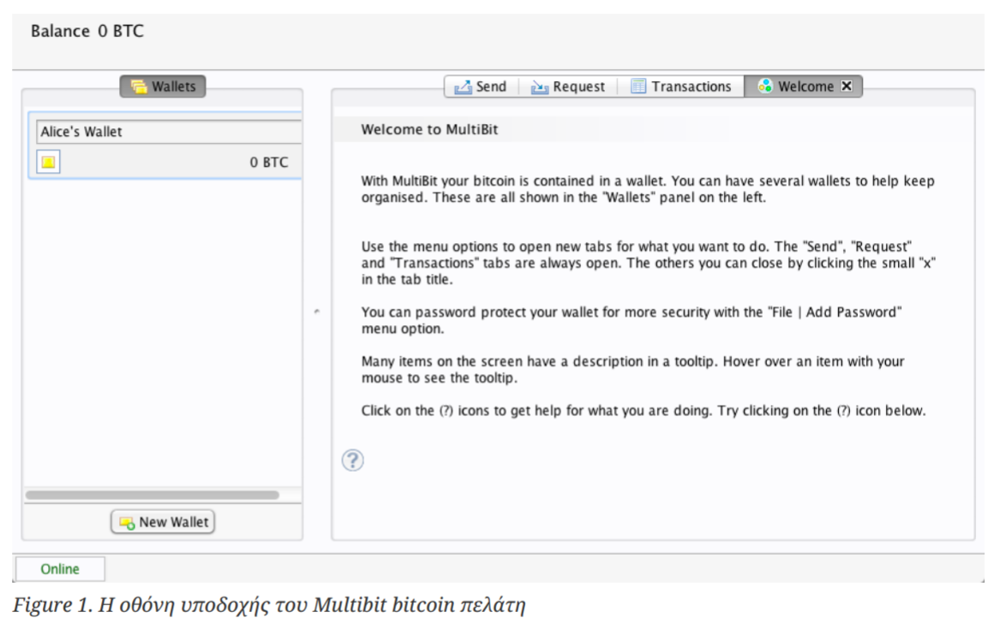
Figure 1. Η οθόνη υποδοχής του Multibit bitcoin πελάτη
Η εφαρμογή Multibit δημιουργεί αυτόματα ένα πορτοφόλι και μια νέα διεύθυνση bitcoin για την Αλίκη,
την οποία μπορεί να δει κάνοντας κλικ στην καρτέλα «Request» στο Νέα bitcoin διεύθυνση της Αλίκης, στην καρτέλα «Request» του πελάτη Multibit.
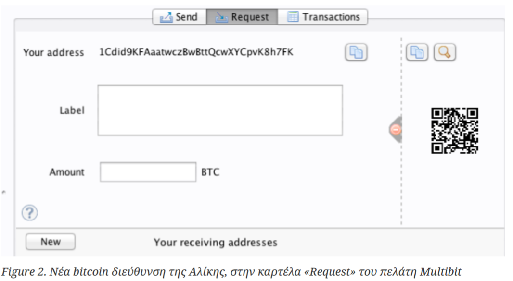
Figure 2. Νέα bitcoin διεύθυνση της Αλίκης, στην καρτέλα «Request» του πελάτη Multibit
Το πιο σημαντικό μέρος αυτής της οθόνης είναι η bitcoin διεύθυνση της Αλίκης.
Όπως και μια διεύθυνση ηλεκτρονικού ταχυδρομείου, η Αλίκη μπορεί να μοιραστεί αυτή τη διεύθυνση και ο καθένας μπορεί να τη χρησιμοποιήσει για να στείλει χρήματα απευθείας στο νέο της πορτοφόλι.
Στην οθόνη εμφανίζεται ως μια μακρά σειρά γραμμάτων και αριθμών: 1Cdid9KFAaatwczBwBttQcwXYCpvK8h7FK.
Δίπλα στην διεύθυνση bitcoin του πορτοφολιού είναι ένας QR κώδικας, μια μορφή γραμμωτού κώδικα που περιέχει τις ίδιες πληροφορίες σε μορφή που μπορεί να σαρωθεί από μία κάμερα smartphone.
Ο κώδικας QR είναι το μαύρο-λευκό τετράγωνο στη δεξιά πλευρά του παραθύρου.
Η Αλίκη μπορεί να αντιγράψει τη διεύθυνση bitcoin ή τον QR κώδικα στο πρόχειρο της κάνοντας κλικ στο κουμπί «copy» δίπλα στο καθένα από αυτά.
Κάνοντας κλικ στον QR κώδικα θα μεγεθύνει, έτσι ώστε να μπορεί εύκολα να σαρωθεί από μία κάμερα smartphone.
Η Αλίκη μπορεί επίσης να εκτυπώσει τον QR κώδικα για να δώσει εύκολα τη διεύθυνση της σε άλλους χωρίς να χρειάζεται να πληκτρολογήσει τη μακρά σειρά των γραμμάτων και αριθμών.
TIP
Οι bitcoin διευθύνσεις ξεκινούν με το ψηφίο 1 ή 3.
Όπως και με τις διευθύνσεις ηλεκτρονικού ταχυδρομείου, οι διευθύνσεις bitcoin μπορούν να μοιραστούν με άλλους χρήστες bitcoin οι οποίοι μπορούν να τις χρησιμοποιούν για να στείλουν bitcoin απευθείας στο πορτοφόλι σας.
Σε αντίθεση με τις διευθύνσεις ηλεκτρονικού ταχυδρομείου, μπορείτε να δημιουργήσετε νέες διευθύνσεις όσο συχνά θέλετε, το σύνολο των οποίων θα κατευθύνει τα χρήματα στο πορτοφόλι σας.
Ένα πορτοφόλι είναι απλά μια συλλογή διευθύνσεων και τα κλειδιά που ξεκλειδώνουν τα χρήματα μέσα σε αυτό.
Μπορείτε να αυξήσετε την ιδιωτικότητα σας, χρησιμοποιώντας διαφορετική διεύθυνση για κάθε συναλλαγή.
Δεν υπάρχει, πρακτικά, κανένα όριο στον αριθμό των διευθύνσεων που ένας χρήστης μπορεί να δημιουργήσει.
Η Αλίκη είναι τώρα έτοιμη να αρχίσει να χρησιμοποιεί το νέο bitcoin πορτοφόλι της.
Παίρνοντας τα πρώτα σας Bitcoin
Δεν είναι δυνατό να αγοράσει κάποιος bitcoin σε μια τράπεζα ή σε αγορές ξένου συναλλάγματος αυτή τη στιγμή.
Εν έτη 2014, εξακολουθεί να είναι αρκετά δύσκολη η απόκτηση bitcoin στις περισσότερες χώρες.
Υπάρχουν μια σειρά από εξειδικευμένα ανταλλακτήρια νομισμάτων, όπου μπορείτε να αγοράσετε και να πωλήσετε bitcoin σε αντάλλαγμα για ένα τοπικό νόμισμα.
Αυτά λειτουργούν ως διαδικτυακές αγορές συναλλάγματος και περιλαμβάνουν:
Bitstamp
Μια ευρωπαϊκή αγορά συναλλάγματος που υποστηρίζει πολλά νομίσματα συμπεριλαμβανομένων Ευρώ (EUR) και δολαρίων ΗΠΑ (USD) μέσω τραπεζικού εμβάσματος.
Coinbase
Ένα bitcoin πορτοφόλι και πλατφόρμα με έδρα τις ΗΠΑ, όπου οι έμποροι και οι καταναλωτές μπορούν να συναλλάσσονται με bitcoin.
Η Coinbase καθιστά εύκολη την αγορά και πώληση bitcoin, επιτρέποντας στους χρήστες να συνδεθούν με «US checking accounts» μέσω του συστήματος ACH.
Τα ανταλλακτήρια κρυπτονομισμάτων, όπως αυτά, λειτουργούν στη διασταύρωση των εθνικών νομισμάτων και των κρυπτονομισμάτων.
Ως εκ τούτου, υπόκεινται σε εθνικούς και διεθνείς κανονισμούς, ενώ συχνά λειτουργούν μόνο σε μια συγκεκριμένη χώρα ή οικονομική ζώνη και ειδικεύονται στα εθνικά νομίσματα της περιοχής.
Η επιλογή σας του ανταλλακτηρίου θα είναι ειδικά για το εθνικό νόμισμα που χρησιμοποιείτε και θα περιορίζεται στις ανταλλαγές που λειτουργούν εντός της δικαιοδοσίας της χώρας σας.
Παρόμοια με το άνοιγμα τραπεζικού λογαριασμού, διαρκεί αρκετές ημέρες ή εβδομάδες η δημιουργία των αναγκαίων λογαριασμών για αυτές τις υπηρεσίες, επειδή απαιτούν διάφορες μορφές αναγνώρισης προς συμμόρφωση με τις KYC (Know Your Customer) και AML(Anti-Money Laundering) τραπεζικές ρυθμίσεις.
Μόλις έχετε ένα λογαριασμό σε ένα ανταλλακτήριο bitcoin, τότε μπορείτε να αγοράσετε ή να πουλήσετε bitcoin γρήγορα, όπως ακριβώς θα μπορούσατε και με ένα ξένο νόμισμα χρησιμοποιώντας ένα λογαριασμό μεσιτείας.
Μπορείτε να βρείτε μια πιο ολοκληρωμένη λίστα στο bitcoin charts, έναν ιστότοπο που προσφέρει επεξήγηση τιμών και άλλα δεδομένα της αγοράς ανάμεσα σε πολλές δεκάδες ανταλλακτήρια νομισμάτων.
Υπάρχουν άλλες τέσσερις μέθοδοι για να πάρετε bitcoin όντας νέος χρήστης:
• Βρείτε ένα φίλο που έχει bitcoin και αγοράσετε μερικά από αυτόν απευθείας.
Πολλοί χρήστες bitcoin ξεκινούν με αυτόν τον τρόπο.
• Χρησιμοποιήστε μια υπηρεσία αγγελιών όπως το localbitcoins.com, για να βρείτε έναν πωλητή στην περιοχή σας και να αγοράσετε bitcoin για μετρητά σε μια συναλλαγή πρόσωπο-με-πρόσωπο.
• Πουλήστε ένα προϊόν ή μια υπηρεσία για bitcoin.
Εάν είστε προγραμματιστής, πουλήστε τις γνώσεις προγραμματισμού σας.
• Χρησιμοποιήστε ένα bitcoin ΑΤΜ στην πόλη σας.
Βρείτε ένα bitcoin ΑΤΜ κοντά σας χρησιμοποιώντας έναν συνδεδεμένο στο διαδίκτυο χάρτη από το CoinDesk.
Η Αλίκη εισήχθη στο bitcoin από έναν φίλο και έτσι έχει έναν εύκολο τρόπο για να πάρει τα πρώτα της bitcoin, ενώ περιμένει να ελεγχθεί και να ενεργοποιηθεί ο λογαριασμός της σε μία αγορά συναλλάγματος στην Καλιφόρνια.
Αποστολή και λήψη Bitcoin
Η Αλίκη δημιούργησε το bitcoin πορτοφόλι της και είναι τώρα έτοιμη να λάβει χρήματα.
Η εφαρμογή πορτοφολιού της δημιούργησε τυχαία ένα ιδιωτικό κλειδί (που περιγράφεται με περισσότερες λεπτομέρειες στο [private_keys]) μαζί με την αντίστοιχη του διεύθυνση bitcoin.
Σε αυτό το σημείο, η bitcoin διεύθυνσή της δεν είναι γνωστή στο δίκτυο bitcoin ούτε «εγγεγραμμένη» σε κάποιο μέρος του bitcoin συστήματος.
Η bitcoin διεύθυνση της είναι απλά ένας αριθμός που αντιστοιχεί σε ένα κλειδί που μπορεί να χρησιμοποιεί για να ελέγχει την πρόσβαση στα χρήματα.
Δεν υπάρχει κανένας λογαριασμός ή συσχέτιση μεταξύ αυτής της διεύθυνσης και κάποιου λογαριασμού.
Μέχρι τη στιγμή εκείνη που η διεύθυνση της θα αναφερθεί ως αποδέκτης της αξίας σε μια συναλλαγή που δημοσιεύτηκε στο αρχείο συναλλαγών του bitcoin (το blockchain), παραμένει απλά μέρος του τεράστιου αριθμού των πιθανών διευθύνσεων που είναι «έγκυρες» στο bitcoin.
Από τη στιγμή που έχει συνδεθεί με μια συναλλαγή, γίνεται μέρος των γνωστών διευθύνσεων στο δίκτυο και η Αλίκη μπορεί να ελέγξει το υπόλοιπο (balance) στο δημόσιο αρχείο συναλλαγών.
Η Αλίκη συναντά το φίλο της Τζο, ο οποίος την εισήγαγε στο bitcoin, σε ένα τοπικό εστιατόριο ώστε να μπορούν να ανταλλάξουν κάποια δολάρια ΗΠΑ και να βάλουν κάποια bitcoin στο λογαριασμό της. Μαζί της έχει φέρει την εκτύπωση από τη διεύθυνση και τον QR κώδικα όπως εμφανίζονται στο πορτοφόλι bitcoin.
Δεν υπάρχει τίποτα ευαίσθητο, από άποψη ασφάλειας σχετικά με τη διεύθυνση bitcoin.
Μπορεί να αναρτηθεί σε οποιοδήποτε σημείο χωρίς να διακινδυνεύει την ασφάλεια του λογαριασμού της.
Η Αλίκη θέλει να μετατρέψει μόνο 10 δολάρια ΗΠΑ σε bitcoin, έτσι ώστε να μην ρισκάρει πάρα πολλά χρήματα σε αυτή τη νέα τεχνολογία.
Δίνει στον Τζο ένα χαρτονόμισμα 10$ και την εκτύπωση της διεύθυνσης της για να μπορεί ο Τζο να της στείλει το αντίστοιχο ποσό σε bitcoin.
Στη συνέχεια, ο Τζο πρέπει να βρει τη συναλλαγματική ισοτιμία ώστε να μπορέσει να δώσει το σωστό ποσό των bitcoin στην Αλίκη.
Υπάρχουν εκατοντάδες εφαρμογές και ιστοσελίδες που παρέχουν τη τρέχουσα αγοραία ισοτιμία.
Εδώ είναι μερικές από τις πιο δημοφιλείς:
Bitcoin Charts
Μία υπηρεσία με λίστα δεδομένων της αγοράς, που δείχνει την αγοραία ισοτιμία του bitcoin ανάμεσα σε πολλά ανταλλακτήρια σε όλο τον κόσμο, εκφραζόμενη σε διαφορετικά τοπικά νομίσματα.
Bitcoin Average
Μια ιστοσελίδα που παρέχει μια απλή άποψη του όγκου σταθμισμένης μέσης τιμής για κάθε νόμισμα
ZeroBlock
Μια δωρεάν Android και iOS εφαρμογή που μπορεί να εμφανίσει την τιμή του bitcoin από διαφορετικά ανταλλακτήρια (δείτε το ZeroBlock, Μια Android και IOS εφαρμογή για την αγοραία ισοτιμία του bitcoin)
Bitcoin Wisdom
Ακόμα μία υπηρεσία με λίστα δεδομένων της αγοράς
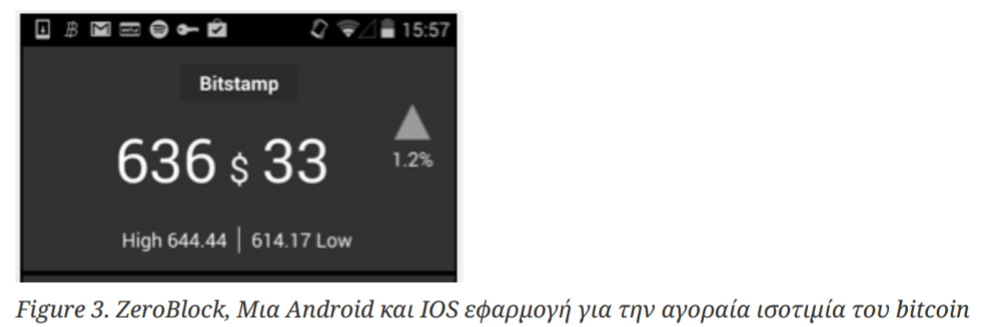
Figure 3. ZeroBlock, Μια Android και IOS εφαρμογή για την αγοραία ισοτιμία του bitcoin
Χρησιμοποιώντας μία από τις εφαρμογές ή ιστοσελίδες που μόλις αναφέρθηκαν, ο Τζο καθορίζει την τιμή του bitcoin να είναι περίπου 100 δολάρια ΗΠΑ ανά bitcoin.
Με αυτή την ισοτιμία θα πρέπει να δώσει στην Αλίκη 0,10 bitcoin (αναφέρονται και ως 100 millibitcoin), σε αντάλλαγμα για τα 10 δολάρια που του έδωσε.
Μόλις ο Τζο έχει δημιουργήσει μια δίκαιη τιμή ανταλλαγής, ανοίγει την εφαρμογή με το πορτοφόλι στο κινητό και επιλέγει να «στείλει» bitcoin.
Για παράδειγμα, αν χρησιμοποιεί την εφαρμογή Blockchain wallet στο Android κινητό του, θα εμφανιστεί μια οθόνη που ζητά δύο εισόδους, όπως φαίνεται στο Εφαρμογή wallet κινητού Blockchain και η οθόνη αποστολής bitcoin.
• Η bitcoin διεύθυνση προορισμού της συναλλαγής
• Η ποσότητα bitcoin να στείλει
Στο πεδίο εισαγωγής για τη διεύθυνση bitcoin, υπάρχει ένα μικρό εικονίδιο που μοιάζει με έναν QR κώδικα.
Αυτό επιτρέπει στον Τζο να σαρώσει το γραμμωτό κώδικα με την κάμερα του smartphone του, έτσι ώστε να μην χρειάζεται να πληκτρολογεί τη bitcoin διεύθυνση της Αλίκης (1Cdid9KFAaatwczBwBttQcwXYCpvK8h7FK), η οποία είναι αρκετά μακριά και δύσκολη στην πληκτρολόγηση.
Ο Τζο πατάει στο εικονίδιο του QR κώδικα και ενεργοποιεί την κάμερα τοmartphone, σαρώνοντας τον QR κώδικα από το τυπωμένο πορτοφόλι της Αλίκης που έφερε μαζί της.
Η wallet εφαρμογή κινητού συμπληρώνει τη διεύθυνση bitcoin και ο Τζο μπορεί να ελέγξει ότι σαρώθηκε σωστά συγκρίνοντας μερικά ψηφία από τη διεύθυνση με την εκτυπωμένη διεύθυνση της Αλίκης.

Figure 4. Εφαρμογή wallet κινητού Blockchain και η οθόνη αποστολής bitcoin
Ο Τζο εισάγει στη συνέχεια την τιμή bitcoin για τη συναλλαγή, 0,10 bitcoin.
Ελέγχει προσεκτικά για να βεβαιωθεί ότι έχει εισάγει τη σωστή ποσότητα, γιατί είναι έτοιμος να μεταδώσει τα χρήματα και κάθε λάθος κοστίζει σε αυτό το σημείο.
Τέλος, ο ίδιος πιέζει «Αποστολή» για να μεταδώσει τη συναλλαγή.
Η bitcoin wallet εφαρμογή κινητού του Τζο κατασκευάζει μια συναλλαγή που αποδίδει 0,10 bitcoin στη παρεχόμενη από την Αλίκη διεύθυνση, δίνοντας τα χρήματα από το πορτοφόλι του Τζο και υπογράφοντας τη συναλλαγή με τα ιδιωτικά κλειδιά του.
Αυτό λέει στο bitcoin δίκτυο ότι ο Τζο έχει εγκρίνει τη μεταφορά αξίας από μία από τις διευθύνσεις του στη νέα διεύθυνση της Αλίκης.
Καθώς η συναλλαγή μεταδίδεται μέσω του πρωτοκόλλου peer-to-peer, διαδίδεται (propagates) γρήγορα σε όλο το δίκτυο bitcoin.
Σε λιγότερο από ένα δευτερόλεπτο, οι περισσότεροι από τους καλά συνδεδεμένους με το δίκτυο κόμβους λαμβάνουν τη συναλλαγή και βλέπουμε για πρώτη φορά τη διεύθυνση της Αλίκης.
Αν η Αλίκη έχει ένα smartphone ή φορητό υπολογιστή μαζί της, θα είναι επίσης σε θέση να δει τη συναλλαγή.
Το αρχείο συναλλαγών του bitcoin, ένα διαρκώς αυξανόμενο αρχείο που καταγράφει κάθε συναλλαγή bitcoin που έχει ποτέ συμβεί, είναι δημόσιο, πράγμα που σημαίνει ότι το μόνο που έχει να κάνει είναι να κοιτάξει τη δική της διεύθυνση και να δει αν οτιδήποτε χρήματα έχουν αποσταλεί σε αυτήν.
Μπορεί να το κάνει πολύ εύκολα αυτό στην ιστοσελίδα blockchain.info εισάγοντας τη διεύθυνση της στο πλαίσιο αναζήτησης.
Ο δικτυακός τόπος θα της δείξει μια page καταγραφή όλων των συναλλαγών από και προς αυτή τη διεύθυνση.
Αν η Αλίκη παρακολουθεί τη σελίδα, αυτή θα ενημερωθεί και θα δείξει μια νέα συναλλαγή που μεταφέρει 0,10 bitcoin στο υπόλοιπο της διεύθυνσης λίγο αφότου πατήσει ο Τζο Αποστολή.
Επιβεβαιώσεις
Εκ πρώτης, η διεύθυνση της Αλίκης θα δείξει τη συναλλαγή από τον Τζο ως «μη επιβεβαιωμένη».
Αυτό σημαίνει ότι η συναλλαγή έχει διαδοθεί με το δίκτυο, αλλά δε περιλαμβάνεται ακόμα στο αρχείο συναλλαγών του bitcoin, γνωστό ως blockchain.
Για να συμπεριληφθεί η συναλλαγή, θα πρέπει να «διαβαστεί» από έναν εξορύκτη (miner) για να μπει σε ένα μπλοκ των συναλλαγών.
Μόλις δημιουργηθεί ένα νέο μπλοκ, σε περίπου 10 λεπτά, οι συναλλαγές εντός του μπλοκ θα γίνονται δεκτές ως «επιβεβαιωμένες» από το δίκτυο και θα μπορούν πλέον να δαπανηθούν.
Η συναλλαγή είναι σε όλους άμεσα φανερή, αλλά γίνεται «αξιόπιστη» μόνο όταν συμπεριλαμβάνεται σε ένα νέο μπλοκ που έχει εξορυχθεί.
Η Αλίκη είναι τώρα υπερήφανα κάτοχος των 0,10 bitcoin τα οποία μπορεί να ξοδέψει.
Στο επόμενο κεφάλαιο θα δούμε τη πρώτη αγορά της με bitcoin και θα εξετάσουμε τις υποκείμενες τεχνολογίες συναλλαγών και διάδοσης στο δίκτυο με περισσότερες λεπτομέρειες.
2. Πως Λειτουργεί το Bitcoin
Συναλλαγές, Μπλοκ, Εξόρυξη και το Blockchain
Το σύστημα του bitcoin, σε αντίθεση με τα παραδοσιακά τραπεζικά συστήματα και συστήματα πληρωμών, βασίζεται στην αποκεντρωμένη εμπιστοσύνη.
Αντί μιας κεντρικής αξιόπιστης αρχής, στο bitcoin, η εμπιστοσύνη επιτυγχάνεται ως αναδυόμενη ιδιότητα από τις αλληλεπιδράσεις των διαφόρων συμμετεχόντων στο σύστημα bitcoin.
Σε αυτό το κεφάλαιο, θα εξετάσουμε το bitcoin από ένα υψηλό επίπεδο με την παρακολούθηση μιας ξεχωριστής συναλλαγής μέσω του συστήματος bitcoin και την παρατήρηση της, όπως γίνεται «αξιόπιστη» και αποδεκτή από την κατανεμημένη συναίνεση του μηχανισμού του bitcoin και, τελικά, την καταγραφή της στο blockchain, το κατανεμημένο αρχείο όλων των συναλλαγών.
Κάθε παράδειγμα βασίζεται σε μια πραγματική συναλλαγή που πραγματοποιείται στο bitcoin δίκτυο, προσομοιώνοντας τις αλληλεπιδράσεις μεταξύ των χρηστών (Τζο, Αλίκη και Μπομπ) με την αποστολή χρημάτων από το ένα πορτοφόλι στο άλλο.
Καθώς παρακολουθούμε μία συναλλαγή μέσω του δικτύου bitcoin και blockchain, θα χρησιμοποιήσουμε μία ιστοσελίδα blockchain εξερευνητή (blockchain explorer) για να απεικονίσουμε το κάθε βήμα.
Ένας blockchain εξερευνητής είναι μια διαδικτυακή εφαρμογή που λειτουργεί ως μηχανή αναζήτησης bitcoin, υπό την έννοια ότι μας επιτρέπει να αναζητήσουμε τις διευθύνσεις, τις συναλλαγές και τα μπλοκ, ώστε να βλέπουμε τις σχέσεις και τις ροές μεταξύ τους.
Στους δημοφιλείς blockchain εξερευνητές περιλαμβάνονται:
• Blockchain info
• Bitcoin Block Explorer
• insight
• blockr Block Reader
Καθένας από αυτούς έχει μια λειτουργία αναζήτησης που μπορεί να αναζητήσει διεύθυνση, κατακερματισμό (hash) συναλλαγής και τον αριθμό του μπλοκ και να βρει τα αντίστοιχα δεδομένα στο δίκτυο bitcoin και blockchain.
Με κάθε παράδειγμα, θα παράσχουμε μια διεύθυνση URL που θα σας μεταφέρει απευθείας στη σχετική καταχώρηση ώστε να μπορούμε να το μελετήσουμε λεπτομερώς.
Επισκόπηση Bitcoin
Σε αυτό το διάγραμμα-επισκόπηση που φαίνεται στο Επισκόπηση Bitcoin, βλέπουμε ότι το σύστημitcoin αποτελείται από χρήστες με πορτοφόλια που περιέχουν κλειδιά, από συναλλαγές που διαδίδονται σε όλο το δίκτυο και από εξορύκτες που παράγουν (μέσω ανταγωνιστικού υπολογισμού) τη συναίνεση blockchain, η οποία είναι το επίσημο αρχείο όλων των συναλλαγών. Σε αυτό το κεφάλαιο θα εντοπίσουμε μια μοναδική συναλλαγή καθώς ταξιδεύει σε όλο το δίκτυο και θα εξετάσουμε από υψηλό επίπεδο τις αλληλεπιδράσεις ανάμεσα σε κάθε μέρος του συστήματος bitcoin. Στα επόμενα κεφάλαια θα σκαλίσουμε την τεχνολογία πίσω από τα πορτοφόλια, την εξόρυξη και τα εμπορικά συστήματα.
Αγοράζοντας έναν καφέ
Η Αλίκη, που παρουσιάστηκε στο προηγούμενο κεφάλαιο, είναι ένας νέος χρήστης που μόλις απέκτησε το πρώτο της bitcoin.
Στο [getting_first_bitcoin], η Αλίκη συναντήθηκε με το φίλο της Τζο για να ανταλλάξουν κάποια μετρητά για bitcoin.
Η συναλλαγή που δημιουργήθηκε από τον Τζο μετέφερε στο πορτοφόλι της Αλίκης 0,10 BTC.
Τώρα, η Αλίκη θα κάνει την πρώτη της συναλλαγή λιανικής, αγοράζοντας ένα φλιτζάνι καφέ στην καφετέρια του Μπομπ στο Palo Alto της Καλιφόρνια.
Η καφετέρια του Μπομπ ξεκίνησε πρόσφατα να αποδέχεται bitcoin πληρωμές, προσθέτοντας μια επιλογή bitcoin στο POS σύστημα της.
Οι τιμές στην καφετέρια αναγράφονται στο τοπικό νόμισμα (δολάρια ΗΠΑ), αλλά στο ταμείο, οι πελάτες έχουν τη δυνατότητα να πληρώνουν είτε σε δολάρια είτε σε bitcoin.
Η Αλίκη κάνει την παραγγελία της για έναν καφέ και ο Μπομπ εισάγει τη συναλλαγή στο σύστημα του.
Το POS σύστημα θα μετατρέψει τη συνολική τιμή από δολάρια ΗΠΑ σε bitcoin στην επικρατούσα αγοραία ισοτιμία και θα εμφανίσει τις τιμές και στα δύο νομίσματα, καθώς θα δείχνει έναν QR κώδικα που θα περιέχει ένα αίτημα πληρωμής για τη συγκεκριμένη συναλλαγή (δείτε το QR κώδικας - Αίτημα Πληρωμής (Συμβουλή: Σαρώστε αυτό!)):
Σύνολο:
1,50$ USD
0,015 BTC
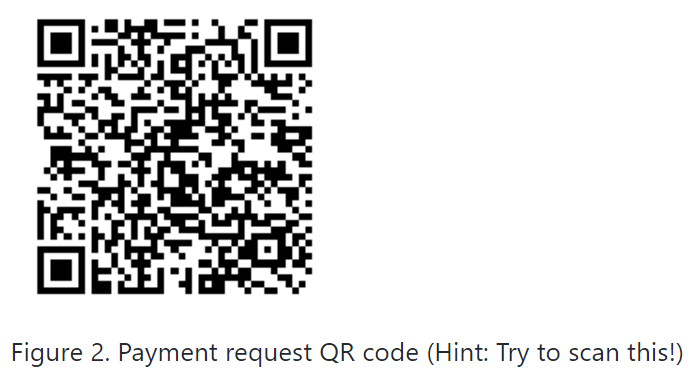
Figure 2. QR κώδικας - Αίτημα Πληρωμής (Συμβουλή: Σαρώστε αυτό!)
Ο QR κώδικας του αιτήματος πληρωμής κωδικοποιεί την παρακάτω διεύθυνση URL, που ορίζεται στην 21η πρόταση βελτίωσης του bitcoin (BIP0021):
bitcoin:1GdK9UzpHBzqzX2A9JFP3Di4weBwqgmoQA↵
amount=0.015&
label=Bob%27s%20Cafe&
message=Purchase%20at%20Bob%27s%20Cafe
Περιεχόμενα του URL
Μία bitcoin διεύθυνση: «1GdK9UzpHBzqzX2A9JFP3Di4weBwqgmoQA»
Το ποσό πληρωμής: «0,015»
Μια ετικέτα για τη διεύθυνση παραλήπτη: «Bob's Cafe»
Μια περιγραφή για την πληρωμή: «Αγορά σε Bob's Cafe»
TIP
Σε αντίθεση με έναν QR κώδικα που περιέχει απλώς έναν προορισμό διεύθυνσης bitcoin, η αίτηση πληρωμής είναι ένα QR-κωδικοποιημένο URL που περιέχει μια διεύθυνση προορισμού, ένα ποσό πληρωμής και μία γενική περιγραφή όπως «BobΆs Cafe».
Αυτό επιτρέπει σε bitcoin wallet εφαρμογές να προ-συμπληρώνουν τις πληροφορίες που χρησιμοποιούνται για στέλνεται η πληρωμή, ενώ δείχνει μια περιγραφή αναγνώσιμη για το χρήστη.
Μπορείτε να σαρώσετε τον QR κώδικα με bitcoin wallet εφαρμογή για να δείτε τι βλέπει η Αλίκη.
Ο Μπομπ λέει: «Αυτό κοστίζει ένα δολάριο και πενήντα, ή δεκαπέντε millibitcoin».
Η Αλίκη χρησιμοποιεί το smartphone της για να σαρώσει το γραμμωτό κώδικα στην οθόνη.
Αυτό της δείχνει την πληρωμή των 0,0150 BTC στο Bob's Cafe και επιλέγει Αποστολή για να εγκριθεί η πληρωμή.
Μέσα σε λίγα δευτερόλεπτα (περίπου το ίδιο χρονικό διάστημα όπως και η έγκριση της πιστωτικής κάρτας), ο Μπομπ θα δει τη συναλλαγή στο σύστημα του, ολοκληρώνοντας τη συναλλαγή.
Στις ενότητες που ακολουθούν θα εξετάσουμε τη συναλλαγή αυτή με περισσότερες λεπτομέρειες και θα δούμε πώς την κατασκεύασε το πορτοφόλι της Αλίκης, πώς διαδόθηκε σε όλο το δίκτυο, πώς επαληθεύτηκε και τέλος πως ο Μπομπ μπορεί να δαπανήσει αυτό το ποσό στις επόμενες συναλλαγές.
TIP
Το bitcoin δίκτυο μπορεί να κάνει συναλλαγές σε κλασματικές τιμές, π.χ. από milli-bitcoin (1 / 1000 ενός bitcoin) έως 1 / 100.000.000ό ενός bitcoin, το οποίο είναι γνωστό ως ένα σατόσι.
Σε όλο το βιβλίο θα χρησιμοποιήσουμε τον όρο «bitcoin» για να αναφέρουμε οποιαδήποτε ποσότητα του νομίσματος bitcoin, από την μικρότερη μονάδα (1 σατόσι) έως το συνολικό αριθμό (21.000.000) όλων των bitcoin που θα εξορυχθούν.
Συναλλαγές bitcoin
Με απλά λόγια, μια συναλλαγή λέει στο δίκτυο ότι ο ιδιοκτήτης ενός αριθμού bitcoin έχει επιτρέψει τη μεταφορά ορισμένων από αυτά τα bitcoin σε άλλο ιδιοκτήτη.
Ο νέος ιδιοκτήτης μπορεί τώρα να ξοδέψει αυτά τα bitcoin δημιουργώντας μια άλλη συναλλαγή που επιτρέπει τη μεταφορά σε άλλον ιδιοκτήτη και ούτω καθεξής, σε μια αλυσίδα ιδιοκτησίας.
Οι συναλλαγές είναι σαν γραμμές σε διπλογραφικό λογιστικό καθολικό.
Με απλά λόγια, κάθε συναλλαγή περιέχει μία ή περισσότερες «εισόδους» (inputs), οι οποίες είναι χρεώσεις σε λογαριασμό bitcoin.
Από την άλλη πλευρά της συναλλαγής, υπάρχουν μία ή περισσότερες «έξοδοι» (outputs), που είναι οι μονάδες που προστίθενται σε ένα λογαριασμό bitcoin.
Οι είσοδοι και οι έξοδοι (χρεώσεις και πιστώσεις) δεν είναι απαραίτητα στο ίδιο ποσό.
Αντ' αυτού, οι έξοδοι προσθέτουν ελαφρώς λιγότερο ποσό στις εισόδους και η διαφορά αυτή αντιπροσωπεύει μία ορισμένη «χρέωση συναλλαγής», η οποία είναι ένα μικρό ποσό που συλλέγεται από τον εξορύκτη που περιλαμβάνει τη συναλλαγή στο καθολικό.
Μια συναλλαγή bitcoin παρουσιάζεται ως λογιστική καταχώρηση στο καθολικό Συναλλαγή ως διπλογραφικό λογιστικό καθολικό.
Η συναλλαγή περιλαμβάνει επίσης απόδειξη ιδιοκτησίας για κάθε ποσό του bitcoin (είσοδοι) του οποίου η αξία μεταφέρεται, με τη μορφή μιας ψηφιακής υπογραφής από τον ιδιοκτήτη, η οποία μπορεί να επικυρωθεί ανεξάρτητα από τον καθένα.
Σε όρους bitcoin, το «ξόδεμα» είναι η υπογραφή μια συναλλαγής που μεταφέρει αξία από την προηγούμενη συναλλαγή σε ένα νέο ιδιοκτήτη ο οποίος αναγνωρίζεται με τη διεύθυνση bitcoin.
TIP
Οι συναλλαγές μεταφέρουν αξία από τις εισόδους της συναλλαγής στις εξόδους της συναλλαγής.
Μια είσοδος είναι εκεί όπου η αξία του νομίσματος προέρχεται, συνήθως η έξοδος μιας προηγούμενης συναλλαγής.
Μια έξοδος συναλλαγής εκχωρεί ένα νέο ιδιοκτήτη για την αξία, συνδέοντάς τη με ένα κλειδί.
Το κλειδί προορισμού ονομάζεται επιβάρυνση (encumbrance).
Έξοδοι από μια συναλλαγή μπορούν να χρησιμοποιηθούν ως είσοδοι σε μια νέα συναλλαγή, δημιουργώντας έτσι μια αλυσίδα ιδιοκτησίας, καθώς η αξία μεταφέρεται από διεύθυνση σε διεύθυνση (δείτε Μια αλυσίδα συναλλαγών, όπου η έξοδος μιας συναλλαγής είναι η είσοδος της επόμενης συναλλαγής).
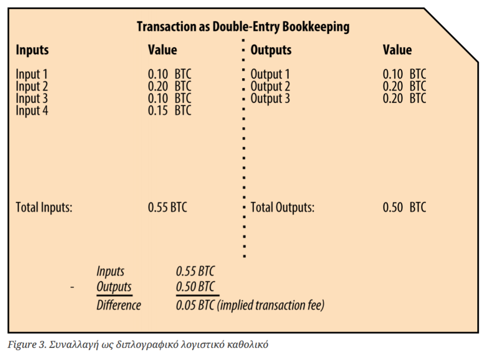
Figure 3. Συναλλαγή ως διπλογραφικό λογιστικό καθολικό
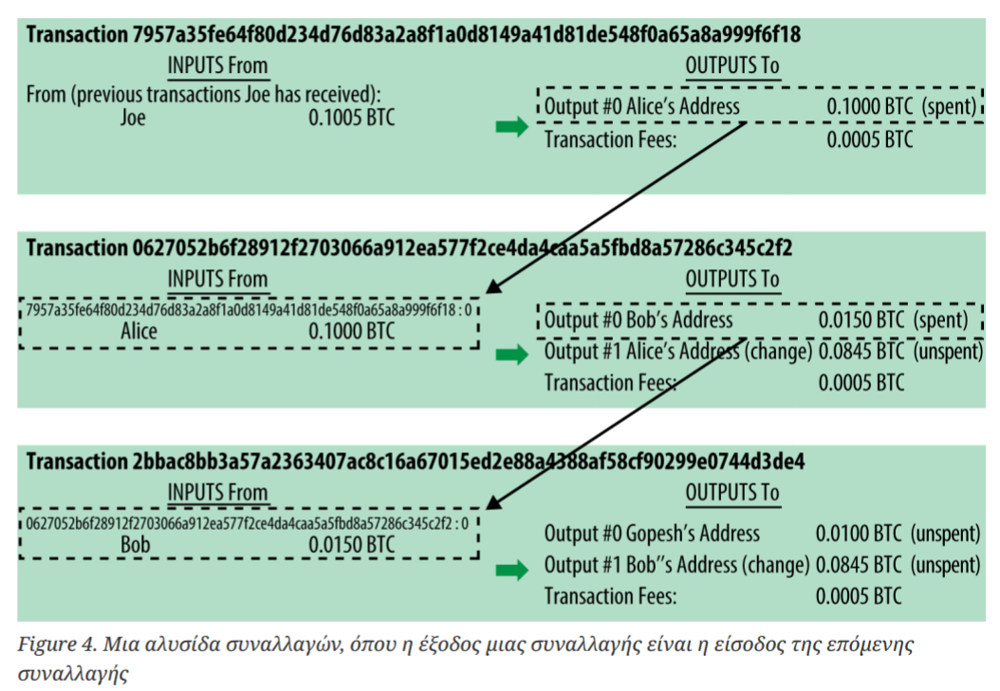
Figure 4. Μια αλυσίδα συναλλαγών, όπου η έξοδος μιας συναλλαγής είναι η είσοδος της επόμενης συναλλαγής
Η πληρωμή της Αλίκης στην καφετέρια του Μπομπ χρησιμοποιεί μια προηγούμενη συναλλαγή ως την είσοδο της.
Στο προηγούμενο κεφάλαιο η Αλίκη έλαβε bitcoin από το φίλο της Τζο σε αντάλλαγμα για μετρητά.
Η συναλλαγή έχει έναν αριθμό bitcoin κλειδωμένο (επιβάρυνση) στο κλειδί της Αλίκης.
Η νέα συναλλαγή της στην καφετέρια παραπέμπει στην προηγούμενη συναλλαγή ως είσοδο και δημιουργεί νέες εξόδους για να πληρώσει για το φλιτζάνι του καφέ και να λάβει τα ρέστα.
Οι συναλλαγές αποτελούν μια αλυσίδα, όπου οι είσοδοι από την τελευταία συναλλαγή αντιστοιχούν σε εξόδους από προηγούμενες συναλλαγές.
Το κλειδί της Αλίκης παρέχει την υπογραφή που ξεκλειδώνει εκείνες τις προηγούμενες εξόδους των συναλλαγών, αποδεικνύοντας έτσι στο δίκτυο του bitcoin ότι είναι ιδιοκτήτρια των χρημάτων.
Η Αλίκη επισυνάπτει την πληρωμή για καφέ στη διεύθυνση του Μπομπ και με τον τρόπο αυτό «επιβαρύνει» την έξοδο με την απαίτηση από τον Μπομπ να παράγει μια υπογραφή, ώστε ξοδέψει το εν λόγω ποσό.
Αυτό αποτελεί μια μεταφορά αξίας μεταξύ της Αλίκης και του Μπομπ.
Η αλυσίδα των συναλλαγών, από τον Τζο στην Αλίκη στον Μπομπ, απεικονίζεται στο Μια αλυσίδα συναλλαγών, όπου η έξοδος μιας συναλλαγής είναι η είσοδος της επόμενης συναλλαγής.
Κοινές μορφές συναλλαγών
Η πιο κοινή μορφή συναλλαγής είναι η απλή πληρωμή από μία διεύθυνση σε άλλη, η οποία περιλαμβάνει κάποια «ρέστα» ή αλλιώς «επιστροφή» (change) προς τον αρχικό ιδιοκτήτη.
Αυτός ο τύπος συναλλαγής έχει μία είσοδο και δύο εξόδους όπως φαίνεται στο Η πιο κοινή συναλλαγή.
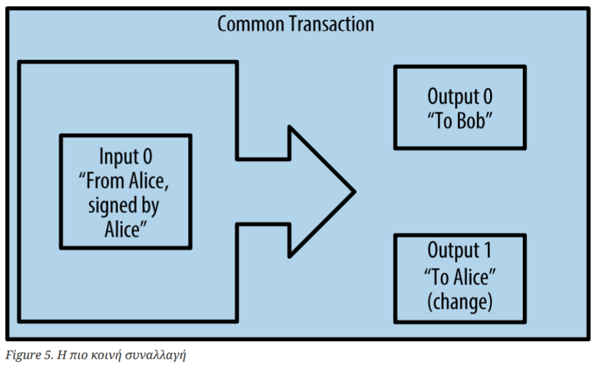
Figure 5. Η πιο κοινή συναλλαγή
Μία άλλη κοινή μορφή συναλλαγής είναι αυτή που συγκεντρώνει πολλές αδρανείς εξόδους σε μία ενιαία έξοδο (δείτε το Συγκέντρωση αδρανών χρηματικών ποσών συναλλαγών).
Αυτό αντιπροσωπεύει εκείνη τη συναλλαγή στον πραγματικό κόσμο όπου ανταλλάζεται ένας σωρός νομισμάτων και χαρτονομισμάτων για ένα ενιαίο μεγαλύτερο τραπεζογραμμάτιο.
Οι συναλλαγές όπως αυτές δημιουργούνται συχνά από wallet εφαρμογές για να καθαρίσουν πολλά μικρότερα ποσά τα οποία ελήφθησαν ως ρέστα για τις πληρωμές.
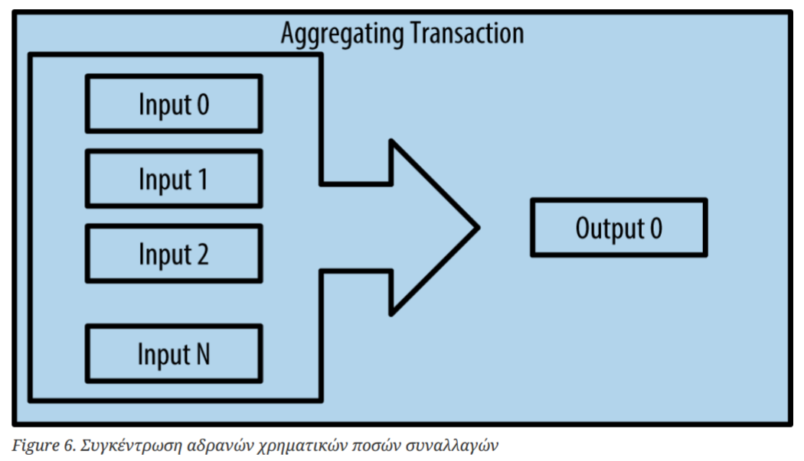
Figure 6. Συγκέντρωση αδρανών χρηματικών ποσών συναλλαγών
Τέλος, μια άλλη μορφή συναλλαγής που παρατηρείται συχνά στο αρχείο συναλλαγών του bitcoin είναι μια συναλλαγή που διανέμει μια είσοδο σε πολλαπλές εξόδους που αντιπροσωπεύουν πολλούς παραλήπτες (δείτε το Συναλλαγή διανομής χρημάτων).
Αυτό το είδος της συναλλαγής χρησιμοποιείται ορισμένες φορές από εμπορικούς φορείς για τη διανομή των χρημάτων σε περιπτώσεις όπως πληρωμή μισθοδοσίας σε πολλούς εργαζόμενους.
Κατασκευάζοντας μια συναλλαγή
Η wallet εφαρμογή της Αλίκης περιέχει όλη τη προγραμματισμένη λογική για την επιλογή των κατάλληλων εισόδων και εξόδων για να οικοδομήσουμε μια συναλλαγή με τις προδιαγραφές της Αλίκης.
Αυτή χρειάζεται μόνο να ορίσει έναν προορισμό και ένα ποσό και το υπόλοιπο συμβαίνει στην εφαρμογή πορτοφολιού χωρίς να βλέπει τις λεπτομέρειες.
Είναι σημαντικό, επίσης, ότι μια τέτοια εφαρμογή μπορεί να κατασκευάσει μια συναλλαγή ακόμη και όταν είναι εντελώς εκτός σύνδεσης.
Όπως γράφουμε μια επιταγή στο σπίτι και στη συνέχεια την αποστέλλουμε στην τράπεζα σε έναν φάκελο, η συναλλαγή δεν χρειάζεται να κατασκευαστεί και να υπογραφεί ενώ είναι συνδεδεμένη με το δίκτυο bitcoin.
Πρέπει μόνο να αποσταλεί, εν τέλει, στο δίκτυο για να μπορεί να εκτελεστεί.
Παίρνοντας τις σωστές εισόδους
Η wallet εφαρμογή της Αλίκης θα πρέπει πρώτα να βρει εισόδους που μπορεί να πληρώσει για το ποσό που θέλει να στείλει στον Μπομπ.
Οι περισσότερες wallet εφαρμογές κρατάνε μια μικρή βάση δεδομένων των «αξόδευτων εξόδων των συναλλαγών» που είναι κλειδωμένες (σενάριο κλειδώματος) με τα ίδια τα κλειδιά του πορτοφολιού.
Ως εκ τούτου, το πορτοφόλι της Αλίκης θα περιέχει ένα αντίγραφο της εξόδου συναλλαγής από τη συναλλαγή με τον Τζο, η οποία δημιουργήθηκε σε αντάλλαγμα για μετρητά (δείτε το [getting_first_bitcoin]).
Μία bitcoin wallet εφαρμογή που λειτουργεί ως ένας πλήρης πελάτης περιέχει στην πραγματικότητα ένα αντίγραφο της κάθε αξόδευτης εξόδου από κάθε συναλλαγή στην αλυσίδα των μπλοκ (blockchain).
Αυτό επιτρέπει, επίσης, σε ένα πορτοφόλι την κατασκευή εισόδων συναλλαγών τόσο γρήγορα για να επαληθεύσει εισερχόμενες συναλλαγές όσο χρειάζεται για να έχουν σωστές εισόδους.
Ωστόσο, επειδή ένας πλήρης πελάτης καταλαμβάνει πολύ χώρο στο δίσκο, τα περισσότερα πορτοφόλια των χρηστών «τρέχουν» τους lightweight πελάτες που παρακολουθούν μόνο τις αξόδευτες εξόδους του χρήστη.
Εάν η εφαρμογή πορτοφολιού δεν διατηρεί ένα αντίγραφο των αξόδευτων εξόδων συναλλαγών, μπορεί να ζητήσει από το δίκτυο bitcoin να ανακτήσει αυτές τις πληροφορίες, χρησιμοποιώντας μια ποικιλία APIs διαθέσιμα από διάφορους παρόχους ή ζητώντας από έναν πλήρη κόμβο με τη χρήση του bitcoin JSON RPC API.
Το Αναζήτηση όλων των αξόδευτων εξόδων για τη διεύθυνση bitcoin της Αλίκης δείχνει μια RESTful API αίτηση, κατασκευασμένη ως μία HTTP GET εντολή σε μια συγκεκριμένη διεύθυνση URL.
Αυτή η διεύθυνση URL θα επιστρέψει όλες τις αξόδευτες εκροές συναλλαγών για μια διεύθυνση, δίνοντας σε κάθε εφαρμογή (API) τις απαραίτητες πληροφορίες για την κατασκευή των εισόδων των συναλλαγών για ξόδεμα.
Χρησιμοποιούμε την απλή γραμμή εντολών HTTP πελάτη cURL για να ανακτήσουμε την απάντηση.
Example 1. Αναζήτηση όλων των αξόδευτων εξόδων για τη διεύθυνση bitcoin της Αλίκης
$ curl https://blockchain.info/unspent?active=1Cdid9KFAaatwczBwBttQcwXYCpvK8h7FK
Example 2. Αποτέλεσμα αναζήτησης
{
"unspent_outputs":[
{
"tx_hash":"186f9f998a5...2836dd734d2804fe65fa35779",
"tx_index":104810202,
"tx_output_n": 0,
"script":"76a9147f9b1a7fb68d60c536c2fd8aeaa53a8f3cc025a888ac",
"value": 10000000,
"value_hex": "00989680",
"confirmations":0
}
]
}
Το αποτέλεσμα στο Αποτέλεσμα αναζήτησης δείχνει μία αξόδευτη έξοδο (μια που δεν έχει ανακτηθεί ακόμη) υπό την κυριότητα της διεύθυνσης της Αλίκης 1Cdid9KFAaatwczBwBttQcwXYCpvK8h7FK. Το αποτέλεσμα περιλαμβάνει την αναφορά στην συναλλαγή στην οποία διατηρείται αυτή η αξόδευτη έξοδος(η πληρωμή από τον Τζο) και της αξίας σε σατόσι, 10 εκατομμύρια, που ισοδυναμεί με 0,10 bitcoin.
Με αυτές τις πληροφορίες, η εφαρμογή πορτοφολιού της Αλίκης μπορεί να κατασκευάσει μια συναλλαγή για τη μεταφορά αυτής της αξίας σε νέες διευθύνσεις ιδιοκτήτη.
TIP
Δείτε transaction from Joe to Alice.
Όπως μπορείτε να δείτε, το πορτοφόλι της Αλίκης περιέχει αρκετά bitcoin σε μία ενιαία αξόδευτη έξοδο για να πληρώσει ένα φλιτζάνι καφέ.
Σε άλλη περίπτωση, η εφαρμογή πορτοφολιού της Αλίκης μπορεί να χρειαστεί να «ψάξει» μέσα από έναν σωρό από μικρότερες αδιάθετες εξόδους, σαν να ψάχνει τα κέρματα μέσα σε μια τσάντα μέχρι να μπορέσει να βρει αρκετά για να πληρώσει τον καφέ.
Σε αμφότερες τις περιπτώσεις, μπορεί να υπάρχει ανάγκη για να πάρει πίσω κάποια ρέστα, όπως θα δούμε στην επόμενη ενότητα, καθώς η εφαρμογή δημιουργεί τις εξόδους των συναλλαγών (πληρωμές).
Δημιουργώντας τις εξόδους
Μια έξοδος συναλλαγής δημιουργείται υπό τη μορφή ενός σεναρίου (script) που δημιουργεί μία «επιβάρυνση» (locking script) στην αξία και μπορεί να ανακτηθεί μόνο με την εισαγωγή μίας λύσης σε αυτό το σενάριο.
Με απλά λόγια, η έξοδος της συναλλαγής της Αλίκης θα περιέχει ένα σενάριο που λέει κάτι σαν «Αυτή η έξοδος είναι πληρωτέα σε όποιον μπορεί να παρουσιάσει μια υπογραφή από το κλειδί που αντιστοιχεί στη δημόσια διεύθυνση του Μπομπ».
Επειδή μόνο ο Μπομπ έχει το πορτοφόλι με τα κλειδιά που αντιστοιχούν στην εν λόγω διεύθυνση, μόνο το δικό του πορτοφόλι μπορεί να παρουσιάσει μια τέτοια υπογραφή για να εξαργυρώσει αυτή την έξοδο.
Ως εκ τούτου, η Αλίκη θα «επιβαρύνει» την έξοδο της αξίας με την απαίτηση για μια υπογραφή από τον Μπομπ.
Η συναλλαγή αυτή θα περιλαμβάνει επίσης μια δεύτερη έξοδο, επειδή τα χρήματα της Αλίκης είναι υπό τη μορφή μίας εξόδου 0,10 BTC, τα οποία είναι πάρα πολλά χρήματα για τα 0,015 BTC που χρειάζεται ο καφές.
Η Αλίκη θα χρειαστεί 0,085 BTC σε ρέστα.
Η πληρωμή για τα ρέστα της δημιουργείται από το πορτοφόλι της Αλίκης στην ίδια συναλλαγή ως πληρωμή για τον Μπομπ.
Ουσιαστικά, το πορτοφόλι της σπάει τα χρήματα της σε δύο πληρωμές: μία στον Μπομπ και μία πίσω στον εαυτό της.
Στη συνέχεια, μπορεί να χρησιμοποιήσει την έξοδο αυτή για τα ρέστα σε επόμενη συναλλαγή και έτσι να τα δαπανήσει αργότερα.
Τέλος, προκειμένου η συναλλαγή να επεξεργαστεί από το δίκτυο εγκαίρως, η εφαρμογή πορτοφολιού της Αλίκης θα προσθέσει μια μικρή χρέωση.
Αυτό δεν γίνεται σαφές μέσα στη συναλλαγή· υπονοείται από τη διαφορά μεταξύ εισόδων και εξόδων.
Αν αντί να λάβει 0,085 σε ρέστα, η Αλίκη δημιουργήσει μόνο 0,0845 σαν δεύτερη είσοδο, αυτό σημαίνει ότι θα υπάρχει 0,0005 BTC (μισό millibitcoin) υπόλοιπο.
Τα 0,10 BTC της εισόδου δεν έχουν δαπανηθεί πλήρως με τις δύο εισόδους, επειδή προστιθέμενα βγάζουν λιγότερο από 0,10.
Η διαφορά που προκύπτει είναι η χρέωση της συναλλαγής (transaction fee) που συλλέγεται από τον εξορύκτη ως αμοιβή για την ενσωμάτωση της συναλλαγής σε ένα μπλοκ και την τοποθέτηση της στο αρχείο συναλλαγών blockchain.
Τη συναλλαγή που προκύπτει μπορείτε να τη δείτε με τη χρήση ενός blockchain εξερευνητή, όπως φαίνεται στο Η συναλλαγή Αλίκης στην καφετέρια του Μπομπ.
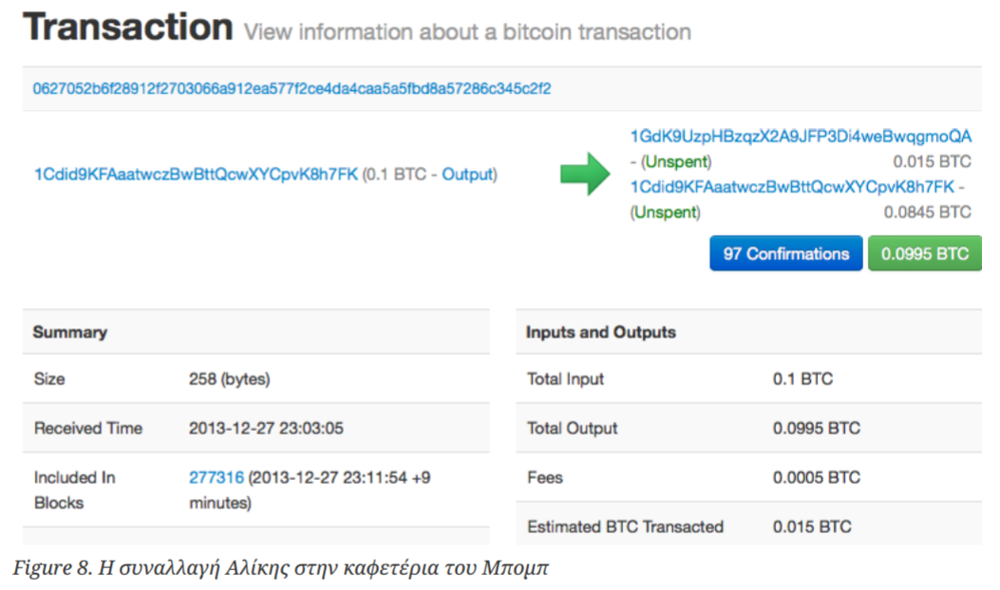
Figure 8. Η συναλλαγή Αλίκης στην καφετέρια του Μπομπ
TIP View the transaction from Alice to BobΆs Cafe.
Προσθέτοντας τη συναλλαγή στο αρχείο συναλλαγών
Η συναλλαγή δημιουργείται από την εφαρμογή πορτοφολιού της Αλίκης και έχει μήκος 258 μπάιτ και περιέχει ότι είναι απαραίτητο για να επιβεβαιώσει την κυριότητα των χρημάτων και να ορίσει νέους ιδιοκτήτες.
Τώρα, η συναλλαγή θα πρέπει να διαβιβαστεί στο δίκτυο του bitcoin όπου θα γίνει μέρος του κατανεμημένου αρχείου συναλλαγών (το blockchain).
Στην επόμενη ενότητα θα δούμε πώς μια συναλλαγή γίνεται μέρος ενός νέου μπλοκ και πώς το μπλοκ «εξορύσσεται».
Τέλος, θα δούμε πώς το νέο μπλοκ, μόλις προστεθεί στην αλυσίδα των μπλοκ, γίνεται αυξανόμενα έμπιστο από το δίκτυο καθώς προστίθενται περισσότερα μπλοκ.
Μετάδοση της συναλλαγής
Επειδή η συναλλαγή περιέχει όλες τις απαραίτητες πληροφορίες για επεξεργασία, δεν έχει σημασία πώς ή πού θα μεταδίδεται στο δίκτυο bitcoin.
Το δίκτυο bitcoin είναι ένα peer-to-peer δίκτυο, με κάθε bitcoin πελάτη να συμμετέχει όντας συνδεδεμένος με αρκετούς άλλους bitcoin πελάτες.
Ο σκοπός του δικτύου bitcoin είναι να διαδώσει (propagate) τις συναλλαγές και τα μπλοκ για όλους τους συμμετέχοντες.
Πώς διαδίδεται (how it propagates)
Η εφαρμογή πορτοφολιού της Αλίκης μπορεί να στείλει τη νέα συναλλαγή σε οποιονδήποτε από τους άλλους bitcoin πελάτες που είναι συνδεδεμένη, χρησιμοποιώντας οποιαδήποτε σύνδεση στο Διαδίκτυο: ενσύρματο δίκτυο, WiFi ή κινητό.
Το bitcoin πορτοφόλι της δεν χρειάζεται να είναι συνδεδεμένο με το bitcoin πορτοφόλι του Μπομπ άμεσα, ενώ δεν είναι επίσης απαραίτητη η χρησιμοποίηση της σύνδεσης στο Διαδίκτυο που προσφέρει η καφετέρια.
Κάθε κόμβος του δικτύου bitcoin (άλλος πελάτης) που λαμβάνει μια έγκυρη συναλλαγή που δεν έχει δει ξανά, θα την προωθήσει αμέσως σε άλλους κόμβους στους οποίους είναι συνδεδεμένος.
Έτσι, η συναλλαγή διαδίδεται ταχέως ανάμεσα σε όλο το peer-to-peer δίκτυο, επιτυγχάνοντας τη σύνδεση με ένα μεγάλο ποσοστό των κόμβων μέσα σε λίγα δευτερόλεπτα.
Η οπτική του Μπομπ
Αν η bitcoin εφαρμογή πορτοφολιού του Μπομπ συνδέεται άμεσα με την εφαρμογή πορτοφολιού της Αλίκης, η εφαρμογή του Μπομπ θα μπορούσε να είναι ο πρώτος κόμβος που θα λάβει τη συναλλαγή.
Ωστόσο, ακόμη κι αν το πορτοφόλι της Αλίκης στέλνει τη συναλλαγή μέσω άλλων κόμβων, στο πορτοφόλι του Μπομπ θα φθάσει μέσα σε λίγα δευτερόλεπτα.
Το πορτοφόλι του Μπομπ θα αναγνωρίσει αμέσως τη συναλλαγή της Αλίκης ως εισερχόμενη πληρωμή, διότι περιέχει εξόδους οι οποίες μπορούν να ανακτηθούν με τα κλειδιά του Μπομπ.
Η εφαρμογή πορτοφολιού του Μπομπ μπορεί επίσης να επικυρώσει ανεξάρτητα ότι η συναλλαγή είναι καλά σχηματισμένη, ότι χρησιμοποιεί προηγούμενες αξόδευτες εισόδους και περιέχει επαρκές ποσό για τις χρεώσεις των συναλλαγών ώστε να ενταχθεί στο επόμενο μπλοκ.
Σε αυτό το σημείο, ο Μπομπ μπορεί να υποθέσει, με μικρό ρίσκο, ότι η συναλλαγή σύντομα θα συμπεριληφθεί σε ένα μπλοκ και θα επιβεβαιωθεί.
TIP
Μια κοινή παρανόηση για τις bitcoin συναλλαγές είναι ότι πρέπει να «επιβεβαιωθούν» (confirmed) μετά από αναμονή 10 λεπτών για ένα νέο μπλοκ ή έως και 60 λεπτά για έξι πλήρεις επιβεβαιώσεις (confirmations).
Αν και οι επιβεβαιώσεις διασφαλίζουν ότι η συναλλαγή έχει γίνει αποδεκτή από το σύνολο του δικτύου, η καθυστέρηση αυτή δεν είναι απαραίτητη για τα αντικείμενα μικρής αξίας, όπως ένα φλιτζάνι καφέ.
Ένας έμπορος, μπορεί να δεχθεί μια έγκυρη συναλλαγή μικρής αξίας χωρίς επιβεβαιώσεις με όχι περισσότερο κίνδυνο από μια πληρωμή μέσω πιστωτικής κάρτας που γίνεται χωρίς ταυτότητα ή υπογραφή, όπως γίνεται ευρέως και τακτικά από τους εμπόρους σήμερα.
Εξόρυξη Bitcoin (bitcoin mining)
Η συναλλαγή έχει διαδοθεί πλέον στο δίκτυο bitcoin.
Αυτή δε θα γίνει μέρος του κοινού αρχείου συναλλαγών (το blockchain) μέχρις ότου επιβεβαιωθεί και περιληφθεί σε ένα μπλοκ από μια διαδικασία που ονομάζεται εξόρυξη (mining).
Δείτε το [κεφάλαιο-8] για πιο λεπτομερή επεξήγηση.
Το σύστημα εμπιστοσύνης του bitcoin βασίζεται στην υπολογιστική ισχύ.
Οι συναλλαγές ομαδοποιούνται σε μπλοκ (block), μια διαδικασία που απαιτεί ένα τεράστιο ποσό υπολογιστικής ισχύος για να αποδειχθεί, αλλά μόνο μια μικρή ποσότητα υπολογισμού για την επαλήθευση ως αποδεδειγμένη.
Η διαδικασία εξόρυξης εξυπηρετεί δύο σκοπούς στο bitcoin:
• Η εξόρυξη bitcoin δημιουργεί νέα bitcoin σε κάθε μπλοκ, σχεδόν όπως μια κεντρική τράπεζα εκτυπώνει νέα χρήματα. Το ποσό των bitcoin που δημιουργείται ανά μπλοκ είναι σταθερό και μειώνεται με την πάροδο του χρόνου.
• Η εξόρυξη του bitcoin δημιουργεί εμπιστοσύνη μέσω της εξασφάλισης ότι οι συναλλαγές έχουν επιβεβαιωθεί μόνο αν αρκετή υπολογιστική ισχύς έχει αφιερωθεί στο μπλοκ που τις περιέχει.
Περισσότερα μπλοκ σημαίνει περισσότερη υπολογιστική ισχύ, πράγμα που σημαίνει περισσότερη εμπιστοσύνη.
Ένας καλός τρόπος για να περιγράψουμε την εξόρυξη, είναι σαν ένα τεράστιο ανταγωνιστικό παιχνίδι sudoku που κάνει επανεκκίνηση κάθε φορά που κάποιος βρίσκει μια λύση και του οποίου η δυσκολία προσαρμόζεται αυτόματα έτσι ώστε να διαρκεί περίπου 10 λεπτά η εύρεση μίας λύσης.
Φανταστείτε ένα γιγαντιαίο παζλ sudoku, αρκετές χιλιάδες γραμμές και στήλες σε μέγεθος.
Αν σας δείξω ένα ολοκληρωμένο παζλ μπορείτε να το επαληθεύσετε αρκετά γρήγορα.
Ωστόσο, εάν το παζλ έχει μερικά τετράγωνα γεμάτα και τα υπόλοιπα είναι κενά, χρειάζεται πολλή δουλειά για να λυθεί!
Η δυσκολία του sudoku μπορεί να ρυθμιστεί με την αλλαγή του μεγέθους του (περισσότερες ή λιγότερες γραμμές και στήλες), αλλά μπορεί ακόμα να επαληθευτεί αρκετά εύκολα, ακόμη και αν είναι πολύ μεγάλο.
Το «παζλ» που χρησιμοποιείται στο bitcoin βασίζεται σε έναν «κρυπτογραφικό κατακερματισμό» (cryptographic hash) και παρουσιάζει παρόμοια χαρακτηριστικά:
είναι ασύμμετρα δύσκολο να επιλυθεί, αλλά εύκολο να επαληθευτεί, ενώ η δυσκολία του μπορεί να ρυθμιστεί.
Στην [user-stories], παρουσιάσαμε τον Τσινγκ, ένα φοιτητή εφαρμοσμένης μηχανικής υπολογιστών στη Σαγκάη.
Ο Τσινγκ συμμετέχει στο δίκτυο bitcoin ως εξορύκτης (miner).
Κάθε 10 λεπτά περίπου, ο Τσινγκ ενώνεται με χιλιάδες άλλους εξορύκτες σε έναν παγκόσμιο αγώνα δρόμου για να βρεθεί μια λύση σε ένα μπλοκ των συναλλαγών.
Η εξεύρεση μιας τέτοιας λύσης, η λεγόμενη απόδειξη εργασίας (proof-of-work), απαιτεί τετράκις εκατομμύρια πράξεις κατακερματισμού ανά δευτερόλεπτο σε ολόκληρο το δίκτυο bitcoin.
Ο αλγόριθμος απόδειξης εργασίας περιλαμβάνει τον επανειλημμένο κατακερματισμό της κεφαλίδας του μπλοκ (block header) και ενός τυχαίου αριθμού με τον SHA256 αλγόριθμο κρυπτογράφησης μέχρι να βρεθεί η λύση που ταιριάζει σε ένα προκαθορισμένο πρότυπο.
Ο πρώτος εξορύκτης που βρίσκει μία τέτοια λύση κερδίζει τον γύρο του ανταγωνισμού και δημοσιεύει αυτό το μπλοκ στην αλυσίδα των μπλοκ.
Ο Τσινγκ ξεκίνησε την εξόρυξη το 2010, χρησιμοποιώντας ένα πολύ γρήγορο επιτραπέζιο υπολογιστή για να βρίσκει μια κατάλληλη απόδειξη εργασίας για τα νέα μπλοκ.
Καθώς όλο και περισσότεροι εξορύκτες άρχισαν να συμμετέχουν στο δίκτυο bitcoin, η δυσκολία του προβλήματος αυξήθηκε ραγδαία.
Σύντομα, ο Τσινγκ και οι άλλοι εξορύκτες άρχισαν να αναβαθμίζουν σε πιο εξειδικευμένο υλικό, όπως high-end dedicated κάρτες γραφικών (GPUs) που χρησιμοποιούνται σε gaming desktops ή παιχνιδοκονσόλες.
Κατά τη διάρκεια γραψίματος του βιβλίου, η δυσκολία είναι τόσο υψηλή ώστε να είναι επικερδής για εξόρυξη μόνο χρησιμοποιώντας ASIC (Application Specific Integrated Circuit) (ολοκληρωμένα κυκλώματα για συγκεκριμένες εφαρμογές), ουσιαστικά με εκατοντάδες αλγόριθμους εξόρυξης τυπωμένους στο μικροτσίπ να «τρέχουν» με παράλληλη αρχιτεκτονική επεξεργασία.
Ο Τσινγκ προσχώρησε επίσης σε μία ομάδα εξόρυξης (mining pool), η οποία μοιάζει με μία ομάδα λοταρίας που επιτρέπει σε πολλούς συμμετέχοντες να μοιραστούν τις προσπάθειες και τις ανταμοιβές τους.
Ο Τσινγκ τρέχει τώρα δύο ASIC USB συνδεδεμένες μηχανές για να κάνουν εξόρυξη bitcoin 24 ώρες/24ωρο.
Αυτός πληρώνει το κόστος του ηλεκτρικού ρεύματος από την πώληση των bitcoin που είναι σε θέση να δημιουργεί από την εξόρυξη, δημιουργώντας κάποιο εισόδημα από τα κέρδη.
Ο υπολογιστής του τρέχει ένα αντίγραφο του bitcoind, τον bitcoin πελάτη αναφοράς, ως οπίσθιο επίπεδο προγραμματισμού (backend) στο εξειδικευμένο λογισμικό εξόρυξης του.
Εξόρυξη συναλλαγών στα μπλοκ
Μια συναλλαγή που μεταδίδεται σε όλο το δίκτυο δεν επαληθεύεται μέχρι να γίνει μέρος του παγκόσμιου αρχείου συναλλαγών, το blockchain.
Κάθε 10 λεπτά, κατά μέσο όρο, οι εξορύκτες δημιουργούν ένα νέο μπλοκ που περιέχει όλες τις συναλλαγές από το τελευταίο μπλοκ και έπειτα.
Νέες συναλλαγές ρέουν συνεχώς μέσα στο δίκτυο από τα πορτοφόλια των χρηστών και άλλες εφαρμογές.
Μόλις οι κόμβοι bitcoin δουν νέες συναλλαγές, αυτές προστίθενται σε μια προσωρινή ομάδα ανεπιβεβαίωτων συναλλαγών που διατηρείται μεταξύ των κόμβων.
Καθώς οι εξορύκτες χτίζουν ένα νέο μπλοκ, προσθέτουν ανεπιβεβαίωτες συναλλαγές από αυτή την ομάδα σε ένα νέο μπλοκ και στη συνέχεια προσπαθούν να λύσουν ένα πολύ δύσκολο πρόβλημα (γνωστό και ως απόδειξη εργασίας) για να αποδείξουν την εγκυρότητα αυτού του νέου μπλοκ.
Η διαδικασία της εξόρυξης εξηγείται λεπτομερώς στο [mining].
Οι συναλλαγές προστίθενται στο νέο μπλοκ, με προτεραιότητα τις συναλλαγές με τα υψηλότερα τέλη ή αλλιώς χρεώσεις (transaction fees) και μερικά άλλα κριτήρια.
Κάθε εξορύκτης ξεκινά τη διαδικασία της εξόρυξης ενός νέου μπλοκ συναλλαγών από τη στιγμή που θα λάβει το προηγούμενο μπλοκ από το δίκτυο γνωρίζοντας ότι έχει χάσει τον προηγούμενο γύρο του ανταγωνισμού.
Αυτός δημιουργεί αμέσως ένα νέο μπλοκ, το γεμίζει με τις συναλλαγές και το αποτύπωμα του προηγούμενου μπλοκ και ξεκινάει τον υπολογισμό του αλγόριθμου απόδειξης εργασίας (proof-of-work) για το νέο μπλοκ.
Κάθε εξορύκτης περιλαμβάνει μια ειδική συναλλαγή στο μπλοκ του, που πληρώνει σε δική του διεύθυνση bitcoin την αμοιβή από το νεότερο στο bitcoin δίκτυο μπλοκ (επί του παρόντος 25 BTC ανά μπλοκ).
Αν βρει μια λύση που θα κάνει το μπλοκ έγκυρο, ο εξορύκτης «κερδίζει» την αμοιβή, επειδή το επιτυχημένο του μπλοκ προστίθεται στο παγκόσμιο blockchain και η συναλλαγή αμοιβής που συμπεριέλαβε γίνεται διαθέσιμη να δαπανηθεί.
Ο Τσινγκ, ο οποίος συμμετέχει σε μία ομάδα εξόρυξης, έχει ρυθμίσει το λογισμικό του ώστε να δημιουργεί νέα μπλοκ που αναθέτουν την αμοιβή σε μια κοινή διεύθυνση της ομάδας.
Από εκεί, ένα μερίδιο της αμοιβής διανέμεται στον Τσινγκ και σε άλλους εξορύκτες, ανάλογα με το ποσό της εργασίας που έχουν συνεισφέρει στον τελευταίο γύρο.
Η συναλλαγή της Αλίκης συλλέχθηκε από το δίκτυο και συμπεριλήφθηκε στην ομάδα με τις ανεπιβεβαίωτες συναλλαγές.
Επειδή είχε επαρκή τέλη, εντάχθηκε σε ένα νέο μπλοκ που δημιουργήθηκε από την ομάδα εξόρυξης που συμμετέχει ο Τσινγκ.
Περίπου πέντε λεπτά μετά την πρώτη φορά που μεταδόθηκε η συναλλαγή από το πορτοφόλι της Αλίκης, ο ASIC εξορύκτης του Τσινγκ βρήκε μια λύση για το μπλοκ και το δημοσίευσε ως μπλοκ #277316, που περιέχει 419 άλλες συναλλαγές.
Ο ASIC εξορύκτης του Τσινγκ δημοσίευσε το νέο μπλοκ στο δίκτυο bitcoin, όπου οι άλλοι εξορύκτες το επικύρωσαν και ξεκίνησαν εκ νέου τον αγώνα για τη δημιουργία του επόμενου μπλοκ.
You can see the block that includes AliceΆs transaction.
Λίγα λεπτά αργότερα, ένα νέο μπλοκ, το #277317, εξορύσσεται από άλλον εξορύκτη.
Επειδή αυτό το νέο μπλοκ βασίζεται στο προηγούμενο μπλοκ (#277316) που περιείχε τη συναλλαγή της Αλίκης, αυτό προσέθεσε ακόμη παραπάνω υπολογισμό στην κορυφή του εν λόγω μπλοκ, ενισχύοντας έτσι την εμπιστοσύνη σε αυτές τις συναλλαγές.
Το μπλοκ που περιέχει τη συναλλαγή της Αλίκης υπολογίζεται ως μία «επιβεβαίωση» της εν λόγω συναλλαγής.
Κάθε μπλοκ που εξορύσσεται στην κορυφή του ενός που περιέχει τη συναλλαγή είναι μια πρόσθετη επιβεβαίωση.
Καθώς τα μπλοκ συσσωρεύονται το ένα πάνω στο άλλο, γίνεται εκθετικά δυσκολότερο να αντιστραφεί η συναλλαγή, καθιστώντας την έτσι ολοένα και πιο έμπιστη από το δίκτυο.
Στο διάγραμμα Η συναλλαγή περιέχεται στο μπλοκ #277316 μπορούμε να δούμε το μπλοκ #277316, το οποίο περιέχει τη συναλλαγή της Αλίκης.
Κάτω από αυτό βρίσκονται 277,316 μπλοκ (συμπεριλαμβανομένου του μπλοκ #0), που συνδέονται μεταξύ τους σε μια αλυσίδα των μπλοκ (blockchain) μέχρι την αρχή των μπλοκ στο #0, γνωστό ως μπλοκ γέννησης (genesis block).
Με την πάροδο του χρόνου, καθώς το «ύψος» σε μπλοκ αυξάνεται, το ίδιο κάνει και η δυσκολία υπολογισμού για κάθε μπλοκ αλλά και για την αλυσίδα στο σύνολό της.
Τα μπλοκ που εξορύσσονται μετά από αυτό που περιέχει τη συναλλαγή της Αλίκης λειτουργούν ως απώτερη διασφάλιση, καθώς συσσωρεύονται σε μια όλο και μεγαλύτερη αλυσίδα.
Συμβατικά μιλώντας, οποιοδήποτε μπλοκ με περισσότερες από έξι επιβεβαιώσεις θεωρείται αμετάκλητο, επειδή θα απαιτούσε ένα τεράστιο ποσό υπολογισμού για να ακυρωθούν και να υπολογιστούν εκ νέου έξι μπλοκ.
Θα εξετάσουμε τη διαδικασία της εξόρυξης και τον τρόπο που χτίζει την εμπιστοσύνη της με περισσότερες λεπτομέρειες στο [κεφάλαιο-8].
Ξοδεύοντας τη συναλλαγή
Τώρα που η συναλλαγή της Αλίκης έχει ενσωματωθεί στην αλυσίδα των μπλοκ ως μέρος ενός μπλοκ, είναι ένα τμήμα του κατανεμημένου αρχείου συναλλαγών του bitcoin και ορατή σε όλες τις εφαρμογές bitcoin.
Κάθε bitcoin πελάτης μπορεί να κάνει ανεξάρτητο έλεγχο αν είναι η συναλλαγή έγκυρη και διαθέσιμη να δαπανηθεί.
Οι πλήρεις πελάτες είναι σε θέση να εντοπίσουν την πηγή των χρημάτων από τη στιγμή που τα bitcoin δημιουργήθηκαν για πρώτη φορά μέσα σε ένα μπλοκ, ανταλλαγμένα από διεύθυνση σε διεύθυνση, μέχρι να φτάσουν στη διεύθυνση του Μπομπ.
Οι lightweight πελάτες μπορούν να κάνουν αυτό που ονομάζεται απλοποιημένη επαλήθευση πληρωμών (SPV) (βλέπε [spv_nodes]), επιβεβαιώνοντας ότι η συναλλαγή είναι στην αλυσίδα των μπλοκ και ότι μετά από αυτήν έχουν εξορυχτεί πολλά μπλοκ, παρέχοντας έτσι τη διαβεβαίωση ότι το δίκτυο τη δέχεται ως έγκυρη.
Ο Μπομπ μπορεί τώρα να ξοδέψει την έξοδο από αυτή και άλλες συναλλαγές, δημιουργώντας δικές του συναλλαγές οι οποίες θα αναφέρονται σε αυτές τις εξόδους ως εισόδους τους και να τις εκχωρήσει σε νέα ιδιοκτησία.
Για παράδειγμα, ο Μπομπ μπορεί να πληρώσει μία σύμβαση ή ένα προμηθευτή με τη μεταφορά αξίας από το φλιτζάνι καφέ της Αλίκης σε αυτούς τους νέους ιδιοκτήτες.
Το πιο πιθανό είναι ότι το λογισμικό bitcoin του Μπομπ θα συγκεντρώσει πολλές μικρές πληρωμές σε μια μεγάλη πληρωμή, ίσως μαζεύοντας όλα τα ημερήσια έσοδα σε μία ενιαία συναλλαγή.
Αυτό θα μεταφέρει τις διάφορες πληρωμές σε μια ενιαία διεύθυνση, κάτι παρόμοιο με έναν τρεχούμενο λογαριασμό για το κατάστημα του.
Για διάγραμμα συγκεντρωτικής συναλλαγής, δείτε το Συγκέντρωση αδρανών χρηματικών ποσών συναλλαγών.
Καθώς ο Μπομπ ξοδεύει τις πληρωμές που έλαβε από την Αλικη και άλλους πελάτες, επεκτείνει την αλυσίδα των συναλλαγών, βάζοντάς τις παράλληλα στο παγκόσμιο αρχείο συναλλαγών που όλοι βλέπουν και εμπιστεύονται.
Ας υποθέσουμε τώρα ότι ο Μπομπ πληρώνει ένα σχεδιαστή ιστοσελίδων, τον Gopesh στο Bangalore, για μια νέα ιστοσελίδα.
Τώρα, η αλυσίδα των συναλλαγών θα μοιάζει κάπως έτσι Η συναλλαγή της Αλίκης ως μέρος μιας αλυσίδας συναλλαγών από τον Τζο στον Gopesh.
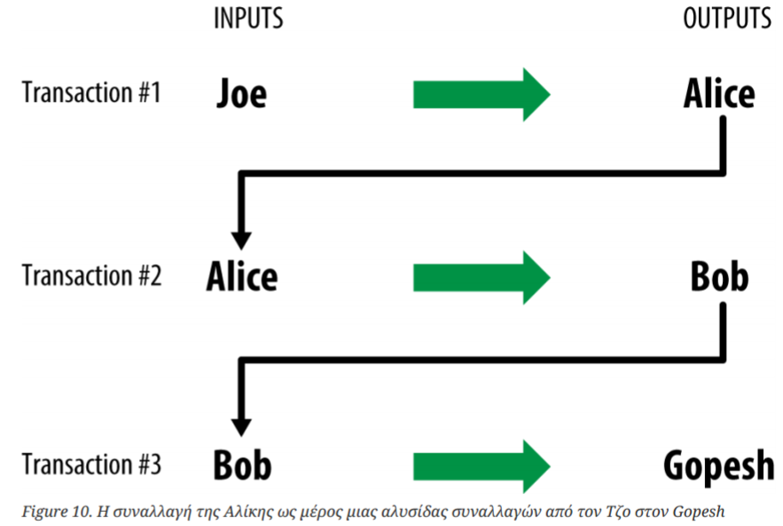
Figure 10. Η συναλλαγή της Αλίκης ως μέρος μιας αλυσίδας συναλλαγών από τον Τζο στον Gopesh
3. Ο Bitcoin Πελάτης (bitcoin client)
Bitcoin Core: Η υλοποίηση αναφοράς (reference implementation)
Μπορείτε να κατεβάσετε την υλοποίηση αναφοράς Bitcoin Πυρήνας (bitcoin core), επίσης γνωστή και ως «Satoshi client» (πελάτης Σατόσι), από την ιστοσελίδα bitcoin.org.
Ο πελάτης αναφοράς είναι για να εφαρμόζει όλες τις πτυχές του συστήματος του bitcoin, συμπεριλαμβανομένων των πορτοφολιών, μια μηχανή επαλήθευσης των συναλλαγών με ένα πλήρες αντίγραφο ολόκληρου του αρχείου των συναλλαγών (blockchain) και έναν πλήρη κόμβο δικτύου στο peer-to-peer bitcoin δίκτυο.
Στο BitcoinΆs Choose Your Wallet page, επιλέξτε «Bitcoin Core» για να κατεβάσετε τον πελάτη αναφοράς.
Ανάλογα με το λειτουργικό σας σύστημα, θα κατεβάσετε ένα εκτελέσιμο πρόγραμμα εγκατάστασης.
Για τα Windows, αυτό είναι είτε ένα αρχείο ZIP ή ένα .exe εκτελέσιμο.
Για Mac OS είναι μια εικόνα δίσκου .dmg.
Oι εκδόσεις Linux περιλαμβάνουν ένα PPA πακέτο για το Ubuntu ή ένα αρχείar.gz.
Η σελίδα bitcoin.org που έχει σε λίστα προτεινόμενους bitcoin πελάτες φαίνεται στο Επιλέγοντας έναν bitcoin πελάτη στο bitcoin.org.
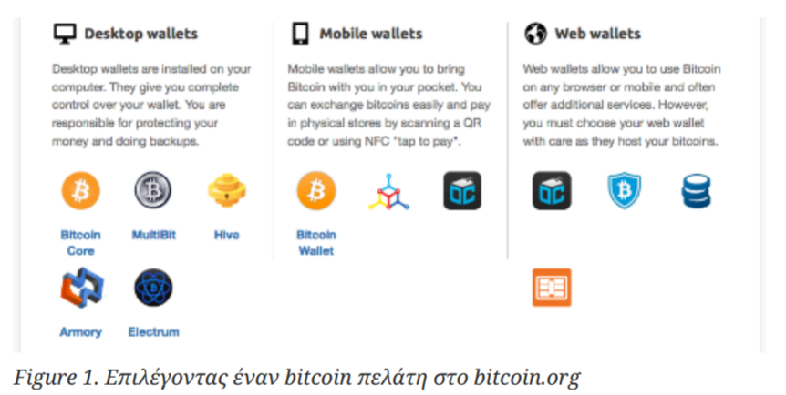
Figure 1. Επιλέγοντας έναν bitcoin πελάτη στο bitcoin.org
Τρέχοντας για πρώτη φορά το Bitcoin Core
Εάν κάνετε λήψη ενός πακέτου εγκατάστασης, όπως .exe, .dmg και PPA, μπορείτε να το εγκαταστήσετε με τον ίδιο τρόπο όπως οποιαδήποτε εφαρμογή στο λειτουργικό σας σύστημα.
Για τα Windows, εκτελέστε το .exe και ακολουθήστε τις οδηγίες βήμα-προς-βήμα.
Για Mac OS, ξεκινήστε το .dmg και σύρετε το Bitcoin-QT εικονίδιο στον φάκελο σας Applications.
Για Ubuntu, κάντε διπλό κλικ στο PPA στον εξερευνητή αρχείων σας και θα σας ανοίξει το διαχειριστή πακέτων για να εγκαταστήσετε το πακέτο.
Μόλις ολοκληρώσετε την εγκατάσταση θα πρέπει να έχετε μια νέα εφαρμογή στη λίστα εφαρμογών σας με το όνομα Bitcoin-Qt.
Κάντε διπλό κλικ στο εικονίδιο για να ξεκινήσετε τον bitcoin πελάτη.
Την πρώτη φορά που θα τρέξετε τον Bitcoin Πυρήνα θα ξεκινήσει η λήψη της αλυσίδας των μπλοκ (blockchain), μια διαδικασία που μπορεί να διαρκέσει αρκετές ημέρες (δείτε Οθόνη Bitcoin Core κατά τη διάρκεια προετοιμασίας της αλυσίδας των μπλοκ (blockchain)).
Αφήστε το να τρέχει στο παρασκήνιο μέχρι να εμφανίζει «συγχρονισμένο» και όχι «εκτός συγχρονισμού» δίπλα στο υπόλοιπο (balance).
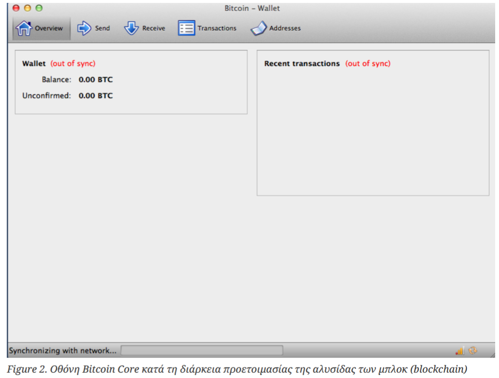
Figure 2. Οθόνη Bitcoin Core κατά τη διάρκεια προετοιμασίας της αλυσίδας των μπλοκ (blockchain)
TIP
Ο Bitcoin Πυρήνας (bitcoin core) διατηρεί ένα πλήρες αντίγραφο του αρχείου των συναλλαγών (blockchain), περιλαμβάνοντας κάθε συναλλαγή που έχει γίνει ποτέ στο δίκτυο bitcoin από την έναρξή του το 2009.
Αυτό το σύνολο δεδομένων είναι αρκετά gigabyte σε μέγεθος (περίπου 16 GB στα τέλη του 2013) και λαμβάνεται σταδιακά μέσα σε κάποιες ημέρες.
Ο πελάτης δεν θα είναι σε θέση να επεξεργαστεί συναλλαγές ή να ενημερώσει υπόλοιπα λογαριασμών μέχρι την πλήρη λήψη της αλυσίδας των μπλοκ από το Διαδίκτυο.
Κατά την περίοδο αυτή, ο πελάτης θα εμφανίζει την ένδειξη «εκτός συγχρονισμού» δίπλα στα υπόλοιπα των λογαριασμών, ενώ στο κάτω μέρος της εφαρμογής θα δείχνει «Γίνεται Συγχρονισμός".
Βεβαιωθείτε ότι έχετε αρκετό χώρο στο δίσκο, εύρος ζώνης (bandwidth) και χρόνο για την ολοκλήρωση του αρχικού συγχρονισμού.
Κάνοντας μεταγλώττιση τον Bitcoin Πυρήνα από τον πηγαίο κώδικα
Για τους προγραμματιστές, υπάρχει επίσης η επιλογή για λήψη του πλήρη πηγαίου κώδικα (source code), είτε ως ένα ZIP αρχείο, είτε αντιγράφοντας από την έγκυρη πηγή του GitΗub αποθετηρίου. Στο GitHub bitcoin page, επιλέξτε «Λήψη ZIP» από την πλαϊνή μπάρα.
Εναλλακτικά, χρησιμοποιήστε τη γραμμή εντολών «git» για να δημιουργήσετε ένα τοπικό αντίγραφο του πηγαίου κώδικα στο σύστημά σας.
Στο παρακάτω παράδειγμα, έχουμε την κλωνοποίηση του πηγαίου κώδικα από μία Unix-like γραμμή εντολών, στο Linux ή στο Mac OS:
$ git clone https://github.com/bitcoin/bitcoin.git
Cloning into 'bitcoin'...
remote: Counting objects: 31864, done.
remote: Compressing objects: 100% (12007/12007), done.
remote: Total 31864 (delta 24480), reused 26530 (delta 19621)
Receiving objects: 100% (31864/31864), 18.47 MiB | 119 KiB/s, done.
Resolving deltas: 100% (24480/24480), done.
$
TIP
Οι οδηγίες και το αποτέλεσμα που προκύπτει μπορεί να διαφέρουν από έκδοση σε έκδοση.
Ακολουθήστε τις έγγραφες λεπτομέρειες (documentation) που συνοδεύουν τον κώδικα, ακόμη και αν οι οδηγίες διαφέρουν από τις οδηγίες που βλέπετε στο βιβλίο, ενώ μην εκπλαγείτε αν το αποτέλεσμα που εμφανίζεται στην οθόνη σας είναι ελαφρώς διαφορετικό από τα παραδείγματα εδώ.
Όταν η λειτουργία «git cloning» έχει ολοκληρωθεί, θα έχετε ένα πλήρες τοπικό αντίγραφο του πηγαίου κώδικα του αποθετηρίου στον κατάλογο bitcoin.
Μεταφερθείτε στον κατάλογο γράφοντας cd bitcoiτη γραμμή εντολών:
$ cd bitcoin
Από προεπιλογή, το τοπικό αντίγραφο συγχρονίζεται με τον πιο πρόσφατο κώδικα, ο οποίος όμως μπορεί να είναι μία ασταθής ή δοκιμαστική (beta) έκδοση του bitcoin.
Πριν κάνετε μεταγλώττιση (compile) τον κώδικα, επιλέξτε μια συγκεκριμένη έκδοση μετά από έλεγχο στις ετικέτες (tags) εκδόσεων.
Αυτό θα συγχρονίσει το τοπικό αντίγραφο με ένα συγκεκριμένο από τα στιγμιότυπα του αποθετηρίου κώδικα, που αναγνωρίζονται από μία ετικέτα λέξη-κλειδί.
Οι ετικέτες, χρησιμοποιούνται από τους προγραμματιστές για να σηματοδοτήσουν συγκεκριμένες εκδόσεις του κώδικα με ένα ξεχωριστό αριθμό έκδοσης.
Πρώτον, για να βρείτε τις διαθέσιμες ετικέτες, χρησιμοποιήστε την εντολή git tag:
$ git tag
v0.1.5
v0.1.6test1
v0.2.0
v0.2.10
v0.2.11
v0.2.12
[... many more tags ...]
v0.8.4rc2
v0.8.5
v0.8.6
v0.8.6rc1
v0.9.0rc1
Η λίστα με τις ετικέτες εμφανίζει όλες τις εκδόσεις του bitcoin.
Οι "υποψήφιες εκδόσεις" (release candidates) προορίζονται για δοκιμή και έχουν το επίθεμα «rc».
Οι σταθερές εκδόσεις που μπορούν να τρέξουν σε προγραμματιστικό περιβάλλον παραγωγής δεν έχουν κανένα πρόθεμα.
Από την παραπάνω λίστα, επιλέξτε την υψηλότερη έκδοση σε κυκλοφορία, η οποία κατά τη διάρκεια γραψίματος του βιβλίου ήταν η v0.9.0rc1.
Για να συγχρονίσετε τον τοπικό κώδικα με αυτήν την έκδοση, χρησιμοποιήστε την εντολή git checkout:
$ git checkout v0.9.0rc1
Note: checking out 'v0.9.0rc1'.
HEAD is now at 15ec451... Merge pull request #3605
$
Ο πηγαίος κώδικας περιλαμβάνει έγγραφες οδηγίες, οι οποίες μπορούν να βρεθούν σε μια σειρά από αρχεία.
Εξετάστε τις βασικές οδηγίες που βρίσκονται στο README.md στον κατάλογο bitcoin πληκτρολογώντας more README.md στη γραμμή εντολών και χρησιμοποιώντας το πλήκτρο «space» για να προχωρήσετε στην επόμενη σελίδα.
Σε αυτό το κεφάλαιο, θα χτίσουμε τη γραμμή εντολών του bitcoin πελάτη στο Linux, γνωστή και ως bitcoind.
Δείτε τις οδηγίες για τη μεταγλώττιση της γραμμής εντολών bitcoin πελάτη για την πλατφόρμα σας, πληκτρολογώντας more doc/build-unix.md.
Εναλλακτικές οδηγίες για Mac OS X και Windows μπορούν να βρεθούν στον κατάλογο doc, όπως και στον build-osx.md και στον build-msw.md αντίστοιχα.
Εξετάστε προσεκτικά τα προαπαιτούμενα για κατασκευή, τα οποία είναι στο πρώτο μέρος των εγγράφων κατασκευής.
Αυτές είναι βιβλιοθήκες (libraries) που πρέπει να υπάρχουν στο σύστημά σας πριν μπορέσετε να αρχίσετε να κάνετε μεταγλώττιση το bitcoin.
Εάν αυτά τα προαπαιτούμενα λείπουν, η διαδικασία κατασκευής θα αποτύχει με ένα σφάλμα.
Εάν αυτό συμβαίνει επειδή παραλείψατε ένα προαπαιτούμενο, μπορείτε να το εγκαταστήσετε και να συνεχίσετε μετά τη διαδικασία κατασκευής από εκεί που σταματήσατε.
Υποθέτοντας ότι τα προαπαιτούμενα έχουν εγκατασταθεί, μπορείτε να ξεκινήσετε τη διαδικασία κατασκευής με τη δημιουργία ενός συνόλου σεναρίων (script) κατασκευής χρησιμοποιώντας το σενάριο autogen.sh.
TIP
Η διαδικασία κατασκευής του Bitcoin Core από την έκδοση 0.9 και έπειτα έχει αλλάξει και χρησιμοποιεί το σύστημα «autogen/configure/make».
Oι παλαιότερες εκδόσεις χρησιμοποιούν ένα απλό «Makefile» και λειτουργούν λίγο διαφορετικά από το ακόλουθο παράδειγμα.
Ακολουθήστε τις οδηγίες για την έκδοση που θέλετε να μεταγλωττίσετε.
Η «autogen/configure/make» που εισήχθει στην έκδοση 0.9 είναι πολύ πιθανό να χρησιμοποιηθεί ως σύστημα κατασκευής για όλες τις μελλοντικές εκδόσεις του κώδικα και είναι το σύστημα που παρουσιάζεται στα ακόλουθα παραδείγματα.
$ ./autogen.sonfigure.ac:12: installing `src/build-aux/config.guess'
configure.ac:12: installing `src/build-aux/config.sub'
configure.ac:37: installing `src/build-aux/install-sh'
configure.ac:37: installing `src/build-aux/missing'
src/Makefile.am: installing `src/build-aux/depcomp'
$
Το σενάριο autogen.sh δημιουργεί μια σειρά από αυτόματα σενάρια διαμόρφωσης που ανακρίνουν το σύστημά σας για τον εντοπισμό των σωστών ρυθμίσεων, όπως και για την διασφάλιση ότι υπάρχουν όλες οι απαραίτητες βιβλιοθήκες για την μεταγλώττιση του κώδικα.
Το πιο σημαντικό από αυτά είναι το σενάριο configure που προσφέρει μια σειρά από διαφορετικές επιλογές για την προσαρμογή της διαδικασίας κατασκευής.
Πληκτρολογήστε configure --help για να δείτε όλες τις διαφορετικές επιλογές που υπάρχουν:
$ ./configure --help
`configure' configures Bitcoin Core 0.9.0 to adapt to many kinds of systems.
Usage: ./configure [OPTION]... [VAR=VALUE]...
To assign environment variables (e.g., CC, CFLAGS...), specify them as
VAR=VALUE. See below for descriptions of some of the useful variables.
Defaults for the options are specified in brackets.
Configuration:
-h, --help display this help and exit
--help=short display options specific to this package
--help=recursive display the short help of all the included packages
-V, --version display version information and exit
[... many more options and variables are displayed below ...]
Optional Features:
--disable-option-checking ignore unrecognized --enable/--with options
--disable-FEATURE do not include FEATURE (same as --enable-FEATURE=no)
--enable-FEATURE[=ARG] include FEATURE [ARG=yes]
[... more options ...]
Use these variables to override the choices made by `configure' or to help
it to find libraries and programs with nonstandard names/locations.
Report bugs to .
$
Το σενάριο configure σας επιτρέπει να ενεργοποιήσετε ή να απενεργοποιήσετε ορισμένα χαρακτηριστικά του bitcoind με τη χρήση των --enable-FEATURE και --disable-FEATURE ετικέτων (flags), όπου το FEATURE αντικαθίσταται από το όνομα του χαρακτηριστικού, όπως αναφέρεται στη λίστα της βοήθειας (--help).
Σε αυτό το κεφάλαιο, θα φτιάξουμε τον bitcoind πελάτη με όλες τις προεπιλεγμένες λειτουργίες.
Δεν θα χρησιμοποιήσουμε τις ετικέτες επεξεργασίας, αλλά θα πρέπει να τις εξετάσετε ώστε να καταλάβετε ποια προαιρετικά χαρακτηριστικά αποτελούν μέρος του πελάτη.
Στη συνέχεια, εκτελέστε το σενάριο configure για την αυτόματη εύρεση των απαραίτητων βιβλιοθηκών και τη δημιουργία προσαρμοσμένων σεναρίων κατασκευής για το σύστημα σας:
$ ./configure
checking build system type... x86_64-unknown-linux-gnu
checking host system type... x86_64-unknown-linux-gnu
checking for a BSD-compatible install... /usr/bin/install -c
checking whether build environment is sane... yes
checking for a thread-safe mkdir -p... /bin/mkdir -p
checking for gawk... no
checking for mawk... mawk
checking whether make sets $(MAKE)... yes
[... many more system features are tested ...]
configure: creating ./config.status
config.status: creating Makefile
config.status: creating src/Makefile
config.status: creating src/test/Makefile
config.status: creating src/qt/Makefile
config.status: creating src/qt/test/Makefile
config.status: creating share/setup.nsi
config.status: creating share/qt/Info.plist
config.status: creating qa/pull-tester/run-bitcoind-for-test.sh
config.status: creating qa/pull-tester/build-tests.sh
config.status: creating src/bitcoin-config.h
config.status: executing depfiles commands
$
Εάν όλα πάνε καλά, η εντολή configure θα τελειώσει με τη δημιουργία των προσαρμοσμένων σεναρίων κατασκευής που θα μας επιτρέψουν να κάνουμε μεταγλώττιση το bitcoind.
Εάν λείπουν βιβλιοθήκες ή υπάρχουν σφάλματα, η εντολή configure θα τερματίσει με ένα λάθος αντί να δημιουργήσει τα σενάρια κατασκευής.
Αν υπάρχει σφάλμα, το πιθανότερο είναι ότι κάποια βιβλιοθήκη λείπει ή δεν είναι συμβατή.
Επανεξετάστε τα έγγραφα κατασκευής και βεβαιωθείτε ότι έχετε εγκαταστήσει τα απαραίτητα προαπαιτούμενα.
Στη συνέχεια, εκτελέστε ξανά configure και δείτε εάν αυτό διορθώνει το σφάλμα.
Στη συνέχεια, θα κάνετε μεταγλώττιση τον πηγαίο κώδικα, μια διαδικασία που μπορεί να διαρκέσει έως και μία ώρα για να ολοκληρωθεί.
Κατά τη διάρκεια της διαδικασίας θα πρέπει να εμφανίζονται αποτελέσματα κάθε λίγα δευτερόλεπτα ή κάθε λίγα λεπτά, ή ένα σφάλμα αν κάτι πάει στραβά.
Η διαδικασία της μεταγλώττισης μπορεί να συνεχιστεί ανά πάσα στιγμή εάν διακοπεί.
Πληκτρολογήστε make για να ξεκινήσετε τη μεταγλώττιση:
$ make
Making all in src
make[1]: Entering directory `/home/ubuntu/bitcoin/src'
make all-recursive
make[2]: Entering directory `/home/ubuntu/bitcoin/src'
Making all in .
make[3]: Entering directory `/home/ubuntu/bitcoin/src'
CXX addrman.o
CXX alert.o
CXX rpcserver.o
CXX bloom.o
CXX chainparams.o
[... many more compilation messages follow ...]
CXX test_bitcoin-wallet_tests.o
CXX test_bitcoin-rpc_wallet_tests.o
CXXLD test_bitcoin
make[4]: Leaving directory `/home/ubuntu/bitcoin/src/test'
make[3]: Leaving directory `/home/ubuntu/bitcoin/src/test'
make[2]: Leaving directory `/home/ubuntu/bitcoin/src'
make[1]: Leaving directory `/home/ubuntu/bitcoin/src'
make[1]: Entering directory `/home/ubuntu/bitcoin'
make[1]: Nothing to be done for `all-am'.
make[1]: Leaving directory `/home/ubuntu/bitcoin'
$
Εάν όλα πάνε καλά, το bitcoind είναι τώρα μεταγλωττισμένο.
Το τελικό βήμα είναι η εγκατάσταση του εκτελέσιμου bitcoind στη διαδρομή (path) του συστήματος χρησιμοποιώντας την εντολή make:
$ sudo make install
Making install in src
Making install in .
/bin/mkdir -p '/usr/local/bin'
/usr/bin/install -c bitcoind bitcoin-cli '/usr/local/bin'
Making install in test
make install-am
/bin/mkdir -p '/usr/local/bin'
/usr/bin/install -c test_bitcoin '/usr/local/bin'
$
Μπορείτε να επιβεβαιώσετε ότι τo bitcoin έχει εγκατασταθεί σωστά, ζητώντας από το σύστημα τη διαδρομή των δύο εκτελέσιμων, ως εξής:
$ which bitcoind
/usr/local/bin/bitcoind
$ which bitcoin-cli
/usr/local/bin/bitcoin-cli
Η προεπιλεγμένη εγκατάσταση του bitcoind το βάζει στο _ /usr/local/bin_.
Όταν εκτελέσετε για πρώτη φορά το bitcoind, το σύστημα θα σας ζητήσει να δημιουργήσετε ένα αρχείο ρυθμίσεων με έναν ισχυρό κωδικό πρόσβασης για τη διεπαφή (interface) JSON-RPC.
Εκτελέστε το bitcoind πληκτρολογώνταitcoind στο τερματικό:
$ bitcoind
Error: To use the "-server" option, you must set a rpcpassword in the configuration file:
/home/ubuntu/.bitcoin/bitcoin.conf
It is recommended you use the following random password:
rpcuser=bitcoinrpc
rpcpassword=2XA4DuKNCbtZXsBQRRNDEwEY2nM6M4H9Tx5dFjoAVVbK
(you do not need to remember this password)
The username and password MUST NOT be the same.
If the file does not exist, create it with owner-readable-only file permissions.
It is also recommended to set alertnotify so you are notified of problems;
for example: alertnotify=echo %s | mail -s "Bitcoin Alert" admin@foo.com
Επεξεργαστείτε το αρχείο ρυθμίσεων στο προτιμώμενο πρόγραμμα επεξεργασίας σας και ρυθμίστε τις παραμέτρους, αντικαθιστώντας τον κωδικό πρόσβασης με έναν ισχυρό κωδικό πρόσβασης, όπως προτείνεται από το bitcoind.
Να μην χρησιμοποιήσετε τον κωδικό που εμφανίζεται εδώ.
Δημιουργήστε ένα αρχείο μέσα στον κατάλογο .bitcoin έτσι ώστε να ονομάζεται .bitcoin/bitcoin.conf και εισάγετε ένα όνομα χρήστη και κωδικό πρόσβασης:
rpcuser=bitcoinrpc
rpcpassword=2XA4DuKNCbtZXsBQRRNDEwEY2nM6M4H9Tx5dFjoAVVbK
Κατά την επεξεργασία αυτού του αρχείου ρυθμίσεων, ίσως να θέλετε να ορίσετε και μερικές άλλες επιλογές, όπως txindex (δείτε Βάση δεδομένων ευρετηρίου συναλλαγής (transaction database index) και επιλογή txindex).
Για μια πλήρη λίστα των διαθέσιμων επιλογών, πληκτρολογήστε bitcoind --help.
Τώρα, εκτελέστε τον πελάτη Bitcoin Core.
Την πρώτη φορά που θα τον τρέξετε, θα γίνει ανακατασκευή της αλυσίδας των μπλοκ (blockchain) του bitcoin με τη λήψη όλων των μπλοκ.
Αυτό είναι ένα αρχείο πολλών gigabyte και το πλήρες κατέβασμα του θα χρειαστεί κατά μέσο όρο δύο ημέρες.
Μπορείτε να μειώσετε το χρόνο προετοιμασίας της αλυσίδας των μπλοκ με τη λήψη κάποιου μερικού αντίγραφου χρησιμοποιώντας έναν BitTorrent πελάτη από το SourceForge.
Εκτελέστε το bitcoind στο παρασκήνιο με την επιλογή -daemon:
$ bitcoind -daemon
Bitcoin version v0.9.0rc1-beta (2014-01-31 09:30:15 +0100)
Using OpenSSL version OpenSSL 1.0.1c 10 May 2012
Default data directory /home/bitcoin/.bitcoin
Using data directory /bitcoin/
Using at most 4 connections (1024 file descriptors available)
init message: Verifying wallet...
dbenv.open LogDir=/bitcoin/database ErrorFile=/bitcoin/db.log
Bound to [::]:8333
Bound to 0.0.0.0:8333
init message: Loading block index...
Opening LevelDB in /bitcoin/blocks/index
Opened LevelDB successfully
Opening LevelDB in /bitcoin/chainstate
Opened LevelDB successfully
[... more startup messages ...]
Χρησιμοποιώντας από τη γραμμή εντολών το JSON-RPC API του Bitcoin Core
Ο πελάτης Bitcoin Core εφαρμόζει μία JSON-RPC διεπαφή που μπορεί επίσης να προσπελαστεί με τη χρήση της γραμμής εντολών με το βοηθητικό bitcoin-cli.
Η γραμμή εντολών μας επιτρέπει να πειραματιστούμε διαδραστικά με τις δυνατότητες που είναι επίσης διαθέσιμες προγραμματιστικά μέσω του API.
Για να ξεκινήσετε, μπορείτε να εκτελέσετε την εντολή help για να δείτε μια λίστα με τις διαθέσιμες bitcoin RPC εντολές:
$ bitcoin-cli help
addmultisigaddress nrequired ["key",...] ( "account" )
addnode "node" "add|remove|onetry"
backupwallet "destination"
createmultisig nrequired ["key",...]
createrawtransaction [{"txid":"id","vout":n},...] {"address":amount,...}
decoderawtransaction "hexstring"
decodescript "hex"
dumpprivkey "bitcoinaddress"
dumpwallet "filename"
getaccount "bitcoinaddress"
getaccountaddress "account"
getaddednodeinfo dns ( "node" )
getaddressesbyaccount "account"
getbalance ( "account" minconf )
getbestblockhash
getblock "hash" ( verbose )
getblockchaininfo
getblockcount
getblockhash index
getblocktemplate ( "jsonrequestobject" )
getconnectioncount
getdifficulty
getgenerate
gethashespersec
getinfo
getmininginfo
getnettotals
getnetworkhashps ( blocks height )
getnetworkinfo
getnewaddress ( "account" )
getpeerinfo
getrawchangeaddress
getrawmempool ( verbose )
getrawtransaction "txid" ( verbose )
getreceivedbyaccount "account" ( minconf )
getreceivedbyaddress "bitcoinaddress" ( minconf )
gettransaction "txid"
gettxout "txid" n ( includemempool )
gettxoutsetinfo
getunconfirmedbalance
getwalletinfo
getwork ( "data" )
help ( "command" )
importprivkey "bitcoinprivkey" ( "label" rescan )
importwallet "filename"
keypoolrefill ( newsize )
listaccounts ( minconf )
listaddressgroupings
listlockunspent
listreceivedbyaccount ( minconf includeempty )
listreceivedbyaddress ( minconf includeempty )
listsinceblock ( "blockhash" target-confirmations )
listtransactions ( "account" count from )
listunspent ( minconf maxconf ["address",...] )
lockunspent unlock [{"txid":"txid","vout":n},...]
move "fromaccount" "toaccount" amount ( minconf "comment" )
ping
sendfrom "fromaccount" "tobitcoinaddress" amount ( minconf "comment" "comment-to" )
sendmany "fromaccount" {"address":amount,...} ( minconf "comment" )
sendrawtransaction "hexstring" ( allowhighfees )
sendtoaddress "bitcoinaddress" amount ( "comment" "comment-to" )
setaccount "bitcoinaddress" "account"
setgenerate generate ( genproclimit )
settxfee amount
signmessage "bitcoinaddress" "message"
signrawtransaction "hexstring" ( [{"txid":"id","vout":n,"scriptPubKey":"hex","redeemScript":"hex"},...] ["privatekey1",...] sighashtype )
stop
submitblock "hexdata" ( "jsonparametersobject" )
validateaddress "bitcoinaddress"
verifychain ( checklevel numblocks )
verifymessage "bitcoinaddress" "signature" "message"
walletlock
walletpassphrase "passphrase" timeout
walletpassphrasechange "oldpassphrase" "newpassphrase"
Συλλέγοντας πληροφορίες για την κατάσταση (status) του πελάτη Bitcoin Core
Η εντολή getinfo του bitcoin RPC εμφανίζει βασικές πληροφορίες σχετικά με την κατάσταση του κόμβου του δικτύου bitcoin, του wallet και της blockchain βάσης δεδομένων.
Χρησιμοποιήστε bitcoin-cli για να το εκτελέσετε:
$ bitcoin-cli getinfo
{
"version" : 90000,
"protocolversion" : 70002,
"walletversion" : 60000,
"balance" : 0.00000000,
"blocks" : 286216,
"timeoffset" : -72,
"connections" : 4,
"proxy" : "",
"difficulty" : 2621404453.06461525,
"testnet" : false,
"keypoololdest" : 1374553827,
"keypoolsize" : 101,
"paytxfee" : 0.00000000,
"errors" : ""
}
Τα δεδομένα επιστρέφονται σε Javascript Object Notation (JSON), μια μορφή που μπορεί εύκολα να «καταναλωθεί» από όλες τις γλώσσες προγραμματισμού, αλλά είναι επίσης και εύκολα αναγνώσιμη από τον άνθρωπο.
Μεταξύ των στοιχείων αυτών βλέπουμε τους αριθμούς έκδοσης για το λογισμικό bitcoin πελάτη (90000), το πρωτόκολλο (70002) και το πορτοφόλι (60000).
Βλέπουμε το τρέχων υπόλοιπο στο πορτοφόλι, το οποίο είναι μηδέν.
Βλέπουμε το τρέχον ύψος των μπλοκ, που μας δείχνει πόσα μπλοκ είναι γνωστά σε αυτόν τον πελάτη (286216).
Βλέπουμε, επίσης, διάφορα στατιστικά στοιχεία σχετικά με το bitcoin δίκτυο και τις ρυθμίσεις που σχετίζονται με αυτόν τον πελάτη.
Θα διερευνήσουμε με περισσότερες λεπτομέρειες αυτές τις ρυθμίσεις στη συνέχεια του κεφαλαίου.
TIP
Θα πάρει κάποιο χρόνο, ίσως και περισσότερο από μια ημέρα, για τον πελάτη bitcoind να «καλύψει» το τρέχον ύψος της αλυσίδας των μπλοκ καθώς κάνει λήψη τα μπλοκ από άλλους bitcoin πελάτες.
Μπορείτε να ελέγξετε την πρόοδό του, χρησιμοποιώντας getinfo για να δείτε τον αριθμό των γνωστών μπλοκ.
Ρύθμιση και κρυπτογράφηση πορτοφολιού
Commands: encryptwallet, walletpassphrase
Πριν να προχωρήσετε με τη δημιουργία κλειδιών και με άλλες εντολές, θα πρέπει πρώτα να κρυπτογραφήσετε το πορτοφόλι με έναν κωδικό πρόσβασης.
Για αυτό το παράδειγμα, θα χρησιμοποιήσουμε την εντολή encryptwallet με τον κωδικό πρόσβασης «foo».
Προφανώς, πρέπει να αντικαταστήσετε το «foo» με ένα ισχυρό και σύνθετο κωδικό πρόσβασης!
$ bitcoin-cli encryptwallet foo
wallet encrypted; Bitcoin server stopping, restart to run with encrypted wallet. The keypool has been flushed, you need to make a new backup.
$
Μπορείτε να επιβεβαιώσετε ότι το πορτοφόλι έχει κρυπτογραφηθεί με την εντολή getinfo.
Αυτή τη φορά θα παρατηρήσετε μια νέα καταχώρηση που ονομάζεται unlocked_until.
Αυτός είναι ένας μετρητής που δείχνει για πόσο διάστημα ο κωδικός αποκρυπτογράφησης από το πορτοφόλι θα αποθηκευτεί στη μνήμη, διατηρώντας το πορτοφόλι ξεκλείδωτο.
Στην αρχή ορίζεται ως μηδέν, που σημαίνει ότι το πορτοφόλι είναι κλειδωμένο:
$ bitcoin-cli getinfo
{
"version" : 90000,
#[... other information...]
"unlocked_until" : 0,
"errors" : ""
}
$
Για να ξεκλειδώσετε το πορτοφόλι, εκτελέστε την εντολή walletpassphrase, η οποία λαμβάνει δύο παραμέτρους, τον κωδικό πρόσβασης και έναν αριθμό δευτερολέπτων μέχρι το πορτοφόλι να κλειδωθεί και πάλι αυτόματα (ένας μετρητής χρόνου):
$ bitcoin-cli walletpassphrase foo 360
$
Αντίγραφο ασφαλείας πορτοφολιού, εξαγωγή ως απλό κείμενο, επαναφορά
Commands: backupwallet, importwallet, dumpwallet
Στη συνέχεια, θα μελετήσουμε τη δημιουργία αντιγράφου ασφαλείας και πως κάνουμε επαναφορά έπειτα από αυτό.
Χρησιμοποιούμε την εντολή backupwallet για να δημιουργήσουμε αντίγραφο ασφαλείας, παρέχοντας το όνομα του αρχείου ως παράμετρο.
Εδώ, δημιουργούμε το αντίγραφο ασφαλείας για το πορτοφόλι στο αρχείο wallet.backup:
$ bitcoin-cli backupwallet wallet.backup
$
Τώρα, για να επαναφέρετε το αρχείο του αντιγράφου ασφαλείας, χρησιμοποιήστε την εντολή importwallet.
Αν το πορτοφόλι σας είναι κλειδωμένο, θα χρειαστεί πρώτα να το ξεκλειδώσετε (δείτalletpassphrase στην προηγούμενη ενότητα), για να κάνετε εισαγωγή το αρχείο:
$ bitcoin-cli importwallet wallet.backup
$
Η εντολή dumpwallet μπορεί να χρησιμοποιηθεί για να κάνετε εξαγωγή το πορτοφόλι σε ένα αρχείο κειμένου το οποίο να είναι εύκολα αναγνώσιμο από τον άνθρωπο:
$ bitcoin-cli dumpwallet wallet.txt
$ more wallet.txt
# Wallet dump created by Bitcoin v0.9.0rc1-beta (2014-01-31 09:30:15 +0100)
# * Created on 2014-02- 8dT20:34:55Z
# * Best block at time of backup was 286234 (0000000000000000f74f0bc9d3c186267bc45c7b91c49a0386538ac24c0d3a44),
# mined on 2014-02- 8dT20:24:01Z
KzTg2wn6Z8s7ai5NA9MVX4vstHRsqP26QKJCzLg4JvFrp6mMaGB9 2013-07- 4dT04:30:27Z change=1 # addr=16pJ6XkwSQv5ma5FSXMRPaXEYrENCEg47F
Kz3dVz7R6mUpXzdZy4gJEVZxXJwA15f198eVui4CUivXotzLBDKY 2013-07- 4dT04:30:27Z change=1 # addr=17oJds8kaN8LP8kuAkWTco6ZM7BGXFC3gk
[... many more keys ...]
$
Διευθύνσεις πορτοφολιού και λήψη συναλλαγών
Εντολές: getnewaddress, getreceivedbyaddress, listtransactions, getaddressesbyaccount, getbalance
Ο πελάτης αναφοράς bitcoin διατηρεί ένα σύνολο διευθύνσεων, ο αριθμός των οποίων εμφανίζεται ως keypoolsize όταν χρησιμοποιείτε την εντολή getinfo.
Αυτές οι διευθύνσεις δημιουργούνται αυτόματα και μπορούν στη συνέχεια να χρησιμοποιηθούν είτε ως δημόσιες διευθύνσεις για λήψη ή ως διευθύνσεις επιστροφών.
Για να πάρετε μία από αυτές τις διευθύνσεις, χρησιμοποιήστε την εντολή getnewaddress:
$ bitcoin-cli getnewaddress
1hvzSofGwT8cjb8JU7nBsCSfEVQX5u9CL
Τώρα, μπορούμε να χρησιμοποιήσουμε αυτή τη διεύθυνση για να στείλουμε ένα μικρό ποσό bitcoin στο bitcoind πορτοφόλι μας από ένα εξωτερικό πορτοφόλι (υποθέτοντας ότι έχετε κάποια ποσότητα bitcoin σε κάποιο ανταλλακτήριο, διαδικτυακό πορτοφόλι ή άλλο bitcoind πορτοφόλι κάπου αλλού).
Για αυτό το παράδειγμα, θα στείλουμε 50 millibitcoin (0,050 bitcoin) χρησιμοποιώντας την προηγούμενη διεύθυνση.
Μπορούμε τώρα να ζητήσουμε από τον bitcoind πελάτη να εμφανίσει το ποσό που εισπράχθηκε από αυτή τη διεύθυνση και να καθορίσουμε πόσες επιβεβαιώσεις χρειάζονται πριν ένα ποσό να υπολογίζεται στην ισορροπία του λογαριασμού.
Για αυτό το παράδειγμα θα ορίσουμε μηδέν επιβεβαιώσεις.
Λίγα δευτερόλεπτα μετά την αποστολή των bitcoin από άλλο πορτοφόλι, θα δούμε την εμφάνιση τους στο πορτοφόλι του Bitcoin Core.
Χρησιμοποιούμε getreceivedbyaddress με τη διεύθυνση και τον αριθμό των επιβεβαιώσεων να ορίζεται σε μηδέν (0):
$ bitcoin-cli getreceivedbyaddress 1hvzSofGwT8cjb8JU7nBsCSfEVQX5u9CL 0
0.05000000
Εάν παραλείψουμε το μηδέν από το τέλος αυτής της εντολής θα δούμε μόνο τα ποσά που έχουν τις ελάχιστες minconf επιβεβαιώσεις, όπου minconf είναι η ρύθμιση για τον ελάχιστο αριθμό επιβεβαιώσεων πριν μία συναλλαγή να εμφανίζεται στην ισορροπία (balance).
Η ρύθμιση minconf καθορίζεται στο αρχείο ρυθμίσεων του bitcoind.
Επειδή η συναλλαγή μας στάλθηκε πριν λίγα μόνο δευτερόλεπτα, δεν έχει ακόμη επιβεβαιωθεί και ως εκ τούτου θα δούμε στην λίστα μηδενικό υπόλοιπο:
$ bitcoin-cli getreceivedbyaddress 1hvzSofGwT8cjb8JU7nBsCSfEVQX5u9CL
0.00000000
Οι συναλλαγές οι οποίες λαμβάνονται συνολικά στο πορτοφόλι, μπορούν επίσης να εμφανιστούν με τη χρήση της εντολής listtransactions:
$ bitcoin-cli listtransactions
[
{
"account" : "",
"address" : "1hvzSofGwT8cjb8JU7nBsCSfEVQX5u9CL",
"category" : "receive",
"amount" : 0.05000000,
"confirmations" : 0,
"txid" : "9ca8f969bd3ef5ec2a8685660fdbf7a8bd365524c2e1fc66c309acbae2c14ae3",
"time" : 1392660908,
"timereceived" : 1392660908
}
]
Μπορούμε να απαριθμήσουμε όλες τις διευθύνσεις που υπάρχουν συνολικά στο πορτοφόλι χρησιμοποιώντας την εντολή getaddressesbyaccount:
$ bitcoin-cli getaddressesbyaccount ""
[
"1LQoTPYy1TyERbNV4zZbhEmgyfAipC6eqL",
"17vrg8uwMQUibkvS2ECRX4zpcVJ78iFaZS",
"1FvRHWhHBBZA8cGRRsGiAeqEzUmjJkJQWR",
"1NVJK3JsL41BF1KyxrUyJW5XHjunjfp2jz",
"14MZqqzCxjc99M5ipsQSRfieT7qPZcM7Df",
"1BhrGvtKFjTAhGdPGbrEwP3xvFjkJBuFCa",
"15nem8CX91XtQE8B1Hdv97jE8X44H3DQMT",
"1Q3q6taTsUiv3mMemEuQQJ9sGLEGaSjo81",
"1HoSiTg8sb16oE6SrmazQEwcGEv8obv9ns",
"13fE8BGhBvnoy68yZKuWJ2hheYKovSDjqM",
"1hvzSofGwT8cjb8JU7nBsCSfEVQX5u9CL",
"1KHUmVfCJteJ21LmRXHSpPoe23rXKifAb2",
"1LqJZz1D9yHxG4cLkdujnqG5jNNGmPeAMD"
]
Τέλος, η εντολή getbalance θα δείξει το συνολικό υπόλοιπο στο πορτοφόλι, προσθέτοντας όλες τις επιβεβαιωμένες με τις ελάχιστες minconf επιβεβαιώσεις συναλλαγές:
$ bitcoin-cli getbalance
0.05000000
TIP
Αν η συναλλαγή δεν έχει ακόμη επιβεβαιωθεί, το υπόλοιπο που θα επιστρέφεται με την εντολή getbalance θα είναι μηδέν.
Η ρύθμιση «minconf» καθορίζει τον ελάχιστο αριθμό των επιβεβαιώσεων που απαιτούνται πριν την εμφάνιση μίας συναλλαγής στην ισορροπία.
Εξερευνώντας και αποκρυπτογραφώντας συναλλαγές
Εντολές: gettransaction, getrawtransaction, decoderawtransaction
Θα εξερευνήσουμε τώρα την εισερχόμενη συναλλαγή που εμφανίσαμε προηγουμένως με τη χρήση της εντολής gettransaction.
Μια συναλλαγή μπορεί να ανακτηθεί με τον κατακερματισμό (hash) της συναλλαγής, όπως αυτός που εμφανίσαμε νωρίτερα με το txid με την εντολή gettransaction:
$ bitcoin-cli gettransaction 9ca8f969bd3ef5ec2a8685660fdbf7a8bd365524c2e1fc66↵
c309acbae2c14ae3
{
"amount" : 0.05000000,
"confirmations" : 0,
"txid" : "9ca8f969bd3ef5ec2a8685660fdbf7a8bd365524c2e1fc66c309acbae2c14ae3",
"time" : 1392660908,
"timereceived" : 1392660908,
"details" : [
{
"account" : "",
"address" : "1hvzSofGwT8cjb8JU7nBsCSfEVQX5u9CL",
"category" : "receive",
"amount" : 0.05000000
}
]
}
TIP
Το αναγνωριστικό (ID) της συναλλαγής δεν είναι αυθεντικό μέχρι να επιβεβαιωθεί η συναλλαγή.
Η απουσία ενός κατακερματισμού συναλλαγής στην αλυσίδα των μπλοκ δεν σημαίνει ότι η συναλλαγή δεν έχει επεξεργαστεί.
Αυτό είναι γνωστό ως «transactioalleability» (διαβλητότητα συναλλαγής), επειδή ο κατακερματισμός μίας συναλλαγής μπορεί να τροποποιηθεί πριν από την επιβεβαίωση σε ένα μπλοκ.
Μετά την επιβεβαίωση, το αναγνωριστικό συναλλαγής (txid) είναι αμετάβλητο και αυθεντικό.
Η μορφή της συναλλαγής που εμφανίζεται με την εντολή gettransaction είναι η απλοποιημένη μορφή.
Για να ανακτήσουμε τον πλήρη κωδικό της συναλλαγής και να τον αποκωδικοποιήσουμε θα χρησιμοποιήσουμε δύο εντολές: getrawtransaction και decoderawtransaction.
Πρώτον, etrawtransaction παίρνει τον κατακερματισμό της συναλλαγής (txid) ως παράμετρο και επιστρέφει την πλήρη συναλλαγή ως δεκαεξαδική «ακατέργαστη» (raw) σειρά από χαρακτήρες με την ίδια μορφή που υφίσταται μέσα στο bitcoin δίκτυo:
$ bitcoin-cli getrawtransaction 9ca8f969bd3ef5ec2a8685660fdbf7a8bd365524c2e1f↵
c66c309acbae2c14ae3
0100000001d717279515f88e2f56ce4e8a31e2ae3e9f00ba1d0add648e80c480ea22e0c7d3000↵
000008b483045022100a4ebbeec83225dedead659bbde7da3d026c8b8e12e61a2df0dd0758e22↵
7383b302203301768ef878007e9ef7c304f70ffaf1f2c975b192d34c5b9b2ac1bd193dfba2014↵
104793ac8a58ea751f9710e39aad2e296cc14daa44fa59248be58ede65e4c4b884ac5b5b6dede↵
05ba84727e34c8fd3ee1d6929d7a44b6e111d41cc79e05dbfe5ceaffffffff02404b4c0000000↵
0001976a91407bdb518fa2e6089fd810235cf1100c9c13d1fd288ac1f312906000000001976a9↵
14107b7086b31518935c8d28703d66d09b3623134388ac00000000
Για την αποκωδικοποίηση αυτής της δεκαεξαδικής σειράς χαρακτήρων, χρησιμοποιήστε την εντολή decoderawtransaction.
Αντιγράψτε και επικολλήστε τους δεκαεξαδικούς χαρακτήρες ως την πρώτη παράμετρο της decoderawtransaction για να λάβετε το πλήρες περιεχόμενο ερμηνευμένο ως μια JSON δομή δεδομένων (για αισθητικούς λόγους τα δεκαεξαδικά έχουν συμπτυχθεί στο παράδειγμα που ακολουθεί):
$ bitcoin-cli decoderawtransaction 0100000001d717279515f88e2f56ce4e8a31e2ae3e↵
9f00ba1d0add648e80c480ea22e0c7d3000000008b483045022100a4ebbeec83225dedead659b↵
bde7da3d026c8b8e12e61a2df0dd0758e227383b302203301768ef878007e9ef7c304f70ffaf1↵
f2c975b192d34c5b9b2ac1bd193dfba2014104793ac8a58ea751f9710e39aad2e296cc14daa44↵
fa59248be58ede65e4c4b884ac5b5b6dede05ba84727e34c8fd3ee1d6929d7a44b6e111d41cc7↵
9e05dbfe5ceaffffffff02404b4c00000000001976a91407bdb518fa2e6089fd810235cf1100c↵
9c13d1fd288ac1f312906000000001976a914107b7086b31518935c8d28703d66d09b36231343↵
88ac00000000
{
"txid" : "9ca8f969bd3ef5ec2a8685660fdbf7a8bd365524c2e1fc66c309acbae2c14ae3",
"version" : 1,
"locktime" : 0,
"vin" : [
{
"txid" : "d3c7e022ea80c4808e64dd0a1dba009f3eaee2318a4ece562f8ef815↵
952717d7",
"vout" : 0,
"scriptSig" : {
"asm" : "3045022100a4ebbeec83225dedead659bbde7da3d026c8b8e12e↵
61a2df0dd0758e227383b302203301768ef878007e9ef7c304f70ffaf1f2c975b192d34c5b9b2↵
ac1bd193dfba20104793ac8a58ea751f9710e39aad2e296cc14daa44fa59248be58ede65e4c4b↵
884ac5b5b6dede05ba84727e34c8fd3ee1d6929d7a44b6e111d41cc79e05dbfe5cea",
"hex": "483045022100a4ebbeec83225dedead659bbde7da3d026c8b8e1↵
2e61a2df0dd0758e227383b302203301768ef878007e9ef7c304f70ffaf1f2c975b192d34c5b9↵
b2ac1bd193dfba2014104793ac8a58ea751f9710e39aad2e296cc14daa44fa59248be58ede65e↵
4c4b884ac5b5b6dede05ba84727e34c8fd3ee1d6929d7a44b6e111d41cc79e05dbfe5cea"
},
"sequence" : 4294967295
}
],
"vout" : [
{
"value" : 0.05000000,
"n" : 0,
"scriptPubKey" : {
"asm" : "OP_DUP OP_HASH160 07bdb518fa2e6089fd810235cf1100c9c↵
13d1fd2 OP_EQUALVERIFY OP_CHECKSIG",
"hex" : "76a91407bdb518fa2e6089fd810235cf1100c9c13d1fd288ac",
"reqSigs" : 1,
"type" : "pubkeyhash",
"addresses" : [
"1hvzSofGwT8cjb8JU7nBsCSfEVQX5u9CL"
]
}
},
{
"value" : 1.03362847,
"n" : 1,
"scriptPubKey" : {
"asm" : "OP_DUP OP_HASH160 107b7086b31518935c8d28703d66d09b36↵
231343 OP_EQUALVERIFY OP_CHECKSIG",
"hex" : "76a914107b7086b31518935c8d28703d66d09b3623134388ac",
"reqSigs" : 1,
"type" : "pubkeyhash",
"addresses" : [
"12W9goQ3P7Waw5JH8fRVs1e2rVAKoGnvoy"
]
}
}
]
}
Η αποκωδικοποίηση της συναλλαγής εμφανίζει όλα τα συστατικά στοιχεία μιας συναλλαγής,
συμπεριλαμβανομένων των εισόδων και των εξόδων της.
Σε αυτή την περίπτωση βλέπουμε ότι η συναλλαγή που πιστώνει τη νέα μας διεύθυνση με 50 millibitcoin χρησιμοποιεί μία είσοδο και δημιουργεί δύο εξόδους.
Η είσοδος αυτής της συναλλαγής ήταν η έξοδος από μία προηγηθείσα επιβεβαιωμένη συναλλαγή (παρουσιάζεται ως vin txid και αρχίζει με d3c7).
Από τις δύο εξόδους η μία είναι η πίστωση των 50 millibitcoin και η άλλη μία έξοδος με επιστροφή προς τον αποστολέα.
Μπορούμε να διερευνήσουμε περαιτέρω την αλυσίδα των μπλοκ εξετάζοντας την προηγούμενη συναλλαγή που αναφέρεται στη συναλλαγή μας, βλέποντας το txid της και χρησιμοποιώντας τις ίδιες εντολές (π.χ. gettransaction).
Εάν κινηθούμε από συναλλαγή σε συναλλαγή μπορούμε να ακολουθήσουμε προς τα πίσω, μια αλυσίδα συναλλαγών των μεταδιδόμενων νομισμάτων, από διεύθυνση ιδιοκτήτη προς διεύθυνση ιδιοκτήτη.
Μόλις η συναλλαγή που λάβαμε επιβεβαιωθεί με την εγγραφή της σε ένα μπλοκ, η gettransaction εντολή θα επιστρέψει επιπρόσθετες πληροφορίες, δείχνοντας τον κατακερματισμό του μπλοκ (αναγνωριστικό), στον οποίο περιλαμβάνεται η συναλλαγή:
$ bitcoin-cli gettransaction 9ca8f969bd3ef5ec2a8685660fdbf7a8bd365524c2e1fc66↵
c309acbae2c14ae3
{
"amount" : 0.05000000,
"confirmations" : 1,
"blockhash" : "000000000000000051d2e759c63a26e247f185ecb7926ed7a6624bc31c↵
2a717b",
"blockindex" : 18,
"blocktime" : 1392660808,
"txid" : "9ca8f969bd3ef5ec2a8685660fdbf7a8bd365524c2e1fc66c309acbae2c14ae3",
"time" : 1392660908,
"timereceived" : 1392660908,
"details" : [
{
"account" : "",
"address" : "1hvzSofGwT8cjb8JU7nBsCSfEVQX5u9CL",
"category" : "receive",
"amount" : 0.05000000
}
]
}
Εδώ, βλέπουμε τις νέες πληροφορίες στις καταχωρίσεις blockhash (τον κατακερματισμό του μπλοκ που περιλαμβάνεται η συναλλαγή) και blockindex με τιμή 18 (υποδεικνύοντας ότι η συναλλαγή μας ήταν η 18η συναλλαγή στο εν λόγω μπλοκ).
Βάση δεδομένων ευρετηρίου συναλλαγής (transaction database index) και επιλογή txindex
Από προεπιλογή, ο Bitcoin Πυρήνας δημιουργεί μια βάση δεδομένων που περιέχει μόνο τις συναλλαγές που σχετίζονται με το πορτοφόλι του χρήστη.
Αν θέλετε να είστε σε θέση να έχετε πρόσβαση σε οποιαδήποτε συναλλαγή με εντολές όπως gettransaction, θα πρέπει να ρυθμίσετε τον Bitcoin Πυρήνα να δημιουργήσει ένα πλήρες ευρετήριο (index) των συναλλαγών, το οποίο επιτυγχάνεται με την επιλογή txindex.
Θέστε txindex=1 στο αρχείο ρυθμίσεων του Bitcoin Core (συνήθως βρίσκεται στον κατάλογο home στον κατάλογο _.bitcoin / bitcoin.conf_).
Αφού αλλάξετε αυτή την παράμετρο, πρέπει να κάνετε επανεκκίνηση το bitcoind και να περιμένετε να δημιουργηθεί ξανά το ευρετήριο.
Εξερευνώντας τα μπλοκ
Commands: getblock, getblockhash
Τώρα που ξέρουμε σε πιο μπλοκ περιλήφθηκε η συναλλαγή μας, μπορούμε να ζητήσουμε με τη γραμμή εντολών αυτό το μπλοκ.
Χρησιμοποιούμε την εντολή getblock με παράμετρο τον κατακερματισμό του μπλοκ:
$ bitcoin-cli getblock 000000000000000051d2e759c63a26e247f185ecb7926ed7a6624b↵
c31c2a717b true
{
"hash" : "000000000000000051d2e759c63a26e247f185ecb7926ed7a6624bc31c2a717↵
b",
"confirmations" : 2,
"size" : 248758,
"height" : 286384,
"version" : 2,
"merkleroot" : "9891747e37903016c3b77c7a0ef10acf467c530de52d84735bd555387↵
19f9916",
"tx" : [
"46e130ab3c67d31d2b2c7f8fbc1ca71604a72e6bc504c8a35f777286c6d89bf0",
"2d5625725b66d6c1da88b80b41e8c07dc5179ae2553361c96b14bcf1ce2c3868",
"923392fc41904894f32d7c127059bed27dbb3cfd550d87b9a2dc03824f249c80",
"f983739510a0f75837a82bfd9c96cd72090b15fa3928efb9cce95f6884203214",
"190e1b010d5a53161aa0733b953eb29ef1074070658aaa656f933ded1a177952",
"ee791ec8161440262f6e9144d5702f0057cef7e5767bc043879b7c2ff3ff5277",
"4c45449ff56582664abfadeb1907756d9bc90601d32387d9cfd4f1ef813b46be",
"3b031ed886c6d5220b3e3a28e3261727f3b4f0b29de5f93bc2de3e97938a8a53",
"14b533283751e34a8065952fd1cd2c954e3d37aaa69d4b183ac6483481e5497d",
"57b28365adaff61aaf60462e917a7cc9931904258127685c18f136eeaebd5d35",
"8c0cc19fff6b66980f90af39bee20294bc745baf32cd83199aa83a1f0cd6ca51",
"1b408640d54a1409d66ddaf3915a9dc2e8a6227439e8d91d2f74e704ba1cdae2",
"0568f4fad1fdeff4dc70b106b0f0ec7827642c05fe5d2295b9deba4f5c5f5168",
"9194bfe5756c7ec04743341a3605da285752685b9c7eebb594c6ed9ec9145f86",
"765038fc1d444c5d5db9163ba1cc74bba2b4f87dd87985342813bd24021b6faf",
"bff1caa9c20fa4eef33877765ee0a7d599fd1962417871ca63a2486476637136",
"d76aa89083f56fcce4d5bf7fcf20c0406abdac0375a2d3c62007f64aa80bed74",
"e57a4c70f91c8d9ba0ff0a55987ea578affb92daaa59c76820125f31a9584dfc",
"9ca8f969bd3ef5ec2a8685660fdbf7a8bd365524c2e1fc66c309acbae2c14ae3",
#[... many more transactions ...]
],
"time" : 1392660808,
"nonce" : 3888130470,
"bits" : "19015f53",
"difficulty" : 3129573174.52228737,
"chainwork" : "000000000000000000000000000000000000000000001931d1658fc048↵
79e466",
"previousblockhash" : "0000000000000000177e61d5f6ba6b9450e0dade9f39c257b4↵
d48b4941ac77e7",
"nextblockhash" : "0000000000000001239d2c3bf7f4c68a4ca673e434702a57da8fe0↵
d829a92eb6"
Το μπλοκ περιέχει 367 συναλλαγές και όπως μπορείτε να δείτε η 18η στη λίστα (9ca8f9...) είναι το txid που πιστώνει 50 millibitcoin στη διεύθυνση μας.
Η είσοδος height μας λέει ότι αυτό είναι το μπλοκ υπ' αριθμόν 286384 στην αλυσίδα των μπλοκ.
Μπορούμε επίσης να ανακτήσουμε ένα μπλοκ μέσω του ύψους των μπλοκ χρησιμοποιώντας την εντολή getblockhash, η οποία παίρνει το ύψος των μπλοκ ως παράμετρο και επιστρέφει τον κατακερματισμό του μπλοκ (block hash) για το συγκεκριμένο μπλοκ:
$ bitcoin-cli getblockhash 0
000000000019d6689c085ae165831e934ff763ae46a2a6c172b3f1b60a8ce26f
Εδώ, ανακτούμε τον κατακερματισμό μπλοκ του «genesis block» (μπλοκ γέννησης), το πρώτο μπλοκ που έγινε εξόρυξη από τον Σατόσι Νακαμότο, στο ύψος μηδέν.
Η ανάκτηση του μπλοκ μας δείχνει:
$ bitcoin-cli getblock 000000000019d6689c085ae165831e934ff763ae46a2a6c172b3f1↵b60a8ce26f
{
"hash" : "000000000019d6689c085ae165831e934ff763ae46a2a6c172b3f1b60a8ce26↵
f",
"confirmations" : 286388,
"size" : 285,
"height" : 0,
"version" : 1,
"merkleroot" : "4a5e1e4baab89f3a32518a88c31bc87f618f76673e2cc77ab2127b7af↵
deda33b",
"tx" : [
"4a5e1e4baab89f3a32518a88c31bc87f618f76673e2cc77ab2127b7afdeda33b"
],
"time" : 1231006505,
"nonce" : 2083236893,
"bits" : "1d00ffff",
"difficulty" : 1.00000000,
"chainwork" : "0000000000000000000000000000000000000000000000000000000100↵
010001",
"nextblockhash" : "00000000839a8e6886ab5951d76f411475428afc90947ee320161b↵
bf18eb6048"
}
Οι εντολές getblock, getblockhash και gettransaction μπορούν να χρησιμοποιούνται για την εξερεύνηση της αλυσίδας των μπλοκ (blockchain), προγραμματιστικά.
Δημιουργία, υπογραφή και υποβολή συναλλαγών χρησιμοποιώντας αξόδευτες εξόδους (unspent outputs)
Εντολές:
listunspent, gettxout, createrawtransaction, decoderawtransaction, signrawtransaction, sendrawtransaction
Οι bitcoin συναλλαγές βασίζονται στην έννοια του ξοδέματος «εξόδων» (outputs), που είναι το αποτέλεσμα των προηγούμενων συναλλαγών, για τη δημιουργία μιας αλυσίδας συναλλαγών που μεταβιβάζει την κυριότητα από διεύθυνση σε διεύθυνση.
Το πορτοφόλι μας έχει ήδη μια συναλλαγή που αποδίδει μια έξοδο στη διεύθυνση μας.
Μόλις υπάρξει επιβεβαίωση, μπορούμε να ξοδέψουμε αυτή την έξοδο.
Αρχικά, χρησιμοποιούμε την εντολή listunspent για να εμφανιστούν όλες οι αξόδευτες και επιβεβαιωμένες έξοδοι στο πορτοφόλι μας:
$ bitcoin-cli listunspent
[
{
"txid" : "9ca8f969bd3ef5ec2a8685660fdbf7a8bd365524c2e1fc66c309acbae2c↵
14ae3",
"vout" : 0,
"address" : "1hvzSofGwT8cjb8JU7nBsCSfEVQX5u9CL",
"account" : "",
"scriptPubKey" : "76a91407bdb518fa2e6089fd810235cf1100c9c13d1fd288ac",
"amount" : 0.05000000,
"confirmations" : 7
}
]
Βλέπουμε ότι η συναλλαγή 9ca8f9... δημιούργησε μια έξοδο (με δείκτη vout 0), η οποία αποδίδεται στη διεύθυνση 1hvzSo... για το ποσό των 50 millibitcoin, η οποία σε αυτό το σημείο έχει λάβει επτά επιβεβαιώσεις.
Οι συναλλαγές χρησιμοποιούν προηγούμενες δημιουργηθείσες εξόδους ως εισόδους τους κάνοντας αναφορά σε αυτές μέσω του προηγούμενου αναγνωριστικού συναλλαγής (txid) και μέσω του δείκτη vout (πόσες διευθύνσεις εξόδων υπάρχουν).
Θα δημιουργήσουμε τώρα μια συναλλαγή που θα ξοδέψει την μηδενική vout του αναγνωριστικού 9ca8f9... ως είσοδο της και θα την αναθέσουμε σε μια νέα έξοδο που στέλνει αξία σε μια νέα διεύθυνση.
Κατ' αρχάς, ας δούμε τη συγκεκριμένη έξοδο με περισσότερες λεπτομέρειες.
Χρησιμοποιούμε gettxout για να πάρουμε τις λεπτομέρειες αυτής της αξόδευτης εξόδου.
Οι έξοδοι των συναλλαγών αναφέρονται πάντα από το αναγνωριστικό (txid) και τον δείκτη «vout» και αυτοί είναι οι παράμετροι που περνάμε στο gettxout:
$ bitcoin-cli gettxout 9ca8f969bd3ef5ec2a8685660fdbf7a8bd365524c2e1fc66c309ac↵
bae2c14ae3 0
{
"bestblock" : "0000000000000001405ce69bd4ceebcdfdb537749cebe89d371eb37e13↵
899fd9",
"confirmations" : 7,
"value" : 0.05000000,
"scriptPubKey" : {
"asm" : "OP_DUP OP_HASH160 07bdb518fa2e6089fd810235cf1100c9c13d1fd2
OP_EQUALVERIFY OP_CHECKSIG",
"hex" : "76a91407bdb518fa2e6089fd810235cf1100c9c13d1fd288ac",
"reqSigs" : 1,
"type" : "pubkeyhash",
"addresses" : [
"1hvzSofGwT8cjb8JU7nBsCSfEVQX5u9CL"
]
},
"version" : 1,
"coinbase" : false
}
Αυτό που βλέπουμε εδώ είναι η έξοδος που απέδωσε 50 millibitcoin στη διεύθυνση μας 1hvz....
Για να ξοδέψουμε αυτή την έξοδο θα δημιουργήσουμε μια νέα συναλλαγή.
Κατ 'αρχάς, ας κάνουμε μια διεύθυνση στην οποία θα στείλουμε τα χρήματα:
$ bitcoin-cli getnewaddress
1LnfTndy3qzXGN19Jwscj1T8LR3MVe3JDb
Θα στείλουμε 25 millibitcoin στη νέα διεύθυνση 1LnfTn... που μόλις δημιουργήσαμε στο πορτοφόλι μας.
Στη νέα συναλλαγή μας, θα ξοδέψουμε την έξοδο των 50 millibitcoin και θα στείλουμε 25 millibitcoin σε αυτή τη νέα διεύθυνση.
Επειδή πρέπει να ξοδέψουμε ολόκληρη την έξοδο από την προηγούμενη συναλλαγή, θα πρέπει επίσης να δημιουργήσουμε κάποια ρέστα (change).
Θα δημιουργήσουμε ρέστα στην διεύθυνση 1hvz..., στέλνοντας την επιστροφή δηλαδή στη διεύθυνση από την οποία προέρχεται η αξία.
Τέλος, θα πρέπει επίσης να πληρώσουμε μια χρέωση για τη συναλλαγή.
Για την καταβολή της χρέωσης, θα μειώσουμε την έξοδο επιστροφής κατά 0,5 millibitcoin για να επιστραφούν δηλαδή 24,5 millibitcoin.
Η διαφορά μεταξύ του αθροίσματος των νέων εξόδων (25 mΒΤC + 24,5mBTC = 49,5 mBTC) και της εισόδου (50 mBTC) θα συλλεχθεί ως χρέωση συναλλαγής από τους εξορύκτες.
Χρησιμοποιούμε createrawtransaction για να δημιουργήσουμε αυτή τη συναλλαγή.
Ως παράμετροι στην εντολή createrawtransaction παρέχουμε την είσοδο της συναλλαγής (την αξόδευτη έξοδο των 50 millibitcoin από την επιβεβαιωμένη μας συναλλαγή) και δύο εξόδους συναλλαγής (χρήματα που αποστέλλονται στη νέα διεύθυνση και επιστροφή προς την προηγούμενη διεύθυνση):
$ bitcoin-cli createrawtransaction '[{"txid" : "9ca8f969bd3ef5ec2a8685660fdbf↵
7a8bd365524c2e1fc66c309acbae2c14ae3", "vout" : 0}]' '{"1LnfTndy3qzXGN19Jwscj1↵
T8LR3MVe3JDb": 0.025, "1hvzSofGwT8cjb8JU7nBsCSfEVQX5u9CL": 0.0245}'
0100000001e34ac1e2baac09c366fce1c2245536bda8f7db0f6685862aecf53ebd69f9a89c000↵
0000000ffffffff02a0252600000000001976a914d90d36e98f62968d2bc9bbd68107564a156a↵
9bcf88ac50622500000000001976a91407bdb518fa2e6089fd810235cf1100c9c13d1fd288ac0↵
0000000
Η εντολή createrawtransaction παράγει ένα ακατέργαστο δεκαεξαδικό σύνολο χαρακτήρων που κωδικοποιεί τα στοιχεία της συναλλαγής που έχουμε εισάγει.
Ας επιβεβαιώσουμε ότι όλα είναι σωστά με την αποκωδικοποίηση αυτών των χαρακτήρων χρησιμοποιώντας την εντολή decoderawtransaction:
$ bitcoin-cli decoderawtransaction 0100000001e34ac1e2baac09c366fce1c2245536bd↵
a8f7db0f6685862aecf53ebd69f9a89c0000000000ffffffff02a0252600000000001976a914d↵
90d36e98f62968d2bc9bbd68107564a156a9bcf88ac50622500000000001976a91407bdb518fa↵
2e6089fd810235cf1100c9c13d1fd288ac00000000
{
"txid" : "0793299cb26246a8d24e468ec285a9520a1c30fcb5b6125a102e3fc05d4f3cb↵
a",
"version" : 1,
"locktime" : 0,
"vin" : [
{
"txid" : "9ca8f969bd3ef5ec2a8685660fdbf7a8bd365524c2e1fc66c309acb↵
ae2c14ae3",
"vout" : 0,
"scriptSig" : {
"asm" : "",
"hex" : ""
},
"sequence" : 4294967295
}
],
"vout" : [
{
"value" : 0.02500000,
"n" : 0,
"scriptPubKey" : {
"asm" : "OP_DUP OP_HASH160 d90d36e98f62968d2bc9bbd68107564a15↵
6a9bcf OP_EQUALVERIFY OP_CHECKSIG",
"hex" : "76a914d90d36e98f62968d2bc9bbd68107564a156a9bcf88ac",
"reqSigs" : 1,
"type" : "pubkeyhash",
"addresses" : [
"1LnfTndy3qzXGN19Jwscj1T8LR3MVe3JDb"
]
}
},
{
"value" : 0.02450000,
"n" : 1,
"scriptPubKey" : {
"asm" : "OP_DUP OP_HASH160 07bdb518fa2e6089fd810235cf1100c9c1↵
3d1fd2 OP_EQUALVERIFY OP_CHECKSIG",
"hex" : "76a91407bdb518fa2e6089fd810235cf1100c9c13d1fd288ac",
"reqSigs" : 1,
"type" : "pubkeyhash",
"addresses" : [
"1hvzSofGwT8cjb8JU7nBsCSfEVQX5u9CL"
]
}
}
]
}
Αυτό φαίνεται σωστό!
Η νέα μας συναλλαγή «καταναλώνει» τις αξόδευτες εξόδους από την επιβεβαιωμένη μας συναλλαγή και στη συνέχεια την ξοδεύει σε δύο εξόδους, μία για 25 millibitcoin στην νέα μας διεύθυνση και μία για 24,5 millibitcoin ως επιστροφή στην αρχική διεύθυνση.
Η διαφορά των 0,5 millibitcoin αντιπροσωπεύει τη χρέωση για τη συναλλαγή και θα πιστωθεί στον εξορύκτη που θα βρει το μπλοκ που θα περιέχει τη συναλλαγή μας.
Όπως μπορείτε να παρατηρήσετε, η συναλλαγή περιέχει ένα άδειο scriptSig επειδή δεν την έχουμε ακόμα υπογράψει.
Χωρίς υπογραφή, αυτή η συναλλαγή δεν έχει κανένα νόημα· δεν έχουμε ακόμα αποδείξει ότι μας ανήκει η διεύθυνση από την οποία πηγάζει η αξόδευτη έξοδος.
Με την υπογραφή, αφαιρούμε το κλείδωμα (σενάριο κλειδώματος) στην έξοδο και αποδεικνύουμε ότι μας ανήκει αυτή η έξοδος και μπορούμε να την ξοδέψουμε.
Χρησιμοποιούμε την εντολή signrawtransaction για την υπογραφή της συναλλαγής.
Αυτή παίρνει ως παράμετρο τη δεκαεξαδική σειρά χαρακτήρων από την ακατέργαστη συναλλαγή:
$ bitcoin-cli walletpassphrase foo 360
$ bitcoin-cli signrawtransaction 0100000001e34ac1e2baac09c366fce1c2245536bda8↵
f7db0f6685862aecf53ebd69f9a89c0000000000ffffffff02a0252600000000001976a914d90↵
d36e98f62968d2bc9bbd68107564a156a9bcf88ac50622500000000001976a91407bdb518fa2e↵
6089fd810235cf1100c9c13d1fd288ac00000000
{
"hex" : "0100000001e34ac1e2baac09c366fce1c2245536bda8f7db0f6685862aecf53e↵
bd69f9a89c000000006a47304402203e8a16522da80cef66bacfbc0c800c6d52c4a26d1d86a54↵
e0a1b76d661f020c9022010397f00149f2a8fb2bc5bca52f2d7a7f87e3897a273ef54b277e4af↵
52051a06012103c9700559f690c4a9182faa8bed88ad8a0c563777ac1d3f00fd44ea6c71dc512↵
7ffffffff02a0252600000000001976a914d90d36e98f62968d2bc9bbd68107564a156a9bcf88↵
ac50622500000000001976a91407bdb518fa2e6089fd810235cf1100c9c13d1fd288ac00000000",
"complete" : true
}
TIP
Ένα κρυπτογραφημένο πορτοφόλι πρέπει να ξεκλειδωθεί πριν την υπογραφή μιας συναλλαγής επειδή η διαδικασία απαιτεί πρόσβαση στα μυστικά κλειδιά στο πορτοφόλι.
Η εντολή signrawtransaction επιστρέφει μία άλλη δεκαεξαδική κωδικοποιημένη σειρά χαρακτήρων ακατέργαστης συναλλαγής.
Την αποκωδικοποιούμε με decoderawtransaction για να δούμε τι άλλαξε:
$ bitcoin-cli decoderawtransaction 0100000001e34ac1e2baac09c366fce1c2245536bda↵
8f7db0f6685862aecf53ebd69f9a89c000000006a47304402203e8a16522da80cef66bacfbc0c↵
800c6d52c4a26d1d86a54e0a1b76d661f020c9022010397f00149f2a8fb2bc5bca52f2d7a7f87↵
e3897a273ef54b277e4af52051a06012103c9700559f690c4a9182faa8bed88ad8a0c563777ac↵
1d3f00fd44ea6c71dc5127ffffffff02a0252600000000001976a914d90d36e98f62968d2bc9b↵
bd68107564a156a9bcf88ac50622500000000001976a91407bdb518fa2e6089fd810235cf1100↵
c9c13d1fd288ac00000000
{
"txid" : "ae74538baa914f3799081ba78429d5d84f36a0127438e9f721dff584ac17b34↵
6",
"version" : 1,
"locktime" : 0,
"vin" : [
{
"txid" : "9ca8f969bd3ef5ec2a8685660fdbf7a8bd365524c2e1fc66c309acb↵
ae2c14ae3",
"vout" : 0,
"scriptSig" : {
"asm" : "304402203e8a16522da80cef66bacfbc0c800c6d52c4a26d1d86↵
a54e0a1b76d661f020c9022010397f00149f2a8fb2bc5bca52f2d7a7f87e3897a273ef54b277e↵
4af52051a0601 03c9700559f690c4a9182faa8bed88ad8a0c563777ac1d3f00fd44ea6c71dc5↵
127",
"hex" : "47304402203e8a16522da80cef66bacfbc0c800c6d52c4a26d1d↵
86a54e0a1b76d661f020c9022010397f00149f2a8fb2bc5bca52f2d7a7f87e3897a273ef54b27↵
7e4af52051a06012103c9700559f690c4a9182faa8bed88ad8a0c563777ac1d3f00fd44ea6c71↵
dc5127"
},
"sequence" : 4294967295
}
],
"vout" : [
{
"value" : 0.02500000,
"n" : 0,
"scriptPubKey" : {
"asm" : "OP_DUP OP_HASH160 d90d36e98f62968d2bc9bbd68107564a15↵
6a9bcf OP_EQUALVERIFY OP_CHECKSIG",
"hex" : "76a914d90d36e98f62968d2bc9bbd68107564a156a9bcf88ac",
"reqSigs" : 1,
"type" : "pubkeyhash",
"addresses" : [
"1LnfTndy3qzXGN19Jwscj1T8LR3MVe3JDb"
]
}
},
{
"value" : 0.02450000,
"n" : 1,
"scriptPubKey" : {
"asm" : "OP_DUP OP_HASH160 07bdb518fa2e6089fd810235cf1100c9c1↵
3d1fd2 OP_EQUALVERIFY OP_CHECKSIG",
"hex" : "76a91407bdb518fa2e6089fd810235cf1100c9c13d1fd288ac",
"reqSigs" : 1,
"type" : "pubkeyhash",
"addresses" : [
"1hvzSofGwT8cjb8JU7nBsCSfEVQX5u9CL"
]
}
}
]
}
Τώρα, η είσοδος που χρησιμοποιείται στη συναλλαγή περιέχει ένα scriptSig, το οποίο είναι μια ψηφιακή υπογραφή που αποδεικνύει την κυριότητα της διεύθυνσης 1hvz... και αφαιρεί το κλείδωμα στην έξοδο ώστε να μπορεί να δαπανηθεί.
Η υπογραφή κάνει αυτή τη συναλλαγή επαληθεύσιμη από οποιοδήποτε κόμβο του δικτύου bitcoin.
Ήρθε η ώρα να υποβάλουμε τη νέα μας συναλλαγή στο δίκτυο.
Το κάνουμε αυτό με την εντολendrawtransaction, η οποία λαμβάνει ως παράμετρο τη δεκαεξαδική σειρά που παράχθηκε από την signrawtransaction.
Αυτή είναι η ίδια σειρά που μόλις αποκωδικοποιήσαμε:
$ bitcoin-cli sendrawtransaction 0100000001e34ac1e2baac09c366fce1c2245536bda8↵
f7db0f6685862aecf53ebd69f9a89c000000006a47304402203e8a16522da80cef66bacfbc0c8↵
00c6d52c4a26d1d86a54e0a1b76d661f020c9022010397f00149f2a8fb2bc5bca52f2d7a7f87e↵
3897a273ef54b277e4af52051a06012103c9700559f690c4a9182faa8bed88ad8a0c563777ac1↵
d3f00fd44ea6c71dc5127ffffffff02a0252600000000001976a914d90d36e98f62968d2bc9bb↵
d68107564a156a9bcf88ac50622500000000001976a91407bdb518fa2e6089fd810235cf1100c↵
9c13d1fd288ac00000000ae74538baa914f3799081ba78429d5d84f36a0127438e9f721dff584↵
ac17b346
Η εντολή sendrawtransaction επιστρέφει ένα αναγνωριστικό συναλλαγής (txid) όταν υποβάλει τη συναλλαγή στο δίκτυο.
Μπορούμε τώρα να ζητήσουμε με αυτό το αναγνωριστικό πληροφορίες για τη συναλλαγή με την εντολή gettransaction:
$ bitcoin-cli gettransaction ae74538baa914f3799081ba78429d5d84f36a0127438e9f7↵
21dff584ac17b346
{
"amount" : 0.00000000,
"fee" : -0.00050000,
"confirmations" : 0,
"txid" : "ae74538baa914f3799081ba78429d5d84f36a0127438e9f721dff584ac17b346",
"time" : 1392666702,
"timereceived" : 1392666702,
"details" : [
{
"account" : "",
"address" : "1LnfTndy3qzXGN19Jwscj1T8LR3MVe3JDb",
"category" : "send",
"amount" : -0.02500000,
"fee" : -0.00050000
},
{
"account" : "",
"address" : "1hvzSofGwT8cjb8JU7nBsCSfEVQX5u9CL",
"category" : "send",
"amount" : -0.02450000,
"fee" : -0.00050000
},
{
"account" : "",
"address" : "1LnfTndy3qzXGN19Jwscj1T8LR3MVe3JDb",
"category" : "receive",
"amount" : 0.02500000
},
{
"account" : "",
"address" : "1hvzSofGwT8cjb8JU7nBsCSfEVQX5u9CL",
"category" : "receive",
"amount" : 0.02450000
}
]
}
Όπως και πριν, μπορούμε να εξετάσουμε επίσης τη συναλλαγή με περισσότερες λεπτομέρειες χρησιμοποιώντας τις εντολές getrawtransaction και decodetransaction.
Αυτές οι εντολές θα επιστρέψουν ακριβώς τους ίδιους δεκαεξαδικούς χαρακτήρες που δημιουργήσαμε και αποκωδικοποιήσαμε λίγο πριν στείλουμε τη συναλλαγή στο δίκτυο.
Εναλλακτικοί πελάτες, βιβλιοθήκες και εργαλειοθήκες
Εκτός από τον πελάτη αναφοράς (bitcoind) κι άλλοι πελάτες και βιβλιοθήκες μπορούν να χρησιμοποιηθούν για αλληλεπίδραση με το δίκτυο και τις δομές δεδομένων του bitcoin.
Η εφαρμογή γίνεται σε διάφορες γλώσσες προγραμματισμού προσφέροντας στους προγραμματιστές διεπαφές που μπορεί να είναι πιο εξοικειωμένοι.
Οι εναλλακτικές εφαρμογές περιλαμβάνουν:
libbitcoin
Μια bictoin C++ εργαλειοθήκη ανάπτυξης ανεξαρτήτου πλατφόρμας (cross-platform)
bitcoin explorer
Bitcoin γραμμή εντολών
Bitcoin server
Bitcoin πλήρης κόμβος (Full Node) και διακομιστής αιτημάτων (Query Server)
bitcoinj
Μία Java βιβλιοθήκη πελάτη πλήρη κόμβου
btcd
Ένας πλήρης κόμβος bitcoin client στη γλώσσα «Go»
Bits of Proof (BOP)
Μία πολύ ευέλικτη Java εφαρμογή του bitcoin
picocoin
Μια υλοποίηση C μιας lightweight client βιβλιοθήκης για το bitcoin
pybitcointools
Μια βιβλιοθήκη Python bitcoin
pycoin
Ακόμα μία Python βιβλιοθήκη bitcoin
Υπάρχουν πολλές ακόμα βιβλιοθήκες για πολλές γλώσσες προγραμματισμού, ενώ δημιουργούνται καινούριες συνεχώς.
Libbitcoin και Bitcoin Explorer (bitcoin εξερευνητής)
Η βιβλιοθήκη libbitcoin είναι μία ανεξαρτήτου πλατφόρμας (cross-platform) C++ εργαλειοθήκη ανάπτυξης που υποστηρίζει γραμμή εντολών για libbitcoin-διακομιστή πλήρη κόμβο και το εργαλείο γραμμής εντολών Bitcoin Explorer (bx).
Οι εντολές bx έχουν πολλές κοινές δυνατότητες με τις εντολές στον bitcoind πελάτη που παρουσιάσαμε σε αυτό το κεφάλαιο.
Εκτός αυτών οι bx εντολές προσφέρουν επίσης ορισμένα εργαλεία χειρισμού των κλειδιών, τα οποία δεν προσφέρονται από το bitcoind:
ντετερμινιστικά κλειδιά τύπου-2 και κωδικοποίηση μνημονικού κλειδιού, κρυφές διευθύνσεις, πληρωμές και αιτήματα (queries).
Εγκατάσταση Bitcoin Εξερευνητή (bitcoin explorer)
Για να χρησιμοποιήσετε τον Bitcoin Εξερευνητή, κάντε απλά λήψη του κατάλληλου εκτελέσιμου αρχείου για το λειτουργικό σας σύστημα.
Τα εργαλεία χτισίματος είναι διαθέσιμα για το κύριο δίκτυο (mainnet) και το δοκιμαστικό δίκτυο (testnet) για Linux, OS X και Windows.
Πληκτρολογήστε bx χωρίς παράμετρο για να δείτε μία λίστα των διαθέσιμων εντολών (δείτε [appdx_bx]).
Ο Bitcoin Εξερευνητής προσφέρει επίσης ένα πρόγραμμα εγκατάστασης για αυτόματη κατασκευή από τον πηγαίο κώδικα σε Linux και OS X, καθώς και Visual Studio projects για Windows.
Οπηγαίος κώδικας μπορεί επίσης να κατασκευαστεί χειροκίνητα χρησιμοποιώντας Autotools.
Μέσω Autotools γίνεται επίσης αυτόματη εγκατάσταση της εξαρτώμενης (dependency) βιβλιοθήκης libbitcoin.
TIP
Ο Bitcoin Εξερευνητής προσφέρει πολλές χρήσιμες εντολές για κωδικοποίηση και αποκωδικοποίηση διευθύνσεων και για τη μετατροπή τους από και σε διαφορετικές μορφοποιήσεις και αναπαραστάσεις.
Χρησιμοποιήστε τις εντολές για να διερευνήσετε τις διάφορες μορφές, όπως Base16 (hex), Base58, Base58Check, Base64, κ.λ.π.
Εγκατάσταση Libbitcoin
Η libbitcoin βιβλιοθήκη παρέχει ένα πρόγραμμα εγκατάστασης για αυτόματη κατασκευή από τον πηγαίο κώδικα σε Linux και OS X, καθώς και Visual Studio projects για Windows. Ο πηγαίος κώδικας μπορεί επίσης να κατασκευαστεί χειροκίνητα χρησιμοποιώντας Autotools.
TIP
Το πρόγραμμα εγκατάστασης Bitcoin Explorer εγκαθιστά και το bx και τη βιβλιοθήκη libbitcoin.
Οπότε, αν έχετε κατασκευάσει το bx αυτόματα από τον πηγαίο κώδικα, μπορείτε να παραλείψετε αυτό το βήμα.
pycoin
Η βιβλιοθήκη Python pycoin, που αρχικά γράφτηκε από τον Richard Kiss, είναι μια βασισμένη στην γλώσσα Python βιβλιοθήκη, η οποία υποστηρίζει χειρισμό κλειδιών και συναλλαγών bitcoin, ενώ υποστηρίζει αρκετά τη γλώσα σεναρίων του bitcoin αρκετά ώστε να μπορεί να χειριστεί κατάλληλα ακόμη και μη-καθιερωμένες συναλλαγές (nonstandard transactions).
Η βιβλιοθήκη pycoin υποστηρίζει και την Python 2 (2.7.x) και την Python 3 (μετά την 3,3) και περιέχει εύχρηστη βοηθητική γραμμή εντολών (ku και tx).
Για να εγκαταστήσετε την pycoin 0.42, μέσα από την Python 3, σε ένα εικονικό περιβάλλον (venv), χρησιμοποιήστε τα ακόλουθα:
$ python3 -m venv /tmp/pycoin
$ . /tmp/pycoin/bin/activate
$ pip install pycoin==0.42
Downloading/unpacking pycoin==0.42
Downloading pycoin-0.42.tar.gz (66kB): 66kB downloaded
Running setup.py (path:/tmp/pycoin/build/pycoin/setup.py) egg_info for package pycoin
Installing collected packages: pycoin
Running setup.py install for pycoin
Installing tx script to /tmp/pycoin/bin
Installing cache_tx script to /tmp/pycoin/bin
Installing bu script to /tmp/pycoin/bin
Installing fetch_unspent script to /tmp/pycoin/bin
Installing block script to /tmp/pycoin/bin
Installing spend script to /tmp/pycoin/bin
Installing ku script to /tmp/pycoin/bin
Installing genwallet script to /tmp/pycoin/bin
Successfully installed pycoin
Cleaning up...
$
Εδώ είναι ένα δείγμα σεναρίου Python για να ανακτήσετε και να ξοδέψετε μερικά bitcoin χρησιμοποιώντας τη βιβλιοθήκη pycoin:
#!/usr/bin/env python
from pycoin.key import Key
from pycoin.key.validate import is_address_valid, is_wif_valid
from pycoin.services import spendables_for_address
from pycoin.tx.tx_utils import create_signed_tx
def get_address(which):
while 1:
print("enter the %s address=> " % which, end='')
address = input()
is_valid = is_address_valid(address)
if is_valid:
return address
print("invalid address, please try again")
src_address = get_address("source")
spendables = spendables_for_address(src_address)
print(spendables)
while 1:
print("enter the WIF for %s=> " % src_address, end='')
wif = input()
is_valid = is_wif_valid(wif)
if is_valid:
break
print("invalid wif, please try again")
key = Key.from_text(wif)
if src_address not in (key.address(use_uncompressed=False),
key.address(use_uncompressed=True)):
print("** WIF doesn't correspond to %s" % src_address)
print("The secret exponent is %d" % key.secret_exponent())
dst_address = get_address("destination")
tx = create_signed_tx(spendables, payables=[dst_address], wifs=[wif])
print("here is the signed output transaction")
print(tx.as_hex())
Για παραδείγματα χρησιμοποιώντας τα βοηθητικά προγράμματα της γραμμής εντολών ku και tx, δείτε [appdx-pycoin].
btcd
Η btcd είναι μία υλοποίηση bitcoin πλήρη κόμβου γραμμένη σε Go.
Επί του παρόντος κάνει λήψεις, επικυρώνει και εξυπηρετεί την αλυσίδα των μπλοκ χρησιμοποιώντας τους ίδιους κανόνες (συμπεριλαμβάνονται και τα σφάλματα (bugs)) για την αποδοχή μπλοκ όπως και την υλοποίηση αναφοράς bitcoind.
Μεταδίδει σωστά, επίσης, τα νέα μπλοκ που εξορύσσονται, διατηρεί μία ομάδα συναλλαγών (transaction pool) και αναμεταδίδει μεμονωμένες συναλλαγές που δεν έχουν μπει ακόμα σε μπλοκ.
Εξασφαλίζει ότι όλες οι μεμονωμένες συναλλαγές που επιτρέπονται στην ομάδα ακολουθούν τους απαραίτητους κανόνες και περιλαμβάνει επίσης τη συντριπτική πλειοψηφία των πιο αυστηρών ελέγχων για το φιλτράρισμα συναλλαγών, με βάση τις προϋποθέσεις που θέτουν οι εξορύκτες (καθιερωμένοι τύποι αποδεκτών συναλλαγών).
Μια βασική διαφορά μεταξύ του btcd και του bitcoind είναι ότι το btcd δεν περιέχει λειτουργία για πορτοφόλι και αυτή ήταν μία σκόπιμη απόφαση στο σχεδιασμό του.
Αυτό σημαίνει ότι δεν μπορούμε να κάνουμε ή να λάβουμε πληρωμές απευθείας με το btcd.
Αυτή η λειτουργία αναμένεται από τα εργαλεία btcwallet και btcgui, τα οποία βρίσκονται σε ενεργό στάδιο προγραμματισμού.
Άλλες αξιοσημείωτες διαφορές μεταξύ του btcd και του bitcoind είναι η υποστήριξη του btcd και για HTTP POST αιτήματα (όπως και το bitcoind) και για επιθυμητά WebSockets, ενώ οι οι RPC συνδέσεις του btcd είναι TLSenabled από προεπιλογή.
Εγκατάσταση btcd
Για να εγκαταστήσετε το btcd σε Windows κάντε λήψη και εκτελέστε το διαθέσιμο msi στο GitHub.
Σε Linux, εκτελέστε την ακόλουθη εντολή υποθέτοντας ότι έχετε ήδη εγκαταστήσει τη γλώσσα Go:
$ go get github.com/conformal/btcd/...
Για να ενημερώσετε το btcd με την τελευταία έκδοση, απλά εκτελέστε:
$ go get -u -v github.com/conformal/btcd/...
Διαχείριση btcd
Το btcd έχει πολλές επιλογές να ρυθμίσετε, τις οποίες μπορείτε να δείτε εκτελώντας:
$ btcd --help
Το btcd έρχεται με κάποια προ-εγκατεστημένα καλούδια όπως το btcctl, το οποίο είναι μία βοηθητική γραμμή εντολών που μπορεί να χρησιμοποιηθεί για έλεγχο και αιτήματα του btcd μέσω RPC.
Το btcd δεν ενεργοποιεί τον RPC διακομιστή από προεπιλογή· πρέπει να ρυθμίσετε εσείς όνομα χρήστη και κωδικό πρόσβασης RPC μέσα από τα ακόλουθα αρχεία ρυθμίσεων:
• btcd.conf:
[Application Options]
rpcuser=myuser
rpcpass=SomeDecentp4ssw0rd
• btcctl.conf:
[Application Options]
rpcuser=myuser
rpcpass=SomeDecentp4ssw0rd
Αν θέλετε μπορείτε ακόμα και να παρακάμψετε τα αρχεία ρύθμισης χρησιμοποιώντας τη γραμμή εντολών:
$ btcd -u myuser -P SomeDecentp4ssw0rd
$ btcctl -u myuser -P SomeDecentp4ssw0rd
Για μια λίστα με τις διαθέσιμες επιλογές, εκτελέστε την ακόλουθη εντολή:
$ btcctl --help
4. Κλειδιά, Διευθύνσεις, Πορτοφόλια (keys, addresses, wallets)
Εισαγωγή
Η ιδιοκτησία στο περιβάλλον του bitcoin εγκαθιδρύεται μέσω ψηφιακών κλειδιών, διευθύνσεων bitcoin και ψηφιακών υπογραφών.
Τα ψηφιακά κλειδιά, στην πραγματικότητα, δεν αποθηκεύονται στο δίκτυο, αλλά αντίθετα δημιουργούνται και αποθηκεύονται από τους χρήστες σε ένα αρχείο ή μια απλή βάση δεδομένων, που ονομάζεται πορτοφόλι.
Τα ψηφιακά κλειδιά στο πορτοφόλι του χρήστη είναι εντελώς ανεξάρτητα από το bitcoin πρωτόκολλο και μπορούν να δημιουργηθούν και να διαχειριστούν μέσα από το λογισμικό πορτοφόλι του χρήστη χωρίς να αναφέρονται στην αλυσίδα των μπλοκ (blockchain) ή να χρειάζονται πρόσβαση στο Διαδίκτυο.
Πολλές από τις ενδιαφέρουσες ιδιότητες του bitcoin προκύπτουν από τη χρήση των κλειδιών: αποκεντρωμένη εμπιστοσύνη και έλεγχος, βεβαίωση ιδιοκτησίας και το μοντέλο της κρυπτογραφικά αποδεδειγμένης ασφάλειας.
Κάθε bitcoin συναλλαγή απαιτεί και μια έγκυρη υπογραφή για να συμπεριληφθεί στην αλυσίδα των μπλοκ, η οποία μπορεί να παραχθεί μόνο με έγκυρα ψηφιακά κλειδιά·
Ως εκ τούτου, ο καθένας με ένα αντίγραφο αυτών των κλειδιών έχει και τον έλεγχο των bitcoin του εν λόγω λογαριασμού.
Τα κλειδιά έρχονται σε ζεύγη και αποτελούνται από ένα ιδιωτικό (μυστικό) κλειδί και ένα δημόσιο κλειδί.
Σκεφτείτε το δημόσιο κλειδί ως το αντίστοιχο ενός αριθμού τραπεζικού λογαριασμού και το ιδιωτικό κλειδί ως τον μυστικό κωδικό PIN ή την υπογραφή σε ένα βιβλιάριο που προσδίδει τον έλεγχο του λογαριασμού.
Αυτά τα ψηφιακά κλειδιά βρίσκονται σπάνια στη θέα των χρηστών του bitcoin· τις περισσότερες φορές αποθηκεύονται μέσα στο αρχείο του πορτοφολιού και η διαχείριση τους γίνεται από το λογισμικό bitcoin πορτοφόλι.
Στο πεδίο τώρα των συναλλαγών bitcoin, το δημόσιο κλειδί του παραλήπτη αντιπροσωπεύεται από το ψηφιακό αποτύπωμα του, που ονομάζεται διεύθυνση bitcoin, η οποία χρησιμοποιείται με τον ίδιο τρόπο όπως και ο δικαιούχος σε μία επιταγή (π.χ. «πληρωμή στο όνομα του…»).
Στις περισσότερες περιπτώσεις, μια διεύθυνση bitcoin δημιουργείται από και αντιστοιχεί σε ένα δημόσιο κλειδί.
Ωστόσο, δεν αντιπροσωπεύουν όλες οι bitcoin διευθύνσεις δημόσια κλειδιά· μπορούν επίσης να αντιπροσωπεύουν άλλους δικαιούχους, όπως με τη χρήση σεναρίων (scripts) που θα μελετήσουμε μετέπειτα σε αυτό το κεφάλαιο.
Με αυτόν τον τρόπο, οι bitcoin διευθύνσεις αποσπώνται από τον αποδέκτη των χρημάτων, κάνοντας ευέλικτους τους προορισμούς των συναλλαγών, παρόμοια με τις επιταγές σε χαρτί:
ένα ενιαίο μέσο πληρωμής που μπορεί να χρησιμοποιηθεί για πληρωμές σε λογαριασμούς ανθρώπων, πληρωμές σε λογαριασμούς εταιρείας, πληρωμές σε οικιακούς και άλλους λογαριασμούς ή πληρωμές σε μετρητά.
Η διεύθυνση bitcoin είναι η μοναδική αναπαράσταση από τα κλειδιά που θα βλέπουν οι χρήστες σε τακτική βάση, γιατί είναι απλά εκείνο το κομμάτι πληροφοριών που πρέπει να μοιραστούν με τον υπόλοιπο κόσμο.
Σε αυτό το κεφάλαιο θα κάνουμε εισαγωγή στα πορτοφόλια, τα οποία περιέχουν κλειδιά κρυπτογράφησης και όχι υπόλοιπα λογαριασμών.
Θα δούμε πώς τα κλειδιά παράγονται, αποθηκεύονται και διαχειρίζονται.
Θα εξετάσουμε τις διάφορες μορφές κωδικοποίησης που χρησιμοποιούνται για την αναπαράσταση ιδιωτικών και δημόσιων κλειδιών, διευθύνσεων και σενάρια διευθύνσεων.
Τέλος, θα εξετάσουμε ειδικές χρήσεις των κλειδιών:
για την υπογραφή μηνυμάτων, για την απόδειξη ιδιοκτησίας, για την δημιουργία διευθύνσεων αυταρέσκειας και για τη δημιουργία χάρτινων πορτοφολιών.
Κρυπτογραφία δημοσίου κλειδιού (public key cryptography) και Κρυπτονόμισμα (cryptocurrency)
Η κρυπτογραφία δημοσίου κλειδιού ανακαλύφθηκε στη δεκαετία του 1970 και είναι το θεμέλιο από τα μαθηματικά για την ασφάλεια των υπολογιστών και των πληροφοριών.
Από την εφεύρεση της κρυπτογραφίας δημοσίου κλειδιού και έπειτα, έχουν ανακαλυφθεί αρκετές ακόμα μαθηματικές λειτουργίες, όπως η εκθετικότητα πρώτων αριθμών και η κρυπτογραφία ελλειπτικών καμπυλών.
Αυτές οι μαθηματικές λειτουργίες είναι πρακτικά μη-αναστρέψιμες, που σημαίνει ότι είναι εύκολος ο υπολογισμός προς μία κατεύθυνση και ανέφικτος προς την αντίθετη.
Με βάση αυτές τις μαθηματικές λειτουργίες, η κρυπτογραφία επιτρέπει τη δημιουργία ψηφιακών μυστικών και αυθεντικών ψηφιακών υπογραφών.
Για την κρυπτογραφία δημοσίου κλειδιού του bitcoin χρησιμοποιείται ως βάση ο πολλαπλασιασμός ελλειπτικής καμπύλης.
Στο bitcoin, χρησιμοποιούμε κρυπτογραφία δημοσίου κλειδιού για να δημιουργήσουμε ένα ζεύγος κλειδιών που ελέγχει την πρόσβαση στα bitcoin.
Το ζεύγος κλειδιών αποτελείται από ένα ιδιωτικό κλειδί και -προερχόμενο από αυτό- ένα μοναδικό δημόσιο κλειδί.
Το δημόσιο κλειδί χρησιμοποιείται για τη λήψη bitcoin, ενώ το ιδιωτικό κλειδί χρησιμοποιείται για την υπογραφή συναλλαγών ώστε να ξοδευτούν αυτά τα bitcoin.
Υπάρχει μια μαθηματική σχέση μεταξύ του δημοσίου και του ιδιωτικού κλειδιού που επιτρέπει στο ιδιωτικό κλειδί που θα χρησιμοποιηθεί να δημιουργεί ψηφιακές υπογραφές σε μηνύματα.
Η υπογραφή αυτή μπορεί να επικυρωθεί σε σχέση με το δημόσιο κλειδί χωρίς να αποκαλύπτει το ιδιωτικό κλειδί.
Όταν ξοδεύονται bitcoin, ο εκάστοτε ιδιοκτήτης bitcoin παρουσιάζει το δημόσιο κλειδί και μια υπογραφή (διαφορετική κάθε φορά, αλλά δημιουργείται από το ίδιο ιδιωτικό κλειδί) σε μία συναλλαγή για να ξοδευτούν αυτά τα bitcoin.
Μέσα από την επίδειξη του δημοσίου κλειδιού και της υπογραφής, ο καθένας στο δίκτυο bitcoin μπορεί να ελέγξει και να αποδεχθεί τη συναλλαγή ως έγκυρη, επιβεβαιώνοντας ότι στο άτομο που κάνει τη μεταφορά άνηκαν εκείνη τη στιγμή τα bitcoin.
TIP
Στις περισσότερες εφαρμογές πορτοφολιού (wallet), τα ιδιωτικά και τα δημόσια κλειδιά αποθηκεύονται μαζί ως ένα ζεύγος κλειδιών για λόγους ευκολίας.
Ωστόσο, το δημόσιο κλειδί μπορεί να υπολογιστεί από το ιδιωτικό κλειδί, έτσι είναι επίσης δυνατή η αποθήκευση μόνο του ιδιωτικού κλειδιού.
Ιδιωτικά και Δημόσια Κλειδιά
Ένα πορτοφόλι bitcoin περιέχει ένα σύνολο από ζεύγη κλειδιών, το καθένα από τα οποία αποτελείται από ένα ιδιωτικό και ένα δημόσιο κλειδί.
Το ιδιωτικό κλειδί (k) είναι ένας αριθμός τυχαία, συνήθως, δημιουργημένος.
Από το ιδιωτικό κλειδί, χρησιμοποιούμε πολλαπλασιασμό ελλειπτικής καμπύλης, μια μονόδρομη κρυπτογραφική συνάρτηση, για να δημιουργήσουμε ένα δημόσιο κλειδί (K).
Από το δημόσιο κλειδί (Κ), χρησιμοποιούμε μία μονόδρομη συνάρτηση κρυπτογράφησης κατακερματισμού για να δημιουργήσουμε μια διεύθυνση bitcoin (Α).
Σε αυτή την ενότητα, θα αρχίσουμε με τη δημιουργία του ιδιωτικού κλειδιού, θα δούμε τα μαθηματικά ελλειπτικών καμπυλών που χρησιμοποιούνται για τη δημιουργία δημοσίου κλειδιού από αυτό και τέλος θα δημιουργήσουμε μια διεύθυνση bitcoin από το δημόσιο κλειδί.
Η σχέση μεταξύ ιδιωτικού κλειδιού, δημόσιου κλειδιού και bitcoin διεύθυνσης εμφανίζεται στο Ιδιωτικό κλειδί, δημόσιο κλειδί, και διεύθυνση bitcoin.
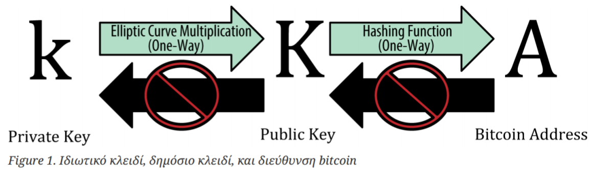
Figure 1. Ιδιωτικό κλειδί, δημόσιο κλειδί, και διεύθυνση bitcoin
Ιδιωτικά κλειδιά
Ένα ιδιωτικό κλειδί είναι απλά ένας αριθμός τυχαία επιλεγμένος.
Η ιδιοκτησία και ο έλεγχος στο ιδιωτικό κλειδί είναι το θεμελιώδες στοιχείο για τον έλεγχο του χρήστη πάνω σε όλα τα χρήματα που σχετίζονται με κάποια συγκεκριμένη διεύθυνση bitcoin.
Το ιδιωτικό κλειδί χρησιμοποιείται για τη δημιουργία υπογραφών που απαιτούνται για το ξόδεμα bitcoin αποδεικνύοντας την κυριότητα των χρημάτων που χρησιμοποιούνται σε μια συναλλαγή.
Το ιδιωτικό κλειδί πρέπει να παραμένει πάντα μυστικό, επειδή η αποκάλυψη του σε τρίτους ισοδυναμεί με το πέρασμα του απόλυτου ελέγχου στα bitcoin που είναι ασφαλισμένα με αυτό το κλειδί.
Το ιδιωτικό κλειδί πρέπει να φροντίζουμε να έχει αντίγραφο ασφαλείας και να προστατεύεται γενικά από κάποια τυχαία απώλεια, γιατί αν χαθεί, δεν μπορεί να ανακτηθεί και τα χρήματα που είναι ασφαλισμένα με αυτό χάνονται, για πάντα, μαζί με αυτό.
TIP
Το bitcoin ιδιωτικό κλειδί είναι απλά ένας αριθμός.
Μπορείτε να επιλέξετε τα ιδιωτικά σας κλειδιά τυχαία, χρησιμοποιώντας μόνο ένα νόμισμα, χαρτί και μολύβι: ρίξτε ένα νόμισμα 256 φορές και έχετε τα δυαδικά ψηφία ενός τυχαίου ιδιωτικού κλειδιού, το οποίο μπορείτε να χρησιμοποιήσετε σε ένα πορτοφόλι bitcoin.
Το δημόσιο κλειδί μπορεί στη συνέχεια να παραχθεί από το ιδιωτικό κλειδί.
Δημιουργώντας ένα ιδιωτικό κλειδί από έναν τυχαίο αριθμό
Το πρώτο και πιο σημαντικό βήμα για την παραγωγή κλειδιών είναι να βρεθεί μια ασφαλής πηγή εντροπίας ή τυχαιότητας.
Δημιουργώντας ένα κλειδί bitcoin είναι ουσιαστικά το ίδιο όπως «διάλεξε έναν αριθμό μεταξύ 1 και 2256».
Η ακριβής μέθοδος που θα χρησιμοποιήσετε για να επιλέξετε αυτό τον αριθμό δεν έχει σημασία, αρκεί να μην είναι προβλέψιμος ή επαναλαμβανόμενος.
Το λογισμικό του bitcoin χρησιμοποιεί γεννήτριες τυχαίων αριθμών του εκάστοτε λειτουργικού συστήματος ώστε να παράγει 256 μπιτ εντροπίας (τυχαιότητα).
Συνήθως, η γεννήτρια τυχαίων αριθμών του λειτουργικού συστήματος γίνεται από μία ανθρώπινη πηγή τυχαιότητας, γι' αυτό μπορεί να σας ζητηθεί να κουνήσετε το ποντίκι σας για μερικά δευτερόλεπτα.
Αν θέλετε να γίνετε εξωπραγματικοί, να ξέρετε ότι τίποτε δεν είναι πιο ισχυρό από ζάρια, μολύβι και χαρτί.
Ακριβέστερα, το ιδιωτικό κλειδί μπορεί να είναι οποιοσδήποτε αριθμός μεταξύ 1 και n - 1, όπου n είναι μια σταθερά (n = 1,158 * 1077, ελαφρώς μικρότερη από 2256) που ορίζεται ως η τάξη της ελλειπτικής καμπύλης, που χρησιμοποιείται στο bitcoin (δείτε Κρυπτογραφία ελλειπτικής καμπύλης - επεξήγηση).
Για να δημιουργήσουμε ένα τέτοιο κλειδί, θα επιλέξουμε τυχαία έναν αριθμό 256 μπιτ και θα βεβαιωθούμε ότι είναι μικρότερος από n - 1.
Σε όρους προγραμματισμού αυτό συνήθως επιτυγχάνεται τροφοδοτώντας μία μεγαλύτερη σειρά τυχαίων μπιτ, τα οποία εξάγονται από κάποια πηγή τυχαιότητας κρυπτογραφικά ασφαλή, στον SHA256 αλγόριθμο κατακερματισμού που θα παράγει επιδέξια έναν αριθμό 256 μπιτ.
Εάν το αποτέλεσμα είναι μικρότερο από n - 1, έχουμε ένα κατάλληλο ιδιωτικό κλειδί.
Σε αντίθετη περίπτωση, απλά δοκιμάστε ξανά με διαφορετικό τυχαίο αριθμό.
TIP
Μην γράψετε δικό σας κώδικα για να δημιουργήσετε ένα τυχαίο αριθμό και μην χρησιμοποιήσετε μία «απλή» γεννήτρια τυχαίων αριθμών που προσφέρεται από τη γλώσσα προγραμματισμού σας.
Χρησιμοποιήστε μια κρυπτογραφικά ασφαλή γεννήτρια ψευδο-τυχαίων αριθμών (Cryptographically Secure Pseudorandom Number Generator),
εκκινώντας από μία πηγή επαρκούς εντροπίας.
Μελετήστε τα συνοδευτικά έγγραφα της βιβλιοθήκης της γεννήτριας των τυχαίων αριθμών, για να βεβαιωθείτε για την ύπαρξη κρυπτογραφικής ασφάλειας.
Η ορθή εφαρμογή του CSPRNG είναι κρίσιμη για την ασφάλεια των κλειδιών.
Το παρακάτω είναι ένα ιδιωτικό κλειδί (k) δημιουργημένο με τυχαιότητα σε δεκαεξαδική μορφή (256 δυαδικά ψηφία παρουσιάζονται ως 64 δεκαεξαδικά ψηφία· το κάθε ένα είναι 4 μπιτ):
1E99423A4ED27608A15A2616A2B0E9E52CED330AC530EDCC32C8FFC6A526AEDD
TIP
Το μέγεθος του χώρου που δημιουργείται ένα ιδιωτικό κλειδί bitcoin, το 2256 είναι ένας απύθμενα μεγάλος αριθμός.
Σε δεκαδικό σύστημα είναι περίπου 1077.
Το ορατό σύμπαν εκτιμάται ότι περιέχει 1080 άτομα.
Για να δημιουργήσετε ένα νέο κλειδί με τον Βitcoin Πυρήνα (δείτε [ch03_bitcoin_client]), χρησιμοποιήστε την εντολή getnewaddress.
Για λόγους ασφαλείας εμφανίζει μόνο το δημόσιο κλειδί και όχι το ιδιωτικό.
Για να ζητήσετε από το bitcoind να εμφανίσει το ιδιωτικό κλειδί, χρησιμοποιήστε την εντολή dumpprivkey.
Η εντολή dumpprivkey εμφανίζει το ιδιωτικό κλειδί σε μια Base58 ckecksum-κωδικοποιημένη μορφή που ονομάζεται Wallet Import Format (WIF)· τις διάφορες μορφές θα τις εξετάσουμε με περισσότερες λεπτομέρειες στο Μορφές ιδιωτικού κλειδιού.
Εδώ είναι ένα παράδειγμα της δημιουργίας και εμφάνισης ένα ιδιωτικού κλειδιού, χρησιμοποιώντας αυτές τις δύο εντολές:
$ bitcoind getnewaddress
1J7mdg5rbQyUHENYdx39WVWK7fsLpEoXZy
$ bitcoind dumpprivkey 1J7mdg5rbQyUHENYdx39WVWK7fsLpEoXZy
KxFC1jmwwCoACiCAWZ3eXa96mBM6tb3TYzGmf6YwgdGWZgawvrtJ
Η εντολή dumpprivkey ανοίγει το πορτοφόλι και εξάγει το ιδιωτικό κλειδί που δημιουργήθηκε από την εντολή getnewaddress.
Δεν είναι δυνατόν διαφορετικά για το bitcoind να γνωρίζει το ιδιωτικό κλειδί από το δημόσιο κλειδί, εκτός αν και τα δύο είναι αποθηκευμένα στο πορτοφόλι.
TIP
Η εντολή dumpprivkey δεν δημιουργεί ιδιωτικό κλειδί από το δημόσιο κλειδί, αφού κάτι τέτοιο είναι αδύνατο.
Η εντολή αποκαλύπτει απλά το ιδιωτικό κλειδί που είναι ήδη γνωστό στο πορτοφόλι και το οποίο παράγεται από την εντολή getnewaddress.
Μπορείτε, επίσης, να χρησιμοποιήσετε τη γραμμή εντολών Bitcoin Εξερευνητή (δείτε [libbitcoin]) για να δημιουργήσετε και να εμφανίσετε ιδιωτικά κλειδιά, με τις εντολές seed, ec-new και ec-to-wif:
$ bx seed | bx ec-new | bx ec-to-wif
5J3mBbAH58CpQ3Y5RNJpUKPE62SQ5tfcvU2JpbnkeyhfsYB1Jcn
Δημόσια Κλειδιά
Το δημόσιο κλειδί υπολογίζεται από το ιδιωτικό κλειδί χρησιμοποιώντας πολλαπλασιασμό ελλειπτικής καμπύλης, ο οποίος είναι μη αναστρέψιμος: (K = k * G) όπου k είναι το ιδιωτικό κλειδί, G είναι ένα σταθερό σημείο που ονομάζεται σημείο δημιουργίας (generator point) και K είναι το δημόσιο κλειδί που προκύπτει.
Η αντίστροφη λειτουργία, γνωστή ως και «εύρεση του διακριτού λογάριθμου» (finding the discrete logarithm) —υπολογισμός του k εάν είναι γνωστό το K— είναι τόσο δύσκολη όσο το να θέσεις μία-μία όλες τις πιθανές τιμές k, δηλαδή, μια «brute-force» αναζήτηση.
Πριν να δείξουμε πως δημιουργείται ένα δημόσιο κλειδί από ένα ιδιωτικό κλειδί, ας ρίξουμε μια ματιά στην κρυπτογραφία ελλειπτικής καμπύλης με περισσότερες λεπτομέρειες.
Κρυπτογραφία ελλειπτικής καμπύλης - επεξήγηση
Η κρυπτογραφία ελλειπτικής καμπύλης είναι ένας τύπος, ασύμμετρης ή δημοσίου κλειδιού κρυπτογραφίας, που βασίζεται στο πρόβλημα του διακριτού λογαρίθμου, εκφραζόμενο από την πρόσθεση και τον πολλαπλασιασμό πάνω στα σημεία μίας ελλειπτικής καμπύλης.
Μία ελλειπτική καμπύλη είναι ένα παράδειγμα μιας ελλειπτικής καμπύλης παρόμοιας με εκείνη που χρησιμοποιείται από το bitcoin.
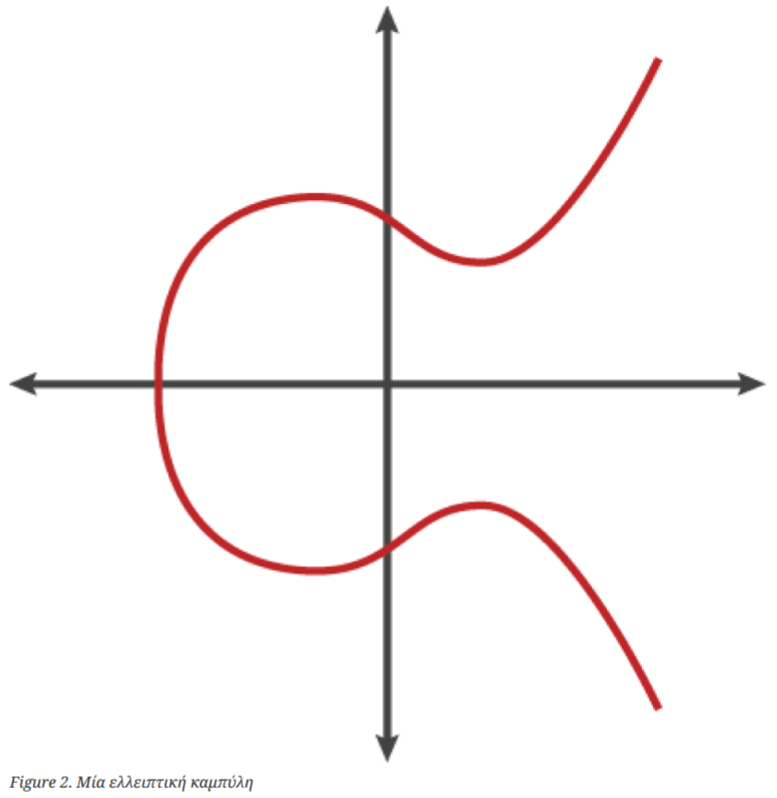
Figure 2. Μία ελλειπτική καμπύλη
Το bitcoin χρησιμοποιεί μια ειδική ελλειπτική καμπύλη και σύνολο από μαθηματικές σταθερές, όπως ορίζονται σε ένα πρότυπο που ονομάζεται secp256k1, που εγκαθιδρύθηκε από το Εθνικό Ινστιτούτο Προτύπων και Τεχνολογίας (National Institute of Standards and Technology) (NIST).
Η καμπύλη secp256k1 ορίζεται από την ακόλουθη συνάρτηση, η οποία παράγει μια ελλειπτική καμπύλη:
\[\begin{equation} {y^2 = (x^3 + 7)}~\text{over}~(\mathbb{F}_p) \end{equation}\]
or
\[\begin{equation} {y^2 \mod p = (x^3 + 7) \mod p} \end{equation}\]
The mod p (modulo prime number p) indicates that this curve is over a finite field of prime order p, also written as \(\(\mathbb{F}_p\)\), where p = 2256 – 232 – 29 – 28 – 27 – 26 – 24 – 1, a very large prime number.
Επειδή αυτή η καμπύλη ορίζεται πάνω σε ένα πεπερασμένο πεδίο τάξεως πρώτων αριθμών αντί πραγματικών αριθμών, μοιάζει με ένα μοτίβο από διασκορπισμένες κουκκίδες σε δύο διαστάσεις, γεγονός που το καθιστά δύσκολο προς απεικόνιση.
Ωστόσο, τα μαθηματικά είναι πανομοιότυπα με εκείνα της ελλειπτικής καμπύλης επί των πραγματικών αριθμών.
Ως παράδειγμα, η Κρυπτογραφία ελλειπτικής καμπύλης: απεικονίζοντας μία ελλειπτική καμπύλη F(p), με p=17 δείχνει την ίδια ελλειπτική καμπύλη πάνω σε ένα πολύ μικρότερο πεπερασμένο πεδίο, τάξεως του πρώτου αριθμού 17, που δείχνει ένα μοτίβο από κουκκίδες σε ένα πλέγμα.
Την ελλειπτική καμπύλη του bitcoin, secp256k1, μπορείτε να τη σκεφτείτε σαν ένα πολύ πιο πολύπλοκο μοτίβο από κουκκίδες σε ένα ασύλληπτα μεγάλο πλέγμα.
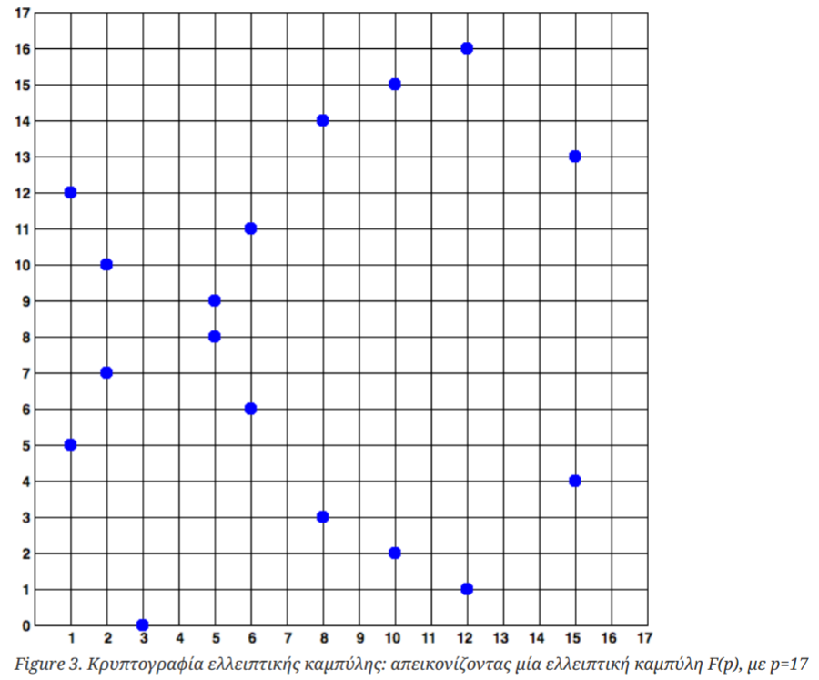
Figure 3. Κρυπτογραφία ελλειπτικής καμπύλης: απεικονίζοντας μία ελλειπτική καμπύλη F(p), με p=17
Έτσι, για παράδειγμα, το ακόλουθο είναι ένα σημείο Ρ με συντεταγμένες (x, y) που είναι ένα σημείο της καμπύλης secp256k1.
Μπορείτε να το ελέγξετε και εσείς χρησιμοποιώντας την Python:
P = (55066263022277343669578718895168534326250603453777594175500187360389116729240, 32670510020758816978083085130507043184471273380659243275938904335757337482424)
Python 3.4.0 (default, Mar 30 2014, 19:23:13)
[GCC 4.2.1 Compatible Apple LLVM 5.1 (clang-503.0.38)] on darwin
Type "help", "copyright", "credits" or "license" for more information.
>>> p = 115792089237316195423570985008687907853269984665640564039457584007908834671663
>>> x = 55066263022277343669578718895168534326250603453777594175500187360389116729240
>>> y = 32670510020758816978083085130507043184471273380659243275938904335757337482424
>>> (x ** 3 + 7 - y**2) % p
0
Στα μαθηματικά ελλειπτικής καμπύλης υπάρχει ένα σημείο που ονομάζεται «σημείο στο άπειρο» (point infinity), το οποίο μπορούμε να το αντιστοιχήσουμε πρακτικά με το ρόλο που έχει το 0 στην πρόσθεση.
Στους υπολογιστές, ορισμένες φορές αντιπροσωπεύεται με x = y = 0 (το οποίο δεν ικανοποιεί όμως την εξίσωση της ελλειπτικής καμπύλης, αλλά είναι μία εύκολη ξεχωριστή περίπτωση που μπορεί να μελετηθεί).
Υπάρχει, επίσης, ο τελεστής a +, που ονομάζεται «πρόσθεση» και έχει κάποιες παρόμοιες ιδιότητες με την παραδοσιακή πρόσθεση των πραγματικών αριθμών που διδάσκονται τα παιδιά στο Δημοτικό σχολείο.
Εάν δίνονται δύο σημεία Ρ1 και P2 στην ελλειπτική καμπύλη, υπάρχει ένα τρίτο σημείο Ρ3 = P1 + P2, επίσης στην ελλειπτική καμπύλη.
Γεωμετρικά, αυτό το τρίτο σημείο P3 υπολογίζεται τραβώντας μια γραμμή μεταξύ P1 και P2.
Η γραμμή αυτή θα τέμνει την καμπύλη σε ακριβώς μία επιπλέον θέση. Καλούμε το σημείο αυτό P3' = (x, y).
Στη συνέχεια, αντικατοπτρίζουμε στον άξονα των x για να πάρουμε το Ρ3 = (x, -y).
Υπάρχουν, επίσης, μερικές ειδικές περιπτώσεις που εξηγούν την ανάγκη για ύπαρξη του «σημείου στο άπειρο».
Αν το Ρ1 και το P2 είναι το ίδιο σημείο, η γραμμή «μεταξύ» του Ρ1 και του P2 θα πρέπει να επεκτείνεται να είναι εφαπτομένη στην καμπύλη σε αυτό το σημείο Ρ1.
Αυτή η εφαπτομένη θα τέμνει την καμπύλη σε ένα ακριβώς νέο σημείο.
Μπορείτε να χρησιμοποιήσετε τεχνικές από τον λογισμό για να καθορίσετε την κλίση της εφαπτομένης.
Αυτές οι τεχνικές λειτουργούν, περιέργως, παρόλο που περιορίζουν το ενδιαφέρον μας σε σημεία της καμπύλης με δύο ακέραιες συντεταγμένες!
Σε ορισμένες περιπτώσεις (π.χ., εάν το Ρ1 και το P2 έχουν ίδιες τιμές x αλλά διαφορετικές τιμές y), η εφαπτόμενη γραμμή θα είναι ακριβώς κάθετη· σε αυτήν την περίπτωση Ρ3 = «σημείο στο άπειρο».
Αν Ρ1 είναι το «σημείο στο άπειρο», τότε το άθροισμα είναι Ρ1 + Ρ2 = P2.
Παρομοίως, εάν το Ρ2 είναι το σημείο στο άπειρο, τότε έχουμε Ρ1 + Ρ2 = P1.
Αυτό δείχνει πως το σημείο στο άπειρο παίζει το ρόλο του 0.
Αποδεικνύεται ότι η ιδιότητα του τελεστή + είναι προσεταιριστική, δηλαδή (A + B) + C = A + (B + C).
Αυτό σημαίνει ότι μπορούμε να γράψουμε A + B + C χωρίς παρενθέσεις και να μην επηρεάζεται το αποτέλεσμα.
Τώρα που έχουμε ορίσει την πρόσθεση, μπορούμε να ορίσουμε και τον πολλαπλασιασμό, με τον πρότυπο τρόπο που επεκτείνει την πρόσθεση.
Για ένα σημείο P της ελλειπτικής καμπύλης, αν το k είναι ένας ακέραιος αριθμός, τότε kP = P + P + P + … + P (k φορές).
Σημειώστε ότι σε αυτήν την περίπτωση το k μερικές φορές, συγκεχυμένα, ονομάζεται «εκθέτης».
Δημιουργώντας ένα δημόσιο κλειδί
Ξεκινώντας με ένα ιδιωτικό κλειδί στη μορφή ενός τυχαία δημιουργηθέντος αριθμού k, πολλαπλασιάζουμε με ένα προκαθορισμένο σημείο της καμπύλης που ονομάζεται σημείο δημιουργίας (generator point) G, ώστε να παράγουμε ένα άλλο σημείο κάπου αλλού στην καμπύλη, το οποίο είναι αυτό που αντιστοιχεί στο δημόσιο κλειδί K.
Το σημείο δημιουργίας καθορίζεται από το πρότυπο secp256k1 και είναι πάντα το ίδιο για όλα τα κλειδιά στο bitcoin:
\[\begin{equation} {K = k * G} \end{equation}\]
όπου k είναι το ιδιωτικό κλειδί, G είναι το σημείο δημιουργίας και Κ είναι το δημόσιο κλειδί που προκύπτει, ένα σημείο επί της καμπύλης.
Επειδή το σημείο δημιουργίας είναι πάντα το ίδιο για όλους τους χρήστες bitcoin, ένα ιδιωτικό κλειδί k πολλαπλασιαζόμενο με το G θα έχει πάντα ως αποτέλεσμα το ίδιο δημόσιο κλειδί Κ.
Η σχέση μεταξύ k και Κ είναι σταθερή, αλλά μπορεί να υπολογιστεί μόνο προς μία κατεύθυνση, από k σε Κ.
Γι 'αυτό μια διεύθυνση bitcoin (που προέρχεται από το K) μπορεί να μοιραστεί δημόσια σε όλους και δεν αποκαλύπτει το ιδιωτικό κλειδί του χρήστη (k).
TIP
Ένα ιδιωτικό κλειδί μπορεί να μετατραπεί σε ένα δημόσιο κλειδί, αλλά ένα δημόσιο κλειδί δεν μπορεί να μετατραπεί πίσω σε ένα ιδιωτικό κλειδί, επειδή η χρήση της συγκεκριμένης αριθμητικής λειτουργεί μόνο προς μία κατεύθυνση.
Εφαρμογή του πολλαπλασιασμού ελλειπτικής καμπύλης παίρνοντας το ιδιωτικό κλειδί k που δημιουργήσαμε προηγουμένως και πολλαπλασιάζοντας με το σημείο δημιουργίας G για να βρούμε το δημόσιο κλειδί Κ:
K = 1E99423A4ED27608A15A2616A2B0E9E52CED330AC530EDCC32C8FFC6A526AEDD * G
Το δημόσιο κλειδί Κ ορίζεται ως ένα σημείο K = (x,y):
K = (x, y)
όπου,
x = F028892BAD7ED57D2FB57BF33081D5CFCF6F9ED3D3D7F159C2E2FFF579DC341A
y = 07CF33DA18BD734C600B96A72BBC4749D5141C90EC8AC328AE52DDFE2E505BDB
Για να δείξουμε σε παράδειγμα τον πολλαπλασιασμό ενός σημείου με ένα ακέραιο, θα χρησιμοποιήσουμε ελλειπτική καμπύλη με τάξη πραγματικών αριθμών η οποία είναι απλούστερη -να θυμάστε, τα μαθηματικά είναι τα ίδια.
Στόχος μας είναι να βρούμε το πολλαπλάσιο kG του σημείου δημιουργίας G.
Είναι το ίδιο με την πρόσθεση του G στον εαυτό του, k φορές στη σειρά.
Στις ελλειπτικές καμπύλες, προσθέτοντας ένα σημείο στον εαυτό του ισοδυναμεί με τη χάραξη μια εφαπτομένης γραμμής στο σημείο και βρίσκοντας που τέμνει την καμπύλη και πάλι, ενώ έπειτα αντικατοπτρίζοντας εκείνο το σημείο στον άξονα των χ.
Η Κρυπτογραφία ελλειπτικής καμπύλης: Απεικονίζοντας τον πολλαπλασιασμό ενός σημείου G με έναν ακέραιο k πάνω σε μία ελλειπτική καμπύλη δείχνει πως προκύπτουν τα G, 2G, 4G, ως γεωμετρική λειτουργία επί της καμπύλης.
TIP
Οι περισσότερες υλοποιήσεις bitcoin χρησιμοποιούν την OpenSSL κρυπτογραφική βιβλιοθήκη για να κάνουν τα μαθηματικά ελλειπτικής καμπύλης.
Για παράδειγμα, για την άντληση του δημοσίου κλειδιού, χρησιμοποιείται η λειτουργία EC_POINT_mul().
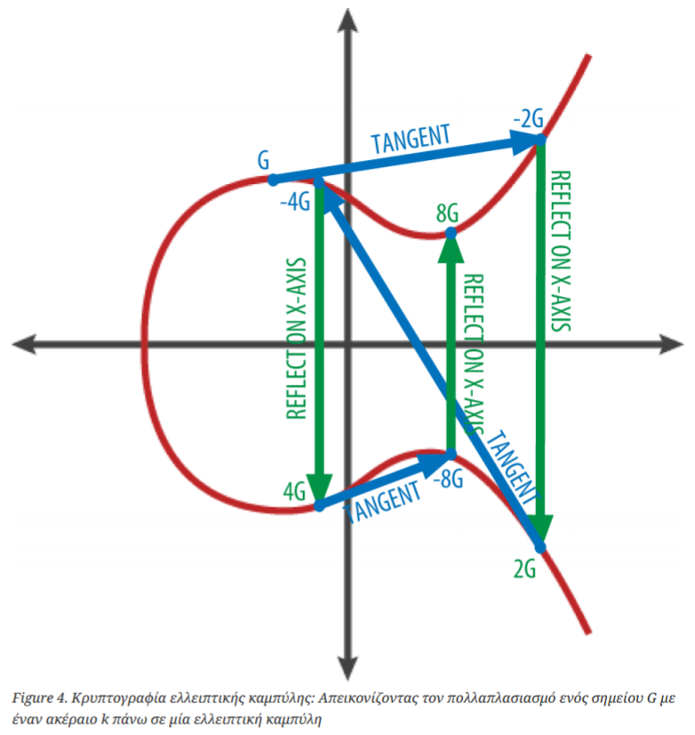
Figure 4. Κρυπτογραφία ελλειπτικής καμπύλης: Απεικονίζοντας τον πολλαπλασιασμό ενός σημείου G με έναν ακέραιο k πάνω σε μία ελλειπτική καμπύλη
Διευθύνσεις Bitcoin
Μία διεύθυνση bitcoin είναι μια σειρά ψηφίων και χαρακτήρων που μπορεί να μοιραστεί με όποιον θέλει να σας στείλει χρήματα.
Διευθύνσεις που παράγονται από δημόσια κλειδιά αποτελούνται από σειρά αριθμών και γραμμάτων, αρχίζοντας με το ψηφίο «1».
Εδώ είναι ένα παράδειγμα μιας διεύθυνσης bitcoin:
1J7mdg5rbQyUHENYdx39WVWK7fsLpEoXZy
Η διεύθυνση bitcoin είναι αυτό που εμφανίζεται, στην πιο συχνή της χρήση, ως ο «αποδέκτης» των κεφαλαίων σε μια συναλλαγή.
Εάν επρόκειτο να συγκρίνουμε μια συναλλαγή bitcoin με μια χάρτινη επιταγή, η διεύθυνση bitcoin θα ήταν ο δικαιούχος, το οποίο είναι αντίστοιχα αυτό που γράφουμε στη γραμμή μετά το «Πληρωμή στο όνομα του…».
Σε μια χάρτινη επιταγή, ο εν λόγω δικαιούχος μπορεί μερικές φορές να είναι το όνομα του κατόχου ενός τραπεζικού λογαριασμού, αλλά μπορεί επίσης να περιλαμβάνει εταιρείες, ιδρύματα ή ακόμα και μετρητά.
Επειδή στις χάρτινες επιταγές δεν είναι απαραίτητο να καθορίσεις ένα λογαριασμό, αλλά χρησιμοποιείται το πιο εύχρηστο, αφηρημένο, όνομα του αποδέκτη των χρηματικών ποσών, είναι πολύ ευέλικτες ως μέσα πληρωμών.
Οι συναλλαγές bitcoin, για να είναι πολύ ευέλικτες, χρησιμοποιούν μια παρόμοια νοητική αφαίρεση, τη διεύθυνση bitcoin.
Η διεύθυνση bitcoin μπορεί να αντιπροσωπεύει τον ιδιοκτήτη ενός ζεύγους ιδιωτικού / δημοσίου κλειδιού, ή κάτι άλλο, όπως ένα σενάριο (script) πληρωμής, όπως θα δούμε στο [p2sh].
Προς το παρόν, ας εξετάσουμε την απλή περίπτωση, μια διεύθυνση bitcoin που αντιπροσωπεύει -και έχει παραχθεί από- ένα δημόσιο κλειδί.
Η διεύθυνση bitcoin προέρχεται από το δημόσιο κλειδί μέσω χρήσης μονόδρομης κρυπτογράφησης κατακερματισμού.
Ένας αλγόριθμος κατακερματισμού (hash algorithm) είναι μια μονόδρομη συνάρτηση που παράγει ένα δακτυλικό αποτύπωμα ή «κατακερματισμό» μίας εισόδου μεγέθους αυθαίρετης ακρίβειας (arbitrary precision).
Οι λειτουργίες κρυπτογράφησης κατακερματισμού χρησιμοποιούνται ευρέως στο bitcoin: στις διευθύνσεις bitcoin, στις διευθύνσεις σεναρίων και στον αλγόριθμο απόδειξης εργασίας (proof-of-work) της εξόρυξης.
Οι αλγόριθμοι που χρησιμοποιούνται για να κάνουμε μια διεύθυνση bitcoin από ένα δημόσιο κλειδί είναι ο «Secure Hash Algorithm (SHA)» και ο RACE Integrity Primitives Evaluation Message Digest (RIPEMD), συγκεκριμένα ο SHA256 και ο RIPEMD160.
Ξεκινώντας με το δημόσιο κλειδί Κ, υπολογίζουμε τον SHA256 κατακερματισμό και στη συνέχεια τον RIPEMD160 κατακερματισμό του αποτελέσματος, παράγοντας έναν αριθμό μεγέθους 160 μπιτ (20 μπάιτ):
όπου Κ είναι το δημόσιο κλειδί και Α είναι η διεύθυνση bitcoin που προκύπτει.
TIP
Μία διεύθυνση bitcoin δεν είναι ίδια με ένα δημόσιο κλειδί.
Οι διευθύνσεις bitcoin προέρχονται από ένα δημόσιο κλειδί χρησιμοποιώντας πάντα μια μονόδρομη συνάρτηση.
Οι διευθύνσεις bitcoin σχεδόν πάντα παρουσιάζονται στους χρήστες σε μια κωδικοποιημένη μορφή που ονομάζεται «Base58Check» (δείτε Κωδικοποίηση Base58 και Base58Check), η οποία χρησιμοποιεί 58 χαρακτήρες (ένα αριθμητικό σύστημα Base58) και επιπλέον ένα «checksum» (άθροισμα ελέγχου) για να βοηθήσει στην ανθρώπινη αναγνωσιμότητα, την αποφυγή αμφιβολιών και την προστασία από τα σφάλματα στην μεταγραφή και είσοδο της διεύθυνσης.
Η «Base58Check» χρησιμοποιείται επίσης με πολλούς άλλους τρόπους στο bitcoin, όποτε υπάρχει ανάγκη για έναν χρήστη να διαβάσει και να μεταγράψει σωστά έναν αριθμό, όπως μία διεύθυνση bitcoin, ένα ιδιωτικό κλειδί, ένα κρυπτογραφημένο κλειδί, ή ένα σενάριο κατακερματισμού.
Στην επόμενη ενότητα θα εξετάσουμε τη μηχανική πίσω από τη Base58Check κωδικοποίηση και αποκωδικοποίηση και τα αποτελέσματα που προκύπτουν.
Η Δημόσιο κλειδί σε διεύθυνση bitcoin: μετατροπή ενός δημοσίου κλειδιού σε διεύθυνση bitcoin απεικονίζει την μετατροπή ενός δημοσίου κλειδιού σε μια bitcoin διεύθυνση.
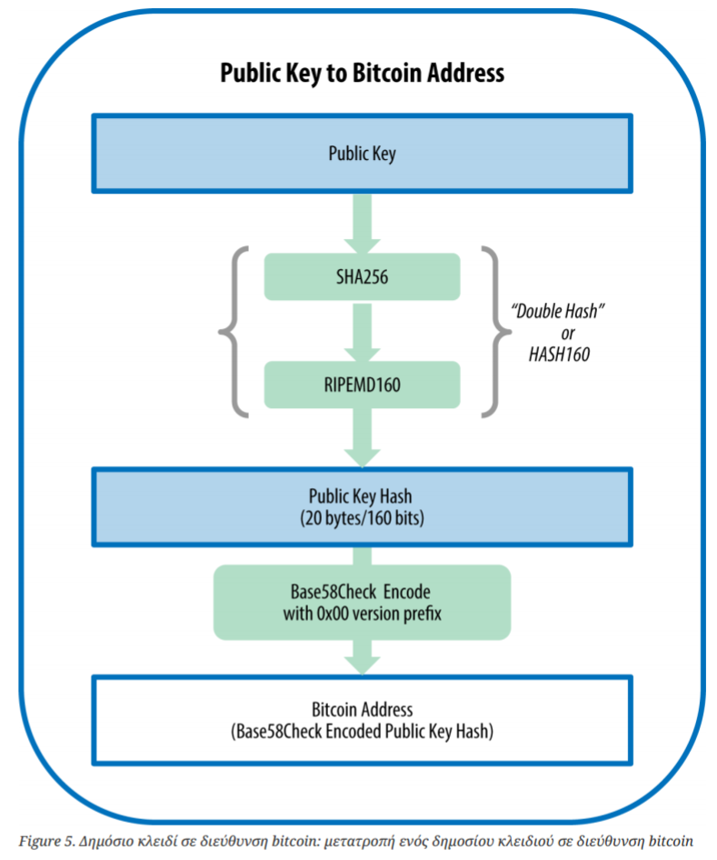
Figure 5. Δημόσιο κλειδί σε διεύθυνση bitcoin: μετατροπή ενός δημοσίου κλειδιού σε διεύθυνση bitcoin
Κωδικοποίηση Base58 και Base58Check
Για τη χρήση μεγάλων αριθμών με έναν πιο πυκνό τρόπο, χρησιμοποιώντας λιγότερους χαρακτήρες, πολλά συστήματα υπολογιστών χρησιμοποιούν μικτές αλφαριθμητικές παραστάσεις με μια βάση (ή radix) μεγαλύτερη από 10.
Για παράδειγμα, ενώ το παραδοσιακό δεκαδικό σύστημα χρησιμοποιεί τα 10 νούμερα 0 έως 9, το δεκαεξαδικό σύστημα χρησιμοποιεί 16, με τα γράμματα Α έως F ως έξι πρόσθετα σύμβολα.
Ένας αριθμός που αντιπροσωπεύεται σε δεκαεξαδική μορφή είναι μικρότερος σε μάκρος από τον ισοδύναμο του σε δεκαδική αναπαράσταση.
Ακόμα πιο συμπαγής, η Base-64 αναπαράσταση χρησιμοποιεί 26 πεζά γράμματα, 26 κεφαλαία γράμματα, 10 αριθμούς και δύο ακόμη χαρακτήρες, όπως «+» και «/» για τη μετάδοση δυαδικών δεδομένων σε πολυμέσα κειμένου όπως το ηλεκτρονικό ταχυδρομείο (email).
Η πιο συχνή χρήση της Base-64 είναι για την πρόσθεση δυαδικών συνημμένων στο ηλεκτρονικό ταχυδρομείο.
Η Base58 είναι επίσης μία μορφή δυαδικής κωδικοποίησης προορισμένη για κείμενο και έχει αναπτυχθεί για χρήση στο bitcoin και χρησιμοποιείται σε πολλά άλλα κρυπτονομίσματα.
Προσφέρει μια ισορροπία μεταξύ πυκνής αναπαράστασης, αναγνωσιμότητας και ανίχνευσης και πρόληψης σφαλμάτων.
Η Base58 είναι ένα υποσύνολο της Base64, χρησιμοποιώντας κεφαλαία-πεζά γράμματα και αριθμούς, αλλά παραλείποντας ορισμένους χαρακτήρες που μπορεί συχνά να γίνουν λάθος αναμεταξύ τους και να εμφανίζονται ίδιοι σε ορισμένες γραμματοσειρές.
Συγκεκριμένα, η Base58 είναι η Base64 χωρίς το 0 (αριθμός μηδέν), O (κεφάλαιο ο), l (μικρό L), I
(κεφαλαίο i) και τα σύμβολα «\+» και «/».
Πιο απλά, είναι ένα σύνολο από πεζά-κεφαλαία γράμματα και αριθμούς χωρίς τα τέσσερα προαναφερθέντα (0, O, L, I).
Example 1. αλφάβητο της Base58 του bitcoin
123456789ABCDEFGHJKLMNPQRSTUVWXYZabcdefghijkmnopqrstuvwxyz
Για την πρόσθεση επιπλέον ασφάλειας σε τυχόν τυπογραφικά λάθη ή σφάλματα αντιγραφής, η «Base58Check» είναι μια μορφή κωδικοποίησης Base58, που χρησιμοποιείται συχνά στο bitcoin και έχει ενσωματωμένο έναν κωδικό για έλεγχο σφαλμάτων.
Το «checksum» (άθροισμα ελέγχου) είναι επιπλέον τέσσερα μπάιτ που προστίθενται στο τέλος των κωδικοποιημένων δεδομένων.
Το checksum προέρχεται από τον κατακερματισμό των κωδικοποιημένων δεδομένων και μπορεί συνεπώς να χρησιμοποιηθεί για την ανίχνευση και πρόληψη σφαλμάτων στην αντιγραφή και τυπογράφηση.
Όταν το λογισμικό αποκωδικοποίησης συναντήσει έναν κωδικό Base58Check θα υπολογίσει το checksum των δεδομένων και θα το συγκρίνει με το checksum που περιλαμβάνεται στον κώδικα.
Εάν τα δύο δεν ταιριάζουν, αυτό σημαίνει ότι έχει εισαχθεί κάποιο σφάλμα και τα «Base58Check» δεδομένα είναι άκυρα.
Για παράδειγμα, αυτό εμποδίζει να γίνει δεκτή ως έγκυρος προορισμός μια λάθος τυπογραφημένη διεύθυνση bitcoin από το λογισμικό πορτοφόλι, ένα σφάλμα που σε διαφορετική περίπτωση θα οδηγούσε σε απώλεια χρημάτων.
Για τη μετατροπή δεδομένων (ενός αριθμού) σε μορφή Base58Check, πρέπει πρώτα να προσθέσουμε ένα πρόθεμα στον αριθμό, το οποίο ονομάζεται «version byte» (μπάιτ έκδοσης) και χρησιμεύει στην εύκολη αναγνώριση του τύπου των δεδομένων που είναι κωδικοποιημένα.
Για παράδειγμα, στην περίπτωση μιας διεύθυνσης bitcoin το πρόθεμα είναι μηδέν (0x00 σε δεκαεξαδική μορφή), ενώ το πρόθεμα που χρησιμοποιείται κατά την κωδικοποίηση ενός ιδιωτικού κλειδιού είναι 128 (0x80 σε δεκαεξαδική μορφή).
Ο κατάλογος των συνηθισμένων εκδόσεων προθεμάτων φαίνεται στο Παραδείγματα κωδικοποίησης Base58Check με προθέματα «version byte» και τα αντίστοιχα κωδικοποιημένα αποτελέσματα τους.
Στη συνέχεια, υπολογίζουμε το «double-SHA» checksum, που σημαίνει ότι εφαρμόζουμε τον SHA256 αλγόριθμο κατακερματισμού δύο φορές στο προηγούμενο αποτέλεσμα (πρόθεμα και δεδομένα):
checksum = SHA256(SHA256(prefix+data))
Από τον κατακερματισμό των 32 μπάιτ που προκύπτει -κατακερματισμός από κατακερματισμό (hash-of-a-hash)- παίρνουμε μόνο τα πρώτα τέσσερα μπάιτ.
Αυτά τα μπάιτ εξυπηρετούν ως κωδικός ελέγχου σφαλμάτων ή αλλιώς checksum (άθροισμα ελέγχου).
Το checksum συνενώνεται (concatenated) έπειτα στο τέλος.
Το αποτέλεσμα αποτελείται από τρία στοιχεία:
ένα πρόθεμα, τα δεδομένα και ένα checksum.
Αυτό το αποτέλεσμα έχει κωδικοποιηθεί με τη χρήση του Base58 αλφάβητου που περιγράφηκε προηγουμένως.
Η Κωδικοποίηση Base58Check: μία Base58 μορφοποίηση για την κωδικοποίηση bitcoin δεδομένων χωρίς αμφιβολίες και παρανοήσεις, μετά το στάδιο πρώτα των μπάιτ έκδοσης (version byte) και του checksum έπειτα απεικονίζει τη διαδικασία κωδικοποίησης Base58Check.
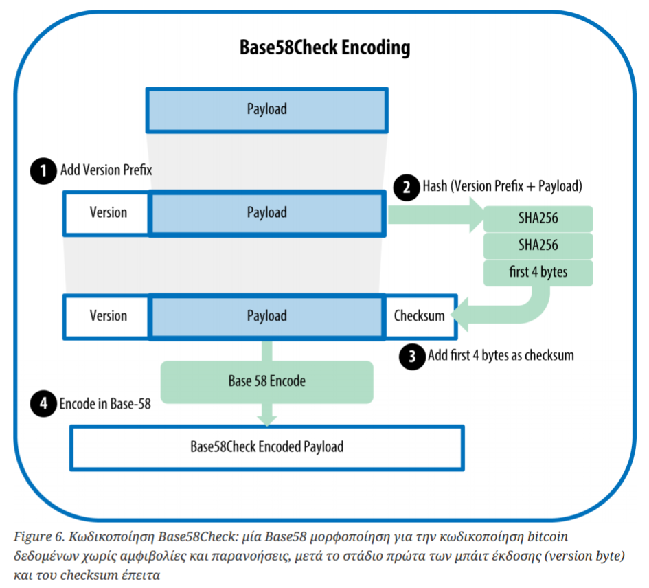
Figure 6. Κωδικοποίηση Base58Check: μία Base58 μορφοποίηση για την κωδικοποίηση bitcoin δεδομένων χωρίς αμφιβολίες και παρανοήσεις, μετά το στάδιο πρώτα των μπάιτ έκδοσης (version byte) και του checksum έπειτα
Στο bitcoin, τα περισσότερα από τα δεδομένα που παρουσιάζονται στον χρήστη είναι Base58Check-κωδικοποιημένα ώστε να είναι συμπαγή, εύκολα στην ανάγνωση και εύκολα στον εντοπισμό σφαλμάτων.
Το πρόθεμα «version byte» (μπάιτ έκδοσης) στην Base58Check κωδικοποίηση χρησιμοποιείται για να δημιουργεί εύκολα διακριτές μορφές, οι οποίες όταν κωδικοποιούνται σε Base58 περιέχουν ειδικούς χαρακτήρες στην αρχή του Base58Check-κωδικοποιημένου φορτίου (payload).
Αυτοί οι χαρακτήρες κάνουν εύκολο για τους ανθρώπους τον προσδιορισμό του τύπου των δεδομένων που είναι κωδικοποιημένα και πως πρέπει να τον χρησιμοποιούν.
Αυτό είναι που διαφοροποιεί, για παράδειγμα, μία Base58Check-κωδικοποιημένη bitcoin διεύθυνση που αρχίζει με «1» από το Base58Check-κωδικοποιημένο ιδιωτικό κλειδί μορφής WIF που ξεκινάει με «5».
Μερικά μπάιτ έκδοσης ως πρόθεμα και οι Base58 χαρακτήρες που προκύπτουν εμφανίζονται στον πίνακα Παραδείγματα κωδικοποίησης Base58Check με προθέματα «version byte» και τα αντίστοιχα κωδικοποιημένα αποτελέσματα τους.
Table 1. Παραδείγματα κωδικοποίησης Base58Check με προθέματα «version byte» και τα αντίστοιχα κωδικοποιημένα αποτελέσματα τους
| Type | Version prefix (hex) | Base58 result prefix |
| Bitcoin Address | 0x00 | 1 |
| Pay-to-Script-Hash Address | 0x05 | 3 |
| Bitcoin Testnet Address | 0x6F | m or n |
| Private Key WIF | 0x80 | 5, K or L |
| BIP38 Encrypted Private Key | 0x0142 | 6P |
| BIP32 Extended Public Key | 0x0488B21E | xpub |
Ας δούμε την πλήρη διαδικασία δημιουργίας μιας διεύθυνσης bitcoin, από ένα ιδιωτικό κλειδί, σε ένα δημόσιο κλειδί (ένα σημείο στην ελλειπτική καμπύλη), σε μία διπλά κατακερματισμένη διεύθυνση και τέλος στην κωδικοποίηση Base58Check.
Ο C++ κώδικας Δημιουργώντας μια Base58Check-κωδικοποιημένη διεύθυνση bitcoin από ένα ιδιωτικό κλειδί δείχνει την ολοκληρωμένη βήμα-προς-βήμα διαδικασία, από το ιδιωτικό κλειδί στην Base58Check-κωδικοποιημένη bitcoin διεύθυνση.
Το παράδειγμα του κώδικα χρησιμοποιεί τη βιβλιοθήκη libbitcoin, για ορισμένες βοηθητικές λειτουργίες, που παρουσιάσαμε στη [alt_libraries].
Example 2. Δημιουργώντας μια Base58Check-κωδικοποιημένη διεύθυνση bitcoin από ένα ιδιωτικό κλειδί
#include <bitcoin/bitcoin.hpp>
int main()
{
// Private secret key.
bc::ec_secret secret;
bool success = bc::decode_base16(secret,
"038109007313a5807b2eccc082c8c3fbb988a973cacf1a7df9ce725c31b14776");
assert(success);
// Get public key.
bc::ec_point public_key = bc::secret_to_public_key(secret);
std::cout << "Public key: " << bc::encode_hex(public_key) << std::endl;
// Create Bitcoin address.
// Normally you can use:
// bc::payment_address payaddr;
// bc::set_public_key(payaddr, public_key);
// const std::string address = payaddr.encoded();
// Compute hash of public key for P2PKH address.
const bc::short_hash hash = bc::bitcoin_short_hash(public_key);
bc::data_chunk unencoded_address;
// Reserve 25 bytes
// [ version:1 ]
// [ hash:20 ]
// [ checksum:4 ]
unencoded_address.reserve(25);
// Version byte, 0 is normal BTC address (P2PKH).
unencoded_address.push_back(0);
// Hash data
bc::extend_data(unencoded_address, hash);
// Checksum is computed by hashing data, and adding 4 bytes from hash.
bc::append_checksum(unencoded_address);
// Finally we must encode the result in Bitcoin's base58 encoding
assert(unencoded_address.size() == 25);
const std::string address = bc::encode_base58(unencoded_address);
std::cout << "Address: " << address << std::endl;
return 0;
}
Ο κώδικας χρησιμοποιεί ένα προκαθορισμένο ιδιωτικό κλειδί, έτσι ώστε να παράγει την ίδια διεύθυνση bitcoin κάθε φορά που τρέχει, όπως φαίνεται στο Κάνουμε μεταγλώττιση και τρέχουμε τον κώδικα «addr».
Example 3. Κάνουμε μεταγλώττιση και τρέχουμε τον κώδικα «addr»
# Compile the addr.cpp code
$ g++ -o addr addr.cpp $(pkg-config --cflags --libs libbitcoin)
# Run the addr executable
$ ./addr
Public key: 0202a406624211f2abbdc68da3df929f938c3399dd79fac1b51b0e4ad1d26a47aa
Address: 1PRTTaJesdNovgne6Ehcdu1fpEdX7913CK
Μορφές κλειδιών
Αμφότερα τα ιδιωτικά και τα δημόσια κλειδιά μπορούν να αντιπροσωπεύονται από πολλές διαφορετικές μορφές.
Αυτές όλες οι αναπαραστάσεις κωδικοποιούν τον ίδιο αριθμό, παρόλο που φαίνονται διαφορετικές.
Οι μορφές αυτές χρησιμοποιούνται κατά κύριο λόγο ώστε να είναι εύκολο για τους ανθρώπους να διαβάζουν και να μεταγράφουν τα κλειδιά χωρίς να κάνουν λάθη.
Μορφές ιδιωτικού κλειδιού
Το ιδιωτικό κλειδί μπορεί να αναπαρασταθεί με μια σειρά από διαφορετικές μορφές, οι οποίες αντιστοιχούν στον ίδιο 256 μπιτ αριθμό.
Ο πίνακας Ιδιωτικό κλειδί - αναπαραστάσεις (μορφές κωδικοποίησης) δείχνει τρεις κοινές μορφές που χρησιμοποιούνται για να αντιπροσωπεύουν τα ιδιωτικά κλειδιά.
| Type | Prefix | Description |
| Hex | None | 64 hexadecimal digits |
| WIF | 5 | Base58Check encoding: Base58 with version prefix of 128 and 32-bit checksum |
| WIF-compressed | K or L | As above, with added suffix 0x01 before encoding |
Ο Παράδειγμα: Ίδιο κλειδί, διαφορετικές μορφές δείχνει το ιδιωτικό κλειδί που δημιουργείται σε αυτές τις τρεις μορφές.
| Format | Private Key |
| Hex | 1e99423a4ed27608a15a2616a2b0e9e52ced330ac530edcc32c8ffc6a526aedd |
| WIF | 5J3mBbAH58CpQ3Y5RNJpUKPE62SQ5tfcvU2JpbnyhfsYB1Jcn |
| WIF-compressed | KxFC1jmwwCoACiCAWZ3eXa96mBM6tb3TYzGmf6YwgdGWZgawvrtJ |
Όλες αυτές οι αναπαραστάσεις είναι διαφορετικοί τρόποι να δείχνουν τον ίδιο αριθμό, το ίδιο ιδιωτικό κλειδί.
Φαίνονται διαφορετικές, αλλά οποιαδήποτε μορφή μπορεί εύκολα να μετατραπεί σε οποιαδήποτε άλλη μορφή.
Χρησιμοποιούμε την εντολή wif-to-ec από τον Bitcoin Εξερευνητή (δείτε [libbitcoin]) για να δείξουμε ότι και τα δύο WIF κλειδιά αντιπροσωπεύουν το ίδιο ιδιωτικό κλειδί:
$ bx wif-to-ec 5J3mBbAH58CpQ3Y5RNJpUKPE62SQ5tfcvU2JpbnkeyhfsYB1Jcn
1e99423a4ed27608a15a2616a2b0e9e52ced330ac530edcc32c8ffc6a526aedd
$ bx wif-to-ec KxFC1jmwwCoACiCAWZ3eXa96mBM6tb3TYzGmf6YwgdGWZgawvrtJ
1e99423a4ed27608a15a2616a2b0e9e52ced330ac530edcc32c8ffc6a526aedd
Αποκωδικοποίηση από τη Base58Check
Οι εντολές του Bitcoin Εξερευνητή (δείτε [libbitcoin]) κάνουν εύκολη την εγγραφή σεναρίων στο «shell» (το «κέλυφος» της διασύνδεσης με το λειτουργικό σύστημα) όπως και «αγωγούς» (pipe) γραμμής εντολών που χειρίζονται bitcoin κλειδιά, διευθύνσεις, και συναλλαγές.
Μπορείτε να χρησιμοποιήσετε τον Bitcoin Εξερευνητή για να αποκωδικοποιήσετε τη Base58Check μορφή στη γραμμή εντολών.
Χρησιμοποιούμε την εντολή base58check-decode για να αποκωδικοποιήσουμε το ασυμπίεστο κλειδί:
$ bx base58check-decode 5J3mBbAH58CpQ3Y5RNJpUKPE62SQ5tfcvU2JpbnkeyhfsYB1Jcn
wrapper
{
checksum 4286807748
payload 1e99423a4ed27608a15a2616a2b0e9e52ced330ac530edcc32c8ffc6a526aedd
version 128
}
Το αποτέλεσμα περιέχει το κλειδί ως φορτίο (payload), το πρόθεμα 128 ως version byte (μπάιτ έκδοσης) για WIF (wallet import format) μορφοποίηση, και ένα checksum.
Παρατηρήστε ότι η διεύθυνση χρέωσης από το συμπιεσμένο κλειδί προσαρτάται με το επίθημα 01, σηματοδοτώντας ότι το παράγωγο δημόσιο κλειδί είναι για να συμπιεστεί.
$ bx base58check-decode KxFC1jmwwCoACiCAWZ3eXa96mBM6tb3TYzGmf6YwgdGWZgawvrtJ
wrapper
{
checksum 2339607926
payload 1e99423a4ed27608a15a2616a2b0e9e52ced330ac530edcc32c8ffc6a526aedd01
version 128
}
Κωδικοποίηση από δεκαεξαδική σε Base58Check
Για την κωδικοποίηση σε Base58Check (το αντίθετο της προηγούμενης εντολής), χρησιμοποιούμε την εντολή base58check-encode από τον Bitcoin Εξερευνητή (δείτε [libbitcoin]) και παρέχουμε το δεκαεξαδικό ιδιωτικό κλειδί, ακολουθούμενο από το πρόθεμα μπάιτ έκδοσης της μορφής εισαγωγής για πορτοφόλι (WIF), που είναι το 128:
bx base58check-encode 1e99423a4ed27608a15a2616a2b0e9e52ced330ac530edcc32c8ffc6a526aedd --version 128
5J3mBbAH58CpQ3Y5RNJpUKPE62SQ5tfcvU2JpbnkeyhfsYB1Jcn
Κωδικοποίηση από το δεκαεξαδικό (συμπιεσμένο κλειδί) σε Base58Check
Για την κωδικοποίηση σε Base58Check ως «συμπιεσμένο» ιδιωτικό κλειδί (δείτε Συμπιεσμένα ιδιωτικά κλειδιά), κάνουμε προσάρτηση το επίθημα 01 στο δεκαεξαδικό κλειδί και στη συνέχεια κωδικοποιούμε όπως παραπάνω:
$ bx base58check-encode
1e99423a4ed27608a15a2616a2b0e9e52ced330ac530edcc32c8ffc6a526aedd01 --version 128
KxFC1jmwwCoACiCAWZ3eXa96mBM6tb3TYzGmf6YwgdGWZgawvrtJ
Αυτό έχει ως αποτέλεσμα μία WIF-συμπιεσμένη μορφή που αρχίζει με ένα "Κ".
Αυτό σημαίνει ότι το ιδιωτικό κλειδί έχει μέσα ένα επίθημα «01» και θα χρησιμοποιηθεί για την παραγωγή μόνο συμπιεσμένων δημοσίων κλειδιών (δείτε Συμπιεσμένα δημόσια κλειδιά).
Μορφές δημοσίου κλειδιού
Τα δημόσια κλειδιά παρουσιάζονται επίσης με διάφορους τρόπους με τους πιο σημαντικούς να είναι τα συμπιεσμένα ή τα ασυμπίεστα δημόσια κλειδιά.
Όπως είδαμε προηγουμένως, το δημόσιο κλειδί είναι ένα σημείο επί της ελλειπτικής καμπύλης που αποτελείται από ένα ζεύγος συντεταγμένων (x, y).
Παρουσιάζεται, συνήθως, με το πρόθεμα 04 και δύο αριθμούς 256 μπιτ να το ακολουθούν, ένας για την x συντεταγμένη του σημείου και ένας για την y συντεταγμένη.
Το πρόθεμα 04 χρησιμοποιείται για τη διάκριση μεταξύ ασυμπίεστων και συμπιεσμένων δημοσίων κλειδιών που αρχίζουν με 02 ή 03.
Εδώ είναι το δημόσιο κλειδί που παράγεται από το ιδιωτικό κλειδί που δημιουργήσαμε νωρίτερα, να εμφανίζεται ως συντεταγμένες x και y:
x = F028892BAD7ED57D2FB57BF33081D5CFCF6F9ED3D3D7F159C2E2FFF579DC341A
y = 07CF33DA18BD734C600B96A72BBC4749D5141C90EC8AC328AE52DDFE2E505BDB
Εδώ είναι το ίδιο δημόσιο κλειδί να εμφανίζεται ως ένας αριθμός 520 μπιτ (130 δεκαεξαδικά ψηφία) με το πρόθεμα 04 να ακολουθείται από τις x και y συντεταγμένες στη σειρά, όπως 04 x y:
K = 04F028892BAD7ED57D2FB57BF33081D5CFCF6F9ED3D3D7F159C2E2FFF579DC341A↵
07CF33DA18BD734C600B96A72BBC4749D5141C90EC8AC328AE52DDFE2E505BDB
Συμπιεσμένα δημόσια κλειδιά
Τα συμπιεσμένα δημόσια κλειδιά εισήχθησαν στο bitcoin για να μειώσουν το μέγεθος των συναλλαγών και να εξοικονομήσουν αποθηκευτικό χώρο στο δίσκο των κόμβων του δικτύου που αποθηκεύουν τη βάση δεδομένων του bitcoin, την αλυσίδα των μπλοκ (blockchain).
Οι περισσότερες συναλλαγές περιλαμβάνουν το δημόσιο κλειδί, το απαιτούμενο διαπιστευτήριο για μεταφορά ιδιοκτησίας και ξόδεμα των bitcoin.
Κάθε δημόσιο κλειδί χρειάζεται 520 μπιτ (πρόθεμα \+ x \+y), τα οποία πολλαπλασιαζόμενα με αρκετές εκατοντάδες συναλλαγές ανά μπλοκ, ή δεκάδες χιλιάδες συναλλαγές ανά ημέρα, προσθέτουν ένα σημαντικό ποσό δεδομένων στην αλυσίδα των μπλοκ.
Όπως είδαμε στην ενότητα Δημόσια Κλειδιά, ένα δημόσιο κλειδί είναι ένα σημείο (x, y) σε μία ελλειπτική καμπύλη.
Επειδή η καμπύλη εκφράζει μια μαθηματική συνάρτηση, ένα σημείο στην καμπύλη αντιπροσωπεύει μια λύση στην εξίσωση και ως εκ τούτου εάν γνωρίζουμε τη x συντεταγμένη του σημείου μπορούμε να υπολογίσουμε αντίστοιχα τη y, με την επίλυση της εξίσωσης y^2 mod p = (x^3 + 7) mod p.
Αυτό μας επιτρέπει να αποθηκεύσουμε μόνο τη x συντεταγμένη του σημείου του δημοσίου κλειδιού, παραλείποντας τη συντεταγμένη y και μειώνοντας το μέγεθος του κλειδιού και του χώρου που απαιτείται για την αποθήκευση του σε 256 μπιτ.
Μια μείωση σχεδόν 50% στο μέγεθος κάθε συναλλαγής σημαίνει πάρα πολλά δεδομένα για αποθήκευση σε βάθος χρόνου!
Ενώ τα ασυμπίεστα δημόσια κλειδιά έχουν ένα πρόθεμα 04, τα συμπιεσμένα δημόσια κλειδιά ξεκινούν είτε με πρόθεμα 02 ή 03.
Ας δούμε γιατί υπάρχουν δύο πιθανά προθέματα:
επειδή η αριστερή πλευρά της εξίσωσης είναι y^2, αυτό σημαίνει ότι η λύση για το y είναι μια τετραγωνική ρίζα, η οποία μπορεί να έχει είτε θετική είτε αρνητική τιμή.
Οπτικά αυτό σημαίνει ότι η συντεταγμένη y που προκύπτει μπορεί να είναι πάνω ή κάτω από τον x-άξονα.
Όπως μπορείτε να δείτε από το διάγραμμα της καμπύλης στην Μία ελλειπτική καμπύλη, η καμπύλη είναι συμμετρική, που σημαίνει ότι αντικατοπτρίζεται σαν καθρέφτης στον χ-άξονα.
Έτσι, ενώ μπορούμε να παραλείψουμε τη συντεταγμένη y πρέπει να αποθηκεύσουμε το πρόσημο του y (θετικό ή αρνητικό), ή με άλλα λόγια, πρέπει να γνωρίζουμε αν είναι πάνω ή κάτω από τον x-άξονα, διότι κάθε μία από αυτές τις επιλογές αντιπροσωπεύει και ένα διαφορετικό σημείο με ένα διαφορετικό δημόσιο κλειδί.
Κατά τον υπολογισμό της καμπύλης σε δυαδική αριθμητική έχοντας ως τάξη το πεπερασμένο πεδίο των πρώτων αριθμών p, η συντεταγμένη y είναι είτε ζυγός είτε μονός αριθμός, ο οποίος αντιστοιχεί στο θετικό / αρνητικό πρόσημο όπως εξηγήθηκε προηγουμένως.
Ως εκ τούτου, για να γίνει διάκριση μεταξύ των δύο πιθανών τιμών του y, αποθηκεύουμε ένα συμπιεσμένο δημόσιο κλειδί με το πρόθεμα 02 εάν το y είναι ζυγό και 03 αν είναι μονό, επιτρέποντας στο λογισμικό να συμπεράνει σωστά τη συντεταγμένη y από τη συντεταγμένη x και να αποσυμπιέσει το δημόσιο κλειδί για τις πλήρεις συντεταγμένες του σημείου.
Η συμπίεση δημοσίου κλειδιού απεικονίζεται στην Συμπίεση δημοσίου κλειδιού.
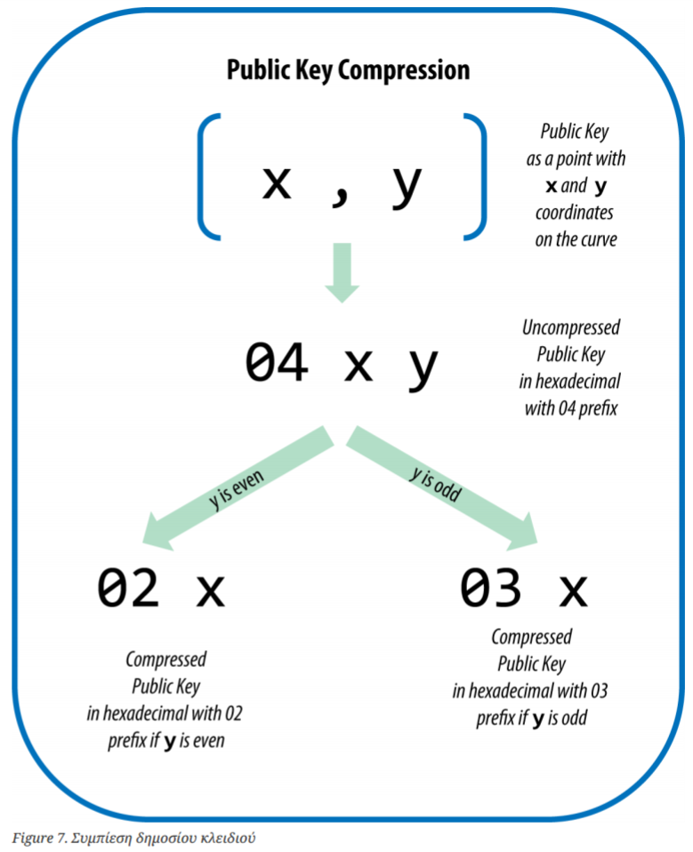
Figure 7. Συμπίεση δημοσίου κλειδιού
Εδώ είναι το ίδιο δημόσιο κλειδί που παράχθηκε προηγουμένως να εμφανίζεται τώρα ως συμπιεσμένο δημόσιο κλειδί αποθηκευμένο σε 264 μπιτ (66 δεκαεξαδικά ψηφία) με το πρόθεμα 03 υποδεικνύοντας ότι η συντεταγμένη y είναι μονός αριθμός:
K = 03F028892BAD7ED57D2FB57BF33081D5CFCF6F9ED3D3D7F159C2E2FFF579DC341A
Αυτό το συμπιεσμένο δημόσιο κλειδί αντιστοιχεί στο ίδιο ιδιωτικό κλειδί, που σημαίνει ότι παράγεται από το ίδιο ιδιωτικό κλειδί.
Ωστόσο φαίνεται διαφορετικό από το ασυμπίεστο δημόσιο κλειδί.
Το πιο σημαντικό είναι ότι αν θέλουμε να μετατρέψουμε αυτό το συμπιεσμένο δημόσιο κλειδί σε διεύθυνση bitcoin χρησιμοποιώντας τη συνάρτηση διπλού κατακερματισμού (RIPEMD160(SHA256(K))) αυτό θα παράγει μια διαφορετική διεύθυνση bitcoin.
Αυτό μπορεί να προκαλέσει σύγχυση, διότι σημαίνει ότι ένα μοναδικό ιδιωτικό κλειδί μπορεί να παράγει ένα δημόσιο κλειδί που εκφράζεται σε δύο διαφορετικές μορφές (συμπιεσμένο και ασυμπίεστο) που παράγει δύο διαφορετικές διευθύνσεις bitcoin.
Ωστόσο, το ιδιωτικό κλειδί είναι ίδιο και για τις δύο bitcoin διευθύνσεις.
Τα συμπιεσμένα δημόσια κλειδιά καθίστανται σταδιακά η προεπιλογή για όλους τους bitcoin πελάτες, κάτι που έχει σημαντικό αντίκτυπο στη μείωση του μεγέθους των συναλλαγών και συνεπώς της αλυσίδας των μπλοκ (blockchain).
Ωστόσο, δεν υποστηρίζουν όλοι οι πελάτες τα συμπιεσμένα δημόσια κλειδιά, ακόμα.
Οι νεότεροι πελάτες που υποστηρίζουν συμπιεσμένα δημόσια κλειδιά πρέπει να λαμβάνουν υπόψη τους συναλλαγές από παλαιότερους πελάτες που δεν υποστηρίζουν συμπιεσμένα δημόσια κλειδιά.
Αυτό είναι ιδιαίτερα σημαντικό όταν μια εφαρμογή πορτοφολιού κάνει εισαγωγή ιδιωτικών κλειδιών από μια άλλη bitcoin εφαρμογή πορτοφολιού, επειδή το νέο πορτοφόλι πρέπει να σαρώσει την αλυσίδα των μπλοκ για να βρει τις συναλλαγές που αντιστοιχούν σε αυτά τα εισηγμένα κλειδιά.
Ποιες διευθύνσεις bitcoin θα πρέπει το πορτοφόλι bitcoin να σαρώσει;
Τις διευθύνσεις bitcoiου παράγονται από ασυμπίεστα δημόσια κλειδιά ή τις διευθύνσεις bitcoin που παράγονται από συμπιεσμένα δημόσια κλειδιά;
Είναι και οι δύο έγκυρες διευθύνσεις bitcoin και μπορούν να υπογραφούν από το ίδιο ιδιωτικό κλειδί, αλλά είναι διαφορετικές διευθύνσεις!
Για την επίλυση αυτού του ζητήματος, όταν τα ιδιωτικά κλειδιά εξάγονται από ένα πορτοφόλι, η μορφή εισαγωγής για πορτοφόλι (WIF) που χρησιμοποιείται για το συμβολισμό τους υλοποιείται με διαφορετικό τρόπο στα νεότερα bitcoin πορτοφόλια, ώστε να δείξει ότι αυτά τα ιδιωτικά κλειδιά χρησιμοποιούνται για την παραγωγή συμπιεσμένων δημοσίων κλειδιών και ως εκ τούτου συμπιεσμένων διευθύνσεων bitcoin.
Αυτό επιτρέπει στο πορτοφόλι που εισάγει να κάνει διάκριση μεταξύ των ιδιωτικών κλειδιών που προέρχονται από παλαιότερα ή νεότερα πορτοφόλια και να αναζητήσει στην αλυσίδα των μπλοκ για συναλλαγές με bitcoin διευθύνσεις για συμπιεσμένα ή ασυμπίεστα δημόσια κλειδιά, αντίστοιχα.
Ας δούμε πώς λειτουργεί αυτό με περισσότερες λεπτομέρειες στην επόμενη ενότητα.
Συμπιεσμένα ιδιωτικά κλειδιά
Ειρωνικά κατά μία έννοια ο όρος «συμπιεσμένο ιδιωτικό κλειδί» είναι παραπλανητικός, διότι όταν ένα ιδιωτικό κλειδί εξάγεται ως WIF-συμπιεσμένο είναι στην πραγματικότητα κατά ένα μπάιτ μακρύτερο από ένα «μη συμπιεσμένο» ιδιωτικό κλειδί.
Αυτό γίνεται επειδή παίρνει το 01 ως ένα πρόσθετο επίθημα, το οποίο υποδηλώνει ότι προέρχεται από ένα νεότερο πορτοφόλι και θα πρέπει να χρησιμοποιείται μόνο για την παραγωγή συμπιεσμένων δημοσίων κλειδιών.
Τα ιδιωτικά κλειδιά δεν είναι συμπιεσμένα και δεν μπορούν να συμπιεστούν.
Ο όρος «συμπιεσμένο ιδιωτικό κλειδί» στην πραγματικότητα σημαίνει «ιδιωτικό κλειδί από το οποίο θα πρέπει να προέρχονται συμπιεσμένα δημόσια κλειδιά», ενώ «ασυμπίεστο ιδιωτικό κλειδί» σημαίνει «ιδιωτικό κλειδί από το οποίο θα πρέπει να προέρχονται ασυμπίεστα δημόσια κλειδιά».
Θα πρέπει να αναφέρεστε μόνο στη μορφή εξαγωγής ως «WIF-συμπιεσμένο» ή «WIF» και όχι στο ιδιωτικό κλειδί ως «συμπιεσμένο», για την αποφυγή περαιτέρω σύγχυσης.
Να θυμάστε, αυτές οι μορφές δεν μπορούν να χρησιμοποιούνται εναλλάξ η μία με την άλλη.
Σε ένα νεότερο πορτοφόλι που εφαρμόζει συμπιεσμένα δημόσια κλειδιά, τα ιδιωτικά κλειδιά θα μπορούν να εξαχθούν μόνο ως WIF-συμπιεσμένα (με πρόθεμα Κ ή L).
Αν το πορτοφόλι είναι μια παλαιότερη υλοποίηση και δεν χρησιμοποιεί συμπιεσμένα δημόσια κλειδιά, τα ιδιωτικά κλειδιά θα μπορούν να εξαχθούν μόνο ως WIF (με πρόθεμα 5).
Ο στόχος εδώ είναι να κάνουμε σαφές στο πορτοφόλι που εισάγει αυτά τα ιδιωτικά κλειδιά εάν πρέπει να αναζητήσει στην αλυσίδα των μπλοκ για συμπιεσμένα ή ασυμπίεστα δημόσια κλειδιά και διευθύνσεις.
Εάν ένα πορτοφόλι bitcoin είναι σε θέση να υλοποιήσει συμπιεσμένα δημόσια κλειδιά, αυτά είναι που θα χρησιμοποιήσει και σε όλες τις συναλλαγές.
Τα ιδιωτικά κλειδιά στο πορτοφόλι θα χρησιμοποιηθούν για να εξάγονται τα δημόσια κλειδιά σημεία της καμπύλης, το οποία θα είναι συμπιεσμένα.
Τα συμπιεσμένα δημόσια κλειδιά θα χρησιμοποιηθούν για να παράγονται bitcoin διευθύνσεις και εκείνες θα χρησιμοποιηθούν στις συναλλαγές.
Κατά την εξαγωγή ιδιωτικών κλειδιών από ένα νέο πορτοφόλι που υλοποιεί συμπιεσμένα δημόσια κλειδιά, η μορφή εισαγωγής για πορτοφόλι (WIF) τροποποιείται, με την προσθήκη ενός μπάιτ στο τέλος, 01, ως επίθημα στο ιδιωτικό κλειδί.
Το αποτέλεσμα είναι ένα Base58Check-κωδικοποιημένο ιδιωτικό κλειδί που ονομάζεται «συμπιεσμένο WIF» και αρχίζει είτε με το γράμμα Κ ή είτε με το γράμμα L, αντί του «5», όπως γίνεται στην περίπτωση των WIF-κωδικοποιημένων (μη συμπιεσμένων) κλειδιών από παλαιότερα πορτοφόλια.
Ο Παράδειγμα: Ίδιο κλειδί, διαφορετικές μορφές δείχνει το ίδιο κλειδί, κωδικοποιημένο σε WIF και
WIF-συμπιεσμένες μορφές.
| Format | Private Key |
| Hex | 1E99423A4ED27608A15A2616A2B0E9E52CED330AC530EDCC32C8FFC6A526AEDD |
| WIF | 5J3mBbAH58CpQ3Y5RNJpUKPE62SQ5tfcvU2JpbnyhfsYB1Jcn |
| Hex-compressed | 1E99423A4ED27608A15A2616A2B0E9E52CED330AC530EDCC32C8FFC6A526AEDD_01_ |
| WIF-compressed | KxFC1jmwwCoACiCAWZ3eXa96mBM6tb3TYzGmf6YwgdGWZgawvrtJ |
TIP
Η συμπίεση των ιδιωτικών κλειδιών είναι παραπλανητική!
Δεν συμπιέζονται· η WIF-συμπιεσμένη μορφή σημαίνει ότι θα πρέπει να χρησιμοποιούνται μόνο για τον υπολογισμό συμπιεσμένων δημοσίων κλειδιών και των αντίστοιχων bitcoin διευθύνσεων τους.
Ειρωνικά κατά μία έννοια ένα «WIF-συμπιεσμένο» κωδικοποιημένο ιδιωτικό κλειδί είναι ένα μπάιτ περισσότερο επειδή έχει το πρόσθετο επίθημα 01 για να ξεχωρίζει από το «ασυμπίεστο».
Υλοποιώντας Κλειδιά και Διευθύνσεις στην Python
Η πιο περιεκτική βιβλιοθήκη bitcoin στην Python είναι η https://github.com/vbuterin/pybitcointools από τον Vitalik Buterin.
Στο Δημιουργία κλειδιού και διεύθυνσης και μορφοποίηση με τη βιβλιοθήκη pybitcointools χρησιμοποιούμε τη βιβλιοθήκη pybitcointools (που εισάγεται ως «bitcoin») για να δημιουργήσουμε κλειδιά και διευθύνσεις σε διάφορες μορφές.
Example 4. Δημιουργία κλειδιού και διεύθυνσης και μορφοποίηση με τη βιβλιοθήκη pybitcointools
import bitcoin
# Generate a random private key
valid_private_key = False
while not valid_private_key:
private_key = bitcoin.random_key()
decoded_private_key = bitcoin.decode_privkey(private_key, 'hex')
valid_private_key = 0 < decoded_private_key < bitcoin.N
print "Private Key (hex) is: ", private_key
print "Private Key (decimal) is: ", decoded_private_key
# Convert private key to WIF format
wif_encoded_private_key = bitcoin.encode_privkey(decoded_private_key, 'wif')
print "Private Key (WIF) is: ", wif_encoded_private_key
# Add suffix "01" to indicate a compressed private key
compressed_private_key = private_key + '01'
print "Private Key Compressed (hex) is: ", compressed_private_key
# Generate a WIF format from the compressed private key (WIF-compressed)
wif_compressed_private_key = bitcoin.encode_privkey(
bitcoin.decode_privkey(compressed_private_key, 'hex'), 'wif')
print "Private Key (WIF-Compressed) is: ", wif_compressed_private_key
# Multiply the EC generator point G with the private key to get a public key point
public_key = bitcoin.fast_multiply(bitcoin.G, decoded_private_key)
print "Public Key (x,y) coordinates is:", public_key
# Encode as hex, prefix 04
hex_encoded_public_key = bitcoin.encode_pubkey(public_key,'hex')
print "Public Key (hex) is:", hex_encoded_public_key
# Compress public key, adjust prefix depending on whether y is even or odd
(public_key_x, public_key_y) = public_key
if (public_key_y % 2) == 0:
compressed_prefix = '02'
else:
compressed_prefix = '03'
hex_compressed_public_key = compressed_prefix + bitcoin.encode(public_key_x, 16)
print "Compressed Public Key (hex) is:", hex_compressed_public_key
# Generate bitcoin address from public key
print "Bitcoin Address (b58check) is:", bitcoin.pubkey_to_address(public_key)
# Generate compressed bitcoin address from compressed public key
print "Compressed Bitcoin Address (b58check) is:", \
bitcoin.pubkey_to_address(hex_compressed_public_key)
Το Εκτελώντας το key-to-address-ecc-example.py δείχνει το αποτέλεσμα από την εκτέλεση αυτού του κώδικα.
Example 5. Εκτελώντας το key-to-address-ecc-example.py
$ python key-to-address-ecc-example.py
Private Key (hex) is:
3aba4162c7251c891207b747840551a71939b0de081f85c4e44cf7c13e41daa6
Private Key (decimal) is:
26563230048437957592232553826663696440606756685920117476832299673293013768870
Private Key (WIF) is:
5JG9hT3beGTJuUAmCQEmNaxAuMacCTfXuw1R3FCXig23RQHMr4K
Private Key Compressed (hex) is:
3aba4162c7251c891207b747840551a71939b0de081f85c4e44cf7c13e41daa601
Private Key (WIF-Compressed) is:
KyBsPXxTuVD82av65KZkrGrWi5qLMah5SdNq6uftawDbgKa2wv6S
Public Key (x,y) coordinates is:
(41637322786646325214887832269588396900663353932545912953362782457239403430124L,
16388935128781238405526710466724741593761085120864331449066658622400339362166L)
Public Key (hex) is:
045c0de3b9c8ab18dd04e3511243ec2952002dbfadc864b9628910169d9b9b00ec↵
243bcefdd4347074d44bd7356d6a53c495737dd96295e2a9374bf5f02ebfc176
Compressed Public Key (hex) is:
025c0de3b9c8ab18dd04e3511243ec2952002dbfadc864b9628910169d9b9b00ec
Bitcoin Address (b58check) is:
1thMirt546nngXqyPEz532S8fLwbozud8
Compressed Bitcoin Address (b58check) is:
14cxpo3MBCYYWCgF74SWTdcmxipnGUsPw3
Το Ένα σενάριο (script) που παρουσιάζει τη χρήση μαθηματικών ελλειπτικής καμπύλης για τη δημιουργία κλειδιών bitcoin αποτελεί άλλο ένα παράδειγμα, χρησιμοποιώντας αυτή τη φορά τη βιβλιοθήκη Python ECDSA για τα μαθηματικά ελλειπτικής καμπύλης, χωρίς τη χρήση εξειδικευμένων βιβλιοθηκών bitcoin.
Example 6. Ένα σενάριο (script) που παρουσιάζει τη χρήση μαθηματικών ελλειπτικής καμπύλης για τη δημιουργία κλειδιών bitcoin
import ecdsa
import os
from ecdsa.util import string_to_number, number_to_string
# secp256k1, http://www.oid-info.com/get/1.3.132.0.10
_p = 0xFFFFFFFFFFFFFFFFFFFFFFFFFFFFFFFFFFFFFFFFFFFFFFFFFFFFFFFEFFFFFC2FL
_r = 0xFFFFFFFFFFFFFFFFFFFFFFFFFFFFFFFEBAAEDCE6AF48A03BBFD25E8CD0364141L
_b = 0x0000000000000000000000000000000000000000000000000000000000000007L
_a = 0x0000000000000000000000000000000000000000000000000000000000000000L
_Gx = 0x79BE667EF9DCBBAC55A06295CE870B07029BFCDB2DCE28D959F2815B16F81798L
_Gy = 0x483ada7726a3c4655da4fbfc0e1108a8fd17b448a68554199c47d08ffb10d4b8L
curve_secp256k1 = ecdsa.ellipticcurve.CurveFp(_p, _a, _b)
generator_secp256k1 = ecdsa.ellipticcurve.Point(curve_secp256k1, _Gx, _Gy, _r)
oid_secp256k1 = (1, 3, 132, 0, 10)
SECP256k1 = ecdsa.curves.Curve("SECP256k1", curve_secp256k1, generator_secp256k1,
oid_secp256k1)
ec_order = _r
curve = curve_secp256k1
generator = generator_secp256k1
def random_secret():
convert_to_int = lambda array: int("".join(array).encode("hex"), 16)
# Collect 256 bits of random data from the OS's cryptographically secure random
generator
byte_array = os.urandom(32)
return convert_to_int(byte_array)
def get_point_pubkey(point):
if point.y() & 1:
key = '03' + '%064x' % point.x()
else:
key = '02' + '%064x' % point.x()
return key.decode('hex')
def get_point_pubkey_uncompressed(point):
key = '04' + \
'%064x' % point.x() + \
'%064x' % point.y()
return key.decode('hex')
# Generate a new private key.
secret = random_secret()
print "Secret: ", secret
# Get the public key point.
point = secret * generator
print "EC point:", point
print "BTC public key:", get_point_pubkey(point).encode("hex")
# Given the point (x, y) we can create the object using:
point1 = ecdsa.ellipticcurve.Point(curve, point.x(), point.y(), ec_order)
assert point1 == point
c k€:�w
Το Κάνοντας εγκατάσταση τη βιβλιοθήκη Python ECDSA και εκτελώντας το σενάριο ec_math.py δείχνει το αποτέλεσμα που παράγεται από την εκτέλεση αυτού του σεναρίου.
Σημείωση:
Το παραπάνω παράδειγμα κάνει χρήση του os.urandom, το οποίο αντικατοπτρίζει μία κρυπτογραφικά ασφαλή γεννήτρια τυχαίων αριθμών (Cryptographically Secure Random Number Generator - CSRNG) που παρέχεται από το εκάστοτε λειτουργικό σύστημα.
Στην περίπτωση ενός UNIX-like λειτουργικού συστήματος όπως το Linux η άντληση γίνεται από το /dev/urandom, ενώ στην περίπτωση των Windows καλείται το CryptGenRandom().
Αν δεν βρεθεί μια κατάλληλη πηγή τυχαιότητας, θα προκύψει ένα σφάλμα NotImplementedError.
Η γεννήτρια τυχαίων αριθμών που χρησιμοποιείται εδώ είναι για λόγους επίδειξης και δεν είναι κατάλληλη για την παραγωγή ποιοτικών κλειδιών bitcoin, δεδομένου ότι δεν έχει υλοποιηθεί με επαρκή ασφάλεια.
Example 7. Κάνοντας εγκατάσταση τη βιβλιοθήκη Python ECDSA και εκτελώντας το σενάριο ec_math.py
$ # Install Python PIP package manager
$ sudo apt-get install python-pip
$ # Install the Python ECDSA library
$ sudo pip install ecdsa
$ # Run the script
$ python ec-math.py
Secret: 38090835015954358862481132628887443905906204995912378278060168703580660294000
EC point: (70048853531867179489857750497606966272382583471322935454624595540007269312627, 105262206478686743191060800263479589329920209527285803935736021686045542353380)
BTC public key: 029ade3effb0a67d5c8609850d797366af428f4a0d5194cb221d807770a1522873
Πορτοφόλια (wallet)
Τα πορτοφόλια (wallet) είναι περιέκτες ιδιωτικών κλειδιών, τα οποία συνήθως υλοποιούνται ως απλές βάσεις δεδομένων ή δομημένα αρχεία.
Μία άλλη μέθοδος για δημιουργία κλειδιών είναι η ντετερμινιστική παραγωγή κλειδιών (deterministic key generation).
Σε αυτή την περίπτωση η άντληση κάθε νέου ιδιωτικού κλειδιού γίνεται χρησιμοποιώντας μια μονόδρομη συνάρτηση κατακερματισμού (one-way hash function) από το προηγούμενο ιδιωτικό κλειδί, συνδέοντας τα σε μια ακολουθία.
Εφόσον μπορείτε να αναδημιουργείτε αυτή την ακολουθία, το μόνο που πρέπει να έχετε είναι το πρώτο κλειδί (γνωστό ως πηγή (seed) ή κύριο (master) κλειδί) για τη δημιουργία όλων.
Σε αυτή την ενότητα θα εξετάσουμε τις διαφορετικές μεθόδους δημιουργίας κλειδιών και τις wallet δομές δεδομένων που είναι χτισμένες γύρω από τα πορτοφόλια.
TIP
Τα bitcoin πορτοφόλια περιέχουν κλειδιά και όχι νομίσματα.
Κάθε χρήστης έχει ένα πορτοφόλι που περιέχει κλειδιά.
Τα πορτοφόλια είναι στην πραγματικότητα δομές δεδομένων κλειδιών ή αλυσίδες κλειδιών καλύτερα (keychains) που περιέχουν ζεύγη ιδιωτικών / δημοσίων κλειδιών (δείτε Ιδιωτικά και Δημόσια Κλειδιά).
Οι χρήστες υπογράφουν συναλλαγές με τα κλειδιά, αποδεικνύοντας έτσι ότι είναι κάτοχοι των εξόδων συναλλαγών που τους αντιστοιχούν (δηλαδή τα ψηφιακά νομίσματά τους).
Τα νομίσματα αποθηκεύονται στην αλυσίδα των μπλοκ στη μορφή εξόδων συναλλαγών (συχνά σημειώνονται ως vout ή txout).
Μη-ντετερμινιστικά (τυχαία) πορτοφόλια
Στους πρώτους bitcoin πελάτες, τα πορτοφόλια ήταν απλώς συλλογές από τυχαία δημιουργημένα ιδιωτικά κλειδιά.
Αυτός ο τύπος πορτοφολιού ονομάζεται μη-ντετερμινιστικό πορτοφόλι τύπου-0.
Για παράδειγμα, ο πελάτης Bitcoin Πυρήνας προδημιουργεί 100 τυχαία ιδιωτικά κλειδιά στην πρώτη του εκκίνηση και παράγει περισσότερα αν χρειαστεί χρησιμοποιώντας κάθε κλειδί μόνο μια φορά.
Αυτός ο τύπος πορτοφολιού έχει το προσωνύμιο «Just a Bunch Of Keys» ή JBOK και έχει αντικατασταθεί από ντετερμινιστικά πορτοφόλια, επειδή είναι δυσκίνητος και δύσχρηστος στη δημιουργία αντιγράφων ασφαλείας και στην εισαγωγή.
Το μειονέκτημα των τυχαίων κλειδιών είναι ότι εάν έχετε δημιουργήσει πολλά από αυτά, θα πρέπει να κρατήσετε αντίγραφα από όλα, πράγμα που σημαίνει ότι το πορτοφόλι πρέπει να γίνεται συχνά backup.
Πρέπει να γίνεται αντίγραφο ασφαλείας για κάθε ξεχωριστό κλειδί, αλλιώς τα κεφάλαια που είναι υπό τον έλεγχο του σε περίπτωση που χαθεί με κάποιο τρόπο η πρόσβαση στο πορτοφόλι χάνονται οριστικά.
Αυτό έρχεται σε άμεση σύγκρουση με την αρχή της αποφυγής της επαναχρησιμοποίησης των διευθύνσεων, χρησιμοποιώντας κάθε bitcoin διεύθυνση για μία μόνο συναλλαγή.
Η επαναχρησιμοποίηση της διεύθυνσης μειώνει την προστασία της ιδιωτικότητας επειδή συσχετίζονται πολλές συναλλαγές και διευθύνσεις μεταξύ τους.
Ένα τύπου-0 μη-ντετερμινιστικό πορτοφόλι είναι μια όχι και τόσο καλή επιλογή πορτοφολιού, ειδικά αν θέλετε να αποφύγετε την επαναχρησιμοποίηση των διευθύνσεων, διότι αυτό σημαίνει ότι πρέπει να διαχειριστείτε πολλά κλειδιά και άρα απαιτείται να κάνετε αντίγραφα ασφαλείας με μεγάλη συχνότητα. Παρά το γεγονός ότι ο πελάτης Bitcoin Πυρήνας περιέχει ένα πορτοφόλι τύπου-0, η χρησιμοποίηση του αποθαρρύνεται από τους προγραμματιστές του Bitcoin Πυρήνα. Η Μη-ντετερμινιστικό (τυχαίο) πορτοφόλι τύπου-0: μια συλλογή από τυχαία δημιουργηθέντα κλειδιά δείχνει ένα μη-ντετερμινιστικό πορτοφόλι, που περιέχει μια διάσπαρτη συλλογή τυχαίων κλειδιών.
Ντετερμινιστικά πορτοφόλια (από πηγή) (seeded)
Ντετερμινιστικά ή πορτοφόλια από πηγή (seeded) είναι πορτοφόλια που περιέχουν ιδιωτικά κλειδιά, τα οποία προέρχονται όλα από μία κοινή πηγή (seed) μέσω της χρήσης μιας μονόδρομης συνάρτησης κατακερματισμού.
Η πηγή είναι ένας αριθμός που δημιουργείται τυχαία και συνδυάζεται με άλλα δεδομένα, όπως ο αριθμοδείκτης (index) ή ο κωδικός αλυσίδας (chain code) (δείτε Ιεραρχικά ντετερμινιστικά πορτοφόλια (hierarchical deterministic wallets) (BIP0032/BIP0044)), για την άντληση των ιδιωτικών κλειδιών.
Σε ένα ντετερμινιστικό πορτοφόλι, ο αριθμός της πηγής είναι αρκετός για την ανάκτηση όλων των κλειδιών που έχουν παραχθεί από αυτόν και ως εκ τούτου ένα και μόνο αντίγραφο ασφαλείας τη στιγμή της δημιουργίας του μας επαρκεί.
Η πηγή είναι επίσης αποτελεσματική για εξαγωγή ή εισαγωγή πορτοφολιών, επιτρέποντας την εύκολη μετακίνηση όλων των κλειδιών του χρήστη μεταξύ των διαφόρων υλοποιήσεων πορτοφολιών.
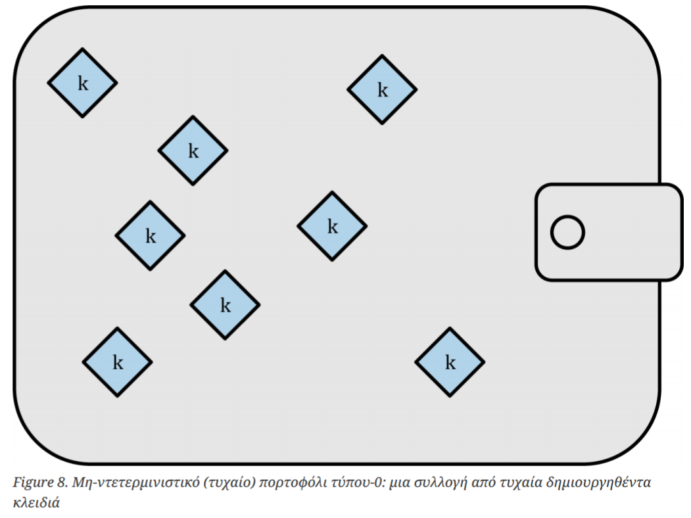
Figure 8. Μη-ντετερμινιστικό (τυχαίο) πορτοφόλι τύπου-0: μια συλλογή από τυχαία δημιουργηθέντα κλειδιά
Μνημονικός κωδικός λέξεων
Οι μνημονικοί κωδικοί (mnemonic codes) είναι ακολουθίες αγγλικών λέξεων που αντιπροσωπεύουν (κωδικοποιούν) έναν τυχαίο αριθμό που χρησιμοποιείται ως πηγή για να δημιουργήσει ένα ντετερμινιστικό πορτοφόλι.
Η ακολουθία των λέξεων είναι επαρκής για να δημιουργήσει ξανά την πηγή και από εκεί να δημιουργήσει ξανά το πορτοφόλι και όλα τα παράγωγα κλειδιά.
Μια εφαρμογή που υλοποιεί ντετερμινιστικά πορτοφόλια με μνημονικό κωδικό θα δείξει στο χρήστη μια σειρά από 12 έως 24 λέξεις κατά τη πρώτη δημιουργία του πορτοφολιού.
Αυτή η ακολουθία των λέξεων είναι το αντίγραφο ασφαλείας του πορτοφολιού και μπορεί να χρησιμοποιηθεί για την ανάκτηση και τη δημιουργία ξανά όλων των κλειδιών στην ίδια ή σε οποιαδήποτε άλλη συμβατή εφαρμογή πορτοφολιού.
Ο μνημονικός κωδικός λέξεων κάνει πιο εύκολη για τους χρήστες τη δημιουργία αντιγράφου ασφαλείας στα πορτοφόλια, επειδή σε σύγκριση με μια τυχαία ακολουθία αριθμών είναι ευκολότερος να διαβαστεί και να αντιγραφεί σωστά.
Οι μνημονικοί κώδικες ορίζονται στην 39η πρόταση βελτίωσης του bitcoin (BIP) (δείτε [bip0039]), επί του παρόντος σε κατάσταση σχεδιασμού.
Σημειώστε ότι η BIP0039 είναι ένα σχέδιο πρότασης και όχι ένα πρότυπο.
Συγκεκριμένα, υπάρχει ένα διαφορετικό πρότυπο, με ένα διαφορετικό σύνολο λέξεων, που χρησιμοποιούνται από το πορτοφόλι Electrum και είναι προγενέστερο του BIP0039.
Το BIP0039 χρησιμοποιείται από το πορτοφόλι Trezor και μερικά άλλα πορτοφόλια, αλλά έχει ασυμβατότητα με την υλοποίηση του Electrum.
Η BIP0039 ορίζει τη δημιουργία ενός μνημονικού κωδικού και της πηγής ως εξής:
1. Δημιουργήσε μια τυχαία ακολουθία (εντροπία) από 128 έως 256 μπιτ.
2. Δημιούργησε ένα άθροισμα ελέγχου (checksum) της τυχαίας ακολουθίας παίρνοντας τα πρώτα μερικά μπιτ του SHA256 κατακερματισμού του.
3. Προσθέστε το άθροισμα ελέγχου (checksum) στο τέλος της τυχαίας ακολουθίας.
4. Χώρισε την ακολουθία σε τμήματα των 11 μπιτ, χρησιμοποιώντας τα αυτά για τον ευρετηριασμό (index) σε ένα λεξικό 2048 προκαθορισμένων λέξεων.
5. Δημιουργήσε 12-24 λέξεις που αντιπροσωπεύουν τον μνημονικό κωδικό.
Ο Μνημονικοί κωδικοί: εντροπία και αριθμός λέξεων δείχνει τη σχέση μεταξύ του μεγέθους των δεδομένων της εντροπίας και τον αριθμό των μνημονικών κωδικών σε λέξεις.
| Entropy (bits) | Checksum (bits) | Entropy+checksum | Word length |
| 128 | 4 | 132 | 12 |
| 160 | 5 | 165 | 15 |
| 192 | 6 | 198 | 18 |
| 224 | 7 | 231 | 21 |
| 256 | 8 | 264 | 24 |
Ο μνημονικός κωδικός αντιπροσωπεύει 128 με 256 μπιτ, τα οποία χρησιμοποιούνται για την παραγωγή ενός μεγαλύτερου (512 μπιτ) αριθμού πηγής μέσω της χρήσης της συνάρτησης επέκτασης κλειδιών (key-stretching) PBKDF2.
Ο αριθμός της πηγής που προκύπτει ως αποτέλεσμα χρησιμοποιείται για τη δημιουργία ενός ντετερμινιστικού πορτοφολιού και όλων των παραγόμενων κλειδιών του.
Οι πίνακες 4-6 και 4-7 δείχνουν κάποια παραδείγματα μνημονικών κωδικών και των αριθμών πηγής που δημιουργούν.
| Entropy input (128 bits) | 0c1e24e5917779d297e14d45f14e1a1a |
| Mnemonic (12 words) | army van defense carry jealous true garbaglaim echo media make crunch |
| Seed (512 bits) | 3338a6d2ee71c7f28eb5b882159634cd46a898463e9d2d0980f8e80dfbba5b0fa0291e5fb88 8a599b44b93187be6ee3ab5fd3ead7dd646341b2cdb8d08d13bf7 |
| Entropy input (256 bits) | 2041546864449caff939d32d574753fe684d3c947c3346713dd8423e74abcf8c |
| Mnemonic (24 words) | cake apple borrow silk endorse fitness top deniaoil riot stay wolf luggage oxygen faint major edieasure invite love trap field dilemma oblige |
| Seed (512 bits) | 3972e432e99040f75ebe13a660110c3e29d131a2c808c7ee5f1631d0a977fcf473bee22fce540af281bf7cdeade0dd2c1c795bd02f1e4049e205a0158906c343 |
Ιεραρχικά ντετερμινιστικά πορτοφόλια (hierarchical deterministic wallets)(BIP0032/BIP0044)
Τα ντετερμινιστικά πορτοφόλια αναπτύχθηκαν ώστε να είναι εύκολη η άντληση πολλών κλειδιών από μία ενιαία «πηγή» (seed).
Η πιο προηγμένη μορφή ντετερμινιστικών πορτοφολιών είναι το ιεραρχικό ντετερμινιστικό πορτοφόλι (hierarchical deterministic wallet) ή πορτοφόλι HD, καθορισμένο από το πρότυπο BIP0032.
Τα ιεραρχικά ντετερμινιστικά πορτοφόλια περιέχουν κλειδιά που προκύπτουν σε μια δενδροειδή δομή δεδομένων (tree structure), έτσι ώστε το μητρικό (parent) κλειδί να μπορεί να δημιουργήσει μια ακολουθία κλειδιών παιδικών (children), καθένα από τα οποία μπορεί να δημιουργήσει μια ακολουθία ν-παιδικών (grandchildren) κλειδιών και ούτω καθεξής, σε μία άπειρη κλίμακα.
Αυτή η δενδροειδής δομή δεδομένων απεικονίζεται στην Τύπου-2 ιεραρχικό ντετερμινιστικό πορτοφόλι: ένα δέντρο (tree) κλειδιών που παράγεται από μία μόνο πηγή (seed).
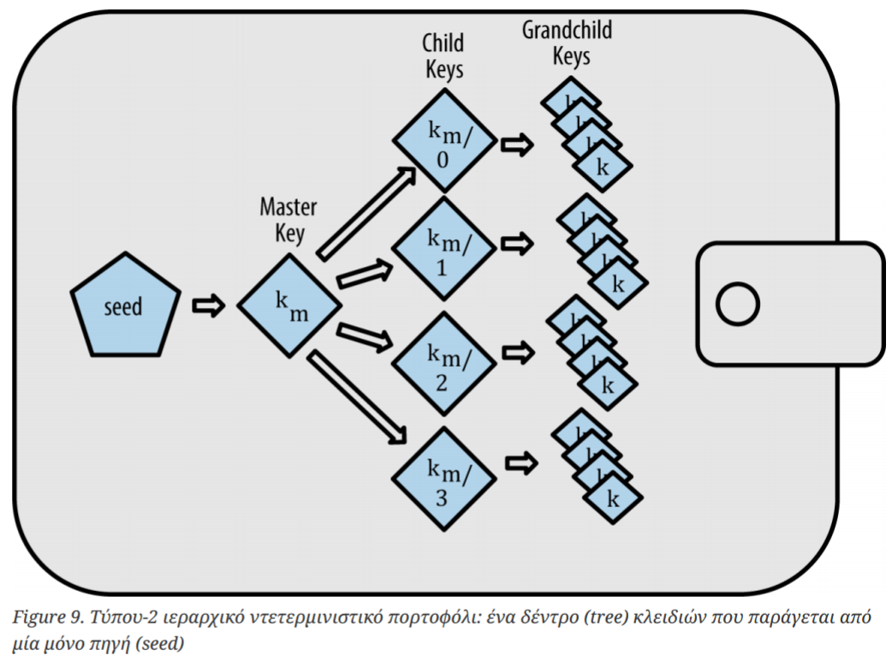
Figure 9. Τύπου-2 ιεραρχικό ντετερμινιστικό πορτοφόλι: ένα δέντρο (tree) κλειδιών που παράγεται από μία μόνο πηγή (seed)
TIP
Εάν υλοποιείτε ένα πορτοφόλι bitcoin, θα πρέπει να το κατασκευάσετε ως ένα HD πορτοφόλι σύμφωνα με τα πρότυπα BIP0032 και BIP0044.
Τα HD πορτοφόλια προσφέρουν δύο σημαντικά πλεονεκτήματα έναντι των τυχαίων (μη-ντετερμινιστικών) κλειδιών.
Πρώτον, η δενδροειδής δομή μπορεί να χρησιμοποιηθεί για να εκφράσει πρόσθετες οργανωτικές έννοιες, όπως όταν ένας συγκεκριμένος κλάδος (branch) θυγατρικών κλειδιών (subkeys) χρησιμοποιείται για να λαμβάνει εισερχόμενες πληρωμές και παράλληλα χρησιμοποιείται ένας διαφορετικός κλάδος για να λαμβάνει τα ρέστα (change) από τις εξερχόμενες πληρωμές.
Οι κλάδοι των κλειδιών μπορούν να χρησιμοποιηθούν επίσης και σε ένα εταιρικό περιβάλλον, κατανέμοντας διαφορετικούς κλάδους σε τμήματα, θυγατρικές εταιρίες, συγκεκριμένες λειτουργίες ή λογιστικές κατηγορίες.
Το δεύτερο πλεονέκτημα των πορτοφολιών HD είναι ότι οι χρήστες μπορούν να δημιουργήσουν μια ακολουθία δημοσίων κλειδιών χωρίς να έχουν πρόσβαση στα αντίστοιχα ιδιωτικά κλειδιά.
Αυτό επιτρέπει στα πορτοφόλια HD να χρησιμοποιούνται σε μη-ασφαλή διακομιστή και αποκλειστικά για λήψη, εκδίδοντας ένα διαφορετικό δημόσιο κλειδί για κάθε συναλλαγή.
Τα δημόσια κλειδιά δεν χρειάζεται να είναι προεγκατεστημένα ή να παράγονται εκ των προτέρων και παρ' όλα αυτά ο διακομιστής δεν έχει τα ιδιωτικά κλειδιά που μπορούν να ξοδέψουν τα κεφάλαια.
Δημιουργία πορτοφολιού HD από μία πηγή (seed)
Τα πορτοφόλια HD δημιουργούνται από μία μοναδική ρίζα πηγής (root seed), η οποία είναι ένας 128-,
256- ή 512 μπιτ τυχαίος αριθμός.
Οτιδήποτε άλλο στο πορτοφόλι HD είναι προερχόμενο ντετερμινιστικά από την ρίζα της πηγής, η οποία κάνει δυνατή τη συνολική αναδημιουργία του HD πορτοφολιού από αυτήν την πηγή σε οποιοδήποτε άλλο συμβατό πορτοφόλι HD.
Αυτό καθιστά εύκολη τη δημιουργία αντίγραφου ασφαλείας, την αποκατάσταση, την εξαγωγή και την εισαγωγή HD πορτοφολιών που περιέχουν χιλιάδες ή ακόμα και εκατομμύρια κλειδιά, απλά μεταφέροντας μόνο την ρίζα της πηγής.
Η ρίζα της πηγής τις περισσότερες φορές αντιπροσωπεύεται από μία μνημονική ακολουθία λέξεων (mnemonic word sequence), όπως περιγράψαμε στην προηγούμενη ενότητα Μνημονικός κωδικός λέξεων, για να είναι ευκολότερο στους ανθρώπους να την αντιγράφουν και να την αποθηκεύουν.
Στην Δημιουργώντας κύρια κλειδιά και κωδικό αλυσίδας από μία ρίζα πηγής φαίνεται πως δημιουργείται το κύριο κλειδί (master key) και ο κύριος κωδικός αλυσίδας (master chain code) για ένα πορτοφόλι HD.
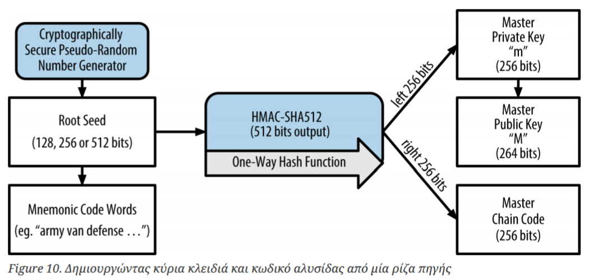
Figure 10. Δημιουργώντας κύρια κλειδιά και κωδικό αλυσίδας από μία ρίζα πηγής
Η ρίζα της πηγής είναι η είσοδος στον αλγόριθμο HMAC-SHA512 και ο κατακερματισμός που προκύπτει ως αποτέλεσμα χρησιμοποιείται για τη δημιουργία ενός κύριου ιδιωτικού κλειδιού (master private key) (m) και ενός κύριου κωδικού αλυσίδας (master chain code).
Από το κύριο ιδιωτικό κλειδί (m) δημιουργείται στη συνέχεια ένα αντίστοιχο κύριο δημόσιο κλειδί (Μ), χρησιμοποιώντας την κανονική διαδικασία πολλαπλασιασμού ελλειπτικών καμπυλών m * G που είδαμε νωρίτερα σε αυτό το κεφάλαιο.
Ο κωδικός αλυσίδας χρησιμοποιείται για την εισαγωγή εντροπίας στη λειτουργία που δημιουργεί τα παιδικά κλειδιά από τα μητρικά κλειδιά, όπως θα δούμε στην επόμενη ενότητα.
Παραγωγή ιδιωτικού παιδικού κλειδιού (private child key derivation)
Τα ιεραρχικά ντετερμινιστικά πορτοφόλια χρησιμοποιούν μια συνάρτηση παραγωγής παιδικών κλειδιών (child key derivation) -ή CDK- για να αντλούν παιδικά κλειδιά από μητρικά κλειδιά.
Οι συναρτήσεις παραγωγής παιδικών κλειδιών (CKD) βασίζονται σε μία μονόδρομη συνάρτηση κατακερματισμού που συνδυάζει:
• Ένα μητρικό ιδιωτικό ή δημόσιο κλειδί (ECDSA ασυμπίεστο κλειδί)
• Μία πηγή που ονομάζεται κωδικός αλυσίδας (chain code) μεγέθους 256 μπιτ
• Έναν αριθμοδείκτη (index) (32 μπιτ)
Ο κωδικός αλυσίδας χρησιμοποιείται για να εισάγουμε φαινομενικά τυχαία δεδομένα στη διαδικασία, έτσι ώστε ο αριθμοδείκτης να μην μπορεί να παράξει άλλα παιδικά κλειδιά.
Έτσι, έχοντας ένα παιδικό κλειδί δεν είναι δυνατόν να βρούμε τα αδέρφια του (siblings), εκτός και αν έχουμε μαζί και τον κωδικό αλυσίδας.
Ο αρχικός κωδικός αλυσίδας (στη ρίζα του δέντρου) κατασκευάζεται από τυχαία δεδομένα, ενώ οι επόμενοι κωδικοί αλυσίδας προέρχονται από τον κάθε μητρικό κωδικό αλυσίδας αντίστοιχα.
Αυτά τα τρία στοιχεία ενώνονται και υπόκεινται σε κατακερματισμό ώστε να παράγουν παιδικά κλειδιά, ως ακολούθως.
Το μητρικό δημόσιο κλειδί, ο κωδικός αλυσίδας και ο αριθμοδείκτης συνδυάζονται και κατακερματίζονται με τον αλγόριθμο HMAC-SHA512 για να παραχθεί ένας κατακερματισμός 512 μπιτ.
Ο κατακερματισμός που προκύπτει χωρίζεται σε δύο ίσα μέρη.
Το δεξί ήμισυ των 256 μπιτ της εξόδου του κατακερματισμού γίνεται ο κωδικός αλυσίδας για το παιδικό.
Το αριστερό ήμισυ των 256 μπιτ του κατακερματισμού και του αριθμοδείκτη προστίθεται στο μητρικό ιδιωτικό κλειδί για να παραχθεί το παιδικό ιδιωτικό κλειδί.
Στην Επεκτείνοντας ένα μητρικό ιδιωτικό κλειδί για τη δημιουργία ενός παιδικού ιδιωτικού κλειδιού, απεικονίζεται η περίπτωση του αριθμοδείκτη να είναι 0 για να παραχθεί το μηδενικό (πρώτο στην μέτρηση του αριθμοδείκτη) παιδικό από το μητρικό κλειδί.
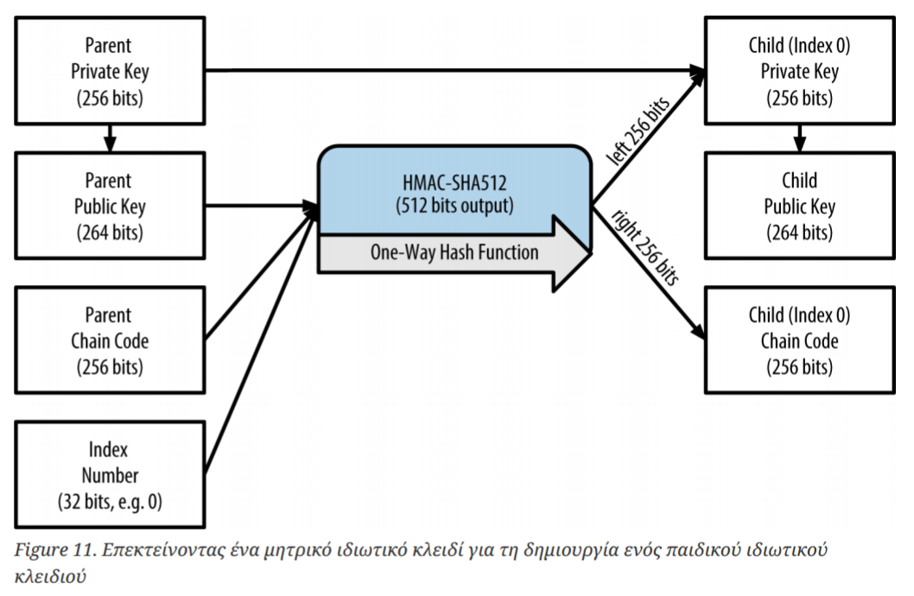
Figure 11. Επεκτείνοντας ένα μητρικό ιδιωτικό κλειδί για τη δημιουργία ενός παιδικού ιδιωτικού κλειδιού
Η αλλαγή του αριθμοδείκτη μας επιτρέπει να επεκτείνουμε το μητρικό και να δημιουργήσουμε τα άλλα παιδικά στην ακολουθία.
Για παράδειγμα, Παιδί 0, Παιδί 1, Παιδί 2 κ.ο.κ.
Κάθε μητρικό κλειδί μπορεί να έχει 2 δισεκατομμύρια παιδικά κλειδιά.
Επαναλαμβάνοντας τη διαδικασία ένα επίπεδο κάτω στο δέντρο, κάθε παιδικό μπορεί με τη σειρά του να γίνει μητρικό και να δημιουργήσει τα δικά του παιδιά, σε έναν άπειρο αριθμό γενεών.
Χρησιμοποιώντας τα παραγόμενα παιδικά κλειδιά
Τα παιδικά ιδιωτικά κλειδιά δεν ξεχωρίζουν από τα μη-ντετερμινιστικά (τυχαία) κλειδιά.
Επειδή η συνάρτηση παραγωγής τους είναι μονόδρομη, το παιδικό κλειδί δεν μπορεί να χρησιμοποιηθεί ούτε για να βρει το μητρικό κλειδί αλλά ούτε και για τα αδέρφια του.
Εάν έχετε το νοστό παιδικό, δεν μπορείτε να βρείτε τα αδέλφια του, όπως το ν-1 παιδικό ή το ν+1 παιδικό ή οποιαδήποτε άλλα παιδικά που αποτελούν μέρος της ακολουθίας.
Μόνο το μητρικό κλειδί και ο κωδικός αλυσίδας μπορούν να παράξουν όλα τα παιδικά.
Χωρίς τον παιδικό κωδικό αλυσίδας, το παιδικό κλειδί δε μπορεί να χρησιμοποιηθεί για να παράξει ν-παιδικά (grandchildren) κλειδιά.
Χρειάζεται τόσο το παιδικό ιδιωτικό κλειδί όσο και ο παιδικός κωδικός αλυσίδας για να ξεκινήσετε ένα καινούριο κλάδο και να παραχθούν ν-παιδικά κλειδιά.
Δηλαδή σε τι μπορεί να χρησιμοποιηθεί το παιδικό ιδιωτικό κλειδί από μόνο του;
Μπορεί να χρησιμοποιηθεί για να κάνει ένα δημόσιο κλειδί και μια διεύθυνση bitcoin.
Στη συνέχεια, μπορεί να χρησιμοποιηθεί για υπογραφή συναλλαγών για να μπορεί να ξοδέψει οτιδήποτε πληρώνεται σε αυτή τη διεύθυνση.
TIP
Ένα παιδικό ιδιωτικό κλειδί, το αντίστοιχο δημόσιο κλειδί και η διεύθυνση bitcoin δεν ξεχωρίζουν από κλειδιά και διευθύνσεις που δημιουργούνται τυχαία.
Το γεγονός όμως ότι είναι μέρος μιας ακολουθίας δεν είναι πουθενά ορατό εκτός της λειτουργίας του πορτοφολιού HD που τα δημιούργησε.
Μόλις δημιουργηθούν, λειτουργούν επακριβώς όπως τα «κανονικά» κλειδιά.
Επεκταμένα κλειδιά (extended keys)
Όπως είδαμε προηγουμένως, η συνάρτηση παραγωγής κλειδιών μπορεί να χρησιμοποιηθεί για να δημιουργήσει παιδικά σε οποιοδήποτε επίπεδο του δέντρου με βάση τρεις εισόδους: ένα κλειδί, έναν κωδικό αλυσίδας και τον αριθμοδείκτη του επιθυμητού παιδικού.
Τα δύο βασικά συστατικά είναι το κλειδί και ο κωδικός αλυσίδας και συνδυασμένα αυτά τα δύο ονομάζονται επεκταμένο κλειδί (extended key).
Ο όρος «επεκταμένο κλειδί» θα μπορούσε επίσης να θεωρηθεί ως «επεκτάσιμο (extensible)
κλειδί», επειδή ένα τέτοιο κλειδί μπορεί να χρησιμοποιηθεί για να παράξει παιδικά κλειδιά.
Τα επεκταμένα κλειδιά αποθηκεύονται και συμβολίζονται ως συνένωση του κλειδιού 256 μπιτ και του κωδικού αλυσίδας 256 μπιτ σε μια ακολουθία 512 μπιτ.
Υπάρχουν δύο τύποι επεκταμένων κλειδιών.
Ένα επεκταμένο ιδιωτικό κλειδί είναι ο συνδυασμός ενός ιδιωτικού κλειδιού και του κωδικού αλυσίδας και μπορεί να χρησιμοποιηθεί για να αντλήσει παιδικά ιδιωτικά κλειδιά (και από αυτά, παιδικά δημόσια κλειδιά).
Ένα επεκταμένο δημόσιο κλειδί είναι ένα δημόσιο κλειδί και κωδικός αλυσίδας, το οποίο μπορεί να χρησιμοποιηθεί για να δημιουργήσει παιδικά δημόσια κλειδιά, όπως περιγράφεται στο Δημιουργώντας ένα δημόσιο κλειδί.
Σκεφτείτε το επεκταμένο κλειδί ως τη ρίζα ενός κλάδου στη δενδροειδή δομή δεδομένων του πορτοφολιού HD.
Με τη ρίζα του κλάδου, μπορείτε να παράξετε και το υπόλοιπο του κλάδου.
Το επεκταμένο ιδιωτικό κλειδί μπορεί να δημιουργήσει έναν πλήρη κλάδο, ενώ το επεκταμένο δημόσιο κλειδί μπορεί να δημιουργήσει μόνο έναν κλάδο δημοσίων κλειδιών.
TIP
Ένα επεκταμένο κλειδί αποτελείται από ένα ιδιωτικό ή δημόσιο κλειδί και τον κωδικό αλυσίδας. Ένα επεκταμένο κλειδί μπορεί να δημιουργήσει παιδικά κλειδιά, δημιουργώντας τον δικό του κλάδο στη δενδροειδή δομή δεδομένων.
Η κοινή χρήση του επεκταμένου κλειδιού δίνει πρόσβαση σε ολόκληρο τον κλάδο.
Τα επεκταμένα κλειδιά κωδικοποιούνται χρησιμοποιώντας Base58Check κωδικοποίηση, για να εισάγονται και εξάγονται εύκολα μεταξύ των BIP0032 συμβατών πορτοφολιών.
Η Base58Check κωδικοποίηση για τα επεκταμένα κλειδιά είναι μια ειδική έκδοση για τον αριθμό που χρησιμοποιεί, ώστε να παράγει τα προθέματα "xprv" και "xpub" όταν κωδικοποιούνται σε Base58 χαρακτήρες για να είναι εύκολα αναγνωρίσιμα.
Επειδή το επεκταμένο κλειδί είναι 512 ή 513 μπιτ, είναι επίσης πολύ μακρύτερο απ' ότι άλλες Base58Check-κωδικοποιημένες σειρές αριθμών που έχουμε δει προηγουμένως.
Εδώ είναι ένα παράδειγμα ενός επεκταμένου ιδιωτικού κλειδιού, κωδικοποιημένο σε Base58Check:
xprv9tyUQV64JT5qs3RSTJkXCWKMyUgoQp7F3hA1xzG6ZGu6u6Q9VMNjGr67Lctvy5P8oyaYAL9CAWrUE9i6GoNMKUga5biW6Hx4tws2six3b9c
Εδώ είναι το αντίστοιχο επεκταμένο δημόσιο κλειδί, κωδικοποιημένο επίσης σε Base58Check:
xpub67xpozcx8pe95XVuZLHXZeG6XWXHpGq6Qv5cmNfi7cS5mtjJ2tgypeQbBs2UAR6KECeeMVKZBPLrtJunSDMseyLXhRgPxdp14sk9tJPW9
Παραγωγή δημόσιου παιδικού κλειδιού (public child key derivation)
Όπως αναφέρθηκε προηγουμένως, ένα πολύ χρήσιμο χαρακτηριστικό των ιεραρχικών ντετερμινιστικών πορτοφολιών είναι η ικανότητα να παράγουμε δημόσια παιδικά κλειδιά από δημόσια μητρικά κλειδιά, χωρίς να έχουμε τα ιδιωτικά κλειδιά. Αυτό μας δίνει δύο τρόπους για να αντλήσουμε ένα δημόσιο παιδικό κλειδί: είτε από το ιδιωτικό παιδικό κλειδί, είτε απευθείας από το δημόσιο μητρικό κλειδί.
Ένα επεκταμένο δημόσιο κλειδί μπορεί να χρησιμοποιηθεί, ως εκ τούτου, για να αντλήσει όλα τα δημόσια κλειδιά (και μόνο τα δημόσια κλειδιά) στον εν λόγω κλάδο του HD πορτοφολιού.
Αυτή η συντόμευση μπορεί να χρησιμοποιηθεί για την παραγωγή πολύ ασφαλούς λογισμικού μόνο για δημόσια κλειδιά, όπου ένας διακομιστής ή εφαρμογή έχει ένα αντίγραφο ενός επεκταμένου δημόσιου κλειδιού και κανένα απολύτως ιδιωτικό κλειδί.
Αυτό το είδος της εγκατάστασης μπορεί να παράγει έναν άπειρο αριθμό δημοσίων κλειδιών και διευθύνσεων bitcoin, αλλά δεν μπορεί να ξοδέψει τίποτα από τα χρήματα που στέλνονται σε αυτές τις διευθύνσεις.
Εν τω μεταξύ, σε έναν άλλον, πιο ασφαλή διακομιστή, το επεκταμένο ιδιωτικό κλειδί μπορεί να παράξει όλα τα αντίστοιχα ιδιωτικά κλειδιά για την υπογραφή συναλλαγών και να ξοδέψει τα χρήματα.
Μια κοινή εφαρμογή αυτής της λύσης είναι η εγκατάσταση ενός επεκταμένου δημοσίου κλειδιού σε έναν διακομιστή ιστού (web server) που εξυπηρετεί μια εφαρμογή ηλεκτρονικού εμπορίου.
Ο διακομιστής ιστού μπορεί να χρησιμοποιήσει τη συνάρτηση παραγωγής δημοσίου κλειδιού για να δημιουργήσει μια νέα διεύθυνση bitcoin για κάθε συναλλαγή (για παράδειγμα, ένα καλάθι αγορών του πελάτη).
Ο διακομιστής ιστού δεν θα έχει κανένα ιδιωτικό κλειδί που θα είναι ευάλωτο σε κλοπές.
Χωρίς τα πορτοφόλια HD, ο μόνος τρόπος για να γίνει αυτό είναι με τη δημιουργία χιλιάδων διευθύνσεων bitcoin σε ξεχωριστό ασφαλή διακομιστή και προ-εγκατάσταση τους, στη συνέχεια, στο διακομιστή ηλεκτρονικού εμπορίου.
Η προσέγγιση αυτή είναι περίπλοκη και απαιτεί συνεχή συντήρηση για να εξασφαλιστεί ότι ο διακομιστής ηλεκτρονικού εμπορίου δεν θα μένει χωρίς κλειδιά.
Μια άλλη κοινή εφαρμογή αυτής της λύσης είναι για αποθήκευση εκτός υπολογιστή (cold storage) ή για hardware πορτοφόλια.
Σε αυτό το σενάριο, το επεκταμένο ιδιωτικό κλειδί μπορεί να αποθηκεύεται σε ένα χάρτινο πορτοφόλι ή συσκευή hardware (όπως ένα hardware πορτοφόλι Trezor), ενώ το επεκταμένο δημόσιο κλειδί μπορεί να διατηρείται συνδεδεμένο στο διαδίκτυο.
Ο χρήστης είναι έτσι ελεύθερος να δημιουργεί όσες διευθύνσεις «μόνο για λήψη» επιθυμεί, ενώ τα ιδιωτικά κλειδιά είναι αποθηκευμένα με ασφάλεια εκτός σύνδεσης.
Για να ξοδέψει τα χρηματικά ποσά ο χρήστης, μπορεί να χρησιμοποιεί το επεκταμένο ιδιωτικό κλειδί σε έναν εκτός σύνδεσης για υπογραφές bitcoin πελάτη ή να υπογράφει συναλλαγές στη hardware wallet συσκευή (π.χ., Trezor).
Η Μητρικό κλειδί που επεκτείνεται για δημιουργία ενός παιδικού δημοσίου κλειδιού απεικονίζει το μηχανισμό που ένα μητρικό δημόσιο κλειδί επεκτείνεται ώστε να αντλήσει παιδικά δημόσια κλειδιά.
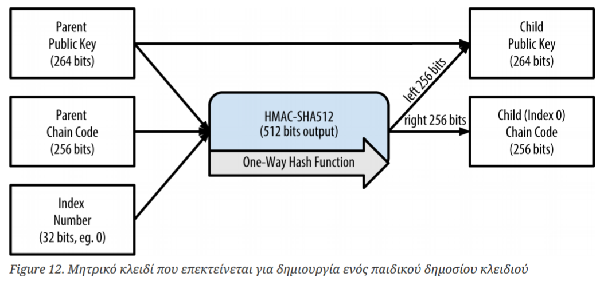
Figure 12. Μητρικό κλειδί που επεκτείνεται για δημιουργία ενός παιδικού δημοσίου κλειδιού
Δύσκολη παραγωγή παιδικού κλειδιού (hardened child key derivation)
Η δυνατότητα για παραγωγή ενός κλάδου δημοσίων κλειδιών από ένα επεκταμένο δημόσιο κλειδί είναι πολύ χρήσιμη, αλλά έρχεται με ένα δυνητικό κίνδυνο.
Η πρόσβαση σε ένα επεκταμένο δημόσιο κλειδί δεν παρέχει πρόσβαση σε παιδικά ιδιωτικά κλειδιά.
Ωστόσο, επειδή το επεκταμένο δημόσιο κλειδί περιέχει τον κωδικό αλυσίδας (chain code), εάν ένα παιδικό ιδιωτικό κλειδί είναι γνωστό -ή με κάποιο τρόπο διαρρεύσει- μπορεί να χρησιμοποιηθεί με τον κωδικό αλυσίδας για να αντλήσει όλα τα άλλα παιδικά ιδιωτικά κλειδιά.
Εάν ένα παιδικό ιδιωτικό κλειδί διαρρεύσει, μαζί με τον μητρικό κωδικό αλυσίδας, όλα τα ιδιωτικά κλειδιά όλων των παιδικών αποκαλύπτονται.
Ακόμη χειρότερα, το παιδικό ιδιωτικό κλειδί μαζί με έναν μητρικό κωδικό αλυσίδας μπορεί να χρησιμοποιηθεί για να εξάγει το μητρικό ιδιωτικό κλειδί.
Για την αντιμετώπιση αυτού του κινδύνου, τα πορτοφόλια HD χρησιμοποιούν μια εναλλακτική λειτουργία που ονομάζεται δύσκολη παραγωγή παιδικού κλειδιού (hardened child key derivation), η οποία «σπάει» τη σχέση μεταξύ του μητρικού δημοσίου κλειδιού και του κώδικα αλυσίδας.
Η δύσκολη παραγωγή παιδικού κλειδιού χρησιμοποιεί το μητρικό ιδιωτικό κλειδί για να αντλήσει τον παιδικό κωδικό αλυσίδας, αντί του μητρικού δημοσίου κλειδιού.
Αυτό δημιουργεί ένα «τείχος» στην ακολουθία μητρικού/παιδικού, με έναν κωδικό αλυσίδας που δεν μπορεί να χρησιμοποιηθεί για να θέσει σε κίνδυνο ένα μητρικό ή ένα αδελφό ιδιωτικό κλειδί.
Η λειτουργία δύσκολης παραγωγής φαίνεται σχεδόν ταυτόσημη με την κανονική παραγωγή παιδικού ιδιωτικού κλειδιού, εκτός από ότι το μητρικό ιδιωτικό κλειδί χρησιμοποιείται ως είσοδος για την συνάρτηση κατακερματισμού, αντί του μητρικού δημόσιου κλειδιού, όπως φαίνεται στο διάγραμμα στην Δύσκολη παραγωγή παιδικού κλειδιού· παραλείπεται το μητρικό δημόσιο κλειδί.
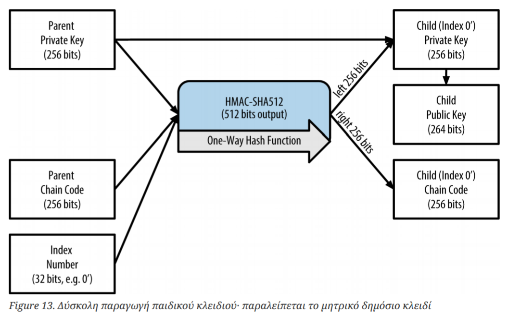
Figure 13. Δύσκολη παραγωγή παιδικού κλειδιού· παραλείπεται το μητρικό δημόσιο κλειδί
Όταν χρησιμοποιείται η δύσκολη παραγωγή παιδικού κλειδιού, το παιδικό ιδιωτικό κλειδί που προκύπτει ως αποτέλεσμα και ο κωδικός αλυσίδας είναι εντελώς διαφορετικά από αυτό που θα προέκυπτε από την κανονική λειτουργία παραγωγής.
Ο «κλάδος» των κλειδιών που προκύπτει ως αποτέλεσμα μπορεί να χρησιμοποιηθεί για την παραγωγή επεκταμένων δημοσίων κλειδιών που δεν έχουν τρωτά σημεία, επειδή ο κωδικός αλυσίδας που περιέχουν δεν μπορεί να εκμεταλλευθεί για να αποκαλύψει τυχόν ιδιωτικά κλειδιά.
Η δύσκολη παραγωγή, ως εκ τούτου, χρησιμοποιείται για να δημιουργήσει ένα «κενό» στη δενδροειδή δομή πάνω από το επίπεδο όπου χρησιμοποιούνται τα επεκταμένα δημόσια κλειδιά.
Με απλά λόγια, εάν θέλετε να χρησιμοποιήσετε την ευκολία ενός επεκταμένου δημοσίου κλειδιού για την άντληση κλάδων δημοσίων κλειδιών, χωρίς να εκθέσετε τον εαυτό σας στον κίνδυνο διαρροής του κωδικού αλυσίδας, θα πρέπει να τα δημιουργήσετε από ένα δύσκολο μητρικό, αντί για ένα κανονικό μητρικό.
Ως βέλτιστη πρακτική, τα παιδικά του επιπέδου-1 των κύριων κλειδιών (master keys) προέρχονται πάντα μέσω δύσκολης παραγωγής για την πρόληψη του κινδύνου διαρροής των κύριων κλειδιών.
Αριθμοδείκτες για κανονική και δύσκολη παραγωγή κλειδιών
Ο αριθμοδείκτης (index number) που χρησιμοποιείται στη συνάρτηση της παραγωγής είναι ένας 32 μπιτ ακέραιος αριθμός.
Για την εύκολη διάκριση μεταξύ κλειδιών που έχουν παραχθεί μέσω κανονικής (normal) παραγωγής έναντι κλειδιών που έχουν παραχθεί μέσω δύσκολης (hardened) παραγωγής, αυτός ο αριθμοδείκτης χωρίζεται σε δύο σειρές.
Αριθμοδείκτες μεταξύ 0 και 231 -1 (0x0 έως 0x7FFFFFFF) χρησιμοποιούνται μόνο για κανονική παραγωγή, ενώ αριθμοδείκτες μεταξύ 231 και 232 -1 (0x80000000 έως 0xFFFFFFFF) χρησιμοποιούνται μόνο για δύσκολη παραγωγή.
Ως εκ τούτου, εάν ο αριθμοδείκτης είναι μικρότερος από 231 και αυτό σημαίνει ότι το παιδικό κλειδί είναι κανονικό, ενώ αν ο αριθμοδείκτης είναι ίσος ή μεγαλύτερος από 231, το παιδικό κλειδί προέρχεται από δύσκολη παραγωγή.
Για να είναι ο αριθμοδείκτης πιο εύκολος στην ανάγνωση του, ο αριθμοδείκτης για δύσκολη παραγωγή αρχίζει από το μηδέν, αλλά με έναν τόνο.
Το πρώτο κανονικό παιδικό κλειδί, ως εκ τούτου, εμφανίζεται ως 0, ενώ το πρώτο παιδικό κλειδί με δύσκολη παραγωγή (αριθμοδείκτης 0x80000000) εμφανίζεται ως 0'.
Στην ακολουθία, τότε, το δεύτερο παιδικό κλειδί από δύσκολη παραγωγή θα έχει αριθμοδείκτη 0x80000001 και θα εμφανίζεται ως 1' και ούτω καθεξής.
Όταν σε ένα πορτοφόλι HD ο αριθμοδείκτης είναι i', αυτό υποδεικνύει ότι 231+i.
Αναγνωριστικό κλειδιού στο HD πορτοφόλι (διαδρομή)
Τα κλειδιά σε ένα πορτοφόλι HD αναγνωρίζονται χρησιμοποιώντας μία «διαδρομή» (path), όπου κάθε επίπεδο της δενδροειδούς δομής διαχωρίζεται από μία κάθετο (/) (δείτε Παραδείγματα διαδρομής σε πορτοφόλια HD).
Τα ιδιωτικά κλειδιά που προέρχονται από το κύριο ιδιωτικό κλειδί (master private key) ξεκινούν με «m», ενώ τα δημόσια κλειδιά που προέρχονται από το κύριο δημόσιο κλειδί (master public key) ξεκινούν με «Μ».
Ως εκ τούτου, το πρώτο παιδικό ιδιωτικό κλειδί του κύριου ιδιωτικού κλειδιού είναι το m/0, το πρώτο παιδικό δημόσιο κλειδί είναι το Μ/0, το δεύτερο ν-παιδικό (grandchild) κλειδί είναι το m/0/1 και ούτω καθεξής.
Η «καταγωγή» ενός κλειδιού διαβάζεται από δεξιά προς τα αριστερά, μέχρι να φτάσετε στο κύριο κλειδί από το οποίο προήλθε.
Για παράδειγμα, το αναγνωριστικό m/x/y/z περιγράφει το κλειδί που είναι το z παιδικό του κλειδιού m/x/y, το οποίο είναι το y παιδικό του κλειδιού m/x, το οποίο είναι το x παιδικό του κλειδιού m.
| HD path | Key described |
| m/0 | The first (0) child private key from the masterivate key (m) |
| m/0/0 | The first grandchild private key of the first child (m/0) |
| m/0'/0 | The first normal grandchild of the first hardenehild (m/0') |
| m/1/0 | The first grandchild private key of the seconhild (m/1) |
| M/23/17/0/0 | The first great-great-grandchild public key of thirst great-grandchild of the 18th grandchild of the 24th child |
Περιήγηση στη δενδροειδή δομή του πορτοφολιού HD
Η δενδροειδής δομή των πορτοφολιών HD προσφέρει τεράστια ευελιξία.
Κάθε μητρικό επεκταμένο κλειδί μπορεί να έχει 4 δισεκατομμύρια παιδικά:
2 δισεκατομμύρια κανονικά και 2 δισεκατομμύρια δύσκολης παραγωγής.
Κάθε ένα από αυτά τα παιδικά μπορεί να έχει άλλα 4 δισεκατομμύρια παιδικά και ούτω καθεξής.
Το δέντρο μπορεί να είναι όσο βαθύ θέλετε, με έναν άπειρο αριθμό γενεών.
Με όλη αυτή την ευελιξία, ωστόσο, καθίσταται πολύ δύσκολη η περιήγηση σε αυτό το άπειρο δέντρο.
Είναι, επίσης, ιδιαίτερα δύσκολο να μεταφέρετε πορτοφόλια HD ανάμεσα σε υλοποιήσεις, διότι οι δυνατότητες για εσωτερική οργάνωση σε κλάδους και υπό-κλάδους είναι ατελείωτες.
Δύο προτάσεις βελτίωσης του bitcoin (BIP) προσφέρουν μια λύση σε αυτή την πολυπλοκότητα, δημιουργώντας κάποια προτεινόμενα πρότυπα για τη δενδροειδή δομή των πορτοφολιών HD.
Η BIP0043 προτείνει τη χρήση του πρώτου παιδικού αριθμοδείκτη δύσκολης παραγωγής ως ένα ειδικό αναγνωριστικό που σηματοδοτεί τον «σκοπό» της δεντρικής δομής.
Με βάση την BIP0043, ένα πορτοφόλι HD θα πρέπει να χρησιμοποιεί μόνο ένα επιπέδου-1 κλάδο της δενδροειδούς δομής, με τον αριθμοδείκτη να καθορίζει τη δομή, το όνομα και τον σκοπό του υπόλοιπου δέντρου.
Για παράδειγμα, ένα πορτοφόλι HD χρησιμοποιώντας μόνο τον κλάδο m/i'/ έχει σκοπό να υποδηλώσει ένα συγκεκριμένο σκοπό, ο οποίος προσδιορίζεται από τον αριθμοδείκτη "i".
Εκτείνοντας αυτήν την προδιαγραφή, η BIP0044 προτείνει μια δομή «multiaccount» (πολλαπλών λογαριασμών) ως αριθμός «σκοπού» 44' μέσω BIP0043.
Όλα τα πορτοφόλια HD ακολουθώντας τη δομή BIP0044 προσδιορίζονται από το γεγονός ότι χρησιμοποιείται μόνο ένας κλάδος του δέντρου: m/44'/.
Η BIP0044 καθορίζει τη δομή και αποτελείται από πέντε προκαθορισμένα επίπεδα στο δέντρο:
m / purpose' / coin_type' / account' / change / address_index
Το πρώτο επίπεδο, του «σκοπού» (purpose) είναι πάντα το 44'.
Το δεύτερο επίπεδο, «τύπος_νομίσματος» (coin_type), καθορίζει τον τύπο του κρυπτονομίσματος, καθιστώντας δυνατή την ύπαρξη πορτοφολιού HD με πολλαπλά κρυπτονομίσματα, όπου κάθε νόμισμα έχει το δικό του υπό-δέντρο κάτω από το δεύτερο επίπεδο.
Υπάρχουν τρία νομίσματα που ορίζονται ως τώρα: το Bitcoin είναι m/44'/0, το Bitcoin Testnet (δοκιμαστικό δίκτυο) είναι m/44'/1'· και το Litecoin είναι m/44'/2'.
Το τρίτο επίπεδο του δέντρου είναι το «λογαριασμός» (account), το οποίο επιτρέπει στους χρήστες να χωρίζουν τα πορτοφόλια τους σε ξεχωριστούς λογαριασμούς, για λογιστικούς ή οργανωτικούς σκοπούς.
Για παράδειγμα, ένα πορτοφόλι HD ενδέχεται να περιέχει δύο «λογαριασμούς» bitcoin:
m/44'/0'/0' και m/44'/0'/1'.
Καθένας από τους λογαριασμούς είναι η ρίζα του δικού του υπό-δέντρου.
Στο τέταρτο επίπεδο, «ρέστα» (change), ένα πορτοφόλι HD διαθέτει δύο υπό-δέντρα· ένα για τη δημιουργία διευθύνσεων λήψης και ένα για τη δημιουργία διευθύνσεων επιστροφής.
Σημειώστε ότι ενώ τα προηγούμενα επίπεδα χρησιμοποιούν λειτουργία δύσκολης παραγωγής, το επίπεδο αυτό χρησιμοποιεί κανονική παραγωγή.
Αυτό γίνεται για να επιτρέψει αυτό το επίπεδο του δέντρου να εξάγει επεκταμένα δημόσια κλειδιά για χρήση σε μη ασφαλή περιβάλλοντα.
Οι διευθύνσεις προς χρήση προέρχονται από το HD πορτοφόλι ως παιδικές σε αυτό το επίπεδο, καθιστώντας το πέμπτο επίπεδο του δέντρου το «ευρετήριο_διεύθυνσης» (adress_index).
Για παράδειγμα, η τρίτη διεύθυνση λήψης για πληρωμές bitcoin στον κύριο λογαριασμό θα είναι M/44'/0'/0'/0/2.
Ο Παραδείγματα δομής HD πορτοφολιού BIP0044 δείχνει μερικά ακόμη παραδείγματα.
| HD path | Key described |
| M/44'/0'/0'/0/2 | The third receiving public key for the primaritcoin account |
| M/44'/0'/3'/1/14 | The fifteenth change-address public key for the
fourth bitcoin account |
| m/44'/2'/0'/0/1 | The second private key in the Litecoin main
account, for signing transactions |
Πειραματισμός με το πορτοφόλι HD χρησιμοποιώντας τον Bitcoin Εξερευνητή
Χρησιμοποιώντας το εργαλείο γραμμής εντολών Bitcoin Εξερευνητής που εισάγαμε στο [ch03_bitcoin_client], μπορείτε να πειραματιστείτε με τη δημιουργία επεκταμένων BIP0032 ντετερμινιστικών κλειδιών, καθώς και με την εμφάνιση τους σε διάφορες μορφές:
$ bx seed | bx hd-new > m # create a new master private key from a seed and store in file "m"
$ cat m # show the master extended private key
xprv9s21ZrQH143K38iQ9Y5p6qoB8C75TE71NfpyQPdfGvzghDt39DHPFpovvtWZaRgY5uPwV7RpEgHs7cvdgfiSjLjjbuGKGcjRyU7RGGSS8Xa
$ cat m | bx hd-public # generate the M/0 extended public key
xpub67xpozcx8pe95XVuZLHXZeG6XWXHpGq6Qv5cmNfi7cS5mtjJ2tgypeQbBs2UAR6KECeeMVKZBPLrtJunSDMstweyLXhRgPxdp14sk9tJPW9
$ cat m | bx hd-private # generate the m/0 extended private key
xprv9tyUQV64JT5qs3RSTJkXCWKMyUgoQp7F3hA1xzG6ZGu6u6Q9VMNjGr67Lctvy5P8oyaYAL9CAWrUE9i6GoNMKUga5biW6Hx4tws2six3b9c
$ cat m | bx hd-private | bx hd-to-wif # show the private key of m/0 as a WIF
L1pbvV86crAGoDzqmgY85xURkz3c435Z9nirMt52UbnGjYMzKBUN
$ cat m | bx hd-public | bx hd-to-address # show the bitcoin address of M/0
1CHCnCjgMNb6digimckNQ6TBVcTWBAmPHK
$ cat m | bx hd-private | bx hd-private --index 12 --hard | bx hd-private --index 4 # generate m/0/12'/4
xprv9yL8ndfdPVeDWJenF18oiHguRUj8jHmVrqqD97YQHeTcR3LCeh53q5PXPkLsy2kRaqgwoS6YZBLatRZRyUeAkRPe1kLR1P6Mn7jUrXFquUt
Σύνθετα Κλειδιά και Διευθύνσεις (advanced keys & addresses)
Στις ακόλουθες ενότητες θα εξετάσουμε σύνθετες (advanced) μορφές κλειδιών και διευθύνσεων, όπως κρυπτογραφημένα ιδιωτικά κλειδιά, σενάρια και διευθύνσεις πολλαπλών υπογραφών (multisignature), διευθύνσεις αυταρέσκειας (vanity) και χάρτινα πορτοφόλια.
Κρυπτογραφημένα ιδιωτικά κλειδιά (BIP0038) (encrypted private keys)
Τα ιδιωτικά κλειδιά πρέπει να παραμένουν μυστικά. Η ανάγκη για εμπιστευτικότητα των ιδιωτικών κλειδιών είναι μια πραγματικότητα, η οποία είναι αρκετά δύσκολη να επιτευχθεί στην πράξη, διότι έρχεται σε αντίθεση με έναν εξίσου σημαντικό στόχο της ασφάλειας, που είναι η διαθεσιμότητα.
Η διατήρηση του ιδιωτικού κλειδιού ως ιδιωτικό, είναι πολύ πιο δύσκολη όταν πρέπει να αποθηκεύσετε αντίγραφα ασφαλείας για να μην το χάσετε.
Ένα ιδιωτικό κλειδί που είναι αποθηκευμένο σε ένα κρυπτογραφημένο με κωδικό πρόσβασης πορτοφόλι μπορεί να είναι ασφαλές, αλλά πρέπει να φτιάχνουμε και αντίγραφα ασφαλείας για το πορτοφόλι.
Μερικές φορές, οι χρήστες χρειάζεται να μετακινούν κλειδιά από το ένα πορτοφόλι στο άλλο· για παράδειγμα, όταν αναβαθμίζουν ή αντικαθιστούν το λογισμικό του πορτοφολιού.
Αντίγραφα ασφαλείας ιδιωτικών κλειδιών μπορούν επίσης να αποθηκεύονται σε χαρτί (δείτε Χάρτινα πορτοφόλια (paper wallets)) ή σε εξωτερικά μέσα αποθήκευσης, όπως μια συσκευή flash USB.
Τι γίνεται όμως αν η ίδια η δημιουργία αντιγράφων ασφαλείας κλαπεί ή χαθεί; Αυτοί οι αντικρουόμενοι στόχοι της ασφάλειας οδήγησαν στην εισαγωγή ενός φορητού και βολικού προτύπου για την κρυπτογράφηση ιδιωτικών κλειδιών, με έναν τρόπο που να μπορεί να γίνει κατανοητός από πολλά διαφορετικά πορτοφόλια και bitcoin πελάτες, έχοντας τυποποιηθεί από την 38η πρόταση βελτίωσης του bitcoin (BIP0038) (δείτε [bip0038]).
Η BIP0038 προτείνει ένα κοινό πρότυπο για την κρυπτογράφηση των ιδιωτικών κλειδιών με μία κωδική φράση και με χρήση της Base58Check-κωδικοποίησης έτσι ώστε να μπορούν να αποθηκεύονται με ασφάλεια στο μέσο δημιουργίας αντιγράφων ασφαλείας, να μεταφέρονται με ασφάλεια μεταξύ των πορτοφολιών ή να διατηρούνται σε οποιεσδήποτε άλλες περιστάσεις όπου τα κλειδιά θα μπορούσαν να εκτεθούν.
Το πρότυπο για την κρυπτογράφηση χρησιμοποιεί το Advanced Encryption Standard (AES), ένα πρότυπο που εγκαθιδρύθηκε από το Εθνικό Ινστιτούτο Προτύπων και Τεχνολογίας (National Institute of Standards and Technology) και χρησιμοποιείται ευρέως σε υλοποιήσεις κρυπτογράφησης δεδομένων για εμπορικές και στρατιωτικές εφαρμογές.
Το BIP0038 σχέδιο κρυπτογράφησης παίρνει ως είσοδο ένα ιδιωτικό κλειδί bitcoin, συνήθως κωδικοποιημένο σε μορφή εισαγωγής για πορτοφόλι (WIF), ως μια Base58Check σειρά αριθμών με πρόθεμα «5».
Επιπλέον, το σύστημα κρυπτογράφησης BIP0038 παίρνει μια συνθηματική φράση, έναν μεγάλο κωδικό πρόσβασης, που συνήθως αποτελείται από αρκετές λέξεις ή μία σύνθετη σειρά αλφαριθμητικών χαρακτήρων. Το αποτέλεσμα του συστήματος κρυπτογράφησης BIP0038 είναι ένα κρυπτογραφημένο ιδιωτικό κλειδί με Base58Check-κωδικοποίηση που ξεκινά με το πρόθεμα 6P.
Αν δείτε ένα κλειδί που ξεκινά με 6P, αυτό σημαίνει ότι είναι κρυπτογραφημένο και απαιτεί μια συνθηματική φράση για την μετατροπή (αποκρυπτογράφηση) πίσω σε ένα WIF-μορφοποιημένο ιδιωτικό κλειδί (πρόθεμα 5) που μπορεί να χρησιμοποιηθεί σε κάθε πορτοφόλι.
Πολλές εφαρμογές πορτοφολιών αναγνωρίζουν πλέον τα BIP0038-κρυπτογραφημένα ιδιωτικά κλειδιά και θα ζητήσουν από το χρήστη τη φράση κλειδί για την αποκρυπτογράφηση και εισαγωγή του κλειδιού. Επίσης, για την αποκρυπτογράφηση BIP0038 κλειδιών, μπορούν να χρησιμοποιηθούν εφαρμογές τρίτων όπως η εξαιρετικά χρήσιμη μόνο για χρήση σε περιηγητή κατασκευασμένη Bit Address (Wallet Details tab).
Η πιο συνηθισμένη περίπτωση χρήσης για τα BIP0038 κρυπτογραφημένα κλειδιά είναι τα χάρτινα πορτοφόλια, τα οποία μπορούν να χρησιμοποιηθούν για τη δημιουργία αντιγράφων ασφαλείας των ιδιωτικών κλειδιών σε ένα κομμάτι χαρτί.
Εφόσον ο χρήστης επιλέγει μία ισχυρή συνθηματική φράση, ένα χάρτινο πορτοφόλι με BIP0038 κρυπτογραφημένο ιδιωτικό κλειδί είναι μία πάρα πολύ ασφαλής μέθοδος και ένας πολύ καλός τρόπος για να αποθηκεύσετε bitcoin εκτός σύνδεσης (επίσης γνωστός ως «cold storage»).
Ελέγξτε τα κρυπτογραφημένα κλειδιά στον Παράδειγμα ενός BIP0038 κρυπτογραφημένου ιδιωτικού κλειδιού χρησιμοποιώντας την ιστοσελίδα bitaddress.org για να δείτε πώς μπορείτε να πάρετε το αποκρυπτογραφημένο κλειδί με την εισαγωγή της συνθηματικής φράσης.
Πληρωμή σε κατακερματισμό σεναρίου (pay-to-script hash) και διευθύνσεις πολλαπλών υπογραφών (multi-signature)
Όπως γνωρίζουμε, οι παραδοσιακές διευθύνσεις bitcoin αρχίζουν με τον αριθμό «1» και προέρχονται από το δημόσιο κλειδί, το οποίο προέρχεται από το ιδιωτικό κλειδί.
Παρά το γεγονός ότι ο καθένας μπορεί να στείλει bitcoin σε μία διεύθυνση που αρχίζει με «1», αυτά τα bitcoin μπορούν να ξοδευτούν μόνο με την προσκόμιση της αντίστοιχης υπογραφής ιδιωτικού κλειδιού και τον κατακερματισμό του δημοσίου κλειδιού.
Οι διευθύνσεις bitcoin που αρχίζουν με τον αριθμό «3» είναι «πληρωμή σε κατακερματισμό σεναρίου» (P2SH, χρησιμοποιείται ως συντόμευση) διευθύνσεις, που μερικές φορές ονομάζονται, λανθασμένα, διευθύνσεις πολλαπλών υπογραφών («multi-signature» ή «multi-sig»).
Οι P2SH διευθύνσεις ορίζουν τον δικαιούχο μίας συναλλαγής bitcoin ως τον κατακερματισμό του σεναρίου, αντί του ιδιοκτήτη ενός δημοσίου κλειδιού.
Αυτό το καινούριο χαρακτηριστικό εισήχθη τον Ιανουάριο του 2012 με την 16η πρόταση βελτίωσης του bitcoin (BIP0016) (δείτε [bip0016]) και έχει υιοθετηθεί ευρέως διότι παρέχει τη δυνατότητα για επιπρόσθετη λειτουργικότητα στη διεύθυνση.
Σε αντίθεση με τις συναλλαγές που «στέλνουν» χρηματικά ποσά στην παραδοσιακή bitcoin διεύθυνση που ξεκινάει με «1», η γνωστή ως και «πληρωμή σε κατακερματισμό δημοσίου κλειδιού» (P2PKH) και τα κεφάλαια που αποστέλλονται στις διευθύνσεις που αρχίζουν με «3» χρειάζονται κάτι περισσότερο από την παρουσίαση ενός κατακερματισμό δημόσιου κλειδιού και μιας υπογραφής ιδιωτικού κλειδιού ως απόδειξη της κυριότητας.
Οι απαιτήσεις ορίζονται μέσα στο σενάριο κατά τη χρονική στιγμή που η διεύθυνση δημιουργείται και όλες οι είσοδοι στη διεύθυνση αυτή επιβαρύνονται με τις ίδιες απαιτήσεις.
Η διεύθυνση πληρωμής σε κατακερματισμό σεναρίου δημιουργείται από ένα σενάριο συναλλαγής, το οποίο καθορίζει ποιος μπορεί να ξοδέψει μια έξοδο συναλλαγής (για περισσότερες λεπτομέρειες, δείτε [p2sh]).
Η κωδικοποίηση μιας διεύθυνσης πληρωμής σε κατακερματισμό σεναρίου γίνεται με χρησιμοποίηση της ίδιας λειτουργίας διπλού κατακερματισμού (double-hash) που χρησιμοποιείται στη δημιουργία μιας διεύθυνσης bitcoin, με τη διαφορά ότι εφαρμόζεται μόνο στο σενάριο, αντί στο δημόσιο κλειδί:
script hash = RIPEMD160(SHA256(script))
Το «κατακερματισμένο σενάριο» που προκύπτει ως αποτέλεσμα, είναι κωδικοποιημένο με Base58Checαι έχει το πρόθεμα «5», το οποίο οδηγεί σε μια κωδικοποιημένη διεύθυνση που αρχίζει με ένα 3.
Ένα παράδειγμα μιας διεύθυνσης P2SH είναι 3F6i6kwkevjR7AsAd4te2YB2zZyASEm1HM, η οποία μπορεί να παραχθεί χρησιμοποιώντας εντολές στον Bitcoin Εξερευνητή ως ακολούθως: script-encode, sha256, ripemd160 και base58check-encode (δείτε [libbitcoin]):
$ echo dup hash160 [ 89abcdefabbaabbaabbaabbaabbaabbaabbaabba ] equalverify checksig > script
$ bx script-encode < script | bx sha256 | bx ripemd160 | bx base58check-encode --version 5
3F6i6kwkevjR7AsAd4te2YB2zZyASEm1HM
TIP
Μία P2SH συναλλαγή δεν είναι απαραίτητα το ίδιο πράγμα με τις συναλλαγές πολλαπλών υπογραφών (multi-sig).
Μια P2SH διεύθυνση τις περισσότερες φορές αντιπροσωπεύει ένα σενάριο πολλαπλών υπογραφών, αλλά μπορεί επίσης να αντιπροσωπεύει και ένα σενάριο που είναι κωδικοποιημένο με άλλους τύπους συναλλαγών.
Διευθύνσεις πολλαπλών υπογραφών και «P2SH»
Επί του παρόντος, η πιο κοινή υλοποίηση της P2SH λειτουργίας είναι η διεύθυνση σεναρίου πολλαπλών υπογραφών. Όπως υποδηλώνει το όνομα, το υποκείμενο σενάριο απαιτεί περισσότερες από μία υπογραφές για την απόδειξη της κυριότητας για να συνεπάγεται και το ξόδεμα των χρηματικών ποσών.
Το χαρακτηριστικό των πολλαπλών υπογραφών στο bitcoin έχει σχεδιαστεί ώστε να απαιτεί Μ υπογραφές (γνωστό και ως «όριο» από τον αγγλικό όρο «thresold») από ένα σύνολο Ν κλειδιών, γνωστό ως «M-από-Ν» πολλαπλή υπογραφή, όπου το Μ είναι ίσο ή μικρότερο από το N.
Για παράδειγμα, ο Μπομπ, ο ιδιοκτήτης της καφετέριας από το [ch01_intro_what_is_bitcoin] θα μπορούσε να χρησιμοποιήσει μια διεύθυνση πολλαπλών υπογραφών απαιτώντας «1-από-2» υπογραφές από ένα κλειδί που ανήκει σε αυτόν και ένα κλειδί που ανήκει στη σύζυγό του, εξασφαλίζοντας ότι και οι δύο θα μπορούσαν να υπογράψουν για να ξοδέψουν μία έξοδο συναλλαγής που είναι κλειδωμένη σε αυτή τη διεύθυνση.
Αυτό θα είναι παρόμοιο με ένα «κοινό λογαριασμό», όπως εφαρμόζεται στις παραδοσιακές τραπεζικές εργασίες, όπου και η σύζυγος μπορεί να ξοδέψει με μία μόνο υπογραφή.
Ο Gopesh επίσης, ο σχεδιαστής ιστοσελίδων που πληρώνεται από τον Μπομπ για τη δημιουργία μιας ιστοσελίδας, θα μπορούσε να έχει μια «2-από-3» διεύθυνση πολλαπλών υπογραφών για την επιχείρηση του, ώστε να εξασφαλίζει ότι κανένα χρηματικό ποσό δε μπορεί να δαπανηθεί εκτός εάν τουλάχιστον δύο από τους συνεργάτες του υπογράφουν μια συναλλαγή.
Θα διερευνήσουμε τον τρόπο δημιουργίας συναλλαγών που ξοδεύουν χρηματικά ποσά από «P2SH» (και πολλαπλών υπογραφών) διευθύνσεις στο [transactions].
Διευθύνσεις αυταρέσκειας (vanity addresses)
Οι διευθύνσεις αυταρέσκειας είναι έγκυρες διευθύνσεις bitcoin, οι οποίες περιέχουν μηνύματα σε αναγνώσιμη από τον άνθρωπο μορφή.
Για παράδειγμα, η 1LoveBPzzD72PUXLzCkYAtGFYmK5vYNR33 είναι μια έγκυρη διεύθυνση που περιέχει τα γράμματα «Love» που σχηματίζουν τη λέξη «αγάπη» στα τέσσερα πρώτα Base-58 γράμματα.
Οι διευθύνσεις αυταρέσκειας χρειάζεται να δημιουργήσουν και να δοκιμάσουν δισεκατομμύρια από υποψήφια ιδιωτικά κλειδιά μέχρι να μπορεί ένα να παράξει μία bitcoin διεύθυνση με το επιθυμητό μοτίβο.
Παρότι υπάρχουν κάποιες βελτιστοποιήσεις στον αλγόριθμο παραγωγής αυταρέσκειας, η διαδικασία περιλαμβάνει ουσιαστικά την τυχαία επιλογή ενός ιδιωτικού κλειδιού, παραγωγή του δημοσίου κλειδιού, παραγωγή της διεύθυνσης bitcoin και έλεγχο εάν ταιριάζει στο επιθυμητό μοτίβο αυταρέσκειας, με δισεκατομμύρια επαναλήψεις έως ότου γίνει η αντιστοίχιση.
Μόλις βρεθεί μια διεύθυνση αυταρέσκειας να ταιριάζει με το επιθυμητό μοτίβο, το ιδιωτικό κλειδί από το οποίο προέρχεται μπορεί να χρησιμοποιηθεί από τον ιδιοκτήτη για το ξόδεμα bitcoin με τον ίδιο ακριβώς τρόπο όπως και κάθε άλλη διεύθυνση.
Οι διευθύνσεις αυταρέσκειας δεν είναι λιγότερο ή περισσότερο ασφαλείς από οποιαδήποτε άλλη διεύθυνση.
Προέρχονται και εξαρτώνται από την ίδια κρυπτογραφία ελλειπτικής καμπύλης (ECC) και «ασφαλή αλγόριθμο κρυπτογράφησης» (Secure Hash Algorithm, δηλαδή SHA) όπως κάθε άλλη διεύθυνση.
Δεν υπάρχει τρόπος να βρείτε πιο εύκολα το ιδιωτικό κλειδί μίας διεύθυνσης που ξεκινάει με ένα μοτίβο αυταρέσκειας από ότι οποιασδήποτε άλλης διεύθυνσης.
Στο [ch01_intro_what_is_bitcoin] παρουσιάσαμε την Ευγενία, μία διευθύντρια παιδικού φιλανθρωπικού οργανισμού στις Φιλιππίνες.
Ας πούμε ότι η Ευγενία διοργανώνει έναν έρανο για να συλλέξει bitcoin και θέλει να χρησιμοποιήσει μια διεύθυνση αυταρέσκειας, ώστε να τη δημοσιοποιήσει στον έρανο.
Η Ευγενία, θα δημιουργήσει μια διεύθυνση αυταρέσκειας που ξεκινά με "1Kids" για να προωθήσει τον φιλανθρωπικό έρανο.
Ας δούμε, λοιπόν, πώς αυτή η διεύθυνση αυταρέσκειας θα δημιουργηθεί και τι σημαίνει για την ασφάλεια της Ευγενίας και του οργανισμού.
Δημιουργία διευθύνσεων αυταρέσκειας
Είναι σημαντικό να αντιληφθούμε ότι μια διεύθυνση bitcoin είναι απλά ένας αριθμός που αντιπροσωπεύεται από τα σύμβολα του Base58 αλφαβήτου.
Η αναζήτηση για ένα μοτίβο όπως «1Kids», μπορεί να θεωρηθεί ως αναζήτηση για μια διεύθυνση που κυμαίνεται από 1Kids11111111111111111111111111111 έως 1Kidszzzzzzzzzzzzzzzzzzzzzzzzzzzzz.
Υπάρχουν περίπου 5829 (περίπου 1.4 * 1051) διευθύνσεις που αρχίζουν με «1Kids» σε αυτή την περιοχή.
Ο Το εύρος των διευθύνσεων αυταρέσκειας με πρόθεμα "1Kids" δείχνει το εύρος των διευθύνσεων που έχουν το πρόθεμα 1Kids.
| From | 1Kids11111111111111111111111111111 |
| 1Kids11111111111111111111111111112 | |
| 1Kids11111111111111111111111111113 | |
| ... | |
| To | 1Kidszzzzzzzzzzzzzzzzzzzzzzzzzzzzz |
Ας δούμε τώρα το μοτίβο «1Kids» ως αριθμό και να ελέγξουμε πόσο συχνά μπορούμε να βρούμε αυτό το μοτίβο σε μια διεύθυνση bitcoin (δείτε τον Η συχνότητα ενός μοτίβου αυταρέσκειας (1KidsCharity) και ο μέσος χρόνος για την εύρεση του σε έναν επιτραπέζιο υπολογιστή).
Ένας συνηθισμένος επιτραπέζιος υπολογιστής, χωρίς εξειδικευμένο υλικό, μπορεί να αναζητήσει περίπου 100.000 κλειδιά ανά δευτερόλεπτο.
| Length | Pattern | Frequency | Average search time |
| 1 | 1K | in 58 keys | < 1 milliseconds |
| 2 | 1Ki | 1 in 3,364 | 50 milliseconds |
| 3 | 1Kid | 1 in 195,000 | < 2 seconds |
| 4 | 1Kids | 1 in 11 million | 1 minute |
| 5 | 1KidsC | 1 in 656 million | 1 hour |
| 6 | 1KidsCh | 1 in 38 billion | 2 days |
| 7 | 1KidsCha | 1 in 2.2 trillion | 3–4 months |
| 8 | 1KidsChar | 1 in 128 trillion | 13–18 years |
| 9 | 1KidsChari | 1 in 7 quadrillion | 800 years |
| 10 | 1KidsCharit | 1 in 400 quadrillion | 46,000 years |
| 11 | 1KidsCharity | 1 in 23 quintillion | 2.5 million years |
Όπως μπορείτε να δείτε, η διεύθυνση αυταρέσκειας της Ευγενίας «1KidsCharity», θα αργήσει μερικά χρόνια, ακόμη και αν είχε πρόσβαση σε αρκετές χιλιάδες υπολογιστές.
Κάθε επιπλέον χαρακτήρας αυξάνει τη δυσκολία κατά έναν παράγοντα του 58.
Μοτίβα με περισσότερους από επτά χαρακτήρες βρίσκονται συνήθως από εξειδικευμένο υλικό, όπως προσαρμοσμένοι επιτραπέζιοι υπολογιστές με πολλαπλές μονάδες επεξεργασίας γραφικών (GPUs).
Αυτοί είναι συνήθως πρώην εξοπλισμός εξόρυξης bitcoin, ο οποίος έχει σταματήσει να είναι επικερδής και ανατοποθετείται στο ψάξιμο διευθύνσεων αυταρέσκειας.
Οι αναζητήσεις αυταρέσκειας σε συστήματα GPU είναι κατά πολλές τάξεις μεγέθους μεγαλύτερες απ' ότι σε έναν επεξεργαστή (CPU) γενικού-σκοπού.
Ένας άλλος τρόπος για να βρείτε μια διεύθυνση αυταρέσκειας είναι να αναθέσετε το έργο σε μια ομάδα εξορυκτών διευθύνσεων αυταρέσκειας (vanity miners poool), όπως η ομάδα στο Vanity Pool.
Η ομάδα αυτή είναι μια υπηρεσία που δίνει τη δυνατότητα σε εκείνους με το GPU υλικό να κερδίζουν bitcoin αναζητώντας διευθύνσεις αυταρέσκειας για άλλους.
Για ένα μικρό ποσό (0,01 bitcoin ή περίπου 5$ την διάρκεια γραψίματος του βιβλίου), η Ευγενία μπορεί να αναθέσει την έρευνα για αναζήτηση ενός μοτίβου διευθύνσεως αυταρέσκειας επτά χαρακτήρων και να πάρει τα αποτελέσματα μέσα σε λίγες ώρες, αντί να χρειάζεται να εκτελέσει μια αναζήτηση CPU για αρκετούς μήνες.
Η δημιουργία μιας διεύθυνσης αυταρέσκειας είναι μια «brute-force» εργασία:
δοκιμή ενός τυχαίου κλειδιού, έλεγχος εάν το αποτέλεσμα ταιριάζει με το επιθυμητό μοτίβο, επανάληψη μέχρι να είναι επιτυχές.
Το Εξορύκτης διεύθυνσης αυταρέσκειας δείχνει ένα παράδειγμα ενός προγράμματος «εξόρυξης αυταρέσκειας», το οποίο είναι γραμμένο σε C++ και έχει σχεδιαστεί για την εύρεση διευθύνσεων αυταρέσκειας.
Το παράδειγμα χρησιμοποιεί τη βιβλιοθήκη libbitcoin, η οποία εισήχθη στο βιβλίο μας στο [alt_libraries].
Example 8. Εξορύκτης διεύθυνσης αυταρέσκειας
#include <bitcoin/bitcoin.hpp>
// The string we are searching for
const std::string search = "1kid";
// Generate a random secret key. A random 32 bytes.
bc::ec_secret random_secret(std::default_random_engine& engine);
// Extract the Bitcoin address from an EC secret.
std::string bitcoin_address(const bc::ec_secret& secret);
// Case insensitive comparison with the search string.
bool match_found(const std::string& address);
int main()
{
// random_device on Linux uses "/dev/urandom"
// CAUTION: Depending on implementation this RNG may not be secure enough!
// Do not use vanity keys generated by this example in production
std::random_device random;
std::default_random_engine engine(random());
// Loop continuously...
while (true)
{
// Generate a random secret.
bc::ec_secret secret = random_secret(engine);
// Get the address.
std::string address = bitcoin_address(secret);
// Does it match our search string? (1kid)
if (match_found(address))
{
// Success!
std::cout << "Found vanity address! " << address << std::endl;
std::cout << "Secret: " << bc::encode_hex(secret) << std::endl;
return 0;
}
}
// Should never reach here!
return 0;
}
bc::ec_secret random_secret(std::default_random_engine& engine)
{
// Create new secret...
bc::ec_secret secret;
// Iterate through every byte setting a random value...
for (uint8_t& byte: secret)
byte = engine() % std::numeric_limits<uint8_t>::max();
// Return result.
return secret;
}
std::string bitcoin_address(const bc::ec_secret& secret)
{
// Convert secret to pubkey...
bc::ec_point pubkey = bc::secret_to_public_key(secret);
// Finally create address.
bc::payment_address payaddr;
bc::set_public_key(payaddr, pubkey);
// Return encoded form.
return payaddr.encoded();
}
bool match_found(const std::string& address)
{
auto addr_it = address.begin();
// Loop through the search string comparing it to the lower case
// character of the supplied address.
for (auto it = search.begin(); it != search.end(); ++it, ++addr_it)
if (*it != std::tolower(*addr_it))
return false;
// Reached end of search string, so address matches.
return true;
}
Το παραπάνω παράδειγμα χρησιμοποιεί std::random_device.
Ανάλογα με την υλοποίηση, υπάρχει πιθανότητα να χρησιμοποιηθεί μία κρυπτογραφικά ασφαλής γεννήτρια τυχαίων αριθμών (cryptographically secure random number generator ή CSRNG σε συντομογραφία), κάτι που εξαρτάται από το υποκείμενο λειτουργικό σύστημα.
Στην περίπτωση ενός UNIX-like λειτουργικού συστήματος όπως το Linux, η άντληση γίνεται από το /dev/urandom.
Η γεννήτρια τυχαίων αριθμών που χρησιμοποιείται εδώ είναι για λόγους επίδειξης και δεν είναι κατάλληλη για παραγωγή ποιοτικών κλειδιών bitcoin επειδή δεν έχει υλοποιηθεί με επαρκή ασφάλεια.
Το παράδειγμα του κώδικα πρέπει να μεταγλωττιστεί με τη χρήση ενός C μεταγλωττιστή και να συνδεθεί με τη βιβλιοθήκη libbitcoin (η οποία πρέπει να είναι προ-εγκατεστημένη στο σύστημα). Για να εκτελέσετε το παράδειγμα, εκτελέστε το vanity-miner++ εκτελέσιμο χωρίς παραμέτρους (δείτε Μεταγλώττιση και εκτέλεση του παραδείγματος εξορύκτη αυταρέσκειας) και θα ξεκινήσει η προσπάθεια για εύρεση διεύθυνσης αυταρέσκειας που ξεκινάει με «1kid».
Example 9. Μεταγλώττιση και εκτέλεση του παραδείγματος εξορύκτη αυταρέσκειας
$ # Compile the code with g++
$ g++ -o vanity-miner vanity-miner.cpp $(pkg-config --cflags --libs libbitcoin)
$ # Run the example
$ ./vanity-miner
Found vanity address! 1KiDzkG4MxmovZryZRj8tK81oQRhbZ46YT
Secret: 57cc268a05f83a23ac9d930bc8565bac4e277055f4794cbd1a39e5e71c038f3f
$ # Run it again for a different result
$ ./vanity-miner
Found vanity address! 1Kidxr3wsmMzzouwXibKfwTYs5Pau8TUFn
Secret: 7f65bbbbe6d8caae74a0c6a0d2d7b5c6663d71b60337299a1a2cf34c04b2a623
# Use "time" to see how long it takes to find a result
$ time ./vanity-miner
Found vanity address! 1KidPWhKgGRQWD5PP5TAnGfDyfWp5yceXM
Secret: 2a802e7a53d8aa237cd059377b616d2bfcfa4b0140bc85fa008f2d3d4b225349
real 0m8.868s
user 0m8.828s
sys 0m0.035s
Το παράδειγμα κώδικα θα χρειαστεί μερικά δευτερόλεπτα για να βρει ένα ταίριασμα για το μοτίβο των τριών χαρακτήρων «kid», ενώ όπως μπορείτε να δείτε χρησιμοποιούμε την Unix εντολή time για να μετρήσουμε τον ακριβή χρόνο εκτέλεσης.
Αλλάξτε το μοτίβο αναζήτησης search στον πηγαίο κώδικα και δείτε πόσο περισσότερο χρόνο χρειάζονται τα μοτίβα τεσσάρων και πέντε χαρακτήρων!
Ασφάλεια διεύθυνσης αυταρέσκειας
Οι διευθύνσεις αυταρέσκειας μπορούν να χρησιμοποιηθούν για την ενίσχυση αλλά και για την παράκαμψη της ασφάλειας· είναι ένα πραγματικά δίκοπο μαχαίρι.
Στη χρήση ενίσχυσης της ασφάλειας, μία διεύθυνση η οποία είναι διακριτή και ξεχωρίζει, κάνει πιο δύσκολη για τους απατεώνες την αντικατάσταση με δική τους διεύθυνση, ώστε να ξεγελάσουν τους πελάτες σας και να τους κάνουν να πληρώσουν εκείνους αντί για εσάς.
Δυστυχώς, οι διευθύνσεις αυταρέσκειας είναι και ευάλωτες, επειδή μπορεί οποιοσδήποτε να δημιουργήσει μία διεύθυνση που να μοιάζει οποιαδήποτε τυχαία διεύθυνση, άρα και τις διευθύνσεις αυταρέσκειας, εξαπατώντας με αυτόν τον τρόπο τους πελάτες σας.
Η Ευγενία θα μπορούσε να διαφημίζει μία τυχαία διεύθυνση (π.χ. 1J7mdg5rbQyUHENYdx39WVWK7fsLpEoXZy), στην οποία οι άνθρωποι μπορούν να στέλνουν τις δωρεές τους.
Αλλιώς, για να είναι πιο διακριτή και να ξεχωρίζει, θα μπορούσε να δημιουργήσει μία διεύθυνση αυταρέσκειας που ξεκινάει με 1Kids.
Και στις δύο περιπτώσεις, ένας από τους κινδύνους στη χρήση μίας μόνο σταθερής διεύθυνσης (και όχι μια ξεχωριστή δυναμική διεύθυνση ανά δωρητή) είναι ότι ένας κλέφτης θα μπορούσε να διεισδύσει στην ιστοσελίδα σας και να την αντικαταστήσει με τη δική του διεύθυνση έχοντας ως αποτέλεσμα την εκτροπή των δωρεών προς τον εαυτό του.
Αν έχετε διαφημίσει τη διεύθυνση δωρεών σας σε πολλά διαφορετικά σημεία, οι χρήστες σας μπορούν να επιθεωρήσουν οπτικά τη διεύθυνση πριν από την πραγματοποίηση μιας πληρωμής για να εξασφαλίσουν ότι θα είναι η ίδια με εκείνη που είδαν στην ιστοσελίδα σας, στο ηλεκτρονικό ταχυδρομείο σας και στα διαφημιστικά φυλλάδια.
Στην περίπτωση μίας τυχαίας διεύθυνσης όπως 1J7mdg5rbQyUHENYdx39WVWK7fsLpEoXZy, ο μέσος χρήστης θα δει πιθανότατα τους πρώτους χαρακτήρες «1J7mdg» και θα του είναι αρκετό για να πεισθεί ότι η διεύθυνση ταιριάζει.
Χρησιμοποιώντας μια γεννήτρια διευθύνσεων αυταρέσκειας, κάποιος με την πρόθεση να σας κλέψει υποκαθιστώντας μια παρόμοια στην εμφάνιση διεύθυνση με τη δική σας, μπορεί να δημιουργήσει, αρκετά γρήγορα, διευθύνσεις που ταιριάζουν με τους πρώτους χαρακτήρες, όπως φαίνεται στον Παραγωγή διευθύνσεων αυταρέσκειας για να ταιριάζουν με μια τυχαία διεύθυνση.
| Original Random Address | 1J7mdg5rbQyUHENYdx39WVWK7fsLpEoXZy |
| Vanity (4 character match) | 1J7md1QqU4LpctBetHS2ZoyLV5d6dShhEy |
| Vanity (5 character match) | 1J7mdgYqyNd4ya3UEcq31Q7sqRMXw2XZ6n |
| Vanity (6 character match) | 1J7mdg5WxGENmwyJP9xuGhG5KRzu99BBCX |
Αυξάνεται δηλαδή η ασφάλεια με μία διεύθυνση αυταρέσκειας; Αν η Ευγενία δημιουργήσει τη διεύθυνση αυταρέσκειας 1Kids33q44erFfpeXrmDSz7zEqG2FesZEN, οι χρήστες είναι πιθανό να κοιτάξουν το μοτίβο εκείνο της διεύθυνσης που την κάνει διακριτή και μερικούς χαρακτήρες παραπέρα· να διακρίνουν για παράδειγμα το κομμάτι της διεύθυνσης «1Kids33».
Αυτό θα ανάγκαζε έναν εισβολέα να δημιουργήσει μια αντίστοιχη διεύθυνση αυταρέσκειας με τουλάχιστον έξι χαρακτήρες (δύο παραπάνω), επεκτείνοντας την προσπάθεια εύρεσης σε 3.364 φορές (58 x 58) παραπάνω από την προσπάθεια που κατέβαλε η Ευγενία για τη δική της διεύθυνση τεσσάρων χαρακτήρων.
Ουσιαστικά, η προσπάθεια που δαπανά η Ευγενία (ή πληρώνει στην ομάδα εξόρυξης αυταρέσκειας) «σπρώχνει» τον εισβολέα στο να χρειάζεται να δημιουργήσει ένα πιο μακρύ μοτίβο αυταρέσκειας.
Αν η Ευγενία πληρώσει στην ομάδα για να δημιουργήσει μία διεύθυνση αυταρέσκειας 8 χαρακτήρων, ο εισβολέας ωθείται προς το βασίλειο των 10 χαρακτήρων, όπου είναι ανέφικτο για έναν προσωπικό υπολογιστή και ακριβό ακόμα και για έναν εξοπλισμό εξόρυξης αυταρέσκειας ή και για μια ομάδα αυταρέσκειας.
Αυτό που είναι προσιτό για την Ευγενία γίνεται δυσβάσταχτο για τον εισβολέα, ειδικά αν η πιθανή ανταμοιβή της απάτης δεν είναι αρκετά υψηλή ώστε να καλύψει το κόστος της παραγωγής διευθύνσεων αυταρέσκειας.
Χάρτινα πορτοφόλια (paper wallets)
Τα χάρτινα πορτοφόλια είναι ιδιωτικά κλειδιά bitcoin σε έντυπη μορφή.
Το χάρτινο πορτοφόλι, συχνά, περιλαμβάνει επίσης την αντίστοιχη διεύθυνση bitcoin για λόγους ευκολίας, αλλά αυτό δεν είναι αναγκαίο, καθώς μπορεί να παραχθεί από το ιδιωτικό κλειδί.
Τα χάρτινα πορτοφόλια είναι ένας πολύ αποτελεσματικός τρόπος για να δημιουργήσετε αντίγραφα ασφαλείας ή αποθηκευτικό χώρο bitcoin εκτός σύνδεσης, γνωστός και ως «cold storage» (αποθήκευση εκτός υπολογιστή).
Ως ένας μηχανισμός αντιγράφων ασφαλείας, ένα χάρτινο πορτοφόλι μπορεί να παράσχει ασφάλεια έναντι της απώλειας των κλειδιών που μπορεί να οφείλεται σε κάποια δυσλειτουργία του υπολογιστή, όπως καταστροφή σκληρού δίσκου, κλοπή ή κατά λάθος διαγραφή.
Ως ένας μηχανισμός «αποθήκευσης εκτός υπολογιστή», τα κλειδιά στα χάρτινα πορτοφόλια παράγονται εκτός σύνδεσης και δεν αποθηκεύονται ποτέ σε κάποιο υπολογιστικό σύστημα, είναι πολύ πιο ασφαλή απέναντι σε χάκερ, key-logger και άλλες ηλεκτρονικές απειλές του υπολογιστή.
Τα χάρτινα πορτοφόλια βγαίνουν σε πολλά σχήματα, μεγέθη και σχέδια, αλλά είναι βασικά ένα μόνο κλειδί και η διεύθυνση του σε έντυπη μορφή. Ο Η απλούστερη μορφή ενός χάρτινου πορτοφολιού - μία απλή εκτύπωση της διεύθυνσης bitcoin και του ιδιωτικού κλειδιού δείχνει την απλούστερη μορφή ενός χάρτινου πορτοφολιού.
Table 14. Η απλούστερη μορφή ενός χάρτινου πορτοφολιού - μία απλή εκτύπωση της διεύθυνσης bitcoin και του ιδιωτικού κλειδιού.
| Public Address | Private Key (WIF) |
| 1424C2F4bC9JidNjjTUZCbUxv6Sa1Mt62x | 5J3mBbAH58CpQ3Y5RNJpUKPE62SQ5tfcvU2JpbnyhfsYB1Jcn |
Τα χάρτινα πορτοφόλια μπορούν να παραχθούν εύκολα χρησιμοποιώντας ένα εργαλείο όπως την γεννήτρια Javascript για τον πελάτη στην ιστοσελίδα bitaddress.org.
Αυτή η σελίδα περιέχει όλο τον απαραίτητο κώδικα για τη δημιουργία κλειδιών και χάρτινων πορτοφολιών, ακόμα και όταν βρίσκεστε ολοκληρωτικά εκτός Διαδικτύου.
Για να χρησιμοποιήσετε αυτό το εργαλείο, αποθηκεύσετε τη σελίδα HTML στον τοπικό σας δίσκο ή σε έναν εξωτερικό δίσκο USB flash.
Αποσυνδεθείτε από το Διαδίκτυο και ανοίξτε το αρχείο σε ένα πρόγραμμα περιήγησης.
Ακόμα καλύτερα, ξεκινήστε τον υπολογιστή σας χρησιμοποιώντας ένα ολοκαίνουριο λειτουργικό σύστημα, όπως με ένα CD-ROM εκκίνησης για Linux OS.
Όποια κλειδιά δημιουργούνται εκτός σύνδεσης με αυτό το εργαλείο, μπορούν να εκτυπωθούν σε έναν τοπικό εκτυπωτή μέσω USB καλωδίου (όχι ασύρματα), δημιουργώντας έτσι χάρτινα πορτοφόλια των οποίων τα κλειδιά υπάρχουν μόνο στο χαρτί και δεν έχουν αποθηκευτεί ποτέ σε κανένα συνδεδεμένο στο Διαδίκτυο σύστημα.
Βάλτε αυτά τα χάρτινα πορτοφόλια σε ένα πυρασφαλές χρηματοκιβώτιο και κάντε «αποστολή» bitcoin σε αυτή τη διεύθυνση bitcoin, για να εφαρμόσετε μία απλή αλλά πολύ υψηλής αποτελεσματικότητας λύση «αποθήκευσης εκτός υπολογιστή».
Η Ένα παράδειγμα απλού χάρτινου πορτοφολιού από την τοποθεσία bitaddress.org δείχνει ένα χάρτινο πορτοφόλι που παράγεται από την τοποθεσία bitaddress.org.
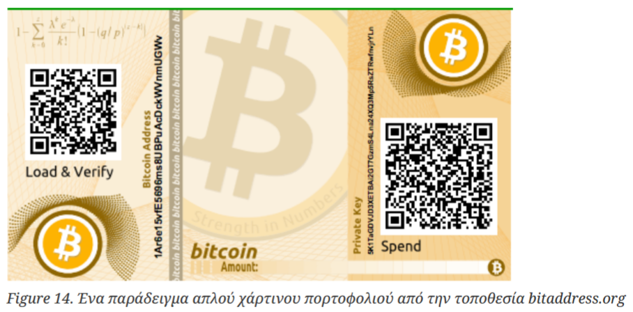
Figure 14. Ένα παράδειγμα απλού χάρτινου πορτοφολιού από την τοποθεσία bitaddress.org
Το μειονέκτημα του απλού συστήματος του χάρτινου πορτοφολιού είναι ότι τα τυπωμένα κλειδιά είναι ευάλωτα στην κλοπή.
Ένας κλέφτης που είναι σε θέση να αποκτήσει πρόσβαση στο έγγραφο μπορεί είτε να κλέψει ή να φωτογραφίσει τα κλειδιά και να πάρει τον έλεγχο των κλειδωμένων bitcoin, που έχουν αποθηκευτεί με αυτά τα κλειδιά.
Ένα πιο εξελιγμένο σύστημα αποθήκευσης σε χάρτινο πορτοφόλι χρησιμοποιεί την BIP0038 κρυπτογράφηση ιδιωτικών κλειδιών.
Τα τυπωμένα στο χάρτινο πορτοφόλι ιδιωτικά κλειδιά προστατεύονται από μια συνθηματική φράση που ο ιδιοκτήτης έχει απομνημονεύσει.
Χωρίς την συνθηματική φράση, τα κρυπτογραφημένα κλειδιά είναι άχρηστα.
Αυτό όμως δε σημαίνει ότι δεν είναι ανώτερα από ένα προστατευμένο με συνθηματική φράση πορτοφόλι, επειδή τα κλειδιά αυτά δεν έχουν βρεθεί ποτέ συνδεδεμένα στο Διαδίκτυο και πρέπει να ανακτηθούν με φυσικό τρόπο από χρηματοκιβώτιο ή κάποιο άλλο φυσικό μέσο αποθήκευσης.
Η Ένα παράδειγμα κρυπτογραφημένου χάρτινου πορτοφολιού από την τοποθεσία bitaddress.org. Η φράση κλειδί είναι «test.» δείχνει ένα χάρτινο πορτοφόλι με ένα κρυπτογραφημένο ιδιωτικό κλειδί (BIP0038) που δημιουργήθηκε στην τοποθεσία bitaddress.org.
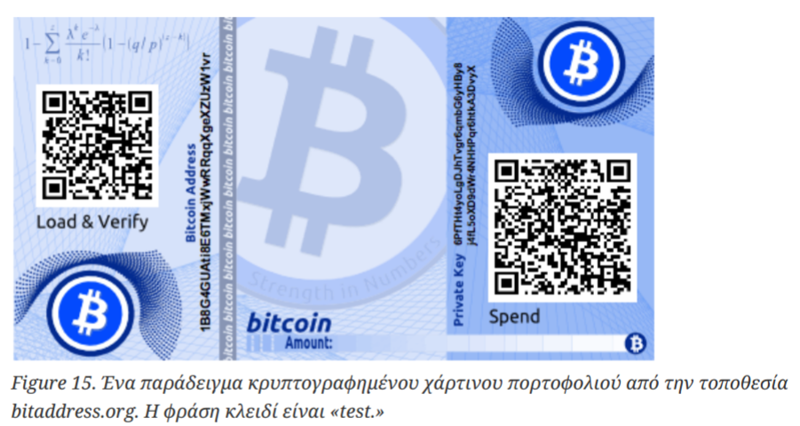
Figure 15. Ένα παράδειγμα κρυπτογραφημένου χάρτινου πορτοφολιού από την τοποθεσίitaddress.org. Η φράση κλειδί είναι «test.»
WARNING
Αν και μπορείτε να καταθέσετε χρήματα αρκετές φορές στο χάρτινο πορτοφόλι, η απόσυρση των χρημάτων, ξοδεύοντας τα όλα, πρέπει να γίνει μόνο μία φορά.
Αυτό είναι επειδή κατά τη διαδικασία του ξεκλειδώματος και ξοδέματος, μερικά πορτοφόλια μπορεί να δημιουργήσουν μια διεύθυνση επιστροφής εάν ξοδέψετε λιγότερα από το σύνολο του ποσού.
Επιπλέον, εάν ο υπολογιστής που χρησιμοποιείτε είναι παραβιασμένος, βρίσκεστε σε κίνδυνο να εκθέσετε το ιδιωτικό κλειδί.
Ξοδεύοντας ολόκληρο το ποσό του χάρτινου πορτοφολιού μόνο μία φορά, μειώνετε τον κίνδυνο να διαρρεύσει το κλειδί.
Εάν χρειάζεστε μόνο ένα μικρό ποσό, στείλτε όλα τα εναπομείναντα κεφάλαια σε ένα νέο χάρτινο πορτοφόλι στην ίδια συναλλαγή.
Τα χάρτινα πορτοφόλια βγαίνουν σε πολλά σχέδια και μεγέθη, με διάφορα χαρακτηριστικά.
Μερικά προορίζονται ώστε να δίνονται ως δώρα με κάποια εποχιακά θέματα (χριστουγεννιάτικα, πρωτοχρονιάτικα κτλ).
Άλλα σχεδιάζονται για αποθήκευση σε τραπεζική θυρίδα ή χρηματοκιβώτιο με το ιδιωτικό κλειδί να είναι με κάποιο τρόπο κρυμμένο, είτε με κάποια αδιαφανή αυτοκόλλητα που χρειάζονται ξύσιμο, είτε διπλωμένα και σφραγισμένα με μία λεπτή συγκολλητική ταινία που χρησιμεύει ως ασφάλεια έναντι παραποίησης.
Οι εικόνες 4-16, 4-17, 4-18 δείχνουν διάφορα παραδείγματα χάρτινων πορτοφολιών με λειτουργίες ασφάλειας.
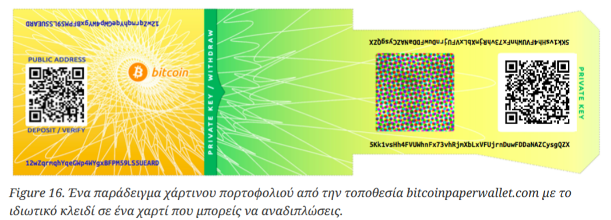
Figure 16. Ένα παράδειγμα χάρτινου πορτοφολιού από την τοποθεσία bitcoinpaperwallet.com με το ιδιωτικό κλειδί σε ένα χαρτί που μπορείς να αναδιπλώσεις.
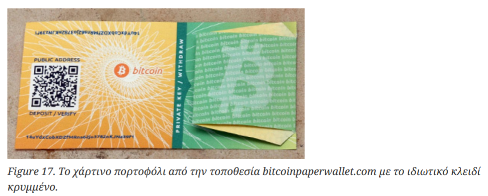
Figure 17. Το χάρτινο πορτοφόλι από την τοποθεσία bitcoinpaperwallet.com με το ιδιωτικό κλειδί κρυμμένο.
Άλλα σχέδια περιλαμβάνουν επιπρόσθετα αντίγραφα του κλειδιού και της διεύθυνσης, στη μορφή ενός αποκόμματος παρόμοιο με απόκομμα εισιτηρίου, που σας επιτρέπει να αποθηκεύετε πολλαπλά αντίγραφα για προστασία έναντι πυρκαγιάς, πλημμύρας ή άλλης φυσικής καταστροφής.
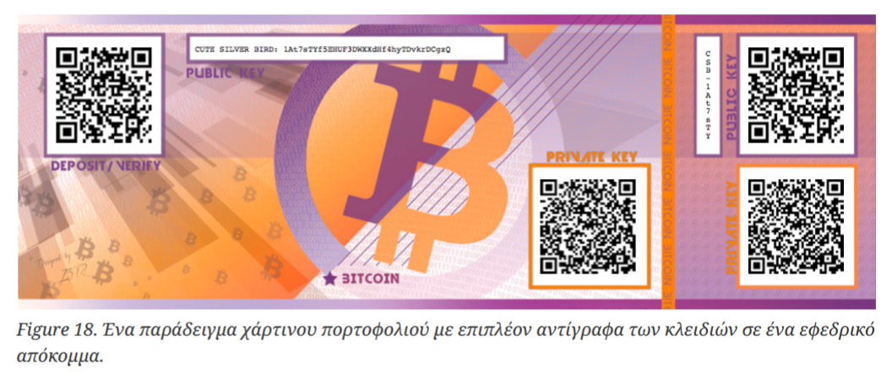
Figure 18. Ένα παράδειγμα χάρτινου πορτοφολιού με επιπλέον αντίγραφα των κλειδιών σε ένα εφεδρικό απόκομμα.
5. Συναλλαγές (Transactions)
Εισαγωγή
Οι συναλλαγές είναι το πιο σημαντικό κομμάτι του bitcoin συστήματος.
Οτιδήποτε άλλο στο bitcoin είναι σχεδιασμένο για την εξασφάλιση ότι μπορούν οι συναλλαγές να δημιουργηθούν, να διαδοθούν (propagate) στο δίκτυο, να επικυρωθούν και τελικά να προστεθούν στο παγκόσμιο κατάστιχο των συναλλαγών (το blockchain).
Οι συναλλαγές είναι δομές δεδομένων που κωδικοποιούν τη μεταφορά αξίας μεταξύ των συμμετεχόντων στο σύστημα του bitcoin.
Κάθε συναλλαγή είναι μια δημόσια εγγραφή στην αλυσίδα των μπλοκ του bitcoin, το παγκόσμιο διπλογραφικό λογιστικό βιβλίο.
Σε αυτό το κεφάλαιο θα εξετάσουμε τις διάφορες μορφές των συναλλαγών, τι περιέχουν αυτές, πώς τις δημιουργούμε, πώς επικυρώνονται και πώς γίνονται μέρος του μόνιμου αρχείου όλων των συναλλαγών.
Ο Κύκλος ζωής της Συναλλαγής
Ο κύκλος ζωής των συναλλαγών ξεκινάει με τη δημιουργία της συναλλαγής, γνωστή και ως προέλευση (origination).
Η συναλλαγή, στη συνέχεια, υπογράφεται με μία ή παραπάνω υπογραφές που δείχνουν την εξουσιοδότηση -ή καλύτερα την άδεια- για να ξοδέψει η συναλλαγή τα χρηματικά ποσά που αναφέρονται σε αυτήν.
Η συναλλαγή, έπειτα, μεταδίδεται στο δίκτυο bitcoin, όπου κάθε κόμβος του δικτύου (συμμετέχων) επικυρώνει (validates) και διαδίδει (propagates) τη συναλλαγή έως ότου φθάσει (σχεδόν) σε κάθε κόμβο στο δίκτυο.
Τέλος, η συναλλαγή επιβεβαιώνεται από έναν κόμβο εξόρυξης και περιλαμβάνεται σε ένα μπλοκ συναλλαγών που καταγράφονται στην αλυσίδα των μπλοκ.
Μόλις καταγραφούν στην αλυσίδα των μπλοκ και επιβεβαιωθούν από επαρκή μεταγενέστερα μπλοκ (επιβεβαιώσεις), η συναλλαγή αποτελεί ένα μόνιμο μέρος του καθολικού του bitcoin και γίνεται δεκτή ως έγκυρη από όλους τους συμμετέχοντες.
Τα κεφάλαια που μεταβιβάζονται σε ένα νέο ιδιοκτήτη από τη συναλλαγή μπορούν στη συνέχεια να περάσουν σε μια νέα συναλλαγή, επεκτείνοντας την αλυσίδα της ιδιοκτησίας και ξεκινώντας και πάλι τον κύκλο ζωής μίας συναλλαγής.
Δημιουργώντας Συναλλαγές
Κατά κάποιο τρόπο, βοηθάει να σκεφτούμε μια συναλλαγή όπως μια χάρτινη επιταγή.
Σαν την επιταγή, η συναλλαγή είναι ένα όργανο που εκφράζει την πρόθεση για μεταφορά χρημάτων και δεν ορατή στο οικονομικό σύστημα μέχρι να υποβληθεί προς εκτέλεση.
Σαν την επιταγή, ο δημιουργός της συναλλαγής δεν χρειάζεται να είναι εκείνος που υπογράφει επίσης τη συναλλαγή.
Οι συναλλαγές μπορούν να δημιουργηθούν σε σύνδεση ή εκτός σύνδεσης στο Διαδίκτυο από οποιονδήποτε, ακόμη και αν το πρόσωπο που δημιουργεί τη συναλλαγή δεν είναι εξουσιοδοτημένο για να υπογράψει στο λογαριασμό.
Για παράδειγμα, σε μία εταιρία, ένας υπάλληλος για πληρωμές λογαριασμών θα μπορούσε να επεξεργαστεί πληρωτέες επιταγές για υπογραφή από τον διευθυντή.
Ομοίως, ένας υπάλληλος για πληρωμές λογαριασμών μπορεί να δημιουργήσει bitcoin συναλλαγές, ώστε να εφαρμόσει ο διευθυντής, στη συνέχεια, ψηφιακές υπογραφές για να γίνουν έγκυρες.
Λαμβάνοντας υπόψη ότι μία επιταγή αναφέρεται σε έναν συγκεκριμένο λογαριασμό ως πηγή (source) των χρημάτων, μία συναλλαγή bitcoin αναφέρεται σε μία συγκεκριμένη συναλλαγή που έχει προηγηθεί ως την πηγή της, αντί για έναν λογαριασμό.
Μόλις μια συναλλαγή δημιουργηθεί, υπογράφεται από τον ιδιοκτήτη (ή τους ιδιοκτήτες) της πηγής των χρημάτων.
Αν είναι σωστά διαμορφωμένη και υπογεγραμμένη, η υπογεγραμμένη συναλλαγή είναι τώρα έγκυρη και περιέχει όλες τις απαραίτητες πληροφορίες για την εκτέλεση της μεταφοράς των χρημάτων.
Τέλος, η έγκυρη συναλλαγή πρέπει να αποκτήσει πρόσβαση στο δίκτυο bitcoin, ώστε να μπορεί να διαδοθεί μέχρι να φτάσει έναν εξορύκτη που θα την εντάξει στο δημόσιο αρχείο των συναλλαγών (το blockchain).
Μετάδοση Συναλλαγών στο δίκτυο Bitcoin
Πρώτον, μια συναλλαγή πρέπει να παραδοθεί στο δίκτυο bitcoin, έτσι ώστε να μπορεί έπειτα να διαδοθεί και να περιληφθεί στην αλυσίδα των μπλοκ.
Στην ουσία, μια συναλλαγή bitcoin είναι απλά 300-400 μπάιτ δεδομένων και πρέπει να αποκτήσει πρόσβαση σε κάποιον από τους δεκάδες χιλιάδες κόμβους bitcoin.
Ο αποστολέας της συναλλαγής δε χρειάζεται να εμπιστευτεί τους κόμβους που χρησιμοποιεί για τη μετάδοση της συναλλαγής, εφόσον χρησιμοποιεί παραπάνω από έναν, για να διασφαλίσει τη μετέπειτα διάδοση της συναλλαγής.
Οι κόμβοι δεν χρειάζεται να εμπιστεύονται τον αποστολέα ούτε χρειάζονται κάποια ταυτότητα του.
Επειδή η συναλλαγή έχει υπογραφεί και δεν περιέχει εμπιστευτικές πληροφορίες, ιδιωτικά κλειδιά ή άλλα διαπιστευτήρια, μπορεί να μεταδοθεί δημόσια, χρησιμοποιώντας κάθε διαθέσιμο δίκτυο ως μέσο μεταφοράς.
Σε αντίθεση με τις συναλλαγές πιστωτικών καρτών, για παράδειγμα, οι οποίες περιέχουν ευαίσθητες πληροφορίες και μπορούν να μεταδοθούν μόνο σε κρυπτογραφημένα δίκτυα, μια συναλλαγή bitcoin μπορεί να σταλεί μέσω οποιουδήποτε δικτύου.
Αρκεί, μόνο, η συναλλαγή να μπορεί να μεταφερθεί σε έναν κόμβο bitcoin που θα την διαδώσει στο bitcoin δίκτυο και δεν έχει σημασία ο τρόπος που θα φτάσει στον πρώτο κόμβο.
Οι συναλλαγές bitcoin, ως εκ τούτου, μπορούν να μεταδοθούν στο δίκτυο bitcoin μέσω μη-ασφαλών δικτύων, όπως WiFi, Bluetooth, NFC, Chirp, barcode ή με αντιγραφή και επικόλληση σε μια ηλεκτρονική φόρμα.
Σε ακραίες περιπτώσεις, μια συναλλαγή bitcoin θα μπορούσε να μεταδοθεί μέσω ραδιοφωνικού πακέτου, δορυφορικής μετάδοσης και βραχέα κύματα, όπως με μία «καταιγιστική» (burst) μετάδοση χρησιμοποιώντας διασπορά φάσματος (spread spectrum) και εναλλαγή συχνοτήτων (frequency hopping) για την αποφυγή εντοπισμού και εμπλοκής.
Μια συναλλαγή bitcoin θα μπορούσε ακόμη και να κωδικοποιηθεί ως smiley (emoticons) και να δημοσιευτεί σε δημόσια φόρουμ ή να σταλεί ως μήνυμα κειμένου ή μήνυμα συνομιλίας Skype.
Το bitcoin έχει μετατρέψει τα χρήματα σε μια δομή δεδομένων και είναι πρακτικά αδύνατο το σταμάτημα κάποιου από τη δημιουργία και την εκτέλεση μιας συναλλαγής bitcoin.
Διάδοση Συναλλαγών στο Δίκτυο Bitcoin
Όταν μια συναλλαγή bitcoin αποστέλλεται σε οποιοδήποτε συνδεδεμένο με το δίκτυο bitcoin κόμβο, η συναλλαγή θα πρέπει να εγκριθεί από αυτόν τον κόμβο.
Εάν είναι έγκυρη, αυτός ο κόμβος θα τη διαδώσει σε άλλους κόμβους με τους οποίους είναι συνδεδεμένος, με ένα μήνυμα επιτυχίας να επιστρέφεται συγχρόνως στον δημιουργό της συναλλαγής.
Αν η συναλλαγή είναι άκυρη, ο κόμβος θα την απορρίψει και θα επιστρέψει ένα μήνυμα απόρριψης.
Το δίκτυο bitcoin είναι ένα δίκτυο peer-to-peer, πράγμα που σημαίνει ότι κάθε κόμβος bitcoin είναι συνδεδεμένος με μερικούς άλλους κόμβους bitcoin, τους οποίους ανακαλύπτει κατά την εκκίνηση μέσω του peer-to-peer πρωτοκόλλου.
Το σύνολο του δικτύου αποτελεί ένα χαλαρώς συνδεδεμένο πλέγμα (mesh) χωρίς σταθερή τοπολογία ή δομή, κάνοντας όλους τους κόμβους ομότιμους (peer).
Τα μηνύματα, συμπεριλαμβανομένων των συναλλαγών και των μπλοκ, διαδίδονται από κάθε κόμβο σε όλους τους υπόλοιπους ομότιμους κόμβους σε μια διαδικασία που ονομάζεται «πλημμυρισμός» (flooding).
Μια νέα επικυρωμένη συναλλαγή που εγχέεται σε οποιοδήποτε κόμβο του δικτύου θα αποσταλεί σε όλους τους συνδεδεμένους κόμβους σε αυτόν (γείτονες), καθένας από τους οποίους θα αποστείλει τη συναλλαγή σε όλους τους γείτονές του και ούτω καθεξής.
Με αυτόν τον τρόπο, μέσα σε λίγα δευτερόλεπτα, μια έγκυρη συναλλαγή θα διαδοθεί με έναν εκθετικό τρόπο, σαν ένα φαινόμενο κυματισμού, σε όλο το δίκτυο έως ότου όλοι οι κόμβοι του δικτύου να την έχουνε λάβει.
Το δίκτυο bitcoin είναι σχεδιασμένο για να διαδίδει συναλλαγές και μπλοκ σε όλους τους κόμβους με αποτελεσματικό και ελαστικό τρόπο, που να είναι ανθεκτικός σε επιθέσεις.
Για να αποτρέψει τα ανεπιθύμητα μηνύματα (spam), επιθέσεις άρνησης υπηρεσιών (denial-of-service) ή οποιεσδήποτε άλλες ενοχλητικές επιθέσεις εναντίον του συστήματος bitcoin, κάθε κόμβος επικυρώνει ανεξάρτητα κάθε συναλλαγή πριν τη διαδώσει περαιτέρω.
Μία ακατάλληλη συναλλαγή δε θα προχωρήσει παραπέρα από ένα κόμβο.
Οι κανόνες με τους οποίους οι συναλλαγές επικυρώνονται εξηγούνται με περισσότερες λεπτομέρειες στο [tx_verification].
Δομή Συναλλαγής
Μια συναλλαγή είναι μία δομή δεδομένων που κωδικοποιεί μία μεταφορά αξίας από μία πηγή χρημάτων, που ονομάζεται είσοδος (transaction input), προς έναν προορισμό που ονομάζεται έξοδος (transaction output).
Οι είσοδοι και έξοδοι των συναλλαγών δεν σχετίζονται με κανέναν λογαριασμό ή ταυτότητα.
Αντίθετα, θα πρέπει να τις σκέφτεστε ως ποσά -ή κομμάτια- bitcoin, τα οποία είναι κλειδωμένα με ένα συγκεκριμένο μυστικό το οποίο μόνο ο ιδιοκτήτης -ή το άτομο που γνωρίζει το μυστικό- μπορεί να ξεκλειδώσει.
Μια συναλλαγή είναι χωρισμένη σε διαφορετικά πεδία, όπως φαίνεται στον Η δομή μίας συναλλαγής.
| Size | Field | Description |
| 4 bytes | Version | Specifies which rules thiransaction follows |
| 1–9 bytes (VarInt) | Input Counter | How many inputs are included |
| Variable | Inputs | One or more transaction inputs |
| 1–9 bytes (VarInt) | Output Counter | How many outputs are included |
| Variable | Outputs | One or more transaction outputs |
| 4 bytes | Locktime | A Unix timestamp or blocumber |
Χρονοκλείδωμα Συναλλαγής (transaction locktime)
Το χρονοκλείδωμα (locktime), γνωστό και ως «nLockTime» από το όνομα της μεταβλητής που χρησιμοποιείται στον πελάτη αναφοράς, ορίζει την πρώτη φορά που μία συναλλαγή είναι έγκυρη και μπορεί να μεταδοθεί στο δίκτυο ή να προστεθεί στην αλυσίδα των μπλοκ.
Στις περισσότερες συναλλαγές τίθεται ως μηδέν για να υποδείξει την άμεση διάδοση και εκτέλεση.
Εάν ο χρόνος κλειδώματος είναι μη-μηδενικός μέχρι 500 εκατομμύρια διερμηνεύεται (interpreted) ως ύψος μπλοκ, που σημαίνει ότι η συναλλαγή δεν είναι έγκυρη και δεν μεταδίδεται στο δίκτυο ή περιλαμβάνεται στην αλυσίδα των μπλοκ πριν το καθορισμένο ύψος των μπλοκ.
Εάν είναι πάνω από 500 εκατομμύρια, ερμηνεύεται ως μια «Unix Epoch» χρονοσφραγίδα (δευτερόλεπτα μετά την 1η Ιαν-1970) και η συναλλαγή δεν είναι έγκυρη πριν από την καθορισμένη ώρα.
Οι συναλλαγές με χρονοκλείδωμα που ορίζουν ένα μελλοντικό μπλοκ ή χρόνο πρέπει να κρατώνται στο σύστημα προέλευσης τους και να μεταδίδονται στο δίκτυο bitcoin μόνο αφού είναι πλέον έγκυρες.
Η χρήση του χρονοκλειδώματος ισοδυναμεί με τη μεταγενέστερη ανάθεση μίας χάρτινης επιταγής.
Είσοδοι και έξοδοι συναλλαγών (transaction inputs and outputs)
Το θεμελιώδες δομικό στοιχείο μίας συναλλαγής bitcoin είναι η έξοδος αξόδευτης συναλλαγής (Unspent Transaction Outpout) (ή αλλιώς UTXO από την αγγλική συντομογραφία που θα χρησιμοποιηθεί αρκετά στη συνέχεια του βιβλίου).
Οι UTXO είναι αδιαίρετα κομμάτια του bitcoin νομίσματος κλειδωμένα σε ένα συγκεκριμένο ιδιοκτήτη, καταγεγραμμένα στην αλυσίδα των μπλοκ και αναγνωρίζονται ως νομισματικές μονάδες από ολόκληρο το δίκτυο.
Το bitcoin δίκτυο παρακολουθεί όλες τις διαθέσιμες (αξόδευτες) UTXO, που μετρώνται σήμερα σε εκατομμύρια.
Κάθε φορά που ένας χρήστης λαμβάνει bitcoin, το ποσό αυτό καταγράφεται στην αλυσίδα των μπλοκ ως UTXO.
Έτσι, τα bitcoin κάποιου χρήστη μπορεί να βρίσκονται διάσπαρτα ως UTXO ανάμεσα σε εκατοντάδες συναλλαγών και εκατοντάδες μπλοκ.
Στην πραγματικότητα, δεν υπάρχει κάτι σαν αποθηκευμένο υπόλοιπο διεύθυνσης bitcoin· υπάρχουν μόνο διάσπαρτες UTXO, κλειδωμένες σε συγκεκριμένους ιδιοκτήτες.
Η έννοια του υπόλοιπου των bitcoin ενός χρήστη προέρχεται ως κατασκεύασμα των εφαρμογών wallet.
Το πορτοφόλι υπολογίζει το υπόλοιπο του χρήστη σαρώνοντας την αλυσίδα των μπλοκ και συγκεντρώνοντας όλες τις UTXO που ανήκουν σε αυτόν τον χρήστη.
TIP
Δεν υπάρχουν υπόλοιπα λογαριασμών στο bitcoin· υπάρχουν μόνο αξόδευτες έξοδοι συναλλαγών (UTXO) διάσπαρτες στην αλυσίδα των μπλοκ.
Μία UTXO μπορεί να έχει μία οποιαδήποτε τιμή στο εύρος των σατόσι.
Όπως τα δολάρια μπορούν να διαιρεθούν δύο δεκαδικές θέσεις προς τα κάτω, έτσι και τα bitcoin μπορούν να διαιρεθούν οχτώ δεκαδικές θέσεις προς τα κάτω ως σατόσι.
Αν και οι UTXO μπορούν να έχουν οποιαδήποτε τιμή σε αυτό το εύρος, μόλις δημιουργηθούν είναι αδιαίρετες ακριβώς όπως ένα κέρμα δεν μπορεί να κοπεί στα δύο.
Εάν μία UTXO είναι μεγαλύτερη από την επιθυμητή αξία της συναλλαγής, πρέπει να καταναλωθεί ολόκληρη και να δημιουργηθεί μία επιστροφή μαζί στη συναλλαγή.
Με άλλα λόγια, εάν έχετε μία UTXO με 20 bitcoin και θέλετε να πληρώσετε 1 bitcoin, η συναλλαγή σας πρέπει να καταναλώσει ολόκληρο το ποσό των 20 bitcoin στην UTXO και να δημιουργήσει δύο εξόδους:
μία πληρωτέα 1 bitcoin στον επιθυμητό παραλήπτη και μία άλλη πληρωτέα 19 bitcoin ως επιστροφή πίσω στο πορτοφόλι σας.
Ως αποτέλεσμα, οι περισσότερες bitcoin συναλλαγές θα δημιουργούν επιστροφές.
Φανταστείτε έναν αγοραστή στη διαδικασία αγοράς ενός ποτού 1,50$, ο οποίος πιάνει το πορτοφόλι του και προσπαθεί να βρει ένα συνδυασμό κερμάτων και τραπεζικών χαρτονομισμάτων για να καλύψει το κόστος των 1,50$.
Ο αγοραστής θα επιλέξει τα ακριβή ρέστα αν υπάρχουν διαθέσιμα (ένα δολάριο και πενήντα λεπτά) ή ένα συνδυασμό μικρότερων παρονομαστών (δύο κέρματα των 20 λεπτών και ένα των 10 λεπτών) ή αν είναι απαραίτητο, μία μεγαλύτερη μονάδα όπως χαρτονόμισμα των πέντε δολαρίων.
Εάν ο αγοραστής δώσει παραπάνω χρήματα, 5$ για παράδειγμα, στον ιδιοκτήτη του καταστήματος, θα περιμένει 3,50$ ως ρέστα -ή επιστροφή- τα οποία θα επιστρέψει στο πορτοφόλι του και θα είναι διαθέσιμα για μελλοντικές συναλλαγές.
Ομοίως, μια συναλλαγή bitcoin θα πρέπει να δημιουργηθεί από τις UTXO που έχει στη διάθεση του ένας χρήστης, οποιασδήποτε αξίας και αν είναι αυτές.
Οι χρήστες δεν μπορούν να κόψουν μία UTXO στη μέση και να τη χρησιμοποιήσουν ως νόμισμα, ομοίως με τα χαρτονομίσματα ή τα κέρματα των ευρώ.
Η εφαρμογή πορτοφολιού του χρήστη θα επιλέξει τυπικώς από τις διαθέσιμες UTXO ποικίλων μονάδων, ώστε να συνθέσει ένα ποσό μεγαλύτερο ή ίσο με το επιθυμητό ποσό της συναλλαγής.
Όπως και στην πραγματική ζωή, η εφαρμογή bitcoin θα χρησιμοποιήσει πολλαπλές στρατηγικές για να καλύψει το ποσό της αγοράς:
συνδυάζοντας αρκετές μικρότερες μονάδες, βρίσκοντας τα ακριβή ποσά ή χρησιμοποιώντας μία μονάδα μεγαλύτερη από την αξία της συναλλαγής και δημιουργώντας επιστροφή.
Όλη αυτή η περίπλοκη συναρμολόγηση των δαπανήσιμων UTXΟ γίνεται από το πορτοφόλι του χρήστη αυτόματα και είναι αόρατη στους χρήστες.
Πρέπει να ασχοληθείτε με αυτή τη λειτουργία μόνο αν προγραμματιστικά κατασκευάζετε ακατέργαστες (raw) συναλλαγές από τις UTXO.
Οι UTXO που καταναλώνονται από μια συναλλαγή ονομάζονται είσοδοι συναλλαγής και οι UTXO που δημιουργούνται από μια συναλλαγή ονομάζονται έξοδοι συναλλαγής.
Με αυτόν τον τρόπο, κομμάτια αξίας bitcoin πηγαίνουν από χρήστη σε χρήστη σε μία αλυσίδα συναλλαγών που καταναλώνει και δημιουργεί UTXO.
Οι συναλλαγές καταναλώνουν UTXO με το ξεκλείδωμα τους, παρέχοντας την υπογραφή του τωρινού ιδιοκτήτη και δημιουργώντας νέα UTXO με το κλείδωμα της σε μία νέα διεύθυνση bitcoin του καινούριου ιδιοκτήτη.
Η εξαίρεση σε αυτή την αλυσίδα εξόδου και εισόδου είναι ένας ειδικός τύπος συναλλαγής που ονομάζεται συναλλαγή coinbase, που είναι η πρώτη συναλλαγή σε κάθε μπλοκ.
Αυτή η συναλλαγή τοποθετείται εκεί από τον «νικητή» εξορύκτη και δημιουργεί ολοκαίνουρια bitcoin πληρωτέα σε αυτόν τον εξορύκτη ως ανταμοιβή για την εξόρυξη.
Αυτός είναι ο τρόπος έκδοσης χρημάτων του bitcoin και δημιουργείται στη διαδικασία της εξόρυξης, όπως θα δούμε στο [κεφάλαιο-8].
TIP
Τι έρχεται δηλαδή πρώτο;
Οι είσοδοι ή οι έξοδοι, η κότα ή το αβγό;
Για να είμαστε κυριολεκτικοί, οι έξοδοι έρχονται πρώτες εξαιτίας των «coinbase» συναλλαγών, οι οποίες δημιουργούν νέα bitcoin, δεν έχουν εισόδους και δημιουργούν εξόδους από το τίποτα.
Εξοδοι συναλλαγών
Κάθε συναλλαγή bitcoin δημιουργεί εξόδους, οι οποίες καταγράφονται στο δημόσιο αρχείο συναλλαγών του bitcoin.
Σχεδόν όλες αυτές οι έξοδοι, με μία εξαίρεση (δείτε Έξοδος δεδομένων (OP_RETURN) (data output)), δημιουργούν δαπανήσιμα κομμάτια από bitcoin, που ονομάζονται αξόδευτες έξοδοι συναλλαγών (UTXO), εγγεγραμμένα στη διεύθυνση τους και διαθέσιμα για ξόδεμα.
Οι UTXO παρακολουθούνται από κάθε πλήρη κόμβο bitcoin πελάτη ως μία συλλογή δεδομένων, που ονομάζεται ομάδα UTXO (UTXO pool) ή σύνολο UTXO (UTXO set) και κρατούνται σε μία βάση δεδομένων.
Οι νέες συναλλαγές καταναλώνουν (ξοδεύουν) μία ή περισσότερες από αυτές τις εξόδους από το σετ των UTXO.
Οι έξοδοι των συναλλαγών αποτελούνται από δύο μέρη:
• Ένα ποσό bitcoin, εκφρασμένο σε σατόσι (satoshi), τη μικρότερη μονάδα bitcoin
• Ένα σενάριο κλειδώματος (locking script), γνωστό και ως «παρεμπόδιση» (encumbrance) που «κλειδώνει» το ποσό αυτό καθορίζοντας τις συνθήκες που πρέπει να ικανοποιούνται για να ξοδευτεί η έξοδος
Τη γλώσσα προγραμματισμού σεναρίων των συναλλαγών, που χρησιμοποιείται στο σενάριο κλειδώματος, που αναφέρθηκε προηγουμένως, θα τη συζητήσουμε λεπτομερώς στην Σενάρια Συναλλαγών και Γλώσσα Script.
Ο Η δομή μίας εξόδου συναλλαγής δείχνει τη δομή μίας εξόδου συναλλαγής.
| Size | Field | Description |
| 8 bytes | Amount | Bitcoin value in satoshis (10^-8 bitcoin) |
| 1-9 bytes (VarInt) | Locking-Script Size | Locking-Script length in bytes, to follow |
| Variable | Locking-Script | A script defining the conditions needed to spend the output |
Στο Ένα σενάριο που καλεί το API του blockchain.info για να βρει τις UTXO που σχετίζονται με μία διεύθυνση, θα χρησιμοποιήσουμε το API του blockchain.info για να βρούμε τις αξόδευτες εξόδους (UTXO) μίας συγκεκριμένης διεύθυνσης.
Example 1. Ένα σενάριο που καλεί το API του blockchain.info για να βρει τις UTXO που σχετίζονται με μία διεύθυνση
# get unspent outputs from blockchain API
import json
import requests
# example address
address = '1Dorian4RoXcnBv9hnQ4Y2C1an6NJ4UrjX'
# The API URL is https://blockchain.info/unspent?active=<address>
# It returns a JSON object with a list "unspent_outputs", containing UTXO, like this:
#{ "unspent_outputs":[
# {
# "tx_hash":"ebadfaa92f1fd29e2fe296eda702c48bd11ffd52313e986e99ddad9084062167",
# "tx_index":51919767,
# "tx_output_n": 1,
# "script":"76a9148c7e252f8d64b0b6e313985915110fcfefcf4a2d88ac",
# "value": 8000000,
# "value_hex": "7a1200",
# "confirmations":28691
# },
# ...
#]}
resp = requests.get('https://blockchain.info/unspent?active=%s' % address)
utxo_set = json.loads(resp.text)["unspent_outputs"]
for utxo in utxo_set:
print "%s:%d - %ld Satoshis" % (utxo['tx_hash'], utxo['tx_output_n'],
utxo['value'])
Εκτελώντας το σενάριο, θα δούμε μία λίστα αναγνωριστικών της συναλλαγής, μία άνω κάτω τελεία, τον αριθμοδείκτη (index) της συγκεκριμένης αξόδευτης εξόδου συναλλαγής (UTXO) και την αξία αυτής της UTXO σε σατόσι.
Το σενάριο κλειδώματος δεν εμφανίζεται στο Εκτελώντας το σενάριο «get-utxo.py».
Example 2. Εκτελώντας το σενάριο «get-utxo.py»
$ python get-utxo.py
ebadfaa92f1fd29e2fe296eda702c48bd11ffd52313e986e99ddad9084062167:1 - 8000000 Satoshis
6596fd070679de96e405d52b51b8e1d644029108ec4cbfe451454486796a1ecf:0 - 16050000
Satoshis
74d788804e2aae10891d72753d1520da1206e6f4f20481cc1555b7f2cb44aca0:0 - 5000000 Satoshis
b2affea89ff82557c60d635a2a3137b8f88f12ecec85082f7d0a1f82ee203ac4:0 - 10000000
Satoshis
...
Συνθήκες ξοδέματος (παρεμποδίσεις)
Οι έξοδοι συναλλαγών συνδέουν ένα συγκεκριμένο ποσό (σε σατόσι) σε μία συγκεκριμένη παρεμπόδιση ή σενάριο κλειδώματος, που ορίζει την συνθήκη που πρέπει να ικανοποιηθεί ώστε να ξοδευτεί αυτό το ποσό.
Στις περισσότερες περιπτώσεις, ένα σενάριο κλειδώματος θα κλειδώσει την έξοδο σε μία συγκεκριμένη διεύθυνση bitcoin, μεταφέροντας ως εκ τούτου την ιδιοκτησία αυτού του ποσού σε έναν νέο ιδιοκτήτη.
Όταν η Αλίκη πλήρωσε στην καφετέρια του Μπομπ για ένα καφέ, η συναλλαγή της δημιούργησε μία έξοδο 0,015 bitcoin παρεμποδισμένη ή κλειδωμένη στη διεύθυνση bitcoin του Μπομπ.
Αυτή η έξοδος των 0,015 bitcoin έχει καταγραφεί στην αλυσίδα των μπλοκ και έγινε μέρος της συλλογής των αξόδευτων εξόδων συναλλαγών (Unspent Transaction Output), που σημαίνει ότι εμφανίστηκε στο πορτοφόλι του Μπομπ ως μέρος του διαθέσιμου υπολοίπου.
Όταν ο Μπομπ επιλέξει να ξοδέψει αυτό το ποσό, η συναλλαγή του θα ελευθερώσει την παρεμπόδιση, ξεκλειδώνοντας την έξοδο με την παροχή ενός σεναρίου ξεκλειδώματος που περιέχει μία υπογραφή από το ιδιωτικό κλειδί του Μπομπ.
Είσοδοι Συναλλαγών
Με απλά λόγια, οι είσοδοι των συναλλαγών είναι δείκτες (pointers) στις αξόδευτες εξόδους (UTXO).
Η κατάδειξη σε μία συγκεκριμένη UTXO γίνεται μέσω του κατακερματισμού (hash) της συναλλαγής της και τον αριθμό ακολουθίας (sequence number) που η UTXO είναι καταγεγραμμένη στην αλυσίδα των μπλοκ.
Για να ξοδέψει μία UTXO, η είσοδος συναλλαγής περιλαμβάνει σενάρια ξεκλειδώματος, τα οποία ικανοποιούν τις συνθήκες ξοδέματος που έχουν τεθεί στην UTXO.
Το σενάριο ξεκλειδώματος είναι συνήθως μία υπογραφή που αποδεικνύει την ιδιοκτησία της διεύθυνσης bitcoin που είναι στο σενάριο κλειδώματος.
Όταν οι χρήστες κάνουν μία πληρωμή, το πορτοφόλι κατασκευάζει μία συναλλαγή επιλέγοντας από τις διαθέσιμες UTXO.
Για παράδειγμα, για μία πληρωμή 0,015 bitcoin, η εφαρμογή wallet μπορεί να επιλέξει να χρησιμοποιήσει μία UTXO 0,01 και μία UTXO 0,005, προσθέτοντας τις μαζί ώστε να δημιουργήσει το επιθυμητό ποσό πληρωμής.
Στο Ένα σενάριο για τον υπολογισμό του συνολικού ποσού των bitcoin που θα χρησιμοποιηθούν, δείχνουμε τη χρήση ενός «άπληστου» (greedy) αλγόριθμου για την επιλογή διαθέσιμων UTXO για τη δημιουργία ενός συγκεκριμένου ποσού πληρωμής.
Στο παράδειγμα, οι διαθέσιμες UTXO παρέχονται ως ένας σταθερός πίνακας δεδομένων (constant array), αλλά στην πραγματικότητα, οι διαθέσιμες UTXO ανακτούνται μέσω RPC εντολών στον Bitcoin Πυρήνα ή μέσω ενός API τρίτων όπως στο Ένα σενάριο που καλεί το API του blockchain.info για να βρει τις UTXO που σχετίζονται με μία διεύθυνση.
Example 3. Ένα σενάριο για τον υπολογισμό του συνολικού ποσού των bitcoin που θα χρησιμοποιηθούν
# Selects outputs from a UTXO list using a greedy algorithm.
from sys import argv
class OutputInfo:
def __init__(self, tx_hash, tx_index, value):
self.tx_hash = tx_hash
self.tx_index = tx_index
self.value = value
def __repr__(self):
return "<%s:%s with %s Satoshis>" % (self.tx_hash, self.tx_index,
self.value)
# Select optimal outputs for a send from unspent outputs list.
# Returns output list and remaining change to be sent to
# a change address.
def select_outputs_greedy(unspent, min_value):
# Fail if empty.
if not unspent:
return None
# Partition into 2 lists.
lessers = [utxo for utxo in unspent if utxo.value < min_value]
greaters = [utxo for utxo in unspent if utxo.value >= min_value]
key_func = lambda utxo: utxo.value
if greaters:
# Not-empty. Find the smallest greater.
min_greater = min(greaters)
change = min_greater.value - min_value
return [min_greater], change
# Not found in greaters. Try several lessers instead.
# Rearrange them from biggest to smallest. We want to use the least
# amount of inputs as possible.
lessers.sort(key=key_func, reverse=True)
result = []
accum = 0
for utxo in lessers:
result.append(utxo)
accum += utxo.value
if accum >= min_value:
change = accum - min_value
return result, "Change: %d Satoshis" % change
# No results found.
return None, 0
def main():
unspent = [
OutputInfo("ebadfaa92f1fd29e2fe296eda702c48bd11ffd52313e986e99ddad9084062167", 1,
8000000),
OutputInfo("6596fd070679de96e405d52b51b8e1d644029108ec4cbfe451454486796a1ecf", 0,
16050000),
OutputInfo("b2affea89ff82557c60d635a2a3137b8f88f12ecec85082f7d0a1f82ee203ac4", 0,
10000000),
OutputInfo("7dbc497969c7475e45d952c4a872e213fb15d45e5cd3473c386a71a1b0c136a1", 0,
25000000),
OutputInfo("55ea01bd7e9afd3d3ab9790199e777d62a0709cf0725e80a7350fdb22d7b8ec6", 17,
5470541),
OutputInfo("12b6a7934c1df821945ee9ee3b3326d07ca7a65fd6416ea44ce8c3db0c078c64", 0,
10000000),
OutputInfo("7f42eda67921ee92eae5f79bd37c68c9cb859b899ce70dba68c48338857b7818", 0,
16100000),
]
if len(argv) > 1:
target = long(argv[1])
else:
target = 55000000
print "For transaction amount %d Satoshis (%f bitcoin) use: " % (target,
target/10.0**8)
print select_outputs_greedy(unspent, target)
if __name__ == "__main__":
main()
Εάν εκτελέσουμε το σενάριο select-utxo.py χωρίς παράμετρο, αυτό θα προσπαθήσει να κατασκευάσει μία συλλογή από UTXO (και επιστροφές μαζί) για μία πληρωμή 55,000,000 σατόσι (0,55 bitcoin).
Εάν ορίσουμε έναν άλλο στόχο πληρωμής ως παράμετρο, το σενάριο θα επιλέξει UTXO για να κάνει αυτόν το στόχο.
Στο Εκτελώντας το σενάριο select-utxo.p, εκτελούμε το σενάριο πληρωμής 0,5 bitcoin ή 50,000,000 σατόσι.
Example 4. Εκτελώντας το σενάριο select-utxo.p
$ python select-utxo.py 50000000
For transaction amount 50000000 Satoshis (0.500000 bitcoin) use:
([<7dbc497969c7475e45d952c4a872e213fb15d45e5cd3473c386a71a1b0c136a1:0 with 25000000 Satoshis>, <7f42eda67921ee92eae5f79bd37c68c9cb859b899ce70dba68c48338857b7818:0 with 16100000 Satoshis>, <6596fd070679de96e405d52b51b8e1d644029108ec4cbfe451454486796a1ecf:0 with 16050000 Satoshis>], 'Change: 7150000 Satoshis')
Μόλις γίνει η επιλογή από αξόδευτες εξόδους (UTXO), το πορτοφόλι θα δημιουργήσει σενάρια ξεκλειδώματος που περιέχουν υπογραφές για κάθε UTXO κάνοντας τις με αυτόν τον τρόπο δαπανήσιμες αφού εκπληρώνουν τις συνθήκες του σεναρίου κλειδώματος.
Ο Η δομή μίας εισόδου συναλλαγής δείχνει τη δομή μίας εισόδου συναλλαγής.
| Size | Field | Description |
| 32 bytes | Transaction Hash | Pointer to the transaction containing the UTXO to be spent |
| 4 bytes | Output Index | The index number of the UTXO to be spent; first one is 0 |
| 1-9 bytes (VarInt) | Unlocking-Script Size | Unlocking-Script length in bytes, to follow |
| Variable | Unlocking-Script | A script that fulfills the conditions of the UTXO locking script. |
| 4 bytes | Sequence Number | Currently disabled Tx-replacement feature, set to 0xFFFFFFFF |
ΝΟΤΕ
Ο αριθμός ακολουθίας (sequence number) είναι ένα χαρακτηριστικό του bitcoin, προς το παρόν απενεργοποιημένο, που χρησιμοποιείται για να αντικαταστήσει το περιεχόμενο μιας συναλλαγής πριν από τη λήξη του χρονοκλειδώματος (locktime) της.
Οι περισσότερες συναλλαγές θέτουν αυτήν την τιμή στη μεγαλύτερη δυνατή ακέραια τιμή (0xFFFFFFFF) και η οποία έτσι παραβλέπεται από το δίκτυο.
Εάν η συναλλαγή έχει μη-μηδενικό χρονοκλείδωμα, τουλάχιστον μία από τις εισόδους της πρέπει να έχει αριθμό ακολουθίας κάτω από 0xFFFFFFFF ώστε να ενεργοποιήσει το χρονοκλείδωμα.
Χρεώσεις Συναλλαγής (transaction fees)
Οι περισσότερες συναλλαγές περιλαμβάνουν και χρεώσεις συναλλαγών (transaction fees), που είναι η ανταμοιβή για τους εξορύκτες επειδή ασφαλίζουν το δίκτυο.
Η εξόρυξη, οι χρεώσεις και οι ανταμοιβές που συλλέγονται από τους εξορύκτες θα συζητηθούν με περισσότερες λεπτομέρειες στο [κεφάλαιο-8].
Αυτή η ενότητα εξετάζει πως οι χρεώσεις συναλλαγών περικλείονται μέσα σε μία τυπική συναλλαγή.
Τα περισσότερα πορτοφόλια υπολογίζουν και περιλαμβάνουν αυτόματα τις χρεώσεις.
Ωστόσο, εάν κατασκευάζετε τις συναλλαγές προγραμματιστικά ή μέσω μίας διασύνδεσης (interface) γραμμής εντολών, πρέπει να υπολογίσετε και να ενσωματώσετε χειροκίνητα αυτές τις χρεώσεις.
Οι χρεώσεις συναλλαγών, μέσω της επιβολής ενός μικρού κόστους σε κάθε συναλλαγή, εξυπηρετούν ως κίνητρο για την ενσωμάτωση (εξόρυξη) μίας συναλλαγής στο επόμενο μπλοκ, καθώς και αντικίνητρο για «ανεπιθύμητες» (spam) συναλλαγές ή για οποιουδήποτε τύπου κατάχρηση του συστήματος.
Οι χρεώσεις συναλλαγών συλλέγονται από τον εξορύκτη που κάνει την εξόρυξη του μπλοκ και καταγράφει τη συναλλαγή στην αλυσίδα των μπλοκ.
Οι χρεώσεις συναλλαγών υπολογίζονται με βάση το μέγεθος της συναλλαγής σε κιλομπάιτ, όχι την αξία της συναλλαγής σε bitcoin.
Σε γενικές γραμμές, οι χρεώσεις των συναλλαγών βασίζονται στις δυνάμεις της αγοράς μέσα στο δίκτυο bitcoin.
Οι εξορύκτες δίνουν προτεραιότητα στις συναλλαγές βάσει διαφόρων κριτηρίων, συμπεριλαμβανομένων των χρεώσεων, αλλά μπορεί να προχωρήσουν ακόμα και δωρεάν μια συναλλαγή υπό ορισμένες συνθήκες.
Οι χρεώσεις συναλλαγών επηρεάζουν την προτεραιότητα που θα επεξεργαστεί μία συναλλαγή, που σημαίνει ότι μία συναλλαγή με επαρκείς χρεώσεις αναμένεται να περιληφθεί στο αμέσως επόμενο εξορυχθέν μπλοκ, ενώ μία συναλλαγή με μη-επαρκείς -ή καθόλου χρεώσεις-, μπορεί να καθυστερήσει, μπορεί να αφεθεί η επεξεργασία της στην καλή θέληση του δικτύου και να περιληφθεί μετά από μερικά μπλοκ ή αλλιώς να μην επεξεργαστεί καθόλου.
Οι χρεώσεις των συναλλαγών δεν είναι υποχρεωτικές και μπορεί μία συναλλαγή που δεν έχει χρέωση μαζί της να προχωρήσει στο δίκτυο· ωστόσο, οι χρεώσεις ενθαρρύνουν την προτεραιότητα στην επεξεργασία των συναλλαγών.
Με την πάροδο του χρόνου, ο τρόπος που υπολογίζονται οι χρεώσεις των συναλλαγών εξελίχθηκε, μαζί και το αποτέλεσμα που έχουν στην προτεραιότητα επεξεργασίας στο δίκτυο.
Στην αρχή, οι χρεώσεις των συναλλαγών ήταν προκαθορισμένες και σταθερές ανάμεσα στο δίκτυο.
Σταδιακά, η δομή των χρεώσεων έχει γίνει πιο χαλαρή ούτως ώστε να μπορούν να επηρεάζονται από τις δυνάμεις της αγοράς, με βάση τη δυναμικότητα-χωρητικότητα του δικτύου και τον όγκο των συναλλαγών.
Η τωρινή ελάχιστη χρέωση συναλλαγής είναι σταθερά ορισμένη σε 0,0001 bitcoin ή ένα δέκατο milli-bitcoin ανά κιλομπάιτ, πρόσφατα μειωμένη από ένα milli-bitcoin.
Οι περισσότερες συναλλαγές είναι λιγότερο από ένα κιλομπάιτ· ωστόσο, αυτές που έχουν πολλαπλές εισόδους και εξόδους μπορεί να είναι μεγαλύτερες.
Σε μελλοντικές αναθεωρήσεις του bitcoin πρωτοκόλλου, αναμένεται οι εφαρμογές wallet να χρησιμοποιούν στατιστικές αναλύσεις για τον υπολογισμό της πιο κατάλληλης χρέωσης που πρέπει να επισυναφθεί σε μια συναλλαγή με βάση το μέσο όρο των πρόσφατων συναλλαγών.
Ο τωρινός αλγόριθμος που χρησιμοποιείται από τους εξορύκτες για την προτεραιότητα στην επεξεργασία των συναλλαγών, ώστε να περιλαμβάνονται στα μπλοκ με βάση τις χρεώσεις τους, εξετάζεται λεπτομερώς στο [κεφάλαιο-8].
Προσθέτοντας Χρεώσεις στις Συναλλαγές
Στη δομή δεδομένων των συναλλαγών δεν υπάρχει πεδίο για χρεώσεις. Αντί αυτού, οι χρεώσεις προκύπτουν ως διαφορά μεταξύ του συνόλου των εισόδων και του συνόλου των εξόδων. Οτιδήποτε επιπλέον ποσό παραμένει μετά την εξαγωγή όλων των εξόδων από όλες τις εισόδους είναι και η χρέωση που συλλέγεται από τους εξορύκτες.
Η χρέωση μιας συναλλαγής προκύπτει ως το υπόλοιπο από τις εισόδους μείον τις εξόδους:
Fees = Sum(Inputs) – Sum(Outputs)
Αυτό είναι ένα κάπως μπερδεμένο στοιχείο στις συναλλαγές, το οποίο είναι σημαντικό να κατανοήσετε, επειδή όταν κατασκευάζετε τις δικές σας συναλλαγές πρέπει να είστε σίγουροι ότι δεν θα περιλάβετε κατά λάθος πολύ μεγάλη χρέωση μέσω του μικρότερου ξοδέματος των εισόδων.
Αυτό σημαίνει ότι πρέπει να λάβετε υπόψιν σας όλες τις εισόδους ξεχωριστά -εάν είναι απαραίτητο να δημιουργήσετε ρέστα (change)- ή αλλιώς θα καταλήξετε να προσφέρετε ένα πολύ υψηλό φιλοδώρημα στους εξορύκτες!
Για παράδειγμα, εάν καταναλώσετε μία αξόδευτη έξοδο (UTXO) 20 bitcoin για να κάνετε μία πληρωμή 1 bitcoin, πρέπει να περιλάβετε μία έξοδο επιστροφής 19 bitcoin πίσω στο πορτοφόλι σας.
Αλλιώς, τα «εναπομείναντα» 19 bitcoin θα λογιστούν ως χρέωση συναλλαγής και θα συλλεχθούν από τον εξορύκτη που εξορύσσει τη συναλλαγή σας σε ένα μπλοκ· παρόλο που η συναλλαγή σας θα προχωρήσει με προτεραιότητα και θα κάνει τον εξορύκτη πολύ χαρούμενο, πιθανότατα δεν είναι αυτό που αποσκοπούσατε.
WARNING:
Εάν ξεχάσετε να προσθέσετε μία έξοδο επιστροφής σε μία χειροκίνητα κατασκευασμένη συναλλαγή, τα ρέστα που σας αναλογούν θα τα πληρώσετε ως χρέωση συναλλαγής.
Το να δηλώσετε «κράτα τα ρέστα!» δεν είναι μάλλον αυτό που είχατε στο μυαλό σας.
Ας δούμε πως λειτουργεί αυτό στην πράξη, κοιτάζοντας ξανά το παράδειγμα που η Αλίκη αγοράζει ένα καφέ.
Η Αλίκη θέλει να ξοδέψει 0,015 bitcoin για να πληρώσει τον καφέ.
Για να σιγουρευτεί ότι η συναλλαγή θα προχωρήσει απρόσκοπτα, θα θελήσει να συμπεριλάβει μία χρέωση συναλλαγής, ας πούμε 0,001.
Αυτό σημαίνει ότι το συνολικό κόστος της συναλλαγής θα είναι 0,016.
Το πορτοφόλι της πρέπει, ως εκ τούτου, να βρει ένα σύνολο από αξόδευτες εξόδους (UTXO) που ανέρχεται σε 0,016 bitcoin ή παραπάνω -και αν χρειαστεί να δημιουργήσει επιστροφή (ή αλλιώς τα ρέστα της).
Ας πούμε ότι το πορτοφόλι της έχει μια αξόδευτη έξοδο (UTXO) 0,2 bitcoin διαθέσιμη.
Το πορτοφόλι της πρέπει να καταναλώσει αυτή την UTXO, να δημιουργήσει μία έξοδο 0,015 για την καφετέρια του Μπομπ και μία δεύτερη έξοδο με 0,184 bitcoin ως επιστροφή πίσω στο πορτοφόλι της, αφήνοντας αδιάθετο το ποσό των 0,001 bitcoin ως υπονοούμενη χρέωση για τη συναλλαγή.
Ας δούμε τώρα ένα διαφορετικό σενάριο.
Η Ευγενία, διευθύντρια στον παιδικό οργανισμό στις Φιλιππίνες, έχει ολοκληρώσει τον έρανο ώστε να αγοράσει σχολικά βιβλία για τα παιδιά.
Έχει λάβει αρκετές χιλιάδες μικρές δωρεές από ανθρώπους σε όλο τον κόσμο, συγκεντρώνοντας συνολικά 50 bitcoin, με αποτέλεσμα το πορτοφόλι της να είναι γεμάτο από πολύ μικρές πληρωμές (UTXO).
Το μόνο που μένει είναι να αγοράσει μερικές εκατοντάδες σχολικά βιβλία από έναν τοπικό εκδότη, πληρώνοντας τα σε bitcoin.
Καθώς η εφαρμογή πορτοφολιού της Ευγενίας κάνει την κατασκευή μίας ενιαίας μεγαλύτερης συναλλαγής για να πληρώσει, πρέπει να αντλήσει τις διαθέσιμες αξόδευτες εξόδους (UTXO), οι οποίες αποτελούνται από πολλά μικρότερα ποσά.
Αυτό σημαίνει ότι η συναλλαγή που θα προκύψει ως αποτέλεσμα, θα έχει αντλήσει περισσότερες από εκατό μικρής-αξίας UTXO ως εισόδους και μόνο μία έξοδο, πληρώνοντας τον εκδότη των βιβλίων.
Μία συναλλαγή με τόσες εισόδους θα είναι μεγαλύτερη από ένα κιλομπάιτ, ίσως 2 με 3 κιλομπάιτ σε μέγεθος.
Ως αποτέλεσμα, θα χρειαστεί μία υψηλότερη χρέωση από την ελάχιστη χρέωση του δικτύου των 0,0001 bitcoin.
Η εφαρμογή wallet της Ευγενίας θα υπολογίσει την κατάλληλη χρέωση μετρώντας το μέγεθος της συναλλαγής και πολλαπλασιάζοντας το με τη χρέωση ανά κιλομπάιτ.
Πολλά πορτοφόλια θα υπερκαλύψουν αυτόματα τη χρέωση για μεγαλύτερες συναλλαγές ώστε να διασφαλίσουν ότι θα προχωρήσει απρόσκοπτα.
Η υψηλότερη χρέωση δεν είναι επειδή η Ευγενία ξοδεύει περισσότερα χρήματα, αλλά επειδή η συναλλαγή της είναι περισσότερο περίπλοκη και μεγαλύτερη σε μέγεθος (η χρέωση είναι ανεξάρτητη από την αξία σε bitcoin της συναλλαγής).
Αλυσίδα Συναλλαγών και Ορφανές Συναλλαγές
Όπως έχουμε δει, οι συναλλαγές σχηματίζουν μία αλυσίδα, όπου μία συναλλαγή ξοδεύει τις εξόδους της προηγούμενης συναλλαγής (γνωστή και ως μητρική -από τον αγγλικό όρο «parent») και δημιουργεί εξόδους για μια επακόλουθη συναλλαγή (γνωστή και ως παιδική -από τον αγγλικό όρο «child»).
Μερικές φορές, μία ολόκληρη αλυσίδα συναλλαγών που εξαρτάται η μία από την άλλη -μητρική,
παιδική, 2η-παιδική, 3η-παιδική κ.ο.κ-, δημιουργείται την ίδια στιγμή, ώστε να πραγματοποιηθεί μία περίπλοκη εργασία στη συναλλαγή που μπορεί να απαιτεί έγκυρες παιδικές συναλλαγές να υπογραφούν πριν υπογραφεί η μητρική συναλλαγή.
Για παράδειγμα, αυτή η τεχνική χρησιμοποιείται στις συναλλαγές CoinJoin, όπου πολλαπλοί συμβεβλημένοι ενώνουν μαζί τις συναλλαγές τους, ώστε να προστατεύσουν την ιδιωτικότητα τους.
Η σειρά που καταφθάνουν οι συναλλαγές όταν μεταδίδεται μια αλυσίδα συναλλαγών στο δίκτυο δεν είναι ίδια.
Μερικές φορές, μία παιδική μπορεί να καταφθάσει νωρίτερα από τη μητρική.
Σε αυτήν την περίπτωση, ένας κόμβος που βλέπει πρώτα μία παιδική συναλλαγή, μπορεί να δει και την άγνωστη ακόμα μητρική στην οποία αναφέρεται.
Αντί να απορριφθεί η παιδική συναλλαγή, τοποθετείται σε μία προσωρινή ομάδα (pool), ώστε να αναμείνει την άφιξη της μητρικής της και να διαδοθεί έπειτα σε όλους τους κόμβους.
Η ομάδα αυτή των συναλλαγών χωρίς μητρικές είναι γνωστή ως ομάδα ορφανών συναλλαγών (orphan transaction pool).
Μόλις καταφθάσει η μητρική, όποιες ορφανές αναφέρονται σε αξόδευτη εκροή (UTXO) που δημιουργήθηκε από αυτήν τη μητρική, απελευθερώνονται από την ομάδα, εγκρίνονται ξανά και στη συνέχεια, πλέον, ολόκληρη η αλυσίδα των συναλλαγών μπορεί να περιληφθεί στην ομάδα των συναλλαγών, έτοιμη να εξορυχθεί σε ένα μπλοκ.
Οι αλυσίδες των συναλλαγών, μαζί με τις γενεές που περικλείουν, μεταδίδονται ταυτόχρονα και μπορούν να είναι αυθαίρετου μεγέθους.
Ο μηχανισμός διατήρησης ορφανών συναλλαγών στην ομάδα αυτή, διασφαλίζει ότι δε θα απορριφθούν έγκυρες συναλλαγές εξαιτίας καθυστέρησης της μητρικής τους και ότι τελικά η αλυσίδα που τις περικλείει θα ανακατασκευαστεί στη σωστή σειρά, ανεξάρτητα από τη σειρά που καταφθάνουν.
Υπάρχει ένα όριο των αποθηκευμένων στη μνήμη ορφανών συναλλαγών, ώστε να αποτρέπονται οι επιθέσεις άρνησης υπηρεσιών (denial-of-service).
Το όριο ορίζεται ως MAX_ORPHAN_TRANSACTION στον πηγαίο κώδικα του bitcoin πελάτη αναφοράς.
Εάν ο αριθμός των ορφανών συναλλαγών στην ομάδα υπερβαίνει τη σταθερά MAX_ORPHAN_TRANSACTION, μία ή περισσότερες τυχαία επιλεγμένες ορφανές συναλλαγές αποβάλλονται από την ομάδα, μέχρι το μέγεθος της ομάδας να είναι μέσα στα όρια.
Σενάρια Συναλλαγών και Γλώσσα Script
Οι bitcoin πελάτες εγκρίνουν συναλλαγές μέσω εκτέλεσης ενός σεναρίου, γραμμένο σε μία γλώσσα προγραμματισμού σεναρίων τύπου-Forth.
Τόσο το σενάριο κλειδώματος (παρεμπόδιση) τοποθετημένο σε μία αξόδευτη εκροή (UTXO) όσο και το σενάριο ξεκλειδώματος, το οποίο περιέχει συνήθως μία υπογραφή, είναι γραμμένα σε αυτή τη γλώσσα σεναρίων.
Όταν μία συναλλαγή εγκρίνεται, το σενάριο ξεκλειδώματος σε κάθε είσοδο εκτελείται μαζί με το αντίστοιχο σενάριο κλειδώματος για να δει αν ικανοποιεί την συνθήκη ξοδέματος.
Σήμερα, οι περισσότερες συναλλαγές επεξεργάζονται από το δίκτυο bitcoin στη μορφή «η Αλίκη πληρώνει τον Μπομπ» και βασίζονται στο ίδιο σενάριο που ονομάζεται σενάριο πληρωμής σε κατακερματισμό δημοσίου κλειδιού (pay-to-public-key-hash script).
Ωστόσο, η χρήση των σεναρίων για κλείδωμα εξόδων και ξεκλείδωμα εισόδων σημαίνει ότι μέσω της γλώσσας προγραμματισμού, οι συναλλαγές μπορούν να περιέχουν έναν άπειρο αριθμό συνθηκών.
Οι bitcoin συναλλαγές δεν περιορίζονται μόνο στην προτυποποιημένη μορφή «η Αλίκη πληρώνει τον Μπομπ»
Αυτή είναι μόνο η κορυφή του παγόβουνου στις δυνατότητες που μπορούν να εκφραστούν με αυτήν τη γλώσσα προγραμματισμού.
Σε αυτήν την ενότητα, θα παρουσιάσουμε τα συστατικά στοιχεία της γλώσσας προγραμματισμού της συναλλαγής bitcoin και θα δείξουμε πως μπορεί να χρησιμοποιηθεί για να εκφράσει περίπλοκες συνθήκες ξοδέματος και πως αυτές οι συνθήκες μπορούν να ικανοποιηθούν από τα σενάρια ξεκλειδώματος.
TIP
Η έγκριση της συναλλαγής bitcoin δεν βασίζεται σε ένα σταθερό μοτίβο· αντιθέτως, επιτυγχάνεται μέσω εκτέλεσης μίας γλώσσας σεναρίων.
Αυτή η γλώσσα επιτρέπει μία σχεδόν άπειρη ποικιλία συνθηκών να εκφραστούν.
Αυτή είναι και η πηγή της δύναμης του bitcoin ως «προγραμματιζόμενα χρήματα».
Κατασκευή Σεναρίου (Κλείδωμα και Ξεκλείδωμα)
Η μηχανή έγκρισης των συναλλαγών bitcoin στηρίζεται σε δύο τύπους σεναρίων:
ένα σενάριο κλειδώματος και ένα σενάριο ξεκλειδώματος
Ένα σενάριο κλειδώματος είναι μία παρεμπόδιση που τοποθετείται σε μία έξοδο και καθορίζει τις συνθήκες που πρέπει να ικανοποιηθούν στο μέλλον για το ξόδεμα αυτής της εξόδου.
Στην αρχή, ένα σενάριο κλειδώματος ονομάζονταν scriptPubKey, επειδή περιείχε συνήθως ένα δημόσιο κλειδί ή μια διεύθυνση bitcoin.
Σε αυτό το βιβλίο θα το αναφέρουμε ως «σενάριο κλειδώματος» για να επισημάνουμε το ευρύτερο φάσμα των δυνατοτήτων αυτής της τεχνολογίας σεναρίων.
Στις περισσότερες εφαρμογές bitcoin, αυτό που αναφέρουμε εδώ ως σενάριο κλειδώματος θα εμφανίζεται στον πηγαίο κώδικα ως scriptPubKey.
Ένα σενάριο ξεκλειδώματος είναι ένα σενάριο που «λύνει», ή ικανοποιεί, τις συνθήκες που έχουν τοποθετηθεί σε μια έξοδο από ένα σενάριο κλειδώματος και επιτρέπει στην έξοδο να ξοδευτεί.
Τα σενάρια ξεκλειδώματος είναι μέρος κάθε εισόδου συναλλαγής και τις περισσότερες φορές περιέχουν μία ψηφιακή υπογραφή, που παράγεται με το πορτοφόλι του χρήστη από το ιδιωτικό κλειδί.
Στην αρχή, ένα σενάριο ξεκλειδώματος ονομάζονταν scriptSig, επειδή περιείχε συνήθως μία ψηφιακή υπογραφή.
Στις περισσότερες εφαρμογές bitcoin, ο πηγαίος κώδικας αναφέρεται στο σενάριο ξεκλειδώματος ως scriptSig.
Σε αυτό το βιβλίο, θα το αναφέρουμε ως «σενάριο ξεκλειδώματος» για να επισημάνουμε το ευρύτερο φάσμα των απαιτήσεων του σεναρίου κλειδώματος, επειδή δεν είναι απαραίτητο όλα τα σενάρια ξεκλειδώματος να περιέχουν υπογραφές.
Κάθε bitcoin πελάτης εγκρίνει συναλλαγές εκτελώντας μαζί τα σενάρια κλειδώματος και ξεκλειδώματος.
Για κάθε είσοδο στη συναλλαγή, το λογισμικό αυτό της έγκρισης θα ανακτήσει πρώτα την αξόδευτη έξοδο (UTXO) που αναφέρεται από την είσοδο.
Αυτή η UTXO περιέχει ένα σενάριο κλειδώματος που καθορίζει τις συνθήκες που απαιτούνται για το ξόδεμα της.
Το λογισμικό θα πάρει τότε το σενάριο ξεκλειδώματος, το οποίο περιέχεται στην είσοδο και προσπαθεί να ξοδέψει την αξόδευτη έξοδο και θα εκτελέσει τα δύο σενάρια.
Στον αρχικό bitcoin πελάτη, τα σενάρια κλειδώματος και ξεκλειδώματος ήταν συνενωμένα και εκτελούνταν σε ακολουθία.
Για λόγους ασφαλείας, αυτό άλλαξε το 2010, εξαιτίας ενός τρωτού σημείου που επέτρεπε σε κάποιο ακατάλληλο σενάριο ξεκλειδώματος να προωθήσει δεδομένα στη στοίβα (stack) παραβιάζοντας έτσι το σενάριο κλειδώματος.
Στην τωρινή υλοποίηση, τα σενάρια εκτελούνται ξεχωριστά με τη στοίβα να μεταφέρεται χωριστά στις δύο εκτελέσεις, όπως περιγράφεται στη συνέχεια.
Αρχικά εκτελείται το σενάριο ξεκλειδώματος, χρησιμοποιώντας τη μηχανή εκτέλεσης της στοίβας.
Εάν το σενάριο ξεκλειδώματος εκτελείται χωρίς λάθη (π.χ. δεν υπάρχουν εναπομείναντες τελεστές), η κύρια στοίβα (όχι η εναλλακτική στοίβα) αντιγράφεται και το σενάριο κλειδώματος εκτελείται.
Εάν το αποτέλεσμα της εκτέλεσης του σεναρίου κλειδώματος με τα δεδομένα που έχουν αντιγραφεί από τη στοίβα του σεναρίου ξεκλειδώματος είναι «ΑΛΗΘΕΣ» (σημειώστε ότι στη γλώσσα προγραμματισμού σεναρίων των συναλλαγών bitcoin, ο αγγλικός όρος είναι ο πραγματικός, δηλαδή «TRUE»· στην ελληνική έκδοση θα χρησιμοποιήσουμε τη λέξη στα αγγλικά μόνο στα παραδείγματα μας), το σενάριο ξεκλειδώματος έχει επιτύχει να επιλύσει τις συνθήκες που έχουν επιβληθεί από το σενάριο κλειδώματος και ως εκ τούτου η είσοδος αποτελεί μία έγκυρη εξουσιοδότηση για το ξόδεμα της UTXO.
Εάν υπάρχει οποιοδήποτε αποτέλεσμα εκτός του «ΑΛΗΘΕΣ» μετά την εκτέλεση του συνδυασμένου σεναρίου, η είσοδος είναι άκυρη καθώς απέτυχε να ικανοποιήσει τις συνθήκες που τέθηκαν στην UTXO.
Σημειώστε ότι η αξόδευτη έξοδος (UTXO) είναι μόνιμα καταγεγραμμένη στην αλυσίδα των μπλοκ και ως εκ τούτου είναι αμετάβλητη και ανεπηρέαστη από αποτυχημένες προσπάθειες ξοδέματος της, όταν αναφέρεται μέσα σε μία συναλλαγή.
Μόνο μία έγκυρη συναλλαγή που ικανοποιεί σωστά τις συνθήκες της UTXO έχει ως αποτέλεσμα η UTXO να σημειωθεί ως «έχει ξοδευτεί» και να αφαιρεθεί από τη συλλογή των διαθέσιμων (αξόδευτων) UTXO.
Η Συνδυάζοντας scriptSig και scriptPubKey για τη δημιουργία ενός σεναρίου συναλλαγής είναι ένα παράδειγμα των σεναρίων κλειδώματος και ξεκλειδώματος για τον πιο κοινό τύπο συναλλαγής bitcoin (μία πληρωμή σε κατακερματισμό δημοσίου κλειδιού, Pay-to-Public-Key hash) και δείχνει το συνδυασμένο σενάριο, ως αποτέλεσμα της συνένωσης των σεναρίων πριν την έγκριση τους.
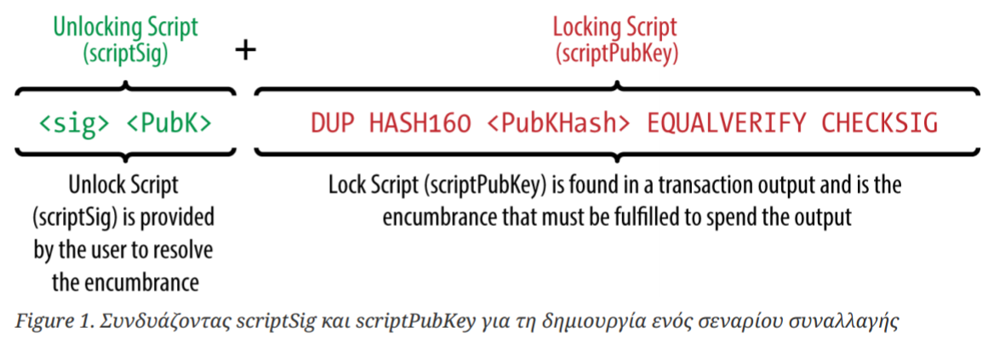
Figure 1. Συνδυάζοντας scriptSig και scriptPubKey για τη δημιουργία ενός σεναρίου συναλλαγής
Γλώσσα Σεναρίων
Η γλώσσα σεναρίων της συναλλαγής bitcoin, που ονομάζεται Script, είναι μία γλώσσα εκτέλεσης στοίβας (stack-based) «reverse-polish notation» τύπου-Forth.
Εάν αυτά σας φαίνονται ασυναρτησίες, τότε μάλλον δεν έχετε μελετήσει γλώσσες προγραμματισμού δεκαετίας '60.
Η Script είναι μία πολύ απλή γλώσσα που σχεδιάστηκε να είναι περιορισμένη στην έκταση της και εκτελέσιμη για μια ποικιλία hardware, ίσως τόσο απλή όσο μία ενσωματωμένη συσκευή όπως μία αριθμομηχανή χειρός (ένα κομπιουτεράκι).
Απαιτεί ελάχιστη επεξεργασία και δε μπορεί να κάνει τίποτα από όλα τα ευφάνταστα πράγματα που μπορούν οι μοντέρνες γλώσσες προγραμματισμού.
Ένα προμελετημένο και απαραίτητο χαρακτηριστικό ασφαλείας όταν έχεις να κάνεις με προγραμματιζόμενα χρήματα.
Η γλώσσα σεναρίων του bitcoin ονομάζεται βασισμένη σε στοίβα (stack-based) επειδή χρησιμοποιεί μία δομή δεδομένων που ονομάζεται στοίβα (stack).
Μία στοίβα είναι μια πολύ απλή δομή δεδομένων, που μπορεί να απεικονιστεί ως μία στοίβα από κάρτες.
Μία στοίβα επιτρέπει μόνο δύο εργασίες: εισαγωγή και εξαγωγή (push and pop).
Η εισαγωγή (push) προσθέτει ένα αντικείμενο στην κορυφή της στοίβας.
Η εξαγωγή (pop) αφαιρεί το αντικείμενο από την κορυφή της στοίβας.
Η γλώσσα σεναρίων εκτελεί το σενάριο με την επεξεργασία κάθε αντικειμένου από τα αριστερά προς τα δεξιά.
Οι αριθμοί (σταθερές ως δεδομένα) εισάγονται στη στοίβα.
Οι τελεστές εισάγουν ή εξάγουν μία ή περισσότερες παραμέτρους από τη στοίβα, δρούνε πάνω σε αυτές και μπορεί κατόπιν να εισάγουν ένα αποτέλεσμα πίσω στη στοίβα.
Για παράδειγμα, ο τελεστής OP_ADD θα εξάγει δύο αντικείμενα από τη στοίβα, θα τα προσθέσει και θα εισάγει το αποτέλεσμα που προκύπτει πάνω στη στοίβα.
Οι λογικοί τελεστές αξιολογούν μία συνθήκη και παράγουν ένα αποτέλεσμα boolean, ΑΛΗΘΕΣ ή ΨΕΥΔΕΣ.
Για παράδειγμα, ο OP_EQUAL εξάγει δύο αντικείμενα από τη στοίβα και εισάγει ΑΛΗΘΕΣ (το ΑΛΗΘΕΣ εκφράζεται με τον αριθμό 1) εάν είναι ίσα ή ΨΕΥΔΕΣ (εκφράζεται με μηδέν) εάν δεν είναι ίσα.
Τα σενάρια συναλλαγών του bitcoin περιέχουν συνήθως έναν λογικό τελεστή, ούτως ώστε να μπορούν να παράγουν το αποτέλεσμα ΑΛΗΘΕΣ που εκφράζει μία έγκυρη συναλλαγή.
Στην Έγκριση σεναρίου του bitcoin με χρήση απλών μαθηματικών, το σενάριο 2 3 OP_ADD 5 OP_EQUAL δείχνει τον αριθμητικό τελεστή OP_ADD να προσθέτει δύο αριθμούς και να βάζει το αποτέλεσμα τους στη στοίβα, ακολουθούμενο από τον λογικό τελεστή OP_EQUAL, ο οποίος ελέγχει ότι το άθροισμα είναι ίσο με 5.
Για συντομία, το πρόθεμα OP_ παραλείπεται στο βήμα-προς-βήμα παράδειγμα.
Το ακόλουθο είναι ένα λίγο πιο περίπλοκο σενάριο, το οποίο υπολογίζει 2 + 7 - 3 + 1.
Σημειώστε ότι όταν το σενάριο περιέχει πολλούς τελεστές στη σειρά, η στοίβα επιτρέπει το αποτέλεσμα μόνο ενός τελεστή να υπολογίζεται από τον επόμενο τελεστή:
2 7 OP_ADD 3 OP_SUB 1 OP_ADD 7 OP_EQUAL
Προσπαθήστε να επαληθεύσετε το προηγούμενο σενάριο μόνοι σας χρησιμοποιώντας χαρτί και μολύβι.
Όταν η εκτέλεση του σεναρίου τελειώσει, θα πρέπει να μείνει στη στοίβα η τιμή ΑΛΗΘΕΣ.
Παρόλο που τα περισσότερα σενάρια κλειδώματος αναφέρονται σε μία διεύθυνση bitcoin ή ένα δημόσιο κλειδί και ως εκ τούτου απαιτούν απόδειξη ιδιοκτησίας για το ξόδεμα των κεφαλαίων, το σενάριο δε χρειάζεται να είναι τόσο περίπλοκο.
Οποιοσδήποτε συνδυασμός σεναρίων κλειδώματος και ξεκλειδώματος που έχει ως αποτέλεσμα την τιμή ΑΛΗΘΕΣ είναι έγκυρος.
Η απλή αριθμητική που χρησιμοποιήσαμε ως παράδειγμα της γλώσσας σεναρίων είναι επίσης ένα έγκυρο σενάριο κλειδώματος και μπορεί να χρησιμοποιηθεί για να κλειδώσει μία έξοδο συναλλαγής.
Χρήση ενός μέρους του σεναρίου με την απλή αριθμητική ως σενάριο κλειδώματος:
3 OP_ADD 5 OP_EQUAL
το οποίο μπορεί να ικανοποιηθεί από μία συναλλαγή που περιέχει μία είσοδο με το σενάριο ξεκλειδώματος:
2
Το λογισμικό έγκρισης συνδυάζει τα σενάρια κλειδώματος και ξεκλειδώματος και το σενάριο που προκύπτει ως αποτέλεσμα είναι το:
2 3 OP_ADD 5 OP_EQUAL
Όπως είδαμε στο βήμα-προς-βήμα παράδειγμα στην Έγκριση σεναρίου του bitcoin με χρήση απλών μαθηματικών, όταν το σενάριο εκτελείται, το αποτέλεσμα είναι OP_TRUE, κάνοντας τη συναλλαγή έγκυρη.
Αυτό δεν είναι μόνο ένα έγκυρο σενάριο κλειδώματος μίας εξόδου συναλλαγής, αλλά και μια αξόδευτη έξοδος (UTXO) που προκύπτει ως αποτέλεσμα και θα μπορούσε να ξοδευτεί από οποιονδήποτε έχει τις μαθηματικές ικανότητες να γνωρίζει ότι ο αριθμός 2 ικανοποιεί το σενάριο.
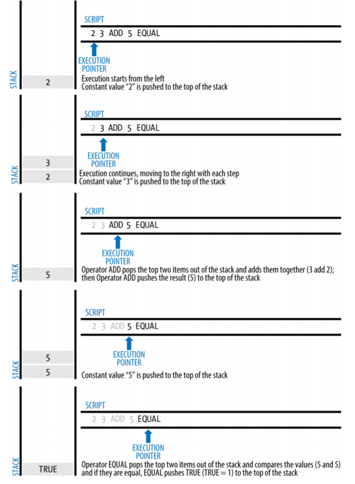
Figure 2. Έγκριση σεναρίου του bitcoin με χρήση απλών μαθηματικών
TIP
Οι συναλλαγές είναι έγκυρες αν το αποτέλεσμα στην κορυφή της στοίβας είναι ΑΛΗΘΕΣ (σημειώνεται ως {0x01}), οποιαδήποτε μη-μηδενική τιμή ή αν η στοίβα είναι κενή μετά την εκτέλεση του σεναρίου.
Οι συναλλαγές είναι άκυρες εάν το αποτέλεσμα στην κορυφή της στοίβας είναι ΨΕΥΔΕΣ (μία μηδενικού μήκους κενή τιμή, σημειώνεται ως {}) ή αν η εκτέλεση του σεναρίου σταματήσει από κάποιον λογικό τελεστή, όπως OP_VERIFY, OP_RETURN ή από κάποιον λογικό ολοκληρωτή (terminator) όπως OP_ENDIF.
Δείτε το [tx_script_ops] για λεπτομέρειες.
Μη-ολοκληρωμένη Τούρινγκ (Turing Incompleteness)
Η γλώσσα σεναρίων της συναλλαγής bitcoin περιέχει πολλούς τελεστές, αλλά είναι σκόπιμα περιορισμένη σε μια συγκεκριμένη λειτουργία -δεν υπάρχουν ούτε βρόγχοι ούτε δυνατότητες για περίπλοκη ροή ελέγχου, παρά μόνο ροή ελέγχου με συνθήκες.
Αυτό διασφαλίζει ότι η γλώσσα δεν είναι ολοκληρωμένη τούρινγκ (Turing Complete) , που σημαίνει ότι τα σενάρια έχουν περιορισμένη περιπλοκότητα και προβλέψιμους χρόνους εκτέλεσης.
Η Script δεν είναι μία γλώσσα γενικού σκοπού.
Αυτοί οι περιορισμοί διασφαλίζουν ότι η γλώσσα δε μπορεί να χρησιμοποιηθεί για δημιουργία μη-πεπερασμένου βρόγχου (infinite loop) ή για άλλες μορφές «λογικής βόμβας» που αν ενσωματωθεί σε μία συναλλαγή μπορεί με κάποιο τρόπο να προκαλέσει επίθεση άρνησης υπηρεσιών (denial-of-service-attack) κατά του δικτύου bitcoin.
Να θυμάστε, κάθε συναλλαγή εγκρίνεται από κάθε πλήρη κόμβο στο δίκτυο bitcoin.
Μία περιορισμένη γλώσσα αποτρέπει το μηχανισμό έγκρισης των συναλλαγών από το να χρησιμοποιηθεί ως τρωτό σημείο έκθεσης του δικτύου σε κίνδυνο.
Έγκριση εν τη απουσία κατάστασης (stateless verification)
Στη γλώσσα σεναρίων των συναλλαγών bitcoin δεν υπάρχει κατάσταση (stateless)· δεν υπάρχει προηγούμενη κατάσταση πριν από την εκτέλεση του σεναρίου, ούτε αποθηκευμένη κατάσταση μετά την εκτέλεση του σεναρίου.
Ως εκ τούτου, όλες οι απαραίτητες πληροφορίες για την εκτέλεση ενός σεναρίου περιέχονται μέσα στο σενάριο, το οποίο μπορεί να εκτελεστεί προβλέψιμα με τον ίδιο τρόπο σε κάθε σύστημα.
Εάν το σύστημα σας εγκρίνει ένα σενάριο, μπορείτε να είστε βέβαιοι ότι κάθε σύστημα στο δίκτυο bitcoin θα εγκρίνει επίσης το σενάριο, που σημαίνει ότι μία έγκυρη συναλλαγή είναι έγκυρη για όλους και αυτό δεν το αμφισβητεί κανένας.
Αυτή η προβλεψιμότητα του αποτελέσματος είναι ένα ουσιώδες πλεονέκτημα του συστήματος bitcoin.
Πρότυπες Συναλλαγές (standard transactions)
Στα πρώτα χρόνια της ανάπτυξης του κώδικα του bitcoin, οι προγραμματιστές εισήγαγαν κάποιους περιορισμούς στους τύπους των σεναρίων που μπορούν να επεξεργαστούν από τον πελάτη αναφοράς.
Αυτοί οι περιορισμοί είναι κωδικοποιημένοι σε μια λειτουργία που ονομάζεται isStandard(), η οποία ορίζει πέντε τύπους «πρότυπων» συναλλαγών.
Αυτοί οι περιορισμοί είναι προσωρινοί και μπορεί έχουν αρθεί τη στιγμή που διαβάζετε αυτό το βιβλίο.
Μέχρι τότε, τα πέντε πρότυπα σενάρια συναλλαγών είναι τα μοναδικά που γίνονται αποδεκτά από τον πελάτη αναφοράς και από τους περισσότερους εξορύκτες που τρέχουν τον πελάτη αναφοράς.
Παρόλο που είναι εφικτό να δημιουργήσεις μία μη-τυπική συναλλαγή με ένα σενάριο που δεν είναι στα πρότυπα του δικτύου, πρέπει να βρεις έναν εξορύκτη ο οποίος δεν ακολουθεί αυτούς τους περιορισμούς για να εξορύξει αυτή τη συναλλαγή σε ένα μπλοκ.
Δείτε τον πηγαίο κώδικα του πελάτη Bitcoin Πυρήνα (η υλοποίηση αναφοράς) για να διαπιστώσετε τι επιτρέπεται επί του παρόντος ως έγκυρο σενάριο συναλλαγής.
Τα πέντε πρότυπα σενάρια συναλλαγών είναι:
- pay-to-public-key-hash (P2PKH) / πληρωμή σε κατακερματισμό δημοσίου κλειδιού,
- pay-to-public-key / πληρωμή σε δημόσιο κλειδί,
- multi-signature (με περιορισμό στα 15 κλειδιά) / πολλαπλών υπογραφών,
- pay-to-script-hash (P2SH) / πληρωμή σε κατακερματισμό σεναρίου,
- data output (OP_RETURN) / έξοδος δεδομένων.
Στις ακόλουθες ενότητες τις περιγράφουμε αναλυτικά.
Πληρωμή σε κατακερματισμό δημοσίου κλειδιού (pay-to-public-key-hash)
Η συντριπτική πλειοψηφία των συναλλαγών που επεξεργάζονται στο δίκτυο bitcoin είναι πληρωμές σε κατακερματισμό δημοσίου κλειδιού (P2PKH) συναλλαγές.
Αυτές περιέχουν ένα σενάριο κλειδώματος το οποίο παρεμποδίζει την έξοδο με ένα κατακερματισμό δημοσίου κλειδιού, που κοινά αναφέρεται ως διεύθυνση bitcoin.
Οι συναλλαγές που πληρώνουν μία διεύθυνση bitcoin περιέχουν P2PKH σενάρια.
Μία κλειδωμένη με P2PKH σενάριο έξοδος μπορεί να ξεκλειδωθεί (ξοδευτεί) παρουσιάζοντας το δημόσιο κλειδί και μία ψηφιακή υπογραφή που δημιουργήθηκε από το αντίστοιχο ιδιωτικό κλειδί.
Για παράδειγμα, ας δούμε ξανά την πληρωμή της Αλίκης στην καφετέρια του Μπομπ.
Η Αλίκη έκανε μία πληρωμή 0,015 bitcoin στη διεύθυνση bitcoin της καφετέριας.
Αυτή η έξοδος συναλλαγής θα έχει ένα σενάριο κλειδώματος της μορφής:
OP_DUP OP_HASH160 <Cafe Public Key Hash> OP_EQUAL OP_CHECKSIG
Το Cafe Public Key Hash ισοδυναμεί με τη διεύθυνση bitcoin της καφετέριας χωρίς την κωδικοποίηση Base58Check.
Οι περισσότερες εφαρμογές δείχνουν τον κατακερματισμό δημοσίου κλειδιού (public key hash) σε δεκαεξαδική κωδικοποίηση και όχι στη συνηθισμένη διεύθυνση bitcoin με μορφή Base58Check που ξεκινάει με «1».
Το προηγούμενο σενάριο κλειδώματος μπορεί να ικανοποιηθεί με ένα σενάριο ξεκλειδώματος της μορφής:
<Cafe Signature> <Cafe Public Key>
Τα δύο σενάρια μαζί σχηματίζουν το ακόλουθο σενάριο έγκρισης:
<Cafe Signature> <Cafe Public Key> OP_DUP OP_HASH160
<Cafe Public Key Hash> OP_EQUAL OP_CHECKSIG
Όταν εκτελείται αυτό το συνδυασμένο σενάριο θα πάρει την τιμή ΑΛΗΘΕΣ μόνο αν το σενάριο ξεκλειδώματος ταιριάζει με τις συνθήκες που έχουν τεθεί από το σενάριο κλειδώματος.
Με άλλα λόγια, το αποτέλεσμα θα είναι ΑΛΗΘΕΣ αν το σενάριο ξεκλειδώματος έχει μία έγκυρη υπογραφή από το ιδιωτικό κλειδί της καφετέριας που αντιστοιχεί στον κατακερματισμό του δημοσίου κλειδιού που έχει τεθεί ως παρεμπόδιση.
Οι εικόνες 5-3 και 5-4 δείχνουν (σε δύο μέρη) μία βήμα-προς-βήμα εκτέλεση του συνδυασμένου σεναρίου, η οποία θα αποδείξει ότι αυτή είναι μία έγκυρη συναλλαγή.
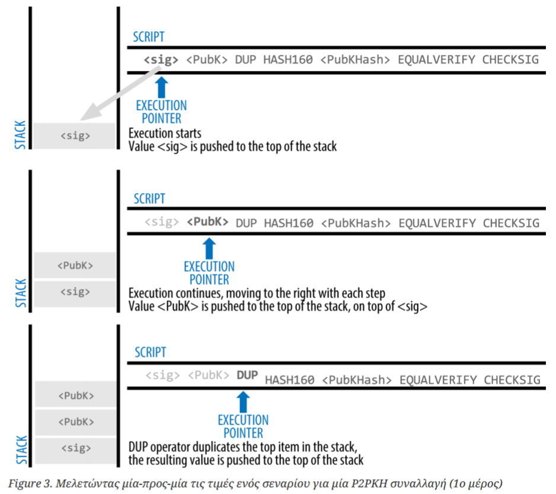
Figure 3. Μελετώντας μία-προς-μία τις τιμές ενός σεναρίου για μία P2PKH συναλλαγή (1ο μέρος)
Πληρωμή σε δημόσιο κλειδί (pay-to-public-key)
Η «πληρωμή σε δημόσιο κλειδί» (pay-to-public-key) είναι μια απλούστερη μορφή πληρωμής bitcoin από την πληρωμή σε κατακερματισμό δημοσίου κλειδιού (pay-to-public-key-hash).
Με αυτή τη μορφή σεναρίου, το δημόσιο κλειδί αποθηκεύεται αυτούσιο στο σενάριο κλειδώματος, αντί για τον κατακερματισμό δημοσίου κλειδιού (P2PKH) που είδαμε νωρίτερα και έχει πιο σύντομη μορφή.
Η πληρωμή σε κατακερματισμό δημοσίου κλειδιού εφευρέθηκε από τον Σατόσι ώστε να κάνει τις διευθύνσεις bitcoin πιο σύντομες για εύκολη χρήση.
Τώρα, την πληρωμή σε δημόσιο κλειδί (pay-to-public-key) τη συναντάμε πιο συχνά σε συναλλαγές coinbase, οι οποίες δημιουργούνται από παλαιότερα λογισμικά εξόρυξης που δεν έχουν αναβαθμιστεί ακόμα για χρήση P2PKH.
Ένα σενάριο κλειδώματος πληρωμής σε δημόσιο κλειδί (pay-to-public-key) μοιάζει κάπως έτσι:
<Public Key A> OP_CHECKSIG
Το αντίστοιχο σενάριο ξεκλειδώματος που πρέπει να παρουσιαστεί για να ξεκλειδώσει αυτόν τον τύπο εξόδου είναι μια απλή υπογραφή, κάπως έτσι:
<Signature from Private Key A>
Το συνδυασμένο σενάριο που εγκρίνεται από το λογισμικό έγκρισης συναλλαγών είναι το:
<Signature from Private Key A> <Public Key A> OP_CHECKSIG
Το σενάριο είναι μια απλή επίκληση του τελεστή CHECKSIG, ο οποίος εγκρίνει αν η υπογραφή ανήκει στο σωστό κλειδί και επιστρέφει ΑΛΗΘΕΣ στη στοίβα.
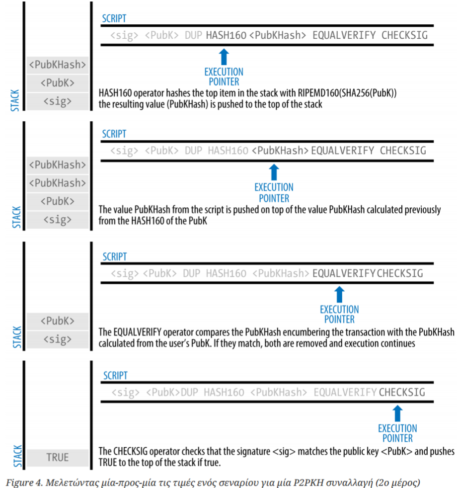
Figure 4. Μελετώντας μία-προς-μία τις τιμές ενός σεναρίου για μία P2PKH συναλλαγή (2ο μέρος)
Πολλαπλών υπογραφών (multi-signature)
Τα σενάρια πολλαπλών υπογραφών (multi-signature) θέτουν μία συνθήκη όπου Ν δημόσια κλειδιά καταγράφονται στο σενάριο και τουλάχιστον Μ από αυτά πρέπει να παρέχουν υπογραφές για να ελευθερωθεί η παρεμπόδιση.
Αυτή η λειτουργία αναφέρεται και ως ένα σύστημα Μ-από-Ν, όπου Ν είναι ο συνολικός αριθμός των κλειδιών και Μ είναι το όριο των υπογραφών που απαιτούνται για έγκριση.
Για παράδειγμα, σε ένα σενάριο πολλαπλών υπογραφών 2-από-3, τρία κλειδιά καταγράφονται ως δυνητικά για υπογραφή και τουλάχιστον δύο από αυτά πρέπει να χρησιμοποιηθούν για τη δημιουργία υπογραφών για μια έγκυρη συναλλαγή που ξοδεύει τα χρηματικά ποσά.
Τη δεδομένη χρονική στιγμή, μπορείτε να δημιουργήσετε λίστες δημοσίων κλειδιών από 1-από-1 έως 15-από-15, που σημαίνει ότι μπορείτε να φτιάξετε οποιοδήποτε συνδυασμό πολλαπλών υπογραφών μέσα σε αυτό το εύρος.
Ο περιορισμός αυτός στα 15 κλειδιά μπορεί μετά την έκδοση του βιβλίου να αρθεί, οπότε ελέγξτε τη λειτουργία isStandard() για να δείτε τι γίνεται αποδεκτό την τρέχουσα χρονική περίοδο.
Η γενική μορφή ενός σεναρίου κλειδώματος που θέτει μία Μ-από-Ν συνθήκη πολλαπλών υπογραφών είναι:
M <Public Key 1> <Public Key 2> ... <Public Key N> N OP_CHECKMULTISIG
όπου Ν είναι ο συνολικός αριθμός των καταγεγραμμένων δημοσίων κλειδιών και Μ είναι το όριο των απαιτούμενων υπογραφών για να ξοδευτεί η έξοδος.
Ένα σενάριο κλειδώματος που θέτει μία 2-από-3 συνθήκη πολλαπλών υπογραφών θα μοιάζει κάπως έτσι:
2 <Public Key A> <Public Key B> <Public Key C> 3 OP_CHECKMULTISIG
Το προηγούμενο σενάριο κλειδώματος μπορεί να ικανοποιηθεί με ένα σενάριο ξεκλειδώματος που περιέχει ζεύγη υπογραφών και δημοσίων κλειδιών:
OP_0 <Signature B> <Signature C>
ή οποιοδήποτε συνδυασμό δύο υπογραφών από τα ιδιωτικά κλειδιά που αντιστοιχούν στα τρία καταγεγραμμένα δημόσια κλειδιά.
ΝΟΤΕ
Το πρόθεμα OP_0 απαιτείται εξαιτίας ενός σφάλματος στην αρχική υλοποίηση του CHECKMULTISIG που εξάγει ένα αντικείμενο «too many items» στη στοίβα και γι' αυτό βάζουμε μια εικονική τιμή στη στοίβα ως σύμβολο κράτησης θέσης, που απλά παραλείπεται κατά την εκτέλεση του σεναρίου.
Τα δύο σενάρια μαζί σχηματίζουν ένα συνδυασμένο σενάριο έγκρισης:
OP_0 <Signature B> <Signature C> 2 <Public Key A> <Public Key B> <Public Key C> 3 OP_CHECKMULTISIG
Όταν εκτελείται αυτό το συνδυασμένο σενάριο θα πάρει την τιμή ΑΛΗΘΕΣ, μόνο αν το σενάριο ξεκλειδώματος ταιριάζει με τις συνθήκες που έχουν τεθεί στο σενάριο κλειδώματος.
Σε αυτήν την περίπτωση, η συνθήκη αντιστοιχεί στο κατά πόσο το σενάριο ξεκλειδώματος έχει μία έγκυρη υπογραφή από τα δύο ιδιωτικά κλειδιά, τα οποία αντιστοιχούν στα δύο από τα τρία δημόσια κλειδιά που έχουν τεθεί ως παρεμπόδιση.
Έξοδος δεδομένων (OP_RETURN) (data output)
Το κατανεμημένο και χρονοσφραγισμένο (timestamped) κατάστιχο του bitcoin, το blockchain, έχει δυνητικές χρήσεις πολύ παραπέρα από τις απλές πληρωμές.
Πολλοί προγραμματιστές έχουν προσπαθήσει να χρησιμοποιήσουν τη γλώσσα σεναρίων των συναλλαγών ώστε να εκμεταλλευτούν την ασφάλεια και ελαστικότητα του συστήματος για χρήση σε εφαρμογές όπως ψηφιακές συμβολαιογραφικές υπηρεσίες, πιστοποιητικά συμμετοχών / μετοχές και έξυπνα συμβόλαια.
Οι πρώιμες προσπάθειες για χρήση της γλώσσας σεναρίων του bitcoin για αυτούς τους σκοπούς περιλάμβανε τη δημιουργία εξόδων συναλλαγών που καταγράφουν δεδομένα στην αλυσίδα των μπλοκ· για παράδειγμα, καταγραφή ενός ψηφιακού αποτυπώματος ενός αρχείου, με τέτοιο τρόπο, όπου οποιοσδήποτε θα μπορούσε να καθιερώσει απόδειξη της ύπαρξης (proof-of-existence) αυτού του αρχείου, σε μία συγκεκριμένη ημερομηνία μέσω αναφοράς σε αυτήν τη συναλλαγή.
Η χρήση της αλυσίδας των μπλοκ του bitcoin για αποθήκευση ασυσχέτιστων με πληρωμές bitcoin δεδομένων είναι ένα αμφιλεγόμενο ζήτημα.
Πολλοί προγραμματιστές εκλαμβάνουν αυτήν τη ενέργεια ως καταχρηστική και θέλουν να την αποθαρρύνουν.
Άλλοι την βλέπουν ως μια επίδειξη των ισχυρών δυνατοτήτων της τεχνολογίας blockchain και θέλουν να ενθαρρύνουν αυτόν τον πειραματισμό.
Αυτοί που αντιτίθενται στο να περικλείονται δεδομένα εκτός πληρωμών ισχυρίζονται ότι προκαλείται «software bloating» στην αλυσίδα των μπλοκ, επιβαρύνοντας εκείνους που τρέχουν τους bitcoin κόμβους με το κόστος της αποθήκευσης στο δίσκο για δεδομένα που η αλυσίδα των μπλοκ δεν ήταν προορισμένη να μεταφέρει.
Συν τοις άλλοις, τέτοιες συναλλαγές δημιουργούν αξόδευτες εκροές (UTXO) που δε μπορούν να ξοδευτούν, αφού χρησιμοποιούν τον προορισμό της διεύθυνσης bitcoin ως ένα πεδίο ελεύθερης μορφής με αποθηκευτικό χώρο 20 μπάιτ.
Επειδή η διεύθυνση χρησιμοποιείται για δεδομένα, δεν έχει αντιστοίχιση σε ιδιωτικό κλειδί και η UTXO που προκύπτει δεν μπορεί πότε να ξοδευτεί· είναι μία παραποιημένη πληρωμή.
Ως εκ τούτου αυτές οι συναλλαγές που δεν ξοδεύονται ποτέ, δεν αφαιρούνται επίσης ποτέ από το σετ των UTXO (UTXO set) και προκαλούν την συνεχόμενη και παντοτινή αύξηση του μεγέθους της UTXO βάσης δεδομένων ή αλλιώς προκαλούν «software bloating».
Στην έκδοση 0.9 του πελάτη Bitcoin Core, ένας συμβιβασμός επετεύχθη με την εισαγωγή του τελεστή OP_RETURN.
Ο OP_RETURN επιτρέπει στους προγραμματιστές να προσθέτουν 80 μπάιτ δεδομένων εκτός πληρωμών σε μία έξοδο συναλλαγής.
Ωστόσο, σε αντίθεση με τη χρήση της «παραποιημένης» UTXO, ο τελεστής OP_RETURN δημιουργεί μία διακριτή αποδεδειγμένα αδύνατη να ξοδευτεί έξοδο, η οποία δε χρειάζεται να αποθηκευτεί στο σετ των UTXO (UTXO set).
Οι έξοδοι OP_RETURN καταγράφονται στην αλυσίδα των μπλοκ και έτσι καταναλώνουν αποθηκευτικό χώρο στο δίσκο, συμμετέχοντας στην αύξηση του μεγέθους της αλυσίδας των μπλοκ.
Δεν αποθηκεύονται στην ομάδα των UTXO και ως εκ τούτου δεν προκαλούν «bloating» στην ομάδα μνήμης των UTXO (UTXO memory pool) και δεν επιβαρύνουν τους πλήρεις κόμβους με τα κόστη από ακριβότερες RAM.
Τα OP_RETURN σενάρια μοιάζουν κάπως έτσι:
OP_RETURN <data>
Το τμήμα με τα δεδομένα περιορίζεται σε 80 μπάιτ και τις περισσότερες φορές αντιπροσωπεύει ένα κατακερματισμό, όπως το αποτέλεσμα ενός αλγόριθμου SHA256 (32 μπάιτ).
Πολλές εφαρμογές βάζουν ένα πρόθεμα μπροστά από τα δεδομένα ως αναγνωριστικό για την εκάστοτε εφαρμογή.
Για παράδειγμα, η ψηφιακή συμβολαιογραφική υπηρεσία Proof of Existence, χρησιμοποιεί ένα πρόθεμα 8 μπάιτ, «DOCPROOF», το οποίο είναι ASCII κωδικοποιημένο ως 44f4350524f4f46 σε δεκαεξαδική μορφή.
Έχετε υπόψη ότι δεν υπάρχει «σενάριο ξεκλειδώματος» που αντιστοιχεί στο σενάριο OP_RETURN που θα μπορούσε να «ξοδέψει» μία έξοδο OP_RETURN.
Η όλη σημασία του OP_RETURN είναι ότι δε μπορείτε να ξοδέψετε τα κλειδωμένα σε αυτήν την έξοδο χρήματα και ως εκ τούτου δεν χρειάζεται να κρατούνται στην συλλογή των αξόδευτων εξόδων (UTXO set) ως δυνητικά δαπανήσιμα - το σενάριο OP_RETURN είναι αποδεδειγμένα μη-δαπανήσιμο.
Το OP_RETURN είναι συνήθως μία έξοδος με μηδενικό ποσό bitcoin, επειδή ότι bitcoin εκχωρούνται σε μια τέτοια έξοδο είναι σίγουρα χαμένα για πάντα.
Εάν το λογισμικό έγκρισης σεναρίων συναντήσει ένα σενάριο OP_RETURN, σταματάει αμέσως την εκτέλεση του σεναρίου έγκρισης και σημειώνει τη συναλλαγή ως άκυρη.
Έτσι, εάν κατά λάθος αναφερθείτε σε μία έξοδο OP_RETURN ως είσοδο σε μία συναλλαγή, η συναλλαγή αυτή είναι άκυρη.
Μία πρότυπη συναλλαγή (μία σύμφωνη με τη λειτουργία isStandard()) μπορεί να έχει μόνο μία έξοδο OP_RETURN.
Ωστόσο, η OP_RETURN μπορεί να συνδυαστεί με εξόδους οποιουδήποτε άλλου τύπου σε μία συναλλαγή.
Δύο νέες επιλογές στη γραμμή εντολών έχουν προστεθεί στον Bitcoin Πυρήνα από την έκδοση 0.10.
Η επιλογή datacarrier ελέγχει την μετάδοση και εξόρυξη των OP_RETURN συναλλαγών, με την προεπιλογή να τίθεται σε «1» για να τις επιτρέπει.
Η επιλογή datacarriersize δέχεται μία αριθμητική παράμετρο που ορίζει το μέγιστο μέγεθος σε μπάιτ των OP_RETURN δεδομένων, που έχει ως προεπιλογή τα 40 μπάιτ.
NOTE
Η συναλλαγή OP_RETURN είχε αρχικά προταθεί με όριο τα 80 μπάιτ, αλλά το όριο ελαττώθηκε στα 40 μπάιτ όταν η λειτουργία είχε κυκλοφορήσει.
Το Φεβρουάριο του 2015, στην έκδοση 0.10 του Bitcoin Πυρήνα, το όριο αυξήθηκε πάλι στα 80 μπάιτ.
Οι κόμβοι μπορούν να επιλέξουν να μην μεταδώσουν ή εξορύξουν την OP_RETURN ή μόνο να μεταδώσουν και εξορύξουν την OP_RETURN που περιέχει λιγότερο από 80 μπάιτ δεδομένων.
Πληρωμή σε κατακερματισμό σεναρίου (pay-to-script-hash)
Η πληρωμή σε κατακερματισμό σεναρίου (pay-to-script-hash) (P2SH) εισήχθη το 2012 ως ένας πολύ ισχυρός τύπος συναλλαγής που απλοποιεί τη χρήση περίπλοκων σεναρίων συναλλαγών.
Για να εξηγήσουμε την ανάγκη ύπαρξης της P2SH, ας δούμε ένα παράδειγμα στην πράξη.
Στο [ch01_intro_what_is_bitcoin] παρουσιάσαμε τον Μοχάμεντ, έναν εισαγωγέα ηλεκτρονικών ειδών στο Dubai.
Η εταιρία του Μοχάμεντ κάνει εντατική χρήση της λειτουργίας του bitcoin των πολλαπλών υπογραφών για τους εταιρικούς της λογαριασμούς.
Τα σενάρια πολλαπλών υπογραφών είναι μία από τις πιο συνηθισμένες χρήσεις των εξελιγμένων σεναριακών δυνατοτήτων του bitcoin και είναι μια πανίσχυρη λειτουργία.
Η εταιρία του Μοχάμεντ χρησιμοποιεί ένα σενάριο πολλαπλών υπογραφών για όλες τις πληρωμές των πελατών της, που είναι γνωστό σε οικονομικούς όρους ως «εισπρακτέοι λογαριασμοί» (accounts receivable / AR).
Με το σύστημα πολλαπλών υπογραφών, ό,τι πληρωμές γίνονται από τους πελάτες κλειδώνονται, έτσι ώστε να απαιτούνται το λιγότερο δύο υπογραφές για να ελευθερωθούν τα χρηματικά ποσά· από τον Μοχάμεντ και έναν εκ των συνεργατών του ή από το δικηγόρο του που έχει και αυτός ένα κλειδί.
Ένα σύστημα πολλαπλών υπογραφών όπως αυτό, προσφέρει εργαλεία εταιρικής διακυβέρνησης και προστατεύει εναντίον κλοπής, υπεξαίρεσης ή απώλειας.
Το σενάριο που προκύπτει ως αποτέλεσμα είναι αρκετά μακρύ και μοιάζει κάπως έτσι:
2 <Mohammed's Public Key> <Partner1 Public Key> <Partner2 Public Key> <Partner3 Public
Key> <Attorney Public Key> 5 OP_CHECKMULTISIG
Παρόλο που τα σενάρια πολλαπλών υπογραφών είναι μία πανίσχυρη λειτουργία, είναι δυσκίνητα στη χρήση.
Με βάση το προηγούμενο σενάριο, ο Μοχάμεντ θα πρέπει να μεταδώσει το σενάριο σε κάθε πελάτη πριν την πληρωμή.
Ο πελάτης θα πρέπει να χρησιμοποιήσει ειδικό bitcoin λογισμικό πορτοφόλι με δυνατότητα για δημιουργία προσαρμοσμένου στις απαιτήσεις της κάθε συναλλαγής σεναρίου.
Επιπλέον, η συναλλαγή που προκύπτει ως αποτέλεσμα θα είναι πέντε περίπου φορές μεγαλύτερη από μία απλή συναλλαγή πληρωμής, επειδή το σενάριο περιέχει πολύ μεγάλα σε μάκρος δημόσια κλειδιά.
Η δυσκολία αυτής της υπερμεγέθους συναλλαγής θα επιβαρύνει τους πελάτες λόγω των χρεώσεων συναλλαγών.
Τελικά, ένα μεγάλο σενάριο συναλλαγής, όπως αυτό, θα μεταφερθεί στην ομάδα των αξόδευτων εξόδων (UTXO set) στη RAM σε κάθε πλήρη κόμβο μέχρι να ξοδευτεί.
Όλα αυτά τα προβλήματα καθιστούν τα πολύπλοκα σενάρια εξόδων δύσκολα στην πράξη.
Η συναλλαγή «πληρωμή σε κατακερματισμό σεναρίου» (pay-to-script-hash) (P2SH) αναπτύχθηκε για να επιλύσει αυτές τις πρακτικές δυσκολίες και να κάνει τη χρήση των πολύπλοκων σεναρίων τόσο εύκολη όσο είναι και η πληρωμή σε μία διεύθυνση bitcoin.
Με τις πληρωμές P2SH, το πολύπλοκο σενάριο κλειδώματος αντικαθίσταται με το ψηφιακό του αποτύπωμα, έναν κρυπτογραφικό κατακερματισμό.
Όταν μια συναλλαγή προσπαθεί να ξοδέψει την UTXO που παρουσιάζεται στη συνέχεια, πρέπει να περιέχει το σενάριο που ταιριάζει στον κατακερματισμό, μαζί με το σενάριο ξεκλειδώματος.
Με απλά λόγια, P2SH σημαίνει «πλήρωσε το σενάριο που ταιριάζει στον κατακερματισμό, το οποίο θα παρουσιαστεί αργότερα όταν αυτή η έξοδος έχει ξοδευτεί»
Στις P2SH συναλλαγές, το σενάριο κλειδώματος που αντικαθίσταται από έναν κατακερματισμό αναφέρεται ως σενάριο ανάκτησης (redeem script) επειδή παρουσιάζεται στο σύστημα κατά τη διάρκεια της ανάκτησης παρά ως ένα σενάριο κλειδώματος.
Ο Πολύπλοκο σενάριο χωρίς P2SH δείχνει το σενάριο χωρίς P2SH και ο Πολύπλοκο σενάριο ως P2SH δείχνει το ίδιο σενάριο κωδικοποιημένο με P2SH.
Table 4. Πολύπλοκο σενάριο χωρίς P2SH
| Locking Script | 2 PubKey1 PubKey2 PubKey3 PubKey4 PubKey5 5 OP_CHECKMULTISIG |
| Unlocking Script | Sig1 Sig2 |
| Redeem Script | 2 PubKey1 PubKey2 PubKey3 PubKey4 PubKey5 5 OP_CHECKMULTISIG |
| Locking Script | OP_HASH160 <20-byte hash of redeem script> OP_EQUAL |
| Unlocking Script | Sig1 Sig2 redeem script |
Όπως μπορείτε να δείτε από τους πίνακες, μετά τον P2SH κατακερματισμό το πολύπλοκο σενάριο που περιέχει τις συνθήκες για ξόδεμα της εξόδου (σενάριο ανάκτησης) δεν παρουσιάζεται στο σενάριο κλειδώματος.
Αντί αυτού, μόνο ένας κατακερματισμός αυτού είναι στο σενάριο κλειδώματος και το σενάριο ανάκτησης παρουσιάζεται στη συνέχεια, ως τμήμα του σενάριο ξεκλειδώματος όταν ξοδεύεται η έξοδος.
Αυτή η λειτουργία αλλάζει την επιβάρυνση σε χρεώσεις όπως και την πολυπλοκότητα από τον αποστολέα στον παραλήπτη (αυτόν που ξοδεύει) τη συναλλαγή.
Ας δούμε την εταιρία του Μοχάμεντ, το πολύπλοκο σενάριο πολλαπλών υπογραφών και τα P2SH τα οποία προκύπτουν ως αποτέλεσμα.
Αρχικά, το σενάριο πολλαπλών υπογραφών που η εταιρία του Μοχάμεντ χρησιμοποιεί για όλες τις εισερχόμενες πληρωμές από πελάτες:
2 <Mohammed's Public Key> <Partner1 Public Key> <Partner2 Public Key> <Partner3 Public Key> <Attorney Public Key> 5 OP_CHECKMULTISIG
Εάν οι λέξεις που κρατάνε τις θέσεις στον κώδικα αντικατασταθούν από πραγματικά δημόσια κλειδιά (δείχνονται εδώ ως αριθμοί 520 μπιτ ξεκινώντας από το 04) μπορείτε να δείτε ότι το σενάριο γίνεται πολύ μακρύ:
2
04C16B8698A9ABF84250A7C3EA7EEDEF9897D1C8C6ADF47F06CF73370D74DCCA01CDCA79DCC5C395D7EEC6984D83F1F50C900A24DD47F569FD4193AF5DE762C58704A2192968D8655D6A935BEAF2CA23E3FB87A3495E7AF308EDF08DAC3C1FCBFC2C75B4B0F4D0B1B70CD2423657738C0C2B1D5CE65C97D78D0E34224858008E8B49047E63248B75DB7379BE9CDA8CE5751D16485F431E46117B9D0C1837C9D5737812F393DA7D4420D7E1A9162F0279CFC10F1E8E8F3020DECDBC3C0DD389D99779650421D65CBD7149B255382ED7F78E946580657EE6FDA162A187543A9D85BAAA93A4AB3A8F044DADA618D087227440645ABE8A35DA8C5B73997AD343BE5C2AFD94A5043752580AFA1ECED3C68D446BCAB69AC0BA7DF50D56231BE0AABF1FDEEC78A6A45E394BA29A1EDF518C022DD618DA774D207D137AAB59E0B000EB7ED238F4D800 5 OP_CHECKMULTISIG
Ολόκληρο αυτό το σενάριο μπορεί αντ' αυτού να εκπροσωπηθεί από έναν κρυπτογραφικό κατακερματισμό 20 μπάιτ, πρώτα εφαρμόζοντας τον αλγόριθμο SHA256 και μετά εφαρμόζοντας τον αλγόριθμο RIPEMD160 στο αποτέλεσμα αυτού.
Ο κατακερματισμός των 20 μπάιτ του προηγούμενου σεναρίου είναι:
54c557e07dde5bb6cb791c7a540e0a4796f5e97e
Μία συναλλαγή P2SH κλειδώνει την έξοδο σε αυτόν τον κατακερματισμό αντί για το μακρύτερο σενάριο, χρησιμοποιώντας το σενάριο κλειδώματος:
OP_HASH160 54c557e07dde5bb6cb791c7a540e0a4796f5e97e OP_EQUAL
το οποίο, όπως μπορείτε να δείτε, είναι πολύ πιο κοντό.
Αντί για «πλήρωσε σε αυτό το πολλαπλών υπογραφών σενάριο των 5 κλειδιών», η ισοδύναμη P2SH συναλλαγή είναι «πλήρωσε σε ένα σενάριο με αυτόν τον κατακερματισμό».
Ένας πελάτης που κάνει μία πληρωμή στην εταιρία του Μοχάμεντ χρειάζεται μόνο να συμπεριλάβει αυτό το πολύ κοντύτερο σενάριο κλειδώματος στην πληρωμή του.
Όταν ο Μοχάμεντ θέλει να ξοδέψει αυτήν την αξόδευτη εκροή (UTXO), πρέπει να παρουσιαστεί το αυθεντικό σενάριο ανάκτησης (αυτό του οποίου ο κατακερματισμός κλείδωσε την UTXO) και τις απαραίτητες υπογραφές για να ξεκλειδωθεί, ως εξής:
<Sig1> <Sig2> <2 PK1 PK2 PK3 PK4 PK5 5 OP_CHECKMULTISIG>
Τα δύο σενάρια συνδυάζονται σε δύο στάδια.
Πρώτα, το σενάριο ανάκτησης ελέγχεται με το σενάριο κλειδώματος για να εξασφαλιστεί ότι ο κατακερματισμός είναι ο σωστός:
<2 PK1 PK2 PK3 PK4 PK5 5 OP_CHECKMULTISIG> OP_HASH160 <redeem scriptHash> OP_EQUAL
Εάν το σενάριο ανάκτησης ταιριάζει, το σενάριο ξεκλειδώματος εκτελείται από μόνο του, για να ξεκλειδώσει το σενάριο ανάκτησης:
<Sig1> <Sig2> 2 PK1 PK2 PK3 PK4 PK5 5 OP_CHECKMULTISIG
Διευθύνσεις πληρωμής σε κατακερματισμό σεναρίου (pay-to-script-hash)
Ένα ακόμα σημαντικό κομμάτι της P2SH λειτουργίας είναι η δυνατότητα για κωδικοποίηση ενός κατακερματισμού σεναρίου ως μία διεύθυνση, όπως ορίζεται στην BIP0013.
Οι P2SH διευθύνσεις είναι Base58Check κωδικοποιήσεις του κατακερματισμού των 20 μπάιτ ενός σεναρίου, όπως ακριβώς και οι διευθύνσεις bitcoin που είναι Base58Check κωδικοποιήσεις του κατακερματισμού των 20 μπάιτ ενός δημοσίου κλειδιού.
Οι διευθύνσεις P2SH χρησιμοποιούν το πρόθεμα «5» της έκδοσης μπάιτ, το οποίο έχει ως αποτέλεσμα οι Base58Check-κωδικοποιημένες διευθύνσεις να ξεκινούν από «3».
Για παράδειγμα, το πολύπλοκο σενάριο του Μοχάμεντ, κατακερματισμένο και Base58Check κωδικοποιημένο ως μία P2SH διεύθυνση γίνεται 39RF6JqABiHdYHkfChV6USGMe6Nsr66Gzw.
Τώρα, ο Μοχάμεντ μπορεί να δώσει τη «διεύθυνση» του στους πελάτες του και αυτοί μπορούν να χρησιμοποιήσουν σχεδόν οποιοδήποτε πορτοφόλι για να κάνουν μία πληρωμή, όπως με μια κανονική διεύθυνση bitcoin.
Το πρόθεμα 3 τους δίνει μια ιδέα ότι πρόκειται για ειδικό τύπο διεύθυνσης, έναν που αντιστοιχεί σε ένα σενάριο αντί για δημόσιο κλειδί, που λειτουργεί όμως ακριβώς όπως μία πληρωμή σε μία διεύθυνση bitcoin.
Οι διευθύνσεις P2SH κρύβουν όλη αυτήν την πολυπλοκότητα, έτσι ώστε το άτομο που κάνει μία πληρωμή να μην βλέπει το σενάριο.
Οφέλη της πληρωμής σε κατακερματισμό σεναρίου
Η λειτουργία της πληρωμής σε κατακερματισμό σεναρίου (P2SH) προσφέρει τα ακόλουθα οφέλη σε σύγκριση με την απευθείας χρήση των πολύπλοκων σεναρίων στο κλείδωμα εξόδων:
• Τα πολύπλοκα σενάρια αντικαθίστανται από κοντύτερα αποτυπώματα στην έξοδο της συναλλαγής, κάνοντας τη συναλλαγή μικρότερη.
• Τα σενάρια μπορούν να κωδικοποιηθούν ως μία διεύθυνση, έτσι ώστε ο αποστολέας και το πορτοφόλι του αποστολέα να μην χρειάζονται πολύπλοκη μηχανική για να υλοποιήσουν μία P2SH.
• Η P2SH μετατοπίζει την επιβάρυνση της κατασκευής του σεναρίου στον παραλήπτη, όχι στον αποστολέα.
• Η P2SH μετατοπίζει την επιβάρυνση για αποθηκευτικό χώρο για το μακρύ σενάριο από την έξοδο (η οποία είναι στην συλλογή των UTXO) στην έισοδο (αποθηκευμένη στην αλυσίδα των μπλοκ).
• Η P2SH μετατοπίζει την επιβάρυνση για το μακρύ σενάριο από τον πραγματικό χρόνο (πληρωμή) σε μελλοντικό χρόνο (όταν έχει ξοδευτεί).
• Η P2SH μετατοπίζει το κόστος χρέωσης συναλλαγής ενός σεναρίου μεγάλου σε μάκρος από τον αποστολέα στον παραλήπτη, ο οποίος πρέπει να συμπεριλάβει το μακρύ σενάριο ανάκτησης για να το ξοδέψει.
Σενάριο Ανάκτησης και «isStandard» έγκριση
Πριν την έκδοση 0.9.2 του πελάτη Bitcoin Πυρήνα, η πληρωμή σε κατακερματισμό σεναρίου (P2SH) ήταν περιορισμένη στους πρότυπους τύπους σεναρίων συναλλαγών bitcoin, από τη λειτουργία isStandard().
Αυτό σημαίνει ότι το σενάριο ανάκτησης που παρουσιάζεται στη συναλλαγή που ξοδεύει θα μπορούσε να είναι ένα από τους συγκεκριμένους τύπους: P2PK, P2PKH ή πολλαπλών υπογραφών, εξαιρώντας το OP_RETURN και το P2SH αυτό καθαυτό.
Από την έκδοση 0.9.2 του πελάτη Bitcoin Πυρήνα, οι P2SH συναλλαγές μπορούν να περιέχουν οποιοδήποτε έγκυρο σενάριο, κάνοντας το πρότυπο P2SH πολύ πιο ευέλικτο επιτρέποντας τον πειραματισμό με πολλούς καινοτόμους και πολύπλοκους τύπους συναλλαγών.
Σημειώστε ότι δεν υπάρχει η δυνατότητα να βάλετε ένα P2SH μέσα σε ένα P2SH σενάριο ανάκτησης, επειδή αυτή η λειτουργία δεν είναι αναδρομική. Δεν υπάρχει επίσης, ακόμα, η δυνατότητα να χρησιμοποιήσετε το OP_RETURN σε ένα σενάριο ανάκτησης, επειδή το OP_RETURN δε μπορεί εξ' ορισμού να ανακτηθεί.
Σημειώστε ότι επειδή το σενάριο ανάκτησης δεν παρουσιάζεται στο δίκτυο μέχρι να προσπαθήσετε να ξοδέψετε την P2SH έξοδο, εάν κλειδώσετε μία έξοδο με τον κατακερματισμό μία άκυρης συναλλαγής, αυτή θα προχωρήσει παρ' αυτά.
Ωστόσο, δε θα είστε σε θέση να την ξοδέψετε, επειδή η συναλλαγή αυτή που περιέχει το σενάριο ανάκτησης δε θα γίνει αποδεκτή, αφού είναι ένα άκυρο σενάριο.
Αυτό δημιουργεί ένα ρίσκο, επειδή μπορεί να κλειδώσετε bitcoin σε μία P2SH η οποία δε μπορεί να ξοδευτεί αργότερα.
Το δίκτυο θα κάνει αποδεκτή την P2SH παρεμπόδιση, ακόμα και αν αντιστοιχεί σε ένα άκυρο σενάριο ανάκτησης, επειδή ο κατακερματισμός του σεναρίου δεν δίνει κάποια ένδειξη του σεναρίου που εκπροσωπεί.
WARNING:
Τα P2SH σενάρια κλειδώματος περιέχουν τον κατακερματισμό ενός σεναρίου ανάκτησης, το οποίο δε δίνει καθόλου στοιχεία για το περιεχόμενο του σεναρίου ανάκτησης αυτό καθ' αυτό.
Η P2SH συναλλαγή θα λογίζεται ως έγκυρη και αποδεκτή ακόμα και αν το σενάριο ανάκτησης είναι άκυρο.
Μπορεί κατά λάθος να κλειδώσετε bitcoin με τέτοιο τρόπο που δε μπορούν να ξοδευτούν αργότερα.
6. Το Δίκτυο Bitcoin
Αρχιτεκτονική Peer-to-Peer Δικτύου
Το bitcoin είναι ένα peer-to-peer αρχιτεκτονικά δομημένο δίκτυο ως ένα στρώμα πάνω στο Διαδίκτυο.
Ο όρος peer-to-peer, ή P2P, σημαίνει ότι οι υπολογιστές που συμμετέχουν στο δίκτυο είναι ομότιμοι «peer» μεταξύ τους, ισάξιοι, χωρίς να υπάρχουν «ειδικοί» κόμβοι· όλοι οι κόμβοι έχουν επιβαρυνθεί να παρέχουν τις υπηρεσίες τους στο δίκτυο.
Οι κόμβοι του δικτύου διασυνδέονται στο δίκτυο ως πλέγμα (mesh network) με «επίπεδη» τοπολογία.
Δεν υπάρχει κανένας διακομιστής, καμία κεντρικά σχεδιασμένη υπηρεσία και καμιά ιεραρχία μέσα στο δίκτυο.
Οι κόμβοι σε ένα peer-to-peer δίκτυο και παρέχουν και καταναλώνουν υπηρεσίες την ίδια στιγμή ενεργώντας με αμοιβαιότητα (reciprocity) ως κίνητρο της συμμετοχής τους.
Τα peer-to-peer δίκτυα είναι εγγενώς ανθεκτικά, αποκεντρωμένα και ανοιχτά.
Το πιο εξέχων παράδειγμα μιας P2P αρχιτεκτονικής δικτύου ήταν το Διαδίκτυο στην πρώιμη του κατάσταση, όπου οι κόμβοι στο IP δίκτυο ήταν ισάξιοι.
Η σημερινή αρχιτεκτονική του Διαδικτύου είναι πιο ιεραρχική, ωστόσο το Πρωτόκολλο του Διαδικτύου εξακολουθεί να διατηρεί στην ουσία την επίπεδη τοπολογία.
Πέρα από το bitcoin, η μεγαλύτερη και πιο επιτυχημένη εφαρμογή της P2P τεχνολογίας είναι ο διαμοιρασμός αρχείων με το Napster ως πρωτοπόρο και το BitTorrent ως τη πιο πρόσφατη εξέλιξη αυτής της αρχιτεκτονικής.
Η αρχιτεκτονική του bitcoin P2P δικτύου είναι πολύ περισσότερο από μια επιλογή τοπολογίας.
Το bitcoin σχεδιάστηκε να είναι ένα peer-to-peer σύστημα μετρητών και η αρχιτεκτονική του δικτύου αντανακλάται πάνω σε αυτήν την ιδέα και τη χρησιμοποιεί ως θεμέλιο και βασικό χαρακτηριστικό.
Ο πυρήνας της σκέψης και η αρχή ολόκληρου του σχεδιασμού του bitcoin είναι ο αποκεντρωμένος έλεγχος, ο οποίος μπορεί να επιτευχθεί και να διατηρηθεί μόνο σε ένα επίπεδο και αποκεντρωμένο P2P δίκτυο συναίνεσης.
Ο όρος «δίκτυο bitcoin» αναφέρεται σε μια συλλογή από κόμβους που τρέχουν το P2P bitcoin πρωτόκολλο.
Μαζί με το bitcoin P2P πρωτόκολλο υπάρχουν και άλλα πρωτόκολλα, όπως το Stratum, τα οποία χρησιμοποιούνται για εξόρυξη και lightweight ή mobile πορτοφόλια.
Αυτά τα πρόσθετα πρωτόκολλα παρέχονται από διακομιστές δρομολόγησης για πύλες δικτύου (gateways), που έχουν πρόσβαση στο δίκτυο bitcoin και που χρησιμοποιώντας το bitcoin P2P πρωτόκολλο επεκτείνουν στη συνέχεια αυτό το δίκτυο σε κόμβους που τρέχουν άλλα πρωτόκολλα.
Για παράδειγμα, οι Stratum διακομιστές συνδέονται με Stratum κόμβους εξόρυξης μέσω του Stratum πρωτοκόλλου στο κύριο bitcoin δίκτυο και γεφυρώνουν το Stratum πρωτόκολλο με το bitcoin P2P πρωτόκολλο.
Χρησιμοποιούμε την ορολογία «επεκταμένο δίκτυο bitcoin» (extended bitcoin network) για να αναφερθούμε στο συνολικό δίκτυο που περιλαμβάνει το P2P bitcoin πρωτόκολλο, τα πρωτόκολλα ομάδων εξόρυξης (mining pool), το Stratum πρωτόκολλο και οποιαδήποτε άλλα σχετικά πρωτόκολλα που ενώνουν τα συστατικά στοιχεία του συστήματος bitcoin.
Είδη Κόμβων και Ρόλοι
Παρόλο που οι κόμβοι στο P2P bitcoin δίκτυο είναι ισάξιοι, μπορεί να αναλάβουν διαφορετικούς ρόλους με βάση τη λειτουργικότητα που υποστηρίζουν.
Ένας κόμβος bitcoin είναι μία συλλογή από λειτουργίες:
δρομολόγηση, βάση δεδομένων αλυσίδας των μπλοκ, εξόρυξη και υπηρεσίες πορτοφολιού.
Ένας πλήρης κόμβος με όλες αυτές τις τέσσερις λειτουργίες φαίνεται στην Ένας κόμβος του δικτύου bitcoin με όλες αυτές τις τέσσερις λειτουργίες: πορτοφόλι, miner, πλήρης βάση δεδομένων blockchain και δρομολόγηση δικτύου.
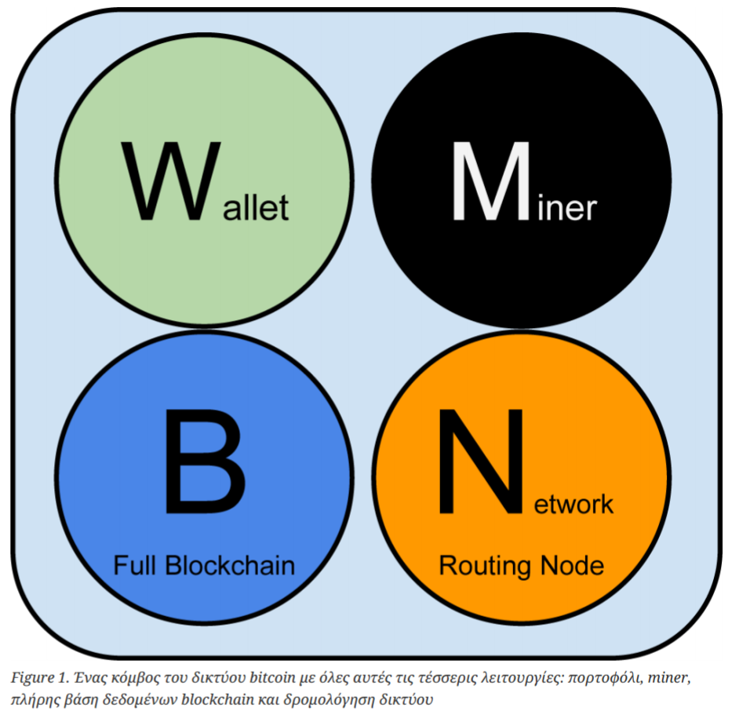
Figure 1. Ένας κόμβος του δικτύου bitcoin με όλες αυτές τις τέσσερις λειτουργίες: πορτοφόλι, miner, πλήρης βάση δεδομένων blockchain και δρομολόγηση δικτύου
Όλοι οι κόμβοι περιλαμβάνουν λειτουργία δρομολόγησης για να συμμετέχουν στο δίκτυο, ενώ μπορεί παράλληλα να περιλαμβάνουν και άλλη λειτουργία.
Όλοι οι κόμβοι εγκρίνουν και διαδίδουν συναλλαγές και μπλοκ, ανακαλύπτοντας και διατηρώντας συνδέσεις με ομότιμους κόμβους (peer).
Στο παράδειγμα με τον πλήρη κόμβο στην Ένας κόμβος του δικτύου bitcoin με όλες αυτές τις τέσσερις λειτουργίες: πορτοφόλι, miner, πλήρης βάση δεδομένων blockchain και δρομολόγηση δικτύου, η λειτουργία δρομολόγησης σημειώνεται με έναν πορτοκαλί κύκλο που ονομάζεται «Network Routing Node».
Μερικοί κόμβοι, που ονομάζονται πλήρεις κόμβοι, διατηρούν, επίσης, ένα ολόκληρο και ενημερωμένο αντίγραφο της αλυσίδας των μπλοκ (blockchain).
Οι πλήρεις κόμβοι μπορούν αυτόνομα και αυτόκλητα να επαληθεύουν οποιαδήποτε συναλλαγή εν τη απουσία εξωτερικής αναφοράς.
Μερικοί κόμβοι διατηρούν μόνο ένα υποσύνολο της αλυσίδας των μπλοκ και εγκρίνουν συναλλαγές χρησιμοποιώντας μία μέθοδο που ονομάζεται απλοποιημένη επαλήθευση πληρωμών (Simplified Payment Verification) (SPV).
Αυτοί οι κόμβοι είναι γνωστοί ως lightweight ή SPV κόμβοι.
Στο παράδειγμα της εικόνας με τον πλήρη κόμβο, η λειτουργία του πλήρη κόμβου με ολόκληρη τη βάση δεδομένων της αλυσίδας των μπλοκ σημειώνεται με έναν μπλε κύκλο που ονομάζεται «Full Blockchain».
Στην Το επεκταμένο δίκτυο bitcoin απεικονίζοντας διάφορους τύπους κόμβων, πύλες δικτύων και πρωτόκολλα, οι κόμβοι SPV είναι σχεδιασμένοι χωρίς τον μπλε κύκλο, υποδεικνύοντας ότι δεν έχουν ένα πλήρες αντίγραφο της αλυσίδας των μπλοκ.
Οι κόμβοι εξόρυξης ανταγωνίζονται για τη δημιουργία νέων μπλοκ, τρέχοντας εξειδικευμένο υλικό για να επιλύουν τον αλγόριθμο απόδειξης εργασίας (proof-of-work).
Μερικοί κόμβοι εξόρυξης είναι επίσης και πλήρεις κόμβοι, διατηρώντας ένα πλήρες αντίγραφο της αλυσίδας των μπλοκ, ενώ άλλοι είναι lightweight κόμβοι που συμμετέχουν σε ομάδα εξόρυξης (mining pool) και εξαρτώνται από τον διακομιστή της εκάστοτε ομάδας που διατηρεί έναν πλήρη κόμβο.
Η λειτουργία εξόρυξης σημειώνεται στον πλήρη κόμβο ως ένας μαύρος κύκλος που ονομάζεται «Miner».
Τα wallet των χρηστών μπορούν να είναι μέρος ενός πλήρη κόμβου, που συνήθως είναι ένας επιτραπέζιος bitcoin πελάτης.
Ολοένα και περισσότερο, πολλά wallet, ειδικά εκείνα που σχεδιάζονται για να τρέχουν σε συσκευές με περιορισμένους πόρους, όπως σε smartphones, είναι κόμβοι SPV.
Η λειτουργία wallet σημειώνεται στην Ένας κόμβος του δικτύου bitcoin με όλες αυτές τις τέσσερις λειτουργίες: πορτοφόλι, miner, πλήρης βάση δεδομένων blockchain και δρομολόγηση δικτύου ως ένας πράσινος κύκλος που ονομάζεται «Wallet».
Εκτός από τους κύριους τύπους κόμβων του bitcoin P2P πρωτοκόλλου, υπάρχουν διακομιστές και κόμβοι που τρέχουν άλλα πρωτόκολλα, όπως εξειδικευμένα πρωτόκολλα ομάδων εξόρυξης και πρωτόκολλα πρόσβασης για lightweight πελάτη.
Η Διάφοροι τύποι κόμβων στο επεκταμένο δίκτυο bitcoin δείχνει τους πιο κοινούς τύπους κόμβους στο επεκταμένο δίκτυο bitcoin.
Το Επεκταμένο Δίκτυο Bitcoin (extended bitcoin network)
Το κύριο δίκτυο bitcoin τρέχει το bitcoin P2P πρωτόκολλο και περιέχει μεταξύ 7,000 και 10,000 κόμβων που «ακούνε», τρέχοντας διάφορες εκδόσεις του bitcoin πελάτη αναφοράς (Bitcoin Πυρήνας), ενώ υπάρχουν και μερικοί εκατοντάδες άλλοι κόμβοι που τρέχουν άλλες υλοποιήσεις του bitcoin P2P πρωτοκόλλου, όπως BitcoinJ, Libbitcoin και btcd.
Ένα μικρό ποσοστό αυτών των κόμβων στο bitcoin P2P δίκτυο είναι επίσης κόμβοι εξόρυξης, που ανταγωνίζονται στη διαδικασία της εξόρυξης, εγκρίνοντας συναλλαγές και δημιουργώντας νέα μπλοκ.
Πολλές μεγάλες εταιρίες διασυνδέονται με το δίκτυο bitcoin τρέχοντας κόμβους με πλήρη πελάτη βασισμένο στον πελάτη Bitcoin Πυρήνας, με πλήρη αντίγραφα της αλυσίδας των μπλοκ και έναν κόμβο δικτύου, αλλά χωρίς τις λειτουργίες της εξόρυξης και του πορτοφολιού.
Αυτοί οι κόμβοι λειτουργούν ως οριακοί δρομολογητές δικτύου (network edge routers), επιτρέποντας μια ποικιλία άλλων υπηρεσιών (ανταλλακτήρια, πορτοφόλια, εξερευνητές μπλοκ, επεξεργασία πληρωμών για εμπόρους) να χτιστούν από πάνω τους.
Το επεκταμένο δίκτυο bitcoin περιλαμβάνει το δίκτυο που τρέχει το bitcoin P2P πρωτόκολλο, που περιγράφηκε προηγουμένως, όπως και κόμβους που τρέχουν εξειδικευμένα πρωτόκολλα.
Συνδεδεμένες με το P2P bitcoin δίκτυο είναι και μια σειρά από ομάδες διακομιστών και πύλες δικτύου (gateways) πρωτοκόλλων που συνδέουν κόμβους τρέχοντας άλλα πρωτόκολλα.
Αυτοί οι άλλοι κόμβοι πρωτοκόλλων είναι κυρίως κόμβοι ομάδων εξόρυξης (δείτε [κεφάλαιο-8]) και ελαφριοί πελάτες πορτοφολιών, οι οποίοι δεν μεταφέρουν πλήρες αντίγραφο της αλυσίδας των μπλοκ.
Η [δίκτυο_bitcoin] δείχνει το επεκταμένο δίκτυο bitcoin με τους διάφορους τύπους των κόμβων, τους διακομιστές πυλών δικτύου, τους οριακούς δρομολογητές (edge routers) και πελάτες wallet μαζί με τα διάφορα πρωτόκολλα που χρησιμοποιούν για να συνδεθούν μεταξύ τους.
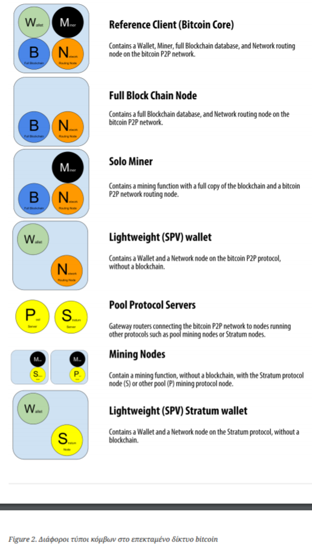
Figure 2. Διάφοροι τύποι κόμβων στο επεκταμένο δίκτυο bitcoin
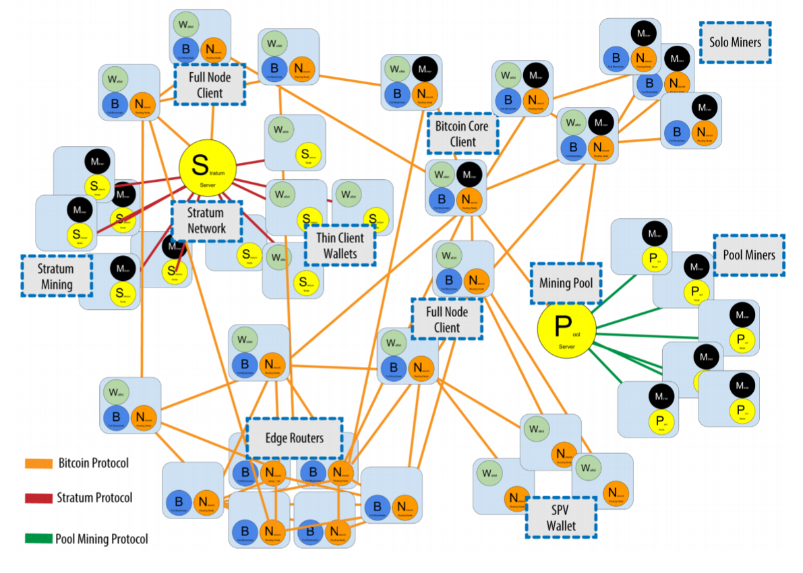
Figure 3. Το επεκταμένο δίκτυο bitcoin απεικονίζοντας διάφορους τύπους κόμβων, πύλες δικτύων και πρωτόκολλα
Εξεύρεση Δικτύου (network discovery)
Όταν ένας νέος κόμβος εκκινεί, πρέπει να ανακαλύψει άλλους bitcoin κόμβους στο δίκτυο ώστε να συμμετάσχει και αυτός.
Για να ξεκινήσει τη διαδικασία, ένας νέος κόμβος πρέπει να ανακαλύψει τουλάχιστον έναν υπάρχων κόμβο στο δίκτυο και να συνδεθεί μαζί του.
Η γεωγραφική τοποθεσία των άλλων κόμβων δεν έχει σημασία· η τοπολογία του δικτύου bitcoin δεν προσδιορίζεται γεωγραφικά.
Ως εκ τούτου, οποιοιδήποτε bitcoin κόμβοι μπορούν να επιλεχθούν τυχαία.
Για τη σύνδεση σε έναν γνωστό ομότιμο κόμβο (peer), οι κόμβοι εγκαθιδρύουν μία σύνδεση TCP, συνήθως στη θύρα 8333 (η θύρα είναι γενικά γνωστή ως αυτή που χρησιμοποιείται από το bitcoin) ή μια εναλλακτική θύρα εάν παρέχεται τέτοια.
Μετά την εγκαθίδρυση μιας σύνδεσης, ο κόμβος θα ξεκινήσει μια «χειραψία» (δείτε Η αρχική χειραψία (handshake) μεταξύ των ομότιμων κόμβων) (handshake) με τη μετάδοση ενός μηνύματος version, το οποίο περιέχει βασικές αναγνωριστικές πληροφορίες, συμπεριλαμβάνοντας:
PROTOCOL_VERSION
Μία σταθερά που προσδιορίζει την έκδοση του P2P bitcoin πρωτοκόλλου που ο πελάτης «μιλάει» (π.χ. 70002)
nLocalServices
Μία λίστα των τοπικών υπηρεσιών που υποστηρίζονται από τον κόμβο· τη δεδομένη χρονική στιγμή είναι απλά NODE_NETWORK
addrYou
Την IP διεύθυνση του απομακρυσμένου κόμβου όπως φαίνεται από αυτόν τον κόμβο
addrMe
Την IP διεύθυνση του τοπικού κόμβου, όπως ανακαλύφθηκε από τον τοπικό κόμβο
subver
Μία υπό-έκδοση που δείχνει τον τύπο του λογισμικού που εκτελείται σε αυτόν τον κόμβο (π.χ. «/Satoshi:0.9.2.1/-»)
BestHeight
Το ύψος των μπλοκ της αλυσίδας των μπλοκ αυτού του κόμβου
(See GitHub for an example of the version network message.)
Ο ομότιμος κόμβος (peer) απαντάει με μήνυμα verack για αναγνώριση και εγκαθίδρυση μίας σύνδεσης, ενώ προαιρετικά στέλνει το δικό του μήνυμα version εάν επιθυμεί να ανταποδώσει (reciprocate) τη σύνδεση και να συνδεθεί πάλι πίσω ως ένας ομότιμος κόμβος (peer).
Πως, λοιπόν, ένας νέος κόμβος βρίσκει ομότιμους κόμβους;
Η πρώτη μέθοδος είναι να στείλει αιτήματα σε διακομιστές ονομασίας περιοχών (Domain Name Servers) χρησιμοποιώντας έναν αριθμό από DNS προέλευσης (DNS seed), οι οποίοι είναι διακομιστές DNS που παρέχουν μία στατική λίστα IP διευθύνσεων από bitcoin κόμβους.
Μερικοί από τους DNS προέλευσης είναι προσαρμοσμένοι να υλοποιούνται ως BIND (Berkeley Internet Name Daemon), που επιστρέφουν ένα τυχαίο υποσύνολο από μία λίστα διευθύνσεων bitcoin κόμβων, που έχουν συλλεχθεί από ένα «crawler» ή από έναν μακροχρόνια ενεργό bitcoin κόμβο.
Ο Bitcoin Πυρήνας πελάτης περιέχει ονόματα από πέντε διαφορετικούς DNS προέλευσης.
Η ποικιλομορφία της ιδιοκτησίας, όπως και της υλοποίησης των διαφορετικών DNS προέλευσης προσφέρει μία πολύ υψηλού επιπέδου αξιοπιστία για την αρχική εκκίνηση (bootstrapping process) των κόμβων.
Στον πελάτη Bitcoin Πυρήνας, η επιλογή για χρησιμοποίηση των DNS προέλευσης ελέγχεται από την επιλογή -dnsseed (είναι ορισμένη σε 1 από προεπιλογή, ώστε να χρησιμοποιεί DNS προέλευσης).
Διαφορετικά, σε έναν κόμβο που εκκινεί και δε γνωρίζει τίποτα για το δίκτυο πρέπει να του δοθεί μία διεύθυνση IP τουλάχιστον ενός κόμβου bitcoin, ώστε να μπορέσει να εγκαθιδρύσει επιπλέον συνδέσεις.
Μπορεί να χρησιμοποιηθεί η παράμετρος -seednode της γραμμής εντολών για σύσταση σε έναν κόμβο, χρησιμοποιώντας τον ως προέλευση (seed).
Μετά τη χρήση του αρχικού κόμβου προέλευσης (seeode) για δημιουργία συστάσεων, ο πελάτης θα αποσυνδεθεί από αυτόν και θα χρησιμοποιήσει τους νέους ομότιμους κόμβους (peer) που έχει ανακαλύψει.
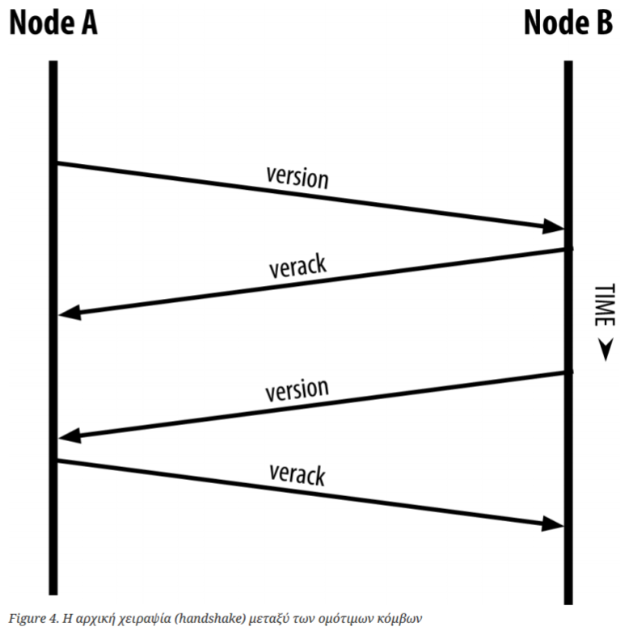
Figure 4. Η αρχική χειραψία (handshake) μεταξύ των ομότιμων κόμβων
Μόλις μία ή περισσότερες συνδέσεις εγκαθιδρυθούν, ο νέος κόμβος θα αποστείλει ένα μήνυμα addr που περιέχει τη δική του διεύθυνση IP στους γειτονικούς κόμβους.
Οι γείτονες, με τη σειρά τους, προωθούν το μήνυμα addr στους δικούς τους γείτονες, διασφαλίζοντας ότι ο νέος συνδεδεμένος κόμβος γίνεται ευρύτερα γνωστός και καλύτερα συνδεδεμένος.
Επιπρόσθετα, ο νέος συνδεδεμένος κόμβος μπορεί να αποστείλει μήνυμα getaddr στους γείτονες, ζητώντας να του επιστρέψουν μία λίστα των IP διευθύνσεων των άλλων ομότιμων κόμβων.
Με αυτόν τον τρόπο, ένας κόμβος μπορεί να βρει ομότιμους κόμβους να συνδεθεί και να διαφημίσει την παρουσία του στο δίκτυο, ώστε να τον βρίσκουν και οι άλλοι κόμβοι.
Η Διάδοση (propagation) διεύθυνσης και ανακάλυψη (discovery) δείχνει το πρωτόκολλο εύρεσης διευθύνσεων.
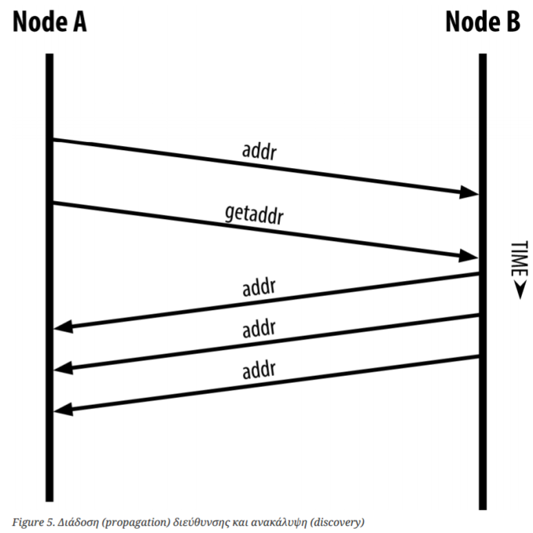
Figure 5. Διάδοση (propagation) διεύθυνσης και ανακάλυψη (discovery)
Ένας κόμβος πρέπει να συνδεθεί σε μερικούς διαφορετικούς ομότιμους κόμβους ώστε να εγκαθιδρύσει διαφορετικές διαδρομές στο δίκτυο bitcoin.
Οι διαδρομές δεν είναι αξιόπιστες -οι κόμβοι μπαίνουν και βγαίνουν- και έτσι ο κόμβος πρέπει να συνεχίσει να ανακαλύπτει νέους κόμβους καθώς χάνει παλιές του συνδέσεις, αλλά και να βοηθήσει άλλους κόμβους όταν κάνουν εκκίνηση.
Για εκκίνηση χρειάζεται μόνο μία σύνδεση, επειδή ο πρώτος κόμβος μπορεί να προσφέρει συστάσεις στους ομότιμους κόμβους και αυτοί οι ομότιμοι κόμβοι μπορούν με τη σειρά τους να προσφέρουν επιπλέον συστάσεις.
Είναι επίσης αχρείαστο και σπάταλο συνολικά για τους πόρους που χρησιμοποιεί το δίκτυο, να γίνεται σύνδεση σε παραπάνω από μετρήσιμους στα δάκτυλα των χεριών κόμβους.
Μετά την εκκίνηση, ένας κόμβος θα θυμάται τις πιο πρόσφατες επιτυχημένες συνδέσεις του με ομότιμους κόμβους, έτσι ώστε εάν κάνει επανεκκίνηση να μπορεί γρήγορα να επανιδρύει συνδέσεις με το προηγούμενο του δίκτυο.
Εάν κανένας από τους προηγούμενους ομότιμους κόμβους δεν ανταποκρίνεται στα αιτήματα για σύνδεση, ο κόμβος μπορεί να χρησιμοποιήσει τους κόμβους προέλευσης για να κάνει εκκίνηση ξανά.
Σε ένα κόμβο που τρέχει τον πελάτη Bitcoin Πυρήνα, μπορείτε να δείτε σε λίστα τις συνδέσεις ομότιμων κόμβων με την εντολή getpeerinfo.
$ bitcoin-cli getpeerinfo
[
{
"addr" : "85.213.199.39:8333",
"services" : "00000001",
"lastsend" : 1405634126,
"lastrecv" : 1405634127,
"bytessent" : 23487651,
"bytesrecv" : 138679099,
"conntime" : 1405021768,
"pingtime" : 0.00000000,
"version" : 70002,
"subver" : "/Satoshi:0.9.2.1/",
"inbound" : false,
"startingheight" : 310131,
"banscore" : 0,
"syncnode" : true
},
{
"addr" : "58.23.244.20:8333",
"services" : "00000001",
"lastsend" : 1405634127,
"lastrecv" : 1405634124,
"bytessent" : 4460918,
"bytesrecv" : 8903575,
"conntime" : 1405559628,
"pingtime" : 0.00000000,
"version" : 70001,
"subver" : "/Satoshi:0.8.6/",
"inbound" : false,
"startingheight" : 311074,
"banscore" : 0,
"syncnode" : false
}
]
Για τον παραμερισμό της αυτόματης διαχείρισης των ομότιμων κόμβων και καθορισμό λίστας IP διευθύνσεων, οι χρήστες μπορούν να παράσχουν την επιλογή -connect=<IPAddress> για να καθορίσουν μία ή περισσότερες διευθύνσεις IP.
Εάν χρησιμοποιηθεί αυτή η επιλογή, ο κόμβος θα συνδεθεί μόνο στις επιλεγμένες IP διευθύνσεις, αντί να ανακαλύψει και να διατηρήσει τις συνδέσεις με ομότιμους κόμβους αυτόματα.
Εάν δεν υπάρχει κίνηση σε μία σύνδεση, οι κόμβοι θα στέλνουν περιοδικά ένα μήνυμα για τη διατήρηση αυτής της σύνδεσης.
Εάν ένας κόμβος δεν έχει επικοινωνήσει σε μία σύνδεση για πάνω από 90 λεπτά, θεωρείται ότι είναι αποσυνδεδεμένος και θα αναζητηθεί ένας νέος ομότιμος κόμβος.
Έτσι, το δίκτυο μπορεί να προσαρμόζεται δυναμικά σε προβλήματα δικτύου και παροδικών κόμβων, ενώ μπορεί οργανικά να μεγαλώνει και να μαζεύει ανάλογα με τις περιστάσεις χωρίς καθόλου κεντρικό έλεγχο.
Πλήρεις Κόμβοι (full nodes)
Οι πλήρεις κόμβοι είναι κόμβοι οι οποίοι διατηρούν την πλήρη αλυσίδα των μπλοκ (blockchain) με όλες τις συναλλαγές.
Ακριβέστερα, θα έπρεπε μάλλον να αποκαλούνται «πλήρεις blockchain κόμβοι».
Στα πρώτα χρόνια του bitcoin, όλοι οι κόμβοι ήταν πλήρεις κόμβοι, ενώ τώρα, πλήρης blockchain κόμβος είναι ο πελάτης Bitcoin Πυρήνας.
Στα προηγούμενα δύο χρόνια, ωστόσο, νέες μορφές bitcoin πελάτη ανέκυψαν, οι οποίοι δε διατηρούν πλήρη αλυσίδα των μπλοκ και τρέχουν ως lightweight πελάτες.
Θα εξετάσουμε αυτά με περισσότερες λεπτομέρειες στην επόμενη ενότητα.
Οι πλήρεις blockchain κόμβοι διατηρούν ένα ολοκληρωμένο και χρονικά ενημερωμένο αντίγραφο της αλυσίδας των μπλοκ του bitcoin με όλες τις συναλλαγές, τις οποίες ανεξάρτητα χτίζουν και επαληθεύουν, ξεκινώντας από το πρώτο μπλοκ (genesis block) και κατασκευάζοντας μέχρι το τελευταίο γνωστό μπλοκ στο δίκτυο.
Ένας πλήρης blockchain κόμβος μπορεί ανεξάρτητα και εξουσιοδοτημένα να εγκρίνει οποιαδήποτε συναλλαγή χωρίς να καταφεύγει ή να εξαρτάται από οποιοδήποτε άλλο κόμβο και πηγή πληροφοριών.
Ο πλήρης blockchain κόμβος βασίζεται στο δίκτυο για να λαμβάνει ενημερώσεις σχετικά με νέα μπλοκ συναλλαγών, τα οποία έπειτα εγκρίνει και ενσωματώνει στο τοπικό του αντίγραφο της αλυσίδας των μπλοκ.
Τρέχοντας ένα πλήρη blockchain κόμβο σας δίνει την πιο καθαρή εμπειρία bitcoin που μπορείτε να έχετε: ανεξάρτητη επαλήθευση όλων των συναλλαγών χωρίς την ανάγκη να βασιστείς ή να εμπιστευτείς οτιδήποτε άλλα συστήματα.
Είναι εύκολο να διακρίνεις εάν τρέχεις έναν πλήρη κόμβο καθώς απαιτεί 20+ γιγαμπάιτ μόνιμου αποθηκευτικού χώρου στο δίσκο για διατήρηση της πλήρης αλυσίδας των μπλοκ.
Εάν χρειαστεί μεγάλο μέρος του δίσκου και δύο με τρεις ημέρες για να συγχρονιστεί με το δίκτυο, τότε είναι ένας πλήρης κόμβος.
Αυτό είναι το τίμημα της πλήρους ανεξαρτησίας και ελευθερίας από κεντρική εξουσία.
Υπάρχουν μερικές εναλλακτικές υλοποιήσεις από πλήρεις blockchain bitcoin πελάτες, κατασκευασμένες χρησιμοποιώντας διαφορετικές γλώσσες προγραμματισμού και αρχιτεκτονικές λογισμικού.
Ωστόσο, η πιο κοινή υλοποίηση είναι ο πελάτης αναφοράς Bitcoin Πυρήνας, γνωστός και ως πελάτης Σατόσι (Satoshi client).
Περισσότεροι από 90% των κόμβων στο δίκτυο bitcoin τρέχουν διάφορες εκδόσεις του Bitcoin Πυρήνας.
Αυτός αναγνωρίζεται ως «Satoshi» στο «subver» μετά από την εντολή getpeerinfo που είδαμε προηγουμένως και προκύπτει από το μήνυμα version μεταξύ των κόμβων· για παράδειγμα, /Satoshi:0.8.6/
Ανταλλάσσοντας Απογραφή των μπλοκ (exchanging innventory)
Το πρώτο πράγμα που θα κάνει ένας πλήρης κόμβος μόλις συνδεθεί στους ομότιμους κόμβους (peer)
είναι η κατασκευή μίας ολοκληρωμένης αλυσίδας των μπλοκ.
Εάν είναι ολοκαίνουριος κόμβος και δεν έχει καθόλου αλυσίδα των μπλοκ, αυτό που γνωρίζει είναι μόνο ένα μπλοκ· το πρώτο μπλοκ (genesilock), το οποίο είναι στατικά ενσωματωμένο στο λογισμικό πελάτη.
Ξεκινώντας με το μπλοκ #0 (genesis block), ο νέος κόμβος θα πρέπει να κάνει λήψη εκατοντάδων χιλιάδων μπλοκ για να συγχρονιστεί με το δίκτυο και να δημιουργήσει την πλήρη αλυσίδα των μπλοκ.
Η διαδικασία συγχρονισμού της αλυσίδας των μπλοκ ξεκινάει με το μήνυμα version, επειδή αυτό είναι που περιέχει το BestHeight, το τωρινό ύψος (αριθμός των μπλοκ) της αλυσίδας των μπλοκ ενός κόμβου.
Ένας κόμβος θα δει τα μηνύματα version από τους ομότιμους κόμβους του και θα γνωρίσει έτσι πόσα μπλοκ έχει ο καθένας για να είναι σε θέση, στη συνέχεια, να συγκρίνει με τα μπλοκ που έχει στη δική του αλυσίδα των μπλοκ.
Οι κόμβοι σε peer-to-peer σύνδεση θα ανταλλάξουν ένα μήνυμα getblocks το οποίο περιέχει τον κατακερματισμό (αποτύπωμα) του μπλοκ που βρίσκεται στην κορυφή της τοπικής τους αλυσίδας των μπλοκ.
Ένας από τους ομότιμους κόμβους θα είναι σε θέση να αναγνωρίσει ότι ένας κατακερματισμός που έχει ληφθεί ανήκει σε ένα μπλοκ που δεν είναι στην κορυφή, αλλά ανήκει σε ένα παλαιότερο μπλοκ, συμπεραίνοντας έτσι ότι η δική του αλυσίδα των μπλοκ είναι μακρύτερη από τους ομότιμους κόμβους του.
Ο ομότιμος κόμβος που έχει τη μακρύτερη αλυσίδα των μπλοκ, έχει περισσότερα μπλοκ από τον άλλο κόμβο και μπορεί να αναγνωρίσει ποια μπλοκ χρειάζεται ώστε να «καλύψει το χαμένο έδαφος».
Θα αναγνωρίσει τα πρώτα 500 μπλοκ για να μοιράσει και να μεταδώσει τους κατακερματισμούς τους χρησιμοποιώντας ένα μήνυμα απογραφής (inventory) inv.
Ο κόμβος που του λείπουν αυτά τα μπλοκ θα τα ανακτήσει, στη συνέχεια, μέσω δημιουργίας μιας σειράς μηνυμάτων getdata ζητώντας τα πλήρη δεδομένα των μπλοκ και αναγνωρίζοντας τα ζητούμενα μπλοκ χρησιμοποιώντας τους κατακερματισμούς από το μήνυμα inv.
Ας υποθέσουμε, για παράδειγμα, ότι ένας κόμβος έχει μόνο το πρώτο μπλοκ (genesis block).
Θα λάβει, στη συνέχεια, ένα μήνυμα inv από τους ομότιμους κόμβους του, που περιέχει τους κατακερματισμούς των επόμενων 500 μπλοκ στην αλυσίδα.
Θα ξεκινήσει, μετά, να ζητάει μπλοκ από όλους τους συνδεδεμένους ομότιμους κόμβους σε αυτόν, μεγαλώνοντας σταδιακά τον όγκο των δεδομένων και διασφαλίζοντας επίσης ότι δεν κατακλύζει κάποιον από τους ομότιμους κόμβους με τα αιτήματα του.
Ο κόμβος καταγράφει πόσα μπλοκ είναι στη «διαδικασία της μετάδοσης» (in transit) για κάθε σύνδεση ομότιμου κόμβου, που σημαίνει τα μπλοκ εκείνα τα οποία έχει αιτηθεί αλλά δεν έχει λάβει, ελέγχοντας να μην ξεπερνάει ένα όριο (MAX_BLOCKS_IN_TRANSIT_PER_PEER).
Με αυτόν τον τρόπο, εάν χρειάζεται πολλά μπλοκ, θα ζητήσει καινούρια μόνο εάν τα προηγούμενα αιτήματα του έχουν εκπληρωθεί, επιτρέποντας στους ομότιμους κόμβους να ελέγχουν το ρυθμό των ανανεώσεων και να μην κατακλύζουν το δίκτυο.
Καθώς λαμβάνεται κάθε μπλοκ προστίθεται στην αλυσίδα των μπλοκ, όπως θα δούμε στο [blockchain].
Καθώς η τοπική αλυσίδα των μπλοκ χτίζεται σταδιακά, περισσότερα μπλοκ ζητούνται και λαμβάνονται· η διαδικασία συνεχίζεται μέχρι ο κόμβος να καλύψει το χαμένο έδαφος και να προφτάσει το δίκτυο.
Αυτή η διαδικασία σύγκρισης της τοπικής αλυσίδας των μπλοκ με τους ομότιμους κόμβους και η ανάκτηση των μπλοκ που υπολείπονται, συμβαίνει κάθε φορά που ένας κόμβος βρίσκεται εκτός σύνδεσης για κάποια χρονική περίοδο.
Είτε ένας κόμβος έχει βρεθεί εκτός σύνδεσης για κάποια λεπτά και υπολείπεται μερικά μπλοκ, είτε ένα μήνα και υπολείπεται μερικές χιλιάδες μπλοκ, ξεκινάει στέλνοντας getblocks, λαμβάνει μία inv απάντηση και ξεκινάει να κάνει λήψη των υπολειπόμενων μπλοκ.
Η Κόμβος σε συγχρονισμό της αλυσίδας των μπλοκ μέσω ανάκτησης των μπλοκ από έναν ομότιμο κόμβο δείχνει την απογραφή (inventory) και το πρωτόκολλο διάδοσης (propagation) των μπλοκ.
Κόμβοι Απλοποιημένης Επαλήθευσης Πληρωμών (Simplified Payment Verification)
Δεν έχουν όλοι οι κόμβοι τη δυνατότητα να αποθηκεύσουν την πλήρη αλυσίδα των μπλοκ. Πολλοί bitcoin πελάτες είναι σχεδιασμένοι να τρέχουν σε συσκευές με περιορισμένο χώρο και ενέργεια, όπως smartphone, tablet και άλλα ενσωματωμένα συστήματα.
Για αυτές τις συσκευές, χρησιμοποιείται η μέθοδος της απλοποιημένης επαλήθευσης πληρωμών (SPV) για να τους επιτρέπει να λειτουργούν χωρίς να αποθηκεύουν την πλήρη αλυσίδα των μπλοκ.
Αυτοί οι τύποι πελατών ονομάζονται SPV πελάτες lightweight πελάτες.
Καθώς η υιοθέτηση του bitcoin εξαπλώνεται ραγδαία, ο SPV κόμβος γίνεται η πιο συνηθισμένη μορφή bitcoin κόμβου, ειδικά για bitcoin πορτοφόλι.
Οι SPV κόμβοι κάνουν λήψη μόνο των κεφαλίδων (headers) των μπλοκ και όχι των συναλλαγών που περιέχονται σε αυτά.
Η αλυσίδα των μπλοκ που προκύπτει, χωρίς συναλλαγές, είναι 1.000 φορές μικρότερη από την πλήρη αλυσίδα των μπλοκ.
Οι SPV κόμβοι δεν κατασκευάζουν την πλήρη εικόνα των αξόδευτων εκροών (UTXO) που είναι διαθέσιμες για ξόδεμα, επειδή δε γνωρίζουν όλες τις συναλλαγές στο δίκτυο.
Οι κόμβοι SPV επαληθεύουν συναλλαγές χρησιμοποιώντας μία κατά τι διαφορετική μεθοδολογία, που εξαρτάται από τους ομότιμους κόμβους για να προμηθεύονται τμήματα της αλυσίδας των μπλοκ κατά παραγγελία.
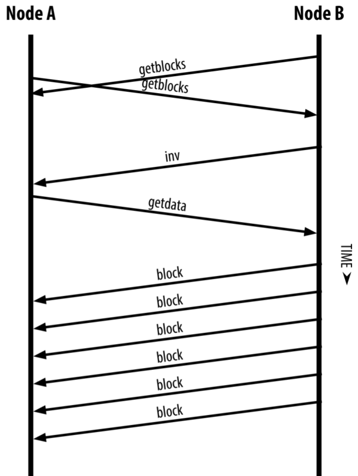
Figure 6. Κόμβος σε συγχρονισμό της αλυσίδας των μπλοκ μέσω ανάκτησης των μπλοκ από έναν ομότιμο κόμβο
Ως μια αναλογία, ένας πλήρης κόμβος είναι όπως ένας τουρίστας σε μία ξένη πόλη, εξοπλισμένος με έναν λεπτομερή χάρτη κάθε δρόμου και κάθε διεύθυνσης.
Σε αντίθεση, ένας SPV κόμβος είναι όπως ένας τουρίστας σε μία ξένη πόλη, που ζητάει οδηγίες από τυχαίους ανθρώπους στο δρόμο για κάθε μια διαφορετική στροφή που συναντάει γνωρίζοντας μόνο την κεντρική λεωφόρο.
Παρόλο που και οι δύο τουρίστες μπορούν να επαληθεύσουν την ύπαρξη ενός δρόμου μέσω της επίσκεψης τους εκεί, ο τουρίστας χωρίς χάρτη δε γνωρίζει τι βρίσκεται στους παραδίπλα δρόμους ούτε τι ακριβώς δρόμοι υπάρχουν.
Εάν βρίσκεται, για παράδειγμα, στην οδό «23 Church Street», ο τουρίστας χωρίς χάρτη δε γνωρίζει εάν υπάρχουν δεκάδες άλλες διευθύνσεις «23 Church Street» στην πόλη, ούτε αν αυτή που βρίσκεται είναι η σωστή.
Η καλύτερη επιλογή του τουρίστα χωρίς χάρτη είναι να ρωτήσει αρκετούς ανθρώπους και να ελπίσει ότι δε θα προσπαθήσουν μερικοί από αυτούς να τον βλάψουν.
Η απλοποιημένη επαλήθευση πληρωμών επαληθεύει συναλλαγές μέσω αναφοράς στο βάθος (depth) της αλυσίδας των μπλοκ αντί για το ύψος (height).
Δηλαδή ένας πλήρης blockchain κόμβος θα κατασκευάσει μία πλήρως επαληθεύσιμη αλυσίδα χιλιάδων μπλοκ και συναλλαγών φθάνοντας τέρμα κάτω (πίσω στο χρόνο) στην αλυσίδα των μπλοκ μέχρι το πρώτο μπλοκ (genesis block)· ένας SPV κόμβος θα επαληθεύσει την αλυσίδα όλων των μπλοκ (αλλά όχι των συναλλαγών) και θα τη συνδέσει με την εκάστοτε συναλλαγή που ενδιαφέρει.
Για παράδειγμα, όταν ένας πλήρης κόμβος εξετάζει τη συναλλαγή στο μπλοκ 300.000, συνδέει και τα 300.000 μπλοκ μέχρι κάτω στο πρώτο μπλοκ χτίζοντας μία πλήρη βάση δεδομένων από αξόδευτες εκροές (UTXO) και κατοχυρώνοντας την εγκυρότητα της συναλλαγής αφού επιβεβαιώνει ότι η UTXO παραμένει αξόδευτη.
Ένας SPV κόμβος δε μπορεί να αποδείξει ότι η UTXO είναι αξόδευτη.
Αντίθετα, θα εγκαταστήσει μία σύνδεση μεταξύ της συναλλαγής και του μπλοκ που την περιέχει, χρησιμοποιώντας μια διαδρομή merkle (δείτε [merkle_trees]).
Τότε, ο SPV κόμβος περιμένει μέχρι να δει έξι μπλοκ από το 300.001 μέχρι το 300.006 στοιβαγμένα επάνω στο μπλοκ της συναλλαγής και επαληθεύει έτσι αποδεικνύοντας το βάθος των μπλοκ από 300.006 σε 300.001.
Το γεγονός, δηλαδή, ότι άλλοι κόμβοι στο δίκτυο έκαναν αποδεκτό το μπλοκ 300.000, κάνοντας έπειτα τις απαραίτητες ενέργειες για να παράξουν έξι ακόμα μπλοκ στην κορυφή από αυτό, είναι η αντιπροσωπευτική απόδειξη ότι η συναλλαγή δεν ήταν διπλο-ξόδεμα (double-spend).
Ένας SPV κόμβος δε μπορεί να πειστεί ότι μία συναλλαγή υπάρχει σε ένα μπλοκ όταν στην πραγματικότητα δεν υπάρχει.
Ο SPV κόμβος κατοχυρώνει την ύπαρξη μίας συναλλαγής σε ένα μπλοκ, μέσω αιτήματος για την απόδειξη της διαδρομής merkle και επαληθεύοντας την απόδειξη εργασίας (proof-of-work) στην αλυσίδα των μπλοκ.
Ωστόσο, η ύπαρξη μίας συναλλαγής μπορεί να αποκρυφτεί από έναν SPV κόμβο.
Ένας SPV κόμβος μπορεί να αποδείξει σίγουρα ότι μία συναλλαγή υπάρχει, αλλά δε μπορεί να επαληθεύσει ότι μία συναλλαγή, όπως μία διπλο-ξοδεμένη (double-spend) της ίδιας αξόδευτης εκροής (UTXO) δεν υπάρχει, επειδή δεν έχει αρχείο όλων των συναλλαγών.
Το ευάλωτο αυτό σημείο μπορεί να χρησιμοποιηθεί σε επίθεση άρνησης υπηρεσιών (denial-of-service attack) ή για επίθεση διπλο-ξοδέματος εναντίον κόμβων SPV.
Για να αμυνθεί απέναντι σε αυτές τις απειλές, ένας SPV κόμβος χρειάζεται να συνδέεται τυχαία σε αρκετούς κόμβους, ώστε να αυξάνει την πιθανότητα ότι είναι σε σύνδεση με τουλάχιστον έναν έντιμο κόμβο.
Αυτή η ανάγκη για τυχαία συνδεσιμότητα σημαίνει ότι οι κόμβοι SPV είναι επίσης ευάλωτοι σε επιθέσεις κατάτμησης δικτύου (network partitioning) ή επιθέσεις Sybil, όπου γίνεται σύνδεση σε ψεύτικους κόμβους ή ψεύτικα δίκτυα, χωρίς να έχουν πρόσβαση σε έντιμους κόμβους στο αληθινό δίκτυο bitcoin.
Στις περισσότερες περιπτώσεις, οι καλά συνδεδεμένοι SPV κόμβοι είναι αρκετά ασφαλείς, προσφέροντας μία ισορροπία ανάμεσα στους πόρους που χρειάζονται για να λειτουργήσουν μαζί με την πρακτικότητα και την ασφάλεια.
Για μία σχεδόν αλάνθαστη ασφάλεια όμως, τίποτα δεν μπορεί να υπερνικήσει τον πλήρη blockchain κόμβο.
TIP
Ένας πλήρης blockchain κόμβος επαληθεύει μία συναλλαγή ελέγχοντας ολόκληρη την αλυσίδα των χιλιάδων μπλοκ από κάτω της, ώστε να είναι απόλυτα βέβαιο ότι η UTXO δεν έχει ξοδευτεί, ενώ ένας SPV κόμβος ελέγχει πόσο βαθειά ένα μπλοκ έχει θαφτεί κάτω από μερικά μετρήσιμα στα δάχτυλα των χεριών μπλοκ από πάνω του.
Για την λήψη των κεφαλίδων (headers) των μπλοκ, οι SPV κόμβοι χρησιμοποιούν ένα μήνυμα getheaders αντί για getblocks.
Ο αποκρινόμενος ομότιμος κόμβος θα στείλει μέχρι και 2.000 κεφαλίδες από μπλοκ χρησιμοποιώντας μόνο ένα μήνυμα headers.
Η διαδικασία είναι κατά τ' άλλα η ίδια όπως αυτή που χρησιμοποιείται από έναν πλήρη κόμβο για να ανακτήσει τα πλήρη μπλοκ.
Οι κόμβοι SPV, συν τοις άλλοις, θέτουν ένα φίλτρο στη σύνδεση με τους ομότιμους κόμβους, ώστε να φιλτράρουν τη ροή μελλοντικών μπλοκ και συναλλαγών που αποστέλλονται από τους ομότιμους κόμβους.
Ό, τι συναλλαγή ενδιαφέρει μπορεί να ανακτηθεί με ένα getdata αίτημα και σε απάντηση, ο ομότιμος κόμβος δημιουργεί ένα μήνυμα tx που περιέχει τις ζητούμενες συναλλαγές.
Η SPV κόμβος συγχρονίζει τις κεφαλίδες των μπλοκ δείχνει τον συγχρονισμό των κεφαλίδων των μπλοκ.
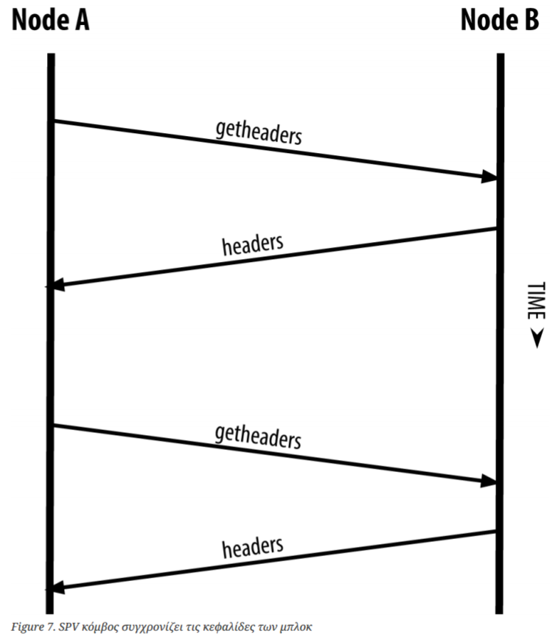
Figure 7. SPV κόμβος συγχρονίζει τις κεφαλίδες των μπλοκ
Επειδή οι SPV κόμβοι πρέπει να ανακτήσουν συγκεκριμένες συναλλαγές για να τις επαληθεύσουν, δημιουργούν επίσης κίνδυνο στην ιδιωτικότητα του χρήστη.
Σε αντίθεση με τους πλήρεις blockchain κόμβους, οι οποίοι συλλέγουν όλες τις συναλλαγές από κάθε μπλοκ, οι αιτήσεις των SPV κόμβων για συγκεκριμένα δεδομένα μπορεί ακούσια να αποκαλύψουν τις διευθύνσεις που υπάρχουν στο πορτοφόλι.
Για παράδειγμα, μπορεί ένας τρίτος να έχει στήσει παρακολούθηση στο δίκτυο και να ακολουθεί όλες τις συναλλαγές που έχουν ζητηθεί από ένα πορτοφόλι SPV κόμβου και με αυτόν τον τρόπο να συσχετίσει διευθύνσεις bitcoin με το χρήστη του συγκεκριμένου wallet, καταστρέφοντας την ιδιωτικότητα του.
Μετά από την εισαγωγή των SPV/lightweight κόμβων, οι προγραμματιστές του bitcoin προσέθεσαν μία λειτουργία που ονομάζεται φίλτρα bloom ώστε να αντιμετωπίσουν τους κινδύνους ιδιωτικότητας των SPV κόμβων.
Τα φίλτρα bloom επιτρέπουν στους SPV κόμβους να λαμβάνουν ένα υποσύνολο των συναλλαγών χωρίς να αποκαλύπτουν επακριβώς για ποιες διευθύνσεις ενδιαφέρονται, μέσα από έναν μηχανισμό φιλτραρίσματος που χρησιμοποιεί πιθανότητες αντί για σταθερά και καθορισμένα μοτίβα.
Φίλτρα Bloom (bloom filters)
Ένα φίλτρο bloom είναι ένα πιθανολογικό φίλτρο αναζήτησης, ένας τρόπος περιγραφής ενός επιθυμητού μοτίβου χωρίς τον επακριβή προσδιορισμό του.
Τα φίλτρα bloom προσφέρουν έναν αποτελεσματικό τρόπο για έκφραση ενός μοτίβου καθώς προστατεύεται η ιδιωτικότητα.
Χρησιμοποιούνται από τους κόμβους SPV για να ζητούν από τους ομότιμους κόμβους τους συναλλαγές που ταιριάζουν σε ένα συγκεκριμένο μοτίβο, χωρίς να αποκαλύπτουν επακριβώς ποιες διευθύνσεις είναι αυτές που αναζητούν.
Στην προηγούμενη μας αναλογία, ένας τουρίστας χωρίς χάρτη ζητάει οδηγίες για τη συγκεκριμένη διεύθυνση «23 Church St.».
Εάν ζητήσει οδηγίες για αυτήν την οδό από περαστικούς, αποκαλύπτει άθελα του και τον προορισμό.
Με εφαρμογή ενός φίλτρου bloom θα είναι σαν να ρωτάει «Υπάρχουν καθόλου δρόμοι σε αυτήν τη γειτονιά των οποίων τα ονόματα καταλήγουν σε R-C-H;»
Μία ερώτηση όπως αυτή αποκαλύπτει κάποιες λιγότερες πληροφορίες σχετικά με τον επιθυμητό προορισμό, αντί να ζητάει πληροφορίες απευθείας για την «23 Church St.».
Χρησιμοποιώντας αυτήν την τεχνική, ένας τουρίστας θα μπορούσε να προσδιορίσει την επιθυμητή διεύθυνση με περισσότερες λεπτομέρειες, όπως το να καταλήγουν σε «U-R-C-H» ή με λιγότερες όπως να καταλήγουν σε «H».
Μετατρέποντας δηλαδή την ακρίβεια της αναζήτησης, ο τουρίστας αποκαλύπτει περισσότερες ή λιγότερες πληροφορίες, σε βάρος όμως των αποτελεσμάτων που παίρνει, περισσότερα ή λιγότερα ειδικά.
Εάν ζητήσει ένα λιγότερο ειδικό μοτίβο, παίρνει πολλές περισσότερες πιθανές διευθύνσεις και καλύτερη ιδιωτικότητα, αλλά πολλά από τα αποτελέσματα είναι άνευ σημασίας. Εάν ζητήσει για ένα πολύ ειδικό μοτίβο, παίρνει λιγότερα αποτελέσματα αλλά χάνει την ιδιωτικότητα.
Τα φίλτρα bloom εξυπηρετούν αυτήν τη λειτουργία επιτρέποντας σε ένα SPV κόμβο να καθορίζει ένα μοτίβο αναζήτησης για συναλλαγές, το οποίο μπορεί να ρυθμίζεται ανάλογα με την επιθυμητή ακρίβεια ή ιδιωτικότητα.
Ένα πιο ειδικό φίλτρο bloom θα παράξει ακριβή αποτελέσματα, αλλά με το κόστος της αποκάλυψης των διευθύνσεων που χρησιμοποιούνται στο πορτοφόλι του χρήστη.
Ένα λιγότερο ειδικό φίλτρο bloom θα παράξει περισσότερα δεδομένα σχετικά με περισσότερες συναλλαγές, έχοντας όμως παράλληλα πολλές άνευ σημασίας σημασίας για τον κόμβο, αλλά θα επιτρέψει τη διατήρηση καλύτερης ιδιωτικότητας.
Ένας κόμβος SPV θα διαμορφώσει αρχικά ένα φίλτρο bloom ως «κενό» (empty).
Σε αυτήν την κατάσταση το φίλτρο δεν ταιριάζει σε κανένα μοτίβο.
Ο SPV κόμβος, στη συνέχεια, θα κάνει μία λίστα όλων των διευθύνσεων στο πορτοφόλι του και θα δημιουργήσει ένα μοτίβο αναζήτησης να ταιριάζει στην κάθε έξοδο συναλλαγής που αντιστοιχεί στην κάθε διεύθυνση.
Συνήθως, το μοτίβο αναζήτησης είναι ένα σενάριο πληρωμής σε κατακερματισμό δημοσίου κλειδιού (P2PKH), ένα αναμενόμενο δηλαδή σενάριο κλειδώματος, που πληρώνει έναν κατακερματισμό δημοσίου κλειδιού (μια διεύθυνση bitcoin, public-key-hash).
Εάν ο SPV κόμβος παρακολουθεί υπόλοιπο μίας διεύθυνσης P2SH, το μοτίβο αναζήτησης θα είναι πληρωμή σε σενάριο πληρωμής κατακερματισμού σεναρίου (pay-to-script-hash).
Ο SPV κόμβος, έπειτα, προσθέτει κάθε ένα από τα μοτίβα αναζήτησης στο φίλτρο bloom, έτσι ώστε το φίλτρο να αναγνωρίσει εάν το μοτίβο βρίσκεται σε κάποια συναλλαγή.
Τελικά, το φίλτρο bloom στέλνεται στον ομότιμο κόμβο και αυτός το χρησιμοποιεί για να ταιριάξει συναλλαγές προς μετάδοση στον SPV κόμβο.
Τα φίλτρα bloom υλοποιούνται ως μία αυτόματη μεταβλητή (variable-sized) δομή πίνακα (array) από Ν δυαδικά ψηφία (ένα πεδίο μπιτ) και έναν αριθμό μεταβλητών Μ συναρτήσεων κατακερματισμού (hash functions).
Οι συναρτήσεις κατακερματισμού είναι σχεδιασμένες να παράγουν πάντα μία έξοδο μεταξύ 1 και Ν, σε αντιστοίχιση με τον πίνακα των δυαδικών ψηφίων.
Οι συναρτήσεις κατακερματισμού δημιουργούνται ντετερμινιστικά, έτσι ώστε κάθε κόμβος που υλοποιεί ένα φίλτρο bloom να χρησιμοποιεί πάντα την ίδια συνάρτηση κατακερματισμού και να παίρνει πάντα τα ίδια αποτελέσματα για μια συγκεκριμένη είσοδο.
Επιλέγοντας διαφορετικού μήκους φίλτρα bloom και διαφορετικό αριθμό Μ συναρτήσεων κατακερματισμού, το φίλτρο bloom μπορεί να ρυθμίζεται, μεταβάλλοντας το επίπεδο της ακρίβειας και ως εκ τούτου την ιδιωτικότητα.
Στην Ένα παράδειγμα ενός απλού φίλτρου bloom, με ένα πεδίο 16 μπιτ και τρεις συναρτήσεις κατακερματισμού, χρησιμοποιούμε έναν πολύ μικρό πίνακα με 16 μπιτ και ένα σετ τριών συναρτήσεων κατακερματισμού για να δείξουμε πως λειτουργούν τα φίλτρα bloom.
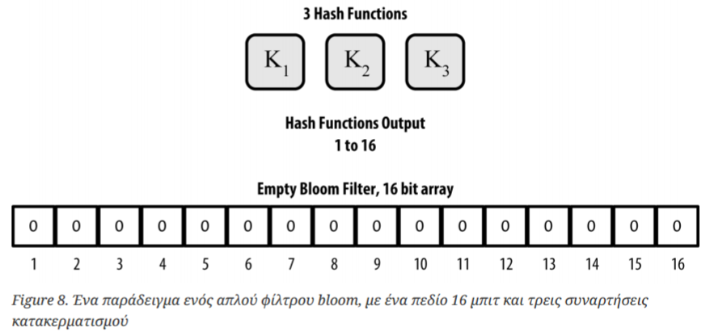
Figure 8. Ένα παράδειγμα ενός απλού φίλτρου bloom, με ένα πεδίο 16 μπιτ και τρεις συναρτήσεις κατακερματισμού
Το φίλτρο bloom διαμορφώνεται αρχικά έτσι ώστε ο πίνακας των μπιτ να έχει όλες τις τιμές του μηδέν.
Για να προσθέσουμε ένα μοτίβο στο φίλτρο bloom, το μοτίβο κατακερματίζεται (hashed) από την κάθε μία συνάρτηση κατακερματισμού με τη σειρά.
Εφαρμόζοντας την πρώτη συνάρτηση κατακερματισμού στην είσοδο έχει ως αποτέλεσμα έναν αριθμό μεταξύ 1 και Ν.
Το αντίστοιχο μπιτ στον πίνακα (ευρετηριάστηκαν (indexed) από 1 έως Ν) βρίσκεται και αλλάζει σε 1, καταγράφοντας ως εκ τούτου την έξοδο της συνάρτησης κατακερματισμού.
Έπειτα, η επόμενη συνάρτηση κατακερματισμού χρησιμοποιείται για να αλλάξει άλλο μπιτ και ούτω καθεξής. Μόλις όλες οι Μ συναρτήσεις κατακερματισμού έχουν εφαρμοστεί, το μοτίβο αναζήτησης θα «καταγραφεί» στο φίλτρο bloom ως Μ μπιτ που έχουν αλλάξει από 0 σε 1.
Η Προσθέτοντας ένα μοτίβο «Α» στο απλό παράδειγμα φίλτρου bloom είναι ένα παράδειγμα πρόσθεσης ενός μοτίβου «Α» στο απλό bloom φίλτρο της Ένα παράδειγμα ενός απλού φίλτρου bloom, με ένα πεδίο 16 μπιτ και τρεις συναρτήσεις κατακερματισμού.
Η πρόσθεση ενός δευτέρου μοτίβου είναι μια απλή επανάληψη της προηγούμενης διαδικασίας.
Το μοτίβο κατακερματίζεται από την κάθε συνάρτηση κατακερματισμού στη σειρά και το αποτέλεσμα καταγράφεται αλλάζοντας τα μπιτ σε 1.
Σημειώστε ότι καθώς το φίλτρο bloom συμπληρώνεται με περισσότερα μοτίβα, το αποτέλεσμα της συνάρτησης κατακερματισμού μπορεί να συμπίπτει με ένα μπιτ το οποίο ήδη έχει αλλάξει σε 1, το οποίο όμως μένει απαράλλακτο.
Στην ουσία, καθώς καταγράφονται περισσότερα μοτίβα στα αναδιπλωμένα μπιτ, το φίλτρο bloom γίνεται ολοένα και πιο κορεσμένο (saturated) με περισσότερα μπιτ που έχουν αλλάξει σε 1 και η ακρίβεια του φίλτρου μειώνεται.
Αυτός είναι ο λόγος που το φίλτρο είναι μία πιθανολογική δομή δεδομένων -γίνεται όλο και λιγότερο ακριβές καθώς προστίθενται περισσότερα μοτίβα.
Η ακρίβεια εξαρτάται από τον αριθμό των προστιθέμενων μοτίβων έναντι του μεγέθους του πίνακα των μπιτ (Ν) και τον αριθμό των συναρτήσεων κατακερματισμού (Μ).
Ένας μεγαλύτερος πίνακας μπιτ και περισσότερες συναρτήσεις κατακερματισμού μπορούν να καταγράψουν περισσότερα μοτίβα με υψηλότερη ακρίβεια.
Ένας μικρότερος πίνακας μπιτ και λιγότερες συναρτήσεις κατακερματισμού θα καταγράψουν λιγότερα μοτίβα και θα παράξουν λιγότερη ακρίβεια.
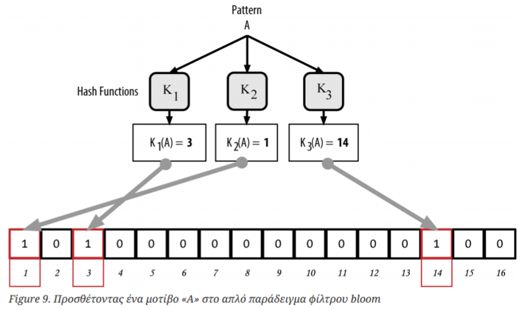
Figure 9. Προσθέτοντας ένα μοτίβο «Α» στο απλό παράδειγμα φίλτρου bloom
Η Προσθέτοντας ένα δεύτερο μοτίβο «Β» στο απλό φίλτρο bloom είναι ένα παράδειγμα πρόσθεσης ενός δευτέρου μοτίβου «Β» στο απλό bloom φίλτρο.
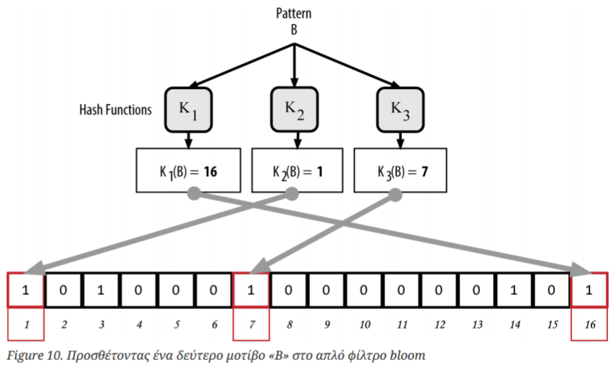
Figure 10. Προσθέτοντας ένα δεύτερο μοτίβο «Β» στο απλό φίλτρο bloom
Για τον έλεγχο εάν ένα μοτίβο είναι μέρος ενός φίλτρου bloom, το μοτίβο κατακερματίζεται από την κάθε συνάρτηση κατακερματισμού και το μεγάλο μοτίβο μπιτ που προκύπτει ως αποτέλεσμα ελέγχεται σε σχέση με τον πίνακα των μπιτ.
Εάν όλα τα μπιτ που ευρετηριάστηκαν (indexed) από τις συναρτήσεις κατακερματισμού είναι 1, τότε το μοτίβο είναι πιθανότατα καταγεγραμμένο στο φίλτρο bloom.
Επειδή τα μπιτ μπορεί να έχουν αλλάξει εξαιτίας αναδίπλωσης από πολλαπλά μοτίβα, η απάντηση δεν είναι βέβαιη, αλλά σχετικά πιθανολογική.
Με απλά λόγια, ένα θετικό αποτέλεσμα φίλτρου bloom είναι «Μάλλον, ναι».
Η Ελέγχοντας την ύπαρξη ενός μοτίβου «Χ» στο φίλτρο bloom. Το αποτέλεσμα είναι ένα πιθανολογικά θετικό ταίριασμα, που σημαίνει «Μάλλον» είναι ένα παράδειγμα ελέγχου εάν υπάρχει το μοτίβο «Χ» στο απλό φίλτρο bloom.
Τα μπιτ που αντιστοιχούν είναι 1 και άρα το μοτίβο μάλλον ταιριάζει.
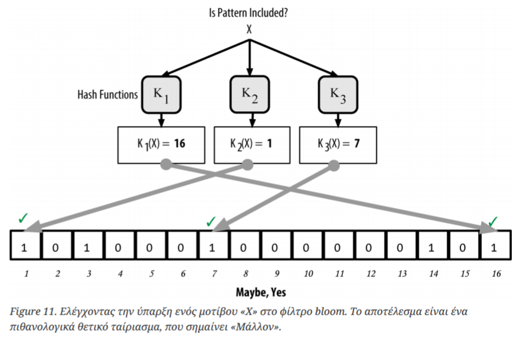
Figure 11. Ελέγχοντας την ύπαρξη ενός μοτίβου «Χ» στο φίλτρο bloom. Το αποτέλεσμα είναι ένα πιθανολογικά θετικό ταίριασμα, που σημαίνει «Μάλλον».
Αντίθετα, εάν ένα μοτίβο ελέγχεται σε σχέση με το φίλτρο bloom και οποιοδήποτε από τα μπιτ είναι 0, αποδεικνύει ότι το μοτίβο δεν είχε καταγραφεί στο φίλτρο bloom.
Ένα αρνητικό αποτέλεσμα δεν είναι πιθανότητα· είναι βεβαιότητα.
Με απλά λόγια, ένα αρνητικό ταίριασμα σε φίλτρο bloom, είναι ένα «Σίγουρα Όχι!».
Η Ελέγχοντας την ύπαρξη ενός μοτίβου «Υ» στο φίλτρο bloom. Το αποτέλεσμα είναι ένα σίγουρα αρνητικά ταίριασμα, που σημαίνει «Σίγουρα Όχι!» είναι ένα παράδειγμα ελέγχου εάν υπάρχει το μοτίβο «Υ» στο απλό φίλτρο bloom.
Ένα από τα μπιτ που αντιστοιχούν είναι 0 και άρα το μοτίβο σίγουρα δεν είναι ταίριασμα
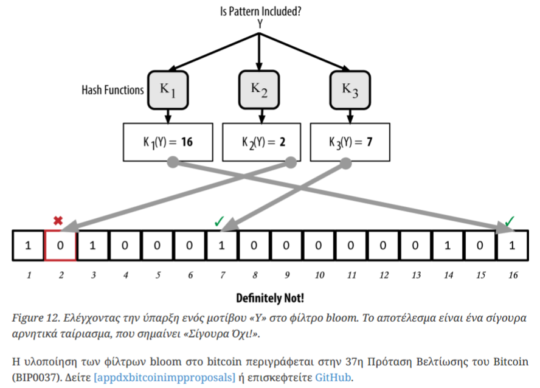
Figure 12. Ελέγχοντας την ύπαρξη ενός μοτίβου «Υ» στο φίλτρο bloom. Το αποτέλεσμα είναι ένα σίγουρα αρνητικά ταίριασμα, που σημαίνει «Σίγουρα Όχι!».
Η υλοποίηση των φίλτρων bloom στο bitcoin περιγράφεται στην 37η Πρόταση Βελτίωσης του Bitcoin (BIP0037).
Δείτε [appdxbitcoinimpproposals] ή επισκεφτείτε GitHub.
Φίλτρα Bloom και Ανανεώσεις Απογραφής (inventory updates)
Τα φίλτρα bloom χρησιμοποιούνται για να φιλτράρουν τις συναλλαγές (και τα μπλοκ που τις περιέχουν) που ένας κόμβος SPV λαμβάνει από τους ομότιμους του κόμβους.
Ο SPV κόμβος δημιουργεί ένα φίλτρο που ταιριάζει μόνο στις διευθύνσεις που κρατούνται στο πορτοφόλι του.
Ο SPV κόμβος, στη συνέχεια, στέλνει ένα μήνυμα filterload στον ομότιμο κόμβο που περιέχει το φίλτρο bloom και θα χρησιμοποιηθεί στη σύνδεση τους.
Μετά την εγκαθίδρυση ενός φίλτρου, ο ομότιμος κόμβος θα ελέγξει κάθε έξοδο συναλλαγής σε σχέση με το φίλτρο bloom και μόνο οι συναλλαγές που ταιριάζουν στο φίλτρο θα σταλούν στον SPV κόμβο.
Στο μήνυμα getdata που στέλνεται από τον SPV κόμβο, οι ομότιμοι κόμβοι θα αποστείλουν σε απάντηση ένα μήνυμα merkleblock, το οποίο περιέχει μόνο τις κεφαλίδες των μπλοκ για τα μπλοκ που ταιριάζουν στο φίλτρο και μία διαδρομή merkle (δείτε [merkle_trees]) για κάθε συναλλαγή που ταιριάζει.
Ο ομότιμος κόμβος, έπειτα, θα στείλει και μηνύματα tx, τα οποία περιέχουν τις συναλλαγές που ταιριάζουν με το φίλτρο.
Ο κόμβος που δημιουργεί το φίλτρο bloom μπορεί να προσθέτει, διαδραστικά, μοτίβα στο φίλτρο, στέλνοντας ένα μήνυμα filteradd.
Για να καθαρίσει ένα φίλτρο bloom, μπορεί να στείλει ένα μήνυμα filterclear.
Επειδή δεν είναι δυνατό να αφαιρεθεί ένα μοτίβο από το φίλτρο bloom, εάν ένα μοτίβο δεν είναι πλέον επιθυμητό, ο κόμβος πρέπει να το καθαρίσει και να αποστείλει ένα νέο φίλτρο bloom.
Ομάδες Συναλλαγών (transaction pools)
Σχεδόν κάθε κόμβος στο bitcoin δίκτυο διατηρεί προσωρινή λίστα των ανεπιβεβαίωτων συναλλαγών που ονομάζεται ομάδα μνήμης (memory pool), mempool ή ομάδα συναλλαγών (transaction pool). Οι κόμβοι χρησιμοποιούν αυτήν την ομάδα για να παρακολουθούν τις συναλλαγές που είναι γνωστές στο δίκτυο αλλά δεν έχουν περιληφθεί ακόμα στην αλυσίδα των μπλοκ.
Για παράδειγμα, ένας κόμβος που διατηρεί το πορτοφόλι ενός χρήστη θα χρησιμοποιήσει την ομάδα συναλλαγών για να παρακολουθήσει τις εισερχόμενες πληρωμές στο πορτοφόλι, που έχουν ληφθεί στο δίκτυο, αλλά δεν έχουν ακόμα επιβεβαιωθεί.
Καθώς λαμβάνονται και επαληθεύονται συναλλαγές , προσθέτονται στην ομάδα συναλλαγών (transaction pool) και μεταδίδονται στους γειτονικούς κόμβους ώστε να διαδοθούν στο δίκτυο.
Μερικές υλοποιήσεις κόμβων διατηρούν επίσης μία ξεχωριστή ομάδα, αυτή των ορφανών συναλλαγών (orphan transaction pool).
Εάν η είσοδος μίας συναλλαγής αναφέρεται σε μία συναλλαγή που δεν είναι ακόμα γνωστή, όπως μία μητρική που αγνοείται, η ορφανή συναλλαγή θα αποθηκευτεί προσωρινά στην ομάδα των ορφανών μέχρι να καταφθάσει η μητρική.
Όταν μία συναλλαγή προστίθεται στην ομάδα συναλλαγών (transaction pool), γίνεται έλεγχος της ορφανής ομάδας εάν υπάρχουν ορφανές που αναφέρονται στις εξόδους αυτής της συναλλαγής (τις παιδικές της δηλαδή).
Όποιες ορφανές ταιριάζουν, στη συνέχεια, επαληθεύονται.
Εάν είναι έγκυρες, αφαιρούνται από την ομάδα των ορφανών και προστίθενται στην ομάδα των συναλλαγών, ολοκληρώνοντας την αλυσίδα που ξεκίνησε από την μητρική συναλλαγή.
Υπό το πρίσμα της νέας συναλλαγής που προστέθηκε, η οποία δεν είναι πλέον ορφανή, η διαδικασία επαναλαμβάνεται αναδρομικά ελέγχοντας για επιπλέον απογόνους, μέχρι να μην βρίσκονται άλλοι απόγονοι.
Μέσω αυτής της διαδικασίας, η άφιξη μίας μητρικής συναλλαγής ενεργοποιεί μια αλληλουχία ανακατασκευής μίας ολόκληρης αλυσίδας από αλληλοεξαρτόμενες συναλλαγές, με την ένωση των ορφανών με τις μητρικές τους, σε όλη τη διαδρομή προς τα κάτω στην αλυσίδα.
Αμφότερες οι ομάδες συναλλαγών και ορφανών συναλλαγών (όπου υλοποιούνται) αποθηκεύονται στην τοπική μνήμη και όχι σε μόνιμο αποθηκευτικό χώρο, κατοικίζοντας δυναμικά μέσω μηνυμάτων από το δίκτυο. Όταν ένας κόμβος κάνει εκκίνηση, αμφότερες οι δύο ομάδες είναι κενές και σταδιακά κατοικίζονται από νέες συναλλαγές που λαμβάνονται από το δίκτυο.
Μερικές υλοποιήσεις του bitcoin πελάτη διατηρούν επίσης μία βάση δεδομένων των UTXO ή αλλιώς ομάδα UTXO, η οποία είναι μία συλλογή όλων των αξόδευτων εξόδων στην αλυσίδα των μπλοκ.
Αν και το όνομα «UTXO pool» θυμίζει το «transaction pool», αντιπροσωπεύει διαφορετικά δεδομένα.
Σε αντίθεση με τις ομάδες των συναλλαγών και των ορφανών, η ομάδα των UTXO δεν διαμορφώνεται ως κενή στην εκκίνηση, αλλά αντίθετα περιέχει εκατομμύρια καταχωρήσεις αξόδευτων εκροών συναλλαγών, περιέχοντας μερικές που χρονολογούνται μέχρι και πίσω στο 2009.
Η ομάδα των UTXO μπορεί να στεγαστεί στην τοπική μνήμη ή σε μόνιμο αποθηκευτικό χώρο ως ευρετηριασμένη βάση δεδομένων (index database table).
Ενώ οι ομάδες των συναλλαγών και των ορφανών αντιπροσωπεύουν μόνο την οπτική ενός κόμβου και μπορούν να διαφέρουν σημαντικά από κόμβο σε κόμβο, με βάση πότε ο κόμβος έκανε εκκίνηση ή επανεκκίνηση, η ομάδα των UTXO αντιπροσωπεύει την αναδυόμενη συναίνεση του δικτύου και ως εκ τούτου διαφέρει σε πολύ μικρό βαθμό ανάμεσα στους κόμβους.
Επιπρόσθετα, οι ομάδες των συναλλαγών και των ορφανών περιέχουν μόνο ανεπιβεβαίωτες συναλλαγές, ενώ η ομάδα των UTXO περιέχει μόνο επιβεβαιωμένες εξόδους.
Μηνύματα Προειδοποίησης (alert messages)
Τα μηνύματα προειδοποίησης είναι μια λειτουργία που χρησιμοποιείται σπάνια, αλλά είναι ωστόσο υλοποιημένα στους περισσότερους κόμβους.
Τα μηνύματα προειδοποίησης είναι το «σύστημα μετάδοσης για έκτακτη ανάγκη» του bitcoin, ένα μέσο που μπορούν να χρησιμοποιήσουν οι προγραμματιστές του bitcoin για να στείλουν ένα γραπτό μήνυμα έκτακτης ανάγκης σε όλους τους κόμβους.
Αυτό το χαρακτηριστικό είναι υλοποιημένο για να επιτρέπει στην ομάδα των προγραμματιστών του bitcoin να ειδοποιεί όλους τους χρήστες του bitcoin για κάποιο σοβαρό πρόβλημα στο δίκτυο bitcoin, όπως ένα κρίσιμο σφάλμα που απαιτεί άμεση δράση.
Το σύστημα προειδοποίησης έχει χρησιμοποιηθεί μόνο μερικές φορές, μετρήσιμες στα δάχτυλα των χεριών, με την πιο αξιοσημείωτη να είναι στις αρχές του 2013 όταν ένα κρίσιμο σφάλμα βάσεως δεδομένων προκάλεσε μία διακλάδωση (fork) πολλών μπλοκ στην αλυσίδα των μπλοκ του bitcoin.
Τα μηνύματα προειδοποίησης διαδίδονται στο δίκτυο από το μήνυμα alert.
Το μήνυμα προειδοποίησης περιέχει αρκετά πεδία, συμπεριλαμβάνοντας:
ID
Ένα αναγνωριστικό προειδοποίησης ώστε να μπορούν να εντοπίζονται οι διπλότυπες προειδοποιήσεις
Expiration
Ο χρόνος μέχρι να λήξει η προειδοποίηση
RelayUntil
Το χρονικό περιθώριο, που πρέπει μετά το πέρας του να διακοπεί η μετάδοση
MinVer, MaxVer
Το εύρος των εκδόσεων του bitcoin πρωτοκόλλου που εφαρμόζεται αυτή η προειδοποίηση
subVer
Η έκδοση λογισμικού πελάτη που εφαρμόζεται αυτή η προειδοποίηση
Priority
Ένα επίπεδο προτεραιότητας της προειδοποίησης, που είναι προς το παρόν αχρησιμοποίητο
Οι προειδοποιήσεις υπογράφονται κρυπτογραφικά από ένα δημόσιο κλειδί.
Το ιδιωτικό κλειδί που αντιστοιχεί κρατείται από μερικά επίλεκτα μέλη της ομάδας των προγραμματιστών του bitcoin.
Η ψηφιακή υπογραφή εξασφαλίζει ότι δεν θα διαδοθούν στο δίκτυο ψεύτικες προειδοποιήσεις.
Κάθε κόμβος που λαμβάνει ένα μήνυμα προειδοποίησης θα το επαληθεύσει, θα ελέγξει το χρόνο λήξης του και θα το διαδώσει (propagate) σε όλους τους ομότιμους κόμβους, διασφαλίζοντας έτσι την ταχεία διάδοση σε ολόκληρο το δίκτυο.
Εκτός από τη διάδοση στο δίκτυο, οι κόμβοι μπορεί να υλοποιήσουν και μία λειτουργία διεπαφής (interface) χρήστη ώστε να παρουσιάσουν την προειδοποίηση διαδραστικά στο χρήστη.
Στον Bitcoin Πυρήνα πελάτη, η προειδοποίηση ρυθμίζεται με την επιλογή γραμμής εντολών -alertnotify, η οποία καθορίζει να εκτελείται μία εντολή όταν λαμβάνεται μία προειδοποίηση.
Το μήνυμα προειδοποίησης διοχετεύεται ως παράμετρος στην εντολή alertnotify.
Συνηθέστερα, η εντολή alertnotify χρησιμοποιείται για να δημιουργεί ένα μήνυμα ηλεκτρονικού ταχυδρομείου στον διαχειριστή του κόμβου, περιέχοντας το μήνυμα προειδοποίησης.
Η προειδοποίηση εμφανίζεται επίσης ως ένα αναδυόμενο παράθυρο διαλόγου στη γραφική διεπαφή του χρήστη (bitcoin-Qt) εάν τρέχει εκείνη τη στιγμή.
Άλλες υλοποιήσεις του πρωτοκόλλου bitcoin μπορεί να χειριστούν τις προειδοποιήσεις με διαφορετικούς τρόπους.
Πολλά ενσωματωμένα σε hardware συστήματα εξόρυξης bitcoin δεν υλοποιούν τα μηνύματα προειδοποίησης επειδή δεν έχουν διεπαφή χρήστη.
Συνιστάται ιδιαίτερα στους εξορύκτες που τρέχουν τέτοια συστήματα εξόρυξης να κάνουν συνδρομή για να δέχονται προειδοποιήσεις μέσω μιας ομάδας εξόρυξης (mining pool) ή να τρέχουν έναν lightweight κόμβο μόνο για αυτόν το σκοπό.
7. Η αλυσίδα των μπλοκ (blockchain)
Εισαγωγή
Η δομή δεδομένων της αλυσίδας των μπλοκ είναι μία ταξινομημένη, συνδεδεμένη προς τα πίσω (backlinked) λίστα των μπλοκ των συναλλαγών.
Η αλυσίδα των μπλοκ (blockchain) μπορεί να αποθηκευτεί ως ένα απλό αρχείο ή ως μία απλή βάση δεδομένων.
Ο πελάτης Bitcoin Πυρήνας αποθηκεύει τα μετά-δεδομένα (metadata) της αλυσίδας των μπλοκ χρησιμοποιώντας τη βάση δεδομένων LevelDB της Google.
Τα μπλοκ συνδέονται προς τα «πίσω», με το κάθε ένα να αναφέρεται στο προηγούμενο μπλοκ στην αλυσίδα.
Η αλυσίδα των μπλοκ απεικονίζεται συχνά ως κατακόρυφη στοίβα, με τα μπλοκ να τοποθετούνται το ένα πάνω από το άλλο σε επίπεδα, με το πρώτο μπλοκ από αυτά να είναι το γενεσιουργό της στοίβας.
Η απεικόνιση των στοιβαγμένων μπλοκ το ένα πάνω στο άλλο έχει ως αποτέλεσμα να χρησιμοποιούνται όροι όπως «ύψος» (height) για την αναφορά στην απόσταση από το πρώτο μπλοκ και «κορυφή» (top) ή «άκρο» (tip) για την αναφορά στο μπλοκ που έχει προστεθεί τελευταίο.
Κάθε μπλοκ στην αλυσίδα των μπλοκ αναγνωρίζεται από έναν κατακερματισμό, ο οποίος δημιουργείται με τη χρήση του αλγόριθμου κρυπτογραφικού κατακερματισμού SHA256 στην κεφαλίδα του μπλοκ.
Κάθε μπλοκ, επίσης, αναφέρεται σε ένα προηγούμενο μπλοκ, γνωστό ως μητρικό (parent) μπλοκ, διαμέσου του «κατακερματισμού του προηγούμενου μπλοκ (previous block hash)» στην κεφαλίδα του μπλοκ.
Με άλλα λόγια, κάθε μπλοκ περιέχει στην κεφαλίδα του τον κατακερματισμό του μητρικού του μπλοκ.
Η ακολουθία των κατακερματισμών που συνδέει κάθε μπλοκ με το μητρικό του δημιουργεί μία αλυσίδα που καταλήγει μέχρι τέρμα πίσω στο αρχικό μπλοκ, που είναι γνωστό ως μπλοκ γέννησης (genesis block)
Παρόλο που ένα μπλοκ έχει ένα μόνο μητρικό, μπορεί προσωρινά να έχει πολλαπλά παιδικά.
Κάθε παιδικό αναφέρεται στο ίδιο μπλοκ ως μητρικό του και περιέχει τον ίδιο κατακερματισμό (του μητρικού) στο πεδίο «κατακερματισμός προηγούμενου μπλοκ (previous block hash)».
Πολλαπλά παιδικά ανακύπτουν κατά τη διάρκεια διακλάδωσης (fork) της αλυσίδας των μπλοκ, μία κατάσταση προσωρινή όταν ανακαλύπτονται την ίδια στιγμή διαφορετικά μπλοκ από διαφορετικούς miner (δείτε [forks]).
Εν τέλει, μόνο ένα παιδικό μπλοκ γίνεται μέρος της αλυσίδας των μπλοκ και η διακλάδωση (fork) επιλύεται.
Παρόλο που ένα μπλοκ μπορεί να έχει πάνω από ένα παιδικό, σε κάθε μπλοκ αντιστοιχεί μόνο ένα μητρικό.
Αυτό είναι επειδή κάθε μπλοκ έχει ένα μόνο πεδίο «κατακερματισμός προηγούμενου μπλοκ (previous block hash)» που αναφέρεται στο μοναδικό του μητρικό.
Το πεδίο «κατακερματισμός προηγούμενου μπλοκ» βρίσκεται μέσα στην κεφαλίδα του μπλοκ και ως εκ τούτου επηρεάζει τον τρέχων κατακερματισμό του μπλοκ.
Εάν αλλάξει η ταυτότητα (identity) του μητρικού, αλλάζει και η ταυτότητα του παιδικού.
Όταν το μητρικό με οποιοδήποτε τρόπο τροποποιείται, αλλάζει και ο κατακερματισμός του.
Η αλλαγή του κατακερματισμού του μητρικού απαιτεί και αλλαγή στον δείκτη «κατακερματισμός προηγούμενου μπλοκ» στο παιδικό.
Αυτό με τη σειρά του προκαλεί αλλαγή στον κατακερματισμό του παιδικού, ο οποίος απαιτεί αλλαγή στον δείκτη του 2ου-παιδικού, ο οποίος με τη σειρά του αλλάζει το επόμενο ν-παιδικό και ούτω καθεξής.
Αυτό το φαινόμενο κυματισμού, η αλυσιδωτή αυτή αντίδραση, διασφαλίζει ότι εφόσον ένα μπλοκ ακολουθείται από αρκετές επόμενες γενεές του, δεν μπορεί να αλλαχθεί χωρίς να επιβάλλεται να γίνει ξανά όλος ο υπολογισμός των μεταγενέστερων μπλοκ.
Επειδή το να γίνει ξανά όλος αυτός ο υπολογισμός θα απαιτούσε ασύλληπτα μεγάλη ποσότητα υπολογισμού, η ύπαρξη μιας μακράς αλυσίδας μπλοκ κάνει το βάθος της ιστορίας του blockchain αμετάβλητο, το οποίο είναι και το βασικό χαρακτηριστικό της ασφάλεια του bitcoin.
Ένας τρόπος να σκεφτούμε την αλυσίδα των μπλοκ είναι σαν επίπεδα σε έναν γεωλογικό σχηματισμό, έναν τεράστιο και αρχαίο παγετώνα για παράδειγμα.
Τα επίπεδα της επιφάνειας μπορεί να αλλάζουν με τις εποχές ή να μην προλαβαίνουν να ενσωματωθούν λόγω καιρικών φαινομένων.
Λίγα εκατοστά κάτω από την επιφάνεια, τα γεωλογικά επίπεδα γίνονται όλο και περισσότερο σταθερά.
Λίγα μέτρα κάτω από την επιφάνεια όμως, βρίσκεται μια απεικόνιση του παρελθόντος που έχει μείνει ανεπηρέαστη για εκατομμύρια χρόνια.
Στην αλυσίδα των μπλοκ (στο blockchain), τα πιο πρόσφατα μπλοκ μπορεί να αναθεωρηθούν εάν έχει γίνει ανά-υπολογισμός λόγω διακλάδωσης (fork).
Τα έξι μπλοκ στην κορυφή είναι όπως μερικά εκατοστά επιφανειακού εδάφους.
Αλλά μόλις κοιτάξεις βαθειά μέσα στην αλυσίδα των μπλοκ, κάτω από τα έξι μπλοκ, γίνεται ολοένα και λιγότερο πιθανό κάποιο από αυτά να έχει αλλάξει.
Μετά από 100 μπλοκ εκεί πίσω υπάρχει τόση πολλή σταθερότητα, που η συναλλαγή coinbase -αυτή που περιέχει τα νέα bitcoin που έχουν εξορυχθεί- μπορεί να ξοδευτεί.
Μερικά χιλιάδες μπλοκ πίσω (ένα μήνα) και συνολικά η αλυσίδα των μπλοκ, μπορούμε να συμπεράνουμε ότι είναι παγιοποιημένη -και αυταπόδεικτη.
Ενώ το πρωτόκολλο επιτρέπει πάντα μία αλυσίδα να απορριφθεί από μία μακρύτερη αλυσίδα και ενώ η πιθανότητα να αναιρεθεί ένα μπλοκ υπάρχει πάντα, η πιθανότητα να συμβεί κάτι τέτοιο μειώνεται όσο περνάει ο καιρός μέχρι να γίνει απειροελάχιστα μικρή.
Δομή ενός μπλοκ
Ένα μπλοκ είναι μία δομή για να περιέχονται δεδομένα, που συλλέγει συναλλαγές, ώστε να τις συμπεριλάβει στο δημόσιο κατάστιχο, την αλυσίδα των μπλοκ (blockchain).
Το μπλοκ αποτελείται από την κεφαλίδα, περιέχοντας μετά-δεδομένα, ακολουθούμενα από μία μακρά λίστα συναλλαγών που καταλαμβάνουν και τον κύριο όγκο του.
Η κεφαλίδα του μπλοκ είναι 80 μπάιτ, ενώ η μέση συναλλαγή είναι το λιγότερο 250 μπάιτ και το μέσο μπλοκ περιέχει περισσότερες από 500 συναλλαγές.
Ένα ολοκληρωμένο μπλοκ, με όλες του τις συναλλαγές, ως εκ τούτου, είναι 1.000 φορές μεγαλύτερο από την κεφαλίδα του.
Ο Η δομή ενός μπλοκ περιγράφει τη δομή ενός μπλοκ.
| Size | Field | Description |
| 4 bytes | Block Size | The size of the block, in bytes, following this field |
| 80 bytes | Block Header | Several fields form the block header |
| 1-9 bytes (VarInt) | Transaction Counter | How many transactions follow |
| Variable | Transactions | The transactions recorded in this block |
Κεφαλίδα μπλοκ
Η κεφαλίδα του μπλοκ αποτελείται από τρία σετ μετά-δεδομένα του μπλοκ.
Πρώτα, υπάρχει μία αναφορά στον κατακερματισμό του προηγούμενου μπλοκ, ο οποίος συνδέει αυτό το μπλοκ με το προηγούμενο στην αλυσίδα των μπλοκ.
Το δεύτερο σετ μετά-δεδομένων, ήτοι η δυσκολία (difficulty), η χρονοσφραγίδα (timestamp) και η κρυπτογραφική περιστασιακή τιμή (nonce), σχετίζονται με τον ανταγωνισμό στην εξόρυξη, όπως περιγράφεται στο [κεφάλαιο-8].
Το τρίτο κομμάτι των μετά-δεδομένων είναι η ρίζα του δέντρου (tree) merkle· το δέντρο merkle είναι μία δομή δεδομένων που χρησιμοποιείται για να συνοψίζει αποτελεσματικά όλες τις συναλλαγές στο μπλοκ.
Ο πίνακας Η δομή της κεφαλίδας μπλοκ περιγράφει τη δομή μίας κεφαλίδας μπλοκ.
| Size | Field | Description |
| 4 bytes | Version | A version number to track software/protocol upgrades |
| 32 bytes | Previous Block Hash | A reference to the hash of the previous (parent) block in the chain |
| 32 bytes | Merkle Root | A hash of the root of the merkle tree of this blockΆs transactions |
| 4 bytes | Timestamp | The approximate creation time of this block (seconds from Unix Epoch) |
| 4 bytes | Difficulty Target | The proof-of-work algorithm difficulty target for this block |
| 4 bytes | Nonce | A counter used for the proof-of-work algorithm |
Η κρυπτογραφική περιστασιακή τιμή (nonce) και η χρονοσφραγίδα (timestamp) χρησιμοποιούνται στη διαδικασία της εξόρυξης και θα συζητηθούν με περισσότερες λεπτομέρειες στο [κεφάλαιο-8].
Αναγνωριστικά μπλοκ (block identifiers): Κατακερματισμός κεφαλίδας μπλοκ (block header hash) και Ύψος μπλοκ (block height)
Το βασικό αναγνωριστικό ενός μπλοκ είναι ο κρυπτογραφικός του κατακερματισμός, ένα ψηφιακό αποτύπωμα (digital fingerprint), που δημιουργείται κατακερματίζοντας δύο φορές την κεφαλίδα του μπλοκ με τον αλγόριθμο SHA256.
Ο κατακερματισμός των 32 μπάιτ που προκύπτει ως αποτέλεσμα ονομάζεται κατακερματισμός μπλοκ (block hash), αλλά θα ήταν πιο ακριβής η ορολογία ως κατακερματισμός κεφαλίδας μπλοκ (block header hash), επειδή για τον υπολογισμό του χρησιμοποιείται μόνο η κεφαλίδα του μπλοκ.
Για παράδειγμα, 000000000019d6689c085ae165831e934ff763ae46a2a6c172b3f1b60a8ce26f είναι ο κατακερματισμός μπλοκ του πρώτου μπλοκ bitcoin που δημιουργήθηκε ποτέ.
Ο κατακερματισμός μπλοκ προσδιορίζει ένα μπλοκ μοναδικά και αδιαμφισβήτητα και μπορεί να παραχθεί ανεξάρτητα από κάθε κόμβο, κατακερματίζοντας απλώς την κεφαλίδα του μπλοκ.
Σημειώστε ότι ο κατακερματισμός του μπλοκ, στην πράξη, δεν περιλαμβάνεται στη δομή δεδομένων του μπλοκ, ούτε όταν το μπλοκ μεταδίδεται στο δίκτυο, ούτε και όταν αποθηκεύεται στον μόνιμο αποθηκευτικό χώρο του κόμβου ως κομμάτι του blockchain.
Αντ' αυτού, ο κατακερματισμός του μπλοκ υπολογίζεται από τον κάθε κόμβο ξεχωριστά καθώς το μπλοκ λαμβάνεται από το δίκτυο.
Ο κατακερματισμός του μπλοκ μπορεί να αποθηκευτεί σε έναν ξεχωριστό πίνακα βάσεως δεδομένων, ως κομμάτι των μετά-δεδομένων του μπλοκ, ώστε να διευκολύνει την εύρεση και τη γρηγορότερη ανάκτηση του από τα μπλοκ στο δίσκο.
Ένας δεύτερος τρόπος προσδιορισμού ενός μπλοκ είναι μέσω της θέσης του στην αλυσίδα των μπλοκ, που ονομάζεται ύψος μπλοκ.
Το πρώτο μπλοκ που δημιουργήθηκε ποτέ είναι σε ύψος μπλοκ 0 (μηδέν) και είναι το ίδιο μπλοκ που αναφέρθηκε προηγουμένως με τον ακόλουθο κατακερματισμό μπλοκ 000000000019d6689c085ae165831e934ff763ae46a2a6c172b3f1b60a8ce26f.
Ένα μπλοκ μπορεί δηλαδή να προσδιοριστεί με δύο τρόπους:
μέσω αναφοράς στο κατακερματισμό του μπλοκ ή μέσω αναφοράς στο ύψος του μπλοκ.
Κάθε μεταγενέστερο μπλοκ που προστίθεται «στην κορυφή» αυτού του πρώτου μπλοκ είναι μία θέση «ψηλότερα» στην αλυσίδα των μπλοκ, σαν κουτιά, το ένα στοιβαγμένο πάνω στο άλλο.
Το ύψος των μπλοκ την 1η Ιανουαρίου 2014 ήταν περίπου 278.000, που σημαίνει ότι υπήρχαν 278.000 μπλοκ στοιβαγμένα πάνω από το πρώτο μπλοκ που δημιουργήθηκε τον Ιανουάριο του 2009.
Σε αντίθεση με τον κατακερματισμό του μπλοκ, το ύψος μπλοκ δεν αποτελεί ένα μοναδικό αναγνωριστικό.
Παρά το γεγονός ότι ένα μοναδικό μπλοκ θα έχει πάντα ένα συγκεκριμένο και αμετάβλητο ύψος μπλοκ, το αντίστροφο δεν ισχύει -το ύψος μπλοκ δεν προσδιορίζει πάντοτε ένα ενιαίο μπλοκ.
Δύο ή περισσότερα μπλοκ μπορούν να έχουν το ίδιο ύψος μπλοκ, που ανταγωνίζονται για την ίδια θέση στην αλυσίδα μπλοκ.
Αυτό το σενάριο συζητείται λεπτομερώς στην ενότητα [forks].
Το ύψος μπλοκ δεν είναι επίσης ένα μέρος της δομής δεδομένων του μπλοκ· δεν αποθηκεύεται εντός του μπλοκ.
Κάθε κόμβος προσδιορίζει δυναμικά τη θέση ενός μπλοκ (ύψος) στην αλυσίδα μπλοκ (blockchain) όταν λαμβάνεται από το δίκτυο bitcoin.
Το ύψος μπλοκ μπορεί επίσης να αποθηκεύεται ως μετά-δεδομένα σε έναν ευρετηριασμένο πίνακα βάσης δεδομένων για την ταχύτερη ανάκτηση.
TIP
Ο κατακερματισμός μπλοκ ενός μπλοκ προσδιορίζει πάντα ένα μοναδικό μπλοκ.
Ένα μπλοκ έχει, επίσης, πάντα ένα συγκεκριμένο ύψος μπλοκ.
Ωστόσο, το ύψος μπλοκ δεν προσδιορίζει πάντα ένα μοναδικό μπλοκ.
Πολλές φορές, δύο ή περισσότερα μπλοκ μπορεί να ανταγωνίζονται για μία μοναδική θέση στην αλυσίδα των μπλοκ.
Το μπλοκ γέννησης (genesis block)
Το πρώτο μπλοκ στην αλυσίδα των μπλοκ ονομάζεται μπλοκ γέννησης (genesis block) και δημιουργήθηκε το 2009.
Είναι ο κοινός πρόγονος όλων των μπλοκ στην αλυσίδα των μπλοκ, που σημαίνει ότι εάν ξεκινήσετε από οποιοδήποτε μπλοκ και ακολουθήσετε την αλυσίδα προς τα πίσω στο χρόνο θα καταλήξετε τελικά στο μπλοκ γέννησης.
Κάθε κόμβος ξεκινάει πάντα με μία αλυσίδα μπλοκ (blockchain) τουλάχιστον ενός μπλοκ επειδή το μπλοκ γέννησης είναι στατικά κωδικοποιημένο στο λογισμικό του bitcoin πελάτη, έτσι ώστε να μην μπορεί να αλλαχθεί.
Κάθε κόμβος «γνωρίζει» τον κατακερματισμό και τη δομή του μπλοκ γέννησης, τον σταθερό χρόνο που δημιουργήθηκε, ενώ ακόμα γνωρίζει και τη μοναδική συναλλαγή μέσα σε αυτό.
Έτσι, κάθε κόμβος έχει ένα σημείο εκκίνησης για την αλυσίδα των μπλοκ, μία ασφαλή «ρίζα» από την οποία μπορεί να κατασκευάσει μία αξιόπιστη αλυσίδα μπλοκ (blockchain).
Δείτε το στατικά κωδικοποιημένο μπλοκ γέννησης μέσα στον πελάτη Bitcoin Πυρήνας, στο chainparams.cpp.
Ο ακόλουθος αναγνωριστικός κατακερματισμός ανήκει στο μπλοκ γέννησης:
000000000019d6689c085ae165831e934ff763ae46a2a6c172b3f1b60a8ce26f
Μπορείτε να αναζητήσετε τον κατακερματισμό μπλοκ σε οποιαδήποτε ιστοσελίδα εξερευνητή μπλοκ, όπως blockchain.info και θα βρείτε μια σελίδα να περιγράφει τα περιεχόμενα αυτού του μπλοκ, με ένα URL που περιέχει αυτόν τον κατακερματισμό:
https://blockchain.info/block/000000000019d6689c085ae165831e934ff763ae46a2a6c172b3f1b60a8ce26f
Χρησιμοποιώντας τον πελάτη αναφοράς Bitcoin Πυρήνα στη γραμμή εντολών:
$ bitcoin-cli getblock 000000000019d6689c085ae165831e934ff763ae46a2a6c172b3f1b60a8ce26f
{
"hash" : "000000000019d6689c085ae165831e934ff763ae46a2a6c172b3f1b60a8ce26f",
"confirmations" : 308321,
"size" : 285,
"height" : 0,
"version" : 1,
"merkleroot" : "4a5e1e4baab89f3a32518a88c31bc87f618f76673e2cc77ab2127b7afdeda33b",
"tx" : [
"4a5e1e4baab89f3a32518a88c31bc87f618f76673e2cc77ab2127b7afdeda33b"
],
"time" : 1231006505,
"nonce" : 2083236893,
"bits" : "1d00ffff",
"difficulty" : 1.00000000,
"nextblockhash" : "00000000839a8e6886ab5951d76f411475428afc90947ee320161bbf18eb6048"
}
Το μπλοκ γέννησης περιέχει ένα κρυμμένο μήνυμα μέσα του.
Η είσοδος της coinbase συναλλαγής περιέχει το κείμενο: «The Times 03/Jan/2009 Chancellor on brink of second bailout for banks».
Αυτό το μήνυμα είχε ως στόχο να παρέχει την νεώτερη χρονικά απόδειξη ότι δημιουργήθηκε αυτό το μπλοκ, μέσω αναφοράς του σε επικεφαλίδα τίτλου της βρετανικής εφημερίδας The Times.
Εξυπηρετεί επίσης ως μία ειρωνική υπενθύμιση της σημασίας ενός ανεξάρτητου νομισματικού συστήματος, με την έναρξη του bitcoin να συμβαίνει την ίδια χρονική στιγμή με την άνευ προηγουμένου παγκόσμια χρηματοπιστωτική κρίση.
Το μήνυμα ενσωματώθηκε στο πρώτο μπλοκ από τον Σατόσι Νακαμότο, τον δημιουργό του bitcoin.
Συνδέοντας μπλοκ στο blockchain
Οι πλήρεις κόμβοι bitcoin διατηρούν ένα τοπικό αντίγραφο της αλυσίδας των μπλοκ (blockchain), ξεκινώντας από το μπλοκ γέννησης.
Το τοπικό αντίγραφο της αλυσίδας των μπλοκ ανανεώνεται συνεχώς καθώς βρίσκονται νέα μπλοκ και χρησιμοποιούνται για να επεκτείνουν την αλυσίδα.
Καθώς ένας κόμβος λαμβάνει εισερχόμενα μπλοκ από το δίκτυο, τα εγκρίνει και τα συνδέει στην υπάρχουσα αλυσίδα των μπλοκ.
Για να εγκαθιδρύσει έναν σύνδεσμο, ο κόμβος εξετάζει την κεφαλίδα του εισερχόμενου μπλοκ για να δει τον «κατακερματισμό του προηγούμενου μπλοκ».
Ας υποθέσουμε, για παράδειγμα, ότι ένας κόμβος έχει 277.314 μπλοκ στο τοπικό του αντίγραφο της αλυσίδας των μπλοκ.
Το τελευταίο μπλοκ που γνωρίζει σχετικά είναι το 277.314, με κατακερματισμό κεφαλίδας 00000000000000027e7ba6fe7bad39faf3b5a83daed765f05f7d1b71a1632249.
Ο κόμβος bitcoin λαμβάνει τότε το νέο μπλοκ από το δίκτυο, το οποίο αναλύει συντακτικά (parses):
{
"size" : 43560,
"version" : 2,
"previousblockhash" :
"00000000000000027e7ba6fe7bad39faf3b5a83daed765f05f7d1b71a1632249",
"merkleroot" :
"5e049f4030e0ab2debb92378f53c0a6e09548aea083f3ab25e1d94ea1155e29d",
"time" : 1388185038,
"difficulty" : 1180923195.25802612,
"nonce" : 4215469401,
"tx" : [
"257e7497fb8bc68421eb2c7b699dbab234831600e7352f0d9e6522c7cf3f6c77",
#[... many more transactions omitted ...]
"05cfd38f6ae6aa83674cc99e4d75a1458c165b7ab84725eda41d018a09176634"
]
}
Κοιτώντας αυτό το νέο μπλοκ, ο κόμβος βρίσκει το πεδίο previousblockhash, το οποίο περιέχει τον κατακερματισμό του προηγούμενου μπλοκ.
Είναι ένας κατακερματισμός γνωστός στον κόμβο, αυτός του προηγούμενου μπλοκ στο ύψος 277.314.
Ως εκ τούτου, το νέο αυτό μπλοκ είναι ένα παιδικό του τελευταίου μπλοκ και επεκτείνει την υπάρχουσα αλυσίδα.
Ο κόμβος προσθέτει το νέο μπλοκ στο τέλος της αλυσίδας, κάνοντας την μακρύτερη, με το νέο ύψος των 277.315.
Η Μπλοκ συνδεδεμένα σε αλυσίδα, μέσω αναφοράς τους στον κατακερματισμό προηγούμενης κεφαλίδας μπλοκ (previous block header hash) δείχνει την αλυσίδα τριών μπλοκ, συνδεδεμένα με αναφορές στο πεδίο previousblockhash.
Δέντρα merkle (merkle trees)
Κάθε μπλοκ στην αλυσίδα μπλοκ του bitcoin περιέχει μία συνάθροιση (summary) όλων των συναλλαγών στο μπλοκ, χρησιμοποιώντας ένα δέντρο merkle (merkle tree).
Ένα δέντρο merkle, γνωστό και ως δυαδικό δέντρο κατακερματισμού (binary hash tree), είναι μία δομή δεδομένων που χρησιμοποιείται για να συναθροίζει (summarize) αποτελεσματικά και να επαληθεύει την ακεραιότητα μεγάλων ομάδων δεδομένων.
Τα δέντρα merkle είναι δυαδικά δέντρα που περιέχουν κρυπτογραφικούς κατακερματισμούς.
Η ορολογία «δέντρο» χρησιμοποιείται στην επιστήμη των υπολογιστών για να περιγράψει μία κλαδωτή (branching) δομή δεδομένων, αλλά συνήθως απεικονίζεται αντίστροφα, με τη «ρίζα» (root) στην κορυφή και τα «φύλλα» (leaves) στον πάτο του διαγράμματος, όπως θα δείτε στα παραδείγματα που ακολουθούν.
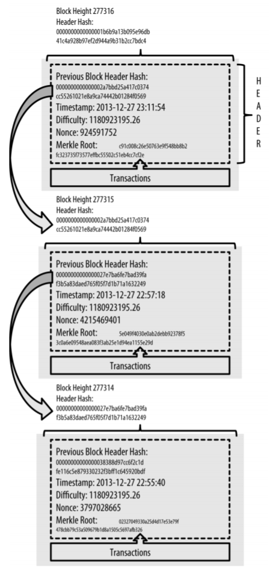
Figure 1. Μπλοκ συνδεδεμένα σε αλυσίδα, μέσω αναφοράς τους στον κατακερματισμό προηγούμενης κεφαλίδας μπλοκ (previous block header hash)
Τα δέντρα merkle χρησιμοποιούνται στο bitcoin για να συναθροίζουν όλες τις συναλλαγές σε ένα μπλοκ, παράγοντας ένα ψηφιακό αποτύπωμα για το σύνολο της ομάδας των συναλλαγών, παρέχοντας μία πολύ αποτελεσματική διαδικασία για να επαληθεύεται αν μία συναλλαγή περιλαμβάνεται σε ένα μπλοκ.
Ένα δέντρο merkle κατασκευάζεται με αναδρομικό κατακερματισμό των κόμβων του μέχρι να υπάρχει ένας κατακερματισμός, που ονομάζεται ρίζα ή ρίζα merkle (merkle root).
Ο αλγόριθμος κρυπτογραφικού κατακερματισμού που χρησιμοποιείται στα δέντρα merkle του bitcoin είναι ο SHA256 διπλά εφαρμοσμένος, γνωστός και ως διπλός-SHA256 (double-SHA256).
Όταν Ν στοιχεία δεδομένων κατακερματίζονται και συναθροίζονται σε ένα δέντρο merkle, μπορείτε να ελέγξετε αν κάποιο στοιχείο δεδομένων περιλαμβάνεται στο δέντρο με το πολύ 2*log2(N)
υπολογισμούς, κάτι που καθιστά τη συγκεκριμένη δομή πολύ αποτελεσματική.
Το δέντρο merkle κατασκευάζεται από κάτω προς τα πάνω.
Στο ακόλουθο παράδειγμα, ξεκινάμε με τέσσερις συναλλαγές, A, B, C και D, οι οποίες σχηματίζουν τα φύλλα (leaves) του δέντρου Merkle, όπως φαίνεται στην Υπολογίζοντας τους κόμβους σε ένα δέντρο merkle.
Οι συναλλαγές δεν αποθηκεύονται στο δέντρο merkle· τα δεδομένα τους κατακερματίζονται και ο κατακερματισμός που προκύπτει ως αποτέλεσμα αποθηκεύεται στο κάθε φύλλο-κόμβο ως HA, HB, HC και HD:
HA = SHA256(SHA256(Transaction A))
Συνεχόμενα φύλλα-κόμβοι (leaf node) συνοψίζονται σε έναν μητρικό κόμβο, συνενώνοντας (concatenate) τους δύο κατακερματισμούς και κατακερματίζοντάς τα μαζί.
Για παράδειγμα, η κατασκευή ενός μητρικού κόμβου HAB γίνεται συνενώνοντας τους δύο παιδικούς 32 μπάιτ κατακερματισμούς για να δημιουργήσουν μία σειρά χαρακτήρων 64 μπάιτ.
Αυτή η σειρά χαρακτήρων διπλό-κατακερματίζεται για να παράξει τον κατακερματισμό του μητρικού κόμβου:
HAB = SHA256(SHA256(HA + HB))
Η διαδικασία συνεχίζεται μέχρι να υπάρχει μόνο ένας κόμβος στην κορυφή· ο κόμβος που είναι γνωστός και ως ρίζα Merkle. Ο κατακερματισμός των 32 μπάιτ αποθηκεύεται στην κεφαλίδα του μπλοκ και συναθροίζει όλα τα δεδομένα μέσα στις τέσσερις συναλλαγές.
Figure 2. Υπολογίζοντας τους κόμβους σε ένα δέντρο merkle
Επειδή το δέντρο merkle είναι ένα δυαδικό δέντρο, χρειάζεται ζυγό αριθμό από φύλλα-κόμβους.
Εάν ο αριθμός για να συναθροίσει είναι μονός, ο κατακερματισμός της τελευταίας συνάρτησης θα διπλασιαστεί για να δημιουργήσει ζυγό αριθμό φύλλων-κόμβων, παράγοντας αυτό που είναι γνωστό και ως ισορροπημένο δέντρο (balanced tree).
Αυτό φαίνεται στην Με τον διπλασιασμό ενός στοιχείου δεδομένων επιτυγχάνεται ζυγός αριθμός στοιχείων, όπου η συναλλαγή C διπλασιάζεται.
Figure 3. Με τον διπλασιασμό ενός στοιχείου δεδομένων επιτυγχάνεται ζυγός αριθμός στοιχείων
Η ίδια μέθοδος κατασκευής δέντρου από τέσσερις συναλλαγές μπορεί να γενικευθεί για κατασκευή δέντρων σε οποιοδήποτε μέγεθος.
Στο bitcoin, είναι πολύ συνηθισμένη η ύπαρξη εκατοντάδων και πολλές φορές περισσότερες των χιλίων συναλλαγές σε ένα μπλοκ, οι οποίες συναθροίζονται με τον ίδιο ακριβώς τρόπο, παράγοντας απλά 32 μπάιτ δεδομένων ως ρίζα merkle (merkle root).
Στην Δέντρο merkle συναθροίζει πολλά στοιχεία δεδομένων, βλέπετε ένα δέντρο κατασκευασμένο από 16 συναλλαγές.
Σημειώστε ότι ενώ η ρίζα μοιάζει μεγαλύτερη από τα φύλλα-κόμβους στο διάγραμμα, είναι ακριβώς το ίδιο μέγεθος, 32 μπάιτ.
Είτε υπάρχει μία συναλλαγή ή εκατοντάδες χιλιάδες σε ένα μπλοκ, η ρίζα merkle πάντα τις συνοψίζει σε 32 μπάιτ.
Για να αποδείξει ένας κόμβος ότι μία συγκεκριμένη συναλλαγή περιλαμβάνεται σε ένα μπλοκ, χρειάζεται να παράξει μόνο log2(N) κατακερματισμούς των 32 μπάιτ, συνιστώντας μία διαδρομή πιστοποίησης(authentication path) ή διαδρομή merkle (merkle path), συνδέοντας τη συναλλαγή με τη ρίζα του δέντρου.
Αυτή η λειτουργία είναι ιδιαίτερα σημαντική καθώς ο αριθμός των συναλλαγών αυξάνεται, επειδή ο λογάριθμος με βάση-2 του αριθμού των συναλλαγών αυξάνεται πολύ πιο αργά.
Αυτό επιτρέπει στους bitcoin κόμβους να παράγουν αποτελεσματικά διαδρομές των 10 ή 12 κατακερματισμών (320-384 μπάιτ), οι οποίες παρέχουν απόδειξη για μία μοναδική συναλλαγή μέσα από περισσότερες από χίλιες συναλλαγές σε ένα μπλοκ μέγα-μπάιτ μεγέθους.
Figure 4. Δέντρο merkle συναθροίζει πολλά στοιχεία δεδομένων
Στην Μία διαδρομή merkle που χρησιμοποιείται για την απόδειξη ότι περιλαμβάνεται ένα στοιχείο δεδομένων, ένας κόμβος μπορεί να αποδείξει ότι μία συναλλαγή Κ περιλαμβάνεται στο μπλοκ, παράγοντας μία διαδρομή merkle που είναι μόνο τεσσάρων κατακερματισμών των 32 μπάιτ μακριά (128 μπάιτ συνολικά).
Η διαδρομή αποτελείται από τους τέσσερις κατακερματισμούς (σημειωμένοι με μπλε χρώμα στην Μία διαδρομή merkle που χρησιμοποιείται για την απόδειξη ότι περιλαμβάνεται ένα στοιχείο δεδομένων) HL, HIJ, HMNOP και HABCDEFGH.
Με αυτούς τους τέσσερις κατακερματισμούς να παρέχονται ως μία διαδρομή πιστοποίησης, οποιοσδήποτε κόμβος μπορεί να αποδείξει ότι HK (σημειωμένος με πράσινο στο διάγραμμα) περιλαμβάνεται στη ρίζα merkle, μέσω του υπολογισμού των τεσσάρων αντίστοιχων ζευγών κατακερματισμού τους HKL, HIJKL, H~IJKLMNOP και της ρίζας του δέντρου merkle (αποτυπωμένη με διακεκομμένες γραμμές στο διάγραμμα).
Figure 5. Μία διαδρομή merkle που χρησιμοποιείται για την απόδειξη ότι περιλαμβάνεται ένα στοιχείο δεδομένων.
Ο κώδικας στο Κατασκευάζοντας ένα δέντρο merkle παρουσιάζει τη διαδικασία δημιουργίας ενός δέντρου merkle από το φύλλο-κόμβο να κατακερματίζεται προς τα πάνω μέχρι τη ρίζα, χρησιμοποιώντας τη βιβλιοθήκη libbitcoin για κάποιες βοηθητικές συναρτήσεις.
Example 1. Κατασκευάζοντας ένα δέντρο merkle
#include <bitcoin/bitcoin.hpp>
bc::hash_digest create_merkle(bc::hash_list& merkle)
{
// Stop if hash list is empty.
if (merkle.empty())
return bc::null_hash;
else if (merkle.size() == 1)
return merkle[0];
// While there is more than 1 hash in the list, keep looping...
while (merkle.size() > 1)
{
// If number of hashes is odd, duplicate last hash in the list.
if (merkle.size() % 2 != 0)
merkle.push_back(merkle.back());
// List size is now even.
assert(merkle.size() % 2 == 0);
// New hash list.
bc::hash_list new_merkle;
// Loop through hashes 2 at a time.
for (auto it = merkle.begin(); it != merkle.end(); it += 2)
{
// Join both current hashes together (concatenate).
bc::data_chunk concat_data(bc::hash_size * 2);
auto concat = bc::make_serializer(concat_data.begin());
concat.write_hash(*it);
concat.write_hash(*(it + 1));
assert(concat.iterator() == concat_data.end());
// Hash both of the hashes.
bc::hash_digest new_root = bc::bitcoin_hash(concat_data);
// Add this to the new list.
new_merkle.push_back(new_root);
}
// This is the new list.
merkle = new_merkle;
// DEBUG output -------------------------------------
std::cout << "Current merkle hash list:" << std::endl;
for (const auto& hash: merkle)
std::cout << " " << bc::encode_hex(hash) << std::endl;
std::cout << std::endl;
// --------------------------------------------------
}
// Finally we end up with a single item.
return merkle[0];
}
int main()
{
// Replace these hashes with ones from a block to reproduce the same merkle root.
bc::hash_list tx_hashes{{
bc::hash_literal("0000000000000000000000000000000000000000000000000000000000000000"),
bc::hash_literal("0000000000000000000000000000000000000000000000000000000000000011"),
bc::hash_literal("0000000000000000000000000000000000000000000000000000000000000022"),
}};
const bc::hash_digest merkle_root = create_merkle(tx_hashes);
std::cout << "Result: " << bc::encode_hex(merkle_root) << std::endl;
return 0;
}
Μεταγλωττίζοντας και τρέχοντας το merkle παράδειγμα κώδικα shows the result of compiling anunning the merkle code.
Example 2. Μεταγλωττίζοντας και τρέχοντας το merkle παράδειγμα κώδικα
$ # Compile the merkle.cpp code
$ g++ -o merkle merkle.cpp $(pkg-config --cflags --libs libbitcoin)
$ # Run the merkle executable
$ ./merkle
Current merkle hash list:
32650049a0418e4380db0af81788635d8b65424d397170b8499cdc28c4d27006
30861db96905c8dc8b99398ca1cd5bd5b84ac3264a4e1b3e65afa1bcee7540c4
Current merkle hash list:
d47780c084bad3830bcdaf6eace035e4c6cbf646d103795d22104fb105014ba3
Result: d47780c084bad3830bcdaf6eace035e4c6cbf646d103795d22104fb105014ba3
Η αποτελεσματικότητα των δέντρων merkle γίνεται εμφανής όσο μεγαλώνει η κλίμακα.
Ο Αποτελεσματικότητα δέντρου merkle δείχνει την ποσότητα σε δεδομένα που ανταλλάσσονται ως διαδρομή merkle για να αποδείξουν ότι μία συναλλαγή είναι κομμάτι ενός μπλοκ.
| Number of transactions | Approx. size of block | Path size (hashes) | Path size (bytes) |
| 16 transactions | 4 kilobytes | 4 hashes | 128 bytes |
| 512 transactions | 128 kilobytes | 9 hashes | 288 bytes |
| 2048 transactions | 512 kilobytes | 11 hashes | 352 bytes |
| 65,535 transactions | 16 megabytes | 16 hashes | 512 bytes |
Όπως μπορείτε να δείτε από τον πίνακα, καθώς το μέγεθος του μπλοκ αυξάνεται ραγδαία, από 4 KB με 16 συναλλαγές σε ένα μέγεθος μπλοκ 16 MB με 65.535 συναλλαγές, η διαδρομή merkle που απαιτείται για να αποδείξει ότι μία συναλλαγή συμπεριλαμβάνεται στο μπλοκ αυξάνει πολύ πιο αργά, από 128 μπάιτ σε μόνο 512 μπάιτ.
Με τα δέντρα merkle, ένας κόμβος μπορεί να κάνει λήψη μόνο των κεφαλίδων των μπλοκ (80 μπάιτ / μπλοκ) και να είναι ακόμα σε θέση να προσδιορίζει αν μία συναλλαγή περιέχεται σε ένα μπλοκ ανακτώντας μια μικρή διαδρομή merkle από έναν πλήρη κόμβο, χωρίς να αποθηκεύει ή να μεταδίδει τη μεγάλη πλειοψηφία της αλυσίδας μπλοκ (blockchain), η οποία μπορεί να είναι αρκετά γίγαμπαιτ σε μέγεθος.
Οι κόμβοι που δεν περιέχουν την πλήρη αλυσίδα των μπλοκ, ονομάζονται κόμβοι απλοποιημένης επαλήθευσης (κόμβοι SPV) και χρησιμοποιούν διαδρομές merkle για να επαληθεύουν συναλλαγές χωρίς να κάνουν λήψη τα πλήρη μπλοκ.
Δέντρα merkle και Απλοποιημένη επαλήθευση πληρωμών (SPV) (merkle trees and simplified payment verification)
Οι SPV κόμβοι κάνουν εκτενή χρήση των δέντρων merkle.
Οι κόμβοι SPV δεν έχουν όλες τις συναλλαγές και δεν κάνουν λήψη πλήρη μπλοκ, μόνο κεφαλίδες μπλοκ.
Για να επαληθεύσουν ότι μία συναλλαγή περιέχεται σε ένα μπλοκ, χωρίς να χρειαστεί να κάνουν λήψη όλων των συναλλαγών στο μπλοκ, χρησιμοποιούν μία διαδρομή πιστοποίησης ή αλλιώς διαδρομή merkle.
Αναλογιστείτε, για παράδειγμα, έναν κόμβο SPV που ενδιαφέρεται για εισερχόμενες πληρωμές σε μία διεύθυνση που περιέχεται στο πορτοφόλι του.
Ο SPV κόμβος θα εγκαταστήσει ένα φίλτρο bloom στις συνδέσεις του με τους ομότιμους κόμβους, για να περιορίσει τις συναλλαγές που λαμβάνονται, σε εκείνες μόνο που περιέχουν τις ενδιαφερόμενες διευθύνσεις.
Όταν ένας ομότιμος κόμβος θα δει μία συναλλαγή που ταιριάζει στο φίλτρο bloom, θα αποστείλει ένα μπλοκ χρησιμοποιώντας ένα μήνυμα merkleblock.
Το μήνυμα merkleblock περιέχει την κεφαλίδα του μπλοκ, όπως και τη διαδρομή merkle, που συνδέει την ενδιαφερόμενη συναλλαγή με τη ρίζα merkle στο μπλοκ.
Ο κόμβος SPV μπορεί να χρησιμοποιήσει αυτή τη διαδρομή merkle για να συνδέσει τη συναλλαγή στο μπλοκ και να επαληθεύσει ότι η συναλλαγή περιέχεται πράγματι στο μπλοκ.
Ο SPV κόμβος χρησιμοποιεί επίσης την κεφαλίδα του μπλοκ για να συνδέσει το μπλοκ με την υπόλοιπη αλυσίδα των μπλοκ (blockchain).
Ο συνδυασμός αυτών των δύο συνδέσεων, μεταξύ της συναλλαγής και του μπλοκ και μεταξύ του μπλοκ και της αλυσίδας των μπλοκ, αποδεικνύει ότι η συναλλαγή είναι καταγεγραμμένη στο blockchain.
Αυτό που προκύπτει ως αποτέλεσμα, εν τέλει, είναι ο κόμβος SPV να έχει λάβει λιγότερο από ένα κιλομπάιτ δεδομένων από την κεφαλίδα μπλοκ και τη διαδρομή merkle, που αντιστοιχεί σε περισσότερο από χίλιες φορές μικρότερη ποσότητα δεδομένων από ένα πλήρες μπλοκ (περίπου 1 μεγαμπάιτ πρόσφατα).
8. Εξόρυξη και Συναίνεση (mining and consensus)
Εισαγωγή
Η εξόρυξη (mining) είναι η διαδικασία με την οποία προστίθενται νέα bitcoin στην προσφορά χρήματος.
Η εξόρυξη υπηρετεί επίσης την ασφάλεια του συστήματος του bitcoin έναντι δόλιων συναλλαγών, όπως αυτές που ξοδεύουν την ίδια ποσότητα bitcoin παραπάνω από μία φορά, μία κατάσταση που είναι γνωστή και ως διπλό-ξόδεμα (double-spend).
Οι εξορύκτες (miners) παρέχουν επεξεργαστική ισχύ στο δίκτυο bitcoin σε αντάλλαγμα της ευκαιρίας να ανταμειφθούν σε bitcoin.
Οι εξορύκτες εγκρίνουν νέες συναλλαγές και τις καταγράφουν στο δημόσιο κατάστιχο.
Ένα νέο μπλοκ, το οποίο περιέχει συναλλαγές που συνέβησαν πριν το τελευταίο μπλοκ, «εξορύσσεται» κάθε 10 λεπτά κατά μέσο όρο, προσθέτοντας ως εκ τούτου αυτές τις συναλλαγές στην αλυσίδα των μπλοκ (blockchain).
Οι συναλλαγές που γίνονται μέρος ενός μπλοκ και προστίθενται στην αλυσίδα των μπλοκ, εκλαμβάνονται ως «επιβεβαιωμένες» και επιτρέπουν στους νέους ιδιοκτήτες των bitcoin να ξοδέψουν αυτά τα bitcoin που έλαβαν σε αυτές τις συναλλαγές.
Οι εξορύκτες λαμβάνουν δύο τύπους ανταμοιβών για την εξόρυξη:
νέα δημιουργημένα ψηφιακά νομίσματα με κάθε νέο μπλοκ και χρεώσεις συναλλαγών (transaction fees) από όλες τις περιλαμβανόμενες συναλλαγές στο μπλοκ.
Για να κερδίσουν αυτήν την ανταμοιβή, οι εξορύκτες ανταγωνίζονται στη λύση ενός δύσκολου μαθηματικού προβλήματος βασισμένο σε έναν αλγόριθμο κρυπτογραφικού κατακερματισμού.
Η λύση σε αυτό το πρόβλημα, που ονομάζεται απόδειξη εργασίας (proof-of-work), περιλαμβάνεται στο νέο μπλοκ και λειτουργεί ως απόδειξη ότι ο εξορύκτης έχει ξοδέψει σημαντική υπολογιστική προσπάθεια.
Ο ανταγωνισμός για τη λύση του αλγόριθμου απόδειξης εργασίας για το κέρδος της ανταμοιβής, μαζί με το δικαίωμα για την καταγραφή συναλλαγών στο blockchain, είναι τα θεμέλια για το υπόδειγμα ασφαλείας του bitcoin.
Η διαδικασία δημιουργίας νέων ψηφιακών νομισμάτων ονομάζεται εξόρυξη επειδή η ανταμοιβή είναι σχεδιασμένη να προσομοιώνει φθίνουσα αποδοτικότητα, ακριβώς όπως συμβαίνει και με την εξόρυξη των πολύτιμων μετάλλων.
Η προσφορά χρήματος του bitcoin δημιουργείται μέσω εξόρυξης, παρόμοια με τον τρόπο που μία κεντρική τράπεζα εκδίδει νέα χρήματα εκτυπώνοντας χαρτονομίσματα.
Το ποσό των νέων δημιουργημένων bitcoin που ένας εξορύκτης μπορεί να προσθέσει σε ένα μπλοκ μειώνεται κάθε τέσσερα περίπου χρόνια (ή κάθε 210.000 μπλοκ για την ακρίβεια).
Ξεκίνησε στα 50 bitcoin ανά μπλοκ τον Ιανουάριο του 2009 και υποδιπλασιάστηκε σε 25 bitcoin ανά μπλοκ τον Νοέμβριο του 2012 και θα υποδιπλασιαστεί ξανά σε 12,5 bitcoin ανά μπλοκ κάποια στιγμή το 2016.
Με βάση αυτήν τη φόρμουλα, τα ανταλλάγματα της εξόρυξης bitcoin μειώνονται εκθετικά μέχρι το έτος 2140 περίπου, όπου όλα τα bitcoin (20,99999998 εκατομμύρια) θα έχουν εκδοθεί.
Μετά το 2140, δεν θα εκδοθεί κανένα νέο bitcoin.
Οι εξορύκτες του bitcoin κερδίζουν επίσης μέσω των χρεώσεων των συναλλαγών.
Κάθε συναλλαγή ενδέχεται να περιλαμβάνει μία χρέωση συναλλαγής, στη μορφή ενός περισσεύματος από bitcoin ανάμεσα στις εισόδους και τις εξόδους της συναλλαγής.
Ο νικητής εξορύκτης bitcoin «κρατάει τα ρέστα» στις συναλλαγές που περιλαμβάνονται στο νικητήριο μπλοκ.
Σήμερα, οι χρεώσεις αντιπροσωπεύουν το 0,5% ή λιγότερο του εισοδήματος του bitcoin εξορύκτη, με την συντριπτική πλειοψηφία να προέρχεται από τα νέα «κομμένα» ψηφιακά νομίσματα.
Ωστόσο, καθώς η ανταμοιβή μειώνεται με τον χρόνο και ο αριθμός των συναλλαγών ανά μπλοκ αυξάνεται, το μεγαλύτερο ποσοστό των κερδών της εξόρυξης bitcoin θα προέρχεται από τις χρεώσεις.
Μετά το 2140, όλα τα κέρδη των εξορυκτών του bitcoin θα θα είναι στη μορφή των χρεώσεων συναλλαγών.
Η λέξη «εξόρυξη» είναι κατά μία έννοια συγκεχυμένη.
Με την επίκληση της εξαγωγής των πολύτιμων μετάλλων, η προσοχή μας επικεντρώνεται στην ανταμοιβή για την εξόρυξη, τα νέα bitcoin σε κάθε μπλοκ.
Παρόλο που το κίνητρο της εξόρυξης είναι αυτή η ανταμοιβή, ο πρωταρχικός σκοπός της εξόρυξης δεν είναι η αμοιβή ή η δημιουργία νέων ψηφιακών νομισμάτων.
Εάν αντιμετωπίζετε την εξόρυξη μόνο ως την διαδικασία με την οποία δημιουργούνται νέα ψηφιακά νομίσματα, αντιλαμβάνεστε, λανθασμένα, τα μέσα (κίνητρα) ως τον τελικό σκοπό της διαδικασίας.
Η εξόρυξη είναι η κύρια διαδικασία της αποκεντρωμένης εκκαθάρισης των συναλλαγών, μέσω της οποίας οι συναλλαγές εγκρίνονται και εκκαθαρίζονται.
Η εξόρυξη ασφαλίζει το σύστημα του bitcoin και επιτρέπει την αναδυόμενη ευρύτητας δικτύου συναίνεση χωρίς κεντρική αρχή.
Η εξόρυξη είναι η εφεύρεση που κάνει το bitcoin μοναδικό, ο αποκεντρωμένος μηχανισμός ασφαλείας που είναι η βάση για τα peer-to-peer ψηφιακά μετρητά.
Η ανταμοιβή των νέων «κομμένων» ψηφιακών νομισμάτων και χρεώσεων συναλλαγών είναι ένα σύστημα κινήτρων, που ευθυγραμμίζει της ενέργειες των miner με την ασφάλεια του δικτύου, ενώ ταυτόχρονα υλοποιεί την νομισματική προσφορά.
Σε αυτό το κεφάλαιο, θα εξετάσουμε πρώτα την εξόρυξη ως μηχανισμό νομισματικής προσφοράς και έπειτα θα δούμε την πιο σημαντική λειτουργία της εξόρυξης: την αναδυόμενη αποκεντρωμένη συναίνεση (decentralized emergent consensus) ως μηχανισμό που θεμελιώνει την ασφάλεια του bitcoin.
Οικονομική επιστήμη του Bitcoin και Δημιουργία νομίσματος
Τα bitcoin «κόβονται» κατά τη δημιουργία κάθε μπλοκ σε έναν προκαθορισμένο και φθίνοντα ρυθμό.
Κάθε μπλοκ, δημιουργημένο κατά μέσο όρο κάθε 10 λεπτά, περιέχει εξ' ολοκλήρου νέα bitcoin, δημιουργημένα από το τίποτα.
Κάθε 210.000 μπλοκ ή περίπου κάθε τέσσερα χρόνια, ο βαθμός έκδοσης μειώνεται κατά 50%.
Για τα πρώτα τέσσερα χρόνια λειτουργίας του δικτύου, κάθε μπλοκ περιείχε 50 νέα bitcoin.
Τον Νοέμβριο του 2012, ο ρυθμός έκδοσης (issuance rate) νέων bitcoin μειώθηκε σε 25 bitcoin ανά μπλοκ και θα μειωθεί ξανά σε 12,5 bitcoin στο μπλοκ 420.000 το οποίο θα εξορυχθεί κάποια στιγμή το 2016.
Ο βαθμός των νέων ψηφιακών νομισμάτων μειώνεται με αυτόν τον τρόπο, εκθετικά, για 64 υποδιπλασιασμούς μέχρι το μπλοκ 13.230.000 (θα εξορυχθεί περίπου το έτος 2137), όταν φθάσει την ελάχιστη μονάδα νομίσματος 1 σατόσι.
Τελικά, μετά από 13,44 εκατομμύρια μπλοκ, περίπου το 2140, σχεδόν 2.099.999.997.690.000 σατόσι ή περίπου 21 εκατομμύρια bitcoin, θα έχουν εκδοθεί.
Από εκεί και έπειτα, τα μπλοκ δεν θα περιέχουν νέα bitcoin και οι εξορύκτες θα αμείβονται αποκλειστικά μέσω των χρεώσεων συναλλαγών.
Η Έκδοση του νομίσματος bitcoin ανά τον χρόνο με βάση τον γεωμετρικά φθίνοντα ρυθμό έκδοσης δείχνει το σύνολο των bitcoin σε κυκλοφορία ανά τον χρόνο, καθώς η έκδοση του νομίσματος μειώνεται.
Figure 1. Έκδοση του νομίσματος bitcoin ανά τον χρόνο με βάση τον γεωμετρικά φθίνοντα ρυθμό έκδοσης
NOTE
Ο μέγιστος αριθμός των ψηφιακών νομισμάτων που έχουν εξορυχθεί είναι το ανώτατο όριο των πιθανών ανταμοιβών για εξόρυξη bitcoin. Στην πράξη, ένας miner μπορεί εσκεμμένα να εξορύξει ένα μπλοκ παίρνοντας μικρότερη αμοιβή από την προβλεπόμενη. Τέτοια μπλοκ έχουν ήδη εξορυχθεί ενώ μπορεί να εξορυχθούν και άλλα στο μέλλον, έχοντας ως αποτέλεσμα μικρότερο σύνολο έκδοσης του νομίσματος.
Στο παράδειγμα κώδικα Ένα σενάριο για τον υπολογισμό της συνολικής ποσότητας των bitcoin που θα εκδοθούν, υπολογίζουμε τη συνολική ποσότητα των bitcoin που θα εκδοθούν.
Example 1. Ένα σενάριο για τον υπολογισμό της συνολικής ποσότητας των bitcoin που θα εκδοθούν
# Original block reward for miners was 50 BTC
start_block_reward = 50
# 210000 is around every 4 years with a 10 minute block interval
reward_interval = 210000
def max_money():
# 50 BTC = 50 0000 0000 Satoshis
current_reward = 50 * 10**8
total = 0
while current_reward > 0:
total += reward_interval * current_reward
current_reward /= 2
return total
print "Total BTC to ever be created:", max_money(), "Satoshis"
Το Τρέχοντας το σενάριο max_money.py δείχνει την έξοδο που παράγεται τρέχοντας το σενάριο.
Example 2. Τρέχοντας το σενάριο max_money.py
$ python max_money.py
Total BTC to ever be created: 2099999997690000 Satoshis
Η πεπερασμένη και φθίνουσα έκδοση δημιουργεί μία πάγια νομισματική προσφορά η οποία αντιστέκεται στον πληθωρισμό.
Σε αντίθεση με τα χρήματα αναγκαστικής κυκλοφορίας (fiat currency), τα οποία μπορούν να εκτυπωθούν σε άπειρο αριθμό από μία κεντρική τράπεζα, το bitcoin δεν μπορεί να πληθωριστεί ποτέ μέσω εκτύπωσης.
Αποπληθωριστικό χρήμα
Η πιο σημαντική και πολύ-συζητημένη συνέπεια μίας πάγιας φθίνουσας νομισματικής έκδοσης είναι ότι το νόμισμα θα τείνει να είναι εγγενώς αποπληθωριστικό.
Αποπληθωρισμός είναι το φαινόμενο της υπερτίμησης της αξίας λόγω αναντιστοιχίας μεταξύ της προσφοράς και της ζήτησης που οδηγεί προς τα πάνω την αξία (και συναλλαγματική ισοτιμία) ενός νομίσματος.
Το αντίθετο του πληθωρισμού, ο αποπληθωρισμός τιμών, σημαίνει ότι το χρήμα έχει περισσότερη αγοραστική δύναμη με την πάροδο του χρόνου.
Πολλοί οικονομολόγοι είναι υπέρ της άποψης ότι μία αποπληθωριστική οικονομία είναι καταστροφική και πρέπει πάση θυσία να αποφευχθεί.
Αυτό επειδή σε περίοδο ραγδαίου αποπληθωρισμού, οι άνθρωποι τείνουν να αποταμιεύουν χρήματα αντί να τα ξοδεύουν, ελπίζοντας ότι οι τιμές θα πέσουν.
Αυτό το φαινόμενο εκτυλίχθηκε κατά τη «Χαμένη Δεκαετία» στην Ιαπωνία, όπου η πλήρης κατάρρευση της ζήτησης οδήγησε το νόμισμα σε αποπληθωριστική σπείρα.
Οι ειδικοί του bitcoin είναι υπέρ της άποψης ότι ο αποπληθωρισμός δεν είναι κακός αυτός καθ' αυτός.
Ο αποπληθωρισμός που γνωρίζουμε σχετίζεται την κατάρρευση στη ζήτηση επειδή είναι το μοναδικό παράδειγμα αποπληθωρισμού που έχουμε και μπορούμε να μελετήσουμε.
Σε ένα νόμισμα αναγκαστικής κυκλοφορίας (fiat currency) με δυνατότητα για απεριόριστη εκτύπωση, είναι πολύ δύσκολη η είσοδος σε αποπληθωριστική σπείρα εκτός αν υπάρχει ολοκληρωτική κατάρρευση στη ζήτηση και απροθυμία για εκτύπωση χρήματος.
Ο αποπληθωρισμός στο bitcoin δεν προκαλείται από κατάρρευση στη ζήτηση, αλλά από μία προβλέψιμη και περιορισμένη προσφορά.
Στην πράξη, έχει γίνει εμφανές ότι το ένστικτο της αποταμίευσης που προκαλείται από ένα αποπληθωριστικό νόμισμα μπορεί να ξεπεραστεί με την πτώση των τιμών από τους πωλητές, μέχρι η πτώση να υπερνικήσει το ένστικτο αποταμίευσης του αγοραστή.
Επειδή ο πωλητής παρακινείται επίσης στην αποταμίευση, η πτώση των τιμών γίνεται η τιμή ισορροπίας στην οποία τα δύο ένστικτα αποταμίευσης συνταιριάζονται.
Με εκπτώσεις της τάξεως του 30% στην bitcoin τιμή, πολλοί λιανικοί πωλητές bitcoin δεν αντιμετωπίζουν δυσκολία να υπερνικήσουν το ένστικτο αποταμίευσης και να δημιουργήσουν έσοδα.
Παραμένει μόνο να δούμε αν η αποπληθωριστική διάσταση του νομίσματος είναι πραγματικά πρόβλημα όταν δεν παρακινείται από ραγδαία οικονομική συστολή.
Αποκεντρωμένη Συναίνεση (decentralized consensus)
Στο προηγούμενο κεφάλαιο είδαμε το blockchain, το παγκόσμιο κατάστιχο (λίστα) όλων των συναλλαγών, το οποίο όλοι στο δίκτυο bitcoin δέχονται ως αυθεντική καταγραφή της ιδιοκτησίας.
Πως μπορούν όμως όλοι στο δίκτυο να συμφωνούν σε μία καθολική «αλήθεια» σχετικά σε ποιον ανήκει τι, χωρίς να χρειαστεί να εμπιστευτούν κανέναν;
Όλα τα παραδοσιακά συστήματα πληρωμών εξαρτώνται από ένα πρότυπο εμπιστοσύνης που έχει μία κεντρική αρχή να παρέχει την υπηρεσία της εκκαθάρισης των συναλλαγών και βασικά να επαληθεύει και να εκκαθαρίζει τις συναλλαγές.
Το bitcoin δεν έχει κεντρική αρχή, ωστόσο κάθε πλήρης κόμβος έχει ένα πλήρες αντίγραφο του δημόσιου κατάστιχου το οποίο μπορεί να εμπιστευτεί ως το αυθεντικά καταγεγραμμένο αρχείο.
Η αλυσίδα των μπλοκ (blockchain) δεν δημιουργείται από κεντρική αρχή, αλλά συναρμολογείται ανεξάρτητα από κάθε κόμβο στο δίκτυο.
Κάθε κόμβος στο δίκτυο κάνει διεργασίες στις πληροφορίες που μεταδίδονται ανάμεσα σε μη-ασφαλείς συνδέσεις δικτύου και μπορεί να καταλήξει στο ίδιο ενιαίο συμπέρασμα και να συναρμολογήσει ένα αντίγραφο του ίδιου δημόσιου αρχείου, όπως και κάθε άλλος.
Αυτό το κεφάλαιο εξετάζει τη διαδικασία με την οποία το δίκτυο bitcoin επιτυγχάνει παγκόσμια συναίνεση (consensus) χωρίς κεντρική αρχή.
Η κύρια εφεύρεση του Σατόσι Νακαμότο είναι ο αποκεντρωμένος μηχανισμός για αναδυόμενη συναίνεση (emergent consensus).
Αναδυόμενη, επειδή η συναίνεση δεν επιτυγχάνεται ρητά -δεν υπάρχει καμία εκλογική διαδικασία ούτε σταθερή δεδομένη στιγμή όταν συμβαίνει συναίνεση.
Αντίθετα, η συναίνεση είναι το αναδυόμενο δημιούργημα -ή τεχνούργημα καλύτερα- της ασύγχρονης αλληλεπίδρασης μεταξύ χιλιάδων ανεξάρτητων κόμβων, που ακολουθούν όλοι κάποιους απλούς κανόνες.
Όλες οι ιδιότητες του bitcoin, συμπεριλαμβανομένου του νομίσματος, των συναλλαγών, των πληρωμών και του ανεξάρτητου από κεντρική αρχή η εμπιστοσύνη προτύπου ασφαλείας, προέρχονται από αυτήν την εφεύρεση.
Η αποκεντρωμένη συναίνεση του bitcoin αναδύεται από την αλληλεπίδραση τεσσάρων διαδικασιών που συμβαίνουν ανεξάρτητα στον κάθε κόμβο του δικτύου:
• Ανεξάρτητη επαλήθευση κάθε συναλλαγής από κάθε πλήρη κόμβο, βασισμένη σε μία περιεκτική λίστα κριτηρίων
• Ανεξάρτητη περισυλλογή αυτών των συναλλαγών σε νέα μπλοκ από κόμβους εξόρυξης, μαζί με επίδειξη του υπολογισμού μέσω ενός αλγόριθμου απόδειξης εργασίας (proof-of-work)
• Ανεξάρτητη επαλήθευση των νέων μπλοκ από κάθε κόμβο και συναρμολόγηση σε αλυσίδα
• Ανεξάρτητη επιλογή, από κάθε κόμβο, της αλυσίδας με τον περισσότερο σωρευτικό υπολογισμό που επιδεικνύεται με την απόδειξη εργασίας (proof-of-work)
Στις επόμενες ενότητες θα εξετάσουμε αυτές τις διαδικασίες και πως αυτές αλληλεπιδρούν για να δημιουργήσουν την αναδυόμενη ιδιότητα της ευρύτητας δικτύου συναίνεσης, που επιτρέπει σε κάθε bitcoin κόμβο να συναρμολογεί το δικό του αντίγραφο του αυθεντικού, αξιόπιστου, δημόσιου και παγκόσμιου αρχείου συναλλαγών.
Ανεξάρτητη επαλήθευση των συναλλαγών
Στο [transactions], είδαμε πως το λογισμικό wallet δημιουργεί συναλλαγές συλλέγοντας UTXO, παρέχοντας τα κατάλληλα σενάρια ξεκλειδώματος και κατασκευάζοντας έπειτα νέες εξόδους εκχωρημένες σε νέο ιδιοκτήτη.
Η συναλλαγή που προκύπτει ως αποτέλεσμα αποστέλλεται τότε στους γειτονικούς κόμβους στο δίκτυο bitcoin, έτσι ώστε να μπορέσει να διαδοθεί διαμέσου του δικτύοitcoin.
Ωστόσο, πριν προωθήσει συναλλαγές στους γειτονικούς κόμβους, κάθε κόμβος bitcoin που λαμβάνει μία συναλλαγή πρώτα την επαληθεύει.
Αυτό διασφαλίζει ότι μόνο έγκυρες συναλλαγές διαδίδονται διαμέσου του δικτύου, ενώ άκυρες συναλλαγές απορρίπτονται στον πρώτο κόμβο που τις συναντά.
Κάθε κόμβος επαληθεύει κάθε συναλλαγή σε συνάρτηση μία μακρά λίστα από κριτήρια:
• Η δομή δεδομένων και η σύνταξη της συναλλαγής πρέπει να είναι σωστές.
• Να μην είναι άδεια ούτε η λίστα των εισόδων ούτε των εξόδων.
• Το μέγεθος της συναλλαγής σε μπάιτ να είναι λιγότερο από MAX_BLOCK_SIZE.
• Κάθε τιμή στην έξοδο, όπως και συνολικά, πρέπει να είναι μεταξύ του επιτρεπτού εύρους τιμών (λιγότερο από 21 εκ. ψηφιακά νομίσματα, περισσότερο από 0).
• Καμία από τις εισόδους να έχει hash=0, N=-1 (η συναλλαγή coinbase δεν πρέπει να μεταδοθεί).
• nLockTime είναι μικρότερο ή ίσο με το INT_MAX.
• Το μέγεθος της συναλλαγής σε μπάιτ είναι μεγαλύτερο ή ίσο με 100.
• Ο αριθμός των υπογραφών που περιέχεται σε μία συναλλαγή είναι μικρότερος από το προβλεπόμενο όριο.
• Το σενάριο ξεκλειδώματος (scriptSig) μπορεί μόνο να εισάγει αριθμούς στη στοίβα, ενώ το σενάριο κλειδώματος (scriptPubkey) πρέπει να ταιριάζει τις μορφές από τη συνάρτηση isStandard (αυτή απορρίπτει τους μη-καθιερωμένους τύπους αποδεκτών συναλλαγών / nonstandard transactions).
• Πρέπει να υπάρχει μία συναλλαγή που να ταιριάζει στην ομάδα των συναλλαγών (transaction pool) ή σε ένα μπλοκ στον κύριο κλάδο (branch). Για κάθε είσοδο, εάν η έξοδος που αναφέρεται υπάρχει σε άλλη συναλλαγή στην ομάδα (pool), η συναλλαγή πρέπει να απορριφθεί. Για κάθε είσοδο, να γίνει αναζήτηση στον κύριο κλάδο (branch) και στην ομάδα των συναλλαγών (transaction pool) για να βρεθεί η έξοδος συναλλαγής που αναφέρεται. Εάν η έξοδος συναλλαγής για οποιαδήποτε είσοδο απουσιάζει, τότε αυτή θα είναι μία ορφανή συναλλαγή (orphan transaction). Να προστεθεί στην ομάδα των ορφανών συναλλαγών (orphan transaction pool) εάν δεν υπάρχει ήδη στην ομάδα μια συναλλαγή που να ταιριάζει.
• Για κάθε είσοδο, εάν η αναφερόμενη έξοδος συναλλαγής είναι μία έξοδος coinbase, πρέπει να έχει τουλάχιστον COINBASE_MATURITY (100) επιβεβαιώσεις.
• Για κάθε είσοδο, η αναφερόμενη έξοδος πρέπει να υπάρχει και δεν μπορεί να έχει ήδη ξοδευτεί.
• Χρησιμοποιώντας τις αναφερόμενες εξόδους συναλλαγών για τη δημιουργία εισόδων, να γίνεται έλεγχος εάν κάθε τιμή στην είσοδο, όπως και στο σύνολο, είναι στο επιτρεπτό εύρος τιμών (λιγότερο από 21 εκ. ψηφιακά νομίσματα, περισσότερο από 0).
• Να γίνει απόρριψη εάν το σύνολο των τιμών των εισόδων είναι μικρότερο από το σύνολο των τιμών των εξόδων.
• Να γίνει απόρριψη εάν η χρέωση συναλλαγής είναι πολύ χαμηλή για να μπει σε ένα κενό μπλοκ.
• Τα σενάρια ξεκλειδώματος κάθε εισόδου πρέπει να επαληθεύονται σε σχέση με τα αντίστοιχα σενάρια κλειδώματος εξόδου.
Αυτές οι συνθήκες μπορούν να φανούν με λεπτομέρειες στις συναρτήσεις AcceptToMemoryPool, CheckTransaction και CheckInputs στον bitcoin πελάτη αναφοράς.
Σημειώστε ότι οι συνθήκες αλλάζουν με τον καιρό, ώστε να αντιμετωπίζονται νέες επιθέσεις άρνησης υπηρεσιών ή μερικές φορές να χαλαρώνονται οι κανόνες ώστε να περιλαμβάνονται περισσότεροι τύποι συναλλαγών.
Μέσω της ανεξάρτητης επαλήθευσης της κάθε συναλλαγής καθώς λαμβάνεται και πριν τη διάδοση της, ο κάθε κόμβος κατασκευάζει μία ομάδα επαληθευμένων (πλην των μη-επιβεβαιωμένων) συναλλαγών γνωστή και ως ομάδα συναλλαγών (transaction pool), ομάδα μνήμης (memory pool) ή «mempool».
Κόμβοι Εξόρυξης
Μερικοί από τους κόμβους στο δίκτυο bitcoin είναι εξειδικευμένοι κόμβοι που ονομάζονται εξορύκτες (miners).
Στο [ch01_intro_what_is_bitcoin] παρουσιάσαμε τον Τσινγκ, έναν φοιτητή μηχανικό υπολογιστών στην Κίνα, Σαγκάη, ο οποίος είναι ένας εξορύκτης bitcoin.
Ο Τσινγκ κερδίζει bitcoin τρέχοντας έναν ειδικό εξοπλισμό εξόρυξης (mining rig), ο οποίος είναι ένα εξειδικευμένο σύστημα hardware σχεδιασμένο να εξορύσσει bitcoin.
Το εξειδικευμένο υλικό εξόρυξης είναι συνδεδεμένο σε έναν διακομιστή που τρέχει έναν πλήρη bitcoin κόμβο.
Σε αντίθεση με τον Τσινγκ, ορισμένοι εξορύκτες κάνουν εξόρυξη χωρίς πλήρη κόμβο, όπως θα δούμε στην Ομάδες Εξόρυξης (Mining Pools).
Όπως και κάθε άλλος πλήρης κόμβος, ο κόμβος του Τσινγκ λαμβάνει και διαδίδει ανεπιβεβαίωτες συναλλαγές στο δίκτυο bitcoin.
Ο κόμβος του Τσινγκ, ωστόσο, συλλέγει και βάζει επίσης αυτές τις συναλλαγές σε νέα μπλοκ.
Ο κόμβος του Τσινγκ «ακούει» για νέα μπλοκ, που διαδίδονται στο δίκτυο bitcoin, όπως κάνουν και οι υπόλοιποι κόμβοι.
Ωστόσο, η άφιξη ενός νέου μπλοκ έχει ιδιαίτερη σημασία για έναν κόμβο εξόρυξης.
Ο ανταγωνισμός ανάμεσα στους εξορύκτες τελειώνει οριστικά όταν διαδίδεται ένα νέο μπλοκ, που λειτουργεί ως ανακοίνωση του νικητή.
Για έναν εξορύκτη, η λήψη νέου μπλοκ σημαίνει ότι κάποιος άλλος κέρδισε τον ανταγωνισμό και αυτός είναι ο χαμένος.
Ωστόσο, το τέλος ενός γύρου ανταγωνισμού είναι επίσης το ξεκίνημα ενός νέου γύρου.
Τα νέα μπλοκ δεν είναι απλώς η σημαία του τερματισμού, που σηματοδοτεί το τέλος της κούρσας· είναι και το πιστόλι του αφέτη που ξεκινάει την επόμενη κούρσα για το νέο μπλοκ.
Συγκεντρώνοντας συναλλαγές μέσα στα μπλοκ
Μετά την επαλήθευση μιας συναλλαγής, ένας κόμβος bitcoin θα την προσθέσει στην ομάδα μνήμης (memory pool) ή ομάδα συναλλαγών (transaction pool), όπου τίθενται σε αναμονή οι συναλλαγές μέχρι να μπορούν να περιληφθούν (εξορυχθούν) μέσα σε ένα μπλοκ.
Ο κόμβος του Τσινγκ συλλέγει, επαληθεύει και μεταδίδει νέες συναλλαγές όπως κάθε κόμβος, σε αντίθεση με άλλους κόμβους, ωστόσο, ο κόμβος του Τσινγκ συγκεντρώνει αυτές τις συναλλαγές μέσα σε ένα υποψήφιο μπλοκ (candidate block).
Ας ακολουθήσουμε την πορεία του μπλοκ που δημιουργήθηκε κατά τη διάρκεια αγοράς ενός καφέ από την Αλίκη στην καφετέρια του Μπομπ (δείτε την [cup_of_coffee]).
Η συναλλαγή της Αλίκης συμπεριλήφθηκε στο μπλοκ 277.316.
Για το σκοπό της περιγραφής μας, ας υποθέσουμε ότι το μπλοκ εξορύχθηκε από το σύστημα εξόρυξης του Τσινγκ και ας ακολουθήσουμε τη συναλλαγή της Αλίκης καθώς γίνεται κομμάτι ενός νέου μπλοκ.
Ο κόμβος εξόρυξης του Τσινγκ διατηρεί ένα τοπικό αντίγραφο της αλυσίδας των μπλοκ (blockchain), τη λίστα όλων των μπλοκ που έχουν δημιουργηθεί από την αρχή του συστήματος bitcoin το 2009.
Όταν αγοράζει η Αλίκη τον καφέ, ο κόμβος του Τσινγκ έχει συναρμολογήσει την αλυσίδα μέχρι το μπλοκ 277.314.
Ο κόμβος του Τσινγκ «ακούει» για νέες συναλλαγές, προσπαθώντας να εξορύξει ένα νέο μπλοκ, «ακούγοντας» επίσης για νέα μπλοκ που ανακαλύπτονται από άλλους κόμβους.
Καθώς ο κόμβος του Τσινγκ κάνει εξόρυξη, λαμβάνει από το δίκτυο bitcoin το μπλοκ 277.315.
Η άφιξη αυτού του μπλοκ σηματοδοτεί το τέλος του ανταγωνισμού για το μπλοκ 277.315 και το ξεκίνημα ανταγωνισμού για τη δημιουργία του μπλοκ 277.316.
Κατά τη διάρκεια των προηγούμενων 10 λεπτών, καθώς ο κόμβος του Τσινγκ αναζητούσε για μία λύση στο μπλοκ 277.315, συνέλεγε επίσης συναλλαγές στην προετοιμασία για το επόμενο μπλοκ, έχοντας συγκεντρώσει μέχρι τώρα μερικές εκατοντάδες συναλλαγές στην ομάδα μνήμης.
Μετά τη λήψη και επαλήθευση του μπλοκ 277.315, ο κόμβος του Τσινγκ θα ελέγξει όλες τις συναλλαγές στην ομάδα μνήμης και θα αφαιρέσει όποιες περιλήφθηκαν στο μπλοκ 277.315.
Οτιδήποτε συναλλαγές παραμένουν στην ομάδα μνήμης είναι ανεπιβεβαίωτες και περιμένουν να καταγραφούν σε ένα νέο μπλοκ.
Ο κόμβος του Τσινγκ κατασκευάζει αμέσως ένα νέο άδειο μπλοκ, ένα υποψήφιο για το μπλοκ 277.316.
Αυτό το μπλοκ ονομάζεται υποψήφιο μπλοκ επειδή δεν είναι ακόμα έγκυρο αφού δεν περιέχει μία έγκυρη απόδειξη εργασίας (proof-of-work).
Το μπλοκ γίνεται έγκυρο μόνο όταν ο εξορύκτης επιτυγχάνει στην εξεύρεση λύσης στον αλγόριθμο απόδειξης εργασίας.
Ηλικία, χρεώσεις και προτεραιότητα συναλλαγής (transaction age, fees anriority)
Για την κατασκευή ενός υποψήφιου μπλοκ, ο κόμβος bitcoin του Τσινγκ επιλέγει συναλλαγές από την ομάδα μνήμης εφαρμόζοντας ένα μετρικό σύστημα προσθέτοντας πρώτα τις συναλλαγές υψηλότερης προτεραιότητας.
Στις συναλλαγές εφαρμόζεται προτεραιότητα με βάση την ηλικία των UTXO που ξοδεύονται στις εισόδους τους, επιτρέποντας σε παλιές και υψηλής αξίας εισόδους να έχουν προτεραιότητα έναντι νέων και μικρότερων εισόδων.
Οι συναλλαγές με προτεραιότητα μπορούν να ξοδευτούν χωρίς χρεώσεις, εάν υπάρχει αρκετός κενός χώρος στο μπλοκ.
Η προτεραιότητα μιας συναλλαγής υπολογίζεται ως το άθροισμα της αξίας και της ηλικίας των εισόδων, διαιρεμένο από το συνολικό μέγεθος της συναλλαγής.
Priority = Sum (Value of input * Input Age) / Transaction Size
Σε αυτήν την εξίσωση, η αξία μιας εισόδου μετριέται στη μονάδα βάσης, το σατόσι (ένα εκατομμυριοστό του bitcoin - 1/100m).
Η ηλικία μιας UTXO είναι ο αριθμός των μπλοκ που έχει περάσει από τότε που η UTXO καταγράφηκε στην αλυσίδα των μπλοκ (blockchain), μετρώντας πόσα μπλοκ «βαθειά» είναι μέσα στην αλυσίδα.
Το μέγεθος της συναλλαγής μετριέται σε μπάιτ.
Γεια να θεωρείται μία συναλλαγή «υψηλής προτεραιότητας», πρέπει η προτεραιότητα της να είναι μεγαλύτερη από 57.600.000, αριθμός που αντιστοιχεί σε ένα bitcoin (100εκ. σατόσι), ηλικία μίας ημέρας (144 μπλοκ), σε μία συναλλαγή μέχρι 250 μπάιτ συνολικά:
High Priority > 100,000,000 satoshis * 144 blocks / 250 bytes = 57,600,000
Τα πρώτα 50 κιλομπάιτ του χώρου για συναλλαγές σε ένα μπλοκ αφήνονται στην άκρη για συναλλαγές υψηλής προτεραιότητας.
Ο κόμβος του Τσινγκ θα γεμίσει τα πρώτα 50 κιλομπάιτ, δίνοντας προτεραιότητα στις υψηλής προτεραιότητας συναλλαγές πρώτα, ανεξαρτήτως χρεώσεων.
Αυτό επιτρέπει στις υψηλής προτεραιότητας συναλλαγές να επεξεργάζονται, ακόμα και αν έχουν μηδενικές χρεώσεις.
Ο κόμβος εξόρυξης του Τσινγκ γεμίζει τότε και το υπόλοιπο του μπλοκ, μέχρι το μέγιστο επιτρεπτό μέγεθος μπλοκ (MAX_BLOCK_SIZE στον κώδικα), με συναλλαγές που έχουν το λιγότερο τις ελάχιστες χρεώσεις, δίνοντας προτεραιότητα σε εκείνες με τις υψηλότερες χρεώσεις ανά κιλομπάιτ της συναλλαγής.
Εάν υπάρχει περίσσιος χώρος στο μπλοκ, ο κόμβος εξόρυξης του Τσινγκ μπορεί να επιλέξει να τον γεμίσει με συναλλαγές χωρίς χρεώσεις.
Μερικοί εξορύκτες επιλέγουν να κάνουν εξόρυξη συναλλαγές χωρίς χρεώσεις, ως μία ενέργεια καλής θέλησης του δικτύου.
Μερικοί άλλοι μπορεί να επιλέξουν να αγνοήσουν συναλλαγές χωρίς χρεώσεις.
Όποιες συναλλαγές περισσέψουν στην ομάδα μνήμης (memory pool), μετά το γέμισμα του μπλοκ, θα παραμείνουν στην ομάδα ώστε να συμπεριληφθούν στο επόμενο μπλοκ.
Καθώς οι συναλλαγές παραμένουν στην ομάδα μνήμης, οι είσοδοι τους «μεγαλώνουν σε ηλικία» καθώς οι UTXO που ξοδεύουν πηγαίνουν βαθύτερα στην αλυσίδα των μπλοκ (blockchain) με νέα μπλοκ να προστίθενται από πάνω τους.
Επειδή η προτεραιότητα μιας συναλλαγής εξαρτάται από την ηλικία των εισόδων της, οι συναλλαγές που παραμένουν στην ομάδα μεγαλώνουν σε ηλικία και ως εκ τούτου αυξάνεται η προτεραιότητα τους.
Εν τέλει, μία συναλλαγή χωρίς χρεώσεις μπορεί να φτάσει μια αρκετά υψηλή προτεραιότητα ώστε να συμπεριληφθεί σε ένα μπλοκ δωρεάν.
Οι συναλλαγές bitcoin δεν έχουν χρονικό όριο που λήγουν.
Μία συναλλαγή που είναι έγκυρη τώρα θα είναι έγκυρη εσαεί.
Ωστόσο, εάν μια συναλλαγή διαδοθεί διαμέσου του δικτύου μόνο μία φορά, θα επιμείνει μόνο όσο κρατείται σε μία ομάδα μνήμης ενός κόμβου εξόρυξης.
Όταν ο κόμβος εξόρυξης κάνει επανεκκίνηση, η ομάδα μνήμης του διαγράφεται πλήρως, επειδή είναι μια προσωρινή μορφή αποθήκευσης.
Παρόλο που μία επαληθευμένη συναλλαγή μπορεί να έχει διαδοθεί στο δίκτυο, εάν δεν εκτελεστεί, μπορεί τελικά να μην παραμείνει σε κανενός εξορύκτη την ομάδα μνήμης.
Το λογισμικό wallet αναμένεται να αναμεταδίδει τέτοιες συναλλαγές ή να τις ανακατασκευάζει με υψηλότερες χρεώσεις, εάν δεν έχουν εκτελεστεί επιτυχώς μέσα σε ένα εύλογο χρονικό διάστημα.
Όταν ο κόμβος του Τσινγκ συγκεντρώνει όλες τις συναλλαγές από την ομάδα μνήμης, το νέο υποψήφιο μπλοκ έχει 418 συναλλαγές με συνολικό αριθμό χρεώσεων 0,09094928 bitcoin.
Μπορείτε να δείτε αυτό το μπλοκ στην αλυσίδα των μπλοκ (blockchain), χρησιμοποιώντας τη γραμμή εντολών του Bitcoin Πυρήνα, όπως φαίνεται στο Block 277,316.
$ bitcoin-cli getblockhash 277316
0000000000000001b6b9a13b095e96db41c4a928b97ef2d944a9b31b2cc7bdc4
$ bitcoin-cli getblock
0000000000000001b6b9a13b095e96db41c4a928b97ef2d944a9b31b2cc7bdc4
Example 3. Block 277,316
{
"hash" : "0000000000000001b6b9a13b095e96db41c4a928b97ef2d944a9b31b2cc7bdc4",
"confirmations" : 35561,
"size" : 218629,
"height" : 277316,
"version" : 2,
"merkleroot" : "c91c008c26e50763e9f548bb8b2fc323735f73577effbc55502c51eb4cc7cf2e",
"tx" : [
"d5ada064c6417ca25c4308bd158c34b77e1c0eca2a73cda16c737e7424afba2f",
"b268b45c59b39d759614757718b9918caf0ba9d97c56f3b91956ff877c503fbe",
... 417 more transactions ...
],
"time" : 1388185914,
"nonce" : 924591752,
"bits" : "1903a30c",
"difficulty" : 1180923195.25802612,
"chainwork" : "000000000000000000000000000000000000000000000934695e92aaf53afa1a",
"previousblockhash" : "0000000000000002a7bbd25a417c0374cc55261021e8a9ca74442b01284f0569",
"nextblockhash" : "000000000000000010236c269dd6ed714dd5db39d36b33959079d78dfd431ba7"
}
Η Συναλλαγή Δημιουργίας (generation transaction)
Η πρώτη συναλλαγή που προστίθεται στο μπλοκ είναι μια ειδική συναλλαγή, που ονομάζεται συναλλαγή δημιουργίας (generation transaction) ή συναλλαγή coinbase (coinbase transaction).
Αυτή η συναλλαγή κατασκευάζεται από τον κόμβο εξόρυξης του Τσινγκ και είναι η ανταμοιβή του για την προσπάθεια εξόρυξης που καταβάλει.
Ο κόμβος του Τσινγκ δημιουργεί τη συναλλαγή δημιουργίας (generation transaction) ως πληρωμή στο δικό του πορτοφόλι: «Πλήρωσε τη διεύθυνση του Τσινγκ 25,09094928 bitcoin».
Το συνολικό ποσό της ανταμοιβής που συλλέγει για εξόρυξη ενός μπλοκ ο Τσινγκ, είναι το άθροισμα της coinbase ανταμοιβής (25 νέα bitcoin) και οι χρεώσεις συναλλαγής (0,09094928) από όλες τις συναλλαγές που περιλήφθηκαν στο μπλοκ, όπως φαίνεται στο Generation transaction:
$ bitcoin-cli getrawtransaction d5ada064c6417ca25c4308bd158c34b77e1c0eca2a73cda16c737e7424afba2f 1
Example 4. Generation transaction
{
"hex" : "01000000010000000000000000000000000000000000000000000000000000000000000000ffffffff0f03443b0403858402062f503253482fffffffff0110c08d9500000000232102aa970c592640d19de03ff6f329d6fd2eecb023263b9ba5d1b81c29b523da8b21ac00000000",
"txid" : "d5ada064c6417ca25c4308bd158c34b77e1c0eca2a73cda16c737e7424afba2f",
"version" : 1,
"locktime" : 0,
"vin" : [
{
"coinbase" : "03443b0403858402062f503253482f",
"sequence" : 4294967295
}
],
"vout" : [
{
"value" : 25.09094928,
"n" : 0,
"scriptPubKey" : {
"asm" : "02aa970c592640d19de03ff6f329d6fd2eecb023263b9ba5d1b81c29b523da8b21OP_CHECKSIG",
"hex" : "2102aa970c592640d19de03ff6f329d6fd2eecb023263b9ba5d1b81c29b523da8b21ac",
"reqSigs" : 1,
"type" : "pubkey",
"addresses" : [
"1MxTkeEP2PmHSMze5tUZ1hAV3YTKu2Gh1N"
]
}
}
],
"blockhash" : "0000000000000001b6b9a13b095e96db41c4a928b97ef2d944a9b31b2cc7bdc4",
"confirmations" : 35566,
"time" : 1388185914,
"blocktime" : 1388185914
}
Σε αντίθεση με τις συνηθισμένες συναλλαγές, η συναλλαγή δημιουργίας (generation transaction) δεν καταναλώνει (ξοδεύει) UTXO ως εισόδους.
Αντ' αυτού, έχει μόνο μία είσοδο, που ονομάζεται coinbase, η οποία δημιουργεί bitcoin από το τίποτα.
Η συναλλαγή δημιουργίας έχει μία έξοδο, πληρωτέα στην προσωπική διεύθυνση του εξορύκτη bitcoin.
Η έξοδος της συναλλαγής δημιουργίας στέλνει την αξία των 25,09094928 bitcoin στην διεύθυνση bitcoin του εξορύκτη, σε αυτήν την περίπτωση 1MxTkeEP2PmHSMze5tUZ1hAV3YTKu2Gh1N.
Ανταμοιβή και χρεώσεις coinbase
Για την κατασκευή της συναλλαγή δημιουργίας (generation transaction), ο κόμβος του Τσινγκ υπολογίζει πρώτα το συνολικό ποσό των χρεώσεων συναλλαγών, προσθέτοντας όλες τις εισόδους και τις εξόδους των 418 συναλλαγών που προστέθηκαν στο μπλοκ.
Οι χρεώσεις υπολογίζονται ως εξής:
Total Fees = Sum(Inputs) - Sum(Outputs)
Στο μπλοκ 277.316 οι συνολικές χρεώσεις συναλλαγών είναι 0,09094928 bitcoin.
Στη συνέχεια, ο κόμβος του Τσινγκ υπολογίζει τη σωστή ανταμοιβή για το νέο μπλοκ.
Η ανταμοιβή υπολογίζεται με βάση το ύψος του μπλοκ, ξεκινώντας από 50 bitcoin ανά μπλοκ με μείωση στο μισό κάθε 210.000 μπλοκ.
Επειδή το ύψος του μπλοκ είναι 277.316, η σωστή ανταμοιβή είναι 25 bitcoin.
The calculation can be seen in function GetBlockSubsidy in the Bitcoin Core client, as shown in Calculating the block reward — Function GetBlockSubsidy, Bitcoin Core Client, main.cpp.
Example 5. Calculating the block reward — Function GetBlockSubsidy, Bitcoin Core Client, main.cpp
CAmount GetBlockSubsidy(int nHeight, const Consensus::Params& consensusParams)
{
int halvings = nHeight / consensusParams.nSubsidyHalvingInterval;
// Force block reward to zero when right shift is undefined.
if (halvings >= 64)
return 0;
CAmount nSubsidy = 50 * COIN;
// Subsidy is cut in half every 210,000 blocks which will occur approximately every 4 years.
nSubsidy >>= halvings;
return nSubsidy;
}
Το αρχικό ποσό της αμοιβής υπολογίζεται σε σατόσι, πολλαπλασιάζοντας το 50 με τη σταθερά COIN (100.000.000 σατόσι).
Αυτό θέτει την αρχική αμοιβή (nSubsidy) σε 5 δις σατόσι.
Στη συνέχεια, η συνάρτηση υπολογίζει των αριθμό των υποδιπλασιασμών (halvings) που έχουν συμβεί, διαιρώντας το τρέχων ύψος των μπλοκ με το διάστημα υποδιπλασιασμού (halving interval) (SubsidyHalvingInterval).
Στην περίπτωση του μπλοκ 277.316 με διάστημα υποδιπλασιασμού κάθε 210.000 μπλοκ, το αποτέλεσμα είναι 1 υποδιπλασιασμός.
Ο μέγιστος αριθμός υποδιπλασιασμών που επιτρέπεται είναι 64, έτσι ο κώδικας επιβάλει μηδενική ανταμοιβή (επέστρεψε μόνο τις χρεώσεις) εάν οι 64 υποδιπλασιασμοί έχουν ξεπεραστεί.
Στη συνέχεια, η συνάρτηση χρησιμοποιεί τον τελεστή δεξιάς αλλαγής μπιτ (binary-right-shift) για να διαιρέσει την ανταμοιβή (nSubsidy) διά του δύο για κάθε γύρο υποδιπλασιασμού.
Στην περίπτωση του μπλοκ 277.316, η ανταμοιβή του ενός υποδιπλασιασμού των 5 δισεκατομμυρίων σατόσι, θα μετατοπίσει τα μπιτ δεξιά και θα δώσει ως αποτέλεσμα 2,5 δισεκατομμύρια σατόσι ή αλλιώς 25 bitcoin.
Ο τελεστής δεξιάς αλλαγής μπιτ χρησιμοποιείται επειδή είναι πιο αποτελεσματικός για διαίρεση με το δύο αντί της διαίρεσης με ακέραιο ή δεκαδικό αριθμό στον κώδικα.
Τέλος, η ανταμοιβή coinbase (nSubsidy) προστίθεται στις χρεώσεις συναλλαγής (nFees) και επιστρέφει το αποτέλεσμα.
Δομή της Συναλλαγής Δημιουργίας
Με αυτούς τους υπολογισμούς, ο κόμβος του Τσινγκ κατασκευάζει στη συνέχεια τη συναλλαγή δημιουργίας (generation transaction) για να πληρώσει στον εαυτό του 25,09094928 bitcoin.
Όπως μπορείτε να δείτε στο Generation transaction, η συναλλαγή δημιουργίας έχει μία ειδική μορφή.
Αντί για μια είσοδο συναλλαγής να καθορίζει μία προηγούμενη UTXO για να ξοδέψει, έχει μία είσοδο «coinbase».
Εξετάσαμε τις εισόδους συναλλαγής στο [tx_in_structure].
Ας συγκρίνουμε μία συνηθισμένη είσοδο συναλλαγής με μία είσοδο συναλλαγής δημιουργίας.
Ο Η δομή μίας «κανονικής» εισόδου συναλλαγής δείχνει τη δομή μιας συνηθισμένης συναλλαγής, ενώ ο Η δομή της εισόδου μιας συναλλαγής δημιουργίας δείχνει τη δομή μιας εισόδου συναλλαγής δημιουργίας.
| Size | Field | Description |
| 32 bytes | Transaction Hash | Pointer to the transaction containing the UTXO to be spent |
| 4 bytes | Output Index | The index number of the UTXO to be spent, first one is 0 |
| 1-9 bytes (VarInt) | Unlocking-Script Size | Unlocking-Script length in bytes, to follow |
| Variable | Unlocking-Script | A script that fulfills the conditions of the UTXO locking script. |
| 4 bytes | Sequence Number | Currently disabled Tx-replacement feature, set to 0xFFFFFFFF |
| Size | Field | Description |
| 32 bytes | Transaction Hash | All bits are zero: Not a transaction hash reference |
| 4 bytes | Output Index | All bits are ones: 0xFFFFFFFF |
| 1-9 bytes (VarInt) | Unlocking-Script Size | Length of the coinbase data, from 2 to 100 bytes |
| Variable | Coinbase Data | Arbitrary data used for extra nonce and mining tags in v2 blocks, must begin with block height |
| 4 bytes | Sequence Number | Set to 0xFFFFFFFF |
Σε μια συναλλαγή δημιουργίας, τα πρώτα δύο πεδία τίθενται σε αξίες που δεν αντιπροσωπεύουν αναφορές σε UTXO.
Αντί για «κατακερματισμό συναλλαγής» (transaction hash), το πρώτο πεδίο συμπληρώνεται με 32 μπάιτ, όλα ορισμένα σε μηδέν.
Ο «αριθμοδείκτης εκροής» (output index) συμπληρώνεται με 4 μπάιτ, όλα ορισμένα σε 0xFF (255 δεκαδικά).
Το «σενάριο ξεκλειδώματος» (unlocking script) αντικαθίσταται από «δεδομένα coinbase» (coinbase data), ένα αυθαίρετης ακρίβειας πεδίο δεδομένων που χρησιμοποιείται από τους εξορύκτες.
Δεδομένα Coinbase
Οι συναλλαγές δημιουργίας δεν περιλαμβάνουν πεδίο με σενάριο ξεκλειδώματος (γνωστό και ως scriptSig).
Αντ' αυτού, το πεδίο αυτό αντικαθίσταται από δεδομένα coinbase και πρέπει να είναι μεταξύ 2 και 100 μπάιτ.
Εκτός από λίγα μπάιτ στην αρχή, το υπόλοιπο του πεδίου μπορεί να χρησιμοποιηθεί από τους εξορύκτες με όποιο τρόπο θέλουν· είναι δεδομένα με αριθμητική αυθαίρετης ακρίβειας.
Στο μπλοκ γέννησης (genesis block), για παράδειγμα, ο Σατόσι Νακαμότο πρόσθεσε το κείμενο «The
Times 03/Jan/2009 Chancellor on brink of second bailout for banks» στο πεδίο «δεδομένα coinbase» (coinbase data), χρησιμοποιώντας το ως απόδειξη της ημερομηνίας και για να μεταφέρει ένα μήνυμα.
Τη δεδομένη χρονική στιγμή, οι εξορύκτες χρησιμοποιούν τα δεδομένα coinbase για να συμπεριλάβουν επιπλέον κρυπτογραφικές περιστασιακές τιμές (nonce) και σειρές χαρακτήρων προσδιοριστικές για την ομάδα εξόρυξης (mining pool), όπως θα δούμε στις επόμενες ενότητες.
Τα πρώτα λίγα coinbase μπάιτ ήταν κάποτε αυθαίρετης ακρίβειας, κάτι το οποίο δεν ισχύει τώρα.
Από την 34η Πρόταση Βελτίωσης του Bitcoin (BIP0034), τα μπλοκ με το πεδίο έκδοσης 2 (version-2 blocks) πρέπει να περιέχουν τον αριθμοδείκτη του ύψους μπλοκ σαν σενάριο λειτουργίας «εισαγωγής» (push) στην αρχή του πεδίου coinbase.
Στο μπλοκ 277.316 βλέπουμε ότι η παράμετρος «coinbase» (δείτε Generation transaction), η οποία είναι το πεδίο «σενάριο ξεκλειδώματος» (unlocking script) ή αλλιώς scriptSig της εισόδου της συναλλαγής, περιέχει την δεκαεξαδική τιμή 03443b0403858402062f503253482f.
Ας την αποκωδικοποιήσουμε λοιπόν.
Το πρώτο μπάιτ, 03, αναθέτει στην μηχανή εκτέλεσης σεναρίων να εισάγει τα επόμενα τρία μπάιτ επάνω στη στοίβα (δείτε [tx_script_ops_table_pushdata]).
Τα επόμενα τρία μπάιτ, 0x443b04, είναι το ύψος του μπλοκ κωδικοποιημένο σε μορφοποίηση «little-endian» (προς τα πίσω, το λιγότερο σημαντικό μπάιτ πρώτο).
Αντιστρέψτε τη σειρά των μπάιτ και το αποτέλεσμα είναι 0x043b44, το οποίο είναι
277.316 σε δεκαδικό σύστημα.
Τα επόμενα λίγα δεκαεξαδικά ψηφία (03858402062) χρησιμοποιούνται για να κωδικοποιήσουν μία επιπλέον κρυπτογραφική περιστασιακή τιμή (nonce) (δείτε Η λύση επιπλέον nonce τιμών) ή τυχαία τιμή, που χρησιμοποιείται στην εύρεση μίας κατάλληλης λύσης απόδειξης εργασίας (proof of work).
Το τελευταίο κομμάτι των δεδομένων coinbase (2f503253482f) είναι μία ASCII - κωδικοποιημένη σειρά χαρακτήρων /P2SH/, η οποία δείχνει ότι ο κόμβος εξόρυξης που εξόρυξε το μπλοκ υποστηρίζει την βελτίωση «πληρωμή σε κατακερματισμό σεναρίου (P2SH)» όπως ορίστηκε από την BIP0016.
Η εισαγωγή της δυνατότητας P2SH απαίτησε μία «ψήφο» επιδοκιμασίας από τους εξορύκτες, είτε για την BIP0016 είτε για την BIP0017.
Αυτοί που ενέκριναν την BIP0016 υλοποίηση ενσωμάτωναν την /P2SH/ στα coinbase δεδομένα τους.
Αυτοί που ενέκριναν την BIP0017 υλοποίηση της P2SH ενσωμάτωναν τη συμβολοσειρά (string) p2sh/CHV στα coinbase δεδομένα τους.
Η BIP0016 εκλέχτηκε ως νικήτρια και πολλοί εξορύκτες εξακολούθησαν να περιλαμβάνουν τη σειρά χαρακτήρων /P2SH/ στα coinbase δεδομένα τους για να υποδεικνύουν την υποστήριξη τους σε αυτό το χαρακτηριστικό.
Το Εξαγωγή των coinbase δεδομένων από το μπλοκ γέννησης χρησιμοποιεί τη βιβλιοθήκη libbitcoin, που παρουσιάστηκε στο [alt_libraries], για να εξάγει τα coinbase δεδομένα από το μπλοκ γέννησης, απεικονίζοντας το μήνυμα του Σατόσι.
Σημειώστε ότι η βιβλιοθήκη libbitcoin περιέχει ένα στατικό αντίγραφο του μπλοκ γέννησης, έτσι το παράδειγμα κώδικα μπορεί να ανακτήσει το μπλοκ γέννησης απευθείας από τη βιβλιοθήκη.
Example 6. Εξαγωγή των coinbase δεδομένων από το μπλοκ γέννησης
/*
Display the genesis block message by Satoshi.
*/
#include <iostream>
#include <bitcoin/bitcoin.hpp>
int main()
{
// Create genesis block.
bc::block_type block = bc::genesis_block();
// Genesis block contains a single coinbase transaction.
assert(block.transactions.size() == 1);
// Get first transaction in block (coinbase).
const bc::transaction_type& coinbase_tx = block.transactions[0];
// Coinbase tx has a single input.
assert(coinbase_tx.inputs.size() == 1);
const bc::transaction_input_type& coinbase_input = coinbase_tx.inputs[0];
// Convert the input script to its raw format.
const bc::data_chunk& raw_message = save_script(coinbase_input.script);
// Convert this to an std::string.
std::string message;
message.resize(raw_message.size());
std::copy(raw_message.begin(), raw_message.end(), message.begin());
// Display the genesis block message.
std::cout << message << std::endl;
return 0;
}
Κάνουμε μεταγλώττιση στον κώδικα με τον GNU C++ μεταγλωττιστή και τρέχουμε το εκτελέσιμο που δημιουργήσαμε, όπως φαίνεται στο Μεταγλώττιση και τρέξιμο του «satoshi-words» παραδείγματος κώδικα.
Example 7. Μεταγλώττιση και τρέξιμο του «satoshi-words» παραδείγματος κώδικα
$ # Compile the code
$ g++ -o satoshi-words satoshi-words.cpp $(pkg-config --cflags --libs libbitcoin)
$ # Run the executable
$ ./satoshi-words
^D??<GS>^A^DEThe Times 03/Jan/2009 Chancellor on brink of second bailout for banks
Κατασκευάζοντας την Κεφαλίδα Μπλοκ
Για την κατασκευή μιας κεφαλίδας μπλοκ, ο κόμβος εξόρυξης πρέπει να γεμίσει τρία πεδία, όπως φαίνονται στον Η δομή της κεφαλίδας μπλοκ.
| Size | Field | Description |
| 4 bytes | Version | A version number to track software/protocol upgrades |
| 32 bytes | Previous Block Hash | A reference to the hash of the previous (parent) block in the chain |
| 32 bytes | Merkle Root | A hash of the root of the merkle tree of this blockΆs transactions |
| 4 bytes | Timestamp | The approximate creation time of this block (seconds from Unix Epoch) |
| 4 bytes | Difficulty Target | The proof-of-work algorithm difficulty target for this block |
| 4 bytes | Nonce | A counter used for the proof-of-work algorithm |
Τη χρονική περίοδο που το μπλοκ 277.316 εξορύχθηκε, ο αριθμός έκδοσης που περιγράφει τη δομή του μπλοκ είναι έκδοσης-2, ο οποίος κωδικοποιείται σε μορφή «little-endian» 4 μπάιτ ως 0x02000000.
Έπειτα, ο κόμβος εξόρυξης πρέπει να προσθέσει τον «προηγούμενο κατακερματισμό μπλοκ».
Ήτοι, τον κατακερματισμό της κεφαλίδας μπλοκ του μπλοκ 277.315, το προηγούμενο μπλοκ που ελήφθη από το δίκτυο, το οποίο ο κόμβος του Τσινγκ έκανε αποδεκτό και επέλεξε ως το μητρικό του υποψήφιου μπλοκ 277.316.
Ο κατακερματισμός κεφαλίδας για το μπλοκ 277.315 είναι:
0000000000000002a7bbd25a417c0374cc55261021e8a9ca74442b01284f0569
Το επόμενο βήμα είναι η συνάθροιση όλων των συναλλαγών με ένα δέντρο merkle, ώστε να προστεθεί η ρίζα merkle στην κεφαλίδα του μπλοκ.
Η συναλλαγή δημιουργίας απαριθμείται ως η πρώτη συναλλαγή στο μπλοκ.
Στη συνέχεια, προστίθενται ακόμα 418 συναλλαγές μετά από αυτήν, για ένα σύνολο 419 συναλλαγών στο μπλοκ.
Όπως είδαμε στο [merkle_trees], πρέπει να υπάρχει ζυγός αριθμός «φύλλων» -κόμβων στο δέντρο, έτσι η τελευταία συναλλαγή αντιγράφεται, δημιουργώντας 420 κόμβους, ο καθένας από τους οποίους περιέχει τον κατακερματισμό μίας συναλλαγής.
Οι κατακερματισμοί συναλλαγών έπειτα συνδυάζονται σε ζεύγη, δημιουργώντας το κάθε επίπεδο του δέντρου, μέχρι όλες οι συναλλαγές να συναθροιστούν σε έναν κόμβο, τη «ρίζα» του δέντρου.
Η ρίζα του δέντρου merkle συναθροίζει όλες τις συναλλαγές σε μία ενιαία τιμή 32 μπάιτ, την οποία μπορείτε να δείτε να παρατίθεται ως «merkle root» στο Block 277,316, αλλά και εδώ:
c91c008c26e50763e9f548bb8b2fc323735f73577effbc55502c51eb4cc7cf2e
Ο κόμβος εξόρυξης θα προσθέσει στη συνέχεια μία χρονοσφραγίδα (timestamp) 4 μπάιτ, κωδικοποιημένη ως Unix «Epoch» χρονοσφραγίδα, η οποία έχει τη βάση της στον αριθμό των δευτερολέπτων που έχουν περάσει από την 1η Ιανουαρίου 1970, μεσάνυχτα Συντονισμένη Παγκόσμια Ώρα/Ώρα Γκρίνουιτς (UTC/GMT).
Ο χρόνος 1388185914 αντιστοιχεί σε Παρασκευή, 27 Δεκ 2013, 23:11:54 UTC/GMT.
Ο κόμβος, έπειτα, συμπληρώνει το «difficulty target» (δυσκολία στόχου), η οποία προσδιορίζει την απαιτούμενη δυσκολία απόδειξης εργασίας (proof-of-work difficulty) για να γίνει αυτό το μπλοκ έγκυρο.
Η δυσκολία αποθηκεύεται στο μπλοκ ως ένα σύστημα μέτρησης «μπιτ δυσκολίας», το οποίο είναι μία κωδικοποίηση «σημαντικών ψηφίων» (mantissa-exponent) του στόχου.
Η κωδικοποίηση έχει 1-μπάιτ εκθέτη, ακολουθούμενη από 3-μπάιτ συντελεστή (mantissa ή coefficient).
Στο μπλοκ 277.316, για παράδειγμα, η τιμή των μπιτ δυσκολίας είναι 0x1903a30c.
Το πρώτο κομμάτι 0x19 είναι ένας δεκαεξαδικός εκθέτης, ενώ το επόμενο κομμάτι, 0x03a30c, είναι ο συντελεστής.
Η έννοια της δυσκολίας στόχου εξηγείται στο Δυσκολία Στόχου και Ανά-στόχευση (difficulty target and retargeting) και στην αναπαράσταση «μπιτ δυσκολίας» που εξηγείται στο Αναπαράσταση Δυσκολίας.
Το τελευταίο πεδίο είναι η κρυπτογραφική περιστασιακή τιμή (nonce), η οποία τίθεται αρχικά σε μηδέν.
Με όλα τα άλλα πεδία συμπληρωμένα, η κεφαλίδα μπλοκ είναι τώρα ολοκληρωμένη και η διαδικασία της εξόρυξης μπορεί να ξεκινήσει.
Ο στόχος είναι τώρα η εύρεση μιας κρυπτογραφικής περιστασιακής τιμής (nonce) που να έχει ως αποτέλεσμα έναν κατακερματισμό κεφαλίδας μπλοκ μικρότερο από τη δυσκολία στόχου.
Ο κόμβος εξόρυξης θα χρειαστεί να ελέγξει δισεκατομμύρια ή τρισεκατομμύρια κρυπτογραφικές περιστασιακές τιμές πριν βρεθεί μία που ικανοποιεί την προϋπόθεση.
Εξόρυξη του Μπλοκ
Τώρα που ένα υποψήφιο μπλοκ έχει κατασκευαστεί από τον κόμβο του Τσινγκ, είναι η ώρα για τον εξοπλισμό εξόρυξης (mining rig hardware) να «εξορύξει» το μπλοκ· να βρει μία λύση στον αλγόριθμο απόδειξης εργασίας (proof-of-work algorithm) που κάνει το μπλοκ έγκυρο.
Καθ' όλη τη διάρκεια αυτού του βιβλίου μελετήσαμε κρυπτογραφικές συναρτήσεις κατακερματισμού να χρησιμοποιούνται σε διάφορες πτυχές του συστήματος bitcoin.
Η συνάρτηση κατακερματισμού SHA256 είναι η συνάρτηση που χρησιμοποιείται στη διαδικασία εξόρυξης του bitcoin.
Με όσο πιο απλά λόγια γίνεται, εξόρυξη είναι η διαδικασία του επαναλαμβανόμενου κατακερματισμού μιας κεφαλίδας μπλοκ, αλλάζοντας μία παράμετρο, μέχρι ο κατακερματισμός που προκύπτει ως αποτέλεσμα να ταιριάζει σε έναν συγκεκριμένο στόχο.
Το αποτέλεσμα της συνάρτησης κατακερματισμού δεν μπορεί να προσδιοριστεί εκ των προτέρων, ούτε μπορεί να δημιουργηθεί κάποιο μοτίβο που θα παράξει μία συγκεκριμένη τιμή κατακερματισμού.
Αυτό το χαρακτηριστικό των συναρτήσεων κατακερματισμού σημαίνει ότι ο μοναδικός τρόπος να παραχθεί ένας κατακερματισμός που να ταιριάζει σε έναν συγκεκριμένο στόχο είναι η επαναλαμβανόμενη προσπάθεια, τροποποιώντας τυχαία την είσοδο μέχρι ένα επιθυμητό αποτέλεσμα κατακερματισμού να εμφανιστεί κατά τύχη.
Αλγόριθμος Απόδειξης Εργασίας (proof-of-work algorithm)
Ένας αλγόριθμος κατακερματισμού (hash algorithm) παίρνει μία είσοδο δεδομένων αυθαίρετης ακρίβειας και παράγει ένα καθορισμένου μεγέθους ντετερμινιστικό αποτέλεσμα, ένα ψηφιακό αποτύπωμα της εισόδου.
Για οποιαδήποτε συγκεκριμένη είσοδο, ο κατακερματισμός που προκύπτει ως αποτέλεσμα θα είναι πάντα ο ίδιος και μπορεί εύκολα να υπολογιστεί και να επαληθευτεί από οποιονδήποτε που υλοποιεί τον ίδιο αλγόριθμο κατακερματισμού.
Το πιο σημαντικό χαρακτηριστικό ενός κρυπτογραφικού αλγόριθμου κατακερματισμού είναι ότι είναι πρακτικά αδύνατη η εύρεση δύο διαφορετικών εισόδων που παράγουν το ίδιο αποτύπωμα.
Ως απόρροια, είναι επίσης πρακτικά αδύνατη η επιλογή μιας εισόδου με τέτοιο τρόπο που να παράγει ένα επιθυμητό αποτύπωμα, εκτός από την προσπάθεια με τυχαίες εισόδους.
Με τον SHA256, η έξοδος είναι πάντα 256 μπιτ μακριά, ανεξαρτήτου μεγέθους της εισόδου.
Στο Παράδειγμα SHA256, θα χρησιμοποιήσουμε τον Python διερμηνευτή για να υπολογίσουμε τον SHA256 κατακερματισμό της φράσης «I am Satoshi Nakamoto».
Example 8. Παράδειγμα SHA256
$ python
Python 2.7.1
>>> import hashlib
>>> print hashlib.sha256("I am Satoshi Nakamoto").hexdigest()
5d7c7ba21cbbcd75d14800b100252d5b428e5b1213d27c385bc141ca6b47989e
Το Παράδειγμα SHA256 δείχνει το αποτέλεσμα του υπολογισμού του κατακερματισμού του "I am Satoshi Nakamoto": 5d7c7ba21cbbcd75d14800b100252d5b428e5b1213d27c385bc141ca6b47989e.
Αυτός ο αριθμός 256 μπιτ είναι ο κατακερματισμός (hash) ή περίληψη (digest) της φράσης και εξαρτάται από κάθε ξεχωριστό κομμάτι αυτής.
Η πρόσθεση ενός και μόνο γράμματος, σημείου στίξης ή οποιουδήποτε άλλου χαρακτήρα θα παράξει έναν διαφορετικό κατακερματισμό.
Τώρα, εάν αλλάξουμε τη φράση, θα πρέπει να περιμένουμε να δούμε εντελώς διαφορετικούς κατακερματισμούς.
Ας το προσπαθήσουμε με την πρόσθεση ενός αριθμού στο τέλος της φράσης μας, χρησιμοποιώντας απλό σενάριο Python στο SHA256 Ένα σενάριο για δημιουργία πολλών κατακερματισμών με την επανάληψη σε μία τιμή nonce.
Example 9. SHA256 Ένα σενάριο για δημιουργία πολλών κατακερματισμών με την επανάληψη σε μία τιμή nonce.
# example of iterating a nonce in a hashing algorithm's input
import hashlib
text = "I am Satoshi Nakamoto"
# iterate nonce from 0 to 19
for nonce in xrange(20):
# add the nonce to the end of the text
input = text + str(nonce)
# calculate the SHA-256 hash of the input (text+nonce)
hash = hashlib.sha256(input).hexdigest()
# show the input and hash result
print input, '=>', hash
Τρέχοντας αυτό το σενάριο θα παραχθούν οι κατακερματισμοί διαφόρων φράσεων, όλοι διαφορετικοί μεταξύ τους, λόγω της πρόσθεσης ενός αριθμού στο τέλος του κειμένου.
Με την αύξηση του αριθμού, μπορούμε να πάρουμε και διαφορετικούς κατακερματισμούς, όπως φαίνεται στο SHA256 έξοδος ενός σεναρίου για τη δημιουργία πολλών κατακερματισμών με την επανάληψη σε μία τιμή nonce.
Example 10. SHA256 έξοδος ενός σεναρίου για τη δημιουργία πολλών κατακερματισμών με την επανάληψη σε μία τιμή nonce
$ python hash_example.py
I am Satoshi Nakamoto0 => a80a81401765c8eddee25df36728d732...
I am Satoshi Nakamoto1 => f7bc9a6304a4647bb41241a677b5345f...
I am Satoshi Nakamoto2 => ea758a8134b115298a1583ffb80ae629...
I am Satoshi Nakamoto3 => bfa9779618ff072c903d773de30c99bd...
I am Satoshi Nakamoto4 => bce8564de9a83c18c31944a66bde992f...
I am Satoshi Nakamoto5 => eb362c3cf3479be0a97a20163589038e...
I am Satoshi Nakamoto6 => 4a2fd48e3be420d0d28e202360cfbaba...
I am Satoshi Nakamoto7 => 790b5a1349a5f2b909bf74d0d166b17a...
I am Satoshi Nakamoto8 => 702c45e5b15aa54b625d68dd947f1597...
I am Satoshi Nakamoto9 => 7007cf7dd40f5e933cd89fff5b791ff0...
I am Satoshi Nakamoto10 => c2f38c81992f4614206a21537bd634a...
I am Satoshi Nakamoto11 => 7045da6ed8a914690f087690e1e8d66...
I am Satoshi Nakamoto12 => 60f01db30c1a0d4cbce2b4b22e88b9b...
I am Satoshi Nakamoto13 => 0ebc56d59a34f5082aaef3d66b37a66...
I am Satoshi Nakamoto14 => 27ead1ca85da66981fd9da01a8c6816...
I am Satoshi Nakamoto15 => 394809fb809c5f83ce97ab554a2812c...
I am Satoshi Nakamoto16 => 8fa4992219df33f50834465d3047429...
I am Satoshi Nakamoto17 => dca9b8b4f8d8e1521fa4eaa46f4f0cd...
I am Satoshi Nakamoto18 => 9989a401b2a3a318b01e9ca9a22b0f3...
I am Satoshi Nakamoto19 => cda56022ecb5b67b2bc93a2d764e75f...
Κάθε φράση παράγει ένα εντελώς διαφορετικό αποτέλεσμα κατακερματισμού.
Φαίνονται εντελώς τυχαίοι, αλλά μπορούν να αναπαραχθούν ακριβώς τα ίδια αποτελέσματα αυτού του παραδείγματος σε οποιοδήποτε υπολογιστή με Python και να δείτε τους ίδιους ακριβώς κατακερματισμούς.
Ο αριθμός που χρησιμοποιείται ως μεταβλητή σε ένα τέτοιο σενάριο ονομάζεται nonce (κρυπτογραφική περιστασιακή τιμή).
Η τιμή nonce χρησιμοποιείται για να διαφοροποιεί την έξοδο μιας συνάρτησης κατακερματισμού· στην δική μας περίπτωση να διαφοροποιεί το SHA256 αποτύπωμα της φράσης.
Για να κάνουμε μία δοκιμασία από αυτόν τον αλγόριθμο, ας θέσουμε έναν στόχο αυθαίρετης ακρίβειας:
βρείτε μία φράση που να παράγει έναν δεκαεξαδικό κατακερματισμό που να ξεκινάει με μηδέν.
Ευτυχώς, δεν είναι δύσκολο!
Το SHA256 έξοδος ενός σεναρίου για τη δημιουργία πολλών κατακερματισμών με την επανάληψη σε μία τιμή nonce δείχνει ότι η φράση «I am Satoshi Nakamoto13» παράγει τον κατακερματισμό 0ebc56d59a34f5082aaef3d66b37a661696c2b618e62432727216ba9531041a5, ο οποίος ταιριάζει στα κριτήρια μας.
Χρειάστηκαν 13 προσπάθειες για να βρεθεί.
Με όρους πιθανοτήτων, εάν η έξοδος της συνάρτησης κατακερματισμού είναι ομοιόμορφα κατανεμημένη θα περιμένουμε να βρούμε ένα αποτέλεσμα με 0 ως δεκαεξαδικό πρόθεμα μία φορά κάθε 16 κατακερματισμούς (ένα ψηφίο κάθε 16 δεκαεξαδικά ψηφία, από 0 μέχρι F).
Σε όρους αριθμητικούς, αυτό σημαίνει εύρεση μίας τιμής κατακερματισμού να είναι λιγότερο από 0x1000000000000000000000000000000000000000000000000000000000000000.
Αυτό το όριο το ονομάζουμε στόχο (target) και ο σκοπός είναι να βρούμε έναν κατακερματισμό να είναι αριθμητικά μικρότερος από τον στόχο.
Εάν μειώσουμε τον στόχο, η εργασία για την εύρεση ενός κατακερματισμού να είναι μικρότερος από τον στόχο γίνεται όλο και περισσότερο δύσκολος.
Για να δώσουμε μια απλή αναλογία, φανταστείτε ένα παιχνίδι όπου οι παίχτες πετάνε ένα ζευγάρι ζάρια επανειλημμένα, προσπαθώντας να πετάξουν λιγότερο από τον καθορισμένο στόχο.
Στον πρώτο γύρο, ο στόχος είναι 12.
Εκτός εάν ρίξετε διπλά έξι, κερδίζετε.
Στον επόμενο γύρο ο στόχος είναι 11.
Οι παίχτες πρέπει να ρίξουν 10 ή λιγότερο για να κερδίσουν, ένας εύκολος στόχος ξανά.
Ας υποθέσουμε ότι μερικούς γύρους αργότερα ο στόχος έχει πέσει στο 5.
Τώρα, περισσότερες από τις μισές ριξιές των ζαριών θα έχουν άθροισμα παραπάνω από 5 και άρα θα είναι άκυρες.
Οι ριξιές που χρειάζονται για τον νικητή αυξάνουν με εκθετικό ρυθμό όσο μικραίνει ο στόχος.
Τελικά, όταν ο στόχος είναι 2 (ο μικρότερος δυνατός), μόνο μία ριξιά κάθε 36 ή 2% θα παράξει ένα νικητήριο αποτέλεσμα.
Στο SHA256 έξοδος ενός σεναρίου για τη δημιουργία πολλών κατακερματισμών με την επανάληψη σε μία τιμή nonce, η νικητήρια τιμή nonce είναι 13 και το αποτέλεσμα αυτό μπορεί να επιβεβαιωθεί ανεξάρτητα από οποιονδήποτε.
Οποιοσδήποτε μπορεί να προσθέσει τον αριθμό 13 ως επίθημα στη φράση «I am Satoshi Nakamoto» και να υπολογίσει τον κατακερματισμό, επαληθεύοντας ότι είναι λιγότερος από τον στόχο.
Το επιτυχές αποτέλεσμα είναι επίσης απόδειξη εργασίας (proof of work), επειδή αποδεικνύει ότι κάναμε την απαραίτητη εργασία ώστε να βρούμε την τιμή nonce.
Ενώ χρειάζεται μόνο ένας υπολογισμός κατακερματισμού για επαλήθευση, χρειαστήκαν 13 υπολογισμοί κατακερματισμών για την εύρεση μιας nonce τιμής να ταιριάζει.
Εάν είχαμε μικρότερο στόχο (περισσότερη δυσκολία) θα χρειαζόταν πολλοί περισσότεροι υπολογισμοί κατακερματισμών για την εύρεση της κατάλληλης nonce τιμής, αλλά μόνο ένας υπολογισμός κατακερματισμού για οποιονδήποτε να επαληθεύσει.
Επιπλέον, γνωρίζοντας το στόχο, οποιοσδήποτε μπορεί να εκτιμήσει τη δυσκολία χρησιμοποιώντας στατιστική και άρα να γνωρίζει πόση εργασία απαιτείται για την εύρεση μίας τέτοιας τιμής nonce.
Η απόδειξη εργασίας (proof-of-work) του bitcoin είναι παρόμοια με τη δοκιμασία που δείξαμε στο SHA256 έξοδος ενός σεναρίου για τη δημιουργία πολλών κατακερματισμών με την επανάληψη σε μία τιμή nonce.
Ο εξορύκτης κατασκευάζει ένα υποψήφιο μπλοκ συμπληρωμένο με συναλλαγές.
Έπειτα, υπολογίζει τον κατακερματισμό της κεφαλίδας αυτού του μπλοκ και βλέπει εάν είναι μικρότερος από τον τρέχοντα στόχο.
Εάν ο κατακερματισμός δεν είναι μικρότερος από τον στόχο, ο εξορύκτης θα τροποποιήσει την τιμή nonce (συνήθως αυξάνοντας την κατά ένα) και θα προσπαθήσει ξανά.
Με την τρέχουσα δυσκολία στο δίκτυο bitcoin, οι εξορύκτες πρέπει να προσπαθήσουν τετράκις εκατομμύρια φορές πριν να βρουν μία nonce τιμή, που να δίνει ως αποτέλεσμα έναν κατακερματισμό κεφαλίδας μπλοκ όσο μικρός χρειάζεται να είναι.
Ένας πολύ απλοποιημένος αλγόριθμος απόδειξης εργασίας υλοποιείται σε Python στο Απλοποιημένη υλοποίηση απόδειξης εργασίας (proof-of-work)
Example 11. Απλοποιημένη υλοποίηση απόδειξης εργασίας (proof-of-work)
#!/usr/bin/env python
# example of proof-of-work algorithm
import hashlib
import time
max_nonce = 2 ** 32 # 4 billion
def proof_of_work(header, difficulty_bits):
# calculate the difficulty target
target = 2 ** (256-difficulty_bits)
for nonce in xrange(max_nonce):
hash_result = hashlib.sha256(str(header)+str(nonce)).hexdigest()
# check if this is a valid result, below the target
if long(hash_result, 16) < target:
print "Success with nonce %d" % nonce
print "Hash is %s" % hash_result
return (hash_result,nonce)
print "Failed after %d (max_nonce) tries" % nonce
return nonce
if __name__ == '__main__':
nonce = 0
hash_result = ''
# difficulty from 0 to 31 bits
for difficulty_bits in xrange(32):
difficulty = 2 ** difficulty_bits
print "Difficulty: %ld (%d bits)" % (difficulty, difficulty_bits)
print "Starting search..."
# checkpoint the current time
start_time = time.time()
# make a new block which includes the hash from the previous block
# we fake a block of transactions - just a string
new_block = 'test block with transactions' + hash_result
# find a valid nonce for the new block
(hash_result, nonce) = proof_of_work(new_block, difficulty_bits)
# checkpoint how long it took to find a result
end_time = time.time()
elapsed_time = end_time - start_time
print "Elapsed Time: %.4f seconds" % elapsed_time
if elapsed_time > 0:
# estimate the hashes per second
hash_power = float(long(nonce)/elapsed_time)
print "Hashing Power: %ld hashes per second" % hash_power
Τρέχοντας αυτόν τον κώδικα, μπορείτε να θέσετε την επιθυμητή δυσκολία (σε μπιτ, πόσα από τα πρώτα μπιτ πρέπει να είναι μηδέν) και να δείτε πόσο διαρκεί η εύρεση μιας λύσης στον υπολογιστή σας.
Στο Τρέχοντας το παράδειγμα proof-of-work για διάφορες δυσκολίες, μπορείτε να δείτε τι εργασία καταβάλλεται σε ένα συνηθισμένο laptop.
Example 12. Τρέχοντας το παράδειγμα proof-of-work για διάφορες δυσκολίες
$ python proof-of-work-example.py*
Difficulty: 1 (0 bits)
[...]
Difficulty: 8 (3 bits)
Starting search...
Success with nonce 9
Hash is 1c1c105e65b47142f028a8f93ddf3dabb9260491bc64474738133ce5256cb3c1
Elapsed Time: 0.0004 seconds
Hashing Power: 25065 hashes per second
Difficulty: 16 (4 bits)
Starting search...
Success with nonce 25
Hash is 0f7becfd3bcd1a82e06663c97176add89e7cae0268de46f94e7e11bc3863e148
Elapsed Time: 0.0005 seconds
Hashing Power: 52507 hashes per second
Difficulty: 32 (5 bits)
Starting search...
Success with nonce 36
Hash is 029ae6e5004302a120630adcbb808452346ab1cf0b94c5189ba8bac1d47e7903
Elapsed Time: 0.0006 seconds
Hashing Power: 58164 hashes per second
[...]
Difficulty: 4194304 (22 bits)
Starting search...
Success with nonce 1759164
Hash is 0000008bb8f0e731f0496b8e530da984e85fb3cd2bd81882fe8ba3610b6cefc3
Elapsed Time: 13.3201 seconds
Hashing Power: 132068 hashes per second
Difficulty: 8388608 (23 bits)
Starting search...
Success with nonce 14214729
Hash is 000001408cf12dbd20fcba6372a223e098d58786c6ff93488a9f74f5df4df0a3
Elapsed Time: 110.1507 seconds
Hashing Power: 129048 hashes per second
Difficulty: 16777216 (24 bits)
Starting search...
Success with nonce 24586379
Hash is 0000002c3d6b370fccd699708d1b7cb4a94388595171366b944d68b2acce8b95
Elapsed Time: 195.2991 seconds
Hashing Power: 125890 hashes per second
[...]
Difficulty: 67108864 (26 bits)
Starting search...
Success with nonce 84561291
Hash is 0000001f0ea21e676b6dde5ad429b9d131a9f2b000802ab2f169cbca22b1e21a
Elapsed Time: 665.0949 seconds
Hashing Power: 127141 hashes per second
Όπως μπορείτε να δείτε, η αύξηση της δυσκολίας κατά 1 μπιτ προκαλεί εκθετική αύξηση στο χρόνο που απαιτείται για την εύρεση μίας λύσης.
Εάν αναλογιστείτε ολόκληρο το αριθμητικό εύρος των 256 μπιτ, κάθε φορά που περιορίζεται ακόμα ένα μπιτ σε μηδέν, μειώνεται στο μισό το εύρος αναζήτησης.
Στο Τρέχοντας το παράδειγμα proof-of-work για διάφορες δυσκολίες, χρειάζονται 84 εκατομμύρια προσπάθειες κατακερματισμού για την εύρεση μίας τιμής nonce να παράγει έναν κατακερματισμό με τα 26 πρώτα μπιτ ως μηδέν.
Ακόμα και με ταχύτητα 120.000 κατακερματισμών ανά δευτερόλεπτο (hash/sec), πάλι απαιτούνται 10 λεπτά σε ένα κοινό laptop της αγοράς να βρει αυτήν τη λύση.
Τη στιγμή συγγραφής του βιβλίου, το δίκτυο προσπαθεί να βρει ένα μπλοκ του οποίου ο κατακερματισμός της κεφαλίδας είναι μικρότερος από 000000000000004c296e6376db3a241271f43fd3f5de7ba18986e517a243baa7.
Όπως μπορείτε να δείτε, υπάρχουν πολλά μηδενικά στην αρχή του κατακερματισμού, που σημαίνει ότι το αποδεκτό εύρος κατακερματισμών είναι πολύ μικρότερο, εξ' ου και η περισσότερη δυσκολία για την εύρεση ενός έγκυρου κατακερματισμού.
Θα χρειαστεί κατά μέσο όρο περισσότερους από 150 τετράκις εκατομμύρια υπολογισμούς κατακερματισμών ανά δευτερόλεπτο για να ανακαλύψει το δίκτυο το επόμενο μπλοκ.
Αυτή φαίνεται μία ακατόρθωτη αποστολή, αλλά η ισχύς του δικτύου κυμαίνεται στους 100 petahashes/sec (250 ή 1015), η οποία είναι σε θέση να βρίσκει ένα μπλοκ κάθε 10 λεπτά ανά μέσο όρο.
Αναπαράσταση Δυσκολίας
Στο Block 277,316, είδαμε ότι το μπλοκ περιέχει τη δυσκολία στόχου, σε μία σήμανση που ονομάζεται «difficulty bits» ή απλά «bits», η οποία στο συγκεκριμένο μπλοκ έχει την τιμή 0x1903a30c.
Αυτή η σήμανση εκφράζει τη δυσκολία στόχου ως μορφοποίηση συντελεστή/εκθέτη (coefficient/exponent), με τα πρώτα δύο δεκαεξαδικά ψηφία να αντιστοιχούν στον εκθέτη και τα επόμενα έξι ψηφία στον συντελεστή.
Σε αυτό το μπλοκ, άρα, ο εκθέτης είναι 0x19 και ο συντελεστής είναι 0x03a30c.
Η φόρμουλα για τον υπολογισμό της δυσκολίας στόχου από αυτήν την αναπαράσταση είναι:
target = coefficient * 2^(8 * (exponent – 3))
Χρησιμοποιώντας αυτήν τη φόρμουλα και την τιμή «difficulty bits» 0x1903a30c, παίρνουμε:
target = 0x03a30c * 2(0x08 * (0x19 - 0x03))
=> target = 0x03a30c * 2(0x08 * 0x16)
=> target = 0x03a30c * 20xB0
το οποίο σε δεκαδική μορφή είναι:
=> target = 238,348 * 2176
=> target = 22,829,202,948,393,929,850,749,706,076,701,368,331,072,452,018,388,575,715,328
γυρνώντας πίσω σε δεκαεξαδική:
=> target = 0x0000000000000003A30C00000000000000000000000000000000000000000000
Αυτό σημαίνει ότι ένα έγκυρο μπλοκ για το ύψος 277.316 είναι ένα του οποίου ο κατακερματισμός κεφαλίδας είναι μικρότερος από το στόχο.
Σε δυαδική μορφή, ο αριθμός αυτός θα είχε περισσότερα από τα πρώτα 60 του μπιτ μηδέν.
Με αυτό το επίπεδο δυσκολίας, ένας μόνο εξορύκτης που επεξεργάζεται 1 τρισεκατομμύριο κατακερματισμούς ανά δευτερόλεπτο (1 «tera-hash per second» ή 1 «TH/sec») θα βρει λύση μία φορά μόνο κάθε 8.496 μπλοκ ή μία φορά κάθε 59 ημέρες, κατά μέσο όρο.
Δυσκολία Στόχου και Ανά-στόχευση (difficulty target and retargeting)
Όπως είδαμε, ο στόχος καθορίζει τη δυσκολία και άρα επηρεάζει πόσος χρόνος απαιτείται για την εύρεση μίας λύσης στον αλγόριθμο proof-of-work.
Αυτό οδηγεί στις εμφανείς ερωτήσεις: Γιατί είναι ρυθμιζόμενη η δυσκολία, ποιος τη ρυθμίζει και πως;
Τα μπλοκ του bitcoin δημιουργούνται κατά μέσο όρο κάθε 10 λεπτά·
Εάν παρομοιάζαμε το δίκτυο bitcoin με έναν ζωντανό οργανισμό, το χαρακτηριστικό αυτό θα ήταν ο καρδιακός παλμός του.
Αυτό είναι που υποστηρίζει τη συχνότητα της έκδοσης νομίσματος και την ταχύτητα εγκαθίδρυσης των συναλλαγών.
Αυτός ο ρυθμός πρέπει να παραμένει σταθερός, όχι μόνο βραχυπρόθεσμα, αλλά σε βάθος χρόνου πολλών δεκαετιών.
Μέσα σε αυτό το χρονικό διάστημα, αναμένεται η υπολογιστική ισχύς να συνεχίσει να αυξάνεται με ραγδαίο ρυθμό.
Επιπλέον, ο αριθμός των συμμετεχόντων στην εξόρυξη και οι υπολογιστές που χρησιμοποιούν αλλάζουν, επίσης, συνεχώς.
Για τη διατήρηση του χρόνου δημιουργίας των μπλοκ στα 10 λεπτά, η δυσκολία της εξόρυξης πρέπει να ρυθμίζεται ώστε να υποστηρίζει αυτές τις αλλαγές.
Η δυσκολία, στην ουσία, είναι μία δυναμική παράμετρος που θα ρυθμίζεται περιοδικά ώστε να ικανοποιεί έναν στόχο μπλοκ 10 λεπτών.
Με απλά λόγια, η δυσκολία στόχου τίθεται σε οποιαδήποτε ισχύ εξόρυξης μπορεί να δίνει ως αποτέλεσμα ένα διάστημα δημιουργίας μπλοκ 10 λεπτών.
Πως όμως τότε γίνεται μία τέτοια ρύθμιση σε ένα εξ' ολοκλήρου αποκεντρωμένο δίκτυο;
Η ανά-στόχευση δυσκολίας (difficulty retargetting) συμβαίνει αυτόματα και σε κάθε πλήρη κόμβο ξεχωριστά.
Κάθε 2.016 μπλοκ, όλοι οι κόμβοι ανά-στοχεύουν τη δυσκολία απόδειξης εργασίας (proof of work).
Η εξίσωση για την ανά-στόχευση δυσκολίας μετράει το χρόνο που χρειάστηκε για την εύρεση των τελευταίων 2.016 μπλοκ και συγκρίνει αυτόν με τον αναμενόμενο χρόνο των 20.160 λεπτών (δύο εβδομάδες με βάση έναν επιθυμητό χρόνο μπλοκ 10 λεπτών).
Η αναλογία μεταξύ του πραγματικού χρονικού διαστήματος και του επιθυμητού χρονικού διαστήματος υπολογίζεται και γίνεται η αντίστοιχη ρύθμιση (πάνω ή κάτω) στη δυσκολία.
Με απλά λόγια: Εάν το δίκτυο βρίσκει μπλοκ γρηγορότερα από 10 λεπτά, η δυσκολία αυξάνεται.
Εάν η εύρεση μπλοκ είναι πιο αργή από την αναμενόμενη, η δυσκολία μειώνεται.
Η εξίσωση μπορεί να απεικονιστεί ως εξής:
New Difficulty = Old Difficulty * (Actual Time of Last 2016 Blocks / 20160 minutes)
Retargeting the proof-of-work difficulty — CalculateNextWorkRequired() in pow.cpp shows the codsed in the Bitcoin Core client.
Example 13. Retargeting the proof-of-work difficulty — CalculateNextWorkRequired() in pow.cpp
// Limit adjustment step
int64_t nActualTimespan = pindexLast->GetBlockTime() - nFirstBlockTime;
LogPrintf(" nActualTimespan = %d before bounds\n", nActualTimespan);
if (nActualTimespan < params.nPowTargetTimespan/4)
nActualTimespan = params.nPowTargetTimespan/4;
if (nActualTimespan > params.nPowTargetTimespan*4)
nActualTimespan = params.nPowTargetTimespan*4;
// Retarget
const arith_uint256 bnPowLimit = UintToArith256(params.powLimit);
arith_uint256 bnNew;
arith_uint256 bnOld;
bnNew.SetCompact(pindexLast->nBits);
bnOld = bnNew;
bnNew *= nActualTimespan;
bnNew /= params.nPowTargetTimespan;
if (bnNew > bnPowLimit)
bnNew = bnPowLimit;
NOTE:
Ενώ η προσαρμογή της δυσκολίας συμβαίνει κάθε 2.016 μπλοκ, εξαιτίας ενός «off-by-one» σφάλματος στον αρχικό Bitcoin Πυρήνα πελάτη, η αλλαγή της δυσκολίας βασίζεται στον συνολικό χρόνο των προηγούμενων 2.015 μπλοκ (όχι 2.016 όπως θα έπρεπε να είναι) και έχει ως αποτέλεσμα η ανά-στόχευση να τείνει προς υψηλότερη δυσκολία της τάξεως του 0,05%.
Οι παράμετροι Interval (2.016 μπλοκ) και TargetTimespan (δύο εβδομάδες ως 1.209.600 δευτερόλεπτα) ορίζονται στο chainparams.cp.
Για την αποφυγή ακραίας μεταβλητότητας στη δυσκολία, η ρύθμιση ανά-στόχευσης πρέπει να είναι μικρότερη από τον παράγοντα τέσσερα (4) ανά κύκλο ρύθμισης.
Εάν η απαιτούμενη ρύθμιση δυσκολίας είναι μεγαλύτερη από τον παράγοντα του τέσσερα, τότε η ρύθμιση θα γίνει στη μεγαλύτερη τιμή και θα σταματήσει εκεί.
Οποιαδήποτε επιπλέον ρύθμιση θα πραγματοποιηθεί στην επόμενη περίοδο ανά-στόχευσης επειδή η ανισορροπία θα εξακολουθήσει μετά τα επόμενα 2.016 μπλοκ.
Άρα, μεγάλες αποκλίσεις μεταξύ της ισχύος του κατακερματισμού (hashing power) και της δυσκολίας (difficulty) μπορεί να χρειαστούν πολλούς κύκλους 2.016 μπλοκ για να ισορροπήσουν.
TIP
Η δυσκολία εύρεσης ενός μπλοκ bitcoin είναι κατά προσέγγιση 10 λεπτά επεξεργασίας για ολόκληρο το δίκτυο, με βάση τον χρόνο που χρειάστηκε για την εύρεση των προηγούμενων 2.016 μπλοκ, ρυθμιζόμενη κάθε 2.016 μπλοκ.
Σημειώστε ότι η στόχευση δυσκολίας είναι ανεξάρτητη από τον αριθμό των συναλλαγών ή την αξία τους.
Αυτό σημαίνει ότι η ποσότητα ισχύος κατακερματισμού (hashing power) και άρα ηλεκτρισμού που καταναλώθηκε για την ασφάλιση του δικτύου, είναι επίσης εξ' ολοκλήρου ανεξάρτητη από τον αριθμό των συναλλαγών.
Το bitcoin μπορεί να ανεβεί στην κλίμακα του, να επιτύχει ευρύτερη υιοθέτηση και να παραμείνει ασφαλές χωρίς να αυξήσει καθόλου την ισχύ κατακερματισμού του σημερινού επιπέδου.
Η αύξηση στην ισχύ κατακερματισμού αντιπροσωπεύει τις δυνάμεις της αγοράς καθώς νέοι εξορύκτες εισέρχονται και ανταγωνίζονται για την ανταμοιβή.
Όσο αρκετή ισχύς κατακερματισμού είναι υπό τον έλεγχο εξορυκτών που λειτουργούν με τιμιότητα στο κυνήγι της ανταμοιβής, αυτό είναι αρκετό για να αποτρέψει βίαιες επιθέσεις κατάκτησης του δικτύου και άρα είναι αρκετό για να ασφαλίζει το bitcoin.
Ο στόχος δυσκολίας είναι στενά συνδεδεμένος με το κόστος του ηλεκτρισμού και την ανταλλακτική αξία του bitcoin σε σύγκριση με τα άλλα νομίσματα που χρησιμοποιούνται για την πληρωμή του ηλεκτρισμού.
Συστήματα εξόρυξης υψηλής αποδοτικότητας είναι περίπου όσο αποτελεσματικά είναι και τα τελευταίας γενιάς τσιπ σιλικόνης, μετατρέποντας τον ηλεκτρισμό σε υπολογισμό κατακερματισμών στην υψηλότερη δυνατή αναλογία.
Η πρωταρχική επιρροή της αγοράς της εξόρυξης είναι η τιμή της κιλοβατώρας στο bitcoin, επειδή αυτή είναι που καθορίζει την κερδοφορία της εξόρυξης και άρα τα κίνητρα εισόδου και εξόδου στην αγορά.
Επιτυχής Εξόρυξη του Μπλοκ
Όπως είδαμε νωρίτερα, ο κόμβος του Τσινγκ έχει κατασκευάσει και προετοιμάσει για εξόρυξη ένα υποψήφιο μπλοκ.
Ο Τσινγκ έχει αρκετές εξειδικευμένες συσκευές εξόρυξης (mining rigs) με ολοκληρωμένα κυκλώματα συγκεκριμένης εφαρμογής (application-specific integrated circuits), όπου εκατοντάδες από χιλιάδες ολοκληρωμένα κυκλώματα τρέχουν τον αλγόριθμο SHA256 σε παράλληλη αρχιτεκτονική, με εκπληκτικές ταχύτητες.
Αυτές οι εξειδικευμένες μηχανές είναι συνδεδεμένες στον κόμβο εξόρυξης του, μέσω USB.
Στη συνέχεια, ο κόμβος εξόρυξης που τρέχει στο desktop του Τσινγκ μεταδίδει την κεφαλίδα του μπλοκ στο λογισμικό εξόρυξης, το οποίο ξεκινά να δοκιμάζει τρισεκατομμύρια τιμές nonce ανά δευτερόλεπτο.
Σχεδόν 11 λεπτά μετά το ξεκίνημα της εξόρυξης του μπλοκ 277.316, μία από τις hardware μηχανές εξόρυξης βρίσκει μία λύση και τη στέλνει πίσω στον κόμβο εξόρυξης.
Όταν η nonce τιμή 4.215.469.401 εισέρχεται στην κεφαλίδα μπλοκ, παράγει τον κατακερματισμό μπλοκ:
0000000000000002a7bbd25a417c0374cc55261021e8a9ca74442b01284f0569
ο οποίος είναι μικρότερος από το στόχο:
0000000000000003A30C00000000000000000000000000000000000000000000
Αμέσως, ο κόμβος εξόρυξης του Τσινγκ μεταδίδει το μπλοκ σε όλους τους ομότιμους κόμβους.
Αυτοί λαμβάνουν, επαληθεύουν και στη συνέχεια διαδίδουν το νέο μπλοκ.
Καθώς το μπλοκ διαδίδεται σαν κυματισμός μέσα στο δίκτυο, κάθε κόμβος το προσθέτει στο δικό του αντίγραφο της αλυσίδας μπλοκ (blockchain), επεκτείνοντας την σε ένα νέο ύψος 277.316 μπλοκ.
Καθώς οι κόμβοι εξόρυξης λαμβάνουν και επαληθεύουν το μπλοκ, εγκαταλείπουν τις προσπάθειες για την εύρεση του μπλοκ στο ίδιο ύψος και ξεκινούν αμέσως τον υπολογισμό του νέου μπλοκ στην αλυσίδα.
Στην επόμενη ενότητα, θα εξετάσουμε τη διαδικασία που κάθε κόμβος χρησιμοποιεί για να επαληθεύσει ένα μπλοκ και επιλέγει τη μακρύτερη αλυσίδα, δημιουργώντας τη συναίνεση που σχηματίζει την αποκεντρωμένη αλυσίδα των μπλοκ (blockchain).
Επαληθεύοντας ένα Νέο Μπλοκ
Το τρίτο βήμα στον μηχανισμό συναίνεσης του bitcoin είναι η ανεξάρτητη επαλήθευση κάθε νέου μπλοκ από κάθε κόμβο στο δίκτυο.
Καθώς το νέο μπλοκ που έχει επιλυθεί μετακινείται μέσα στο δίκτυο, κάθε κόμβος πραγματοποιεί μία σειρά από ελέγχους για να το επαληθεύσει, πριν το διαδώσει στους ομότιμους του κόμβους.
Αυτό διασφαλίζει ότι θα διαδίδονται μόνο έγκυρα μπλοκ στο δίκτυο.
Η ανεξάρτητη επαλήθευση διασφαλίζει, επίσης, ότι τα μπλοκ των εξορυκτών που λειτουργούν με τιμιότητα ενσωματώνονται στην αλυσίδα των μπλοκ, κερδίζοντας έτσι την αμοιβή.
Αντίθετα, τα μπλοκ εκείνων των εξορυκτών που θα λειτουργήσουν με δόλιους σκοπούς απορρίπτονται και όχι μόνο δεν κερδίζουν αμοιβή, αλλά καταναλώνουν άχρηστη ενέργεια για την εύρεση λύσης απόδειξης εργασίας (proof-of-work), αναλαμβάνοντας και το κόστος του ηλεκτρισμού χωρίς αποζημίωση.
Όταν ένας κόμβος λαμβάνει ένα νέο μπλοκ, θα το επαληθεύσει ελέγχοντας το με μία μακρά λίστα από κριτήρια που πρέπει να πληρούνται· σε διαφορετική περίπτωση, το μπλοκ απορρίπτεται.
Αυτά τα κριτήρια φαίνονται μέσω του πελάτη Bitcoin Πυρήνας στις λειτουργίες CheckBlock και CheckBlockHeader και περιλαμβάνουν:
• Η δομή δεδομένων το μπλοκ είναι συντακτικά έγκυρη
• Ο κατακερματισμός της κεφαλίδας του μπλοκ είναι μικρότερος από το στόχο δυσκολίας (επιβάλει την απόδειξη εργασίας)
• Η χρονοσφραγίδα (timestamp) του μπλοκ είναι μικρότερη κατά δύο μελλοντικές ώρες (επιτρέποντας την κάλυψη χρονικών λαθών)
• Το μέγεθος του μπλοκ είναι μέσα στα επιτρεπτά όρια
• Η πρώτη συναλλαγή (και μόνο η πρώτη) είναι μία συναλλαγή δημιουργίας - coinbase συναλλαγή
• Όλες οι συναλλαγές μέσα στο μπλοκ είναι έγκυρες χρησιμοποιώντας τη λίστα με τα κριτήρια που συζητήσαμε στο Ανεξάρτητη επαλήθευση των συναλλαγών
Η ανεξάρτητη επαλήθευση κάθε νέου μπλοκ από κάθε κόμβο στο δίκτυο, διασφαλίζει ότι οι εξορύκτες δεν μπορούν να κλέψουν.
Στις προηγούμενες ενότητες είδαμε πως οι εξορύκτες γράφουν μία συναλλαγή που τους ανταμείβει τα νέα bitcoin, που δημιουργήθηκαν μέσα στο μπλοκ και πως επίσης συλλέγουν τις χρεώσεις.
Δεν μπορούν όμως οι εξορύκτες να γράψουν μια συναλλαγή για χίλια bitcoin αντί για τη σωστή ανταμοιβή;
Όχι, επειδή κάθε κόμβος επαληθεύει μπλοκ σύμφωνα με τους ίδιους κανόνες.
Μία άκυρη συναλλαγή coinbase θα κάνει όλο το μπλοκ άκυρο, το οποίο θα έχει ως αποτέλεσμα την απόρριψη του και άρα την απόρριψη της συναλλαγής που δεν θα γίνει ποτέ μέρος του δημόσιου αρχείου των συναλλαγών.
Οι εξορύκτες πρέπει να κατασκευάσουν το τέλειο μπλοκ, με βάση τους κοινούς κανόνες που όλοι οι κόμβοι ακολουθούν και να το εξορύξουν με μία σωστή λύση στην απόδειξη εργασίας (proof of work).
Για να το κάνουν αυτό καταναλώνουν μεγάλη ποσότητα ηλεκτρισμού στην εξόρυξη και άρα αν κλέψουν, όλη η προσπάθεια και ο ηλεκτρισμός πηγαίνουν χαμένα.
Αυτός είναι ο λόγος που η ανεξάρτητη επαλήθευση είναι από τα πλέον σημαντικά χαρακτηριστικά της αποκεντρωμένης συναίνεσης.
Συναρμολογώντας και Επιλέγοντας Αλυσίδες Μπλοκ
Το τελευταίο βήμα στον μηχανισμό αποκεντρωμένης συναίνεσης του bitcoin είναι η συναρμολόγηση των μπλοκ στις αλυσίδες και η επιλογή της αλυσίδας με την περισσότερη απόδειξη εργασίας (most proof of work).
Μόλις ένας κόμβος επαληθεύσει ένα νέο μπλοκ, τότε θα προσπαθήσει να το συναρμολογήσει σε αλυσίδα συνδέοντας το σε μία υπάρχουσα αλυσίδα μπλοκ (blockchain).
Οι κόμβοι διατηρούν τρία σετ από μπλοκ:
αυτά που είναι συνδεδεμένα στην κύρια αλυσίδα μπλοκ,
αυτά που σχηματίζουν κλάδους από την κύρια αλυσίδα μπλοκ
και τέλος τα μπλοκ τα οποία δεν έχουν ένα γνωστό μητρικό στις γνωστές αλυσίδες (ορφανά).
Τα άκυρα μπλοκ απορρίπτονται μόλις αποτύχει ένα από τα κριτήρια επαλήθευσης τους και άρα δεν περιλαμβάνονται σε καμία αλυσίδα.
Η «κύρια αλυσίδα» σε οποιαδήποτε χρονική στιγμή είναι αυτή η αλυσίδα των μπλοκ που τη συνοδεύει η περισσότερη αθροιστικά δυσκολία.
Στις περισσότερες περιστάσεις, αυτή είναι και η αλυσίδα με τα περισσότερα μπλοκ, εκτός εάν υπάρχουν δύο αλυσίδες ίδιου μήκους και η μία έχει περισσότερη απόδειξη εργασίας.
Η κύρια αλυσίδα θα έχει επίσης κλάδους με μπλοκ που είναι «αμφιθαλή» (siblings) στα μπλοκ της κύριας αλυσίδας.
Αυτά τα μπλοκ είναι έγκυρα αλλά όχι κομμάτι της κύριας αλυσίδας.
Κρατούνται για μελλοντική αναφορά, σε περίπτωση που μία από αυτές τις αλυσίδες επεκταθεί και ξεπεράσει την κύρια αλυσίδα σε δυσκολία.
Στην επόμενη ενότητα (Διακλαδώσεις Αλυσίδας Μπλοκ (blockchain forks)), θα δούμε πως συμβαίνουν οι δευτερεύουσες αλυσίδες ως αποτέλεσμα μίας σχεδόν ταυτόχρονης εξόρυξης μπλοκ στο ίδιο ύψος.
Όταν λαμβάνεται ένα νέο μπλοκ, ο κόμβος θα προσπαθήσει να το βάλει μέσα στην υπάρχουσα αλυσίδα μπλοκ (blockchain).
Ο κόμβος θα κοιτάξει το πεδίο του μπλοκ «previous block hash» (κατακερματισμός προηγούμενου μπλοκ), το οποίο είναι η αναφορά στο νέο μητρικό του μπλοκ.
Έπειτα, ο κόμβος θα επιχειρήσει να βρει το μητρικό στην υπάρχουσα αλυσίδα μπλοκ.
Τις περισσότερες φορές, το μητρικό θα είναι η «κορυφή» της κύριας αλυσίδας, που σημαίνει ότι το νέο μπλοκ επεκτείνει την κύρια αλυσίδα.
Για παράδειγμα, το νέο μπλοκ 277.316 έχει μία αναφορά στον κατακερματισμό του μητρικού του μπλοκ 277.315.
Οι περισσότεροι κόμβοι που λαμβάνουν το 277.316 έχουν ήδη το μπλοκ 277.315 ως την κορυφή της κύριας τους αλυσίδας και άρα συνδέουν το νέο μπλοκ και επεκτείνουν την αλυσίδα.
Μερικές φορές, όπως θα δούμε στο Διακλαδώσεις Αλυσίδας Μπλοκ (blockchain forks), το νέο μπλοκ επεκτείνει μία αλυσίδα που δεν είναι στην κύρια αλυσίδα.
Σε αυτήν την περίπτωση, ο κόμβος θα προσαρτήσει το νέο μπλοκ στη δευτερεύουσα αλυσίδα που επεκτείνει και έπειτα θα συγκρίνει τη δυσκολία της δευτερεύουσας με την κύρια αλυσίδα.
Εάν η δευτερεύουσα αλυσίδα έχει περισσότερη αθροιστικά δυσκολία απ' ότι η κύρια, ο κόμβος θα ανά-συγκλίνει (reconverge) στην δευτερεύουσα αλυσίδα, που σημαίνει ότι θα επιλέξει τη δευτερεύουσα πλέον ως τη νέα του κύρια αλυσίδα, κάνοντας την παλιά κύρια αλυσίδα δευτερεύουσα.
Εάν ο κόμβος είναι εξορύκτης, το μπλοκ που θα κατασκευάσει τώρα θα επεκτείνει τη νέα και μακρύτερη αλυσίδα.
Εάν ληφθεί ένα μπλοκ και δεν βρεθεί ένα μητρικό στις υπάρχουσες αλυσίδες, το μπλοκ θεωρείται «ορφανό».
Τα ορφανά μπλοκ αποθηκεύονται στην ομάδα ορφανών μπλοκ (orphan block pool) όπου παραμένουν μέχρι να ληφθεί το μητρικό τους.
Μόλις λαμβάνεται το μητρικό και συνδέεται με τις υπάρχουσες αλυσίδες, το ορφανό μπορεί να εξαχθεί από την ομάδα και να συνδεθεί με το μητρικό, κάνοντας το κομμάτι της αλυσίδας.
Τα ορφανά μπλοκ συμβαίνουν συνήθως όταν δύο μπλοκ που εξορύχτηκαν μέσα σε σύντομο χρονικό διάστημα μεταξύ τους, λαμβάνονται με αντίστροφη σειρά (παιδικό πριν το μητρικό).
Με την επιλογή της αλυσίδας μεγαλύτερης δυσκολίας, όλοι οι κόμβοι επιτυγχάνουν τελικά συναίνεση για το εύρος του δικτύου (network-wide consensus).
Προσωρινές αποκλίσεις μεταξύ αλυσίδων επιλύονται, στο τέλος, καθώς προστίθεται περισσότερη απόδειξη εργασίας (proof-of-work), επεκτείνοντας μία από τις πιθανές αλυσίδες.
Οι κόμβοι εξόρυξης «ψηφίζουν» με την ισχύ εξόρυξης τους, επιλέγοντας ποια αλυσίδα θα επεκταθεί με την εξόρυξη του νέου μπλοκ.
Όταν κάνουν εξόρυξη ένα νέο μπλοκ και επεκτείνουν την αλυσίδα, το νέο αυτό μπλοκ αντιπροσωπεύει και την ψήφο.
Στην επόμενη ενότητα θα δούμε πως επιλύονται οι αποκλίσεις μεταξύ ανταγωνιστικών αλυσίδων (forks), μέσω της ανεξάρτητης επιλογής της μακρύτερης σε δυσκολία αλυσίδα.
Διακλαδώσεις Αλυσίδας Μπλοκ (blockchain forks)
Επειδή η αλυσίδα των μπλοκ (blockchain) είναι μία αποκεντρωμένη δομή δεδομένων, μπορεί διαφορετικά αντίγραφα αυτής να μην είναι απόλυτα συνεπή μεταξύ τους.
Μπλοκ καταφθάνουν σε διαφορετικούς κόμβους διαφορετικές στιγμές, κάνοντας τους κόμβους να έχουν διαφορετικές οπτικές της αλυσίδας των μπλοκ.
Για την επίλυση αυτού του προβλήματος, κάθε κόμβος επιλέγει και επιχειρεί πάντα να επεκτείνει την αλυσίδα των μπλοκ που αντιπροσωπεύει την περισσότερη απόδειξη εργασίας (proof-of-work), επίσης γνωστή και ως μακρύτερη αλυσίδα ή αλυσίδα μεγαλύτερης αθροιστικής δυσκολίας (greatest cumulative difficulty chain).
Με την άθροιση της καταγεγραμμένης δυσκολίας από κάθε μπλοκ στην αλυσίδα, ένας κόμβος μπορεί να υπολογίσει τη συνολική ποσότητα proof-of-work που έχει καταναλωθεί για τη δημιουργία αυτής της αλυσίδας.
Όσο όλοι οι κόμβοι επιλέγουν την αλυσίδα μεγαλύτερης αθροιστικά δυσκολίας, το παγκόσμιο δίκτυο bitcoin συγκλίνει τελικά σε μία συνεπή κατάσταση.
Οι διακλαδώσεις (forks) συμβαίνουν ως προσωρινές ασυνέπειες μεταξύ εκδόσεων της αλυσίδας των μπλοκ (blockchain), οι οποίες επιλύονται, τελικά, μέσω ανά-σύγκλισης, λόγω των νέων μπλοκ που προστίθενται σε μία από τις διακλαδώσεις.
Στα επόμενα διαγράμματα, ακολουθούμε πως εξελίσσεται σταδιακά στο δίκτυο μια διακλάδωση (fork).
Το διάγραμμα είναι μια απλοποιημένη αναπαράσταση του bitcoin ως ένα παγκόσμιο δίκτυο.
Στην πραγματικότητα, η τοπολογία του δικτύου bitcoin δεν είναι οργανωμένη γεωγραφικά.
Είναι ένα δίκτυο πλέγματος από δια-συνδεδεμένους κόμβους, οι οποίοι μπορεί να βρίσκονται πολύ μακριά ο ένας από τον άλλον γεωγραφικά.
Η αναπαράσταση μίας γεωγραφικής τοπολογίας είναι μία απλοποίηση που θα μας βοηθήσει στην απεικόνιση της διακλάδωσης.
Στο πραγματικό δίκτυο bitcoin, η «απόσταση» μεταξύ των κόμβων μετριέται σε «άλματα» (hops) από κόμβο σε κόμβο και όχι από τη φυσική τους τοποθεσία.
Για τους σκοπούς της απεικόνισης, τα διαφορετικά μπλοκ εμφανίζονται με διαφορετικά χρώματα και εξαπλώνονται στο δίκτυο χρωματίζοντας τις συνδέσεις με τους κόμβους που διασχίζουν.
Στο πρώτο διάγραμμα (Απεικόνιση ενός γεγονότος διακλάδωσης της αλυσίδας των μπλοκ (blockchain) - πριν τη διακλάδωση (fork)), το δίκτυο έχει μία ενιαία οπτική της αλυσίδας των μπλοκ (blockchain), με το μπλε μπλοκ να αποτελεί την κορυφή της κύριας αλυσίδας.
Figure 2. Απεικόνιση ενός γεγονότος διακλάδωσης της αλυσίδας των μπλοκ (blockchain) - πριν τη διακλάδωση (fork)
Μία διακλάδωση (fork) συμβαίνει όταν υπάρχουν δύο υποψήφια μπλοκ που ανταγωνίζονται για να σχηματίσουν τη μακρύτερη αλυσίδα μπλοκ.
Αυτό συμβαίνει, υπό κανονικές συνθήκες, όταν δύο εξορύκτες λύνουν τον proof-of-work αλγόριθμο μέσα σε σύντομο χρονικό διάστημα ο ένας από τον άλλον.
Καθώς και οι δύο εξορύκτες ανακαλύπτουν μία λύση για το αντίστοιχο τους μπλοκ, κατευθείαν το μεταδίδουν αυτό το «νικητήριο» μπλοκ στους άμεσους γείτονες τους, οι οποίοι ξεκινούν να το διαδίδουν ανάμεσα στο δίκτυο.
Κάθε κόμβος που λαμβάνει ένα έγκυρο μπλοκ το ενσωματώνει στην αλυσίδα των μπλοκ, επεκτείνοντας την κατά ένα μπλοκ.
Εάν αυτός ο κόμβος δει αργότερα άλλο υποψήφιο μπλοκ το οποίο επεκτείνει το ίδιο μητρικό, το συνδέει αυτό το δεύτερο υποψήφιο μπλοκ σε μία δευτερεύουσα αλυσίδα.
Σαν αποτέλεσμα, κάποιο κόμβοι θα «δουν» ένα υποψήφιο μπλοκ πρώτα, ενώ άλλοι κόμβοι θα δουν το άλλο υποψήφιο μπλοκ και έτσι αναδύονται δύο ανταγωνιστικές εκδόσεις της αλυσίδας των μπλοκ.
Στην Απεικόνιση ενός γεγονότος διακλάδωσης (fork) της αλυσίδας των μπλοκ (blockchain): ταυτόχρονη εύρεση δύο μπλοκ, βλέπουμε δύο εξορύκτες να κάνουν εξόρυξη δύο διαφορετικά μπλοκ σχεδόν ταυτόχρονα.
Αμφότερα τα μπλοκ αυτά είναι παιδικά του μπλε μπλοκ, προοριζόμενα να επεκτείνουν την αλυσίδα χτίζοντας πάνω στο μπλε.
Για να τα παρακολουθήσουμε, το ένα απεικονίζεται ως κόκκινο μπλοκ δημιουργημένο στον Καναδά και το άλλο ως πράσινο δημιουργημένο στην Αυστραλία.
Ας υποθέσουμε, για παράδειγμα, ότι ένας εξορύκτης στον Καναδά βρίσκει μία λύση proof-of-work για το «κόκκινο» μπλοκ που επεκτείνει την αλυσίδα πάνω από το «μπλε».
Σχεδόν ταυτόχρονα, ένας Αυστραλός εξορύκτης, που επίσης επεκτείνει το «μπλε» μπλοκ, βρίσκει μία λύση για το «πράσινο» μπλοκ, το υποψήφιο του μπλοκ.
Υπάρχουν, τώρα, δύο πιθανά μπλοκ, ένα «κόκκινο» δημιουργημένο στον Καναδά και ένα που το ονομάζουμε «πράσινο» δημιουργημένο στην Αυστραλία.
Αμφότερα τα μπλοκ είναι έγκυρα, αμφότερα περιέχουν μία λύση στον αλγόριθμο απόδειξης εργασίας και αμφότερα επεκτείνουν το ίδιο μητρικό μπλοκ.
Αμφότερων των μπλοκ οι περισσότερες συναλλαγές είναι πιθανότατα οι ίδιες, με λίγες μόνο διαφορές στη σειρά με την οποία έχουν καταγραφεί.
Figure 3. Απεικόνιση ενός γεγονότος διακλάδωσης (fork) της αλυσίδας των μπλοκ (blockchain): ταυτόχρονη εύρεση δύο μπλοκ
Καθώς διαδίδονται τα δύο μπλοκ, μερικοί κόμβοι λαμβάνουν το «κόκκινο» μπλοκ πρώτα, ενώ άλλοι λαμβάνουν το «πράσινο».
Όπως φαίνεται στην Απεικόνιση του γεγονότος διακλάδωσης της αλυσίδας: διάδοση δύο μπλοκ και διαχωρισμός του δικτύου, το δίκτυο χωρίζεται σε δύο διαφορετικές οπτικές της αλυσίδας μπλοκ· η μία έχει στην κορυφή της το κόκκινο μπλοκ και η άλλη το πράσινο μπλοκ.
Figure 4. Απεικόνιση του γεγονότος διακλάδωσης της αλυσίδας: διάδοση δύο μπλοκ και διαχωρισμός του δικτύου
Από αυτήν την στιγμή, το δίκτυο bitcoin πλησιέστερα (τοπολογικά, όχι γεωγραφικά) στον καναδικό κόμβο, θα «ακούσει» για το «κόκκινο» μπλοκ πρώτα και θα δημιουργήσει την μακρύτερη αθροιστικής δυσκολίας αλυσίδα μπλοκ με το «κόκκινο» ως τελευταίο μπλοκ (π.χ. μπλε-κόκκινο), αγνοώντας το υποψήφιο «πράσινο» μπλοκ που καταφθάνει λίγο αργότερα.
Εν τω μεταξύ, οι πλησιέστεροι κόμβοι στον Αυστραλιανό κόμβο, θα πάρουν το «πράσινο» ως νικητήριο μπλοκ και θα επεκτείνουν την αλυσίδα με αυτό ως τελευταίο μπλοκ (π.χ. μπλε-πράσινο), αγνοώντας το «κόκκινο» όταν καταφθάνει λίγα δευτερόλεπτα αργότερα.
Όσοι εξορύκτες είδαν το «κόκκινο», θα χτίσουν κατευθείαν υποψήφια μπλοκ που αναφέρονται στο «κόκκινο» ως το μητρικό και θα ξεκινήσουν την προσπάθεια επίλυσης του proofof-worια αυτά τα υποψήφια μπλοκ.
Οι εξορύκτες, αντίθετα, που αποδέχτηκαν το «πράσινο», θα ξεκινήσουν το χτίσιμο με αυτό το μπλοκ στην κορυφή για να επεκτείνουν την αλυσίδα.
Οι διακλαδώσεις (forks) επιλύονται τις περισσότερες φορές εντός ενός μπλοκ.
Καθώς κομμάτι της ισχύος κατακερματισμού του δικτύου αφιερώνεται στο χτίσιμο επάνω από το «κόκκινο» ως μητρικό, κάποιο άλλο κομμάτι της ισχύος κατακερματισμού επικεντρώνεται στο χτίσιμο επάνω από το «πράσινο».
Ακόμα και αν η ισχύς κατακερματισμού είναι σχεδόν μοιρασμένη ισόποσα, είναι πολύ πιθανό ότι ένα γκρουπ εξορυκτών θα βρει μία λύση και θα τη διαδώσει πριν το άλλο γκρουπ εξορυκτών βρει κάποια άλλη λύση.
Ας υποθέσουμε, για παράδειγμα, ότι οι εξορύκτες που χτίζουν πάνω στο «πράσινο» βρίσκουν ένα νέο μπλοκ, «ροζ», το οποίο επεκτείνει την αλυσίδα (π.χ. μπλε-πράσινο-ροζ).
Αυτοί διαδίδουν, τότε, κατευθείαν το νέο μπλοκ και ολόκληρο το δίκτυο το βλέπει ως μία έγκυρη λύση όπως φαίνεται στην Απεικόνιση ενός γεγονότος διακλάδωσης στην αλυσίδα: ένα νέο μπλοκ επεκτείνει μία διακλάδωση (lnkq).
Figure 5. Απεικόνιση ενός γεγονότος διακλάδωσης στην αλυσίδα: ένα νέο μπλοκ επεκτείνει μία διακλάδωση
Όλοι οι κόμβοι που έχουν επιλέξει το «πράσινο» ως νικητήριο στον προηγούμενο γύρο, θα επεκτείνουν απλά την αλυσίδα κατά ένα ακόμα μπλοκ.
Οι κόμβοι που επέλεξαν το «κόκκινο» ως νικητή, ωστόσο, θα βλέπουν τώρα δύο αλυσίδες: μπλε-πράσινο-ροζ και μπλε-κόκκινο.
Η αλυσίδα μπλε-πράσινο-ροζ είναι τώρα μακρύτερη (περισσότερη αθροιστικά δυσκολία) από την αλυσίδα μπλε-κόκκινο.
Ως αποτέλεσμα, αυτοί οι κόμβοι θα θέσουν την αλυσίδα μπλε-πράσινο-ροζ ως κύρια αλυσίδα και θα αλλάξουν την μπλε-κόκκινη αλυσίδα σε δευτερεύουσα αλυσίδα, όπως φαίνεται στην Απεικόνιση ενός γεγονότος διακλάδωσης (fork) της αλυσίδας των μπλοκ: το δίκτυο ανά-συγκλίνει σε μία μακρύτερη αλυσίδα.
Αυτή είναι μία ανά-σύγκλιση αλυσίδας, επειδή αυτοί οι κόμβοι είναι αναγκασμένοι να αναθεωρήσουν την οπτική της αλυσίδας των μπλοκ (blockchain) για να ενσωματώσουν την νέα απόδειξη της μακρύτερης αλυσίδας.
Όσοι εξορύκτες εργάζονται για την επέκταση της μπλε-κόκκινης αλυσίδας, θα σταματήσουν την εργασία επειδή το υποψήφιο τους μπλοκ είναι «ορφανό», αφού το μητρικό «κόκκινο» δεν είναι πλέον στην μακρύτερη αλυσίδα.
Οι συναλλαγές μέσα στο «κόκκινο» μπαίνουν ξανά στην ουρά για επεξεργασία στο επόμενο μπλοκ, επειδή το «κόκκινο» μπλοκ δεν είναι πλέον στην κύρια αλυσίδα.
Ολόκληρο το δίκτυο ανά-συγκλίνει σε μία ενιαία αλυσίδα μπλοκ, μπλε-πράσινη-ροζ, με το «ροζ» να είναι το τελευταίο μπλοκ στην αλυσίδα.
Όλοι οι εξορύκτες ξεκινούν κατευθείαν την εργασία σε υποψήφια μπλοκ που αναφέρονται στο «ροζ» ως μητρικό τους για να επεκτείνουν την μπλε-πράσινη-ροζ αλυσίδα.
Figure 6. Απεικόνιση ενός γεγονότος διακλάδωσης (fork) της αλυσίδας των μπλοκ: το δίκτυο ανά-
συγκλίνει σε μία μακρύτερη αλυσίδα
Είναι θεωρητικά εφικτό μία διακλάδωση (fork) να επεκτείνεται σε δύο μπλοκ, εάν βρεθούν σχεδόν ταυτόχρονα δύο μπλοκ από τους εξορύκτες σε αντίθετες «πλευρές» μιας προηγούμενης διακλάδωσης.
Ωστόσο, η πιθανότητα να συμβεί αυτό είναι πολύ μικρή.
Ενώ μία διακλάδωση ενός μπλοκ μπορεί να συμβαίνει κάθε εβδομάδα, μία διακλάδωση δύο μπλοκ γίνεται όλο και περισσότερο σπάνια.
Το διάστημα 10 λεπτών των μπλοκ του bitcoin είναι ένας σχεδιαστικός συμβιβασμός μεταξύ γρήγορων χρονικά επιβεβαιώσεων (διευθέτηση των συναλλαγών δηλαδή) και της πιθανότητας μιας διακλάδωσης (fork).
Ένας γρηγορότερος χρόνος εύρεσης μπλοκ θα έκανε την εκκαθάριση των συναλλαγών γρηγορότερη, αλλά θα οδηγούσε σε συχνότερες διακλαδώσεις της αλυσίδας των μπλοκ (blockchain), ενώ ένας πιο αργός χρόνος θα μείωνε τον αριθμό των διακλαδώσεων, αλλά θα έκανε τη διευθέτηση των συναλλαγών πιο αργή.
Εξόρυξη και ο αγώνας δρόμου για τους κατακερματισμούς
Η εξόρυξη bitcoin είναι μια εξαιρετικά ανταγωνιστική βιομηχανία.
Η ισχύς κατακερματισμών (hashing power) έχει αυξηθεί εκθετικά κάθε χρόνο ύπαρξης του bitcoin.
Κάποιες χρονιές η ανάπτυξη παρουσίασε μία ολοκληρωτική αλλαγή στην τεχνολογία της, όπως το 2010 και το 2011, όταν αρκετοί εξορύκτες μεταπήδησαν από τη χρήση CPU για εξόρυξη σε GPU εξόρυξη και FPGA εξόρυξη (Field Programmable Gate Array ή συστοιχία επιτόπια προγραμματιζόμενων πυλών).
Το 2013 έγινε η είσοδος της ASIC (ολοκληρωμένα κυκλώματα συγκεκριμένης εφαρμογής ή Application-Specific Integrated Circuits) εξόρυξης, που αποτέλεσε ένα τεράστιο άλμα στην επεξεργαστική ισχύ, με την τοποθέτηση της συνάρτησης SHA256 απευθείας στα τσιπ σιλικόνης, εξειδικευμένα για το σκοπό της εξόρυξης.
Τα πρώτα τέτοια τσιπ μπορούσαν να δώσουν περισσότερη επεξεργαστική ισχύ εξόρυξης σε ένα μόνο κουτί σε σύγκριση με όλο το δίκτυο bitcoin το 2010.
Η ακόλουθη λίστα δείχνει τη συνολική επεξεργαστική ισχύ κατακερματισμών (hashing power) του δικτύου του bitcoin στα πέντε χρόνια λειτουργίας του.
2009
0.5 MH/sec–8 MH/sec (16x growth)
2010
8 MH/sec–116 GH/sec (14,500x growth)
2011
16 GH/sec–9 TH/sec (562x growth)
2012
9 TH/sec–23 TH/sec (2.5x growth)
2013
23 TH/sec–10 PH/sec (450x growth)
2014
10 PH/sec–150 PH/sec in August (15x growth)
Στο διάγραμμα στην Συνολική επεξεργαστική ισχύς κατακερματισμών, gigahashes/second, για δύο χρόνια, βλέπουμε την αύξηση της επεξεργαστικής ισχύος των κατακερματισμών του δικτύου του bitcoin στα δύο προηγούμενα χρόνια. Όπως μπορείτε να δείτε, ο ανταγωνισμός μεταξύ των εξορυκτών και η ανάπτυξη του bitcoin έχει ως αποτέλεσμα μία εκθετική αύξηση της επεξεργαστικής ισχύος των κατακερματισμών (συνολικοί κατακερματισμοί ανά δευτερόλεπτο στο δίκτυο).
Figure 7. Συνολική επεξεργαστική ισχύς κατακερματισμών, gigahashes/second, για δύο χρόνια
Η έκρηξη της ποσότητας της επεξεργαστικής ισχύος των κατακερματισμών, που εφαρμόζεται στην εξόρυξη του bitcoin, έχει ανεβάσει αντίστοιχα και τη δυσκολία.
Ο μετρητής της δυσκολίας στο γράφημα Μετρητής δυσκολίας εξόρυξης του bitcoin για δύο χρόνια μετριέται ως αναλογία της τωρινής δυσκολίας με την ελάχιστη δυνατή δυσκολία (τη δυσκολία δηλαδή του πρώτου μπλοκ).
Figure 8. Μετρητής δυσκολίας εξόρυξης του bitcoin για δύο χρόνια
Τα προηγούμενα δύο χρόνια, τα ASIC τσιπ εξόρυξης έχουν γίνει όλο και περισσότερο πυκνά, πλησιάζοντας την αιχμή του δόρατος της κατασκευής των τσιπ σιλικόνης, την κλίμακα μεγέθους (ανάλυση) των 22 νανομέτρων (nm).
Τη δεδομένη χρονική στιγμή, οι κατασκευαστές των ASIC τσιπ στοχεύουν να προσπεράσουν τους κατασκευαστές των CPU τσιπ γενικού-σκοπού, σχεδιάζοντας τσιπ με κλίμακα μεγέθους 16nm, επειδή η κερδοφορία της εξόρυξης οδηγεί αυτήν τη βιομηχανία ακόμα γρηγορότερα από την γενική υπολογιστική.
Δεν έχουν απομείνει άλλα τεράστια άλματα στην εξόρυξη bitcoin, αφού η βιομηχανία έχει φτάσει στο όριο της εκθετικότητας του Νόμου του Μουρ, ο οποίος ορίζει ότι η υπολογιστική πυκνότητα θα διπλασιάζεται κάθε 18 μήνες.
Παράλληλα, η επεξεργαστική ισχύς της εξόρυξης του δικτύου εξακολουθεί να προοδεύει με εκθετικό ρυθμό, καθώς η κούρσα για υψηλότερης πυκνότητας τσιπ συνταιριάζεται με την κούρσα για υψηλότερης πυκνότητας κέντρα δεδομένων όπου χιλιάδες τέτοια τσιπ μπορούν να εγκατασταθούν.
Δεν έχει να κάνει πλέον με το πόση εξόρυξη μπορεί να γίνει με ένα τσιπ. αλλά πόσα τσιπ μπορούν να στριμωχτούν σε ένα κτίριο, διώχνοντας παράλληλα τη ζέστη και παρέχοντας επαρκή ενέργεια.
Η λύση επιπλέον nonce τιμών
Από το 2012, η εξόρυξη bitcoin έχει εξελιχθεί ώστε να επιλύει έναν θεμελιώδη περιορισμό στη δομή της κεφαλίδας του μπλοκ.
Στις πρώτες μέρες του bitcoin, ένας εξορύκτης θα μπορούσε να βρει ένα μπλοκ επαναλαμβάνοντας την κρυπτογραφική περιστασιακή τιμή (nonce) μέχρι το αποτέλεσμα του κατακερματισμού να ήταν κάτω από το στόχο.
Καθώς αυξήθηκε η δυσκολία, οι εξορύκτες συνήθως έκαναν εναλλαγή όλων των 4 δισεκατομμυρίων nonce χωρίς να βρουν ένα μπλοκ.
Ωστόσο, αυτό επιλύθηκε εύκολα, αλλάζοντας τη χρονοσφραγίδα (timestamp) του μπλοκ για να συμπεριλάβει τον χρόνο που έχει περάσει.
Επειδή η χρονοσφραγίδα είναι μέρος της κεφαλίδας, η αλλαγή επιτρέπει στους εξορύκτες να επαναλαμβάνουν ξανά τη διαδικασία με τις τιμές nonce παράγοντας διαφορετικά αποτελέσματα.
Μόλις όμως το λογισμικό της εξόρυξης ξεπέρασε τα 4 GH/sec, αυτή η μέθοδος άρχισε να γίνεται αυξανόμενα δύσκολη επειδή οι τιμές nonce εξαντλούνταν σε λιγότερο από ένα δευτερόλεπτο.
Καθώς η ASIC εξόρυξη άρχισε να πιέζει προς ρυθμό κατακερματισμών της τάξεως του 1 TH/sec, το λογισμικό εξόρυξης χρειαζόταν περισσότερο χώρο για τιμές nonce ώστε να βρίσκει έγκυρα μπλοκ.
Η χρονοσφραγίδα θα μπορούσε να επεκταθεί λίγο, αλλά η πολύ μακρινή μετακίνηση στο μέλλον θα είχε ως αποτέλεσμα να γίνεται άκυρο το μπλοκ.
Χρειαζόταν μια νέα πηγή «αλλαγής» στην κεφαλίδα του μπλοκ.
Η λύση ήταν η χρησιμοποίηση της συναλλαγής coinbase ως πηγή επιπλέον nonce τιμών.
Επειδή το σενάριο coinbase μπορεί να αποθηκεύσει από 2 έως 100 μπάιτ δεδομένων, οι εξορύκτες άρχισαν να χρησιμοποιούν αυτόν τον χώρο σαν χώρο επιπλέον nonce, επιτρέποντας τους να εξερευνούν πολύ μεγαλύτερο εύρος κεφαλίδων μπλοκ για την εύρεση έγκυρων μπλοκ.
Η συναλλαγή coinbase περιλαμβάνεται στο δέντρο merkle, κάτι που σημαίνει ότι οποιαδήποτε αλλαγή στο σενάριο coinbase προκαλεί αλλαγή στη ρίζα merkle.
Οχτώ μπάιτ επιπλέον nonce τιμών, συν τα «στάνταρ» 4 μπάιτ, επιτρέπουν στους εξορύκτες να εξερευνούν ένα σύνολο από 296 (8 ακολουθούμενο από 28 μηδενικά) πιθανότητες ανά δευτερόλεπτο χωρίς να χρειαστεί να τροποποιήσουν τη χρονοσφραγίδα.
Υπάρχει, επίσης, ακόμα περισσότερος χώρος στο σενάριο coinbase για μελλοντική διεύρυνση του χώρου των επιπλέον κρυπτογραφικών περιστασιακών τιμών.
Ομάδες Εξόρυξης (Mining Pools)
Σε αυτό το πάρα πολύ ανταγωνιστικό περιβάλλον, οι μεμονωμένοι εξορύκτες (ή solo miner στα αγγλικά) που εργάζονται ατομικά δεν έχουν καμία τύχη.
Η πιθανότητα τους να βρίσκουν μπλοκ για να αντισταθμίζουν το κόστος του ηλεκτρισμού και του εξοπλισμού, είναι τόσο χαμηλή που ανήκει στην κατηγορία του τζόγου, σαν παιχνίδι λοταρίας.
Ακόμα και το γρηγορότερο σύστημα εξόρυξης ASIC δεν μπορεί να ανταπεξέλθει σε σύγκριση με τις βιομηχανικές εγκαταστάσεις που στοιβάζουν χιλιάδες τέτοια τσιπ σε γιγαντιαίες αποθήκες πλησίον υδροηλεκτρικών σταθμών ενέργειας.
Οι εξορύκτες, πλέον, συνεργάζονται σε σχηματισμό ομάδων εξόρυξης (mining pools), ομαδοποιώντας την ισχύ των κατακερματισμών που διαθέτουν και μοιράζοντας την ανταμοιβή ανάμεσα σε χιλιάδες συμμετέχοντες.
Με τη συμμετοχή σε μία ομάδα (pool), οι εξορύκτες ανταμείβονται με μικρότερο μερίδιο της συνολικής αμοιβής, αλλά αμείβονται συνήθως κάθε μέρα, μειώνοντας με αυτόν τον τρόπο την αβεβαιότητα.
Ας δούμε ένα συγκεκριμένο παράδειγμα.
Υποθέτουμε ότι ένας εξορύκτης έχει προμηθευτεί ένα υλικό εξόρυξης με συνδυασμένη ισχύ κατακερματισμών 6.000 gigahashes/second (GH/s) ή 6 TH/s.
Τον Αύγουστο του 2014 το κόστος αυτού του εξοπλισμού ανέρχεται σε περίπου 10.000$.
Το λογισμικό καταναλώνει 3 κιλοβατώρες (kW) ηλεκτρισμού όταν είναι σε λειτουργία, 72 κιλοβατώρες την ημέρα, με κόστος 7$ ή 8$ την ημέρα ανά μέσο όρο.
Με την τωρινή δυσκολία στο bitcoin, ο εξορύκτης θα είναι σε θέση να κάνει μεμονωμένη εξόρυξη μία φορά κάθε 155 μέρες -ή κάθε 5 μήνες.
Εάν ο εξορύκτης καταφέρει να βρει ένα μπλοκ σε αυτό το χρονικό διάστημα, η πληρωμή των 25 bitcoin, με περίπου 600$ ανά bitcoin, θα έχει ως αποτέλεσμα μία πληρωμή 15.000$, η οποία θα καλύπτει ολόκληρο το κόστος του hardware και του ηλεκτρισμού που καταναλώθηκε, αφήνοντας ένα καθαρό κέρδος της τάξεως των 3.000$.
Ωστόσο, η περίπτωση εύρεσης ενός μπλοκ μέσα σε μία περίοδο 5 μηνών εξαρτάται καθαρά από την τύχη του εξορύκτη.
Μπορεί να βρει δύο μπλοκ στους 5 μήνες και να έχει πολύ μεγάλο κέρδος.
Μπορεί όμως να μην βρει κανένα μπλοκ για 10 μήνες και να βρεθεί αντιμέτωπος με μεγάλη οικονομική απώλεια.
Ακόμα χειρότερα, η δυσκολία του proof-of-work αλγορίθμου θα ανέβει σημαντικά κατά πάσα πιθανότητα σε τόσο χρονικό διάστημα, με τον τωρινό ρυθμό ανάπτυξης της επεξεργαστικής ισχύος των κατακερματισμών (hashing power), που σημαίνει ότι ο εξορύκτης πρέπει, το περισσότερο, μέσα σε έξι μήνες να βρει μία λύση στον αλγόριθμο πριν ο εξοπλισμός του χάσει την αποτελεσματικότητα του και γίνει παρωχημένος, με την αναγκαία αντικατάσταση του με πιο ισχυρό hardware εξόρυξης.
Εάν, όμως, αυτός ο εξορύκτης συμμετέχει σε μία ομάδα εξόρυξης, αντί να περιμένει για μία φορά κάθε 5 μήνες για τα απροσδόκητα 15.000$, θα είναι σε θέση να κερδίζει περίπου 500$ με 750$ δολάρια την εβδομάδα.
Οι τακτικές πληρωμές από μία ομάδα εξόρυξης θα τον βοηθήσουν να αποσβένει το κόστος του εξοπλισμού και του ηλεκτρισμού με την πάροδο του χρόνου, χωρίς να χρειάζεται τεράστιο ρίσκο.
Ο εξοπλισμός θα είναι ούτως ή άλλως παρωχημένος σε έξι με εννέα μήνες και το ρίσκο θα εξακολουθήσει να είναι υψηλό, ωστόσο, τα έσοδα είναι τουλάχιστον τακτικά και μπορείς να βασιστείς επάνω τους για αυτό το διάστημα.
Οι ομάδες εξόρυξης (mining pools) συντονίζουν πολλές εκατοντάδες ή χιλιάδες εξορύκτες μέσω εξειδικευμένων πρωτοκόλλων ομαδικής εξόρυξης.
Οι μεμονωμένοι εξορύκτες ρυθμίζουν τον εξοπλισμό τους να συνδέεται σε έναν διακομιστή της ομάδας (pool server), αφού δημιουργήσουν έναν λογαριασμό για αυτήν.
Ο εξοπλισμός εξόρυξης παραμένει συνδεδεμένος στον διακομιστή της ομάδας όσο κάνει εξόρυξη, συγχρονίζοντας τις προσπάθειες με άλλους εξορύκτες.
Έτσι, οι ομαδικοί εξορύκτες μοιράζονται την προσπάθεια εξόρυξης ενός μπλοκ και στη συνέχεια μοιράζονται και την ανταμοιβή.
Τα επιτυχημένα μπλοκ πληρώνουν την ανταμοιβή σε μία διεύθυνση bitcoin της ομάδας, αντί σε διεύθυνση των μεμονωμένων εξορυκτών.
Ο διακομιστής της ομάδας στέλνει περιοδικά πληρωμές στις διευθύνσεις bitcoin των εξορυκτών, μόλις το μερίδιο των ανταμοιβών τους έχει φτάσει ένα συγκεκριμένο όριο.
Συνήθως, ο διακομιστής της ομάδας χρεώνει μία ποσοστιαία χρέωση για τις ανταμοιβές, ως παροχή για τις υπηρεσίες που προσφέρει.
Οι εξορύκτες συμμετέχουν σε μία ομάδα που μοιράζει την εργασία που απαιτείται για την αναζήτηση λύσης σε ένα υποψήφιο μπλοκ, κερδίζοντας μερίδια για τη συνεισφορά τους στην εξόρυξη.
Η ομάδα εξόρυξης θέτει έναν κατώτερο στόχο δυσκολίας για το κέρδος ενός μεριδίου, συνήθως 1.000 φορές περισσότερα εύκολο από τη συνολική δυσκολία του δικτύου του bitcoin.
Όταν κάποιος στην ομάδα κάνει επιτυχή εξόρυξη ενός μπλοκ, η ανταμοιβή κερδίζεται από την ομάδα και στη συνέχεια μοιράζεται με όλους τους εξορύκτες σε αναλογία με τον αριθμό της ισχύος που συνεισέφεραν στην προσπάθεια.
Οι ομάδες είναι ανοιχτές σε οποιονδήποτε εξορύκτη, μικρό ή μεγάλο, επαγγελματία ή ερασιτέχνη.
Μία ομάδα, άρα, έχει μερικούς συμμετέχοντες με ένα μόνο μικρό μηχάνημα εξόρυξης, ενώ υπάρχουν και άλλοι με ένα γκαράζ γεμάτο από τελευταίας τεχνολογίας εξοπλισμό.
Μερικοί κάνουν εξόρυξη με μερικές δεκάδες κιλοβατώρες ηλεκτρισμού, ενώ άλλοι τρέχουν ολόκληρα κέντρα δεδομένων καταναλώνοντας μεγαβάτ ενέργειας.
Πως όμως μία ομάδα εξόρυξης μετράει τις ξεχωριστές συνεισφορές, έτσι ώστε να κατανέμονται δίκαια οι ανταμοιβές, χωρίς πιθανότητες εξαπάτησης;
Η απάντηση είναι στη χρήση του proof-of-work αλγόριθμου του bitcoin για τη μέτρηση κάθε συνεισφοράς του εξορύκτη της ομάδας, αλλά σε ένα χαμηλό επίπεδο δυσκολίας, για να δίνει κίνητρο και στους μικρότερους εξορύκτες να κερδίζουν μερίδιο όσο συχνά χρειάζεται ώστε να αξίζει τον κόπο η συνεισφορά.
Θέτοντας μικρότερη δυσκολία για το κέρδος μεριδίων, η ομάδα μετράει την ποσότητα εργασίας που γίνεται από κάθε εξορύκτη. Κάθε φορά που ένας εξορύκτης της ομάδας βρίσκει έναν κατακερματισμό κεφαλίδας μπλοκ μικρότερο της δυσκολίας της ομάδας, αποδεικνύει ότι έχει κάνει την εργασία των κατακερματισμών για να βρει το αποτέλεσμα.
Ακόμα πιο σημαντικά, η εργασία για την εύρεση μεριδίων συνεισφέρει, με έναν στατιστικά μετρήσιμο τρόπο, στην συνολική προσπάθεια εύρεσης ενός κατακερματισμού μικρότερου από τον στόχο του δικτύου bitcoin.
Χιλιάδες εξορύκτες που προσπαθούν να βρουν μικρές τιμές κατακερματισμών, θα βρουν, τελικά, μία ικανοποιητικά χαμηλή τιμή που ικανοποιεί το στόχο του δικτύου του bitcoin.
Ας επιστρέψουμε στην αναλογία του παιχνιδιού με τα ζάρια.
Εάν οι παίχτες ρίχνουν τα ζάρια με στόχο να ρίξουν λιγότερο από τέσσερα (τη συνολική δυσκολία του δικτύου), η ομάδα (pool) θα θέτει έναν ευκολότερο στόχο, μετρώντας πόσες φορές οι παίχτες της ομάδας κατάφεραν να ρίξουν λιγότερο από οχτώ.
Όταν οι παίχτες της ομάδας ρίχνουν λιγότερο από οχτώ (τον κοινό στόχο της ομάδας), κερδίζουν μερίδια, αλλά δεν κερδίζουν το παιχνίδι επειδή δεν πετυχαίνουν το στόχο του παιχνιδιού (λιγότερο από τέσσερα).
Οι παίχτες της ομάδας θα επιτύχουν πολύ πιο συχνά τον ευκολότερο στόχο, κερδίζοντας τακτικά τα μερίδια τους, ακόμα και αν πετυχαίνουν το δυσκολότερο στόχο για να κερδίσουν το παιχνίδι.
Κάθε τόσο, ένας από τους παίχτες της ομάδας ρίχνει ζαριά λιγότερο από τέσσερα και η ομάδα κερδίζει.
Τότε, τα κέρδη μπορούν να κατανεμηθούν στους παίχτες της ομάδας με βάση τα μερίδια που έχουν κερδίσει.
Ακόμα και αν ο στόχος του «λιγότερο από οχτώ» δεν κερδίζει, είναι ένας δίκαιος τρόπος μέτρησης του αριθμού ριξίματος των ζαριών, ενώ παράλληλα παράγει περιστασιακά και ριξιές μικρότερες από τέσσερα.
Με τον ίδιο τρόπο, μία ομάδα εξόρυξης (mining poool) θέτει τη δυσκολία της ομάδας, που διασφαλίζει ότι ένας μεμονωμένος εξορύκτης της ομάδας μπορεί να βρίσκει αρκετά συχνά κατακερματισμούς κεφαλίδων μπλοκ, που είναι μικρότεροι από τη δυσκολία της ομάδας κερδίζοντας μερίδια.
Κάθε τόσο, μία από αυτές τις προσπάθειες παράγει και έναν κατακερματισμό κεφαλίδας μπλοκ μικρότερο από το στόχο του δικτύου του bitcoin, κάνοντας το μπλοκ έγκυρο, με την ομάδα να αναδεικνύεται νικήτρια της ανταμοιβής του δικτύου.
Ομάδες με κεντρική διαχείριση
Οι περισσότερες ομάδες εξόρυξης έχουν κεντρική διαχείριση, που σημαίνει ότι είναι είτε κάποια εταιρία είτε κάποιος ιδιώτης που διαχειρίζεται τον διακομιστή της ομάδας (pool server).
Ο ιδιοκτήτης του διακομιστή ονομάζεται χειριστής της ομάδας (pool operator) και χρεώνει τους εξορύκτες της ομάδας ποσοστιαίες χρεώσεις από τα κέρδη.
Ο διακομιστής της ομάδας (pool server) τρέχει εξειδικευμένο λογισμικό με ένα πρωτόκολλο ομαδικής εξόρυξης, το οποίο συντονίζει τις δραστηριότητες των εξορυκτών της ομάδας.
Ο διακομιστής είναι επίσης συνδεδεμένος σε έναν ή περισσότερους πλήρεις κόμβους bitcoin και έχει απευθείας πρόσβαση σε πλήρες αντίγραφο της blockchain βάσης δεδομένων.
Αυτό επιτρέπει στον διακομιστή να επαληθεύει μπλοκ και συναλλαγές για χάρη των εξορυκτών της ομάδας, ελευθερώνοντας τους από το βάρος της συντήρησης ενός πλήρους κόμβου (full node).
Για τους εξορύκτες της ομάδας, αυτή είναι μία σημαντική λεπτομέρεια, αφού ένας πλήρης κόμβος απαιτεί έναν υπολογιστή αποκλειστικά για αυτήν την εργασία με το λιγότερο 15 με 20 GB μόνιμου αποθηκευτικού χώρου και το λιγότερο 2 GB μνήμης (RAM).
Επιπλέον, το λογισμικό bitcoin που τρέχει στον πλήρη κόμβο πρέπει να παρακολουθείται, να συντηρείται και να αναβαθμίζεται συχνά.
Οποιαδήποτε δυσλειτουργία λόγω συντήρησης ή λόγω έλλειψης πόρων θα αποτελέσει πλήγμα στην κερδοφορία του εξορύκτη.
Για πολλούς εξορύκτες, η δυνατότητα για εξόρυξη χωρίς να τρέχουν ένα πλήρη κόμβο είναι ένα επιπλέον μεγάλο όφελος της συμμετοχής σε μια ομάδα κεντρικής διαχείρισης.
Οι εξορύκτες της ομάδας συνδέονται στον διακομιστή της ομάδας χρησιμοποιώντας ένα πρωτόκολλο εξόρυξης όπως το Stratum (STM) ή το GetBlockTemplate (GBT).
Ένα παλαιότερο πρότυπο που ονομάζεται GetWork (GWK) έχει γίνει ως επί το πλείστον παρωχημένο από το τέλος του 2012, επειδή δεν υποστηρίζει με ευκολία την εξόρυξη σε ρυθμούς κατακερματισμών πάνω από 4 GH/s.
Αμφότερα τα πρωτόκολλα STM και GBT δημιουργούν πρότυπα (templates) μπλοκ τα οποία περιέχουν ένα πρότυπο ενός κατακερματισμού υποψήφιου μπλοκ.
Ο διακομιστής της ομάδας κατασκευάζει ένα υποψήφιο μπλοκ συγκεντρώνοντας συναλλαγές, προσθέτοντας μία συναλλαγή coinbase (με επιπλέον χώρο γιonce τιμές), υπολογίζοντας τη ρίζα merkle και συνδέοντας το με τον κατακερματισμό του προηγούμενου μπλοκ.
Η κεφαλίδα του υποψήφιου μπλοκ αποστέλλεται, στη συνέχεια, στον κάθε έναν από τους εξορύκτες της ομάδας ως έτοιμο πρότυπο.
Κάθε εξορύκτης της ομάδας κάνει εξόρυξη, στη συνέχεια, χρησιμοποιώντας αυτό το πρότυπο, σε μικρότερη δυσκολία από τη δυσκολία του bitcoiικτύου και στέλνει όποια επιτυχημένα αποτελέσματα πίσω στον διακομιστή της ομάδας για να κερδίσει μερίδια.
P2Pool (ομάδα peer-to-peer)
Οι ομάδες κεντρικής διαχείρισης ενέχουν τη πιθανότητα εξαπάτησης από τον χειριστή της ομάδας, ο οποίος μπορεί να κατευθύνει την προσπάθεια της ομάδας για διπλό-ξόδεμα συναλλαγών ή για ακύρωση μπλοκ (δείτε Επιθέσεις Συναίνεσης (consensus attacks)).
Επιπλέον, οι κεντρικοί διακομιστές αντιπροσωπεύουν μοναδικά σημεία αποτυχίας (single-point-of-failure).
Εάν ο διακομιστής της ομάδας βρεθεί εκτός σύνδεσης ή καθυστερήσει από κάποια επίθεση άρνησης υπηρεσιών, οι εξορύκτες της ομάδας δεν μπορούν να κάνουν εξόρυξη.
Το 2011, για την επίλυση αυτών των προβλημάτων του κεντρικού σχεδιασμού, μία νέα μέθοδος ομαδικής εξόρυξης προτάθηκε και υλοποιήθηκε: η P2Pool είναι μία peer-to-peer ομάδα εξόρυξης, χωρίς κεντρικό χειριστή.
Η ομάδα P2Pool αποκεντρώνει τις λειτουργίες του διακομιστή της ομάδας (pool server), υλοποιώντας ένα παράλληλο τύπου-blockchain σύστημα που ονομάζεται κοινή αλυσίδα (share chain).
Η κοινή αλυσίδα επιτρέπει στους εξορύκτες της ομάδας να συνεργάζονται σε μία αποκεντρωμένη ομάδα, με την εξόρυξη μεριδίων στην κοινή αλυσίδα σε ρυθμό ενός κοινού μπλοκ (share block) ανά 30 δευτερόλεπτα.
Καθένα από τα μπλοκ στην κοινή αλυσίδα καταγράφει το ανάλογο μερίδιο ανταμοιβής που αντιστοιχεί στους εξορύκτες της ομάδας, που συνεισφέρουν εργασία, προωθώντας τα μερίδια από το προηγούμενο κοινό μπλοκ.
Όταν ένα από αυτά τα κοινά μπλοκ επιτυγχάνει επίσης και το στόχο δυσκολίας του δικτύου του bitcoin, διαδίδεται και περιλαμβάνεται στην αλυσίδα των μπλοκ του bitcoin, ανταμείβοντας όλους τους εξορύκτες της ομάδας που συνεισέφεραν σε όλα τα μερίδια που προηγήθηκαν από το νικητήριο κοινό μπλοκ.
Στην ουσία, αντί για έναν διακομιστή που παρακολουθεί όλα τα μερίδια και τις ανταμοιβές των εξορυκτών της ομάδας, η κοινή αλυσίδα επιτρέπει σε όλους αυτούς τους εξορύκτες να παρακολουθούν όλα τα μερίδια, χρησιμοποιώντας έναν μηχανισμό αποκεντρωμένης συναίνεσης, όπως ο blockchain μηχανισμός συναίνεσης του bitcoin.
Η εξόρυξη P2Pool είναι αρκετά πιο περίπλοκη από την εξόρυξη κεντρικής διαχείρισης επειδή οι εξορύκτες εδώ χρειάζεται να τρέχουν έναν υπολογιστή αποκλειστικά για αυτήν την εργασία, με αρκετό χώρο στο δίσκο, μνήμη και εύρος ζώνης στο Διαδίκτυο, για την υποστήριξη ενός πλήρους κόμβοitcoin και για το λογισμικό ενός P2Pool κόμβου (P2Pool node).
Οι P2Pool εξορύκτες συνδέουν τον εξοπλισμό εξόρυξης τους στον τοπικό P2Pool κόμβο, ο οποίος προσομοιώνει τις λειτουργίες ενός διακομιστή ομάδας, στέλνοντας πρότυπα μπλοκ (block templates) στο λογισμικό.
Στην P2Pool, οι εξορύκτες της ομάδας λειτουργούν περισσότερο μεμονωμένα, κατασκευάζοντας τα δικά τους υποψήφια μπλοκ και συγκεντρώνοντας συναλλαγές, αλλά κάνουν συνεργατική εξόρυξη στην κοινή αλυσίδα.
Η P2Pool είναι μία υβριδική προσέγγιση, έχοντας το πλεονέκτημα των πολύ πιο συχνών πληρωμών σε σχέση με την μεμονωμένη εξόρυξη, χωρίς να δίνει όμως μεγάλο έλεγχο σε χειριστή ομάδας όπως στις ομάδες κεντρικής διαχείρισης.
Πρόσφατα, η συμμετοχή στην P2Pool έχει γνωρίσει σημαντική αύξηση, καθώς η συγκέντρωση της εξόρυξης σε συγκεκριμένες ομάδες έχει πλησιάσει τα επίπεδα που δημιουργούν ανησυχίες για μία 51% επίθεση (δείτε Επιθέσεις Συναίνεσης (consensus attacks)).
Η ανάπτυξη του P2Pool πρωτοκόλλου συνεχίζεται, με το επόμενο βήμα να είναι η μη-ανάγκη για συντήρηση μεμονωμένων πλήρων κόμβων (full node) και άρα κάνοντας την αποκεντρωμένη εξόρυξη ακόμα πιο εύκολη στη χρήση.
Αν και η P2Pool μειώνει τη συγκέντρωση της δύναμης των χειριστών των ομάδων εξόρυξης, είναι θεωρητικά ευάλωτη σε επιθέσεις 51% εναντίον της κοινής αλυσίδας (share chain).
Μια πολύ ευρύτερη υιοθέτηση της P2Pool δεν λύνει το πρόβλημα της 51% επίθεσης για το bitcoin, κάνει όμως το οικοσύστημα του bitcoin πιο ανθεκτικό στο σύνολο του, αφού η εξόρυξη γίνεται πιο διαφοροποιημένη.
Επιθέσεις Συναίνεσης (consensus attacks)
Ο μηχανισμός συναίνεσης του bitcoin είναι, τουλάχιστον θεωρητικά, ευάλωτος σε επιθέσεις από εξορύκτες (ή ομάδες αυτών) που επιχειρούν να χρησιμοποιήσουν την επεξεργαστική ισχύ κατακερματισμών (hashing power) με ανέντιμους ή καταστροφικούς σκοπούς.
Όπως είδαμε, ο μηχανισμός συναίνεσης εξαρτάται από την ύπαρξη της πλειοψηφίας των εξορυκτών που λειτουργούν έντιμα καθοδηγούμενοι από το ατομικό τους συμφέρον.
Ωστόσο, εάν ένας εξορύκτης ή μία ομάδα αυτών μπορεί να επιτύχει σημαντικό μερίδιο της επεξεργαστικής ισχύος εξόρυξης, μπορούν να επιτεθούν στον μηχανισμό συναίνεσης ώστε να διαταράξουν την ασφάλεια και την διαθεσιμότητα του δικτύου του bitcoin.
Είναι σημαντικό να τονίσουμε ότι οι επιθέσεις συναίνεσης μπορούν να επηρεάσουν μόνο μελλοντική συναίνεση ή στην καλύτερη των περιπτώσεων το πιο πρόσφατο παρελθόν (δεκάδες μπλοκ).
Το δημόσιο κατάστιχο του bitcoin γίνεται όλο και περισσότερο αμετάβλητο όσο περνάει ο χρόνος.
Θεωρητικά, μία διακλάδωση (fork) μπορεί να επιτευχθεί σε οποιοδήποτε βάθος, στην πράξη όμως, η υπολογιστική ισχύς που χρειάζεται για να ωθήσει μία πολύ βαθειά διακλάδωση είναι τεράστια, κάνοντας τα παλιά μπλοκ πρακτικά αμετάβλητα.
Οι επιθέσεις συναίνεσης δεν επηρεάζουν επίσης την ασφάλεια των ιδιωτικών κλειδιών και τον αλγόριθμο υπογραφής (ECDSA).
Μία επίθεση συναίνεσης δεν μπορεί να κλέψει bitcoin, δεν μπορεί να ξοδέψει bitcoin χωρίς υπογραφές, δεν μπορεί να ανακατευθύνει bitcoin ή αλλιώς να αλλάξει παλιές συναλλαγές ή την κυριότητα των UTXO.
Οι επιθέσεις συναίνεσης μπορούν να επηρεάσουν μόνο τα πιο πρόσφατα μπλοκ και να προκαλέσουν επιπλοκές άρνησης υπηρεσιών (denial-of-service) στη δημιουργία μελλοντικών μπλοκ.
Ένα σενάριο επίθεσης εναντίον του μηχανισμού συναίνεσης ονομάζεται επίθεση 51%.
Σε αυτό το σενάριο, ένα γκρουπ εξορυκτών ελέγχουν την πλειοψηφία (51%) της συνολικής ισχύος κατακερματισμών του δικτύου και συνωμοτούν μεταξύ τους να επιτεθούν το δίκτυο.
Με τη δυνατότητα για εξόρυξη της πλειοψηφίας των μπλοκ, οι επιτιθέμενοι εξορύκτες μπορούν να προκαλέσουν επιτηδευμένες διακλαδώσεις (forks) στην αλυσίδα των μπλοκ και να διπλό-ξοδέψουν συναλλαγές ή να εκτελέσουν επιθέσεις άρνησης υπηρεσιών εναντίον συγκεκριμένων συναλλαγών ή διευθύνσεων.
Μία επίθεση διπλό-ξοδέματος/διακλάδωσης είναι εκείνη όπου ο επιτιθέμενος προκαλεί προηγούμενα επαληθευμένα μπλοκ να ακυρωθούν, δημιουργώντας διακλαδώσεις κάτω από αυτά, ανά-συγκλίνοντας σε μια εναλλακτική αλυσίδα.
Με την πιο επαρκή ισχύ, ένας επιτιθέμενος μπορεί να ακυρώσει 6 ή περισσότερα μπλοκ στη σειρά, προκαλώντας συναλλαγές που θεωρούνταν αμετάβλητες (έξι επιβεβαιώσεις) να ακυρωθούν.
Σημειώστε ότι ένα διπλό-ξόδεμα μπορεί να συμβεί μόνο στις συναλλαγές του ίδιου του επιτιθέμενου, για τις οποίες μπορεί αυτός να παράγει μία έγκυρη υπογραφή.
Το διπλό-ξόδεμα των συναλλαγών ενός επιτιθέμενου είναι επικερδές εάν με την ακύρωση μιας συναλλαγής, μπορεί αυτός να πάρει ένα μη-αναστρέψιμο προϊόν ή πληρωμή χωρίς να πληρώσει.
Ας εξετάσουμε ένα πρακτικό παράδειγμα μίας επίθεσης 51%.
Στο πρώτο κεφάλαιο, είδαμε μία συναλλαγή μεταξύ της Αλίκης και του Μπομπ για έναν καφέ.
Ο Μπομπ, ο ιδιοκτήτης της καφετέριας, είναι πρόθυμος να αποδεχτεί πληρωμές για καφέ χωρίς να περιμένει για επιβεβαίωση (εξόρυξη σε ένα μπλοκ), επειδή το ρίσκο ενός διπλό-ξοδέματος ενός καφέ είναι χαμηλό σε σύγκριση με την γρήγορη εξυπηρέτηση πελατών.
Αυτό είναι παρόμοιο με την πρακτική των καταστημάτων καφέ που αποδέχονται πληρωμές πιστωτικών καρτών χωρίς υπογραφή για ποσά κάτω από 25$, επειδή το ρίσκο μιας αντιστροφής της χρέωσης είναι χαμηλό, ενώ το κόστος καθυστέρησης της συναλλαγής για την απόκτηση μιας υπογραφής είναι συγκριτικά πολύ μεγαλύτερο.
Σε αντίθεση, η πώληση ενός πιο ακριβού αντικειμένου για bitcoin διατρέχει τον κίνδυνο μίας επίθεσης διπλό-ξοδέματος, όπου ο αγοραστής μεταδίδει μία ανταγωνιστική συναλλαγή, που ξοδεύει τις ίδιες εισόδους (UTXO) και ακυρώνει των πληρωμή στον έμπορο.
Μία επίθεση διπλό-ξοδέματος μπορεί να συμβεί με δύο τρόπους: είτε πριν μία συναλλαγή επιβεβαιωθεί, είτε εάν ο επιτιθέμενος εκμεταλλεύεται μία διακλάδωση της αλυσίδας των μπλοκ (blockchain) για να αναιρέσει αρκετά μπλοκ.
Μία επίθεση 51% επιτρέπει στους επιτιθέμενους να διπλό-ξοδέψουν τις δικές τους συναλλαγές στη νέα αλυσίδα, αναιρώντας έτσι την αντίστοιχη συναλλαγή στην παλιά αλυσίδα.
Στο παράδειγμα μας, ο Μάλορι, ένας επιτιθέμενος με κακόβουλες προθέσεις πηγαίνει στη γκαλερί της Κάρολ και αγοράζει έναν τρίπτυχο πίνακα που απεικονίζει τον Σατόσι Νακαμότο ως Προμηθέα.
Η Κάρολ πουλάει τους τρεις πίνακες «Η Μεγάλη Φωτιά» για 250.000$, σε bitcoin, στον Μάλορι.
Αντί να περιμένει για έξι ή παραπάνω επιβεβαιώσεις στη συναλλαγή, η Κάρολ τυλίγει και παραδίδει τον πίνακα στον Μάλορι μετά από μόλις μία επιβεβαίωση.
Ο Μάλορι μαζί με έναν συνεργό, τον Πολ, που χειρίζεται μία μεγάλη ομάδα εξόρυξης, ξεκινούν μία επίθεση 51% μόλις η συναλλαγή του Μάλορι περιληφθεί σε ένα μπλοκ.
Ο Πολ κατευθύνει την ομάδα εξόρυξης να εξορύξει ξανά το ίδιο ύψος μπλοκ με αυτό το μπλοκ που περιέχει τη συναλλαγή του Μάλορι, αντικαθιστώντας τη πληρωμή του στην Κάρολ με μία συναλλαγή που διπλό-ξοδεύει την ίδια εισροή με την πληρωμή του.
Η συναλλαγή διπλό-ξοδέματος καταναλώνει την ίδια UTXO και την πληρώνει αυτήν τη φορά στο πορτοφόλι του Μάλορι, αντί για την Κάρολ, αφήνοντας ουσιαστικά τα bitcoin σε αυτόν.
Ο Πολ, έπειτα, κατευθύνει την ομάδα εξόρυξης να κάνει εξόρυξη ένα επιπλέον μπλοκ, έτσι ώστε να κάνει μακρύτερη την αλυσίδα με την συναλλαγή διπλό-ξοδέματος από την αυθεντική αλυσίδα (προκαλώντας μία διακλάδωση κάτω από το μπλοκ που περιέχει τη συναλλαγή του Μάλορι στη γκαλερί).
Όταν η διακλάδωση της αλυσίδας των μπλοκ επιλύεται προς την πλευρά της νέας (μακρύτερης) αλυσίδας, η συναλλαγή διπλό-ξοδέματος αντικαθιστά την αυθεντική πληρωμή στην Κάρολ.
Η Κάρολ, τώρα, είναι μείον τρεις πίνακες, χωρίς να έχει καμία πληρωμή σε bitcoin.
Κατά τη διάρκεια όλης αυτής της δραστηριότητας, οι συμμετέχοντες στην ομάδα εξόρυξης του Πολ πιθανότατα συνεχίζουν με προθυμία το έργο τους, χωρίς να γνωρίζουν τίποτα για την προσπάθεια διπλό-ξοδέματος, επειδή η εξόρυξη τους γίνεται από αυτοματοποιημένα μηχανήματα και δεν μπορούν να παρακολουθούν κάθε μία συναλλαγή ξεχωριστά στο κάθε μπλοκ.
To protect against this kind of attack, a merchant selling large-value items must wait at least six confirmations before giving the product to the buyer.
Alternatively, the merchant should use an escrow multi-signature account, again waiting for several confirmations after the escrow account is funded.
The more confirmations elapse, the harder it becomes to invalidate a transaction with a 51% attack.
For high-value items, payment by bitcoin will still be convenient and efficient even if the buyer has to wait 24 hours for delivery, which would correspond to approximaely 144 confirmations.
Εκτός από μία επίθεση διπλό-ξοδέματος, το άλλο σενάριο για μία επίθεση συναίνεσης είναι η πρόκληση άρνησης της υπηρεσίας για συγκεκριμένους συμμετέχοντες στο bitcoin (συγκεκριμένες διευθύνσεις bitcoin).
Ένας επιτιθέμενος με την πλειοψηφία της επεξεργαστικής ισχύος της εξόρυξης, μπορεί να αγνοήσει συγκεκριμένες συναλλαγές.
Εάν αυτές περιλαμβάνονται σε ένα μπλοκ που έχει εξορυχθεί από άλλον εξορύκτη, ο επιτιθέμενος μπορεί να προκαλέσει επιτηδευμένα μία διακλάδωση και να κάνει εκ νέου εξόρυξη αυτό το μπλοκ, εξαιρώντας τις συγκεκριμένες συναλλαγές.
Αυτός ο τύπος επίθεσης μπορεί να προκαλέσει μία παρατεταμένη άρνηση της υπηρεσίας για μία ή πολλές συγκεκριμένες διευθύνσεις, όσο ο επιτιθέμενος ελέγχει την πλειοψηφία της επεξεργαστικής ισχύος της εξόρυξης.
Παρά το όνομα της, μία τέτοια υπόθεση επίθεσης 51% δεν απαιτεί στην πραγματικότητα το 51% της επεξεργαστικής ισχύος κατακερματισμών (hash power).
Στην πράξη, μία τέτοια επίθεση μπορεί να επιχειρηθεί με μικρότερο ποσοστό της ισχύος κατακερματισμών.
Το όριο του 51% είναι απλά το επίπεδο εκείνο στο οποίο είναι σχεδόν βέβαιη η επιτυχία του εγχειρήματος.
Μία επίθεση συναίνεσης είναι στην ουσία σαν δύο ομάδες ανθρώπων να τραβάνε ένα σχοινί για το ποια θα κερδίσει, η πιο «δυνατή» είναι πιο πιθανό να κερδίσει και να βάλει το νέο μπλοκ στην αλυσίδα.
Με λιγότερη επεξεργαστική ισχύ κατακερματισμών, η πιθανότητα για επιτυχία μειώνεται, επειδή άλλοι εξορύκτες ελέγχουν τη δημιουργία κάποιων μπλοκ με την «έντιμη» ισχύ εξόρυξης τους.
Ένας άλλος τρόπος για να το καταλάβουμε αυτό, είναι ότι όση περισσότερη ισχύ κατακερματισμών έχει ένας επιτιθέμενος, τόσο μακρύτερη διακλάδωση μπορεί επιτηδευμένα να δημιουργήσει, τόσα περισσότερα μπλοκ στο πρόσφατο παρελθόν μπορεί να ακυρώσει ή τόσα περισσότερα μπλοκ στο μέλλον μπορεί να ελέγξει.
Διάφορες ομάδες ερευνητών ασφαλείας έχουν χρησιμοποιήσει στατιστικά μοντέλα ισχυριζόμενοι ότι διάφοροι τύποι επιθέσεων συναίνεσης είναι εφικτοί με τόσο λίγο όσο 30% της ισχύος των κατακερματισμών του δικτύου.
Η τεράστια αύξηση της συνολικής ισχύος των κατακερματισμών έχει κάνει το δίκτυο του bitcoin,
αναμφισβήτητα, αδιαπέραστο από επιθέσεις μεμονωμένων εξορυκτών.
Δεν υπάρχει κανένας εφικτός τρόπος για έναν μεμονωμένο εξορύκτη να ελέγξει παραπάνω από ένα μικρό ποσοστό της συνολικής ισχύος εξόρυξης.
Ωστόσο, ο συγκεντρωτισμός του ελέγχου που προκαλείται από ομάδες εξόρυξης, έχει εισάγει την πιθανότητα του κινδύνου για επιθέσεις προς όφελος κάποιου χειριστή ομάδας εξόρυξης.
Ο χειριστής της ομάδας (pool operator) σε μία ομάδα κεντρικά σχεδιασμένη ελέγχει την κατασκευή των υποψήφιων μπλοκ και επίσης ποιες συναλλαγές περιλαμβάνονται.
Αυτό δίνει στον χειριστή της ομάδας την δύναμη να εξαιρεί συναλλαγές ή να εισάγει συναλλαγές διπλό-ξοδέματος.
Εάν γίνεται τέτοια κατάχρηση εξουσίας με περιορισμένο και ανεπαίσθητο τρόπο, ένας χειριστής ομάδας θα μπορούσε θεωρητικά να επωφεληθεί από μία επίθεση συναίνεσης χωρίς να γίνεται αντιληπτός.
Ωστόσο, δεν έχουν όλοι οι επιτιθέμενοι ως κίνητρο το κέρδος.
Μία ακόμα υπόθεση πιθανής επίθεσης είναι όταν ένας επιτιθέμενος σκοπεύει να διαταράξει το δίκτυο του bitcoin, χωρίς καμία πιθανότητα να επωφεληθεί από κάτι τέτοιο.
Ένας επιτιθέμενος με κακόβουλες προθέσεις, που έχει βάλει ως σκοπό του να «ακρωτηριάσει» το δίκτυο του bitcoin, θα έπρεπε να κάνει κολοσσιαία επένδυση και με συγκεκαλυμμένο σχεδιασμό, αλλά θα μπορούσε θεωρητικά να υποστηριχτεί από κάποιον, με ευρωστία πόρων, πιθανότατα κρατικά χρηματοδοτημένο, επιτιθέμενο.
Διαφορετικά, ένας με ευρωστία πόρων επιτιθέμενος, θα μπορούσε να επιτεθεί στη συναίνεση του bitcoin με την ταυτόχρονη συσσώρευση εξοπλισμού εξόρυξης, κάνοντας συμπαιγνία με χειριστές ομάδων και κάνοντας επίθεση άρνησης υπηρεσιών σε άλλες.
Όλες αυτές οι υποθέσεις είναι θεωρητικά εφικτές, αλλά όλο και περισσότερο μη πρακτικές όσο συνεχίζει η ισχύς των κατακερματισμών του δικτύου να αυξάνεται εκθετικά.
Αναμφίβολα, μία σοβαρή επίθεση συναίνεσης θα έπληττε την εμπιστοσύνη στο bitcoin βραχυπρόθεσμα, προκαλώντας πιθανότατα μία σημαντική μείωση της τιμής.
Ωστόσο, το δίκτυο του bitcoin και το λογισμικό εξελίσσονται διαρκώς και έτσι οι επιθέσεις συναίνεσης θα αντιμετωπιστούν απευθείας με νέα μέτρα και εργαλεία από την bitcoin κοινότητα, κάνοντας το bitcoin ακόμα πιο ακατάβλητο, προσεχτικό και ανθεκτικό όσο ποτέ.
9. Εναλλακτικές Αλυσίδες, Νομίσματα, και Εφαρμογές (alternative chains, currencies and applications)
Το bitcoin ήταν το αποτέλεσμα της 20ετούς έρευνας στα κατανεμημένα συστήματα και ψηφιακά νομίσματα, φέρνοντας μια επαναστατική τεχνολογία:
τον μηχανισμό αποκεντρωμένης συναίνεσης (decentralized consensus mechanism) βασισμένο στην απόδειξη της εργασίας (proof of work).
Αυτή η εφεύρεση στην καρδιά του bitcoin αποτέλεσε την απαρχή ενός ρεύματος καινοτομίας στα ψηφιακά νομίσματα, στις οικονομικές υπηρεσίες, στην οικονομική επιστήμη, στα κατανεμημένα συστήματα, στα συστήματα ψηφοφορίας, στην εταιρική διακυβέρνηση και τέλος στα συμβόλαια.
Σε αυτό το κεφάλαιο θα εξετάσουμε τις πολλαπλές εφευρέσεις παρακλάδια του bitcoin και blockchain:
τις εναλλακτικές αλυσίδες (alternative chains) και εφαρμογές που χτίστηκαν από την είσοδο αυτής της τεχνολογίας το 2009 και έπειτα.
Θα δούμε, κυρίως, τα εναλλακτικά νομίσματα (alternative coins ή aloins), τα οποία είναι ψηφιακά νομίσματα υλοποιημένα με τη χρήση του ίδιου σχεδιαστικού προτύπου όπως το bitcoin, αλλά με μία εντελώς ξεχωριστή αλυσίδα μπλοκ (blockchain) και δίκτυο.
Για κάθε εναλλακτικό νόμισμα (alt coin) που αναφέρεται σε αυτό το κεφάλαιο, δεν θα αναφερθούν 50 ή περισσότερα, προκαλώντας πιθανότατα κραυγές οργής από τους δημιουργούς και τους θαυμαστές τους.
Ο σκοπός αυτού του κεφαλαίου δεν είναι η αξιολόγηση ενός νομίσματος ή αν έχει τα προσόντα να επιτύχει -ή ακόμα και να αναφέρουμε τα σημαντικότερα από αυτά με βάση κάποια υποκειμενική εκτίμηση.
Αντ' αυτού, θα δώσουμε έμφαση σε μερικά παραδείγματα που δείχνουν το εύρος και την ποικιλομορφία του οικοσυστήματος, σημειώνοντας τα είτε ως ένα πρώτο του είδους του, είτε ως μια σημαντική διαφοροποίηση.
Μερικά από τα πιο ενδιαφέροντα παραδείγματα εναλλακτικών νομισμάτων είναι στην πραγματικότητα εξ' ολοκλήρου αποτυχίες από την νομισματική οπτική τους.
Αυτό ίσως τα κάνει ακόμα πιο ενδιαφέροντα για μελέτη και αναδεικνύει το γεγονός ότι αυτό το κεφάλαιο δεν είναι για να χρησιμοποιηθεί ως οδηγός επένδυσης.
Με νέα νομίσματα να παρουσιάζονται κάθε μέρα, θα ήταν αδύνατο να μην χάσουμε κάποια σημαντικά ψηφιακά νομίσματα, ίσως και εκείνο που θα αλλάξει την ιστορία.
Ο ρυθμός καινοτομίας είναι αυτός που κάνει αυτόν το χώρο τόσο καταπληκτικό και εγγυάται ότι αυτό το κεφάλαιο θα είναι ανολοκλήρωτο και ξεπερασμένο από τη στιγμή που θα εκδοθεί αυτό το βιβλίο.
Μία ταξινόμηση εναλλακτικών νομισμάτων και αλυσίδων
Το bitcoin είναι ένα έργο ανοιχτού κώδικα, με τον κώδικα του να έχει χρησιμοποιηθεί ως βάση για πολλά άλλα έργα λογισμικού.
Η πιο κοινή μορφή που γεννάται από τον πηγαίο κώδικα του bitcoin είναι τα εναλλακτικά αποκεντρωμένα νομίσματα (alt coins), τα οποία χρησιμοποιούν τα ίδια θεμέλια για να υλοποιήσουν ψηφιακά νομίσματα.
Υπάρχουν αρκετά στρώματα από πρωτόκολλα υλοποιημένα στην κορυφή της αλυσίδας μπλοκ του bitcoin.
Αυτά τα μετά-νομίσματα (meta coins), μετά-αλυσίδες (meta chains) -ή blockchain εφαρμογές (blockchain apps)- χρησιμοποιούν την αλυσίδα των μπλοκ ως μια πλατφόρμα εφαρμογών ή επεκτείνουν το πρωτόκολλο του bitcoin προσθέτοντας επιπλέον στρώματα.
Τα παραδείγματα περιλαμβάνουν τα Colored Coins («χρωματισμένα» νομίσματα), το Mastercoin, το NXT και το Counterparty.
Στην επόμενη ενότητα θα εξετάσουμε μερικά αξιοσημείωτα εναλλακτικά νομίσματα, όπως το Litecoin, το Dogecoin, το Freicoin, το Primecoin, το Peercoin, το Darkcoin και το Zerocoin.
Αυτά τα εναλλακτικά νομίσματα είναι αξιοσημείωτα για ιστορικούς λόγους ή επειδή αποτελούν καλά παραδείγματα για ένα συγκεκριμένο τύπο καινοτομίας εναλλακτικών νομισμάτων.
Όχι επειδή είναι τα πιο πολύτιμα ή τα «καλύτερα» εναλλακτικά νομίσματα.
Εκτός των εναλλακτικών νομισμάτων, υπάρχει επίσης και ένας αριθμός εναλλακτικών υλοποιήσεων αλυσίδων μπλοκ που δεν είναι στην πραγματικότητα «νομίσματα», τις οποίες ονομάζω εναλλακτικές αλυσίδες (alt chains).
Αυτές οι εναλλακτικές αλυσίδες υλοποιούν έναν αλγόριθμο συναίνεσης και ένα κατανεμημένο αρχείο ως πλατφόρμα για συμβόλαια, κατοχύρωση ονομάτων και άλλες εφαρμογές.
Οι εναλλακτικές αλυσίδες χρησιμοποιούν τα ίδια θεμέλια και μερικές φορές χρησιμοποιούν επίσης και ένα νόμισμα -ή στοιχείο απόδειξης (token)- ως μηχανισμό πληρωμής, αλλά ο πρωταρχικός τους σκοπός δεν είναι το νόμισμα.
Θα δούμε το Namecoin και το Ethereum ως παραδείγματα εναλλακτικών αλυσίδων.
Τέλος, υπάρχει και ένας αριθμός αντιπάλων του bitcoin που προσφέρουν ψηφιακά νομίσματα ή ψηφιακά δίκτυα πληρωμών, χωρίς όμως να χρησιμοποιούν ένα αποκεντρωμένο αρχείο συναλλαγών ή μηχανισμό συναίνεσης απόδειξης εργασίας, όπως το Ripple και άλλα.
Αυτές οι εκτός blockchain τεχνολογίες είναι εκτός της σκοπιάς αυτού του βιβλίου και δεν θα τις καλύψουμε σε αυτό το κεφάλαιο.
Πλατφόρμες μετά-νομισμάτων (meta coin platforms)
Τα μετά-νομίσματα (meta coins) και οι μετά-αλυσίδες (meta chains) είναι στρώματα λογισμικού υλοποιημένα στην κορυφή του bitcoin, είτε υλοποιώντας ένα νόμισμα μέσα στο νόμισμα, είτε ένα πρωτόκολλο/πλατφόρμα ως «επίστρωση» μέσα στο σύστημα του bitcoin.
Αυτά τα στρώματα λειτουργίας επεκτείνουν τον πυρήνα του πρωτοκόλλου του bitcoin και προσθέτουν χαρακτηριστικά και δυνατότητες κωδικοποιώντας επιπλέον δεδομένα μέσα στις συναλλαγές και διευθύνσεις του bitcoin.
Οι πρώτες υλοποιήσεις των μετά-νομισμάτων χρησιμοποίησαν διάφορα προγραμματιστικά τρικ για να προσθέσουν μετά-δεδομένα στην αλυσίδα μπλοκ (blockchain) του bitcoin, όπως χρήση των bitcoin διευθύνσεων για κωδικοποίηση δεδομένων ή χρήση των αχρησιμοποίητων πεδίων των συναλλαγών (π.χ. το πεδίο ακολουθίας της συναλλαγής) για κωδικοποίηση μετά-δεδομένων σχετικά με το επιπρόσθετο στρώμα πρωτοκόλλου.
Από την εισαγωγή του opcode σεναρίου συναλλαγών OP_RETURN, τα μετά-νομίσματα έχουν πλέον τη δυνατότητα να καταγράφουν μετά-δεδομένα πιο άμεσα στην αλυσίδα των μπλοκ (blockchain) και έτσι τα περισσότερα κατευθύνονται προς αυτήν την κατεύθυνση.
Colored Coins («χρωματισμένα» νομίσματα)
Τα Colored coins («χρωματισμένα» νομίσματα) είναι ένα πρωτόκολλο μετά-δεδομένων που «επιστρώνει» πληροφορίες σε μικρές ποσότητες από bitcoin.
Ένα «χρωματισμένο» νόμισμα είναι ένα ποσό bitcoin, που του ανατίθεται μια νέα ιδιότητα, ώστε να εκφράζει και ένα διαφορετικό περιουσιακό στοιχείο.
Φανταστείτε, για παράδειγμα, να πάρουμε ένα χαρτονόμισμα 1$ και να βάλουμε μια σφραγίδα πάνω του να λέει, «Αυτό είναι 1 πιστοποιητικό μετοχής της εταιρίας Acme Inc».
Το 1$ εξυπηρετεί τώρα δύο ιδιότητες: είναι ένα χαρτονόμισμα και ένα επίσης πιστοποιητικό μετοχής.
Επειδή είναι πιο πολύτιμο ως μετοχή, δεν θα θέλουμε να το χρησιμοποιήσουμε για αγορά ζαχαρωτών, έτσι ως αποτέλεσμα πλέον δεν είναι χρήσιμο ως νόμισμα.
Τα «χρωματισμένα» νομίσματα λειτουργούν με τον ίδιο τρόπο, μετατρέποντας ένα συγκεκριμένο και πολύ μικρό ποσό bitcoin, σε ανταλλάξιμο πιστοποιητικό το οποίο αντιπροσωπεύει κάποιο άλλο περιουσιακό στοιχείο.
Ο όρος «χρώμα» αναφέρεται στην ιδέα ότι δίνουμε ένα συγκεκριμένο νόημα, προσθέτοντας μια χαρακτηριστική ιδιότητα όπως είναι ένα χρώμα.
Αυτή είναι δηλαδή μία μεταφορά και όχι πραγματική συσχέτιση με οποιοδήποτε χρώμα.
Δεν υπάρχουν χρώματα στα «χρωματισμένα» νομίσματα.
Τα «χρωματισμένα» νομίσματα διαχειρίζονται από εξειδικευμένα wallet, τα οποία καταγράφουν και ερμηνεύουν τα μετά-δεδομένα που έχουν συνδεθεί με αυτά.
Χρησιμοποιώντας ένα τέτοιο πορτοφόλι, ο χρήστης θα μετατρέψει μια ποσότητα bitcoin από «αχρωμάτιστο» νόμισμα σε «χρωματισμένο», προσθέτοντας μία ετικέτα με ειδικό νόημα.
Για παράδειγμα, μία ετικέτα θα μπορούσε να αντιπροσωπεύει πιστοποιητικό μετοχών, κουπόνια, ακίνητη περιουσία, εμπορεύματα, και άλλα αποδεικτικά στοιχεία (token).
Είναι αποκλειστικά στη διακριτική ευχέρεια του χρήστη των «χρωματισμένων» νομισμάτων να αναθέσει και να ερμηνεύσει το νόημα του «χρώματος», που κάνει τον συσχετισμό με συγκεκριμένα νομίσματα.
Για τον «χρωματισμό» των νομισμάτων, ο χρήστης ορίζει τα σχετιζόμενα μετά-δεδομένα, όπως το είδος της έκδοσης, αν μπορεί να διαιρεθεί σε μικρότερες μονάδες, ένα σύμβολο και περιγραφή, και άλλες σχετικές πληροφορίες.
Μόλις «χρωματιστούν» μια φορά, μπορούν να πωληθούν, να διαιρεθούν, να συγκεντρωθούν, και να ληφθούν ως πληρωμές μερισμάτων.
Στα «χρωματισμένα» νομίσματα μπορεί επίσης να αφαιρεθεί το «χρώμα», αφαιρώντας την ειδική συσχέτιση σε αυτά και ανακτώντας τα μέσω πληρωμής της ονομαστικής τους αξίας σε bitcoin.
Για να κάνουμε μια επίδειξη της χρήσης των «χρωματισμένων» νομισμάτων, έχουμε δημιουργήσει ένα σετ από 20 «χρωματισμένα» νομίσματα με το σύμβολο «MasterBTC» που αντιπροσωπεύουν κουπόνια για ένα δωρεάν αντίγραφο αυτού του βιβλίου, όπως φαίνεται στο Το προφίλ των μετά-δεδομένων των «χρωματισμένων» νομισμάτων καταγεγραμμένο ως κουπόνι για ένα δωρεάν αντίγραφο του βιβλίου.
Κάθε μονάδα MasterBTC, που αντιπροσωπεύεται από αυτά τα «χρωματισμένα» νομίσματα, μπορεί τώρα να πουληθεί ή να δοθεί σε οποιονδήποτε χρήστη bitcoin με ένα αντίστοιχο πορτοφόλι για τέτοια νομίσματα, ο οποίος μπορεί μετά να τα μεταφέρει σε άλλους ή να τα ανταλλάξει με τον εκδότη τους για ένα δωρεάν αντίγραφο του βιβλίου.
Αυτό το παράδειγμα των «χρωματισμένων» νομισμάτων μπορείτε να το δείτε εδώ.
Example 1. Το προφίλ των μετά-δεδομένων των «χρωματισμένων» νομισμάτων καταγεγραμμένο ως κουπόνι για ένα δωρεάν αντίγραφο του βιβλίου
{
"source_addresses": [
"3NpZmvSPLmN2cVFw1pY7gxEAVPCVfnWfVD"
],
"contract_url": "https://www.coinprism.info/asset/3NpZmvSPLmN2cVFw1pY7gxEAVPCVfnWfVD",
"name_short": "MasterBTC",
"name": "Free copy of \"Mastering Bitcoin\"",
"issuer": "Andreas M. Antonopoulos",
"description": "This token is redeemable for a free copy of the book \"Mastering Bitcoin\"",
"description_mime": "text/x-markdown; charset=UTF-8",
"type": "Other",
"divisibility": 0,
"link_to_website": false,
"icon_url": null,
"image_url": null,
"version": "1.0"
}
Mastercoin
Το Mastercoin είναι ένα πρωτόκολλο-στρώμα επάνω από το bitcoin που υποστηρίζει μία πλατφόρμα για ποικίλες εφαρμογές που επεκτείνουν το σύστημα του bitcoin.
Το Mastercoin χρησιμοποιεί το νόμισμα MST ως «token», για τη διεξαγωγή συναλλαγών Mastercoin, αλλά δεν είναι πρωτίστως νόμισμα.
Είναι πιο ακριβές να το σκεφτόμαστε ως μία πλατφόρμα για χτίσιμο άλλων πραγμάτων, όπως νομίσματα χρηστών, αποδεικτικά στοιχεία έξυπνης ιδιοκτησίας (smart property tokens), αποκεντρωμένα ανταλλακτήρια περιουσιακών στοιχείων, και συμβόλαια.
Είναι δηλαδή μία εφαρμογή-πρωτόκολλο-στρώμα επάνω στο επίπεδο μεταφοράς οικονομικών συναλλαγών του bitcoin, όπως ακριβώς το HTTP τρέχει επάνω στο TCP.
Το Mastercoin λειτουργεί πρωτίστως μέσω συναλλαγών που στέλνονται από και προς μία ειδική διεύθυνση bitcoin που ονομάζεται διεύθυνση «exodus» (της εξόδου δηλαδή) (1EXoDusjGwvnjZUyKkxZ4UHEf77z6A5S4P), όπως ακριβώς και το HTTP πρωτόκολλο χρησιμοποιεί μία συγκεκριμένη θύρα TCP (θύρα 80) για να διαφοροποιεί την κίνηση του από την υπόλοιπη κίνηση του TCP.
Το πρωτόκολλο Mastercoin μετατοπίζεται σταδιακά από τη χρήση της ειδική διεύθυνσης εξόδου και διευθύνσεις πολλαπλών-υπογραφών, προς τον τελεστή OP_RETURN του bitcoin για την κωδικοποίηση μετά-δεδομένων συναλλαγών.
Counterparty
Το Counterparty είναι ένα άλλο πρωτόκολλο-στρώμα που υλοποιείται επάνω στο bitcoin.
Το Counterparty δίνει τη δυνατότητα για νομίσματα χρηστών, ανταλλάξιμα αποδεικτικά στοιχεία (tradable tokens), χρηματοπιστωτικά μέσα, αποκεντρωμένα ανταλλακτήρια περιουσιακών στοιχείων, και άλλα χαρακτηριστικά.
Το Counterparty υλοποιείται κυρίως με τη χρήση του τελεστή OP_RETURN στην γλώσσα σεναρίων του bitcoin, ώστε να καταγράφει μετά-δεδομένα που προσθέτουν στις συναλλαγές του bitcoin επιπλέον σημασίες.
Το Counterparty χρησιμοποιεί το νόμισμα XCP ως «token» για διεξαγωγή Counterparty συναλλαγών.
Εναλλακτικά Νομίσματα (alt coins)
Η μεγάλη πλειοψηφία των εναλλακτικών νομισμάτων (alt coins) προέρχονται από τον πηγαίο κώδικα του bitcoin, γνωστά και ως «forks» (διακλαδώσεις).
Μερικά υλοποιούνται «από το μηδέν» με βάση το blockchain μοντέλο αλλά χωρίς να χρησιμοποιούν καθόλου πηγαίο κώδικα του bitcoin.
Τα εναλλακτικά νομίσματα και οι εναλλακτικές αλυσίδες (alt chains) (στην επόμενη ενότητα) είναι και τα δύο διαφορετικές υλοποιήσεις της blockchain τεχνολογίας, ενώ και τα δύο χρησιμοποιούν τη δική τους αλυσίδα των μπλοκ (blockchain).
Η διαφορά στους όρους είναι για να υποδεικνύουμε ότι τα εναλλακτικά νομίσματα χρησιμοποιούνται ως νόμισμα, ενώ οι εναλλακτικές αλυσίδες χρησιμοποιούνται για άλλους σκοπούς, πρωτίστως όχι νόμισμα.
Ακριβολογώντας, η πρώτη σημαντική διακλάδωση (fork) του κώδικα του bitcoin για εναλλακτικό σκοπό δεν ήταν εναλλακτικό νόμισμα, αλλά η εναλλακτική αλυσίδα Namecoin για την οποία θα συζητήσουμε στην επόμενη ενότητα.
Με βάση την ημερομηνία ανακοίνωσης, το πρώτο εναλλακτικό νόμισμα που ήταν «fork» του bitcoin εμφανίστηκε τον Αύγουστο του 2011 και ονομάζονταν IXCoin.
Το IXCoin τροποποιούσε μερικές από τις παραμέτρους του bitcoin, επιταχύνοντας πιο συγκεκριμένα τη δημιουργία νομισμάτων, αυξάνοντας την ανταμοιβή σε 96 νομίσματα ανά μπλοκ.
Τον Σεπτέμβριο του 2011, δημιουργήθηκε το Tenebrix.
Το Tenebrix ήταν το πρώτο κρυπτονόμισμα που υλοποιούσε έναν άλλον αλγόριθμο απόδειξης εργασίας (proof-of-work algorithm), πιο συγκεκριμένα τον scrypt, έναν αλγόριθμο σχεδιασμένο αρχικά για επέκταση κωδικού πρόσβασης (για αντίσταση σε brute-force επιθέσεις).
Ο στόχος που διακήρυττε το Tenebrix ήταν να κάνει ένα νόμισμα που θα ήταν ανθεκτικό στην εξόρυξη με CPU και ASIC, χρησιμοποιώντας έναν αλγόριθμο που απαιτούσε εντατική χρήση της μνήμης.
Το Tenebrix δεν κατάφερε να πετύχει ως νόμισμα, αλλά αποτέλεσε τη βάση για το Litecoin, το οποίο έχει να επιδείξει εξαιρετική επιτυχία και που μέσω αυτού έχουν γεννηθεί εκατοντάδες άλλοι κλώνοι.
Το Litecoin, εκτός από τη χρήση του scrypt αλγόριθμου απόδειξης εργασίας, υλοποίησε επίσης ταχύτερο χρόνο δημιουργίας μπλοκ, με στόχο τα 2,5 λεπτά έναντι των 10 λεπτών του bitcoin.
Το νόμισμα αυτό που προέκυψε ως αποτέλεσμα, προωθείται ως «ασήμι στον χρυσό του bitcoin» και προορίζεται ως ένα «ελαφρύ» στη χρήση του εναλλακτικό νόμισμα.
Εξαιτίας του πιο γρήγορου χρόνου επιβεβαίωσης και του ορίου της συνολικής έκδοσης νομισμάτων στα 84 εκατομμύρια, πολλοί υποστηρικτές του Litecoin πιστεύουν ότι είναι πιο κατάλληλο για συναλλαγές λιανικής πώλησης σε σχέση με το bitcoin.
Τα εναλλακτικά νομίσματα συνέχισαν να πληθαίνουν το 2011 και το 2012, είτε βασισμένα στο bitcoin, είτε στο Litecoin.
Στις αρχές του 2013, υπήρχαν 20 εναλλακτικά νομίσματα που διεκδικούσαν μία θέση στην αγορά.
Από τα τέλη του 2013, ο αριθμός αυτός εκτοξεύθηκε στα 200, με το 2013 να αποτελεί τη «χρονιά των εναλλακτικών νομισμάτων».
Η ανάπτυξη αυτή των εναλλακτικών νομισμάτων συνεχίστηκε το 2014 και έτσι τη στιγμή γραψίματος του βιβλίου υπάρχουν περισσότερα από 500.
Πιο πολλά από τα μισά εναλλακτικά νομίσματα σήμερα είναι κλώνοι του Litecoin.
Η δημιουργία ενός εναλλακτικού νομίσματος είναι εύκολη και αυτός είναι ο λόγος που υπάρχουν περισσότερα από 500.
Τα περισσότερα από αυτά διαφέρουν ελάχιστα από το bitcoin και δεν προσφέρουν κάτι άξιο μελέτης.
Πολλά είναι στην πραγματικότητα προσπάθειες πλουτισμού των δημιουργών τους.
Ανάμεσα σε αυτές τις απομιμήσεις και προσπάθειες γρήγορου πλουτισμού (pumpand-dumcheme / φούσκωμα-ξεφούσκωμα της τιμής), υπάρχουν, ωστόσο, κάποιες αξιοσημείωτες εξαιρέσεις και πολύ σημαντικές καινοτομίες.
Αυτά τα εναλλακτικά νομίσματα χρησιμοποιούν ριζοσπαστικά διαφορετικές προσεγγίσεις ή προσθέτουν σημαντικές καινοτομίες στα σχεδιαστικά μοτίβα του bitcoin.
Υπάρχουν τρεις πρωταρχικές εστίες που αυτά τα εναλλακτικά νομίσματα διαφοροποιούνται από το bitcoin:
• Διαφορετική νομισματική πολιτική
• Διαφορετικός αλγόριθμος απόδειξης εργασίας ή μηχανισμός συναίνεσης
• Συγκεκριμένα χαρακτηριστικά, όπως ισχυρή ανωνυμία
Για περισσότερες πληροφορίες, δείτε αυτό graphical timeline of alt coins and alt chains.
Αξιολογώντας ένα εναλλακτικό νόμισμα
Με τόσα πολλά εναλλακτικά νομίσματα εκεί έξω, πως μπορεί κάποιος να αποφασίσει ποια από αυτά αξίζουν της προσοχής μας;
Μερικά από αυτά προσπαθούν να επιτύχουν ευρύτερη υιοθέτηση και χρήση ως νομίσματα.
Άλλα είναι εργαστήρια πειραματισμού σε διαφορετικά χαρακτηριστικά και νομισματικά μοντέλα.
Πολλά άλλα είναι απλώς απάτες του τύπου «πως να γίνεται πλούσιοι με απλά βήματα» από τους δημιουργούς τους.
Για την αξιολόγηση των εναλλακτικών νομισμάτων, αυτό που κοιτάζω είναι τα χαρακτηριστικά που τα καθορίζουν και τις μετρήσεις τους στην αγορά.
Εδώ είναι μερικές ερωτήσεις να ρωτήσουμε σχετικά με το πόσο καλά διαφοροποιείται ένα εναλλακτικό νόμισμα από το bitcoin:
• Εισάγει ένα εναλλακτικό νόμισμα κάποια σημαντική καινοτομία;
• Είναι η διαφοροποίηση αρκετά συναρπαστική για να προσελκύσει και ίσως να υποχρεώσει μερικούς χρήστες μακριά από το bitcoin;
• Απευθύνεται το εναλλακτικό νόμισμα σε μία εξειδικευμένη αγορά ή εφαρμογή;
• Μπορεί το εναλλακτικό νόμισμα να προσελκύσει αρκετούς εξορύκτες για να διασφαλιστεί απέναντι σε επιθέσεις συναίνεσης;
Εδώ είναι μερικές από τις βασικές οικονομικές και μετρήσεις της αγοράς για να λάβουμε υπόψη μας:
• Ποια είναι η συνολική κεφαλαιοποίηση της αγοράς του εναλλακτικού νομίσματος;
• Πόσους περίπου χρήστες/wallet έχει το εναλλακτικό νόμισμα;
• Πόσοι έμποροι αποδέχονται το εναλλακτικό νόμισμα;
• Πόσες συναλλαγές εκτελούνται καθημερινά (όγκος συναλλαγών) στο εναλλακτικό νόμισμα;
• Πόση αξία μεταφέρεται καθημερινά;
Σε αυτό το κεφάλαιο θα επικεντρωθούμε κυρίως στα τεχνικά χαρακτηριστικά και τις δυνατότητες καινοτομίας των εναλλακτικών νομισμάτων που αντιπροσωπεύουν το πρώτο σετ ερωτήσεων μας.
Εναλλακτικές νομισματικών παραμέτρων: Litecoin, Dogecoin, Freicoin
Το bitcoin έχει μερικές νομισματικές παραμέτρους που του δίνουν τα διακριτά χαρακτηριστικά ενός αποπληθωριστικού δεδομένης έκδοσης νομίσματος.
Είναι περιορισμένο στις 21 εκατομμύρια μεγάλες νομισματικές μονάδες (ή 21 τετράκις εκατομμύρια μικρές νομισματικές μονάδες), έχει έναν γεωμετρικά φθίνοντα ρυθμό έκδοσης και έναν «καρδιακό παλμό» ενός μπλοκ ανά 10 λεπτά, ο οποίος ελέγχει την ταχύτητα επιβεβαίωσης της συναλλαγής και δημιουργίας νομίσματος.
Πολλά εναλλακτικά νομίσματα έχουν αλλάξει -άλλα περισσότερο και άλλα λιγότερο- τις κύριες παραμέτρους για να επιτύχουν διαφορετικές νομισματικές πολιτικές.
Ανάμεσα στα εκατοντάδες εναλλακτικά νομίσματα, μερικά από τα αξιοσημείωτα παραδείγματα είναι τα ακόλουθα:
Litecoin
Το Litecoin είναι το δεύτερο πιο επιτυχημένο ψηφιακό νόμισμα μετά το bitcoin.
Είναι ένα από τα πρώτα εναλλακτικά νομίσματα και κυκλοφόρησε το 2011.
Οι κύριες καινοτομίες που έκανε χρήση, ήταν crypt ως αλγόριθμος απόδειξης εργασίας (proof-of-work) (κληρονομήθηκε από το Tenebrix) και οι πιο γρήγοροι/ «light» νομισματικοί παράμετροι.
• Χρόνος δημιουργίας μπλοκ: 2,5 λεπτά
• Συνολικά νομίσματα: 84 εκατομμύρια μέχρι το 2140
• Αλγόριθμος συναίνεσης: Scyrpt απόδειξης εργασίας (proof-of-work)
• Κεφαλαιοποίηση αγοράς: 160 εκατομμύρια δολάρια στα μέσα του 2014
Dogecoin
Το Dogecoin κυκλοφόρησε τον Δεκέμβριο του 2013, με βάση μια διακλάδωση (fork) στο Litecoin.
Το Dogecoin είναι αξιοσημείωτο επειδή έχει μία νομισματική πολιτική ραγδαίας έκδοσης μαζί με ένα πολύ υψηλό όριο έκδοσης, για να ενθαρρύνει το ξόδεμα του και τα φιλοδωρήματα.
Το Dogecoin είναι επίσης αξιοσημείωτο επειδή ξεκίνησε ως αστείο αλλά έγινε αρκετά δημοφιλές, με μία μεγάλη και ενεργή κοινότητα, πριν αρχίσει να φθίνει με γρήγορο ρυθμό το 2014.
• Χρόνος δημιουργίας μπλοκ: 60 δευτερόλεπτα
• Συνολικά νομίσματα: 100.000.000.000 (100 δισεκατομμύρια) Doge μέχρι το 2015
• Αλγόριθμος συναίνεσης: Scyrpt απόδειξης εργασίας (proof-of-work)
• Κεφαλαιοποίηση αγοράς: 12 εκατομμύρια στα μέσα του 2014
Freicoin
Το Freicoin εισήχθη τον Ιούλιο του 2012.
Είναι ένα νόμισμα υπερημερίας (demurrage currency), που σημαίνει ότι έχει αρνητικό επιτόκιο για αποθηκευμένη αξία.
Αξία που έχει αποθηκευτεί σε Freicoin υποτιμάται με ένα ετήσιο αρνητικό επιτόκιο (APR) της τάξεως του 4,5%, για να ενθαρρύνει την κατανάλωση και να αποθαρρύνει την αποταμίευση.
Το Freicoin είναι αξιοσημείωτο γιατί υλοποιεί μια νομισματική πολιτική η οποία είναι ακριβώς αντίθετη από την αποπληθωριστική πολιτική του bitcoin.
Το Freicoin δεν έχει γνωρίσει επιτυχία ως νόμισμα, αλλά είναι παρ' όλα αυτά ένα ενδιαφέρον παράδειγμα της ποικιλίας των νομισματικών πολιτικών που μπορούν να εκφραστούν από εναλλακτικά νομίσματα.
• Δημιουργία μπλοκ: 10 λεπτά
• Συνολικά νομίσματα: 100 εκατομμύρια μέχρι το 2140
• Αλγόριθμος συναίνεσης: SHA256 απόδειξης εργασίας (proof of work)
• Κεφαλαιοποίηση αγοράς: 130.000$ στα μέσα του 2014
Καινοτομία στη Συναίνεση: Peercoin, Myriad, Blackcoin, Vericoin, NXT
Ο μηχανισμός συναίνεσης του bitcoin βασίζεται στην απόδειξη εργασίας (proof of work) χρησιμοποιώντας τον αλγόριθμο SHA256.
Τα πρώτα εναλλακτικά νομίσματα εισήγαγαν τον scrypt σαν έναν εναλλακτικό αλγόριθμο απόδειξης εργασίας, ως τρόπο για να κάνουν την εξόρυξη πιο προσιτή για επεξεργαστές γενικού-σκοπού (CPU) ώστε να υπόκειται λιγότερο στη συγκεντρωτική ισχύ των ASIC τσιπ.
Από τότε, η καινοτομία στον μηχανισμό συναίνεσης έχει συνεχιστεί με έναν φρενήρη ρυθμό.
Αρκετά εναλλακτικά νομίσματα υιοθέτησαν μία ποικιλία αλγορίθμων όπως ο scrypt, ο scrypt-N, ο Skein, ο Groestl, ο SHA3, ο X11, ο Blake και άλλοι.
Μερικά εναλλακτικά νομίσματα συνδύασαν πολλαπλούς αλγόριθμους για απόδειξη εργασίας.
Στο 2013, είδαμε την εφεύρεση μίας εναλλακτικής απόδειξης εργασίας, που ονομάζεται proof of stake (απόδειξη της συμμετοχής), η οποία αποτελεί τη βάση για πολλά μοντέρνα εναλλακτικά νομίσματα.
Η απόδειξη της συμμετοχής (proof of stake) είναι ένα σύστημα με το οποίο οι υπάρχοντες ιδιοκτήτες ενός νομίσματος μπορούν να το διαιρέσουν σε συμμετοχές σαν μία έντοκη εγγύηση.
Κάτι σαν πιστοποιητικό καταθέσεων, οι συμμετέχοντες μπορούν να αποθέσουν ένα μέρος από τα υπάρχοντα νομίσματα τους, ενώ κερδίζουν μία απόδοση επένδυσης στη μορφή ενός νέου νομίσματος (που εκδόθηκε ως καταβολές τόκων) και τέλη συναλλαγών.
Peercoin
Το Peercoin παρουσιάστηκε τον Αύγουστο του 2012 και είναι το πρώτο εναλλακτικό νόμισμα που χρησιμοποιεί έναν υβριδικό αλγόριθμο απόδειξης εργασίας (proof-of-work) και αλγόριθμο απόδειξης συμμετοχής (proof-of-stake) για την έκδοση νέων νομισμάτων.
• Δημιουργία μπλοκ: 10 λεπτά
• Συνολικά νομίσματα: Χωρίς όριο
• Αλγόριθμος συναίνεσης: (Υβριδικός) απόδειξης συμμετοχής (proof-of-stake) εκκινώντας από τον αλγόριθμο απόδειξης εργασίας (proof-of-work)
• Κεφαλαιοποίηση αγοράς: 14 εκατομμύρια δολάρια στα μέσα του 2014
Myriad
Το Myriad παρουσιάστηκε τον Φεβρουάριο του 2014 και είναι αξιοσημείωτο επειδή χρησιμοποιεί πέντε διαφορετικούς αλγόριθμους απόδειξης εργασίας ταυτόχρονα (SHA256d, Scrypt, Qubit, Skein και Myriad-Groestl), με δυσκολία που κυμαίνεται για κάθε αλγόριθμο με βάση το ποσό της ενέργειας που προσφέρει ο εξορύκτης.
Η πρόθεση είναι να γίνει το Myriad μη-υποκείμενο στην εξειδίκευση και στον συγκεντρωτισμό των ASIC τσιπ όπως και να γίνει πολύ πιο ανθεκτικό στις επιθέσεις συναίνεσης, επειδή για ένα τέτοιο ενδεχόμενο θα πρέπει να γίνει ταυτόχρονη επίθεση σε πολλαπλούς αλγόριθμους εξόρυξης.
• Δημιουργία μπλοκ: 30 δευτερόλεπτα ανά μέσο όρο (2,5 λεπτά στόχο ανά αλγόριθμο εξόρυξης)
• Συνολικά νομίσματα: 2 δισεκατομμύρια μέχρι το 2024
• Αλγόριθμος συναίνεσης: Απόδειξης εργασίας (proof-of-work) πολύ-αλγόριθμος
• Κεφαλαιοποίηση αγοράς: 120.000$ στα μέσα του 2014
Blackcoin
Το Blackcoin παρουσιάστηκε τον Φεβρουάριο του 2014 και χρησιμοποιεί έναν αλγόριθμο συναίνεσης απόδειξης συμμετοχής (proof-of-stake consensus algorithm).
Είναι επίσης αξιοσημείωτο για την εισαγωγή των «multipools» (πολύ-ομάδων), ενός τύπου ομάδων εξόρυξης (mining pools) ο οποίος μπορεί να εναλλάσσεται αυτόματα μεταξύ διαφορετικών νομισμάτων με βάση την κερδοφορία.
• Δημιουργία μπλοκ: 1 λεπτό
• Συνολικά νομίσματα: Χωρίς όριο
• Αλγόριθμος συναίνεσης: Απόδειξης συμμετοχής (proof-of-stake)
• Κεφαλαιοποίηση αγοράς: 3,7 εκατομμύρια δολάρια στα μέσα του 2014
VeriCoin
Το VeriCoin ξεκίνησε τον Μάιο του 2014.
Χρησιμοποιεί έναν αλγόριθμο συναίνεσης απόδειξης συμμετοχής (proof-of-stake) με ένα κυμαινόμενο επιτόκιο το οποίο προσαρμόζεται δυναμικά με βάση τις δυνάμεις της αγοράς, της προσφοράς και της ζήτησης.
Είναι επίσης το πρώτο εναλλακτικό νόμισμα που έφτιαξε το χαρακτηριστικό της αυτόματης ανταλλαγής σε bitcoin για πληρωμή σε bitcoin από το πορτοφόλι
• Δημιουργία μπλοκ: 1 λεπτό
• Συνολικά νομίσματα: Χωρίς όριο
• Αλγόριθμος συναίνεσης: Απόδειξης συμμετοχής (proof-of-stake)
• Κεφαλαιοποίηση αγοράς: 1,1 εκατομμύρια δολάρια στα μέσα του 2014
NXT
Το NXT (προφέρεται ως «Next») είναι ένα «καθαρά» εναλλακτικό νόμισμα απόδειξης συμμετοχής (proof-of-stake), αφού δεν χρησιμοποιεί εξόρυξη απόδειξης εργασίας (proof-of-work).
Το NXT είναι μια υλοποίηση κρυπτονομίσματος «από το μηδέν» και όχι μία διακλάδωση (fork) του bitcoin ή άλλων εναλλακτικών νομισμάτων.
Το NTX υλοποιεί πολλά εξειδικευμένα χαρακτηριστικά, περιλαμβανομένων της κατοχύρωσης ονομάτων (παρόμοια με το Namecoin), αποκεντρωμένου ανταλλακτηρίου περιουσιακών στοιχείων (παρόμοια με τα Colored Coins), ενσωμάτωσης αποκεντρωμένης και ασφαλής υπηρεσίας μηνυμάτων (παρόμοια με το Bitmessage) και εξουσιοδότηση συμμετοχής (stake delegation) (για να εξουσιοδοτεί την απόδειξη της συμμετοχής σε άλλους).
Οι υποστηρικτές του NXT το ονομάζουν κρυπτονόμισμα «επόμενης γενιάς» ή αλλιώς κρυπτονόμισμα 2.0.
• Δημιουργία μπλοκ: 1 λεπτό
• Συνολικά νομίσματα: Χωρίς όριο
• Αλγόριθμος συναίνεσης: Απόδειξης συμμετοχής (proof-of-stake)
• Κεφαλαιοποίηση αγοράς: 30 εκατομμύρια δολάρια στα μέσα του 2014
Καινοτομία εξόρυξης διπλού σκοπού: Primecoin, Curecoin, Gridcoin
Ο αλγόριθμος απόδειξης εργασίας (proof-of-work) του bitcoin έχει απλά έναν σκοπό: την ασφάλεια του δικτύου του bitcoin.
Σε σύγκριση με την παραδοσιακή ασφάλεια πληρωμών, το κόστος της εξόρυξης δεν είναι πολύ υψηλό.
Ωστόσο, έχει επικριθεί από πολλούς ως «πολυδάπανο».
Η επόμενη γενιά των εναλλακτικών νομισμάτων προσπαθεί να αντιμετωπίσει αυτήν την ανησυχία.
Οι αλγόριθμοι διπλού-σκοπού (dual-purpose algorithms) λύνουν ένα συγκεκριμένο «χρήσιμο» πρόβλημα, ενώ παράγουν τον αλγόριθμο απόδειξης εργασίας για να ασφαλίζουν το δίκτυο.
Το ρίσκο της πρόσθεσης μίας εξωγενούς χρήσης στην ασφάλεια του νομίσματος είναι ότι προσθέτει και εξωτερική επιρροή στην καμπύλη προσφοράς και ζήτησης.
Primecoin
Το Primecoin ανακοινώθηκε τον Ιούλιο του 2013.
Ο αλγόριθμος απόδειξης εργασίας (proof-of-work) του αναζητεί για πρώτους αριθμούς, υπολογίζοντας τις αλυσίδες πρώτων αριθμών Cunningham και bitwin.
Οι πρώτοι αριθμοί είναι χρήσιμοι σε ποικίλα επιστημονικά πεδία.
Η αλυσίδα των μπλοκ (blockchain) του Primecoin περιέχει τους πρώτους αριθμούς που ανακαλύφθηκαν, παράγοντας έτσι ένα δημόσιο αρχείο καταγραφής επιστημονικής ανακάλυψης, παράλληλα με ένα δημόσιο αρχείο συναλλαγών.
• Δημιουργία μπλοκ: 1 λεπτό
• Συνολικά νομίσματα: Χωρίς όριο
• Αλγόριθμος συναίνεσης: Απόδειξης εργασίας (proof-of-work) με ανακάλυψη αλυσίδας πρώτων αριθμών
• Κεφαλαιοποίηση αγοράς: 1,3 εκατομμύρια δολάρια στα μέσα του 2014
Curecoin
Το Curecoin ανακοινώθηκε τον Μάιο του 2013.
Συνδυάζει έναν SHA256 αλγόριθμο απόδειξης εργασίας (proof-of-work) με έρευνα πρωτεϊνικής αναδίπλωσης μέσα από το έργο Folding@Home.
Η πρωτεϊνική αναδίπλωση είναι μία εκτεταμένη υπολογιστικά προσομοίωση των βιοχημικών αλληλεπιδράσεων των πρωτεϊνών, που χρησιμοποιείται για να ανακαλύπτει νέους στόχους φαρμάκων για τη θεραπεία ασθενειών.
• Δημιουργία μπλοκ: 10 λεπτά
• Συνολικά νομίσματα: Χωρίς όριο
• Αλγόριθμος συναίνεσης: Απόδειξης εργασίας (proof-of-work) με έρευνα πρωτεϊνικής αναδίπλωσης
• Κεφαλαιοποίηση αγοράς: 58.000$ δολάρια στα μέσα του 2014
Gridcoin
Το Gridcoin παρουσιάστηκε τον Οκτώβριο του 2013.
Το Gridcoin συμπληρώνει τον βασισμένο σε scrypt αλγόριθμο απόδειξης εργασίας με μερίδια για συμμετοχή στην ανοιχτή υπολογιστική πλέγματος (open grid computing) BOINC.
Το BOINC (Berkeley Open Infrastructure for Network Computing) είναι ένα ανοιχτό πρωτόκολλο για επιστημονική έρευνα στην υπολογιστική πλέγματος (grid computing), το οποίο επιτρέπει στους συμμετέχοντες να μοιράζουν τους διαθέσιμους κύκλους υπολογισμών τους για ένα ευρύτερο πεδίο ακαδημαϊκής υπολογιστικής.
Το Gridcoin χρησιμοποιεί το BOINC ως μία υπολογιστική πλατφόρμα γενικού-σκοπού, αντί να λύνει συγκεκριμένα επιστημονικά προβλήματα όπως οι πρώτοι αριθμοί ή η πρωτεϊνική αναδίπλωση.
• Δημιουργία μπλοκ: 150 δευτερόλεπτα
• Συνολικά νομίσματα: Χωρίς όριο
• Αλγόριθμος συναίνεσης: Απόδειξης εργασίας (proof-of-work) με μερίδια υπολογιστικής πλέγματος BOINC
• Κεφαλαιοποίηση αγοράς: 122.000$ στα μέσα του 2014
Εναλλακτικά νομίσματα προσανατολισμένα στην Ανωνυμία: CryptoNote, Bytecoin, Monero, Zerocash/Zerocoin, Darkcoin
Το bitcoin συχνά χαρακτηρίζεται λανθασμένα ως ανώνυμο νόμισμα.
Στην πραγματικότητα, είναι σχετικά εύκολη η σύνδεση ταυτοτήτων με διευθύνσεις bitcoin και μέσω της χρήσης υπολογιστικής αναλυτικής μεγάλων σε όγκο δεδομένων να συνδεθούν οι διευθύνσεις μεταξύ τους, σχηματίζοντας μια περιεκτική εικόνα των τρόπων και συνηθειών ξοδέματος των bitcoin.
Πολλά εναλλακτικά νομίσματα στοχεύουν στην αντιμετώπιση αυτού του προβλήματος επικεντρώνοντας στην ισχυρή ανωνυμία.
Η πρώτη τέτοια προσπάθεια είναι πιθανότατα το Zerocoin, ένα πρωτόκολλο μετά-δεδομένων για τη διατήρηση ανωνυμίας στην κορυφή του bitcoin, που εισήχθη με ένα έγγραφο στο IEEE Συμπόσιο για την Ασφάλεια και την Ιδιωτικότητα το 2013.
Το Zerocoin θα υλοποιηθεί ως ένα εντελώς ξεχωριστό εναλλακτικό νόμισμα με το όνομα Zerocash και είναι σε στάδιο ανάπτυξης τη στιγμή αυτή του γραψίματος.
Μία εναλλακτική προσέγγιση στην ανωνυμία ξεκίνησε με το CryptoNote σε ένα έγγραφο που δημοσιεύθηκε τον Οκτώβριο του 2013.
Το CryptoNote είναι μια θεμελιώδης τεχνολογία που υλοποιείται από έναν αριθμό διακλαδώσεων (forks) εναλλακτικών νομισμάτων, όπως θα συζητήσουμε αργότερα.
Εκτός των Zerocash και CryptoNotes, υπάρχουν και διάφορα άλλα ανεξάρτητα ανώνυμα νομίσματα, όπως το Darkcoin, τα οποία χρησιμοποιούν κρυφές (stealth) διευθύνσεις ή αναμειγνύουν (re-mixing) τις συναλλαγές για να προσφέρουν ανωνυμία.
Zerocoin / Zerocash
Το Zerocoin είναι μία θεωρητική προσέγγιση στην ανωνυμία των ψηφιακών νομισμάτων που εισήχθη το 2013 από ερευνητές στο πανεπιστήμιο Johns Hopkins.
Το Zerocash είναι μία υλοποίηση εναλλακτικού νομίσματος του Zerocoin που είναι σε φάση ανάπτυξης και δεν έχει κυκλοφορήσει ακόμα.
CryptoNote
Το CryptoNote είναι ένα εναλλακτικό νόμισμα ως υλοποίηση αναφοράς (reference implementation) που παρέχει τη βάση για ανώνυμα ψηφιακά μετρητά.
Το CryptoNote παρουσιάστηκε τον Οκτώβριο του 2013.
Είναι σχεδιασμένο να διακλαδωθεί (fork) σε διαφορετικές υλοποιήσεις και έχει ενσωματωμένο έναν μηχανισμό περιοδικής επαναφοράς που το κάνει μη-χρήσιμο ως νόμισμα αυτό καθ' αυτό.
Διάφορα άλλα νομίσματα έχουν γεννηθεί μέσα από το CryptoNote, περιλαμβανομένου του Bytecoiin (BCN), Aeon (AEON), Boolberry (BBR), duckNote (DUCK), Fantomcoin (FCN), Monero (XMR), MonetaVerde (MCN) και Quazardcoin (QCN).
Το CryptoNote είναι επίσης αξιοσημείωτο ως μία ολοκληρωμένη από «κάτω προς τα πάνω» υλοποίηση ενός κρυπτονομίσματος και όχι μία διακλάδωση (fork) του bitcoin.
Bytecoin
Το Bytecoin ήταν η πρώτη υλοποίηση που γεννήθηκε από το CryptoNote, προσφέροντας ένα βιώσιμο ανώνυμο νόμισμα με βάση την τεχνολογία CryptoNote.
Το Bytecoin ξεκίνησε τον Ιούλιο του 2012.
Σημειώστε ότι υπήρχε ένα προηγούμενο εναλλακτικό νόμισμα με το όνομα Bytecoin με σύμβολο νομίσματος BTE, ενώ το προερχόμενο από την CryptoNote τεχνολογία Bytecoin έχει σύμβολο νομίσματος BCN.
Το Bytecoin χρησιμοποιεί τον Cryptonight αλγόριθμο απόδειξης εργασίας (proof-of-work algorithm), ο οποίος απαιτεί πρόσβαση σε τουλάχιστον 2 MB μνήμης RAM ανά υπολογιστική περίσταση (instance), κάνοντας το ακατάλληλο για εξόρυξη GPU ή ASIC.
Το Bytecoin κληρονομεί από το CryptoNote υπογραφές δακτυλίων (ring signatures), ασύνδετες συναλλαγές (unlinkable transactions) και ανθεκτικότητα της ανωνυμίας στην ανάλυση του blockchain.
• Δημιουργία μπλοκ: 2 λεπτά
• Συνολικά νομίσματα: 184 δισεκατομμύρια BCN
• Αλγόριθμος συναίνεσης: Cryptonight απόδειξης εργασίας (proof-of-work)
• Κεφαλαιοποίηση αγοράς: 3 εκατομμύρια δολάρια στα μέσα του 2014
Monero
Το Monero είναι μια ακόμα υλοποίηση του CryptoNote.
Έχει μία ελαφρώς πιο επίπεδη καμπύλη ρυθμού έκδοσης νομισμάτων από το Bytecoin, εκδίδοντας το 80% του νομίσματος στα τέσσερα πρώτα χρόνια.
Προσφέρει τα ίδια χαρακτηριστικά ανωνυμίας, κληρονομημένα από την CryptoNote τεχνολογία.
• Δημιουργία μπλοκ: 1 λεπτό
• Συνολικά νομίσματα: 18,4 εκατομμύρια XMR
• Αλγόριθμος συναίνεσης: Cryptonight απόδειξης εργασίας (proof-of-work)
• Κεφαλαιοποίηση αγοράς: 5 εκατομμύρια δολάρια στα μέσα του 2014
Darkcoin
Το Darkcoin παρουσιάστηκε τον Ιανουάριο του 2014.
Το Darkcoin υλοποιεί ένα ανώνυμο νόμισμα χρησιμοποιώντας ένα πρωτόκολλο ανάμειξης (re-mixing protocol) για όλες τις συναλλαγές, που ονομάζεται DarkSend.
Το Darkcoin είναι επίσης άξιο αναφοράς επειδή χρησιμοποιεί 11 γύρους διαφορετικών συναρτήσεων κατακερματισμού (blake, bmw, groestl, jh, keccak, skein, luffa, cubehash, shavite, simd, echo) για τον αλγόριθμο απόδειξης εργασίας (proof-of-work algorithm).
• Δημιουργία μπλοκ: 2,5 λεπτά
• Συνολικά νομίσματα: 22 εκατομμύρια DRK το μέγιστο
• Αλγόριθμος συναίνεσης: Πολύ-αλγόριθμος (multi-algorithm) πολλών-γύρων (multi-round) απόδειξης εργασίας (proof-of-work)
• Κεφαλαιοποίηση αγοράς: 19 εκατομμύρια δολάρια στα μέσα του 2014
Μη-νομισματικές Εναλλακτικές Αλυσίδες (noncurrenclt chains)
Οι εναλλακτικές αλυσίδες είναι εναλλακτικές υλοποιήσεις του blockchain σχεδιαστικού μοτίβου, οι οποίες δεν χρησιμοποιούνται πρωτίστως ως νόμισμα.
Πολλές περιλαμβάνουν νόμισμα, αλλά αυτό χρησιμοποιείται ως «token» για τον εντοπισμό κάτι άλλου, όπως κάποιος πόρος ή ένα συμβόλαιο.
Το νόμισμα, με άλλα λόγια, δεν είναι το κύριο σημείο της πλατφόρμας· είναι ένα δευτερεύον χαρακτηριστικό.
Namecoin
Το Namecoin υπήρξε η πρώτη διακλάδωση (fork) του bitcoin.
Το Namecoin είναι μία αποκεντρωμένη πλατφόρμα καταχώρησης και μεταφοράς κλειδιού/αξίας (key/value) χρησιμοποιώντας μια αλυσίδα μπλοκ (blockchain).
Αυτή υποστηρίζει μια παγκόσμια καταχώρηση ονόματος περιοχής (domain name registry) παρόμοια με το υπάρχον σύστημα ονομάτων περιοχής στο Διαδίκτυο.
Το Namecoin χρησιμοποιείται ως μια εναλλακτική υπηρεσία ονομάτων περιοχών (domain name service) για την επιπέδου «root» περιοχή .bit.
Το Namecoin μπορεί να χρησιμοποιηθεί επίσης για την κατοχύρωση ονομάτων και ζευγών κλειδιού/αξίας και σε άλλους χώρους ονομάτων· για αποθήκευση διευθύνσεων ηλεκτρονικού ταχυδρομείου, κωδικοποίηση κλειδιών, πιστοποιητικά SSL, υπογραφές φακέλων,
συστήματα ψηφοφορίας, πιστοποιητικά μετοχών και αναρίθμητες άλλες εφαρμογές.
Το σύστημα Namecoin περιλαμβάνει το νόμισμα Namecoin (σύμβολο NMC), το οποίο χρησιμοποιείται για την πληρωμή χρεώσεων συναλλαγών για καταχώρηση και μεταφορά των ονομάτων.
Στις τωρινές τιμές, η χρέωση για κατοχύρωση ενός ονόματος είναι 0,01 NMC ή περίπου 1 σεντ του δολαρίου.
Όπως και στο bitcoin, οι χρεώσεις συλλέγονται από τους namecoin εξορύκτες.
Οι βασικοί παράμετροι του namecoin είναι οι ίδιοι με το bitcoin:
• Δημιουργία μπλοκ: 10 λεπτά
• Συνολικά νομίσματα: 21 εκατομμύρια NMC μέχρι το 2140
• Αλγόριθμος συναίνεσης: SHA256 απόδειξης εργασίας (proof of work)
• Κεφαλαιοποίηση αγοράς: 10 εκατομμύρια δολάρια στα μέσα του 2014
Οι χώροι ονομάτων του Namecoin δεν περιορίζονται και ο καθένας μπορεί να χρησιμοποιήσει οποιοδήποτε χώρο με οποιοδήποτε τρόπο.
Ωστόσο, συγκεκριμένοι χώροι ονομάτων είναι προσυμφωνημένοι για συγκεκριμένη προδιαγραφή, έτσι ώστε όταν διαβάζονται από την αλυσίδα των μπλοκ (blockchain), το λογισμικό στο επίπεδο εφαρμογής να γνωρίζει πως να τους διαβάσει και να προχωρήσει παραπέρα.
Εάν δεν είναι σωστά διαμορφωμένοι, τότε όποιο λογισμικό και αν χρησιμοποιείται για να διαβάσει από τον συγκεκριμένο χώρο θα εμφανίζει σφάλμα.
Μερικοί από τους δημοφιλέστερους χώρους ονομάτων είναι:
• d/ είναι ο χώρος ονομάτων για τις .bit περιοχές
• id/ είναι ο χώρος ονομάτων για αποθήκευση προσωπικών αναγνωριστικών όπως διευθύνσεις ηλεκτρονικού ταχυδρομείου, κλειδιά PGP και ούτω καθεξής
• u/ είναι μια επιπρόσθετη, πιο δομημένη προδιαγραφή για αποθήκευση ταυτοτήτων (με βάση τον χώρο των «openspecs»)
Ο πελάτης Namecoin είναι αρκετά παρόμοιος με τον Bitcoin Core, επειδή προέρχεται από τον ίδιο πηγαίο κώδικα.
Κατά την εγκατάσταση, ο πελάτης θα κάνει λήψη ενός πλήρους αντίγραφου της Namecoin αλυσίδας μπλοκ (blockchain) και έπειτα θα είναι έτοιμος για να δεχτεί αιτήματα και να κατοχυρώσει ονόματα.
Υπάρχουν τρεις κύριες εντολές:
name_new
Αίτημα ή προ-κατοχύρωση ενός ονόματος
name_firstupdate
Κατοχύρωση ενός ονόματος και δημόσια καταγραφή
name_update
Αλλαγή των λεπτομερειών ή ανανέωση ενός κατοχυρωμένου ονόματος
Για παράδειγμα, προκειμένου να κατοχυρώσουμε την περιοχή mastering-bitcoin.bit, χρησιμοποιούμε την εντολή name_new ως ακολούθως:
$ namecoind name_new d/mastering-bitcoin
[
"21cbab5b1241c6d1a6ad70a2416b3124eb883ac38e423e5ff591d1968eb6664a",
"a05555e0fc56c023"
]
Η εντολή name_new κατοχυρώνει μια απαίτηση στο όνομα, δημιουργώντας έναν κατακερματισμό του ονόματος με ένα τυχαίο κλειδί.
Οι δύο σειρές χαρακτήρων που επεστράφησαν από την name_new είναι ο κατακερματισμός και το τυχαίο κλειδί (a05555e0fc56c023 στο προηγούμενο παράδειγμα) που μπορούν να χρησιμοποιηθούν για να κάνουν την κατοχύρωση δημόσια.
Μόλις η απαίτηση έχει καταγραφεί στην Namecoin αλυσίδα μπλοκ (blockchain), μπορεί τότε να μετατραπεί σε δημόσια κατοχύρωση με την εντολή name_firstupdate, μέσω της παροχής του τυχαίου κλειδιού:
$ namecoind name_firstupdate d/mastering-bitcoin a05555e0fc56c023 "{"map": {"www": {"ip":"1.2.3.4"}}}}"
b7a2e59c0a26e5e2664948946ebeca1260985c2f616ba579e6bc7f35ec234b01
Το παράδειγμα θα αντιστοιχήσει το όνομα περιοχής www.mastering-bitcoin.bit στην διεύθυνση IP 1.2.3.4.
Ο κατακερματισμός που επεστράφη είναι το αναγνωριστικό της συναλλαγής (transaction ID) που μπορεί να χρησιμοποιηθεί για την παρακολούθηση της κατοχύρωσης.
Μπορείτε να δείτε τι ονόματα έχουν καταχωρηθεί σε εσάς τρέχοντας την εντολή name_list:
$ namecoind name_list
[
{
"name" : "d/mastering-bitcoin",
"value" : "{map: {www: {ip:1.2.3.4}}}}",
"address" : "NCccBXrRUahAGrisBA1BLPWQfSrups8Geh",
"expires_in" : 35929
}
]
Οι κατοχυρώσεις Namecoin χρειάζονται ανανέωση κάθε 36.000 μπλοκ (περίπου 200 με 250 μέρες).
Η εντολή name_update δεν έχει τέλη και άρα η ανανέωση ονομάτων περιοχής στο Namecoin είναι δωρεάν.
Για μικρές χρεώσεις υπάρχουν υπηρεσίες τρίτων (πάροχοι), που μπορούν να χειριστούν την κατοχύρωση, την αυτόματη ανανέωση και ενημέρωση μέσω μιας διεπαφής ιστού (web interface).
Με έναν τρίτο πάροχο μπορείτε να αποφύγετε την ανάγκη για διατήρηση ενός πελάτη Namecoin, αλλά χάνετε τον ανεξάρτητο έλεγχο της αποκεντρωμένης καταχώρησης ονομάτων που προσφέρεται από το Namecoin.
Ethereum
Το Ethereum είναι μία Τούρινγκ-ολοκληρωμένη (Turing-complete) πλατφόρμα επεξεργασίας και εκτέλεσης συμβολαίων βασισμένη στο δημόσιο blockchain αρχείο.
Δεν είναι κλώνος του Bitcoin, αλλά ένας ολοκληρωτικά ανεξάρτητος σχεδιασμός και υλοποίηση.
Το Ethereum έχει ένα ενσωματωμένο νόμισμα, που ονομάζεται ether, το οποίο απαιτείται για την πληρωμή εκτέλεσης συμβολαίων.
Η αλυσίδα των μπλοκ (blockchain) του Ethereum καταγράφει συμβόλαια, τα οποία εκφράζονται σε μία χαμηλού-επιπέδου (low-level), bytecode τύπου (bytecode-like), Τούρινγκ-ολοκληρωμένη γλώσσα προγραμματισμού.
Στην ουσία, ένα συμβόλαιο είναι ένα πρόγραμμα το οποίο τρέχει σε κάθε κόμβο στο σύστημα Ethereum.
Τα συμβόλαια Ethereum μπορούν να αποθηκεύσουν δεδομένα, να αποστείλουν και να λάβουν πληρωμές ether, να αποθηκεύσουν ether, και να εκτελέσουν ένα άπειρο εύρος (εξ ου και Τούρινγκ-ολοκληρωμένη γλώσσα) από υπολογιστικές ενέργειες, λειτουργώντας ως αποκεντρωμένα αυτόνομα αντιπροσωπευτικά λογισμικά (decentralized autonomous software agents).
Το Ethereum μπορεί να υλοποιήσει αρκετά πολύπλοκα συστήματα που ειδάλλως θα υλοποιούνταν ως αλυσίδες αυτές καθ' αυτές.
Για παράδειγμα, το ακόλουθο είναι ένα τύπου-Namecoin συμβόλαιο κατοχύρωσης ονόματος γραμμένο σε Ethereum (ή ακριβέστερα, γραμμένο σε μία υψηλού-επιπέδου γλώσσα η οποία μπορεί να μεταγλωττιστεί σε κώδικα Ethereum):
if !contract.storage[msg.data[0]]: # Is the key not yet taken↵
# Then take it!
contract.storage[msg.data[0]] = msg.data[1]
return(1)
else:
return(0) // Otherwise do nothing
Το Μέλλον των Νομισμάτων
Το μέλλον των κρυπτογραφικών νομισμάτων στο σύνολο τους είναι ακόμα πιο λαμπρό από το bitcoin.
Το bitcoin εισήγαγε μία εξ' ολοκλήρου νέα μορφή αποκεντρωμένης οργάνωσης και συναίνεσης, η οποία γέννησε εκατοντάδες καταπληκτικές καινοτομίες.
Αυτές οι καινοτομίες θα επηρεάσουν πιθανότατα τους ευρύτερους τομείς της οικονομίας, από την επιστήμη των κατανεμημένων συστημάτων στον χρηματοοικονομικό κλάδο, στην οικονομική επιστήμη, στα νομίσματα, στην κεντρική τραπεζική και στην εταιρική διακυβέρνηση.
Πολλές ανθρώπινες δραστηριότητες που απαιτούσαν πρωτύτερα κεντρικά σχεδιασμένα ιδρύματα ή οργανισμούς για την λειτουργία ως εξουσιοδοτημένα ή έμπιστα σημεία ελέγχου, μπορούν τώρα να αποκεντρωθούν.
Η blockchain εφεύρεση και το σύστημα συναίνεσης θα μειώσουν σημαντικά το κόστος οργάνωσης και συντονισμού στα συστήματα μεγάλης κλίμακας, ενώ θα αφαιρούν τις ευκαιρίες για συγκεντρωτισμό εξουσίας, διαφθορά και νομοθετική ρυθμιστική κυρίευση.
10. Ασφάλεια του Bitcoin
Η ασφάλεια του bitcoin αποτελεί μία πρόκληση, επειδή το bitcoin δεν είναι μια αφηρημένη αναφορά σε μια αξία, όπως το υπόλοιπο σε έναν τραπεζικό λογαριασμό.
Το bitcoin μοιάζει πάρα πολύ με ψηφιακά μετρητά ή χρυσό.
Πιθανότατα έχετε ακούσει την έκφραση, «Το να κατέχεις κάτι είναι τα 9/10 του νόμου».
Λοιπόν, στο bitcoin, η κατοχή είναι τα 10/10 του νόμου.
Η κατοχή των κλειδιών για το ξεκλείδωμα των bitcoin ισοδυναμεί με κατοχή μετρητών η τεμάχια από πολύτιμα μέταλλα.
Μπορεί να τα χάσετε, να τα παραπετάξετε, να σας τα κλέψουν ή να δώσετε κατά λάθος σε κάποιον τη μη-σωστή ποσότητα.
Σε κάθε μία από αυτές τις περιπτώσεις, δεν υπάρχει διέξοδος για τους χρήστες· είναι σαν να τους πέφτουν μετρητά κατά λάθος σε ένα δημόσιο πεζοδρόμιο.
Ωστόσο, το bitcoin έχει δυνατότητες τις οποίες ούτε τα μετρητά, ούτε ο χρυσός, ούτε οι τραπεζικοί λογαριασμοί έχουν.
Ένα πορτοφόλι bitcoin, που περιέχει τα κλειδιά σας, μπορεί να αντιγραφεί σαν ένας οποιοσδήποτε φάκελος.
Μπορεί να αποθηκευτεί σε πολλαπλά αντίγραφα, ενώ μπορεί ακόμα και να εκτυπωθεί σε έντυπη μορφή.
Δεν μπορείτε να δημιουργήσετε «αντίγραφα ασφαλείας» μετρητών, χρυσού και τραπεζικών λογαριασμών.
Το bitcoin είναι καινούριο και αρκετά διαφορετικό από οτιδήποτε έχει υπάρξει προηγουμένως, γι' αυτό πρέπει να σκεφτούμε την ασφάλεια του επίσης με έναν καινούριο τρόπο.
Αρχές Ασφαλείας
Το θεμέλιο στον πυρήνα του bitcoin είναι η αποκέντρωση από την οποία μπορούμε να εξάγουμε πολλά συμπεράσματα για τα θέματα ασφαλείας.
Ένα κεντρικά σχεδιασμένο μοντέλο, όπως μία παραδοσιακή τράπεζα ή δίκτυο πληρωμών, εξαρτάται από τον έλεγχο στην πρόσβαση και από την ανάγκη για διατήρηση εκτός συστήματος των πιθανών ανθρώπων που θέλουν να υποκλέψουν πληροφορίες.
Σε αντίθεση, ένα αποκεντρωμένο σύστημα όπως το bitcoin μεταφέρει την ευθύνη και τον έλεγχο στους χρήστες.
Επειδή η ασφάλεια του δικτύου βασίζεται στην απόδειξη εργασίας (proof-of-work), όχι στον έλεγχο πρόσβασης, το δίκτυο μπορεί να είναι ανοιχτό και δεν χρειάζεται καθόλου κρυπτογράφηση της κίνησης στο bitcoin.
Σε ένα παραδοσιακό σύστημα πληρωμών, όπως ένα σύστημα με πιστωτικές κάρτες, η πληρωμή είναι ανοιχτού τύπου επειδή περιέχει τα προσωπικά αναγνωριστικά στοιχεία του χρήστη (τον αριθμό της πιστωτικής κάρτας).
Μετά την αρχική χρέωση, οποιοσδήποτε με πρόσβαση στο αναγνωριστικό μπορεί να «τραβήξει» χρηματικά ποσά και να χρεώσει τον ιδιοκτήτη ξανά και ξανά.
Έτσι, το σύστημα πληρωμών πρέπει να είναι ασφαλισμένο με κρυπτογράφηση από άκρη σε άκρη και πρέπει να διασφαλίζει ότι κανένας μη-εξουσιοδοτημένος χρήστης ή ενδιάμεσοι μπορούν να παραβιάσουν τη ροή των πληρωμών, είτε σε κίνηση, είτε όταν είναι «σε κατάσταση ηρεμίας» (αποθηκευμένη αξία).
Εάν ένας παραβάτης αποκτήσει πρόσβαση στο σύστημα, μπορεί να παραβιάσει τρέχουσες συναλλαγές αλλά και αποδεικτικά στοιχεία (tokens) πληρωμών τα οποία μπορεί να χρησιμοποιηθούν για τη δημιουργία νέων συναλλαγών.
Ακόμα χειρότερα, όταν παραβιάζονται δεδομένα πελατών, οι πελάτες βρίσκονται εκτεθειμένοι σε κλοπή στοιχείων ταυτότητας και πρέπει να ενεργήσουν για την πρόληψη της δόλιας χρήσης των παραβιασμένων λογαριασμών.
Το bitcoin είναι εντυπωσιακά διαφορετικό.
Μία συναλλαγή bitcoin εξουσιοδοτεί μόνο μία συγκεκριμένη αξία σε έναν συγκεκριμένο παραλήπτη και δεν μπορεί να πλαστογραφηθεί ή να τροποποιηθεί.
Δεν αποκαλύπτει καμία προσωπική πληροφορία, όπως τις ταυτότητες των συμβεβλημένων και δεν μπορεί να χρησιμοποιηθεί για να εξουσιοδοτήσει επιπλέον πληρωμές.
Ως εκ τούτου, ένα bitcoin δίκτυο πληρωμής δεν χρειάζεται να είναι κρυπτογραφημένο ή προστατευμένο από υποκλοπές.
Είναι γεγονός, μάλιστα, ότι μπορείτε να μεταδώσετε συναλλαγές bitcoin μέσω οποιουδήποτε ανοιχτού δημόσιου καναλιού, όπως σε ένα μη-ασφαλές WiFi ή Bluetooth κανάλι, χωρίς καμία απώλεια ασφαλείας.
Το αποκεντρωμένο μοντέλο ασφαλείας του bitcoin τοποθετεί μεγάλη δύναμη στα χέρια των χρηστών του.
Με αυτήν τη δύναμη έρχεται και η υπευθυνότητα για τη διατήρηση της μυστικότητας των κλειδιών τους.
Για τους περισσότερους χρήστες, αυτό δεν είναι μία εύκολη δοκιμασία, ειδικά όταν πρόκειται για υπολογιστικές συσκευές γενικού-σκοπού όπως συνδεδεμένα με το Διαδίκτυο κινητά τηλέφωνα και φορητοί υπολογιστές.
Παρόλο που το αποκεντρωμένο μοντέλο του bitcoin αποτρέπει τον τύπο της μαζικής παραβίασης που έχουμε δει με τις πιστωτικές κάρτες, πολλοί χρήστες δεν είναι σε θέση να ασφαλίσουν ικανοποιητικά τα κλειδιά τους, με αποτέλεσμα να πέφτουν θύματα επίθεσης χάκερ.
Αναπτύσσοντας Συστήματα Bitcoin με Ασφάλεια
Η πιο σημαντική αρχή που πρέπει να ακολουθήσουν οι bitcoin προγραμματιστές είναι η αποκέντρωση.
Οι περισσότεροι εξ' αυτών θα είναι συνηθισμένοι με κεντρικά σχεδιασμένα μοντέλα ασφαλείας και μπορεί να μπουν στον πειρασμό να εφαρμόσουν αυτά τα μοντέλα στις bitcoin εφαρμογές τους με καταστροφικά αποτελέσματα.
Η ασφάλεια του bitcoin στηρίζεται στον αποκεντρωμένο έλεγχο επάνω στα κλειδιά και στην ανεξάρτητη επαλήθευση των συναλλαγών από τους εξορύκτες.
Εάν θέλετε να εκμεταλλευτείτε την Bitcoin ασφάλεια, πρέπει να διασφαλίσετε ότι θα παραμείνετε μέσα στο μοντέλο ασφαλείας του Bitcoin.
Με απλά λόγια: μην πάρετε τον έλεγχο των κλειδιών από τους χρήστες και μην βγάζετε συναλλαγές έξω από την αλυσίδα των μπλοκ (blockchain).
Για παράδειγμα, πολλά πρώιμα ανταλλακτήρια bitcoin συγκέντρωσαν όλα τα κεφάλαια των χρηστών τους σε ένα μόνο συνδεδεμένο πορτοφόλι («hot» wallet), με τα κλειδιά να είναι αποθηκευμένα σε έναν μοναδικό διακομιστή (server).
Αυτός ο σχεδιασμός αφαιρεί τον έλεγχο από τους χρήστες και συγκεντρώνει τον έλεγχο των κλειδιών σε ένα μοναδικό σύστημα.
Τέτοια συστήματα έχουν πέσει πολλές φορές θύματα χάκερ, με καταστροφικές συνέπειες για τους πελάτες τους.
Ακόμα ένα κοινό λάθος είναι η εξαγωγή των συναλλαγών «εκτός-blockchain» σε μία εσφαλμένη προσπάθεια μείωσης των χρεώσεων συναλλαγών ή επιτάχυνση της επεξεργασίας των συναλλαγών.
Ένα «εκτός-blockchain» σύστημα καταγράφει συναλλαγές σε ένα εσωτερικό, κεντρικά σχεδιασμένο κατάστιχο, το οποίο συγχρονίζεται μόνο περιστασιακά με την αλυσίδα των μπλοκ (blockchain) του bitcoin.
Αυτή η πρακτική, ξανά, αντικαθιστά την αποκεντρωμένη ασφάλεια του bitcoin με μία ιδιοταγή και κεντρικά σχεδιασμένη προσέγγιση.
Όταν οι συναλλαγές είναι «εκτός-blockchain», τα ανάρμοστα κεντρικά σχεδιασμένα αρχεία συναλλαγών μπορεί απαρατήρητα να πλαστογραφηθούν, να εκτρέψουν χρηματικά ποσά και να μειώσουν τα αποθέματα.
Εκτός και αν είστε αποφασισμένοι να επενδύσετε σημαντικά στην επιχειρησιακή ασφάλεια, σε πολλαπλά στρώματα ελέγχου πρόσβασης και λογιστικούς ελέγχους (όπως κάνουν οι τράπεζες) θα πρέπει να το σκεφτείτε πολύ προσεχτικά πριν να τραβήξετε κεφάλαια εκτός του πλαισίου της αποκεντρωμένης ασφάλειας του Bitcoin.
Ακόμα και αν έχετε τα κεφάλαια και το επιστημονικό υπόβαθρο για να εφαρμόσετε ένα εύρωστο μοντέλο ασφαλείας, ένας τέτοιος σχεδιασμός είναι μία απλή αντιγραφή του εύθραυστου μοντέλου των παραδοσιακών οικονομικών δικτύων, που μαστίζεται από κλοπές προσωπικών στοιχείων, διαφθορά και υπεξαιρέσεις.
Για να εκμεταλλευτείτε το μοναδικό αποκεντρωμένο μοντέλο ασφαλείας του Bitcoin, πρέπει να αποφύγετε τον πειρασμό της κεντρικά σχεδιασμένης αρχιτεκτονικής, η οποία μπορεί να φαίνεται οικεία αλλά ανατρέπει σε τελική ανάλυση την ασφάλεια του Bitcoin.
Η Ρίζα της Εμπιστοσύνης (the root of trust)
η παραδοσιακή αρχιτεκτονική ασφαλείας βασίζεται πάνω σε μια θεώρηση που ονομάζεται ρίζα της εμπιστοσύνης (root of trust), η οποία είναι ένας πυρήνας εμπιστοσύνης που χρησιμοποιείται ως το θεμέλιο για την ασφάλεια ολόκληρου του συστήματος ή εφαρμογής.
Η αρχιτεκτονική ασφαλείας αναπτύσσεται γύρω από τη ρίζα της εμπιστοσύνης σαν μια σειρά από ομόκεντρους κύκλους, όπως τα στρώματα σε ένα κρεμμύδι, επεκτείνοντας την εμπιστοσύνη από το κέντρο προς τα έξω.
Κάθε στρώμα χτίζει πάνω σε ένα «πιο έμπιστο» εσωτερικό στρώμα χρησιμοποιώντας ελέγχους πρόσβασης, ψηφιακές υπογραφές, κρυπτογράφηση και άλλα θεμελιώδη στοιχεία ασφαλείας.
Καθώς τα συστήματα ασφαλείας γίνονται πιο περίπλοκα, είναι πολύ πιο πιθανό να περιέχουν σφάλματα (bugs) στον κώδικα του, τα οποία δημιουργούν τρωτά σημεία, ευάλωτα στην παραβίαση της ασφαλείας.
Σαν αποτέλεσμα, όσο πιο περίπλοκο γίνεται ένα λογισμικό σύστημα, τόσο δυσκολότερη γίνεται και η ασφάλεια του.
Η έννοια της «ρίζας της εμπιστοσύνης» διασφαλίζει ότι η περισσότερη εμπιστοσύνη τοποθετείται μέσα στο λιγότερο περίπλοκο κομμάτι του συστήματος, άρα σε λιγότερο ευάλωτα, κομμάτια του συστήματος, ενώ το πιο περίπλοκο λογισμικό «επιστρώνεται» γύρω από αυτό.
Αυτή η αρχιτεκτονική ασφαλείας επαναλαμβάνεται σε διαφορετικές κλίμακες, εγκαθιδρύοντας πρώτα τη ρίζα της εμπιστοσύνης μέσα στο λογισμικό ενός μοναδικού συστήματος και επεκτείνοντας στη συνέχεια αυτή τη ρίζα εμπιστοσύνης μέσα από το λειτουργικό σύστημα σε υψηλότερου-επιπέδου υπηρεσίες του συστήματος και τελικά ανάμεσα σε πολλούς «επιστρωμένους» σε ομόκεντρους κύκλους φθίνουσας εμπιστοσύνης διακομιστές.
Η αρχιτεκτονική του Bitcoin συστήματος είναι διαφορετική.
Στο Bitcoin, το σύστημα συναίνεσης δημιουργεί ένα έμπιστο δημόσιο κατάστιχο το οποίο είναι εξ' ολοκλήρου αποκεντρωμένο.
Μία ορθώς επαληθευμένη αλυσίδα μπλοκ (blockchain) χρησιμοποιεί το μπλοκ γέννησης (genesis block) ως ρίζα εμπιστοσύνης (root of trust), χτίζοντας μια αλυσίδα εμπιστοσύνης προς τα πάνω, προς το τρέχων μπλοκ.
Όταν σχεδιάζετε μία περίπλοκη εφαρμογή bitcoin η οποία αποτελείται από υπηρεσίες σε πολλά διαφορετικά συστήματα, πρέπει να εξετάσετε προσεχτικά την αρχιτεκτονική ασφαλείας ώστε να βεβαιωθείτε που τοποθετείται η ασφάλεια.
Σε τελική ανάλυση, το μόνο πράγμα που πρέπει άμεσα να εμπιστεύεται είναι μία πλήρως επαληθευμένη αλυσίδα των μπλοκ (blockchain).
Εάν η εφαρμογή σας, άμεσα ή έμμεσα, προσδίδει εμπιστοσύνη σε κάτι πέρα από την αλυσίδα των μπλοκ, θα πρέπει να το θεωρήσετε ως μία πηγή ανησυχίας επειδή εισάγει στο σύστημα σας τρωτά σημεία.
Μία καλή μέθοδος για να αξιολογήσετε την αρχιτεκτονική ασφαλείας στις εφαρμογές σας είναι να λάβετε υπόψη σας κάθε ανεξάρτητο συστατικό στοιχείο και να αξιολογήσετε ένα υποθετικό σενάριο, όπου κάθε στοιχείο από αυτά παραβιάζεται εξ' ολοκλήρου και περνάει υπό τον έλεγχο ενός υποκλοπέα.
Μελετήστε, στη συνέχεια, κάθε συστατικό στοιχείο της εφαρμογής σας και εκτιμήστε τις επιπτώσεις στη συνολική ασφάλεια για την κάθε μία περίπτωση.
Εάν η εφαρμογή σας δεν είναι πλέον ασφαλής όταν υπάρχουν παραβιασμένα συστατικά στοιχεία, αυτό δείχνει ότι έχετε τοποθετήσει με λάθος τρόπο την εμπιστοσύνη σε αυτά.
Μία εφαρμογή bitcoin χωρίς τρωτά σημεία πρέπει να είναι ευάλωτη μόνο σε παραβίαση του bitcoin μηχανισμού συναίνεσης, που σημαίνει ότι η ρίζα της εμπιστοσύνης βασίζεται στο ισχυρότερο κομμάτι της αρχιτεκτονικής ασφαλείας του bitcoin.
Τα πολυάριθμα παραδείγματα των ανταλλακτηρίων bitcoin, θύματα χάκερ, εξυπηρετούν στην υπογράμμιση αυτών που περιγράφουμε επειδή η αρχιτεκτονική ασφαλείας και ο σχεδιασμός αποτυγχάνει ακόμα και σε έναν απλό έλεγχο.
Αυτές οι κεντρικά σχεδιασμένες υλοποιήσεις έχουν επενδύσει άμεσα σε πολυάριθμα συστατικά στοιχεία εκτός της αλυσίδας των μπλοκ (blockchain) του bitcoin, όπως συνδεδεμένα wallet στο Διαδίκτυο («hot» wallet), κεντρικά σχεδιασμένες βάσεις δεδομένων (κατάστιχα), ευάλωτα κλειδιά κρυπτογραφίας, και παρόμοια άλλα στοιχεία.
Καλύτερες Πρακτικές Ασφαλείας των Χρηστών
Για χιλιάδες χρόνια οι άνθρωποι έχουν χρησιμοποιήσει φυσικά μέσα ασφαλείας.
Η εμπειρία μας με τη ψηφιακή ασφάλεια υπάρχει, σε αντίθεση, το περισσότερο 50 χρόνια.
Τα μοντέρνα λειτουργικά συστήματα γενικού-σκοπού δεν είναι πολύ ασφαλή και δεν ενδείκνυνται ιδιαίτερα για αποθήκευση ψηφιακών χρημάτων.
Οι υπολογιστές μας είναι συνεχώς εκτεθειμένοι σε εξωτερικές απειλές μέσω της εσαεί σύνδεσης τους στο Διαδίκτυο.
Αυτοί τρέχουν χιλιάδες συστατικά στοιχεία λογισμικού από εκατοντάδες δημιουργούς, πολύ συχνά με απεριόριστη πρόσβαση στα αρχεία του χρήστη.
Αρκεί απλά και μόνο ένα μικρό κομμάτι λογισμικού προορισμένο για εξαπάτηση, ανάμεσα στα πολλά χιλιάδες εγκατεστημένα στον υπολογιστή σας, ώστε να παραβιάσει το πληκτρολόγιο και τα αρχεία, κλέβοντας ότι bitcoin υπάρχουν σε wallet εφαρμογές.
Το επίπεδο συντήρησης ενός υπολογιστή χωρίς ιούς και «trojan» είναι πολύ μακριά από το επίπεδο δεξιοτήτων πέρα μιας ελάχιστης μειοψηφίας χρηστών των υπολογιστών.
Παρά τις αρκετές δεκαετίες έρευνας και εξελίξεων στην ασφάλεια των πληροφοριών, τα ψηφιακά περιουσιακά στοιχεία είναι ακόμα απελπιστικά ευάλωτα σε έναν αποφασισμένο χάκερ.
Ακόμα και τα πιο υψηλής προστασίας περιοριστικά συστήματα, σε εταιρίες οικονομικών υπηρεσιών, υπηρεσίες πληροφοριών και στον αμυντικό τομέα, πολύ συχνά παραβιάζονται.
Το bitcoin δημιουργεί ψηφιακά περιουσιακά στοιχεία που έχουν εγγενή αξία και μπορεί να κλαπούν και να εκτραπούν προς νέους ιδιοκτήτες άμεσα και αμετάκλητα.
Αυτό είναι κάτι που δημιουργεί τεράστιο κίνητρο στους χάκερ.
Μέχρι σήμερα, οι χάκερ έπρεπε να μετατρέψουν πληροφορίες ταυτότητας ή αποδεικτικά στοιχεία λογαριασμών -όπως πιστωτικές κάρτες, τραπεζικούς λογαριασμούς- σε αξία μετά την παραβίαση τους.
Παρά τη δυσκολία στην κλεπταποδοχή και στο ξέπλυμα χρήματος των χρηματοοικονομικών πληροφοριών, βλέπουμε όλο και περισσότερο την αύξηση των κλοπών.
Η αύξηση αυτή, μέσω του bitcoin, κλιμακώνεται ακόμα περισσότερο επειδή δεν χρειάζεται ούτε κλεπταποδόχος, ούτε ξέπλυμα χρήματος· υπάρχει εγγενή αξία μέσα στο ψηφιακό περιουσιακό στοιχείο.
Ευτυχώς, όμως, το bitcoin δημιουργεί και τα κίνητρα για βελτίωση της ασφάλειας των υπολογιστών.
Ενώ προηγουμένως ο κίνδυνος παραβίασης του υπολογιστή ήταν ασαφής και όχι άμεσος, το bitcoin κάνει αυτόν τον κίνδυνο ξεκάθαρο και εμφανή.
Η διατήρηση bitcoin στο υπολογιστή εξυπηρετεί στο μυαλό του χρήστη να επικεντρωθεί στην ανάγκη για βελτιωμένη υπολογιστική ασφάλεια.
Ως άμεσο αποτέλεσμα του πολλαπλασιασμού και αύξησης της υιοθέτησης του bitcoin και άλλων ψηφιακών νομισμάτων, έχουμε δει μία κλιμάκωση τόσο στις τεχνικές των χάκερ όσο και στις λύσεις ασφαλείας.
Με απλά λόγια, οι χάκερ έχουν τώρα έναν πολύ ζουμερό στόχο και οι χρήστες ένα ξεκάθαρο κίνητρο να προστατεύσουν τους εαυτούς τους.
Τα τρία προηγούμενα χρόνια, ως άμεσο αποτέλεσμα της υιοθέτησης του bitcoin, έχουμε δει εκπληκτικές καινοτομίες στο βασίλειο της ασφάλειας των πληροφοριών στη μορφή της κρυπτογράφησης υλισμικού, της αποθήκευσης κλειδιών και harware wallet, της τεχνολογίας πολλαπλών-υπογραφών (mulitsignature) και της ψηφιακής μεσεγγύησης (digital escrow).
Στις ακόλουθες ενότητες θα εξετάσουμε ποικίλες μεθόδους που χρησιμοποιούνται για την πρακτική ασφάλεια των χρηστών.
Φυσική Αποθήκευση Bitcoin
Επειδή οι περισσότεροι χρήστες νοιώθουν πολύ πιο άνετα με τη φυσική αποθήκευση έναντι της πληροφοριακής ασφάλειας, μία πολύ αποτελεσματική μέθοδος για την προστασία των bitcoin είναι η μετατροπή τους σε φυσική μορφή.
Τα bitcoin κλειδιά δεν είναι τίποτα περισσότερο από μεγάλες σειρές αριθμών.
Αυτό σημαίνει ότι μπορούν να αποθηκευθούν σε φυσική μορφή, όπως εκτυπωμένα σε χαρτί ή χαραγμένα σε μεταλλικό νόμισμα.
Η ασφάλιση των κλειδιών τότε γίνεται τόσο απλή όσο η φυσική ασφάλιση του εκτυπωμένου αντιγράφου των bitcoin κλειδιών.
Ένα σετ κλειδιών bitcoin εκτυπωμένα σε χαρτί ονομάζονται «χάρτινο πορτοφόλι» (paper wallet) και υπάρχουν πολλά δωρεάν εργαλεία που μπορούν να χρησιμοποιηθούν για τη δημιουργία τους.
Εγώ προσωπικά διατηρώ τη μεγάλη πλειοψηφία των bitcoin μου (99% ή παραπάνω) αποθηκευμένα σε χάρτινα wallet, κρυπτογραφημένα με BIP0038, με πολλαπλά αντίγραφα κλειδωμένα σε χρηματοκιβώτια.
Η διατήρηση των bitcoin εκτός σύνδεσης ονομάζεται cold storage (αποθήκευση εκτός υπολογιστή) και είναι μία από τις πιο αποτελεσματικές τεχνικές ασφαλείας.
Ένα σύστημα αποθήκευσης εκτός υπολογιστή είναι αυτό όπου τα κλειδιά δημιουργούνται σε ένα σύστημα εκτός σύνδεσης (ένα ποτέ συνδεδεμένο στο Διαδίκτυο) και αποθηκευμένα εκτός σύνδεσης είτε σε χαρτί είτε σε ψηφιακά μέσα, όπως μια μονάδα μνήμης USB.
Hardware Πορτοφόλι
Μακροπρόθεσμα, η ασφάλεια του bitcoin θα παίρνει όλο και περισσότερο τη μορφή απαραβίαστων hardware wallet.
Σε αντίθεση με ένα κινητό τηλέφωνο ή έναν επιτραπέζιο υπολογιστή, ένα bitcoin hardware πορτοφόλι έχει μόνο ένα σκοπό: να διατηρεί με ασφάλεια τα bitcoin.
Χωρίς λογισμικό γενικού-σκοπού για παραβίαση και με περιορισμένες διεπαφές, τα hardware wallet μπορούν να επιτύχουν ένα σχεδόν αλάνθαστο επίπεδο ασφαλείας σε μη-εξειδικευμένους χρήστες.
Προσωπικά περιμένω να δω τα hardware wallet να γίνονται η κυρίαρχη μέθοδος αποθήκευσης τωitcoin.
Για ένα παράδειγμα ενός τέτοιου wallet, δείτε το Trezor.
Εξισορρόπηση Κινδύνου
Παρόλο που οι περισσότεροι χρήστες ενδιαφέρονται, σωστά, σχετικά με τις κλοπές των bitcoin, υπάρχει ακόμα ένας μεγαλύτερος κίνδυνος.
Η απώλεια αρχείων δεδομένων είναι ένα πολύ συνηθισμένο φαινόμενο.
Εάν περιέχουν bitcoin, αυτή η απώλεια είναι πολύ πιο επώδυνη. Στην προσπάθεια για ασφάλιση των bitcoin wallet, οι χρήστες πρέπει να είναι πολύ προσεχτικοί να μην προβούν σε υπερβολές και καταλήξουν να απολέσουν τα bitcoin τους.
Τον Ιούλιο το 2011, ένα έργο ενημέρωσης και εκπαίδευσης έχασε περίπου 7.000 bitcoin.
Στην προσπάθεια τους για πρόληψη από πιθανή κλοπή, οι ιδιοκτήτες υλοποίησαν μια περίπλοκη σειρά από κρυπτογραφημένα αντίγραφα ασφαλείας.
Στο τέλος, απώλεσαν κατά λάθος τα κλειδιά κρυπτογράφησης, κάνοντας τα αντίγραφα ασφαλείας τους άχρηστα και χάνοντας μία περιουσία.
Όπως ακριβώς κρύβεις τα χρήματα σου στην έρημο, έτσι και με τα bitcoin εάν τα ασφαλίσεις πάρα πολύ καλά μπορεί να μην είσαι σε θέση να τα βρεις ξανά.
Διαφοροποίηση Κινδύνου
Θα κουβαλούσατε μαζί σας ολόκληρη την περιουσία σας σε μετρητά στο πορτοφόλι σας;
Οι περισσότεροι άνθρωποι θα το θεωρούσαν αυτό απερίσκεπτο και όμως πολλοί χρήστες bitcoin κρατούν συχνά όλα τα bitcoin σε ένα μοναδικό πορτοφόλι.
Αντίθετα, οι χρήστες θα έπρεπε να μοιράζουν τον κίνδυνο ανάμεσα σε πολλαπλά και διαφορετικά πορτοφόλια.
Οι συνετοί χρήστες κρατούν μόνο μία μικρή ποσότητα, πιθανότατα λιγότερο από 5% των bitcoin τους σε ένα συνδεδεμένο στο Διαδίκτυο ή κινητό πορτοφόλι ως «ψιλά».
Τα υπόλοιπα πρέπει να χωρίζονται μεταξύ διαφορετικών μηχανισμών αποθήκευσης, όπως ένα desktop πορτοφόλι και εκτός σύνδεσης (cold storage).
Πολλαπλές-υπογραφές και Διακυβέρνηση
Όταν μία εταιρία ή πρόσωπο αποθηκεύει μεγάλες ποσότητες bitcoin, πρέπει να σκεφτούν τη χρήση μιας διεύθυνσης bitcoin πολλαπλών-υπογραφών.
Οι διευθύνσεις πολλαπλών-υπογραφών ασφαλίζουν τα χρηματικά ποσά απαιτώντας για μία ή περισσότερες υπογραφές για την πραγματοποίηση της πληρωμής.
Τα κλειδιά που υπογράφουν πρέπει να αποθηκεύονται σε αρκετές διαφορετικές τοποθεσίες υπό τον έλεγχο διαφορετικών ανθρώπων.
Σε ένα επιχειρησιακό περιβάλλον, για παράδειγμα, τα κλειδιά πρέπει να δημιουργούνται ανεξάρτητα και να κρατούνται από διαφορετικά στελέχη της εταιρίας, για τη διασφάλιση ότι δεν υπάρχει ένα μοναδικό πρόσωπο με δυνατότητα να παραβιάσει τα χρήματα.
Οι διευθύνσεις πολλαπλών-υπογραφών προσφέρουν επίσης τη δυνατότητα για περίσσεια κλειδιά, όπου ένα μοναδικό πρόσωπο κρατάει διαφορετικά κλειδιά αποθηκευμένα σε διαφορετικές τοποθεσίες.
Ικανότητα Επιβίωσης
Μία πολύ σημαντική λεπτομέρεια ασφαλείας που συχνά παραβλέπεται είναι η διαθεσιμότητα, ειδικά στο πλαίσιο της μη-ικανότητας ή θανάτου του κατόχου των κλειδιών.
Οι χρήστες του bitcoin συχνά συμβουλεύονται να χρησιμοποιούν περίπλοκους κωδικούς και να κρατούν τα κλειδιά τους ασφαλή και ιδιωτικά, χωρίς να τα μοιράζονται με κανέναν.
Δυστυχώς, όμως, αυτή η πρακτική κάνει σχεδόν αδύνατη την ανάκτηση των χρηματικών ποσών από την οικογένεια του χρήστη εάν αυτός δεν είναι σε θέση να τα ξεκλειδώσει.
Στις περισσότερες περιπτώσεις, μάλιστα, οι οικογένειες των χρηστών του bitcoin μπορεί να μην γνωρίζουν τίποτα για την ύπαρξη των χρηματικών αυτών ποσών.
Εάν έχετε πολλά bitcoin, πρέπει να σκεφτείτε να μοιράσετε τις λεπτομέρειες πρόσβασης σε έναν έμπιστο συγγενή ή δικηγόρο.
Ένα πιο περίπλοκο τέτοιο σχήμα μπορεί να πραγματοποιηθεί με πρόσβαση πολλαπλών-υπογραφών και διαθήκης διαμέσου δικηγόρου εξειδικευμένου ως «εκτελεστή της διαθήκης».
Επίλογος
Το bitcoin είναι μία εντελώς νέα και χωρίς προηγούμενο, περίπλοκη τεχνολογία.
Με το πέρας του χρόνου θα αναπτύξουμε καλύτερα εργαλεία ασφαλείας και ευκολότερες για μη-εξειδικευμένους χρήστες πρακτικές.
Για τώρα, οι bitcoin χρήστες μπορούν να χρησιμοποιήσουν πολλές από τις συμβουλές που συζητήσαμε εδώ και να απολαύσουν μία ασφαλή και απροβλημάτιστη εμπειρία bitcoin.
Appendix A
Bitcoin Explorer (BX) Εντολές
Προτάσεις Βελτίωσης του Bitcoin (Bitcoin Improvement Proposals)
Οι προτάσεις βελτίωσης του bitcoin (BIP) είναι έγγραφα σχεδιασμού, τα οποία παρέχουν πληροφορίες στην κοινότητα του bitcoin ή περιγράφουν ένα νέο χαρακτηριστικό για το bitcoin ή για τις διεργασίες του ή για το περιβάλλον του.
Από την BIP0001 BIP Purpose and Guidelines, υπάρχουν τρία είδη προτάσεων βελτίωσης του bitcoin:
Standard BIP
Περιγράφει οποιαδήποτε αλλαγή που επηρεάζει τις περισσότερες ή όλες τις συναλλαγές των bitcoiλοποιήσεων, όπως μία αλλαγή στο πρωτόκολλο δικτύου, μία αλλαγή στους κανόνες επαλήθευσης των μπλοκ ή των συναλλαγών ή οποιαδήποτε αλλαγή ή πρόσθεση που επηρεάζει τη διά-λειτουργικότητα των εφαρμογών που χρησιμοποιούν το bitcoin.
Informational BIP
Περιγράφει ένα σχεδιαστικό πρόβλημα του bitcoin ή παρέχει γενικές οδηγίες ή πληροφορίες στην κοινότητα του bitcoin, αλλά δεν προτείνει ένα νέο χαρακτηριστικό.
Οι προτάσεις αυτές με κατεύθυνση την πληροφόρηση, δεν αντιπροσωπεύουν απαραίτητα μία συναίνεση της bitcoiοινότητας ή σύσταση, έτσι οι χρήστες και οι υλοποιητές μπορούν να αγνοήσουν αυτές τις προτάσεις ή να ακολουθήσουν τις συμβουλές τους.
Process BIP
Περιγράφει μία διαδικασία bitcoin ή προτείνει μια αλλαγή σε (ή ένα γεγονός) μία διαδικασία.
Αυτές οι προτάσεις διαδικασίας, είναι σαν τις standard (πρότυπες) προτάσεις, αλλά εφαρμόζονται σε διαφορετικούς τομείς από το πρωτόκολλο αυτό καθ' αυτό.
Μπορεί να προτείνουν μια υλοποίηση, αλλά όχι στην βάση του κώδικα του bitcoin· πολλές φορές απαιτούν τη συναίνεση της κοινότητας· σε αντίθεση με τις πληροφοριακές (informational BIP) προτάσεις, είναι περισσότερο από συστάσεις και οι χρήστες συνήθως δεν είναι ελεύθεροι να επιλέξουν να τις αγνοήσουν.
Παραδείγματα τους περιλαμβάνουν διαδικασίες, οδηγίες, αλλαγές στη διαδικασία λήψης αποφάσεων και αλλαγές στα εργαλεία ή το περιβάλλον της προγραμματιστικής ανάπτυξης του bitcoin.
Οποιαδήποτε «μετά-πρόταση» (meta-BIP) θεωρείται επίσης «διαδικαστική πρόταση» (Process BIP)
Οι προτάσεις βελτίωσης του bitcoin καταγράφονται σε ένα αποθετήριο με αριθμούς εκδόσεων GitHub.
Ο Στιγμιότυπο των προτάσεων (BIP) δείχνει ένα στιγμιότυπο των προτάσεων (BIP) το φθινόπωρο του 2014.
Για μία ενημερωμένη λίστα συμβουλευτείτε το αυθεντικό αποθετήριο για τις υπάρχουσες προτάσεις και το περιεχόμενο τους.
Table 1. Στιγμιότυπο των προτάσεων (BIP)
English-text,
pycoin, ku, και tx
Τελεστές, Σταθερές και Σύμβολα της Script Γλώσσας Συναλλαγών
Meta-Info
This page was visited times since {2017-05-21}
Page-wholepath: synagonism.net / Mcs-worldview / DirTechInfo / βιβλίο: Αυθεντία-στο-Μπιτκόιν
SEARCH THE-PAGE::
(link)
Webpage-Versions::
• version.last.dynamic: FilMcsDbcnetBtcbookMasteringGr.Last.html,
• version.4-0-0.2017-11-26.last: FilMcsDbcnetBtcbookMasteringGr.4-0-0.2017-11-26.html,
• version.3-0-0.2017-10-16: filMcsDbcnetBtcbookMasteringGr.3-0-0.2017-10-16.html,
• version.2.2017-06-25.global-names: filMcsBcnnetBitcoinBookMasteringGr.2.2017-06-25.html,
• version.1.2017-05-21.created: filMcsBcnnetBitcoinBookMasteringGr.1.2017-05-21.html,